CHƯƠNG 1: KỲ NGHỈ PHÉP CÓ LƯƠNG
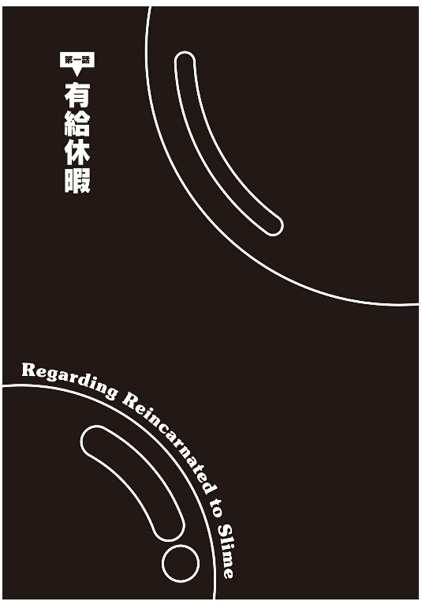開国祭を無事に終えたある夜、俺はいつものように温泉に併設された娯楽施設で寛(くつろ)いでいた。
Vào một đêm nọ sau khi Lễ hội Khai quốc kết thúc suôn sẻ, tôi đang thư giãn tại khu vui chơi giải trí được xây dựng cạnh suối nước nóng như mọi khi.
日中は迷宮運営などで忙しいが、夜はこうした時間を大切にしているのである。
Ban ngày thì bận rộn với việc vận hành Mê cung, nhưng tôi luôn trân trọng khoảng thời gian thế này vào buổi tối.
子供達も一緒だ。
Đám trẻ cũng ở cùng tôi.
イングラシア王国の学園に戻さず、我が国にて滞在させたままなのだ。
Tôi đã không đưa chúng trở lại Học viện ở Vương quốc Ingracia mà cứ để chúng lưu lại đất nước của mình.
色々と理由はあるが、それは子供達にとってはどうでもいい話だろう。ヒナタにお願いしてちゃんと勉強も見てもらっているので、何も問題ないのである。
Dù có nhiều lý do, nhưng với bọn trẻ thì chuyện đó chắc chẳng quan trọng đâu. Tôi đã nhờ Hinata trông nom chuyện học hành của chúng đàng hoàng rồi, nên cũng chẳng có vấn đề gì cả.
いつものように子供達を温泉に連れて来て、風呂上がりのコーヒー牛乳を堪能(たんのう)して、卓球(たっきゅう)ゲームで軽くケンヤ達に圧勝(あっしょう)する。
Như thường lệ, tôi dẫn bọn trẻ đi tắm suối nước nóng, thưởng thức món sữa cà phê sau khi tắm xong, rồi nhẹ nhàng thắng áp đảo nhóm Kenya trong trận bóng bàn.
「ひでーよ、先生！ 少しは手加減(てかげん)してくれたっていいだろ!?」
“Quá đáng thế, Thầy ơi! Thầy nương tay một chút thì đã làm sao đâu!?”
俺に負けたケンヤが悔しそうに叫んだ。
Kenya, đứa vừa thua tôi, gào lên đầy cay cú.
俺からすれば、大人の厳しさを教えてやっているようなもの。言って見れば教育の一環なので、手加減するつもりなどないのである。
Đối với tôi, đây chẳng khác nào đang dạy cho chúng biết sự khắc nghiệt của thế giới người lớn. Nói cách khác thì đây là một phần của giáo dục, nên tôi không hề có ý định nương tay đâu.
「はっはっは、甘いなケンヤ。俺は温厚で知られているけど、かなり負けず嫌いなのさ」
“Hahaha, ngây thơ quá đấy Kenya. Tuy thầy nổi tiếng là hiền lành, nhưng thầy cũng ghét thua cuộc lắm đấy nhé.”
「いや、別に温厚じゃねーじゃん。この前だって――」
“Không, thầy có hiền lành gì đâu. Mới hôm trước thầy còn――”
「おほん！ 細かい事を言うのは止め(や)たまえ。過去は過去、未来は未来。俺はね、常に前だけを向いて生きているのさ」
“Hừm hừm! Thôi đừng để ý mấy chuyện vặt vãnh đó nữa. Quá khứ là quá khứ, tương lai là tương lai. Thầy ấy à, thầy sống là chỉ luôn hướng về phía trước thôi.”
負け犬の遠吠えのように過去を蒸し返そうとするケンヤを、俺は堂々と受け流した。
Tôi đường đường chính chính gạt phăng lời của Kenya đang cố bới móc quá khứ chẳng khác nào tiếng than của kẻ bại trận.
「超ポジティブ……」
“Suy nghĩ tích cực gớm……”
リョウタがポツリと反応したが、黙殺する。
Ryota lí nhí phản ứng lại, nhưng tôi lờ đi luôn.
「反省してないってことね」
“Nghĩa là thầy chẳng hề hối lỗi chút nào nhỉ.”
「うふふ、先生らしい」
“Ưfufu, đúng phong cách của thầy.”
アリスは辛辣だね。
Alice cay độc thật đấy.
そしてクロエにも、俺の性格を見透かされてしまっているよ。
Và cả Chloe nữa, em ấy cũng nhìn thấu tính cách của tôi mất rồi.
「まあまあ、ある程度は勝負が成立している時点で、先生も手加減してくれていますって」
“Thôi mà, vào thời điểm trận đấu diễn ra được đến mức độ nào đó, là thầy cũng đã nương tay cho chúng ta rồi đấy.”
流石(さすが)だ、ゲイル。ちゃんと俺のフォローをしてくれるなんて、こういうしっかりした子がいてくれて本当に助かるというものだな。
Quả không hổ danh là Gale. Cậu bé biết nói đỡ cho tôi đàng hoàng, có một đứa trẻ chín chắn như thế này ở bên đúng là cứu cánh thật sự.
それに比べて、誰よりも年長なくせに誰よりも子供なヤツがいるんだよ。
Trái ngược với cậu bé, lại có một kẻ tuy lớn tuổi hơn bất kỳ ai nhưng lại trẻ con hơn bất kỳ ai.
「リムルよ、我も獣魔術を開発しようと思う」
“Rimuru này, ta nghĩ ta cũng sẽ phát triển Thú Ma Thuật.”
ほらね。
Đấy, thấy chưa.
ヴェルドラが突然アホな事を言い出したぞ、と。
Verudora đột nhiên thốt ra những lời ngốc nghếch.
子供達もキョトンとなって、ヴェルドラに視線が集まってしまったではないか。
Lũ trẻ cũng ngớ người ra, và ánh mắt mọi người đều đổ dồn vào Verudora.
だから俺は言ってやったのだ。
Thế nên tôi mới nói với hắn.
「あのさ、この世界には漫画に出てくるような獣魔がいないよね？ だからね、
“Này nhé, ở thế giới này đâu có mấy con Thú Ma như trong manga đâu đúng không? Vì thế nên là,
開発とか無理だから」
chuyện phát triển đó là bất khả thi”
――ってね。
――Đại loại thế.
それなのに、ヴェルドラは諦めない。
Thế mà, Verudora vẫn không chịu từ bỏ.
「何を言うか！ 見損なったぞ、リムルよ！！ 男の浪漫を、貴様はそんなに簡単に諦めるというのか!?」
“Cậu nói cái gì vậy! Ta nhìn nhầm cậu rồi, Rimuru à!! Lãng mạn của đàn ông, cậu định từ bỏ dễ dàng thế sao!?”
何が男の浪漫なのやら。
Lãng mạn của đàn ông cái quái gì chứ.
俺だって子供の頃は、毎日のように獣魔の卵が落ちていないか探し求めたものだ。
Ngay cả tôi hồi còn nhỏ, ngày nào cũng đi tìm xem có quả trứng Thú Ma nào rơi rớt ở đâu không.
怪しげな露店や、古びた店舗のショーケースなんかをな。
Nào là mấy sạp hàng trông khả nghi, hay mấy tủ kính trưng bày trong mấy cửa tiệm cũ kỹ chẳng hạn.
しかし、得た結論は一つ。
Thế nhưng, kết luận rút ra chỉ có một.
そんなものは売っていない、だった。
Đó là, thứ đó không có bán đâu.
まあね、そりゃそうだよね。
Mà, cũng phải thôi nhỉ.
知ってた――としか言いようがないけど、こうして人は大人になっていくものなのである。
Chỉ có thể nói là “Biết ngay mà” ―― nhưng con người ta trưởng thành theo cách như thế đó.
だからね、ヴェルドラ君。
Thế nên là nhé, Verudora-kun.
「お前もさ、大人になれよ」
“Cậu cũng trưởng thành lên đi chứ.”
俺は先輩として導いてやろうと、ヴェルドラに向けて温かい言葉をかけてやったのだ。
Tôi đã dành những lời lẽ ấm áp cho Verudora với ý định dẫn dắt cậu ta như một tiền bối.
それなのに、ヴェルドラは納得しなかった。
Ấy thế mà, Verudora vẫn không chịu phục.
「だがな、リムルよ。考えてもみよ！ 我が格好よく光牙(コアンヤア)を放ち、敵の横をかすめさせる。『莫迦(ばか)め、外したな』と敵が安心したところに、貴様が鏡蟲(チンクウ)で反射させて敵を仕留める訳だ。どうだ、コンビネーションも完璧ではないか！」
“Nhưng mà này, Rimuru. Thử nghĩ mà xem! Ta sẽ ngầu lòi phóng ra Quang Nha (Koanyaa) sượt qua người kẻ địch. Ngay lúc kẻ địch an tâm nghĩ rằng ‘Thằng ngu (Baka), trượt rồi nhé’, thì cậu sẽ dùng Kính Trùng (Chinkuu) phản xạ lại đòn đó để kết liễu hắn. Thế nào, sự phối hợp hoàn hảo quá còn gì!”
「ほう？」
“Hô?”
その作戦はアリですよ。
Chiến thuật đó được đấy chứ.
油断させて叩くのは戦術の基本だし、真面目に検討してみるのも――
Làm kẻ địch lơ là rồi đánh úp là cơ bản của chiến thuật, nên việc xem xét nghiêm túc cũng là――
「ほう、じゃないでしょ！ なんで貴方までその気になっているのよ……」
“‘Hô’ cái gì mà hô! Tại sao đến cả anh cũng hùa theo thế hả……”
思わず興味を示した俺を、風呂から上がったばかりのヒナタが呆れたように見つめていた。
Hinata, người vừa mới tắm xong, nhìn tôi - kẻ lỡ tỏ ra hứng thú - bằng ánh mắt đầy ngán ngẩm.
風呂上がりの浴衣姿がとても艶やかなのだが、その視線はとても冷たい。
Dáng vẻ mặc yukata sau khi tắm của cô ấy trông vô cùng quyến rũ, nhưng ánh mắt đó thì lại lạnh lùng vô cùng.
俺が自分の言動を振り返って、羞恥するのに十分なほどに。
Đủ khiến tôi phải nhìn lại lời nói hành động của mình và cảm thấy xấu hổ.
「いや、だって――」
“Không, là tại vì――”
「だって、じゃないでしょ？ 何？ 貴方、大人なのにマンガの真似して喜んでるわけ？」
“Tại vì cái gì mà tại vì? Sao hả? Anh là người lớn rồi mà lại đi bắt chước manga rồi lấy đó làm vui à?”
「そ、それはだな、男の浪漫がですね……」
“C-cái đó là, lãng mạn của đàn ông ấy mà……”
く、くそう……ヴェルドラと同じ言い訳をしてしまった。
Chết, chết tiệt…… Tôi lỡ miệng viện cái cớ y hệt tên Verudora mất rồi.
「何が浪漫よ。そもそもの話、伏兵が背後に立てるのなら、別に光術を反射させる必要がないじゃないの」
“Lãng mạn cái nỗi gì. Ngay từ đầu, nếu phục binh đã đứng được ở sau lưng địch, thì đâu cần thiết phải phản xạ Quang Thuật làm gì đâu chứ.”
ギクッ、となるほど鋭い指摘。
Giật mình, quả là một lời chỉ trích sắc bén.
その光牙(コアンヤア)って光術なんでしょ――と確認されたが、ヒナタの察しの良さには驚くばかりである。
Cái chiêu Quang Nha (Koanyaa) đó là Quang Thuật đúng không――cô ấy xác nhận lại như vậy, khiến tôi chỉ biết kinh ngạc trước sự nhạy bén của Hinata.
背後から不意打ちすればいいと言われてしまえば、返す言葉がないのは事実。
Bị nói toẹt ra là cứ đánh úp từ sau lưng là được, thì đúng là tôi chẳng còn lời nào để cãi lại.
あまりにも正論過ぎて、俺とヴェルドラは顔を見合わせてしょんぼりするしか なかった。
Lý luận quá sức chính xác, khiến tôi và Verudora chỉ biết nhìn nhau mà xuiuj mặt xuống thất vọng.
そんな俺達を冷たくジト目で一瞥し、ヒナタが３×３ＥＹＥＳ(サザンアイズ)の第一巻を手に取った。
Hinata liếc nhìn hai đứa tôi bằng ánh mắt lạnh lùng khinh bỉ, rồi cầm lấy tập 1 của bộ "3x3 EYES (Sazan Eyes)".
「で、その話題の漫画ってこれ？」
“Thế, cuốn manga đang được nhắc tới là cái này hả?”
「そうだよ。俺達の聖典さ」
“Đúng rồi đấy. Thánh điển của bọn ta đó.”
ここ、娯楽施設には、温泉から出て色々と楽しめるようにと、漫画本なども取り揃えて置いているのである。俺やヴェルドラの愛読書である３×３(サザン)ＥＹＥＳ(アイズ)もまた、当然のように全四十冊を完備してあったのだ。
Tại khu vui chơi giải trí này, để mọi người có thể tận hưởng nhiều thứ sau khi tắm suối nước nóng, tôi đã cho bày biện đủ loại truyện tranh. Bộ "3x3 EYES (Sazan Eyes)", sách gối đầu giường của tôi và Verudora, đương nhiên cũng được trang bị đầy đủ trọn bộ 40 tập.
ヒナタは我が物顔でマッサージチェアに横たわり、読書に没頭し始める。
Hinata nằm dài trên ghế mát-xa với vẻ mặt như thể chủ nhân nơi này, và bắt đầu đắm chìm vào việc đọc sách.
その堂々たる態度は、まさに自室で寛いでいるかの如く。ここが温泉の娯楽施設であることを忘れさせるほど、実に自然で違和感がなかった。
Thái độ đường hoàng đó cứ như thể cô ấy đang thư giãn trong chính phòng riêng của mình vậy. Nó tự nhiên đến mức khiến người ta quên mất rằng đây là khu vui chơi giải trí của suối nước nóng, chẳng hề có chút cảm giác lạc quẻ nào.
「ふーん……面白いじゃない」
“Hừm…… Cũng thú vị đấy chứ.”
思考加速しながら読んでいるのか、パラパラ捲るように読み進めていくヒナタ。
Có lẽ đang vừa đọc vừa kích hoạt 'Gia tốc tư duy' hay sao mà Hinata lật trang đọc nhanh vùn vụt.
「ヒナタも漫画読むんだね」
“Hinata cũng đọc manga cơ đấy.”
「は？ 当たり前じゃない」
“Hả? Đương nhiên là có rồi.”
「いや、でも、ヒナタって頭か――ゲフンゲフン。真面目だからさ、そういう娯楽には興味ないものとばかり思ってたよ」
“Không, nhưng mà, Hinata thì cứ cứng... khụ khụ. Cô nghiêm túc quá mà, nên tôi cứ tưởng cô chẳng hứng thú gì với mấy loại hình giải trí thế này chứ.”
俺がそう言うと、ヒナタが大きく溜息を吐いた。
Nghe tôi nói vậy, Hinata thở dài thườn thượt.
何か言いたい事でもあるのかしら？ と言って俺を威圧するように睨んでから、昔を思い出すように話を続ける。
Cô ấy lườm tôi như muốn gây áp lực với ánh mắt kiểu “Anh có ý kiến gì à?”, rồi tiếp tục câu chuyện như thể đang nhớ lại ngày xưa.
「昔、ユウキからも同じような事を言われたわ。私が、勉強以外に興味なさそうだ、ってね。色々あって忙しかったから、そんなに詳しくないけどね。私だってゲームくらいするし、漫画だって読んでたわよ」
“Hồi xưa, Yuuki cũng nói y chang như vậy. Cậu ta bảo trông tôi chẳng có hứng thú với gì ngoài việc học. Do có nhiều chuyện xảy ra với lại bận rộn quá nên tôi không rành rẽ lắm đâu. Nhưng tôi cũng có chơi game và đọc manga đấy nhé.”
そうなんだ、と頷く俺。
Ra là vậy, tôi gật gù.
「聞くがいい、ヒナタよ。リムルのヤツ、その最終巻を他の聖典(マンガ)にすり替えるという嫌がらせを仕出かしたのだ。我の悲しみが理解出来るであろう？」
“Nghe cho rõ đây, Hinata. Tên Rimuru đó, cậu ta đã làm cái trò quấy rối là tráo tập cuối đó bằng một cuốn Thánh điển (Manga) khác. Cô hẳn là thấu hiểu được nỗi bi thương của ta chứ?”
ヴェルドラめ、かなり根に持ってるな。
Cái tên Verudora này, thù dai gớm nhỉ.
「だから悪かったって！」
“Đã bảo là tôi xin lỗi rồi mà!”
面倒だから軽く謝罪して、この話題を流そうとした。
Vì thấy phiền phức nên tôi xin lỗi qua loa rồi định cho qua chuyện này.
しかし、ヒナタから思わぬ横槍が入る。
Thế nhưng, lại có một lời chen ngang bất ngờ từ Hinata.
「私にそんな真似をしたら、処すわね」
“Nếu anh mà làm trò đó với tôi, là tôi xử đẹp đấy nhé.”
怖ッ!?
Đáng sợ quá!?
まるで冗談に聞こえない。
Nghe chẳng giống nói đùa chút nào.
そうであろう！ とヴェルドラはご満悦だが、俺としては背筋がゾクッとなってしまった。
“Đúng thế chứ lị!” Verudora tỏ vẻ mãn nguyện, nhưng tôi thì lạnh cả sống lưng.
やっぱりヒナタは恐ろしい。絶対に敵に回してはならないなと再確認していたら、その当人が思わぬ事を言い出した。
Quả nhiên Hinata thật đáng sợ. Trong khi tôi đang xác nhận lại rằng tuyệt đối không được biến cô ấy thành kẻ thù, thì chính chủ nhân câu chuyện lại thốt ra một điều bất ngờ.
「光術といえば〝霊子崩壊(ディスインテグレーション)〟だけど……これは曲げたりするのは困難なのよね。不可能ではないと思うけど」
“Nhắc đến Quang Thuật thì có 〝Linh Tử Băng Hoại (Disintegration)〟 đấy…… nhưng cái này bẻ cong hướng đi khó lắm. Dù tôi nghĩ không phải là không thể.”
おやおや？
Ô kìa?
もしかして、ヒナタも乗り気になっているんじゃ……。
Không lẽ, Hinata cũng bắt đầu hứng thú rồi sao…….
「ふむ。我には扱えぬ魔法だが、ルミナスは専門家であろう？ どう思う？」
“Hừm. Dù là ma pháp mà ta không dùng được, nhưng Luminous là chuyên gia nhỉ? Cô nghĩ sao?”
いつの間にかヒナタの隣のマッサージチェアを占領していたヴェルドラが、温泉から出てきたばかりのルミナスへと話を振っている。
Verudora, kẻ đã chiếm cái ghế mát-xa bên cạnh Hinata từ lúc nào không hay, quay sang bắt chuyện với Luminous vừa mới từ suối nước nóng đi ra.
こちらも昔から馴染んでいるかの如く、浴衣姿が決まっていた。その手に持つのはトマトジュースとかではなく、フルーツ牛乳なのもポイントが高い。
Cô ấy cũng diện bộ yukata rất hợp, cứ như thể đã quen thuộc từ xa xưa vậy. Trên tay không phải là nước ép cà chua hay gì đó, mà lại là sữa trái cây, điểm này tôi đánh giá cao nha.
ルミナスは開国祭が終わるなり帰ったはずであったが、その膨大な魔力で『空間移動』し放題なのだ。気が向いたら、こうして温泉に浸かりにやって来るのである。
Luminous lẽ ra đã trở về ngay sau khi Lễ hội Khai quốc kết thúc, nhưng nhờ lượng ma lực khổng lồ đó mà cô ấy có thể dùng 『Dịch chuyển Không gian』 thoải mái. Hễ có hứng là cô ấy lại đến đây ngâm mình trong suối nước nóng thế này đây.
ヒナタがこちらに滞在しているから、それこそ毎日のように入り浸っていた。
Vì Hinata đang ở lại đây, nên cô ấy cũng ghé qua chơi gần như mỗi ngày.
「ふむ。妾(わらわ)にそれを聞くか。良かろう。結論から述べるなら、可能じゃ」
“Hừm. Lại đi hỏi Thiếp chuyện đó sao. Được thôi. Nói kết luận trước nhé, là có thể đấy.”
そんなの、いきなり聞かれても答えられないだろうに――と思ったのだが、それは早計だった。
Những tưởng bị hỏi bất ngờ thế thì sao mà trả lời được――tôi đã nghĩ vậy, nhưng xem ra là tôi đã hấp tấp rồi.
何と、ルミナスも会話に加わったのだ。
Không ngờ là Luminous cũng tham gia vào cuộc trò chuyện luôn.
それこそ勝手知ったる我が家の如く、ルミナスが三台目のマッサージチェア
Cứ như thể là nhà mình vậy, Luminous tiến về phía chiếc ghế mát-xa thứ ba
に寝そべりながら、自然な流れでヴェルドラとの会話が成立していた。
...nằm dài ra chiếc ghế, rồi cuộc trò chuyện với Verudora diễn ra một cách rất tự nhiên.
いがみ合っているように見えるが、意外と仲良しさんなんだよね、この二人。
Nhìn thì cứ như đang gầm ghè nhau, nhưng hai người này bất ngờ là lại khá thân thiết đấy chứ.
まあ、〝仲良きことは美しきかな〟と言うし、文句など何もないけど。
Mà, người ta có câu “Hòa thuận là điều tốt đẹp”, nên tôi cũng chẳng có phàn nàn gì đâu.
「とは言え、最初に設定しておかねばならんがな」
“Tuy nhiên, cần phải thiết lập ngay từ đầu đó.”
ルミナスの説明に興味をひかれて、俺も会話に参加する。
Bị thu hút bởi lời giải thích của Luminous, tôi cũng tham gia vào cuộc trò chuyện.
「ああ、それなら納得かも。光の速度で放たれる魔法なんて、発動後に曲げようがないと思ったんだよ」
“À, nếu vậy thì nghe lọt tai đấy. Ma pháp được phóng đi với tốc độ ánh sáng mà, tôi cứ nghĩ là không thể nào bẻ cong được sau khi đã kích hoạt chứ.”
俺の言葉に頷くルミナスやヒナタ。
Luminous và Hinata gật đầu trước lời nói của tôi.
「その通りじゃな。結果的に対象を追尾して曲がったように見えるだけで、最初から着弾点を予測しておかねば為せぬ芸なのじゃ」
“Đúng là như vậy. Kết quả là trông nó như thể đang truy đuổi mục tiêu và bẻ cong hướng đi, nhưng đó là kỹ nghệ không thể thực hiện được nếu không dự đoán điểm va chạm ngay từ đầu.”
そりゃまあ、光速は見てから回避するのは不可能なので、魔法発動を感知した時点で即座に回避行動に移る必要がある。
Thì đúng là, nhìn thấy tốc độ ánh sáng rồi mới tránh là chuyện không thể, nên cần phải chuyển sang hành động né tránh ngay tại thời điểm cảm nhận được ma pháp kích hoạt.
俺の場合を参考にして説明するなら、常に『万能感知』によって半径百メートル内の魔素の動きを把握している。この外周部分の魔素に光術による攻撃を
Nếu lấy trường hợp của tôi ra để giải thích, thì tôi luôn nắm bắt được sự chuyển động của ma tố trong bán kính một trăm mét nhờ vào 『Cảm Nhận Vạn Năng』. Khi đòn tấn công bằng Quang Thuật tác động vào ma tố ở phần rìa ngoài này...
感知してからだと、百メートル÷秒速三十万キロ弱となり、着弾に要するまでの時間は『０・００００００３３３５６４０９５１９８１５２……秒』となる訳だ。
Nếu tính từ lúc cảm nhận được, thì lấy 100 mét chia cho tốc độ xấp xỉ 30 vạn km/giây, thời gian cần thiết để đòn đánh trúng đích sẽ là 『0・000000333564095198152……giây』.
常人なら反応スラ不可能だが、俺の場合は『思考加速』で百万倍の知覚速度があるからして、着弾まで僅かながらの対策時間が得られるというわけ。
Người thường thì đến phản ứng còn không kịp, nhưng trường hợp của tôi nhờ có 『Gia tốc tư duy』 giúp tăng tốc độ tri giác lên một triệu lần, nên thành ra cũng có được chút ít thời gian để đưa ra đối sách trước khi trúng đòn.
と言ってもそれは体感時間なので、ほとんど何も出来ないくらいギリギリなのは言うまでもあるまい。
Dẫu nói vậy thì đó cũng chỉ là thời gian cảm nhận mà thôi, nên chắc không cần nói cũng biết là nó sát nút đến mức hầu như chẳng thể làm được gì cả.
それでも攻撃側からしても条件は同じなので、対象の動きを見て反応するなどは、とても現実的とは思えない話だったのだ。
Dù vậy, xét từ phía phe tấn công thì điều kiện cũng tương tự, nên cái chuyện nhìn chuyển động của mục tiêu rồi mới phản ứng là điều phi thực tế.
しかし、そうなると……。
Thế nhưng, nếu vậy thì…….
「……最初に設定しておけば、こういうふうに無数の光を降り注がせたり、直進と思わせて敵を追尾させたり出来るって話か？」
“……Nghĩa là nếu thiết lập ngay từ đầu, thì có thể khiến vô số tia sáng trút xuống như thế này, hay khiến nó truy đuổi kẻ địch dù thoạt nhìn tưởng như đang bay thẳng hả?”
該当する巻のページを捲って、藤井八雲(ふじいやくも)が光牙(コアンヤア)を気合で曲げたり分裂させたりする様を見せながら問いかける。
Tôi lật đến trang truyện tương ứng, vừa chỉ cho họ xem cảnh Fujii Yakumo(Fujii Yakumo) dùng khí thế để bẻ cong hay phân tách Quang Nha(Koanyaa), vừa cất tiếng hỏi.
「そうじゃな。ここまで自由自在に扱うには訓練を要するが、妾(わらわ)ならば可能じゃ」
“Đúng vậy. Để có thể sử dụng một cách thuần thục đến mức này thì cần phải huấn luyện, nhưng nếu là Thiếp thì có thể làm được.”
「ほう、流石はルミナスよな」
“Hô, quả không hổ danh là Luminous.”
「マジで!? 凄いじゃないか!!」
“Thật hả!? Tuyệt quá còn gì!!”
ドヤ顔のルミナス。
Luminous làm vẻ mặt đắc ý.
素直に称賛するヴェルドラと俺。
Verudora và tôi thành thật tán thưởng.
しかし、一人冷静なのがヒナタだった。
Thế nhưng, Hinata là người duy nhất vẫn giữ được sự bình tĩnh.
「でも、それってあくまでも〝霊子崩壊(ディスインテグレーション)〟よね？ 反射させたりするのは不可能でしょう」
“Nhưng mà, đó suy cho cùng cũng chỉ là 〝Linh Tử Băng Hoại (Disintegration)〟 thôi đúng không? Việc phản xạ nó hay gì đó chắc là không thể đâu nhỉ.”
「「…………」」
“「…………」”
「ついでに言うけど、〝霊子崩壊(ディスインテグレーション)〟は光熱を発していないから、対象を閉じ込めて熱ダメージを与えたりとかも出来ないわよ」
“Tiện thể nói luôn, 〝Linh Tử Băng Hoại (Disintegration)〟 không phát ra quang nhiệt, nên cũng không thể làm mấy trò như nhốt mục tiêu lại rồi gây sát thương nhiệt đâu đấy.”
ヒナタには、男の浪漫など無縁だった。
Với Hinata, cái gọi là lãng mạn của đàn ông đúng là thứ xa lạ.
その夢も希望もない突っ込みに、俺達は沈黙するしかなかったのだ。
Trước lời bắt bẻ không còn chút ước mơ hay hy vọng nào đó, chúng tôi chỉ còn biết im lặng.
＊
*
それはそれとして、魔法の開発は行(おこな)いたい。
Gác chuyện đó sang một bên, tôi vẫn muốn tiến hành phát triển ma pháp.
いざという時になってから困らないように、普段から備えておきたいのだ。
Tôi muốn chuẩn bị sẵn sàng ngay từ lúc bình thường, để đến lúc nước sôi lửa bỏng thì không phải lúng túng.
二組に分かれて卓球している子供達を横目に、俺達は真面目に相談会を始めていた。
Liếc nhìn đám trẻ đang chia làm hai nhóm chơi bóng bàn bên cạnh, chúng tôi bắt đầu một buổi thảo luận nghiêm túc.
「獣魔術は置いておくとして、魔法の研究は行いたいな」
“Tạm gác chuyện Thú Ma Thuật sang một bên, ta muốn nghiên cứu ma pháp.”
と俺が言うと、すかさずヴェルドラが乗っかった。
Tôi vừa dứt lời, Verudora liền lập tức hùa theo.
「その通りよ。我も遊んでばかりいると思われるのも心外であるし、そろそろ新たな取り組みを始めねばと思っておったのだ」
“Đúng thế. Ta cũng lấy làm phật ý khi bị cho là suốt ngày chỉ biết chơi bời, nên ta cũng đang nghĩ đã đến lúc phải bắt tay vào làm cái gì đó mới mẻ rồi.”
ヴェルドラはラミリス達と一緒になって迷宮作成を頑張っていたが、それも開国祭でのお披露目とその反省を経て、一旦の落ち着きを見せていた。
Verudora đã cùng nhóm Ramiris nỗ lực tạo ra Mê cung, nhưng sau màn ra mắt tại Lễ hội Khai quốc và quá trình họp rút kinh nghiệm, công việc đó cũng đã tạm thời đi vào ổn định.
新たな取り組みというか、遊びを考える時期になったという事なのだろう。
Gọi là bắt tay vào việc mới, hay đúng hơn là đã đến lúc hắn nghĩ ra trò tiêu khiển mới rồi.
新魔法の開発というのは、その点で持って来いだと思われる。役に立つかど
Việc phát triển ma pháp mới xem ra là quá lý tưởng cho mục đích đó. Chẳng cần biết có giúp ích được gì hay không...
うかはともかく、知的好奇心を満たすだけでも楽しいしね。
Khoan bàn đến chuyện có ích hay không, chỉ riêng việc thỏa mãn trí tò mò tri thức cũng đã vui rồi.
ヴェルドラが暴れたりして問題を起こさないだけでも、我が国にとって有用なのだ。
Việc Verudora không quậy phá hay gây rắc rối thôi cũng đã là điều hữu ích cho đất nước ta rồi.
そんな訳で、ヴェルドラが俺の意見に賛成なのは、素直に喜ばしい話だった。
Vì lẽ đó, việc Verudora tán thành ý kiến của tôi là một chuyện đáng mừng thật sự.
「先生なら糸を操るスキルとか『結界』を組み合わせて、縛妖蜘蛛(フーヤオチチュウ)みたいな技を開発出来そう！」
“Nếu là Sensei thì kết hợp skill điều khiển tơ với 『Kết Giới』, chắc là có thể phát triển được kỹ năng giống như Phược Yêu Tri Chu (Fuuyaochichuu) đấy ạ!”
卓球に参加せずに読書中だったクロエが、唐突にそう言った。
Chloe, cô bé đang đọc sách chứ không tham gia chơi bóng bàn, đột nhiên nói vậy.
なるほど確かに、俺の『万能糸』に封印系の『結界』魔法の性質を付与させれば、似たような見た目と効果を再現出来そうだな。
Ra là vậy, quả thực nếu gán tính chất của ma pháp 『Kết Giới』 hệ phong ấn vào 『Vạn Năng Chỉ』 của tôi, thì có vẻ sẽ tái hiện được vẻ ngoài và hiệu quả tương tự.
「クロエは賢いのう。よし、妾(わらわ)が褒めてやるゆえ、こっちに来るがよい」
“Chloe thông minh lắm. Được rồi, Thiếp sẽ khen thưởng cho, nên hãy lại đây nào.”
ルミナスがクロエを呼び寄せて、自分の膝の上に座らせた。
Luminous gọi Chloe lại gần, rồi để cô bé ngồi lên đùi mình.
「こう？」
“Thế này ạ?”
「うむ。それでよい」
“Ừm. Thế là được rồi.”
ルミナスはご満悦で、クロエの頭を撫でている。他の子供達にはそこまで
Luminous tỏ vẻ vô cùng mãn nguyện và đang xoa đầu Chloe. Với những đứa trẻ khác thì không đến mức...
もないのに、クロエにだけはメチャクチャ甘いのだ。
...thế mà riêng với Chloe thì cô ấy lại chiều chuộng hết mức.
クロエはクロエで、何故かルミナスに懐いている。不思議な事もあるものだなと思いつつ、微笑ましく見守る俺だった。
Chloe cũng vậy, chẳng hiểu sao em ấy lại quấn quýt lấy Luminous. Tôi vừa mỉm cười dõi theo họ, vừa nghĩ rằng trên đời đúng là có những chuyện lạ lùng thật.
「今のクロエの提案だけど、可能なの？」
“Về đề xuất vừa rồi của Chloe ấy, có khả thi không?”
「程度によるかな。完全封印とかは無理だけど、魔法で普通に封印するより効果を高める事は出来そうだ」
“Còn tùy vào mức độ nữa. Phong ấn hoàn toàn thì không được đâu, nhưng có vẻ là sẽ nâng cao hiệu quả hơn so với việc phong ấn bằng ma pháp thông thường đấy.”
直感的に答えたけど、間違っていないと思う。
Tôi trả lời theo trực giác, nhưng tôi nghĩ là mình không sai.
俺の『万能糸』が封印解除の邪魔をするから、効果の持続時間も長く出来そうだし。
Vì 『Vạn Năng Chỉ』 của tôi sẽ gây trở ngại cho việc giải trừ phong ấn, nên có vẻ cũng sẽ kéo dài được thời gian duy trì hiệu quả nữa.
《是。面白い試みです。別系統のスキルや魔法を組み合わせる事で、思わぬ効果が期待出来るでしょう》
《Xác nhận. Một thử nghiệm thú vị. Bằng cách kết hợp các Kỹ năng và Ma pháp thuộc hệ thống khác nhau, có thể kỳ vọng mang lại những hiệu quả bất ngờ》
智慧之王(ラファエル)さんも太鼓判を押してくれた。
Trí Tuệ Vương Raphael-san cũng đã đóng dấu đảm bảo cho tôi.
クロエの指摘した組み合わせなら、対魔物だけではなく対人でも有用な技を生み出せるとの事だった。
Theo lời (Raphael), nếu kết hợp theo cách Chloe chỉ ra, thì có thể tạo ra chiêu thức hữu dụng không chỉ để đối phó với ma vật mà còn với cả con người.
「こう言ったらアレだけど、まさか漫画の技から有用な技を思い付くなんてね。ちょっとショックだわ」
“Nói thế này thì hơi kỳ, nhưng không ngờ lại có thể nghĩ ra chiêu thức hữu dụng từ chiêu thức trong manga đấy. Tôi hơi bị sốc nha.”
とは、ヒナタらしい発言だな。
Đúng là phát ngôn đậm chất Hinata.
対照的なのがヴェルドラだ。
Trái ngược hẳn lại là Verudora.
「クアーーーハッハッハ！ ヒナタよ、だから貴様は頭が固いと言われるのだ。我など、とっくの昔に漫画の有用性を見抜いておったわ！！」
“Kuaaa hahaha! Hinata này, thế nên ngươi mới bị gọi là đồ cứng nhắc đấy. Ta đây đã nhìn thấu tính hữu dụng của manga từ đời tám hoánh nào rồi!!”
あっ、俺だって言葉を濁してたのに、直球で言っちゃったよ。
Á, ngay cả tôi còn đang nói tránh đi, thế mà hắn lại nói toạc móng heo ra rồi.
「何を隠そう我の〝ヴェルドラ流闘殺法〟も、聖典(マンガ)の記述を元にして使えそうなものを選出し、より洗練させて編み出したものなのだよ！！ これぞまさに、柔軟な思考の勝利と言えるだろう」
“Thực ra thì 〝Verudora Lưu Đấu Sát Pháp〟 của ta cũng là do ta tuyển chọn những thứ có vẻ dùng được dựa trên những gì ghi trong Thánh điển (Manga), rồi tinh chỉnh thêm để sáng tạo ra đấy!! Đây chính xác có thể gọi là thắng lợi của tư duy linh hoạt.”
ヴェルドラがそう自慢する。
Verudora tự hào khoe khoang như vậy.
それは凄いのかどうか意見の分かれるところだが、今はヒナタの怒りに油を
Chuyện đó có tuyệt vời hay không thì còn tùy quan điểm mỗi người, nhưng hiện tại thì hắn đang đổ thêm dầu vào cơn giận của Hinata...
注ぐ効果の方が大であるのは間違いなかった。
Chắc chắn là hiệu quả của việc châm thêm dầu vào lửa là rất lớn.
「悪かったわね、頭が固くて。何なら物理的に、その硬さを味わわせてあげてもいいのよ」
“Xin lỗi nhé, vì đầu óc tôi cứng nhắc. Nếu thích thì tôi có thể cho các người nếm thử độ cứng đó theo nghĩa vật lý đấy.”
頭突きですね、わかります。
Là cụng đầu đấy nhỉ, tôi hiểu mà.
ようやく異変に気付いたのか、ヴェルドラが小さく「あっ……」と声を出した。
Có vẻ cuối cùng cũng nhận ra sự bất thường, Verudora khẽ thốt lên một tiếng “A……”.
もう手遅れだ。
Muộn mất rồi.
ヒナタさん。その頭突きは俺へではなく、ヴェルドラさんにお願いしますね。
Hinata-san. Cú cụng đầu đó xin hãy dành cho Verudora-san chứ đừng nhắm vào tôi nhé.
俺を巻き込まないのなら止めませんので。
Nếu cô không lôi tôi vào thì tôi sẽ không can ngăn đâu.
と、心の中で願いつつ、ヴェルドラの背後に立つ。
Tôi vừa thầm cầu nguyện như vậy, vừa đứng ra sau lưng Verudora.
そしてそっと、ヴェルドラをマッサージチェアから追い出すようにして――
Rồi nhẹ nhàng, như thể muốn đuổi Verudora ra khỏi chiếc ghế mát-xa――
「ちょ、待て、リムルよ！ 我の背中を押すでない!!」
“Khoan, chờ đã, Rimuru! Đừng có đẩy lưng ta!!”
ヒナタの前まで追いやった。
Tôi đẩy hắn ta ra ngay trước mặt Hinata.
「さあ、クロエよ。良い子は寝る時間じゃ」
“Nào, Chloe. Trẻ ngoan đến giờ đi ngủ rồi đấy.”
と、空気を読む能力に長けたルミナスがクロエを抱き上げて、その場から避難した。
Thế là, Luminous - người rất giỏi đọc bầu không khí - đã bế Chloe lên và sơ tán khỏi chỗ đó.
「お前達もそろそろ卓球を止めて、大人しく部屋に戻れよ」
“Mấy đứa cũng thôi chơi bóng bàn đi, rồi ngoan ngoãn về phòng nhé.”
「はーい！」
“Vâng ạ!”
と、アリスが素直に返事する。
Alice ngoan ngoãn trả lời.
「またヒナタ姉ちゃんを怒らせたのかよ。懲りねーな」
“Lại chọc giận chị Hinata nữa à. Đúng là không biết chừa mà.”
「ヒナタ姉ちゃんじゃなく、ヒナタさんでしょ！ ケンヤもいい加減にしないと怒られるわよ」
“Không phải chị Hinata, mà là cô Hinata chứ! Kenya cậu mà không biết điều là cũng bị mắng đấy nhé.”
「へいへい」
“Biết rồi, biết rồi.”
「でも、ヒナタさんは僕達には優しいもんね」
“Nhưng mà, cô Hinata dịu dàng với tụi mình lắm nhỉ.”
「だよな」
“Chuẩn luôn.”
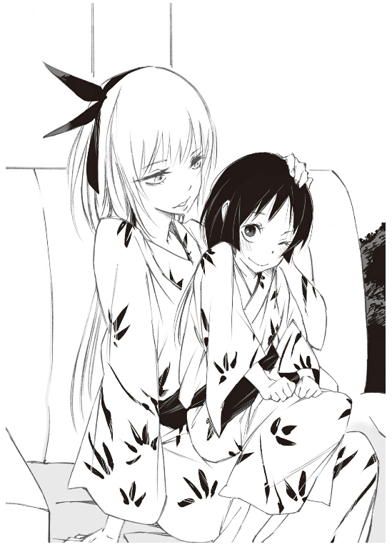「それでも礼儀は大事だから、アリスの言うように公私は区別しなきゃだけどね」
“Dù vậy lễ nghi vẫn rất quan trọng, nên như Alice nói, chúng ta phải phân biệt rõ ràng việc công và việc tư đấy nhé.”
年長らしく、ゲイルがそう締めくくった。
Đúng với tư cách là người lớn tuổi nhất, Gale chốt lại câu chuyện như vậy.
俺やヴェルドラのように軽々しく一線を越えないようにする為にも、ゲイルの言う通りにすべきであろう。
Để tránh việc tùy tiện vượt quá giới hạn như tôi và Verudora, có lẽ nên làm theo lời Gale thì hơn.
そんなふうに思いつつ、俺達はその場を後にする。
Vừa nghĩ như vậy, chúng tôi vừa rời khỏi đó.
その後、悲しそうなヴェルドラの悲鳴が娯楽施設に響き渡ったのだが、きっと気のせいに違いないとスルーしたのだった。
Sau đó, tiếng kêu la thảm thiết của Verudora vang vọng khắp khu vui chơi giải trí, nhưng tôi đã lờ đi và cho rằng chắc chắn chỉ là do mình tưởng tượng mà thôi.
＊
*
翌朝。
Sáng hôm sau.
いつものように子供達と一緒になって、食堂で朝食を取っていると、ヒナタとルミナスがやって来た。
Khi tôi đang cùng đám trẻ ăn sáng tại nhà ăn như mọi khi, thì Hinata và Luminous đi tới.
何食わぬ顔で一緒にいたヴェルドラがビクッとなったが、それは無視しておく。
Verudora đang ngồi cùng với vẻ mặt tỉnh bơ bỗng giật bắn người, nhưng tôi lờ chuyện đó đi.
「あれから考えてみたんだけど、雷術系なら似たような魔法を開発出来るかもね」
“Từ lúc đó tôi đã thử suy nghĩ, nếu là hệ Lôi Thuật thì có lẽ sẽ phát triển được ma pháp tương tự đấy.”
「えっと、それって雷蛇(レイショ)――？」
“À ừm, cái đó là Lôi Xà (Reisho)――?”
「漫画の話は一旦置いておいて、実戦に即した魔法の有用な活用方法を考えてみるのは面白いかもって話してたでしょ？ 私なりに、色々と考えてみたのよ」
“Tạm gác chuyện manga sang một bên đi, chẳng phải anh đã nói rằng việc suy nghĩ về cách vận dụng hữu ích các ma pháp phù hợp với thực chiến có thể sẽ thú vị sao? Theo cách riêng của mình, tôi cũng đã thử suy nghĩ nhiều thứ rồi đấy.”
「なるほど……」
“Ra là vậy……”
ヒナタの場合は浪漫とか関係なく、実に合理的な理由からの意見だった。
Trường hợp của Hinata thì chẳng liên quan gì đến lãng mạn cả, mà là ý kiến xuất phát từ lý do thực sự hợp lý.
それだけではない。
Không chỉ có thế.
「だからね、私も協力してあげようかと思って。迷惑かしら？」
“Thế nên là, tôi đang tính sẽ hợp tác giúp một tay. Có phiền không?”
「え、マジで？」
“Hả, thật á?”
これは思わぬ驚きだった。
Đây đúng là một sự ngạc nhiên bất ngờ.
俺達の馬鹿話を真面目に検討してくれただけでも驚きなのだが、まさか協力を申し出てくれるとは思わなかった。
Việc cô ấy nghiêm túc xem xét câu chuyện nhảm nhí của chúng tôi đã là một sự ngạc nhiên rồi, nhưng tôi không ngờ là cô ấy lại đề nghị hợp tác.
ヴェルドラの暇潰しにでもなればと思って始めた遊びだったが、ヒナタも手伝ってくれるとなると話は大きく違ってくる。
Đây vốn chỉ là trò chơi tôi bày ra với ý định giết thời gian cho Verudora, nhưng nếu có cả Hinata giúp sức thì câu chuyện lại hoàn toàn khác.
俺も本気になって取り組むべき事案であった。
Đây đã trở thành vụ việc mà tôi cũng nên bắt tay vào làm một cách nghiêm túc.
「面白い！ 皆で力を合わせて、より素晴らしき技――魔法の再現を目指そうではないか！」
“Thú vị đấy! Hãy cùng hợp sức lại, và nhắm tới việc tái hiện kỹ năng――ma pháp tuyệt vời hơn nữa nào!”
調子を取り戻したヴェルドラが、高らかに笑いながらそう言った。
Verudora, kẻ đã lấy lại phong độ, vừa cười lớn vừa nói vậy.
これを受けてルミナスが、思わぬ提案を口にする。
Tiếp lời, Luminous đưa ra một đề xuất bất ngờ.
「どうせなら、魔塔に行ってみてはどうじゃ？ そこには妾(わらわ)の古い知り合いがおっての、古今東西の魔法を記録しておるのじゃ。各国の図書館や、王室に保管されている機密文書以上に貴重な資料もあるゆえ、研究するには打って付けの場所じゃぞ」
“Đằng nào cũng vậy, hay là thử đến Ma Tháp xem sao? Ở đó có người quen cũ của Thiếp, kẻ đang ghi chép lại ma pháp đông tây kim cổ. Vì ở đó có những tư liệu còn quý giá hơn cả văn thư mật được bảo quản trong thư viện các nước hay hoàng gia, nên đó là địa điểm lý tưởng để nghiên cứu đấy.”
ルミナスの知り合いというのがどんな人物なのか気になるが、魅力的な提案
Tôi khá tò mò người quen của Luminous là nhân vật như thế nào, nhưng đó đúng là một đề xuất hấp dẫn
なのは間違いない。イングラシア王国にあった図書はほぼほぼ制覇しているが、他の地方にも有用な魔法があるはずなのだ。
Chuyện đó thì không sai vào đâu được. Dù tôi hầu như đã đọc hết sách vở ở Vương quốc Ingracia, nhưng chắc chắn ở những vùng đất khác vẫn còn những ma pháp hữu dụng.
その全てを知った上で、新たな組み合わせを模索する。これは是非とも行ってみなければなるまいと、俺の心は高鳴った。
Sau khi đã biết hết những thứ đó, tôi sẽ tìm tòi những sự kết hợp mới. Nghĩ đến việc nhất định phải đi thử một chuyến, lòng tôi rộn ràng đầy phấn khích.
しかも、ヒナタまで乗り気になってくれたのだ。
Hơn nữa, đến cả Hinata cũng trở nên hứng thú.
「興味深いわね。私も協力すると言った手前、一緒に行くわよ。それに、新しい系統の魔法を勉強したいと思っていたところだったから、丁度いいわ」
“Thú vị đấy. Đã trót nói là sẽ hợp tác rồi thì tôi cũng đi cùng luôn. Với lại, tôi cũng đang tính muốn học thêm một hệ thống ma pháp mới, nên đúng lúc thật.”
ヒナタは〈神聖魔法〉と〈精霊魔法〉を極めている上に、〈元素魔法〉も専門家顔負けなほど熟知している。
Hinata không chỉ tinh thông 〈Ma Pháp Thần Thánh〉 và 〈Ma Pháp Tinh Linh〉, mà còn am hiểu 〈Ma Pháp Nguyên Tố〉 đến mức khiến các chuyên gia cũng phải chào thua.
それだけではなく〈呪符術〉を操り、〈召喚魔法〉で精霊を召喚したりと、あらゆる分野に精通している万能型の魔法剣士なのだ。
Không chỉ có vậy, cô ấy còn điều khiển được 〈Chú Phù Thuật〉, dùng 〈Ma Pháp Triệu Hồi〉 để gọi tinh linh, quả là một Ma Pháp Kiếm Sĩ vạn năng tinh thông mọi lĩnh vực.
三系統以上を扱えるのだから、余裕で魔導師(ウィザード)を名乗れるレベル。それなのに剣の腕前も超一流とあって、ケチのつけようがない天才だと言えた。
Vì sử dụng được trên ba hệ thống nên cô ấy ở đẳng cấp dư sức xưng danh là Ma Đạo Sư (Wizard). Đã thế kiếm thuật cũng thuộc hàng siêu nhất lưu, có thể nói cô ấy là một thiên tài không có chỗ nào để chê.
そんなヒナタが手伝ってくれるのならば、新しい可能性の扉が開かれたようなものだろう。
Nếu được một Hinata như vậy giúp đỡ, thì chẳng khác nào cánh cửa của những khả năng mới đã mở ra vậy.
「行くしかあるまい。なあ、リムルよ？」
“Chỉ còn nước đi thôi. Nhỉ, Rimuru?”
「勿論だとも、ヴェルドラ君！」
“Đương nhiên rồi, Verudora-kun!”
「それじゃあ、旅行計画を立てましょうか」
“Vậy thì, chúng ta cùng lập kế hoạch du lịch nhé.”
こうして話は決まった。
Thế là chuyện đã được quyết định.
その日、俺達は三人仲良く詳細について話し合ったのだった。
Hôm đó, ba người chúng tôi đã vui vẻ cùng nhau thảo luận về các chi tiết.
＊
*
旅立ちの日となった。
Ngày khởi hành đã đến.
「リムル様も働き過ぎでしたし、以前から仰っていた『有給休暇』とやらを実践する良い機会ですね！」
“Rimuru-sama cũng đã làm việc quá sức rồi, đây là cơ hội tốt để thực hiện cái gọi là ‘Kỳ nghỉ phép có lương’ mà ngài vẫn thường nói từ trước đấy ạ!”
と、シュナが笑顔で決定してくれたのだ。
Shuna đã mỉm cười và chốt hạ giúp tôi như vậy.
それを無駄にしない為にも、俺は数日かけて仕事の日程調整を行い、重要案 件を終わらせている。
Để không lãng phí thiện ý đó, tôi đã dành ra vài ngày để điều chỉnh lịch trình công việc, và xử lý cho xong những đề án quan trọng.
仕事は丸投げしているつもりなのに、俺は何かと忙しかった。
Dù tôi cứ đinh ninh là mình đã đùn đẩy hết công việc đi rồi, nhưng chẳng hiểu sao tôi vẫn bận tối mặt.
やるべき事が、次から次へと湧き出てくる。
Những việc cần làm cứ ùn ùn kéo đến hết cái này đến cái khác.
シュナが取りまとめた、住民からの要望の確認。
Xác nhận các nguyện vọng của người dân do Shuna tổng hợp lại.
ベニマルとの組織改革についての話し合い。
Thảo luận với Benimaru về việc cải cách tổ chức.
ソウエイとの防衛計画の見直し。
Xem xét lại kế hoạch phòng thủ cùng Souei.
旧ユーラザニアに出向いて、ゲルドとの都市計画の打ち合わせ。
Đến Eurazania cũ để bàn bạc kế hoạch quy hoạch đô thị với Gerudo.
ガビルが飼い慣らそうとしている飛空龍(ワイバーン)の飼育施設の視察。肝心の捕獲はまだだけど、快適な環境を用意しておこうという寸法だ。
Thị sát cơ sở nuôi dưỡng Phi Không Long (Wyvern) mà Gabiru đang định thuần hóa. Tuy việc quan trọng nhất là bắt chúng về thì chưa xong, nhưng kế hoạch là cứ chuẩn bị sẵn môi trường thoải mái cái đã.
その合間に、ハクロウとの剣術訓練が入る。
Xen kẽ vào đó là các buổi huấn luyện kiếm thuật với Hakurou.
たまにサボってゴブタと釣りに行ったりするのだが、今回はパスして頑張ったのだった。
Thi thoảng tôi cũng trốn việc đi câu cá với Gobuta đấy, nhưng lần này tôi quyết định bỏ qua vụ đó và nỗ lực làm việc.
それにしても、俺の仕事量が多過ぎではなかろうか……。
Mà dẫu vậy, chẳng phải khối lượng công việc của tôi hơi bị quá nhiều sao…….
盟主という立場なのだから確認作業が山盛りあるのは仕方ないにしても、睡
Vẫn biết là ở vị trí Minh chủ thì việc phải xác nhận cả núi hồ sơ là không tránh khỏi, nhưng mà giấc ngủ
眠不要なのに自分の時間があまり持てないというのは問題だと思う。
đối với kẻ không cần ngủ như tôi thì không quan trọng lắm, nhưng việc không có nhiều thời gian cho bản thân thì tôi nghĩ là một vấn đề lớn.
これ、俺がスライムだったからいいようなものの、普通の人間だったら絶対に過労死一直線だったぞ。
Chuyện này may mà tôi là Slime nên mới ổn thôi, chứ nếu là người bình thường thì chắc chắn là đi thẳng một mạch xuống mồ vì làm việc quá sức rồi.
そりゃまあ、俺がやりたい事を呟くだけで企画が動き始めるのだから、自業自得とも言えるんだけど……。
Thì đúng là, chỉ cần tôi buột miệng nói ra điều mình muốn làm là dự án bắt đầu chạy, nên cũng có thể nói là tự làm tự chịu……
ヒナタなどから『自由にやり過ぎ』と呆れられたが、自分を振り返ってみれば返す言葉もないのだった。
Tôi bị Hinata và mọi người ngán ngẩm bảo là ‘làm việc quá tùy tiện’, nhưng nhìn lại bản thân thì tôi cũng chẳng còn lời nào để cãi.
俺の横ではヴェルドラも、ラミリスと何やら言い合っている。
Bên cạnh tôi, Verudora cũng đang tranh cãi gì đó với Ramiris.
「どうしてよ！ 何でアタシが留守番なのよさ!?」
“Tại sao chứ! Tại sao mình tui phải ở lại trông nhà hả!?”
「仕方ないであろう。我等は遊びに行くのではなく、英知を極めて自らを高めに向かうのだからな！ 貴様のようなお子様には、ちと難し過ぎる世界であろうよ」
“Biết sao được. Chúng ta đâu có đi chơi, mà là đang đi tìm kiếm sự tột cùng của trí tuệ để nâng cao bản thân! Một thế giới hơi bị quá khó hiểu đối với trẻ con như cô đấy.”
「ちょっと、見くびらないで欲しいわけ。こう見えてアタシだって、色々な知識を身に着けているんですけど!? そもそもさ、アタシが造ったゴーレムを見 て、師匠だって喜んでたじゃん！」
“Này nhé, đừng có mà coi thường người khác. Nhìn thế này thôi chứ tui cũng trang bị cho mình đủ loại kiến thức rồi đấy!? Mà ngay từ đầu nhé, nhìn con Golem tui chế tạo Sư phụ cũng đã vui mừng còn gì!”
「むむ、それはその通りだが……」
“Hừm, đúng là như vậy nhưng mà……”
ラミリスが優勢だな。このままだと同行者が一人増える事になりそうだが、そうなるとベレッタやトレイニーさん達も一緒に来る事になりそうだし、想定以上に大所帯となってしまう。
Ramiris đang chiếm ưu thế nhỉ. Cứ đà này thì có vẻ sẽ thêm một người đồng hành nữa, nhưng nếu thế thì cả Beretta và nhóm Treyni-san cũng sẽ đi cùng, thành ra đoàn sẽ đông đúc hơn dự tính rất nhiều.
それに、ラミリスまで同行するとなると、残された迷宮の管理が疎かになりそうだ。
Hơn nữa, nếu cả Ramiris cũng đi theo, thì việc quản lý Mê cung bị bỏ lại sẽ trở nên lơ là mất.
冒険者を受け入れて新事業として稼働を始めたばかりだし、完全に軌道に乗るまではラミリスに管理してもらいたいというのが本音だった。
Thực lòng mà nói, công việc kinh doanh mới là tiếp nhận mạo hiểm giả vừa mới bắt đầu hoạt động, nên tôi muốn Ramiris quản lý cho đến khi nó hoàn toàn đi vào quỹ đạo.
だから素直にそう伝える。
Thế nên tôi thành thật nói với cô ấy.
「悪いけど、ラミリスには迷宮をお願いしたいんだよ」
“Xin lỗi nhé, nhưng tôi muốn nhờ Ramiris trông coi Mê cung.”
「え？」
“Hả?”
「ほら、迷宮内に人が増えたし、不測の事態が起きないとも限らないだろ？ ラミリスがいてくれたら、何があっても対応出来るから、俺も安心して研究に 打ち込めるってもんだからさ」
“Này nhé, người trong Mê cung đã đông lên rồi, đâu thể chắc chắn là sẽ không có tình huống bất trắc xảy ra đúng không? Nếu có Ramiris ở đó, thì dù có chuyện gì xảy ra cũng ứng phó được, nên tôi mới có thể yên tâm mà tập trung toàn tâm toàn ý vào việc nghiên cứu dược chứ.”
「まあね？ アタシってば、頼りになるもんね。しょーがないな、リムルからそこまで言われちゃったら、アタシが頑張るしかないってもんよね！」
“Mà cũng phải ha? Tui vốn dĩ là chỗ dựa vững chắc mà lị. Hết cách rồi, nếu Rimuru đã nói đến thế, thì tui đành phải cố gắng thôi chứ biết sao giờ!”
俺の言葉を聞くなり、ラミリスが御機嫌になった。
Nghe thấy lời tôi nói, Ramiris lập tức vui vẻ ra mặt.
羽をパタパタさせて飛び回り、ベレッタを慌てさせている。
Cô nàng vỗ cánh bay vòng vòng, làm Beretta phải cuống cuồng cả lên.
「ぐぬぬ、ラミリスよ、勘違いするでないぞ！ リムルが一番頼りにしているのは我だからな！」
“Hừ hừ, Ramiris kia, chớ có hiểu lầm đấy! Người mà Rimuru dựa dẫm nhất chính là Ta đấy nhé!”
何を張り合っているんだか。
Cạnh tranh cái gì không biết.
ラミリスが納得してくれたんだから、これ以上余計な事を言わないで欲しいものだ。
Ramiris đã chịu chấp thuận rồi, nên tôi mong là hắn đừng có nói thêm điều gì thừa thãi nữa.
「もういいかしら？ そろそろ出発したいのだけど」
“Đã xong chưa vậy? Tôi muốn xuất phát rồi đấy.”
というヒナタの一声で、ようやく二人も落ち着いたのだった。
Với tiếng nói của Hinata, cuối cùng hai người kia cũng chịu trật tự.
ベニマルには念入りに後の事を頼んでから、他の皆にも挨拶を済ませた。
Tôi dặn dò kỹ lưỡng mọi việc lại cho Benimaru, rồi chào hỏi xong xuôi với mọi người khác.
シオンなどラミリス以上にしつこかったのだが、そこは手慣れたもので。
Shion thậm chí còn dai dẳng hơn cả Ramiris, nhưng cái này thì tôi quen rồi.
「大人しく留守番してくれるなら、シオン専用の調理室を用意してあげようと思うんだけど、どうする？」
“Nếu cô ngoan ngoãn ở lại trông nhà, ta định sẽ chuẩn bị cho cô một phòng bếp riêng, cô thấy sao?”
「えっ!?」
“Hả!?”
「魔力で電気の代用をする目途もたったし、システムキッチンを開発しようと思っててね。シオンにも――」
“Ta đã tìm ra phương án dùng ma lực thay thế điện, và đang tính phát triển một hệ thống nhà bếp hiện đại. Cho Shion nữa――”
「リムル様。私は新レシピを考案しながら、リムル様の帰る日をお待ちしています！ ビックリするくらい美味しい料理を用意するので、楽しみにしていて下さいね！」
“Rimuru-sama. Thần sẽ vừa nghĩ ra công thức mới vừa chờ ngày ngài trở về! Thần sẽ chuẩn bị những món ngon đến mức ngài phải giật mình, nên xin ngài hãy đón chờ nhé!”
よしよし、上手く納得してくれたぞ。
Được được, cô ấy chịu nghe lời rồi.
魔力で電気の代用というのは、正直言って今の段階では現実的ではない。魔素を電気へと変化させるのにひと手間かかるので、普及させるにはクリアせねばならぬ問題が多いのだ。
Nói thật thì việc dùng ma lực thay thế điện ở giai đoạn hiện tại vẫn chưa thực tế lắm. Để chuyển hóa ma tố thành điện năng cần tốn chút công sức, nên để phổ cập rộng rãi thì còn nhiều vấn đề phải giải quyết.
しかし、個人利用という事であれば、話は別だった。くっそ高い資材をふん だんに利用する事で、実用化に漕ぎつけていたのである。
Tuy nhiên, nếu là để sử dụng cá nhân thì câu chuyện lại khác. Bằng cách sử dụng một cách hào phóng những vật liệu đắt đỏ, tôi đã tiến tới được việc đưa nó vào thực tiễn.
なので、シオン専用のシステムキッチンを用意するというのも嘘ではないのである。
Thế nên, việc tôi nói sẽ chuẩn bị một hệ thống bếp hiện đại dành riêng cho Shion cũng không phải là nói dối.
新レシピというのが若干不安だけど……それはベニマルに委ねるとして、だ。
Dù cái gọi là "công thức mới" khiến tôi hơi bất an…… nhưng chuyện đó cứ giao phó cho Benimaru đi.
前に圧力鍋の話をした事があったのだが、あの時は『どんな圧力にも耐えられる鍋』と勘違いしたシオンが、一瞬にして試作品をスクラップにしてしまったのだ。
Trước đây tôi từng nói chuyện về nồi áp suất, nhưng khi đó Shion lại hiểu lầm thành 『Chiếc nồi chịu được bất kỳ áp lực nào』, và thế là cô ấy đã biến sản phẩm thử nghiệm thành đống sắt vụn trong nháy mắt.
泣いたよね。
Khóc ròng luôn ấy chứ.
カイジンも力尽きて放心していたっけ。
Hình như Kaijin cũng cạn kiệt sức lực và thẫn thờ cả người ra.
あの悲劇を繰り返さないようにしなければならない。
Phải làm sao để không lặp lại bi kịch đó mới được.
本命をシオンに破壊されないようにするのが大事だと悟った俺達は、シオンにも強度重視の試作品を用意するという方針で意見の一致をみたのだった。
Nhận ra rằng điều quan trọng là không để Shion phá hủy hàng thật, chúng tôi đã thống nhất ý kiến với phương châm là sẽ chuẩn bị cho Shion một sản phẩm thử nghiệm chú trọng vào độ bền.
それを引き合いにしてシオンを納得させられるなんて、我ながら冴えていた。
Lấy cớ đó mà thuyết phục được Shion, tự tôi cũng thấy mình thật sáng suốt.
それに、シオンは第二秘書――ディアブロの協力もあって、美味しい紅茶を淹れられるようになっていた。その御褒美をあげようかと思っていたところだったし、丁度いいタイミングだったのだ。
Hơn nữa, nhờ có Shion và sự hợp tác của thư ký thứ hai — Diablo, mà cô ấy đã có thể pha được trà ngon. Lúc đó tôi đang định thưởng cho cô ấy, nên đúng là một thời điểm hoàn hảo.
先日、直属の部下が欲しいとかで、探しに旅立ったばかりなのだ。
Mới hôm trước, cậu ta bảo là muốn có thuộc hạ trực thuộc hay gì đó, nên vừa mới lên đường đi tìm kiếm xong.
いつもならシオンに張り合って面倒を起こすのだが、今はいなかった。
Bình thường thì cậu ta sẽ kèn cựa với Shion và gây rắc rối, nhưng giờ lại không có mặt ở đây.
ついでにこれでアイツまでいたら、絶対について来ようとしただろう。そうなるとシオンも黙っていなかっただろうし、まとまる話もこんがらがっていたに違いない。
Tiện thể thì nếu có cả hắn ở đây, chắc chắn hắn sẽ đòi đi theo cho bằng được. Nếu thế thì Shion cũng sẽ chẳng chịu im lặng, và câu chuyện đang êm đẹp này chắc chắn sẽ trở nên rối tung rối mù lên.
シオンへの説得を聞いていた子供達までお土産をねだってきたのはご愛敬だ。
Việc đám trẻ nghe tôi thuyết phục Shion rồi cũng vòi vĩnh quà cáp thì coi như là sự nũng nịu dễ thương đi.
「先生、珍しい剣があったら買ってきてくれよな！」
“Thầy ơi, nếu có thanh kiếm hiếm nào thì mua về cho em nhé!”
「私は人形でいいわ」
“Em thì búp bê là được ạ.”
「えっと、僕は何でもいいです」
“À ừm, em thì gì cũng được ạ.”
「おいおい、お前らもどんどん図々しくなってないか？」
“Này này, mấy đứa cũng ngày càng được đà làm tới rồi đấy hả?”
「いいじゃん。先生って金持ちなんだから」
“Được mà. Thầy giàu lắm cơ mà.”
「そうよ！ ケチ臭い事言ってないで、ヒナタお姉ちゃんを見習って欲しいわ」
“Đúng đó! Đừng có nói mấy lời keo kiệt nữa, thầy hãy học tập chị Hinata đi.”
何をっ!?
Cái gì cơ!?
俺がヒナタを引き合いに出されると弱いのを見透かして、高度な心理戦を仕掛けてきおってからに。
Dám nhìn thấu điểm yếu của tôi là sợ bị đem ra so sánh với Hinata, để rồi phát động cuộc chiến tâm lý cao cấp thế này đây.
「まあまあ、先生を困らせちゃダメだって」
“Thôi mà, đừng làm khó thầy chứ.”
ゲイルは大人だね。
Gale chững chạc thật đấy.
まだ子供なのに、苦労性になっちゃってないか心配だよ。
Dù còn là trẻ con mà đã hay lo nghĩ thế này, tôi thấy lo ghê.
子供達のオネダリなんて可愛いものだし、お土産くらい言われなくても買って来るつもりだったんだけどね。
Trẻ con vòi vĩnh thì cũng dễ thương thôi, với lại chuyện quà cáp thì dù không bị nhắc tôi cũng định mua về rồi.
そんな事を言うと付け上がりそうだから、言うつもりなんてないんだけど。
Nhưng nếu nói ra thì sợ chúng được đà lấn tới, nên tôi không định nói đâu.
そんなふうに思っていると、ニッコリ笑顔のクロエからおねだりされた。
Đang nghĩ như vậy thì Chloe mỉm cười tươi rói và vòi vĩnh tôi.
「先生、行ってらっしゃい！ お土産には、面白そうな魔法の本をお願い！」
“Thầy đi nhé! Quà thì cho em xin một cuốn sách ma pháp nào thú vị nha!”
その可愛らしい笑顔に、俺もノックダウンである。
Trước nụ cười đáng yêu đó, tôi cũng bị hạ gục hoàn toàn.
微笑み一つで何でも買ってあげたくなってしまったが、どこでそんな手管を覚えたのやら――って、多分ルミナスだな。今後の付き合いを注視しておかないと、クロエが悪女になってしまいそうだ。
Chỉ với một nụ cười mỉm mà khiến tôi muốn mua cho em ấy bất cứ thứ gì, không biết em ấy học đâu ra cái chiêu trò đó nữa――à mà khoan, chắc là Luminous rồi. Nếu không giám sát kỹ mối quan hệ qua lại sau này, thì e là Chloe sẽ trở thành cô gái xảo quyệt mất thôi.
今度ルミナスに注意しておかねばと思いつつ、俺達は出発したのだった。
Vừa nghĩ bụng rằng lần tới phải nhắc nhở Luminous một trận, chúng tôi lên đường xuất phát.
CHƯƠNG 2: THÀNH PHỐ HIỀN NHÂN
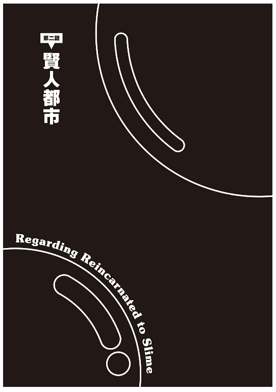マルクシュア王国。
Vương quốc Marcushua.
西側諸国に属しているが、魔導王朝サリオンとも接する南方の小国である。
Tuy thuộc các nước phương Tây, nhưng đây là một tiểu quốc ở phương Nam tiếp giáp với Ma Đạo Vương Triều Sarion.
小さいながらも港湾を有していて、海産物も流通している稀有な国だ。
Dù nhỏ bé nhưng lại sở hữu cảng biển, và là một đất nước hiếm hoi có hải sản được lưu thông.
もっとも、海は巨大な魔物の支配領域であり、海路交易が盛んという訳ではない。冷凍保存技術等も発達していない為、マルクシュア国内だけで消費される魚介類などを細々と採捕しているだけの、実にささやかで貧しい国であった。
Tuy nhiên, vì biển là lãnh địa cai quản của những con ma vật khổng lồ, nên giao thương đường biển không hề phát triển. Do kỹ thuật bảo quản đông lạnh cũng chưa phát triển, họ chỉ đánh bắt cầm chừng các loại thủy hải sản để tiêu thụ trong nội địa Marcushua, nên đây thực sự là một đất nước nghèo nàn và khiêm tốn.
しかし、この国には大勢の魔法使いが、魔塔を目指すべく身を置いていた。
Thế nhưng, tại đất nước này có rất đông ma pháp sư đang lưu trú nhằm mục tiêu hướng đến Ma Tháp.
そうした者達は基本的に金を持っていて、王侯貴族といった富裕層をより潤わせていたのだ。
Những kẻ đó về cơ bản đều có tiền, giúp cho tầng lớp thượng lưu như vương hầu quý tộc càng thêm sung túc.
勿論、庶民もそのおこぼれに与(あずか)っている。
Tất nhiên, dân thường cũng được hưởng chút lộc rơi lộc vãi từ đó.
貧しいながらも民が飢える事なく暮らしていけるのが、その証拠であろう。
Việc người dân tuy nghèo nhưng vẫn sống mà không bị chết đói chính là bằng chứng cho điều đó.
故に。マルクシュアの王都は、賢人都市と呼ばれているのだ。
Chính vì thế. Vương đô của Marcushua được gọi là Thành phố Hiền nhân.
＊
*
俺達は今、西方聖教会のマルクシュア支部に到着したばかりだ。
Chúng tôi hiện vừa mới đến chi nhánh Marcushua của Thánh Giáo Hội Phương Tây.
ヒナタが元素魔法‥拠点移動(ワープポータル)で、俺達も一緒に連れて来てくれた。
Hinata đã dùng Ma Pháp Nguyên Tố... 〝Di Chuyển Cứ Điểm (Warp Portal)〟 để đưa cả bọn cùng đến đây.
どうしてマルクシュアとかいう王国に来たのかというと、それにはちゃんとした理由があった。
Nói về lý do tại sao lại đến vương quốc tên là Marcushua này, thì có một nguyên do chính đáng cả đấy.
ルミナスが言っていた魔塔は、ここからしか行けないからだ。
Đó là vì Ma Tháp mà Luminous nhắc tới chỉ có thể đi được từ nơi này.
魔塔とは、誰でも簡単に行ける場所ではない。
Ma Tháp không phải là nơi ai cũng có thể dễ dàng lui tới.
特殊な条件下で、資格のある者だけに道が開かれるのだ。
Chỉ dưới những điều kiện đặc biệt, con đường mới mở ra cho những kẻ có tư cách.
その条件とは、新月の夜に、この国にある大渦の見える岬の上に立つこと。
Điều kiện đó là, vào đêm trăng non, phải đứng trên mũi đất nhìn thấy xoáy nước lớn ở đất nước này.
そしてもう一つ。
Và còn một điều nữa.
こちらの方が重要なのだが、飛行魔法を扱えること、だった。
Điều quan trọng hơn là việc phải sử dụng được Ma pháp Bay.
ルミナスから聞いた話によると、新月の夜にだけ大渦から魔塔が出現するらしい。
Theo chuyện nghe được từ Luminous, hình như Ma Tháp chỉ xuất hiện từ xoáy nước lớn vào mỗi đêm trăng non.
荒れ狂う海を船で渡ってもいいのだが、それは非常に困難なのだと。
Đi thuyền vượt qua vùng biển cuồng nộ cũng được thôi, nhưng nghe nói việc đó cực kỳ khó khăn.
簡単に言えば、その海を渡れない時点で塔に入る資格なしと見做される訳だね。
Nói đơn giản thì, ngay tại thời điểm không vượt qua được vùng biển đó là đã bị coi như không đủ tư cách để vào tháp rồi.
素直に飛んで行く方が簡単なのだろう。
Cứ bay thẳng đến đó có lẽ sẽ đơn giản hơn.
古今東西のあらゆる魔法を収集しているとの噂だし、魔法使い以外はお呼びではないのだろう。
Nghe đồn nơi đó thu thập mọi loại ma pháp đông tây kim cổ, nên chắc là ngoài những kẻ sử dụng ma pháp ra thì miễn tiếp.
もっとも、塔に入れたからと言って、丁寧に対応されるとは限らない。それはまあ、入ってからのお楽しみという事だった。
Tuy nhiên, dù có vào được tháp thì cũng chưa chắc đã được đối đãi tử tế. Chuyện đó thì, chà, cứ xem như là niềm vui để dành sau khi vào trong vậy.
俺達の場合は、ルミナスに紹介状を用意してもらっている。門前払いはされないと信じたいところだが……。
Trường hợp của chúng tôi thì đã nhờ Luminous chuẩn bị sẵn thư giới thiệu. Tôi muốn tin là mình sẽ không bị đuổi thẳng cổ ngay từ cửa, nhưng mà……
三日後に新月の夜が訪れる。
Ba ngày nữa sẽ là đêm trăng non.
その当日にやってくれば待たずに済むが、事はそう簡単な話ではない。
Nếu đến đúng vào ngày đó thì sẽ không phải chờ đợi, nhưng sự đời đâu có đơn giản như thế.
マルクシュア王国も西側諸国に属している以上、密入国する訳にはいかないからだ。入国するだけならバレないのだが、その後の行動に影響が出てしまうと考えた。
Vì Vương quốc Marcushua cũng thuộc các nước phương Tây, nên chúng tôi không thể lén lút xâm nhập. Chỉ để vào lãnh thổ thì có lẽ sẽ không bị phát hiện, nhưng tôi nghĩ rằng điều đó sẽ ảnh hưởng đến những hành động sau này.
何しろ、俺って一応魔王だし。
Dù sao thì, tôi cũng mang danh là Ma Vương mà.
ヴェルドラなんて〝暴風竜〟だし。
Còn Verudora là 〝Bạo Phong Long〟 nữa.
そしてヒナタは、人類の守護者とでも呼ぶべき聖騎士団長なのだからね。いきなり法を無視して入国するより、正攻法で招かれる方が得策なのである。
Và Hinata là Đoàn trưởng Thánh Hiệp Sĩ, người xứng đáng được gọi là Hộ vệ của nhân loại. So với việc đột nhiên phớt lờ pháp luật để nhập cảnh, thì đường đường chính chính được mời đến vẫn là thượng sách hơn.
それに、入国だけなら簡単なのだが、王都への入場は面倒な審査が待ち受けているのである。
Hơn nữa, việc nhập cảnh thì đơn giản thôi, nhưng muốn vào Vương đô thì phải trải qua cuộc kiểm tra phiền phức đang chờ đợi.
何とビックリ、海の中にある魔塔を中心として極大結界が張られていて、空や地下からの侵入さえ防いでいたのだ。その『結界』を無理矢理突破するのは可能なのだが、そんな真似をすれば絶対にバレるし、大問題に発展するのは間違いなかった。
Thật bất ngờ, một Kết giới cực đại lấy tâm điểm là Ma Tháp nằm giữa biển đã được giăng ra, ngăn chặn cả việc xâm nhập từ trên trời hay dưới lòng đất. Tuy có thể dùng sức mạnh để phá vỡ 『Kết Giới』 đó, nhưng nếu làm trò đó thì chắc chắn sẽ bị lộ, và không nghi ngờ gì nữa, nó sẽ biến thành một vấn đề lớn.
「ヒナタは結界があるって知ってたの？」
“Hinata có biết là có kết giới không?”
「ええ、当然でしょう。だからこうして、王都内への入場許可を得る前提で行動してるんじゃない」
“Ừ, dĩ nhiên rồi. Thế nên tôi mới hành động dựa trên tiền đề là phải lấy được giấy phép vào Vương đô như thế này đây.”
ヒナタの言葉からもわかる通り、極大結界は王都を全面的に守るように張られているのだ。それもそのはず、何しろここの王都は賢人都市と呼ばれるほど、魔塔と密接に関わりのある国なのだから。
Qua lời nói của Hinata cũng đủ hiểu, Kết giới cực đại được giăng ra để bảo vệ toàn diện Vương đô. Âu cũng là điều dễ hiểu, bởi lẽ Vương đô nơi đây được gọi là Thành phố Hiền nhân, là một quốc gia có mối quan hệ mật thiết với Ma Tháp.
魔塔があるからこそ、この地に人が集い、町になり、国へと発展した。マルクシュア王国とは、魔塔があるからこそ成り立つ国家だったのだ。
Chính nhờ có Ma Tháp mà con người mới tụ tập về vùng đất này, hình thành thị trấn, rồi phát triển thành quốc gia. Vương quốc Marcushua là một quốc gia tồn tại chính là nhờ có Ma Tháp.
新月の夜の岬なんて、魔塔を目指す魔法使いで大混雑しているらしい。魔法使いの人口がそこまで多くないから噂話が大袈裟に語られているだけだろうけど、それでも強行突破などしたら、絶対に発見されてしまうだろう。
Nghe nói mũi đất vào đêm trăng non đông nghịt những ma pháp sư nhắm đến Ma Tháp. Có lẽ vì số lượng ma pháp sư không nhiều đến thế nên những lời đồn đại mới bị thổi phồng lên, nhưng dù vậy, nếu cố tình đột phá thì chắc chắn sẽ bị phát hiện.
ともかく、魔塔は王都内にある岬からしか行けない以上、賢人都市には合法的に入場しておく必要があったのだ。
Dù sao thì, vì Ma Tháp chỉ có thể đi được từ mũi đất nằm trong Vương đô, nên cần phải nhập cảnh vào Thành phố Hiền nhân một cách hợp pháp.
無理矢理入場して隠れておくという案もあるにはあるが……誰かに見られたら「アイツ誰だ？」って話になるだろうし……確実に大騒ぎになるだろう。多 少待たされるが、素直に入場手続きをする方がマシなのだった。
Cũng có phương án là cứ xông vào rồi ẩn nấp đấy…… nhưng nếu bị ai nhìn thấy rồi hỏi “Tên kia là ai vậy?” thì…… chắc chắn sẽ thành một vụ náo loạn lớn. Tuy phải chờ đợi một chút, nhưng làm thủ tục vào cổng một cách đàng hoàng vẫn tốt hơn.
だからと言って、国家元首としての訪問となると面倒事が多過ぎる。
Nói thì nói vậy, nhưng nếu đến thăm với tư cách Nguyên thủ quốc gia thì phiền phức lắm.
魔王が何用だ――ってな話になりかねないし、そうでなくても魔国との取引を希望する国が増えている現状、迂闊に正式訪問すると騒ぎになってしまうのが目に見えた。
E là sẽ bị tra hỏi xem Ma Vương có việc gì――mà dù không thế, thì trong tình hình hiện nay ngày càng có nhiều nước muốn giao thương với Ma Quốc, nếu sơ suất đến thăm chính thức thì chắc chắn sẽ gây náo loạn.
まして〝暴風竜〟を連れて来たとなれば、戦争しに来たと誤解されかねない。
Huống hồ là còn dẫn theo cả 〝Bạo Phong Long〟, rất dễ bị hiểu lầm là đến gây chiến.
なので、一般の旅人として訪れるべき、というふうに意見が纏(まと)まったのである。
Thế nên, chúng tôi đã thống nhất ý kiến là nên đến thăm với tư cách khách du lịch bình thường.
そうなると問題になるのが、身分証明書だった。
Vấn đề nảy sinh lúc này là giấy tờ tùy thân.
俺は自由組合発行のＢランク証を持っているし、ヒナタには西方聖教会による偽の身分証があった。聖騎士としてそれはどうなのと思ったが、ヒナタがお小遣い稼ぎする際のダミーになっているらしく、黙認されているのだと。
Tôi thì có thẻ Hạng B do Hiệp hội Tự do cấp, còn Hinata thì có giấy tờ giả do Tây Phương Thánh Giáo Hội làm. Tôi đã nghĩ với tư cách Thánh Hiệp Sĩ thì làm thế có ổn không, nhưng nghe bảo đó là vỏ bọc để Hinata kiếm thêm tiền tiêu vặt, nên được ngầm cho phép.
ルミナスって身内には激甘なんだな――と、納得した次第である。
Luminous đúng là nuông chiều người nhà quá thể――tôi đành chấp nhận như vậy.
つまりは、ヴェルドラの身分証明をどうするのか、それが喫緊(きっきん)の課題だった。
Tóm lại, làm thế nào để có giấy tờ tùy thân cho Verudora, đó mới là vấn đề cấp bách.
当然ながら、俺は一番確実で簡単な方法を提示した。
Đương nhiên, tôi đã đề xuất phương pháp chắc chắn và đơn giản nhất.
我が国に新設される予定の自由組合テンペスト支部で、〝ギメイ〟名義で発行してもらおう、ってね。
Đó là nhờ Chi nhánh Hiệp hội Tự do Tempest sắp được thành lập tại nước ta cấp cho một cái dưới danh nghĩa 〝Tên Giả〟(Gimei).
しかし、この案にはヴェルドラが大反対したのだ。
Thế nhưng, Verudora lại kịch liệt phản đối phương án này.
……
……
……
……
曰く。
Anh ta phán.
「我だって、本名で登録したいぞ！ それに何より、ギルドでのイベントをスルーするなど勿体ないではないか！！」
“Ta cũng muốn đăng ký bằng tên thật chứ! Với lại hơn hết thảy, bỏ qua các sự kiện ở Guild chẳng phải là lãng phí lắm sao!!”
というふうに、クソ面倒な事を言い出した訳だ。
Hắn bắt đầu thốt ra những điều phiền phức chết đi được như thế đấy.
イベントって何だよ？ と思ったら、先輩冒険者に絡まれてみたいのだと。
Tôi tự hỏi "Sự kiện cái quái gì?", thì hóa ra là muốn thử cảm giác bị các mạo hiểm giả tiền bối kiếm chuyện gây sự.
アホかと思ったね。
Tôi nghĩ hắn đúng là đồ ngốc.
確かに、俺もギルドでは絡まれた。
Quả thực, tôi cũng từng bị gây sự ở Guild.
しかしそれは、この外見だったからだ。
Nhưng đó là tại cái vẻ bề ngoài này.
仮面で性別不明だが、声から判断すると少女だと思われる。まだ幼い少女が冒険者になろうとしているのだから、大人達からすれば面白くなかったに違いない。
Tuy giới tính không rõ do đeo mặt nạ, nhưng phán đoán qua giọng nói thì có vẻ là một thiếu nữ. Một thiếu nữ còn nhỏ tuổi mà lại định làm mạo hiểm giả, thì chắc chắn là mấy người lớn sẽ thấy không vừa mắt rồi.
自分達の仕事を舐めるな、という気持ちだったと思うのだ。
Tôi nghĩ cảm giác của họ là "Đừng có mà coi thường công việc của bọn tao".
翻って、ヴェルドラを見てみよう。
Ngược lại, hãy thử nhìn Verudora mà xem.
筋骨隆々の大男。
Một gã đàn ông to lớn cơ bắp cuồn cuộn.
どう見ても強そうだし、冒険者として歓迎すべき人材だと思われる。
Nhìn kiểu gì cũng thấy mạnh mẽ, và được xem là nhân tài đáng hoan nghênh để trở thành mạo hiểm giả.
そんな相手に文句を言うようなヤツは、ちょっと頭の出来がよろしくない馬鹿者しかいないのではあるまいか。
Kẻ mà dám kiếm chuyện với đối tượng như thế, thì chắc chỉ có mấy tên ngốc đầu óc có vấn đề mà thôi.
「だからさ、絡まれたりしないって」
“Thế nên là, cậu sẽ không bị gây sự đâu.”
「だがな、新人は先輩からの洗礼を浴びるのが礼儀なのであろう？」
“Nhưng mà này, tân binh nhận sự rửa lễ từ các tiền bối là lễ nghi mà đúng không?”
「いや、そんな風習はないから」
“Không, làm gì có cái phong tục đó.”
「しかし、それがお約束だと――」
“Thế nhưng, đó là mô-típ rồi mà――”
「違うから」
“Không phải đâu.”
まったく。どこのどいつだ、ヴェルドラに余計な知恵をつけたのは――って、おっと？ その手に持っているのは、俺が出してやった漫画本ですね……。コホン。
Thiệt tình. Không biết tên nào đã dạy cho Verudora mấy cái trò khôn vặt thừa thãi này――á khoan? Trên tay anh ta là cuốn truyện tranh mà chính tôi đã đưa cho còn gì……. Khụ khụ.
これ以上は藪蛇になりそうだし、追及するのは止めておこう。
Chuyện này mà bới móc thêm thì chỉ tổ rước họa vào thân, nên thôi không truy cứu nữa.
という事で、俺はちょっぴり弱腰になってしまったのだが、その隙を見逃すようなヴェルドラではなかった。
Do đó, tôi đã có chút chùn bước, nhưng Verudora đâu phải là kẻ bỏ qua sơ hở đó.
「何事も諦めてはならん。そうであろう？ やってみてダメなら諦めもつこうが、挑戦せぬのは我の性分ではないというものぞ!!」
“Chuyện gì cũng không được bỏ cuộc. Đúng không nào? Thử làm rồi thất bại thì còn cam tâm, chứ không thử thách thì không phải là bản tính của ta đâu!!”
「うーん……」
“Ưm……”
ヴェルドラの言い分だが、何となく恰好いい感じ。
Lời Verudora nói nghe có vẻ ngầu đấy chứ.
いや、雰囲気に騙されてるのはわかってるけど、もう好きにさせてもいいかなと思ってしまった。
Không, tôi biết là mình đang bị cái bầu không khí đó đánh lừa, nhưng tôi cũng bắt đầu nghĩ thôi thì cứ để hắn làm gì thì làm cho rồi.
そんな俺達のやり取りを黙って聞いていたヒナタが、呆れたように大きく溜息を吐いた。
Hinata, người nãy giờ im lặng lắng nghe cuộc đối thoại của chúng tôi, thở dài thườn thượt đầy ngán ngẩm.
「もういいわよ。魔塔がある国については私も知っているけど、都合のいいことに、そこは賢人都市と名高い首都と、その外周部に広がる一般区画にわかれているの。一般区画は自由貿易が許されていて、誰でも簡単に入れるから、身分証明は必要ないわ。西方聖教会のマルクシュア支部もあるし、そこに滞在しつつ、自由組合に出向いてヴェルドラ殿の身分証を手に入れましょう」
“Thôi được rồi. Tôi cũng có biết về đất nước có Ma Tháp đó, thật tiện là nơi đó được chia thành Thủ đô nổi danh là Thành phố Hiền nhân, và Khu vực Thông thường trải rộng ở vùng ngoại vi. Khu vực Thông thường cho phép tự do buôn bán và ai cũng có thể vào dễ dàng, nên không cần giấy tờ tùy thân đâu. Ở đó cũng có chi nhánh Marcushua của Thánh Giáo Hội Phương Tây, nên chúng ta sẽ lưu lại đó, đồng thời đến Hiệp hội Tự do để lấy thẻ căn cước cho Verudora-dono.”
と、ヴェルドラの言い分を受け入れてくれたのである。
Thế là, cô ấy đã chấp nhận yêu sách của Verudora.
そういう事であれば、俺としても異論はなかった。
Nếu đã vậy thì tôi cũng chẳng có ý kiến gì phản đối.
ヴェルドラの希望通りになる――チンピラ冒険者から絡まれる――かどうかは知らないが、そこで身分証が手に入るならそれでいい。
Tôi không biết liệu có đúng như mong muốn của Verudora ――là bị đám mạo hiểm giả côn đồ gây sự―― hay không, nhưng nếu lấy được thẻ căn cước ở đó thì tốt rồi.
ヴェルドラという名前で冒険者になるなら、どっちみち騒動が起きそうだったし。我が国で話題になるよりも、遠く離れた田舎町で噂になる方がまだマシというものだったから。
Nếu trở thành mạo hiểm giả với cái tên Verudora thì đằng nào cũng sẽ gây náo loạn thôi. Thà để tin đồn lan ra ở một thị trấn quê mùa xa xôi nào đó, còn đỡ hơn là trở thành đề tài bàn tán ở nước mình.
「では、決まりだな！ クアーーーハッハッハ!!」
“Vậy thì quyết định thế nhé! Kuaaa hahaha!!”
ヴェルドラが満足そうに高笑いする。
Verudora cười lớn đầy vẻ mãn nguyện.
それを聞いて不安になったが、どうせいつもの事だしなと開き直る事にしたのだった。
Nghe vậy tôi cũng thấy bất an, nhưng rồi quyết định mặc kệ vì nghĩ đằng nào cũng là chuyện thường ngày thôi.
………
……
…
という訳で、ヴェルドラは本名で冒険者になる予定なのである。
Vì lẽ đó, Verudora dự định sẽ trở thành mạo hiểm giả bằng tên thật.
果たしてヴェルドラは、三日で冒険者の資格を得られるかどうか？
Liệu Verudora có thể lấy được tư cách mạo hiểm giả trong vòng ba ngày hay không?
余裕のある日程なのだから大丈夫だとは思うけど、少しばかり心配であった。
Lịch trình cũng dư dả nên tôi nghĩ chắc là ổn thôi, nhưng vẫn thấy hơi lo lắng một chút.
最悪の場合、無断侵入するしかなくなる。そうなった場合に備えて、対策を練っておいた方がいいかも知れない。
Trong trường hợp xấu nhất, sẽ chỉ còn nước xâm nhập trái phép. Có lẽ tôi nên tính sẵn đối sách để đề phòng trường hợp đó xảy ra.
そんな事を考えつつ、教会内部へと足を踏み入れたのだった。
Vừa suy nghĩ những chuyện đó, tôi vừa bước chân vào bên trong nhà thờ.
＊
*
俺達を出迎えてくれた司祭は、純朴そうな好青年だった。
Vị linh mục ra đón chúng tôi là một thanh niên trông có vẻ hiền lành, chất phác.
ニックスという名前で、まだ若いのにこの教会を任されているのだそうだ。
Cậu ta tên là Nix, nghe nói dù còn trẻ nhưng đã được giao phó trông coi nhà thờ này.
「しばらくの間、お世話になるわね」
“Sẽ làm phiền cậu một thời gian nhé.”
そう挨拶したヒナタに対し、ニックスは大慌てでペコペコしている。
Trước lời chào đó của Hinata, Nix cuống quýt cúi đầu lia lịa.
ヒナタが差し出した手を両手で握りしめ、感激しているのが丸わかりだ。
Cậu ta nắm chặt lấy bàn tay Hinata đưa ra bằng cả hai tay, nhìn là biết đang cảm kích vô cùng.
「遠慮なさらないでください、ヒナタ様！ 聖騎士団(クルセイダーズ)の団長である貴女様には、我々は常に守られているのですから！」
“Xin ngài đừng khách sáo, Hinata-sama! Chúng tôi luôn được bảo vệ bởi ngài, Đoàn trưởng của Thánh Hiệp Sĩ Đoàn (Crusaders) mà!”
その態度から見ても、ヒナタを尊敬しているのは間違いあるまい。
Nhìn thái độ đó thì chắc chắn cậu ta rất tôn sùng Hinata.
それに対して、ヴェルドラへの反応はというと……。
Trái lại, phản ứng đối với Verudora thì là……
「うむ。世話になる」
“Ừm. Trông cậy vào nhà ngươi.”
「チッ、邪竜が」
“Chậc, con tà long này.”
「む？」
“Hửm?”
「いえ、何でもございません。我が家と思ってお寛ぎ下さいませ」
“Dạ không, không có gì đâu ạ. Xin cứ tự nhiên như ở nhà.”
おや？
Ơ hay?
純朴そうなのに、一瞬、ドス黒い何かが見えたような……。
Trông thì chất phác thế kia, mà trong một khoảnh khắc, tôi cứ ngỡ như mình đã thấy thứ gì đó đen tối……
安心して滞在出来そうだなと思ったのだが、それは少しばかり気が早かったらしい。
Tôi cứ tưởng là có thể yên tâm lưu lại đây rồi chứ, nhưng xem ra là tôi đã hơi vội vàng.
まあ、ルミナス教は邪竜を徹底的に敵視していたからね。
Mà, Luminous Giáo vốn coi Tà Long là kẻ thù không đội trời chung mà lị.
俺とルミナスの間で相互不可侵条約が結ばれ、当面は仲良くしようと決まったのだけど、末端の教会まで意識改革が及んでいなくても仕方ない話なのかも。
Dù tôi và Luminous đã ký kết hiệp ước bất khả xâm phạm lẫn nhau và quyết định trước mắt sẽ sống hòa thuận, nhưng chuyện cải cách nhận thức chưa lan tới tận các nhà thờ ở cấp thấp thế này cũng là điều khó tránh khỏi.
多少スギスするかも知れないので、ヴェルドラには怒ったりしないように注意しておかねばなるまい。
Có lẽ sẽ có chút căng thẳng, nên tôi phải nhắc nhở Verudora đừng có nổi nóng mới được.
先ずはこれ以上、敵意を持たれないようにするのが肝要だな。
Trước tiên, điều quan trọng là không để bị ghét thêm nữa.
「リムルです。ヨロシク」
“Tôi là Rimuru. Mong được giúp đỡ.”
にこやかに挨拶したのだが、ニックスはそっけなかった。
Tôi đã cười tươi chào hỏi, nhưng Nix đáp lại rất lạnh nhạt.
「ああ、魔王ですか。勿論、歓迎しますとも」
“À, là Ma Vương sao. Đương nhiên rồi, hoan nghênh chứ.”
実に淡々とした反応で、隠す気もなく嫌そうに握手を返してくる。
Phản ứng vô cùng hờ hững, cậu ta bắt tay lại với vẻ chán ghét không thèm che giấu.
ヒナタへの態度と違い過ぎて、いっそ清々しいほどだった。
Thái độ khác một trời một vực so với lúc đối đãi với Hinata, đến mức khiến tôi thấy sảng khoái lạ thường.
しかしその時、ヒナタがニックスを鋭く見詰めた。
Thế nhưng lúc đó, Hinata nhìn chằm chằm vào Nix với ánh mắt sắc lẹm.
「ニックス、その態度はいただけないわね」
“Nix, thái độ đó là không được đâu đấy.”
「え？」
“Dạ?”
いきなりそう言われて、ニックスが戸惑っている。
Bị nói bất ngờ như vậy, Nix tỏ ra bối rối.
ヒナタが答えた。
Hinata trả lời.
「ヴェルドラは邪竜だから置いておくとして――」
“Verudora là Tà Long nên tạm gác sang một bên đi――”
「え、我はいいの？」
“Hả, ta thì sao cũng được à?”
驚くヴェルドラを華麗にスルーして、ヒナタは話し続ける。
Hinata điệu nghệ phớt lờ Verudora đang kinh ngạc và tiếp tục nói.
「――魔王リムルは私の恩人なの。私が誤解したのも快く許してくれたし、色々とお世話にもなった。それだけでなくても同郷で気安い友人だし、蔑(ないがし)ろに扱うのは許さないわよ」
“――Ma Vương Rimuru là ân nhân của tôi. Ngài ấy đã vui vẻ tha thứ cho sự hiểu lầm của tôi và giúp đỡ tôi rất nhiều. Không những thế, ngài ấy còn là đồng hương, là người bạn thân thiết, nên tôi không cho phép cậu đối xử coi thường ngài ấy đâu.”
怒るでもなく普通の口調だったが、それ故に本心が窺(うかが)える。それが、ニックスには応えた様子だった。
Giọng điệu bình thường chứ không hề giận dữ, nhưng chính vì thế mà có thể thấy được tâm ý thực sự của cô ấy. Điều đó dường như đã tác động đến Nix.
「……承知しました。魔王リムル陛下、先程は失礼致しました」
“……Tôi đã hiểu. Ma Vương Rimuru Bệ hạ, lúc nãy tôi đã thất lễ rồi ạ.”
「ああ、うん。謝罪されるほどではないけど、受け入れるよ。これから暫(しばら)くの間、よろしくお願いするね」
“À, ừ. Cũng không đến mức phải tạ lỗi đâu, tôi chấp nhận mà. Từ giờ sẽ làm phiền cậu một thời gian nhé.”
俺はそう言って、頭を下げたニックスに頷き返した。
Tôi nói rồi gật đầu đáp lại Nix đang cúi đầu.
俺としては、ヒナタが俺の為に怒ってくれたという事実だけで満足なのだ。
Với tôi, chỉ riêng việc Hinata nổi giận vì tôi là đã đủ mãn nguyện rồi.
いつもはツンツンしているだけに、たまに見せてくれるデレの威力が半端ないのである。
Chính vì bình thường cô ấy luôn tỏ ra lạnh lùng (tsun tsun), nên sức công phá của những khoảnh khắc dịu dàng (dere) hiếm hoi này thật không thể coi thường.
「ねえねえ、我はいいのか？ 我の事も大事にすべきであろう？」
“Nè nè, còn ta thì sao? Cũng phải coi trọng ta chứ?”
ヴェルドラが俺の服を引っ張ってそう言ってくるので、面倒だが相手をする。
Verudora kéo áo tôi mà mè nheo, tuy phiền phức nhưng tôi cũng phải tiếp lời hắn.
「ヴェルドラはルミナスと因縁があるから、そう簡単に恨みは消せないんじゃないか？」
“Verudora có ân oán với Luminous mà, chắc oán hận không dễ xóa bỏ thế đâu nhỉ?”
「そ、そんな!? 我は謝ったぞ？」
“C-Cái gì!? Ta đã xin lỗi rồi mà?”
「そうだけど、ルミナスの遺恨が消え去った訳じゃないよな？ まあ、これから反省の態度を見せれば、きっと許してくれるさ」
“Thì đúng là vậy, nhưng mối thâm thù của Luminous đâu có nghĩa là đã tan biến đâu? Mà, từ giờ nếu anh tỏ thái độ hối lỗi, chắc chắn cô ấy sẽ tha thứ cho thôi.”
とは言え、ルミナスも意外と大らかだから、とっくに許しているように思う んだけどね。そうでなければ、ヴェルドラと口を利いたりしないと思うし。
Tuy nói vậy, nhưng Luminous cũng bất ngờ là người rộng lượng, nên tôi nghĩ cô ấy đã tha thứ từ lâu rồi mà Nếu không phải vậy, tôi nghĩ họ sẽ chẳng thèm mở miệng nói chuyện với Verudora đâu.
まあ、それが末端まで伝わるまで、もう少し時間がかかるのは仕方ないだろうさ。
Mà, chắc cũng phải mất thêm chút thời gian nữa để chuyện này truyền xuống được đến đám cấp dưới, chuyện đó thì đành chịu thôi.
そんな感じに、ヴェルドラを納得させた。
Cứ theo cái kiểu đó, tôi đã thuyết phục được Verudora chấp thuận.
そしてニックスも、ヒナタに諭されたようだ。
Và có vẻ như cả Nicolaus cũng đã được Hinata giáo huấn lại.
「ヒナタ様の言う通り、私が間違っておりました。神ルミナスの愛は、魔王が相手であろうと平等に与えられるべきですから」
“Đúng như lời Hinata-sama nói, là tôi đã sai lầm. Tình yêu của Thần Luminous cần phải được ban phát bình đẳng, cho dù đối phương có là Ma vương đi chăng nữa.”
平等とは一体……。
Rốt cuộc bình đẳng là cái quái gì chứ......
そもそも俺は、神ルミナスの愛とか興味はない。それ以前の話として、ルミナス本人が魔王なんだけどな……。
Vốn dĩ tôi cũng chẳng có hứng thú gì với tình yêu của Thần Luminous hay mấy thứ đại loại thế. Mà nói đúng hơn, trước khi bàn đến chuyện đó thì bản thân Luminous cũng là một Ma vương mà......
俺の脳裏に、ニヤッと笑うルミナスの顔がチラついた。
Gương mặt cười nhếch mép của Luminous thoáng hiện lên trong tâm trí tôi.
勝ち誇るようなその表情に、何故か負けた気になってしまう俺なのだった。
Trước biểu cảm như thể đang đắc thắng đó, chẳng hiểu sao tôi lại có cảm giác như mình đã thua cuộc vậy.
＊
*
宿屋代わりの教会にチェックインを済ませるなり、各々に与えられた部屋に入る。
Ngay khi làm thủ tục nhận phòng tại nhà thờ được dùng thay cho quán trọ, ai nấy đều đi vào căn phòng được phân chia cho mình.
俺の着替えは一瞬で終わるので、自分に与えられた部屋をチェックだけしておいた。別にニックスを疑っている訳ではなく、ホテルの避難経路を調べるのと同様に癖になっているのだ。
Việc thay đồ của tôi chỉ tốn một thoáng là xong, nên tôi tranh thủ kiểm tra lại căn phòng được giao. Không phải là tôi nghi ngờ gì Nicolaus đâu, chỉ là thói quen giống như việc kiểm tra lối thoát hiểm ở khách sạn ấy mà.
特に問題は見当たらなかったので、待ち合わせ場所である食堂に向かう。
Không thấy có vấn đề gì đặc biệt, nên tôi đi đến nhà ăn, nơi đã hẹn gặp nhau.
ここは小さな教会なので、礼拝堂では邪魔になりそうだった。そうなると、二十名ほどが入れる食堂しか、待ち合わせに適した部屋がなかったのだ。
Vì đây là một nhà thờ nhỏ, nên nếu tụ tập ở nhà nguyện thì có vẻ sẽ gây phiền phức. Thành ra, chẳng còn phòng nào thích hợp để làm chỗ hẹn ngoài cái nhà ăn chứa được khoảng hai mươi người này.
服を着替えて食堂に出ると、直ぐにヴェルドラがやって来た。
Thay đồ xong xuôi và bước ra nhà ăn, Verudora cũng đến ngay lập tức.
「どうだ、恰好いいであろう？」
“Thế nào, trông ngầu chứ hả?”
「お、カイジンに作ってもらったのか？」
“Ồ, ông nhờ Kaijin làm cho đấy à?”
「まあな。我の願いを快く引き受け、素晴らしい仕上がりで用意してくれたのだ」
“Phải. Hắn ta đã vui vẻ chấp nhận yêu cầu của ta, và chuẩn bị một thành phẩm với độ hoàn thiện tuyệt vời thế này đây.”
多分だが、機能よりも見た目重視だな。
Chắc là chú trọng vẻ bề ngoài hơn tính năng rồi.
ヴィジュアル系のように恰好いい衣装だが、防御面では不安しかないデザインなのだ。
Trông thì ngầu như kiểu Visual Kei đấy, nhưng xét về mặt phòng thủ thì cái thiết kế đó chỉ tổ làm người ta thấy bất an thôi.
ぶっちゃけ、ヴェルドラには防具など意味がないので、本人が納得しているならそれで正解なんだけど。
Nói thẳng ra thì giáp trụ với Verudora cũng chẳng có ý nghĩa gì, nên nếu chính chủ đã ưng thì coi như đó là đáp án chính xác vậy.
だから俺は、突っ込む事なく凄いねと流した。
Thế nên tôi cũng chẳng buồn bắt bẻ làm gì mà chỉ khen "Ghê đấy" cho qua chuyện.
かくいう俺だって、ヴェルドラと似たようなものなのだ。
Mà nói đi cũng phải nói lại, tôi cũng cá mè một lứa với Verudora thôi.
シュナに頼んで製作してもらった衣装とローブは、魔法使いをイメージした凝ったデザインとなっている。
Bộ trang phục và áo choàng tôi nhờ Shuna làm cho có thiết kế khá cầu kỳ, lấy cảm hứng từ hình tượng ma pháp sư.
しかし、機能面では特に何もない。自力の『万能結界』があるから、何も問題ないのだった。
Tuy nhiên, về mặt tính năng thì chẳng có gì đặc biệt. Do tôi có 『Kết Giới Vạn Năng』 của bản thân rồi nên cũng chẳng thành vấn đề.
俺とヴェルドラが互いを褒め合っていると、少し遅れてヒナタが出て来た。
Trong lúc tôi và Verudora đang tâng bốc lẫn nhau, Hinata bước ra muộn hơn một chút.
ヒナタも聖騎士の制服から、冒険者用の私服に着替えている。
Hinata cũng đã thay bộ đồng phục Thánh Hiệp Sĩ ra và khoác lên mình bộ đồ thường phục dành cho mạo hiểm giả.
丈夫な作りの布の服の上衣と、シズさんが着ていたような素肌に張り付くようなスパッツで、素肌の露出は極力少ない。
Áo trên làm bằng vải bền chắc, kết hợp với quần legging bó sát da giống loại Shizue-san từng mặc, da thịt lộ ra cực ít.
それなのに、動きを阻害しないデザインになっていた。
Dù vậy, thiết kế của nó lại không hề gây cản trở chuyển động chút nào.
革鎧、鋼の胸当て、手甲、足甲までしっかり着用していて、意外と本格的だった。
Giáp da, tấm che ngực bằng thép, giáp tay, giáp chân đều được trang bị đầy đủ, trông bài bản đến bất ngờ.
武器は俺がプレゼントした細剣(レイピア)だが、他の装備は個人的に魔物退治の依頼を受ける時のスタイルなのだそうだ。
Vũ khí là thanh kiếm mảnh (Rapier) tôi tặng, nhưng nghe nói mấy món trang bị khác là phong cách cô ấy thường dùng khi nhận ủy thác diệt trừ ma thú với tư cách cá nhân.
「本格的に変装するんだな」
“Cô định cải trang nghiêm túc luôn hả?”
「そりゃそうでしょ。聖騎士団長が魔物退治の依頼を受けてるとか、外聞が悪いもの」
“Đương nhiên rồi. Đường đường là Đoàn trưởng Thánh Hiệp Sĩ Đoàn mà lại đi nhận ủy thác diệt trừ ma thú, đồn ra ngoài thì khó nghe lắm.”
なるほど、確かに。
Ra là vậy, cũng đúng.
聖騎士団(クルセイダーズ)は別に無料奉仕する団体ではないが、ガツガツと報酬を求めるイメージではない。依頼を受けて報酬を得ようとするなら、肩書がバレない方がいいというのは理解出来た。
Thánh Hiệp Sĩ Đoàn (Crusaders) không phải là tổ chức phục vụ miễn phí, nhưng họ cũng không có hình ảnh là kẻ sốt sắng chăm chăm vào tiền thưởng. Tôi hiểu là nếu muốn nhận ủy thác để kiếm thù lao thì tốt nhất đừng để lộ danh tính.
ただし、だ。
Có điều...
その美貌を隠していないのだから、正体はバレバレな気がする。
Cổ chẳng thèm che giấu dung mạo xinh đẹp đó đi, nên tôi có cảm giác danh tính cũng lộ sạch sành sanh rồi.
それに、如何にも怪し気な大荷物(リュック)を背負っているし。
Với lại, cổ còn đang vác theo một cái ba lô hành lý to đùng trông khả nghi hết sức nữa chứ.
「それなら、替えの装備を見られないように、隠し持っていた方がいいんじゃないの？」
“Nếu vậy thì, chẳng phải nên giấu mấy món trang bị thay thế đi để người ta không nhìn thấy sẽ tốt hơn sao?”
俺がそう聞くと、ヒナタが呆れたように頭を振った。
Nghe tôi hỏi vậy, Hinata lắc đầu ngán ngẩm.
「そういうところよ。無自覚みたいだから教えておくけど、普通の人はね、貴方みたいに何でもかんでも出鱈目な真似は出来ないのよ」
“Chính là cái chỗ đó đấy. Có vẻ như cậu không tự nhận thức được nên tôi nói cho mà biết, người bình thường ấy nhé, không có làm được mấy chuyện phi lý như cậu đâu.”
おっと、説教されちゃいましたよ。
Úi chà, bị giáo huấn mất rồi.
しかしまぁ、ヒナタの発言は納得のいくものだった。
Cơ mà, lời Hinata nói cũng thuyết phục thật.
ヒナタが普通の人というのは疑問だが、俺が普通ではないのは自覚があったからだ。
Chuyện Hinata có phải người bình thường hay không thì còn là một dấu hỏi lớn, nhưng việc tôi không bình thường thì bản thân tôi tự nhận thức được.
ついつい自分基準でモノを考えがちになっているから、常識というものを見失うのは危険なのである。
Tôi cứ hay lỡ đà suy nghĩ mọi việc theo tiêu chuẩn của bản thân, nên việc đánh mất cái gọi là thường thức đúng là nguy hiểm thật.
俺の場合は『胃袋』に全て収容してあるので、ヒナタも当然、そういう収納術があるものとばかり思っていた。
Trường hợp của tôi thì thu nạp toàn bộ vào trong 『Dạ Dày』, nên cứ đinh ninh rằng đương nhiên Hinata cũng có thuật chứa đồ kiểu như thế.
しかし考えてみれば、事はそう簡単ではないのも当然なのだ。
Nhưng ngẫm lại thì, chuyện không đơn giản như vậy cũng là lẽ đương nhiên.
魔法か何かで荷物を隠し持つのは可能らしいが、ずっと魔法を維持するのは 疲れるとのこと。緊急対応ならともかく、重要度の低い荷物は後回しにしているとのことだった。
Nghe nói dùng ma pháp hay gì đó để giấu hành lý đi thì cũng được đấy, nhưng việc phải duy trì ma pháp liên tục thì khá mệt. Nếu là xử lý khẩn cấp thì được, còn những hành lý ít quan trọng thì được để lại sau.
道理で大荷物を背負っていた訳だ。
Hèn chi cổ lại vác cái đống hành lý to đùng như thế.
「だからね、貴方も普通のア人の気持ちを理解する為にも、スキルに頼らず不便な生活を体験してみなさいよ」
“Thế nên là, để cậu hiểu được cảm giác của người bình thường, hãy thử trải nghiệm cuộc sống bất tiện mà không dựa dẫm vào Kỹ năng xem sao.”
「前向きに考えてみます」
“Tôi sẽ xem xét chuyện đó một cách tích cực.”
「それ、絶対にやる気ないヤツよね」
“Cái kiểu trả lời đó, chắc chắn là cậu không có ý định làm đâu nhỉ.”
バレたか。
Bị lộ rồi à.
俺とヴェルドラは、思わず顔を見合わせる。
Tôi và Verudora bất giác nhìn nhau.
いやあ、この便利さに慣れちゃったら、もう不便な生活を想像するのも難しいからね。
Chà, một khi đã quen với sự tiện lợi này rồi thì khó mà tưởng tượng nổi cuộc sống bất tiện nó sẽ ra sao lắm.
ヒナタの言い分もわかるけど、疲れない程度に付き合うだけにしておこうと思ったのだった。
Tôi cũng hiểu ý của Hinata, nhưng tôi quyết định là chỉ nên hùa theo ở mức độ nào đó để không bị mệt người thôi.
＊
*
服を着替えたら行動開始だ。
Thay đồ xong xuôi là bắt đầu hành động thôi.
俺達は三人そろって町へと繰り出した。
Ba người chúng tôi cùng nhau kéo ra phố.
最初に出向くのは勿論、自由組合である。
Điểm đến đầu tiên đương nhiên là Hiệp hội Tự do.
ヴェルドラは絡まれるのを期待しているけど、そこまで治安が悪いところばかりな訳がない。
Verudora đang mong chờ việc bị kẻ khác gây sự, nhưng làm gì có chuyện nơi nào an ninh cũng tệ đến mức đó chứ.
しかも、こっちは三人いる上に、見た目からして強そうだしな。
Chưa kể, phe ta có tận ba người, lại còn trông có vẻ mạnh mẽ nữa.
まあ、普通に考えて何事も起きないと思う。
Mà, cứ suy nghĩ theo lẽ thường thì tôi nghĩ sẽ chẳng có chuyện gì xảy ra đâu.
ヴェルドラの冒険者資格を得るのが面倒かもだけど、俺達のような経験者が付き添うのだから、問題なく取得可能であろう。
Việc lấy tư cách mạo hiểm giả cho Verudora có thể hơi phiền phức đôi chút, nhưng vì có những người giàu kinh nghiệm như chúng tôi đi cùng, chắc là sẽ lấy được mà không gặp vấn đề gì đâu.
そんなふうに思っている内に、自由組合の建物に到着した。
Trong lúc đang mải nghĩ như vậy thì chúng tôi đã đến tòa nhà của Hiệp hội Tự do.
すると、驚くべき事に居たのである！
Và rồi, ngạc nhiên chưa, bọn chúng thực sự đã xuất hiện!
ソイツ等は、絵に描いたようなアホ共だった。
Bọn chúng đúng là lũ ngốc y như trong sách giáo khoa vậy.
ヴェルドラが待ち望んでいたような、新人にウザ絡みする先輩冒険者とはちょっと違ったけど、別の意味で性質(たち)が悪かったのだ。
Khác một chút so với kiểu mạo hiểm giả đàn anh chuyên đi bắt nạt ma mới mà Verudora mong đợi, nhưng xét theo một nghĩa khác thì bản tính bọn này cũng tệ hại chẳng kém.
「おやおや、新人とは珍しいじゃねーか。ん？ 見かけねー顔だが、もしかして流れ者かい？」
“Ây chà chà, người mới cơ à, hiếm thấy đấy nha. Hử? Nhìn lạ hoắc thế này, chẳng lẽ là dân tứ xứ trôi dạt đến đây hả?”
と、その男が俺達の顔を見るなり話しかけてきた。
Gã đàn ông đó vừa nhìn thấy mặt chúng tôi là bắt chuyện ngay.
それはいいのだが、その視線がネットリとしていて正直言って気色悪い。
Chuyện đó thì cũng được thôi, nhưng cái ánh nhìn nhớp nháp của gã nói thật là làm tôi thấy buồn nôn.
その視線はローブ姿の俺を通り過ぎ、ヒナタでピタリと止まっている。それがますます、俺を不快にさせていた。
Ánh mắt đó lướt qua tôi đang mặc áo choàng và dừng lại ngay chóc ở chỗ Hinata. Điều đó càng khiến tôi cảm thấy khó chịu hơn.
「何だ、貴様は？」
“Cái gì, nhà ngươi là kẻ nào?”
待ってましたとばかりに、ヴェルドラが前に出た。
Như thể chỉ chờ có thế, Verudora bước lên phía trước.
俺達三人の中では、見た目で舐められないのはヴェルドラなのだ。ここは任せて、様子を見守る事にした。
Trong ba người chúng tôi, Verudora là người có vẻ ngoài khó bị coi thường nhất. Tôi quyết định giao phó chuyện này cho cậu ta và đứng quan sát tình hình.
「テメエこそ何だ？」
“Mày mới là thằng nào đấy hả?”
「我か？ 我が名はヴェルドラ！ 今から冒険者としてデビューする、期待の 新人である！」
“Ta sao? Tên ta là Verudora! Từ giờ ta sẽ ra mắt với tư cách mạo hiểm giả đây, ta chính là một tân binh đầy triển vọng!”
うーん、その自己紹介はどうだろう？
Hừm, cái màn tự giới thiệu đó có ổn không đấy?
絶対に舐められるなと思った途端、ギルド内が爆笑の渦に包まれた。
Ngay khi tôi nghĩ kiểu gì cũng sẽ bị coi thường cho xem, thì cả cái Hội đã chìm trong một tràng cười ngặt nghẽo.
「ギャハハハハ！ 見掛け倒しかよ」
“Gyahahahaha! Hóa ra chỉ được cái mã thôi à.”
「坊ちゃん、笑わせんで下さいや！」
“Cậu ấm à, đừng có chọc cười bọn tao chứ!”
「気合入った恰好してるが、どっかの金持ちのボンボンかい？ 家に帰って、ママのオッパイでもしゃぶってな」
“Ăn mặc thì rõ hầm hố đấy, nhưng chắc lại là công tử bột nhà giàu nào hả? Về nhà mà bú ti mẹ đi.”
とまあ、ギルド内にたむろしていた冒険者達から、散々笑われる羽目になってしまった。
Và thế là, chúng tôi lâm vào cảnh bị đám mạo hiểm giả đang tụ tập trong Hội cười nhạo cho ra bã.
予想通り過ぎて、溜息も出ない。
Mọi chuyện diễn ra đúng y như dự đoán, khiến tôi chẳng buồn thở dài.
俺とヒナタは顔を見合わせ、やれやれと頭を振る。
Tôi và Hinata nhìn nhau, rồi lắc đầu ngao ngán.
それにしても、一つだけ収穫があった。
Dẫu vậy, cũng thu hoạch được một điều.
このギルド内には、五名の荒くれ冒険者と、受付に一人の中年男性がいたのだが、その全員が仲間だと思われたのだ。
Trong cái Hội này có năm gã mạo hiểm giả thô kệch và một người đàn ông trung niên ở quầy tiếp tân, nhưng có vẻ như tất cả bọn chúng đều cùng một giuộc với nhau.
嫌らしい視線の持ち主が坊ちゃんと呼ばれた男で、残り四名の冒険者は手下――というか、ソイツの護衛っぽい感じだ。
Kẻ có ánh nhìn tởm lợm kia chính là gã đàn ông được gọi là cậu ấm, còn bốn tên mạo hiểm giả còn lại là tay sai――hay nói đúng hơn, cảm giác giống hộ vệ của hắn ta thì đúng hơn.
――というか、ギルド員までソイツ等の仲間っぽいので、完全に敵地(アウェイ)である。
――Thậm chí, đến cả nhân viên của Hội trông cũng như đồng bọn của bọn chúng, nên đây hoàn toàn là đất địch rồi.
しかし、ヴェルドラは嬉しそうだ。
Tuy nhiên, Verudora lại có vẻ rất vui sướng.
「ほう？ 我が名を聞いてもそのような態度を取るとはな。命知らずな愚か者共よな！」
“Hô? Nghe thấy danh xưng của ta mà vẫn dám giữ cái thái độ đó sao. Đúng là lũ ngu xuẩn không biết sợ chết là gì!”
揉め事になったのが嬉しいようで、満面の笑みだった。
Có vẻ cậu ta rất vui vì xảy ra xích mích, nên đang cười tươi rói cả mặt mày.
「はあん？ そういえばテメエ、ヴェルドラっつったか？ 暴風竜の名を名乗るなんざ、頭がオカシイんじゃねーのか？」
“Hả? Nhắc mới nhớ, mày bảo mày là Verudora hả? Dám xưng danh của Bạo Phong Long, đầu óc mày bị hỏng rồi à?”
「いるんだよな。邪竜や魔王の名前を騙(かた)るバカがよ。まさかとは思うが、そっちのガキの名前はリムルってんじゃねーだろうな？」
“Cũng hay có mấy thằng như vậy lắm. Mấy thằng ngu chuyên mạo danh Tà Long hay Ma Vương ấy. Tao nghĩ chắc không phải đâu, nhưng đừng nói tên đứa nhóc đằng kia là Rimuru đấy nhé?”
ドキッ！？
Giật mình!?
おいおい、冗談じゃねーぞ！
Này này, không đùa đâu nha!
この流れで名乗ったら、マジで俺がバカみたいじゃん。
Trong cái tình huống này mà xưng tên ra, thì trông tôi chẳng khác nào một tên ngốc thật sự cả.
これは困ったぞと、ちょっぴりイラつく俺。
Ca này căng à nha, tôi bắt đầu thấy hơi bực mình rồi đấy.
その時、一番強そうな男がヴェルドラに話しかけた。
Đúng lúc đó, gã đàn ông trông có vẻ mạnh nhất bắt chuyện với Verudora.
「よう、アンタ。俺達を愚か者と言う前に、常識を覚えた方がいいぜ。領主様に申請して、名前を変えてもらいな。今日のところは見逃してやるから、さっさと出て行けや」
“Này, anh bạn. Trước khi gọi bọn này là lũ ngu xuẩn thì nên học chút phép tắc đi. Hãy nộp đơn lên Lãnh chúa và xin đổi tên đi nhé. Hôm nay tao sẽ bỏ qua cho, nên mau cút khỏi đây ngay đi.”
茶色の短髪で、後ろ髪だけ剃髪にしている。腰に反りのある剣を帯びているから、剣士なのだろう。
Tóc ngắn màu nâu, chỉ cạo trọc ở phần gáy. Bên hông đeo một thanh kiếm có độ cong, chắc hẳn là một kiếm sĩ.
他の四名とは物腰から違う。
Khí chất hoàn toàn khác biệt so với bốn tên còn lại.
どうしてここに居るのか不思議なレベル。その足運びを見る限り、Aランクオーバーの実力がありそうだった。
Đẳng cấp khiến người ta phải thắc mắc tại sao hắn lại ở chốn này. Chỉ nhìn vào bước di chuyển đó thôi cũng thấy được thực lực phải trên cấp A.
間違ってもこんな田舎町に燻っているような人材ではなさそうだが……。
Dù có nhầm lẫn thế nào thì hắn cũng không giống kiểu nhân tài chịu vùi mình ở cái thị trấn nhà quê thế này......
「クックック。この我に名前を変えろだと？ 死んだぞ、貴様！」
“Kukuku. Dám bảo ta đây phải đổi tên sao? Ngươi chết chắc rồi, tên khốn!”
「はい、ストップ。殺すのはダメに決まってんだろ！」
“Rồi, dừng lại. Đã bảo là cấm giết người cơ mà!”
「う、む。そうであったな」
“Ư, hừm. Đúng là vậy thật.”
ある程度は見守るつもりだが、一線は守らせないとね。
Tôi định là sẽ đứng quan sát ở mức độ nào đó thôi, nhưng vẫn phải bắt cậu ta giữ chừng mực mới được.
俺が注意したので、ヴェルドラが言葉を変えた。
Vì bị tôi nhắc nhở, nên Verudora đã sửa lại lời nói của mình.
「クックック。この我に名前を――」
“Kukuku. Dám bảo ta đây phải đổi tên...”
「「そこから言い直すんかい！」」
““Sửa lại từ khúc đó hả!””
俺だけではなく、その場にいた者達の声が一つに重なった瞬間だった。
Đó là khoảnh khắc mà không chỉ riêng tôi, giọng nói của tất cả những kẻ có mặt ở đó đã hòa làm một.
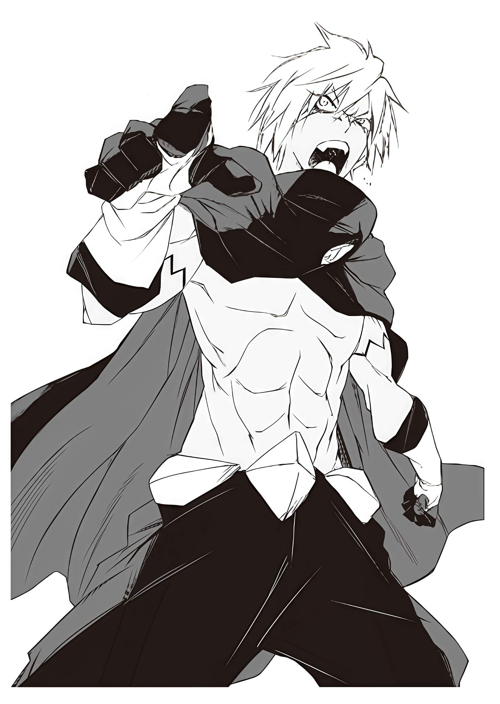そんな俺達を見て、ヒナタが呆れたように溜息を吐いたのだった。
Nhìn chúng tôi như thế, Hinata thở dài ngán ngẩm.
＊
*
仕切り直して、いがみ合いが再開した。
Sau khi ổn định lại, màn hằm hè nhau lại tiếp diễn.
「さて、逃げるなら好きにしな」
“Nào, nếu muốn chạy trốn thì cứ tùy ý.”
と、グレイブが言った。
Grave nói.
「グレイブさんは優し過ぎるぜ」
“Grave-san hiền quá đấy.”
「兄貴、こんな舐めた野郎を無罪放免するなんて、それじゃ坊ちゃんが納得しないんじゃ？」
“Đại ca, tha bổng cho cái thằng bố láo này như vậy, e là Cậu chủ sẽ không hài lòng đâu?”
「そうだぞ、グレイブ。そいつを許すなら、キッチリと落とし前をつけさせなきゃな。取り敢えず、その女を置いて行くなら許してやんよ」
“Đúng đó, Grave. Nếu tha cho hắn, thì phải bắt hắn đền bù thỏa đáng mới được. Trước mắt, nếu hắn để con ả đó lại thì ta sẽ tha cho.”
坊ちゃんと呼ばれていた嫌なヤツは、サイラスという名前だった。
Cái gã khó ưa được gọi là Cậu chủ đó tên là Silas.
驚くべき事に、賢人都市を治める領主――国王の息子だった。
Ngạc nhiên thay, hắn lại là con trai của Lãnh chúa cai trị Hiền Nhân Đô――à không, là con trai của Quốc vương.
凄腕の剣士っぽいのが、グレイブ。単なる用心棒ではなく、この国の正規騎士だった。
Cái gã trông có vẻ là kiếm sĩ cao tay ấn kia là Grave. Hắn không đơn thuần chỉ là vệ sĩ, mà là hiệp sĩ chính quy của đất nước này.
それも、騎士団で一番の腕利きなのだとか。
Hơn nữa, nghe đâu hắn còn là người giỏi nhất trong đoàn hiệp sĩ.
小さいとは言え、国が抱える筆頭騎士なら、Aランクオーバーでも納得である。
Dù là nước nhỏ, nhưng nếu là hiệp sĩ đứng đầu được quốc gia trọng dụng, thì chuyện hắn mạnh trên cấp A cũng là điều dễ hiểu.
ヴェルドラが楽しそうにしている隙に、ヒナタがギルド員から聞き出していたのだ。
Trong lúc Verudora đang vui vẻ đùa giỡn, Hinata đã moi được tin này từ nhân viên của Hội.
その抜かりない行動は流石なのだが、順調なのはそこまでだった。
Hành động chu đáo không chê vào đâu được đó đúng là không hổ danh cô ấy, nhưng mọi chuyện cũng chỉ thuận lợi đến đó mà thôi.
相手が王子とあって、ギルド員もサイラスに従うしかないっぽい。
Vì đối phương là Vương tử, nên có vẻ nhân viên của Hội cũng đành phải nghe theo Silas.
本心はともかく、あまり協力的ではなかったのである。
Chẳng biết thâm tâm họ nghĩ gì, nhưng thái độ thì chẳng hợp tác cho lắm.
「困ったわね」
“Rắc rối thật.”
「そうだね」
“Đúng vậy.”
俺達はギルド員に用意させた御茶を飲みながら、顔を見合わせた。
Chúng tôi vừa uống trà do nhân viên của Hội chuẩn bị, vừa nhìn nhau.
「ずいぶん余裕があるじゃねーか！？」
“Bọn mày thảnh thơi quá nhỉ!?”
とサイラスが驚いて文句を言っているが、そんなのはどうでもいい話なのだ。
Silas ngạc nhiên phàn nàn như vậy, nhưng chuyện đó thì sao cũng được.
しかし、その後が悪かった。
Tuy nhiên, chuyện sau đó mới tệ.
「サイラスさん。コイツ、いや、この方達は、そちらの男と違って組合員でした。こちらのリムルさんがB'ランクで、ヒナタさんの方は驚きのAランクです。無下には出来ませんよ」
“Silas-san. Gã này... à không, những vị này khác với gã đàn ông kia, họ là thành viên của Hội đấy. Rimuru-san đây là hạng B+, còn Hinata-san thì là hạng A đáng kinh ngạc đấy. Không thể đối xử tệ bạc được đâu.”
「何ィ？ Aランクだと!? 詐欺師じゃねーのか？」
“Cái gì? Hạng A á!? Không phải là bọn lừa đảo đấy chứ?”
「ん？ おいおいおいぃ――っ、マジでリムルって名なのかよ!! 詐欺師確定じゃねーか」
“Hử? Này này nàyyy――, tên là Rimuru thật đấy hả!! Thế thì đích thị là lừa đảo rồi còn gì.”
「待て待て。って事はだ、こっちのヒナタを名乗る女は、西方聖教会の生きる伝説、聖騎士団(クルセイダーズ)の団長、聖人ヒナタ様のつもりだってか？ まあ、美人なのは認めてやるが、ちょっと調子に乗り過ぎなんじゃねーのか？」
“Khoan đã khoan đã. Thế nghĩa là, con ả xưng tên Hinata đằng này định nhận mình là huyền thoại sống của Thánh Giáo Hội Phương Tây, Đoàn trưởng Thánh Hiệp Sĩ Đoàn (Crusaders), Thánh nhân Hinata-sama đấy phỏng? Mà, công nhận là đẹp thật đấy, nhưng không phải là hơi bị ảo tưởng quá đà rồi sao?”
余計な事を口走ったギルド員のせいで、恐れていた通りの反応をされてしまった。
Tại cái tên nhân viên Hội lỡ mồm nói ra mấy điều thừa thãi, nên phản ứng nhận lại đúng y như những gì tôi lo sợ.
本人には悪気はなかったのかも知れないが、こうなってしまうと何を言い訳しても無駄だろう。
Có thể bản thân anh ta không có ác ý gì đâu, nhưng tình hình đã thành ra thế này rồi thì có biện hộ gì cũng vô ích thôi.
顔が真っ赤になる俺。
Mặt tôi đỏ bừng cả lên.
ゲラゲラと大笑いされて悔しい思いをするも、我慢するしかなかった。
Bị cười nhạo ha hả vào mặt tuy thấy cay cú thật, nhưng tôi đành phải cắn răng chịu đựng.
――が、俺には頼もしい味方がいたのだ。
――Cơ mà, tôi lại có một đồng minh vô cùng đáng tin cậy.
「はあ？ うるさいわね。群れなきゃ何も出来ないような雑魚が、私にタメ口叩いてるんじゃないわよ」
“Hả? Ồn ào quá đấy. Cái lũ tép riu không tụ tập bầy đàn thì chẳng làm nên trò trống gì, đừng có mà ăn nói ngang hàng với ta.”
横で聞いていた俺が真っ先に青褪めてしまったほど、威圧のこもった低音ボイス。そして、見る者をチビらせるほど鋭い、凶悪な視線。
Giọng nói trầm thấp chứa đầy uy áp đến mức kẻ đang đứng nghe bên cạnh là tôi đây mới là người đầu tiên tái mét mặt mày. Thêm vào đó là ánh nhìn hung ác sắc lẹm đến độ khiến kẻ bị nhìn phải són cả ra quần.
これらをまともに受けてしまえば、チンピラ共の気勢も殺がれるというものだった。
Hứng trọn combo đó trực diện như thế, thì nhuệ khí của đám côn đồ cũng bị dập tắt ngay thôi.
「うっ!?」
“Ư...!?”
「こ、怖え……」
“Đ, đáng sợ vãi......”
「サイラスさん、この女はヤベーですぜ」
“Silas-san, con mụ này nguy hiểm lắm.”
サイラスの手下共は、完全に怯えてしまっていた。
Đám tay sai của Silas đã hoàn toàn khiếp sợ.
しかし世の中、痛い目に遭わねば現実を理解出来ない者というのがいるのである。
Tuy nhiên ở đời, vẫn luôn có những kẻ nếu không nếm mùi đau khổ thì sẽ không thể nào hiểu được hiện thực.
「何ビビってんだ、テメーら。そっちの男ならまだしも、女に睨まれたくらいでよぉ」
“Bọn mày sợ cái đếch gì thế hả. Nếu là gã đàn ông đằng kia thì còn nghe được, đằng này chỉ bị một con đàn bà lườm thôi mà đã...”
え、我？ と、ヴェルドラが出番待ちしているが、多分呼ばれる事はないだろう。そういう気がした。
Hả, ta ư? Verudora đang chờ đến lượt mình thể hiện, nhưng chắc là cậu ta sẽ không được gọi tên đâu. Tôi có cảm giác như vậy.
「やれやれだぜ。田舎者は、強者の名前を出せば信じるとでも思われているのかな？ だが、残念だったな。たとえ本物であっても、この俺の方が強いのさ」
“Thiệt tình. Lũ nhà quê các người tưởng cứ lôi tên kẻ mạnh ra là người ta sẽ tin chắc? Nhưng mà, tiếc cho cô rồi. Cho dù cô có là hàng thật đi nữa, thì ta đây vẫn mạnh hơn thôi.”
そんなふうに自信を見せつけるように、グレイブが前に出てきてしまった。
Grave đã bước lên phía trước như để phô trương sự tự tin đó.
強気なサイラスの言葉に応じた形だが、本人からしてもヒナタとの戦いを望んでいたようだ。
Hắn làm vậy là để hưởng ứng những lời lẽ hùng hổ của Silas, nhưng có vẻ bản thân hắn cũng đang mong chờ một trận chiến với Hinata.
本物は本物を知るというし、感じるものがあったのかもね。
Người ta vẫn bảo hàng thật sẽ nhận ra hàng thật, biết đâu hắn cũng cảm nhận được điều gì đó chăng.
こうなるともう、勝敗が決するまで止まらないだろう。
Đã đến nước này rồi thì chắc sẽ không dừng lại cho đến khi phân định thắng bại đâu.
となると、俺に出来る事は少ない。
Nếu vậy thì, việc tôi có thể làm chẳng còn bao nhiêu.
そう。静かに見守る事のみ。
Phải. Chỉ là lẳng lặng đứng nhìn mà thôi.
つまりは――観戦だ。
Tóm lại là――làm khán giả thôi.
「じゃあ、ポテトとコーヒー」
“Vậy thì, cho khoai tây chiên và cà phê nhé.”
「我も」
“Ta nữa.”
「そんなもん、ウチにゃあ、ありませんぜ」
“Mấy thứ đó, ở chỗ chúng tôi làm gì có chứ.”
「チッ、仕方ないな。それじゃあ、俺のオヤツを出すか」
“Chậc, đành chịu vậy. Thế thì lôi đồ ăn vặt của mình ra vậy.”
「我にも用意してくれるのだろうな？」
“Cậu cũng chuẩn bị cho ta nữa đúng không?”
「お前は自分の分を持ってただろ」
“Anh tự giữ phần của mình còn gì.”
などと言い合いながら、オヤツも出して観戦準備は万端だ。
Vừa tranh cãi mấy chuyện như thế, tôi vừa bày đồ ăn vặt ra, công tác chuẩn bị để xem kịch đã hoàn tất.
「いつでも始めてどうぞ！」
“Bắt đầu lúc nào cũng được nhé!”
と、合図する俺。
Tôi ra hiệu.
「どうでもいいけど、私の分は残しておきなさいよ」
“Sao cũng được, nhưng nhớ để phần cho tôi đấy nhé.”
ちょっとイラついたようにヒナタが答えて、そして戦いが始まったのだ。
Hinata trả lời với vẻ hơi bực bội, và rồi trận chiến bắt đầu.
……
………
…
まあね、結果は言うまでもない。
Mà, kết quả thì khỏi phải nói cũng biết rồi.
ヒナタの圧勝である。
Một chiến thắng áp đảo dành cho Hinata.
「ほ、本物だ！！ この女の強さ、間違いなくヒナタ・サカグチだ！！」
“Là, là hàng thật!! Sức mạnh của người đàn bà này, chắc chắn là Hinata Sakaguchi rồi!!”
泡を喰ったように叫ぶのは、グレイブの強さに胡坐をかいていたサイラスだった。
Kẻ đang la hét trong hoảng loạn tột độ kia chính là Silas, tên ngốc đã quá ỷ lại vào sức mạnh của Grave.
グレイブが抜き放った剣を細剣(レイピア)で軽く受け流し、ライオンがウサギをいたぶるような実力差を見せつけながら、ヒナタがグレイブの指を切り飛ばしていく。
Dùng thanh Rapier nhẹ nhàng gạt đi đường kiếm mà Grave tung ra, Hinata vừa phô diễn sự chênh lệch thực lực tựa như sư tử vờn thỏ, vừa lần lượt chém bay từng ngón tay của Grave.
表情一つ変えず冷静に。残酷な行為に思えたが、その分、決着は直ぐだった。
Gương mặt cô ấy vẫn lạnh tanh không chút biến sắc. Hành động đó trông có vẻ tàn khốc, nhưng bù lại, trận đấu đã được định đoạt ngay tức khắc.
何しろ、指って十本しかないからね。
Dù sao thì, ngón tay cũng chỉ có mười ngón thôi mà.
片手の、五本だけでも十分だけど。
Thực ra thì, chỉ cần năm ngón của một bên tay là đủ rồi.
そもそも剣を握らないとダメだし、親指を飛ばされただけで実力なんて出せなくなっちゃうから。
Vốn dĩ nếu không cầm chắc được kiếm thì coi như bỏ, chỉ cần bị chém bay ngón cái thôi là đã chẳng thể phát huy được thực lực nữa rồi.
凄腕の剣士相手にそんな真似が可能かどうかは別問題だが、それが目の前で 起きた現実なのだった。
Việc có thể thực hiện được chiêu trò đó với đối thủ là một kiếm sĩ cao tay hay không lại là vấn đề khác, nhưng điều đó đang diễn ra ngay trước mắt tôi.
「そ、そんな……グレイブさんが一方的に……」
“Kh, không thể nào…… Grave-san bị áp đảo hoàn toàn……”
「グレイブさん、大丈夫っすか？ グレイブさぁーーんっ!?」
“Grave-san, đại ca có sao không? Grave-saaaan!?”
「ば、バケモンだ!! ヒナタは、血を見るのが好きって噂以上の、冷酷極まりない魔女だったんだぁ――ッ!!」
“Qu-quái vật!! Hinata đúng là mụ phù thủy tàn nhẫn cùng cực, còn hơn cả lời đồn là ả còn thích thú khi nhìn thấy máu nữa――!!”
手下共の絶叫を聞いて、サイラスも頷いている。
Nghe tiếng la hét thất thanh của đám tay sai, Silas cũng gật đầu đồng tình.
本能的に上位者を見抜いたのか、実に正確な人物評と言えた。
Có lẽ do bản năng đã nhận ra kẻ bề trên hay sao đó, mà phải nói đó là một lời đánh giá nhân vật cực kỳ chính xác.
「ああ。見た目は美人だが、絶対にかかわっちゃ駄目なヤツだぜぃ!!」
“À à. Nhìn bên ngoài thì là mỹ nhân đấy, nhưng tuyệt đối không được dây vào đâu nha!!”
その通りさと、俺もついつい頷いちゃったよ。
Chuẩn cơm mẹ nấu rồi, tôi cũng lỡ đà gật đầu theo luôn.
「貴方、どうして一緒になって頷いているのかしら？」
“Cậu kia, tại sao lại hùa theo bọn chúng gật đầu thế hả?”
あっ、バレた。
Á, bị lộ rồi.
「あ、いや、そのですね……」
“A, không, cái đó là……”
しまった。俺まで睨まれて……というか、アイツら、俺を置いて逃げやがった!?
Chết dở. Đến cả tôi cũng bị lườm rồi…… mà khoan, mấy tên kia, bọn chúng bỏ lại tôi mà chạy trốn rồi sao!?
クソ共のせいで、とんだとばっちりである。
Tại lũ khốn kiếp đó mà tôi bị vạ lây.
やっぱりヒナタは怖い。
Quả nhiên Hinata đáng sợ thật.
俺はそう再認識して、絶対に怒らせないようにしようと心に誓ったのだった。
Tôi nhận thức lại điều đó, và thầm thề với lòng rằng tuyệt đối sẽ không chọc giận cô ấy.
＊
*
静かになったギルド支部内で、不満そうにヴェルドラが呟く。
Trong chi nhánh Hội đã trở lại yên tĩnh, Verudora lầm bầm với vẻ bất mãn.
「ヒナタに美味しいところを持って行かれてしまったな」
“Hinata đã cuỗm hết phần hay rồi còn đâu.”
実に興味なさそうに、ヒナタが答えた。
Hinata đáp lại với vẻ chẳng hề hứng thú chút nào.
「全然嬉しくないし、不本意でしかないわ」
“Tôi hoàn toàn chẳng thấy vui gì cả, chỉ là bất đắc dĩ thôi.”
その流れだと、宥めるのは俺の役目だな。
Theo cái đà này thì nhiệm vụ xoa dịu lại thuộc về tôi rồi.
「まあまあ、あのアホ共もビビって逃げて行ったんだから、結果オーライって事で」
“Thôi mà thôi mà, đám ngốc đó cũng sợ vỡ mật mà chạy mất dép rồi, coi như kết quả tốt đẹp đi.”
そう言って、ヴェルドラとヒナタの間を取り持った。
Nói rồi, tôi đứng ra hòa giải cho Verudora và Hinata.
常識人が苦労させられるのは、いつの世も変わりないのだ。
Người biết điều lúc nào cũng phải chịu khổ vì mấy chuyện trời ơi đất hỡi, thời nào cũng vậy cả.
それにしても、さっきの戦いで気になった事があったので、ヒナタに直接聞いてみた。
Dù vậy, có một chuyện trong trận chiến vừa rồi làm tôi để tâm, nên tôi đã hỏi thẳng Hinata.
「でもさあ、指を斬り落とすなんて、やり過ぎなんじゃない？」
“Cơ mà này, chém bay ngón tay người ta, không phải là hơi quá đà sao?”
この世界、国によって警察の役割が違っていた。
Ở thế giới này, vai trò của cảnh sát ở mỗi quốc gia lại khác nhau.
兵士が町を巡回して治安維持を担っている国もあれば、自警団に全てお任せという放任主義の国もあったのだ。
Có nước thì binh lính đi tuần tra trong thị trấn để duy trì an ninh, cũng có nước theo chủ nghĩa tự do thả nổi, giao phó tất cả cho đoàn tự vệ.
そうした中で庶民の平和を守るのは、ここ十年で親しみやすさを増した自由組合である。
Trong bối cảnh đó, thứ bảo vệ hòa bình cho thường dân chính là Hiệp hội Tự do, nơi đã trở nên thân thiện hơn trong mười năm trở lại đây.
それは偏(ひとえ)に、ユウキ達の努力の成果なのだった。
Đó hoàn toàn là thành quả từ sự nỗ lực của nhóm Yuuki.
とは言え、俺の生前、日本で生きていた頃の現代社会に比べれば、未開も未開。
Tuy nói vậy, nhưng nếu so với xã hội hiện đại lúc tôi còn sống ở Nhật Bản, thì nơi này vẫn còn lạc hậu lắm.
弱肉強食がまかり通る、法の下の平等など夢のまた夢のような暴力至上主義社会なのが現実だ。
Hiện thực nơi đây là một xã hội tôn sùng bạo lực, nơi quy luật kẻ mạnh nuốt kẻ yếu được mặc nhiên chấp nhận, còn sự bình đẳng trước pháp luật chỉ là giấc mơ xa vời.
つまり、喧嘩するなら余程の証拠がない限り、負けた方が悪いとされるのだ。
Tóm lại, nếu đánh nhau mà không có bằng chứng xác đáng, thì kẻ thua cuộc sẽ bị coi là kẻ sai.
今回の場合、ギルド内での喧嘩だったから職員という公正なはずの目撃者も いるのだが、最悪な事に相手側の人間だったからね。証言などいくらでも捏造されてしまう訳で、普通だったら旅人サイドが不利だっただろう。
Trong trường hợp lần này, vì đó là một cuộc cãi vã trong bang hội, nên cũng có những nhân viên đáng lẽ công bằng làm nhân chứng, nhưng điều tệ nhất là họ lại thuộc phe đối phương. Những lời khai có thể bị bịa đặt thoải mái, và nếu là tình huống bình thường, phía những lữ khách chắc chắn sẽ bất lợi.
しかし、今回は相手が悪かった。
Tuy nhiên, lần này chúng đã chọn nhầm đối thủ rồi.
俺達は圧倒的な実力者だった上に、超有名人。しかも、自由組合のトップである総帥(ユウキ・カグラザカ)、神楽坂優樹ともお友達という、相手からすればどうにもならないレベルだった訳である。
Chúng tôi không chỉ sở hữu thực lực áp đảo mà còn là những người cực kỳ nổi tiếng. Hơn nữa, còn là bạn bè với Tổng soái Yuuki Kagurazaka, người đứng đầu Hiệp hội Tự do, nên đối với bọn họ, chúng tôi ở cái đẳng cấp mà họ chẳng thể làm gì được.
そんな相手に絡む方が悪いと言えよう。
Có thể nói là lỗi do chúng khi dám gây sự với những đối thủ như thế.
しかし、だ。
Tuy nhiên...
いくら相手がアホとは言え、実力差は明白だったからね。あそこまでやらなくても、もっと穏便に済ます方法もあったと思う。
Dù đối phương có ngu ngốc đến đâu, thì chênh lệch thực lực cũng đã quá rõ ràng. Tôi nghĩ không cần thiết phải làm đến mức đó, vẫn có cách giải quyết êm thấm hơn mà.
まあ、ヴェルドラにプチッとされるよりはマシだろうけどさ……。
Mà, chắc vẫn còn đỡ hơn là bị Verudora bóp chết như con kiến......
俺と対峙した時も思ったけど、ヒナタって敵には容赦しないんだよね。
Hồi đối đầu với tôi tôi cũng đã nghĩ rồi, Hinata đúng là không bao giờ khoan nhượng với kẻ thù nhỉ.
ああなったらもう、剣士としては再起不能だし。
Bị như thế rồi thì coi như tiêu tùng sự nghiệp kiếm sĩ luôn.
そう思っての、俺の発言なのだった。
Chính vì nghĩ vậy nên tôi mới thốt ra câu đó.
しかし、ヒナタはそれを鼻で笑う。
Tuy nhiên, Hinata chỉ khịt mũi cười nhạo điều đó.
「そんなの、後で恩を売る為に決まってるじゃないの」
“Mấy chuyện đó, rõ ràng là để ban ơn về sau còn gì.”
「と言いますと？」
“Nói vậy là sao?”
「貴方、どうせ回復薬を腐るほど持っているんでしょう？」
“Cậu đó, kiểu gì chẳng mang theo thuốc hồi phục nhiều đến mức để thối ra được chứ hả?”
「あ、なるほど！」
“A, ra là vậy!”
人体の部位欠損すら治癒するポーションがある前提なら、あの行為も納得だ。
Nếu dựa trên tiền đề là có loại thuốc hồi phục chữa được cả các bộ phận cơ thể bị mất, thì hành động đó cũng dễ hiểu thôi.
圧倒的な強さを見せつけられる上に、相手の心を簡単に挫(くじ)けるし。その上で、
Không chỉ phô trương được sức mạnh áp đảo, mà còn dễ dàng bẻ gãy ý chí của đối phương nữa. Đã vậy,
優しく傷を癒してやれば、もう二度とこちらに逆らったりしないと思う。
nếu sau đó còn ân cần chữa trị vết thương cho hắn, thì tôi nghĩ hắn sẽ chẳng bao giờ dám chống đối chúng tôi lần nữa đâu.
最悪でも相手は王子なのだから、高額で売り付けられそうだしな。
Tệ nhất thì đối phương cũng là Vương tử, nên chắc là sẽ bán được với giá cắt cổ đây.
あの一瞬でそこまで計算するなんて、流石はヒナタである。
Chỉ trong một thoáng mà đã tính toán được đến mức đó, đúng là không hổ danh Hinata.
俺などまだまだ甘いなと、その一件で認識させられたのだった。
Vụ việc đó đã khiến tôi nhận ra rằng bản thân mình vẫn còn ngây thơ lắm.
アホ共が去ったので、残ったギルド員を相手にヴェルドラの冒険者登録を行(おこな)う。
Vì đám ngốc đó đã rời đi, nên chúng tôi tiến hành đăng ký mạo hiểm giả cho Verudora với các nhân viên Bang Hội còn lại.
職員もバカボン共と一緒に逃げ出したかったみたいだが、そうは問屋が卸さない。
Có vẻ nhân viên cũng muốn chạy trốn cùng cái lũ ngốc kia lắm, nhưng đời đâu có dễ thế.
ここぞとばかりに融通を利かせてもらうべく、速やかに書類作成等を行ってもらったのだ。
Tôi tranh thủ cơ hội này để được họ linh động cho, nên đã yêu cầu họ nhanh chóng hoàn tất các thủ tục giấy tờ.
半泣きになった職員が、必死になって働いていた。
Người nhân viên vừa làm vừa mếu máo, làm việc một cách trối chết.
恐らくは、過去最高に真面目な働きっぷりを見せた事だろう。
E là anh ta chưa bao giờ làm việc nghiêm túc đến thế trong đời đâu.
求められる情報は、名前、年齢、特技、出身地、その他だった。これは、俺の時と同じである。
Thông tin được yêu cầu gồm tên, tuổi, đặc kỹ, quê quán và vài thứ khác. Cái này thì giống hệt hồi của tôi.
ヴェルドラの場合、名前と出身地ののみ記載するだけでOKだ。
Trường hợp của Verudora, chỉ cần ghi tên và quê quán là OK.
特技の欄に〝ヴェルドラ流闘殺法〟と書いていたけど、突っ込んだら負けなのでスルーしておいた。
Trong mục đặc kỹ cậu ta đã ghi là 〝Verudora Lưu Đấu Sát Pháp〟, nhưng nếu bắt bẻ thì tôi thua mất, nên tôi lờ đi luôn.
「あ、あのう、ヒナタ様は本物なのですよね？ って事はですよ、もしかしてこちらのヴェルドラ様も……？」
“A, dạ thưa, Hinata-sama là hàng thật đúng không ạ? Thế nghĩa là, chẳng lẽ Verudora-sama đây cũng là……?”
ギルド員が認めたくない現実と向き合うように、声を振り絞るようにしてヴェルドラに問いかけた。
Nhân viên Bang Hội lấy hết can đảm cất tiếng hỏi Verudora, như thể đang phải đối mặt với một hiện thực mà anh ta không muốn thừa nhận.
待ち望んでいた質問だったらしく、嬉しそうにヴェルドラが答える。
Có vẻ đây là câu hỏi mà cậu ta mong chờ bấy lâu, Verudora trả lời với vẻ mặt hớn hở.
「ふっふっふ、ついに気付いてしまったか？ そう！ 我こそが最強たる〝竜種〟が一角――〝暴風竜〟ヴェルドラである！」
“Fuffuffu, cuối cùng nhà ngươi cũng nhận ra rồi sao? Phải! Ta chính là một trong những 〝Long Chủng〟 mạnh nhất――〝Bạo Phong Long〟 Verudora đây!”
隠す気ゼロだな。
Đúng là không có chút ý định che giấu nào cả.
まあ最初から、バレても構わないという勢いだったので問題ないけど。
Mà ngay từ đầu cậu ta đã giữ cái thái độ kiểu có bị lộ cũng chẳng sao, nên cũng không thành vấn đề.
しかしまあ、そのせいで職員の顔色は真っ青だ。
Cơ mà, cũng tại thế mà mặt mũi cậu nhân viên tái mét cả rồi.
「あばばばばば……」
“Abababababa……”
言葉にならぬ悲鳴を飲み込み、震える手で必死になって書類を処理してくれているね。
Cố nuốt ngược tiếng thét không thành lời vào trong, cậu ta đang dùng đôi tay run rẩy để liều mạng xử lý đống giấy tờ.
「この後は試験だろ？ 何をさせれば――」
“Sau đây là bài thi nhỉ? Ta phải làm gì――”
「合格！ 合格ですとも！！」
“Đậu rồi! Ngài đậu rồi ạ!!”
「えっと？」
“Hả?”
「お好きなコースをお選び下さい。私が責任を持って、ヴェルドラ様の登録を行っておきますので！ ついでに、等級はＢランクで御座います。申し訳ありませんが、私の権限で付与可能な最高ランクですので、ご了承頂ければ幸いです！！」
“Xin hãy chọn lộ trình mà ngài thích. Tôi xin chịu trách nhiệm thực hiện đăng ký cho Verudora-sama! Nhân tiện, cấp bậc sẽ là hạng B ạ. Thành thật xin lỗi nhưng đây là đẳng cấp cao nhất trong thẩm quyền mà tôi có thể cấp, nên rất mong ngài hãy thôn cảm!!”
そういう事になった。
Mọi chuyện đã diễn ra như thế đấy.
棚から牡丹餅ではないが、こうしてあっという間に、ヴェルドラはBランク冒険者になったのだった。
Tuy không hẳn là vận may từ trên trời rơi xuống, nhưng cứ như thế, chỉ trong nháy mắt Verudora đã trở thành mạo hiểm giả hạng B.
CHƯƠNG 3: LỜI MỜI THAM DỰ DẠ HỘI
時間に余裕が出来たので、書類処理を待つ間に職員から話を聞く事にした。
Vì có chút thời gian rảnh rỗi, nên tôi quyết định tranh thủ hỏi chuyện nhân viên trong lúc chờ xử lý giấy tờ.
「あのサイラスとかいう王子の言いなりになるなんて、自由組合(ギルド)としては不味(まず)いんじゃないの？」
“Cứ nghe theo lời răm rắp cái tên Vương tử Silas gì đó, với tư cách là Bang Hội thì chẳng phải là tệ lắm sao?”
「勘弁してくださいよ！ こんな田舎町じゃあ、我々の立場は弱いんですって。何しろ――」
“Xin hãy tha cho tôi đi mà! Ở cái thị trấn nhà quê thế này, vị thế của chúng tôi yếu lắm. Dù sao thì――”
ギルド員が語ってくれた内容によると、だ。
Theo những gì nhân viên Bang Hội kể lại, thì là thế này.
森が遠くて薬草を筆頭とした採取系は人気がないし、未開拓領域や新たな遺跡などが発見される訳もなく、探索系など出番がない。
Rừng thì ở xa nên mấy nhiệm vụ thu thập kiểu như hái thảo dược chẳng được ưa chuộng, cũng chẳng có chuyện phát hiện ra khu vực chưa khai phá hay di tích mới nào, nên hệ thám hiểm cũng không có đất diễn.
必然、この国の支部では、魔物討伐の依頼がメインとなる。
Tất yếu, tại chi nhánh ở đất nước này, ủy thác diệt trừ ma thú trở thành hoạt động chính.
そうした状況ではこの国に定着する冒険者の数そのものが減る訳だが、そうなると魔物討伐依頼の達成率が低下してしまい、困った事になってしまう、と。
Trong tình cảnh đó thì số lượng mạo hiểm giả định cư tại đất nước này tự nhiên sẽ giảm đi, mà nếu như thế thì tỷ lệ hoàn thành ủy thác diệt trừ ma thú sẽ bị sụt giảm, dẫn đến tình hình rất chi là gay go, thấy bảo là vậy.
あの王子達はああ見えて仕事はしてくれていたらしく、ギルドとしては依存するしかなかったのだそうだ。
Nhìn đám Vương tử đó như vậy thôi chứ nghe nói họ cũng chịu làm việc lắm, nên phía Bang Hội đành phải dựa dẫm vào họ.
「――それに、言動はアレでしたが、サイラス王子も可哀そうな御方でして……」
“――Hơn nữa, tuy lời nói và hành động có hơi... ấy, nhưng Vương tử Silas cũng là một vị đáng thương lắm……”
「というと？」
“Nói vậy là sao?”
「魔法使いが優遇される国で、魔法の素質がなかったのです。優秀で人徳もあるのですが、魔法が使えないのは致命的でした。王太子として認められる事もなく、弟王子から見下されるようになってしまって……」
“Tại đất nước ưu đãi Ma pháp sư này, ngài ấy lại không có tố chất về ma pháp. Tuy xuất sắc và có nhân đức, nhưng việc không dùng được ma pháp là chí mạng. Ngài ấy không được công nhận làm Thái tử, lại còn bị chính người em trai Vương tử của mình coi thường……”
それでサイラスは王宮に居場所をなくして、賢人都市外に出て自分の足場固めを行(おこな)っていたのだそうだ。
Thế nên Silas đã mất chỗ đứng trong vương cung, phải ra bên ngoài Hiền Nhân Đô để củng cố địa vị của bản thân, nghe nói là vậy.
どこかの砂漠の王国でもそうだったけど、王家と冒険者の癒着は考え物だと思う。
Ở cái vương quốc sa mạc nào đó cũng từng như vậy rồi, tôi nghĩ sự cấu kết giữa Hoàng gia và mạo hiểm giả là vấn đề đáng quan ngại đấy.
「自由組合(ギルド)は国家に命令されない自由な立場にあるんだから、王子に牛耳られるような現状のままではダメでしょ」
“Bang Hội Tự do nằm ở lập trường tự do không chịu mệnh lệnh của quốc gia, nên cứ giữ cái hiện trạng bị Vương tử thao túng thế này là không được đâu.”
「それは重々理解しているのですが、打つ手なしでして。困った問題なのです」
“Chuyện đó tôi hiểu rất rõ, nhưng chẳng còn cách nào khác. Đây là một vấn đề nan giải ạ.”
「うーん……構造的問題なんだから、最初から対策しておくべきだったんじゃ……」
“Hừm…… vì là vấn đề mang tính cơ cấu, nên lẽ ra phải có biện pháp đối phó ngay từ đầu chứ nhỉ……”
俺はそう思って口にしたのだが、これにヒナタが反論する。
Tôi nghĩ vậy và buột miệng nói ra, nhưng Hinata đã phản bác lại điều này.
「無茶言わないで。これはね、確かに予想された問題ではあったわ。それなのに対処しなかったのは、速さを優先させたからなの。
“Đừng có nói mấy điều vô lý thế. Cái này ấy, quả thực là vấn đề đã được dự đoán trước rồi. Thế nhưng người ta không xử lý nó là vì ưu tiên tốc độ đấy.
国の関与を完全に排除するなら、いくら評議会の下部組織だからって、猛烈に反発されたでしょうね。
Nếu loại bỏ hoàn toàn sự can thiệp của quốc gia, thì cho dù có là tổ chức cấp dưới của Hội đồng đi nữa, chắc chắn sẽ bị phản đối dữ dội.
そうなると、旧来の冒険者互助組合のまま活動するしかなくなるもの。
Khi đó, họ sẽ chẳng còn cách nào khác ngoài việc tiếp tục hoạt động như Hiệp hội Tương trợ Mạo hiểm giả kiểu cũ.
横の繋がりも出来ず、情報共有や助け合いも、今の比ではなく困難を極めたままだったと思うわ」
Sẽ không tạo được mối liên kết ngang, việc chia sẻ thông tin hay giúp đỡ lẫn nhau cũng sẽ vẫn cực kỳ khó khăn, không thể so với bây giờ được.”
ユウキが組織改革するのを手伝っていたからか、その意見には重みがあった。
Có lẽ do cô ấy từng giúp Yuuki cải cách tổ chức, nên ý kiến đó rất có trọng lượng.
「貴方みたいにね、誰もが何でも力業で解決出来る訳じゃないのよ」
“Không phải ai cũng có thể giải quyết mọi việc bằng sức mạnh như cậu đâu.”
そう言われてしまうと、返す言葉もない。
Bị nói như thế thì tôi cũng cạn lời.
ただ、俺の場合は俺を慕ってくれる仲間達に助けられていて、自分一人で全てを行った訳じゃないからな。
Có điều, trường hợp của tôi là do được các đồng đội yêu mến giúp đỡ, chứ không phải một mình tôi làm hết tất cả mọi việc.
ユウキやヒナタがどれだけ苦労したのか、想像は出来るが実感が伴っていなかったのだろう。
Tôi có thể tưởng tượng được Yuuki và Hinata đã vất vả thế nào, nhưng có lẽ tôi vẫn chưa thực sự cảm nhận được hết điều đó.
俺だって苦労していない訳じゃないけど、幸運だったのは否めなかった。
Không phải là tôi không chịu khổ cực gì, nhưng không thể phủ nhận là tôi đã gặp may mắn.
「まあ、サイラス王子の立場は理解したよ。でもさ、ギルドが後ろ盾になったとしても、王宮での立場が良くなる訳じゃないんだろ？」
“Mà, tôi hiểu lập trường của Vương tử Silas rồi. Nhưng nè, dù có Bang Hội làm hậu thuẫn đi nữa, thì cũng đâu có nghĩa là vị thế trong vương cung sẽ tốt lên đâu nhỉ?”
「そりゃあ、そうですけど……何もしないよりはマシだったんじゃないですか？」
“Thì đúng là vậy thật…… nhưng chẳng phải thà có làm gì đó còn hơn là không làm gì sao?”
ギルド員自身も、サイラスの考えを聞かされてはいなかったようだ。
Có vẻ bản thân nhân viên Bang Hội cũng chưa được nghe Silas chia sẻ suy nghĩ của mình.
サイラスが王子という立場を捨てるつもりなのかどうか、それさえもよく知らない様子だった。
Trông anh ta có vẻ cũng không biết rõ liệu Silas có định vứt bỏ cái danh Vương tử hay không nữa.
「まあ、この国では魔法を使えない者をとことん見下す風潮みたいだし、同情すべき点はあったのね。もっとも、だからと言って私達が忖度(そんたく)してあげる必要なんてないんだけど」
“Chà, đất nước này có vẻ có cái trào lưu khinh miệt đến cùng cực những kẻ không dùng được ma pháp, nên cũng có điểm đáng thông cảm đấy chứ. Tuy nhiên, nói thì nói vậy thôi chứ chúng ta cũng đâu cần thiết phải chiều theo ý hắn ta làm gì.”
「はい、ごもっともです」
“Vâng, ngài nói chí phải ạ.”
ヒナタから指摘され、ギルド員が項垂(うなだ)れる。
Bị Hinata chỉ trích, nhân viên Bang Hội cúi gầm mặt xuống.
だからと言って容赦する訳もなく、俺達は引き続きギルド員から話を聞き出し、可能な限りの情報を得た。
Nhưng không vì thế mà chúng tôi khoan nhượng, cả nhóm tiếp tục moi tin từ nhân viên Bang Hội và thu thập được nhiều thông tin nhất có thể.
サイラス王子の主な仲間は、グレイブを筆頭に四名。
Đồng bọn chủ chốt của Vương tử Silas gồm bốn người, đứng đầu là Grave.
グレイブは流れの傭兵だったが、幼き日のサイラス王子の剣術指南役に重用されたのだと。
Grave vốn là lính đánh thuê trôi dạt, nhưng đã được trọng dụng làm người hướng dẫn kiếm thuật cho Vương tử Silas khi ngài ấy còn nhỏ.
グレイブ自身も魔法が使えない為、王子の境遇に同情して付き従っているのではという話だった。
Nghe đâu vì bản thân Grave cũng không dùng được ma pháp, nên hắn đồng cảm với cảnh ngộ của Vương tử và đi theo phục tùng.
残る三名は、それぞれが幼い王子だったサイラスの補佐をさせるべく、一緒に育った仲らしい。
Ba người còn lại hình như là bạn thuở nhỏ, cùng lớn lên để phò tá Silas khi ngài ấy còn là một tiểu Vương tử.
少し年長だった三人は、他の補佐役と違って魔法が使えなかった。
Ba người đó lớn tuổi hơn một chút, và khác với những người phụ tá khác, họ không thể sử dụng ma pháp.
王子の友人として失格の烙印を押されてしまったのだが、そんな彼等をサイラスは見捨てなかったのだと。
Họ bị đóng dấu là không đủ tư cách làm bạn của Vương tử, nhưng nghe nói Silas đã không bỏ rơi bọn họ.
そんな訳で、サイラス自身も魔法が使えないと判明してからも、三人はサイ ラスに従った。落ちこぼれ仲間として、サイラス一派が出来上がったのだそうだ。
Chính vì lẽ đó, ngay cả sau khi biết rõ bản thân Silas cũng không dùng được ma pháp, ba người họ vẫn tuân theo Silas. Nghe nói phe cánh Silas đã được hình thành như một nhóm những kẻ thất bại tập hợp lại với nhau.
とはいえ、魔法が使えないだけで剣の腕はそこそこだし、頭の出来は悪くないらしい。つまり、総合評価だと優秀と分類される人種らしいのだが、生まれた国が悪かった。
Tuy nhiên, họ chỉ là không dùng được ma pháp thôi, chứ tay nghề kiếm thuật cũng ra gì lắm, đầu óc cũng không hề tệ. Tóm lại, nếu đánh giá tổng thể thì họ thuộc dạng nhân tài ưu tú, chỉ tiếc là đã sinh nhầm nước mà thôi.
サイラスがグレたのも無理からぬ話であり、ちょっぴり同情してしまったのは秘密である。
Chuyện Silas sinh hư cũng là điều dễ hiểu, và việc tôi trót cảm thấy chút đồng cảm với hắn là bí mật đấy nhé.
そういう話を教えてくれたギルド員自身は、さっき話してくれた通り、こんな辺境で生き抜くべくサイラスの協力者になったのだそうだ。
Bản thân người nhân viên Bang Hội kể cho tôi nghe chuyện này, đúng như anh ta đã nói lúc nãy, đã trở thành cộng tác viên của Silas để có thể sinh tồn ở vùng biên cảnh khỉ ho cò gáy này.
その言葉に嘘はないと思う。何故なら、この支部に所属する他の冒険者達は、最高でもＢランクまでしかいなかったからだ。
Tôi nghĩ lời nói đó không có gì dối trá. Bởi lẽ, các mạo hiểm giả khác trực thuộc chi nhánh này cao nhất cũng chỉ đạt đến hạng B mà thôi.
Ｂランクなら、小国だと貴族相当の扱いをしてもらえる。大国でも仕官するのに困る事はないし、問題なく数年勤め上げれば、騎士爵を得られるほどの厚遇を受けられるのだ。
Nếu là hạng B, ở nước nhỏ sẽ được đối đãi tương đương quý tộc. Ngay cả ở nước lớn cũng chẳng lo thiếu cửa làm quan, và nếu cống hiến vài năm không xảy ra vấn đề gì, thì còn nhận được đãi ngộ hậu hĩnh đến mức có thể được phong tước Hiệp sĩ nữa là.
なので、こんな辺境に所属するのは、訳アリか地元愛の強い者のみだろう。
Vì thế, những kẻ trực thuộc ở vùng biên cảnh thế này, chắc chỉ có những kẻ có uẩn khúc hoặc những người nặng tình với quê hương thôi.
もしくは、多少甘く査定されて、実際の実力はＢランクに及ばない者、といったところか。
Hoặc là, những kẻ được đánh giá nới tay đôi chút, chứ thực lực thực tế thì chưa chạm tới nổi hạng B, đại loại thế.
実際、所属している冒険者たちは実力不足で、ギルド員の言葉通り人材が足りていない様子だ。
Thực tế, các mạo hiểm giả trực thuộc đều thiếu thực lực, đúng như lời nhân viên Bang Hội nói, có vẻ như nhân sự đang thiếu hụt trầm trọng.
国そのものは魔法使いが大勢所属しているから、有事の際にも王都では対応可能だろう。
Bản thân đất nước này sở hữu lượng lớn Ma pháp sư, nên khi có biến thì Vương đô chắc vẫn đối phó được thôi.
しかし、その他の村々ではそういう訳にもいかない。
Tuy nhiên, ở các ngôi làng khác thì không được như vậy.
何しろこの国では、王都である賢人都市は『結界』で守られているけれど、その他の地方には魔法の庇護はなく、自警団が頑張るしかないからだ。
Dù sao thì ở đất nước này, Vương đô là Hiền Nhân Đô thì được bảo vệ bởi 『Kết Giới』, nhưng các địa phương khác lại không có được sự che chở của ma pháp, mà chỉ còn biết trông cậy vào đoàn tự vệ.
いかに小国ではあっても、王都以外にも人は住んでいる訳で。魔物の被害に十全に対応するには、人材不足感が否めなかった。
Dù là nước nhỏ đến đâu, thì ngoài Vương đô ra vẫn có người dân sinh sống mà. Để đối phó toàn diện với thiệt hại do ma thú gây ra, thì không thể phủ nhận tình trạng thiếu hụt nhân lực.
そういう状況なのだから、サイラス達の協力は願ってもない話だったのは間違いないそうだ。
Trong tình cảnh như thế, nghe nói chắc chắn việc có được sự hợp tác của nhóm Silas là điều cầu còn không được.
「なるほどね。確かに事情を知らない余所者が、軽々しく口を挟める問題ではないわな」
“Ra là vậy. Quả thực đây không phải là vấn đề mà những kẻ ngoại lai không biết rõ sự tình có thể xen mồm vào một cách hời hợt được.”
「ならば我が、この周辺の魔物共を駆逐してくれようぞ。そうすれば我のランクも上がるし、住民も嬉しい。一石二鳥というものであろう？」
“Nếu vậy thì để ta trục xuất lũ ma thú quanh đây cho. Làm thế thì thứ hạng của ta cũng tăng, người dân cũng vui. Chẳng phải là một mũi tên trúng hai đích sao?”
「止めておきなさい。辺境からの要請があったら本部が動くのだから、依頼されてもいないのに勝手な真似はしない方がいいわ」
“Thôi ngay đi. Nếu có yêu cầu từ vùng biên cảnh thì Tổng bộ sẽ hành động, nên đừng có tự tung tự tác khi chưa nhận được ủy thác.”
俺達の会話に、ギルド員が大きく頷いていた。
Nghe cuộc trò chuyện của chúng tôi, nhân viên Bang Hội gật đầu lia lịa.
この問題は些細なようで、案外根深いようだ。俺達が去った後の事にまで責任を持てない以上、踏み込むならば覚悟する必要があるだろう。
Vấn đề này trông thì nhỏ nhặt, nhưng ngờ đâu lại thâm căn cố đế. Một khi chúng tôi không thể chịu trách nhiệm cho những chuyện xảy ra sau khi mình rời đi, thì nếu muốn can thiệp cần phải có sự giác ngộ nhất định.
ともかく、必要だったヴェルドラの身分証明は無事に完了したので、その日は宿泊拠点に帰還する事にしたのだった。
Dù sao thì, việc cần làm là chứng minh thân phận cho Verudora cũng đã hoàn tất êm xuôi, nên hôm đó chúng tôi quyết định quay trở về cứ điểm trọ lại.
●
サイラスは荒れていた。
Silas đang điên tiết.
師匠であるグレイブの治療が長引いており、心配なのだ。
Việc điều trị cho sư phụ Grave đang kéo dài, khiến hắn ta lo lắng.
「おい、酒を持って来い」
“Này, mang rượu lên đây.”
医務室に隣接する控室で、酒を飲むなど言語道断である。しかし、不安を紛らわせたいというサイラスの心情は理解出来たので、手下が動こうとした。
Việc uống rượu trong phòng chờ ngay cạnh phòng y tế đúng là chuyện không thể chấp nhận được. Tuy nhiên, vì hiểu được tâm trạng muốn xua tan nỗi bất an của Silas, nên đám thuộc hạ đã định nhúc nhích làm theo.
しかしその時、医務室の扉が開く。
Thế nhưng đúng lúc đó, cánh cửa phòng y tế mở ra.
グレイブが出てきて、苦笑しながらサイラスを窘(たしな)めた。
Grave bước ra, vừa cười khổ vừa khiển trách Silas.
「サイラス殿下、こんな場所で酒は駄目だろ」
“Điện hạ Silas, uống rượu ở nơi thế này là không được đâu.”
サイラスは、治療を終えたグレイブを見て慌てて立ち上がる。
Nhìn thấy Grave đã điều trị xong, Silas luống cuống đứng bật dậy.
「グレイブ師匠、指は……」
“Sư phụ Grave, ngón tay của người...”
「綺麗に切断されていたから、縫合と下位回復薬(ローポーション)でくっつきはした。しかし、以前のように動かせるようになるかどうかは、俺の頑張り次第って話さ」
“Vết cắt rất ngọt, nên khâu lại và dùng Hạ vị Hồi phục dược (Low Potion) là nối lại được rồi. Có điều, cử động được như trước hay không thì còn tùy vào nỗ lực của ta nữa.”
師匠は止めてくれと言いながら、グレイブが答えた。
Grave vừa trả lời vừa bảo đừng gọi là sư phụ nữa.
その顔には後悔の色があったが、落ち込んではいない様子であった。
Trên gương mặt ông ta thoáng nét hối hận, nhưng có vẻ không hề suy sụp.
「それにしても、まさか本物のヒナタ殿だったとは……」
“Dẫu vậy, không ngờ đó lại là Hinata-dono hàng thật...”
あの女を一目見て強いのは理解していたが、まるで相手にならないとは思い もしなかったグレイブである。本物の坂口日向(ヒナタ・サカグチ)だったのなら、それも納得というものだ。
Ta đã biết người phụ nữ đó rất mạnh ngay từ cái nhìn đầu tiên, nhưng không ngờ lại hoàn toàn không phải là đối thủ. Nếu đó là Hinata Sakaguchi thật sự, thì chuyện đó cũng dễ hiểu thôi.
「チッ、ついてねーぜ。知ってたら絶対に絡まなかったのによ」
“Chậc, xui xẻo thật. Nếu biết trước thì ta đã tuyệt đối không dây vào rồi.”
と、サイラスは思わずぼやく。
Silas bất giác lầm bầm.
サイラス達が組合(ギルド)で新人に絡んでいたのは、自分達の仲間を増やす為だった。
Việc nhóm Silas gây sự với tân binh ở Bang Hội là để gia tăng đồng minh cho mình.
有力な者ならスカウトして、そうでなければ力関係をハッキリさせて配下に置く。
Nếu là kẻ có thực lực thì chiêu mộ, còn không thì làm rõ quan hệ trên dưới để thu nạp làm thuộc hạ.
そうする事で、自身の勢力を拡大させていたのである。
Bằng cách đó, hắn đã và đang bành trướng thế lực của bản thân.
それは何も、王位簒奪(さんだつ)を狙っての話ではない。
Chuyện đó cũng chẳng phải nhằm mục đích Thoán đoạt Vương vị (Cướp ngôi) gì cả.
魔法が使えない以上、貴族達からの支持を得られない。それを十分に理解しているので、サイラスは無茶な野望を抱いたりしていなかった。
Một khi đã không dùng được ma pháp, thì sẽ không nhận được sự ủng hộ từ giới quý tộc. Vì hiểu rất rõ điều đó, nên Silas không hề ôm ấp dã tâm vô lý nào.
サイラスは現実的な視点で、国の為に何が出来るか考えて実行していたのである。
Silas đã suy nghĩ và hành động xem mình có thể làm gì cho đất nước dưới một góc nhìn thực tế.
現王を筆頭に、王宮の貴族達は平民を見下している。
Đứng đầu là Quốc vương đương nhiệm, các quý tộc trong vương cung đều coi thường bình dân.
貴族街のある王都だけが守られるなら、その周辺にある一般区画がどうなろうとも関係ないと考えて いるのだ。
Họ cho rằng chỉ cần Vương đô nơi có khu phố quý tộc được bảo vệ, thì các khu vực bình dân xung quanh có ra sao cũng chẳng liên quan gì.
故に、魔物除けの『結界』も王都しか守っておらず、平民の多くは常に危険に晒されているのが現状だった。
Chính vì thế, 『Kết Giới』 trừ ma cũng chỉ bảo vệ mỗi Vương đô, và thực trạng là phần lớn bình dân luôn bị phơi mình trước nguy hiểm.
そんな状況である以上、王都周辺に点在する村々など悲惨な暮らしぶりなのは言うまでもない。大農園などは騎士団の駐屯地があるものの、その他は自助努力で身を守るしか術(すべ)がないのだ。
Trong tình cảnh như vậy, không cần nói cũng biết cuộc sống tại các ngôi làng nằm rải rác quanh Vương đô bi thảm đến mức nào. Tuy các nông trang lớn thì có đồn trú của Đoàn Hiệp Sĩ, nhưng những nơi khác thì chẳng còn cách nào ngoài việc phải tự thân vận động để bảo vệ mình.
サイラスは、そんな平民達を守ろうと考えていた。
Silas đã suy nghĩ đến việc bảo vệ những người bình dân đó.
その為に、多少は強引だと自覚しつつも、仲間の獲得に力を入れていたのである。
Chính vì lẽ đó, dù tự ý thức được là có hơi cưỡng ép, nhưng hắn vẫn dốc sức vào việc chiêu mộ đồng đội.
それなのに、まさかの事態の発生であった。
Vậy mà, một sự tình không ngờ tới đã phát sinh.
聖騎士団長やら魔王や竜種などという厄介な相手が、あんな小さな支部を訪れるなど、サイラス達は予想だにしていなかったのだ。
Nhóm Silas nào có ngờ đâu những đối thủ phiền toái như Đoàn trưởng Thánh Hiệp Sĩ Đoàn, Ma Vương hay Long Chủng lại ghé thăm cái chi nhánh nhỏ bé đó chứ.
「惜しい事をしましたね。最初からわかっていれば、俺達の味方になってくれたかも知れないのに」
“Tiếc thật đấy. Nếu biết ngay từ đầu, biết đâu họ đã trở thành đồng minh của chúng ta rồi.”
手下の一人が言うが、それは無理だとサイラスは理解している。
Một tên thuộc hạ nói vậy, nhưng Silas hiểu rõ đó là chuyện không thể nào.
「いやいや、聖人が何しに来たのか知らねーが、小国の王子に協力してくれるわけねーだろうが。関わっちまったのが運の尽きってなもんよ」
“Không không, chả biết Thánh nhân đến đây làm cái quái gì, nhưng đời nào cổ lại đi hợp tác với Vương tử của một nước nhỏ chứ. Lỡ dây dưa vào coi như là tận số rồi.”
「俺としては、最強と噂のヒナタ殿に出会えて、幸運だと思っているがね。利き腕の指は動かなくなったが、剣士として終わった訳じゃない。あの高みを目指して、また最初から精進するさ」
“Còn với ta, được gặp gỡ Hinata-dono, người được đồn đại là mạnh nhất, ta lại cho đó là điều may mắn. Tuy ngón tay bên tay thuận không còn cử động được nữa, nhưng đâu có nghĩa là sự nghiệp kiếm sĩ đã chấm dứt. Ta sẽ nhắm tới đỉnh cao kia và tu luyện lại từ đầu.”
それがグレイブの本心だった。どれだけ困難な道のりになるのか理解しているが、最強と称される人物と戦えた事そのものには後悔はないのだ。
Đó là những lời thật lòng của Grave. Hắn hiểu rõ con đường phía trước sẽ gian nan đến nhường nào, nhưng hắn không hề hối hận về việc đã được giao chiến với nhân vật được xưng tụng là mạnh nhất.
しかし、惜しむらくは――
Tuy nhiên, điều đáng tiếc là――
「タイミングは最悪だったな。馬鹿なチンピラを演じている時だったし、俺達の印象は最悪だろうぜ」
“Thời điểm tệ hại quá. Lại ngay lúc chúng ta đang đóng vai mấy thằng côn đồ ngu ngốc, chắc chắn ấn tượng của họ về chúng ta là tồi tệ nhất rồi.”
「ああ、それな……」
“A, phải ha......”
グレイブが大きく溜息を吐いてそう嘆くと、サイラスも同意するように肩を落とした。
Grave thở dài thườn thượt than vãn như thế, Silas cũng buông thõng vai xuống vẻ đồng tình.
「俺、ヒナタ殿に憧れてたんだけどな……」
“Tôi đã từng ngưỡng mộ Hinata-dono lắm đấy mà......”
これに手下達も大きく頷く。
Nghe vậy, đám thuộc hạ cũng gật đầu lia lịa.
「そっすよね。あの似顔絵とか、全然似てないじゃないっすか」
“Chuẩn luôn ạ. Cái bức tranh chân dung đó, nhìn chả giống tẹo nào cả.”
「おう、まったくぜ。目付きの凶悪な、魔物みたいな女の絵だったもんな」
“Ờ, thiệt tình luôn. Trong tranh vẽ một mụ đàn bà trông như ma vật với ánh mắt hung tàn mà.”
「どこが美人だって笑ってましたもんね」
“Bọn mình còn cười bảo mỹ nhân ở cái chỗ nào chứ lị.”
この世界には写真などまだない為、各国要人については画家が描いた姿絵でしか情報を得られない。
Thế giới này vẫn chưa có máy ảnh hay gì cả, nên thông tin về các nhân vật trọng yếu của mỗi nước chỉ có thể biết được qua tranh chân dung do họa sĩ vẽ mà thôi.
会議などで直接目にする機会があったならともかく、サイラス達では本物のヒナタを見分けられないのも仕方のない話だったのだ。
Nếu có cơ hội tận mắt nhìn thấy ở mấy cuộc hội nghị hay gì đó thì không nói, đằng này nhóm Silas không nhận ra được Hinata hàng thật cũng là chuyện đành chịu thôi.
まして、魔王(リムル)や〝暴風竜(ヴェルドラ)〟など本物を知っているはずもなく、そんな大物が辺境の自由組合(ギルド)支部にフラッと訪れて冒険者登録しようとするなど、想定する方が無理というものだった。
Huống hồ, làm sao mà bọn họ biết mặt Ma Vương (Rimuru) hay 〝Bạo Phong Long (Verudora)〟 hàng thật được chứ, và việc tưởng tượng ra cảnh những nhân vật tầm cỡ như thế lại thản nhiên ghé vào một chi nhánh Bang Hội ở vùng biên cảnh để đăng ký làm mạo hiểm giả thì đúng là chuyện không tưởng.
「「はぁぁ――っ、ついてねーな」」
“「「Hàizzzz――, xui xẻo thật đấy」」”
と、全員で顔を見合わせて不幸を嘆く。
Rồi tất cả cùng nhìn nhau than thân trách phận.
その時、通路側の扉が開いた。
Đúng lúc đó, cánh cửa phía hành lang mở ra.
「こちらにおられましたか、サイラス殿下。殿下にお届け物で御座います」
“Ngài ở đây sao, Điện hạ Silas. Có đồ gửi đến cho Điện hạ đây ạ.”
城の使用人が何やら小袋を抱えて、サイラスを探しにきたのだった。
Một người hầu trong lâu đài ôm theo một cái túi nhỏ, đã đến tìm Silas.
「誰からだ？」
“Của ai gửi thế?”
「ギルドの職員からですな。不審物ではないのは、魔法検知で確認済みです。念のため、この場でもう一度行いましょうか？」
“Là từ nhân viên Bang Hội ạ. Đã được xác nhận bằng ma pháp giám định là không phải vật khả nghi. Để chắc chắn, tôi có nên kiểm tra lại một lần nữa tại đây không ạ?”
サイラスは、大丈夫だと言ってその申し出を断った。弟のヘリオス王太子からは嫌われているが、立場の弱いサイラスを狙う暗殺者などいないのだ。
Silas bảo không sao và từ chối lời đề nghị đó. Tuy bị người em trai là Thái tử Helios ghét bỏ, nhưng chẳng có tên sát thủ nào lại đi nhắm vào một kẻ có vị thế yếu ớt như Silas cả.
一礼して去って行く使用人を見送り、サイラスは小袋を開けてみた。
Tiễn người hầu cúi chào rồi rời đi, Silas mở cái túi nhỏ ra xem.
「ん？ 回復薬(ポーション)か？」
“Hử? Thuốc hồi phục (Potion) sao?”
袋には、メモが同封されていた。
Trong túi có đính kèm một tờ giấy nhắn.
『ヒナタがやり過ぎたから、これで怪我を治してね』
『Tại Hinata lỡ tay quá đà, nên dùng cái này để chữa thương nhé』
それは、魔王リムルが書いたと思われる。
Chắc là do Ma Vương Rimuru viết rồi.
「これで治せって、やっぱり回復薬(ポーション)か」
“Bảo là dùng cái này để chữa, quả nhiên là Thuốc hồi phục (Potion) à.”
「殿下、怪しいっすよ？」
“Điện hạ, đáng ngờ lắm đấy ạ?”
そう言われて、もっともだと思うサイラス。しかし、メモがもう一枚ある事に気付いた。
Nghe vậy, Silas cũng thấy có lý. Tuy nhiên, hắn nhận ra vẫn còn một tờ giấy nhắn nữa.
「何々、ジャイロウからだな。ヒナタ殿から言われて、魔王リムルが用意したそうだ」
“Đâu nào, là của Gyro gửi à. Thấy bảo là do Hinata-dono nhờ, nên Ma Vương Rimuru đã chuẩn bị cho đấy.”
「ほう？」
“Hô?”
グレイブも興味を示す。
Grave cũng tỏ ra hứng thú.
「ヒナタ殿が、恩を着せられるとか言って魔王を説得したらしいぞ」
“Nghe đâu Hinata-dono đã thuyết phục Ma Vương rằng làm thế sẽ khiến chúng ta mang ơn đấy.”
それを聞いて、「なるほどな」とグレイブが頷いた。
Nghe vậy, Grave gật đầu: “Ra là thế.”
「だったら、飲んでみるさ。そんな小芝居をしてまで俺を害する意味がないし、ソイツは本物だろうからな」
“Nếu vậy thì ta sẽ uống thử xem sao. Chẳng có lý do gì để hại ta mà lại phải diễn cái vở kịch nhỏ đó cả, với lại chắc thứ này là hàng thật đấy.”
そう言うなり、グレイブはサイラス王子から回復薬を受け取り、躊躇(ためら)いも見せずに一気に飲み干した。
Vừa dứt lời, Grave nhận lấy thuốc hồi phục từ Vương tử Silas và uống cạn một hơi mà không hề do dự.
事実、もしもグレイブを殺すつもりなら、そんな面倒で証拠が残るような真似をせずとも手段は多いのだ。魔王や聖人クラスの実力があるのだから、嘘を 吐く理由がないのである。
Thực tế, nếu định giết Grave, thì có khối cách khác chứ chẳng cần phải làm cái trò phiền phức lại còn để lại bằng chứng như thế này. Với thực lực cấp Ma Vương hay Thánh nhân, thì chẳng có lý do gì để nói dối cả.
恐らく、恩に着せたいというのは本音なのだろう。そう考えたグレイブは、その薬で自分の指が動くようになるのではと期待したのだった。
E là chuyện muốn ban ơn đúng là ý định thực sự của họ. Nghĩ vậy, Grave kỳ vọng rằng ngón tay mình sẽ cử động lại được nhờ thứ thuốc đó.
そして、結果は直ぐに出た。
Và rồi, kết quả đến ngay lập tức.
「嘘だろ！？ ここまで凄い効果とは……」
“Đùa à!? Không ngờ hiệu quả lại kinh khủng đến mức này……”
まるで最初から怪我などなかったかのように、グレイブの傷が消え失せたのだ。
Vết thương của Grave đã biến mất tăm, cứ như thể chưa từng bị thương ngay từ đầu vậy.
それから、ひとしきり皆で喜びあった。
Sau đó, mọi người cùng nhau vui mừng một hồi.
そうして落ち着いた後、やって来るのは畏怖の感情だった。
Và rồi khi đã bình tĩnh lại, ập đến chính là cảm giác sợ hãi.
「恐るべきは魔王、か。いや、その魔王を言いなりにしている聖人殿の方かな？」
“Kẻ đáng sợ là Ma Vương sao. Không, hay là Thánh nhân-dono, người đã sai khiến được tên Ma Vương đó nhỉ?”
サイラスが重々しく意見を述べた。
Silas trầm ngâm nêu lên ý kiến.
グレイブが続く。
Grave tiếp lời.
「どちらもさ。それだけじゃない。忘れちゃならねーのは、〝暴風竜〟の存在 さ」
“Cả hai đấy. Nhưng không chỉ vậy đâu. Điều không được quên chính là sự hiện diện của 〝Bạo Phong Long〟nữa.”
「確かにな。魔王リムルは〝暴風竜〟に意見を言えるという噂もあったが、あの様子では本当だったみたいだしな」
“Quả đúng là vậy. Có tin đồn rằng Ma Vương Rimuru có thể đưa ra ý kiến với 〝Bạo Phong Long〟, và nhìn cái dáng vẻ đó thì có vẻ là thật rồi.”
そう答えて、サイラスは身震いした。
Vừa đáp lời, Silas vừa rùng mình ớn lạnh.
ヒナタの強さは想像を絶するものだった。
Sức mạnh của Hinata là thứ vượt xa mọi tưởng tượng.
そして噂によると、魔王リムルはそんなヒナタと引き分けたというのだ。
Và theo lời đồn, Ma Vương Rimuru đã cầm hòa được một Hinata như thế.
しかも、それは建て前で、本当は勝利したのではないかと憶測されていた。
Hơn nữa, đó chỉ là bề nổi, còn người ta đồn đoán rằng thực ra cậu ta đã giành chiến thắng.
（ヒナタ殿が魔王リムルを顎で使っていたという話だし、その憶測は間違いだったのだろうけどな。それにしても、安心出来るってもんじゃねーからよ。何せ――）
(Nghe chuyện Hinata-dono sai khiến Ma Vương Rimuru như tay sai, thì cái phỏng đoán đó chắc là sai lầm rồi. Dù vậy, cũng chẳng thể an tâm được đâu. Bởi lẽ――)
魔王リムルとヴェルドラの関係は、噂されていたくよりももっと気安い感じだったからだ。
Mối quan hệ giữa Ma Vương Rimuru và Verudora có cảm giác thân mật suồng sã hơn nhiều so với lời đồn đại.
もしもあの時、ヴェルドラが暴れていたら……。
Nếu lúc đó, Verudora mà nổi điên lên thì……
それを思えば、ゾッとするしかない。
Chỉ nghĩ đến thôi cũng đủ khiến người ta rùng mình kinh hãi.
ヴェルドラを止めてくれたリムルに、心の底から感謝するサイラスであった。
Đó là Silas, kẻ đang thầm cảm tạ Rimuru từ tận đáy lòng vì đã ngăn Verudora lại.
「俺達は、恐ろしい者達にイキッちまったんですね」
“Chúng ta đã lỡ thói hống hách với những kẻ đáng sợ rồi nhỉ.”
「よくぞ生きて帰ってこれたもんだぜ……」
“Sống sót trở về được thế này quả là mạng lớn thật……”
「これからは、もっと注意深く相手を見なきゃな」
“Từ giờ trở đi, phải quan sát đối phương cẩn thận hơn mới được.”
その意見に反対する者などいない。
Chẳng có ai phản đối ý kiến đó cả.
皆は大いに反省し、無事にその日を乗り越えられた幸運に感謝したのだった。
Mọi người đều kiểm điểm sâu sắc, và thầm cảm tạ vận may đã giúp họ vượt qua ngày hôm đó một cách bình an vô sự.
●
「ほう？ 我が愚兄が、詐欺師共に騙された、と」
“Hô? Ông anh ngu ngốc của ta, lại bị đám lừa đảo lừa gạt sao.”
芳醇(ほうじゅん)なワインの香りを楽しみながら、マルクシュア王国の王太子であるヘリオスが薄く笑った。
Vừa thưởng thức hương thơm nồng nàn của rượu vang, Thái tử của Vương quốc Marcushua là Helios vừa nở nụ cười nhạt.
煌(きら)びやかな衣装が、燭台の炎を反射させている。
Bộ trang phục lộng lẫy phản chiếu ánh lửa từ chân nến.
そして、ヘリオスの前に跪(ひざまず)く男を照らし出していた。
Và, chiếu sáng gã đàn ông đang quỳ gối trước mặt Helios.
王家の影と呼ばれる、ヘリオスの腹心だ。
Đó là tâm phúc của Helios, kẻ được gọi là Cái bóng của Vương gia.
ヘリオスの命令によって、サイラスの動向を探っていたのである。
Hắn đang thăm dò động tĩnh của Silas theo mệnh lệnh của Helios.
このままいくと、ヘリオスが王の座に就くのは間違いない。
Cứ đà này, chuyện Helios lên ngôi vua là không còn nghi ngờ gì nữa.
魔法の使えないサイラスは貴族からの人望がなく、支持基盤が脆弱だからだ。
Bởi lẽ Silas không dùng được ma pháp nên không được lòng giới quý tộc, và nền tảng ủng hộ cũng rất yếu ớt.
兄弟の実の両親である現王や王妃も、とっくの昔にサイラスを見放していた。
Ngay cả cha mẹ ruột của hai anh em là Quốc vương đương nhiệm và Vương phi, cũng đã từ bỏ Silas từ lâu rồi.
王妃には子への愛はあったが、王に逆らうほどのものではない。王族としての使命を優先させていた。
Vương phi tuy vẫn dành tình yêu cho con, nhưng không đủ lớn để chống lại Quốc vương. Bà đã ưu tiên sứ mệnh của một thành viên Vương tộc hơn.
魔法がこの国の象徴であり誇りである以上、サイラスでは貴族達を従えられない。
Chừng nào ma pháp còn là biểu tượng và niềm tự hào của đất nước này, thì Silas không thể nào khiến các quý tộc phục tùng được.
他に血統がいないのならばともかく、ヘリオスという立派な魔法使いの弟王子がいた。
Nếu không còn dòng máu nào khác thì không nói làm gì, đằng này lại có người em trai Vương tử là một Ma pháp sư xuất chúng tên là Helios.
であれば、迷う事など何もなかったのだ。
Nếu đã vậy thì chẳng có gì phải do dự cả.
それなのに、ヘリオスは完全に不安を拭いされないでいた。
Thế nhưng, Helios vẫn không thể hoàn toàn xua tan được nỗi bất an.
その理由は、サイラスが優秀だったからだ。
Lý do là vì Silas rất ưu tú.
このマルクシュア王国では魔法を重要視しているが、それはこの国だけの文化であり、他の西側諸国に通じる価値観ではなかった。
Tại Vương quốc Marcushua này tuy rất coi trọng ma pháp, nhưng đó chỉ là văn hóa của riêng nước này, chứ không phải là giá trị quan thông dụng ở các quốc gia phương Tây khác.
他国の王族が重視しているのは、優秀な頭脳と人徳であった。
Thứ mà Vương tộc các nước khác coi trọng chính là trí tuệ ưu tú và nhân đức.
サイラスは特筆して天才という訳ではないものの、他国であれば王たるに相応(ふさわ)しいほどに優秀だったのである。
Tuy Silas không hẳn là một thiên tài đến mức phải đặc biệt nhắc tới, nhưng lại ưu tú đến mức xứng đáng để trở thành Quốc vương nếu ở bất kỳ quốc gia nào khác.
だからこそ、ヘリオスは恐れていたのだ。
Chính vì lẽ đó, Helios mới cảm thấy lo sợ.
「ふーん。あの兄上達の鼻をへし折るとは、楽しいヤツ等じゃないか。褒美を与えねばなるまいよ」
“Hừm. Dám bẻ gãy mũi của đám huynh trưởng kia, quả là những kẻ thú vị đấy chứ. Phải ban thưởng cho bọn chúng mới được.”
と、傲慢に笑うヘリオス。
Helios cười ngạo mạn nói.
サイラスに致命的な失態を犯させて、自身の立場を確固たるものとすべく、ヘリオスは密やかに策を巡らせるのだった。
Để khiến Silas phạm phải sai lầm chí mạng nhằm củng cố vững chắc địa vị của bản thân, Helios đã âm thầm toan tính một mưu kế.
●
滞在二日目にして、教会に夜会への招待状が届いた。
Vào ngày thứ hai lưu lại đây, một tấm thiệp mời tham dự dạ hội đã được gửi đến nhà thờ.
それも、マルクシュアの王家からの直筆で。
Hơn nữa, đó còn là bút tích trực tiếp từ Vương gia Marcushua.
「どうして俺達がここに滞在しているって知っているんだろうね」
“Sao họ biết được chúng ta đang lưu lại ở đây nhỉ?”
「昨日のサイラスとかいう王子から、話を聞いたんじゃないの？」
“Chẳng phải là nghe được từ cái tên Vương tử Silas gì đó hôm qua sao?”
「ヤバイな。何か罰されたりするかも」
“Gay go rồi nha. Có khi bị phạt gì đó không chừng.”
「我は悪くないからな。リムルから止められたから、ちいとも暴れておらぬし」
“Ta không có lỗi đâu đấy. Vì bị Rimuru ngăn lại nên ta chưa có quậy phá chút nào cả.”
と、ほのぼのした会話を繰り広げる俺達。
Chúng tôi cứ thế tiếp tục cuộc trò chuyện thảnh thơi như vậy.
「皆様、余裕ですね。招待状の差出人は、第二王子にして王太子であるヘリオス殿下です。この国の次期国王となられる御方ですので、怒らせると面倒なんですよ」
“Mọi người, thong thả quá nhỉ. Người gửi thư mời là Điện hạ Helios, Đệ nhị Vương tử kiêm Thái tử đấy. Ngài ấy là người sẽ trở thành Quốc vương tiếp theo của đất nước này, nên nếu chọc giận ngài ấy thì phiền phức lắm đấy.”
おいおい？
Này này?
最初から全開で、本音をオブラートに包む気がなくないですか？
Mới vào đầu đã chơi bài ngửa, chẳng thèm nói giảm nói tránh chút nào sao?
このニックスという司祭、なかなかいい性格をしているようだ。
Cái gã linh mục tên Nix này, xem ra cũng có cá tính ra phết đấy chứ.
「ヒナタさん、お宅の方針に口を挟むつもりはなかったんだけど、どういう教育をしてるわけ？」
“Hinata-san, tôi không định xen vào phương châm của nhà cô đâu, nhưng rốt cuộc cô giáo dục kiểu gì vậy hả?”
「ウチは大体こんなものよ。私直属のニコラウス枢機卿なんてもっと露骨だから、ニックスは頑張っている方ね」
“Chỗ tôi đại khái là như thế đó. Hồng y Nicolaus trực thuộc dưới quyền tôi còn trắng trợn hơn nhiều, nên Nix thế là đang cố gắng lắm rồi đấy.”
ダメじゃん。
Thế thì hỏng bét rồi.
西方聖教会の内情なんて知らないけど、かなりヤバイ組織だと理解しちゃったぞ。
Tôi không biết nội tình của Thánh Giáo Hội Phương Tây ra sao, nhưng tôi hiểu ra rằng đó là một tổ chức khá là nguy hiểm đấy.
お褒めに与り恐悦至極――などと言って感極まった様子のニックスを横目に、俺はそう思ったのだった。
Liếc nhìn Nix đang tỏ ra vô cùng cảm kích và nói những câu kiểu như ――Tôi vô cùng vinh hạnh khi được ngài khen ngợi――, tôi đã nghĩ như vậy đấy.
それにしても――
Cơ mà――
「夜会に招待されたけど、どうする？」
“Chúng ta được mời dự dạ hội rồi, tính sao đây?”
「計算通りね」
“Đúng như tính toán.”
「嘘つけ！」
“Xạo vừa thôi!”
「何を言っているのかしら？ ヴェルドラの身分証も手に入ったのだから、大手を振って賢人都市に入れるってものよ。まして、その招待状があれば王城までフリーパスなのだから、願ったり叶ったりじゃないの」
“Cậu đang nói gì vậy chứ? Đã có giấy tờ tùy thân của Verudora trong tay rồi, nên chúng ta có thể đường hoàng tiến vào Hiền Nhân Đô. Huống chi, nếu có tấm thiệp mời đó thì coi như có vé thông hành vào tận vương thành, chẳng phải là cầu được ước thấy sao.”
言われてみれば、その通りであった。
Ngẫm lại thì đúng là như vậy.
これで賢人都市へ入場出来るのだから、受けない理由はない。
Nhờ thế mà chúng ta có thể tiến vào Hiền Nhân Đô, nên chẳng có lý do gì để không nhận lời cả.
馬車も出してくれると言うし、入場審査に並ばなくてもいいのだから、考えようによっては都合がいいのだ。
Họ còn bảo sẽ bố trí xe ngựa đưa đón, lại không cần phải xếp hàng chờ kiểm tra nhập cảnh, nên xét theo khía cạnh nào đó thì tiện lợi quá còn gì.
魔塔に行けるのは明後日の夜だし、今日の晩は夜会を楽しんでも大丈夫だった。
Phải đến đêm ngày kia mới tới được Ma Tháp, nên tối nay cứ tận hưởng dạ hội cũng chẳng sao.
問題なのは、ヘリオス王太子の狙いが読めないという点だな。
Vấn đề nằm ở chỗ là không đọc vị được mục đích của Thái tử Helios.
何か罠があるのではとか、普通なら考え過ぎて不安になってしまいそうなのに、ヒナタには一切そんな気配はなかった。
Bình thường thì người ta sẽ lo lắng suy nghĩ quá nhiều xem liệu có cái bẫy nào không, nhưng ở Hinata lại hoàn toàn không có chút dấu hiệu nào như thế.
目的を達成する為に、迷わず最短距離を爆走している感じである。
Cảm giác như cô ấy đang lao băng băng trên con đường ngắn nhất để đạt được mục đích mà không hề do dự vậy.
ヒナタが合理主義なのは知ってたけど、ここまで自分に都合よく物事を考えられるなら、何事にも動じない性格なのも頷けるというものだ。
Tôi biết Hinata theo chủ nghĩa hợp lý, nhưng nếu có thể suy nghĩ mọi việc theo hướng có lợi cho bản thân đến mức này, thì cũng dễ hiểu tại sao cô ấy lại có tính cách không dao động trước bất cứ điều gì.
「文句あるの？」
“Cậu có ý kiến gì à?”
「ないです」
“Không ạ.”
「我も」
“Ta cũng thế.”
俺は基本的に、長い物には巻かれる主義だからね。ここで逆らっても得にはならないし、ヒナタの気分を害するだけ損というものだ。
Về cơ bản, tôi theo chủ nghĩa nương theo kẻ mạnh mà. Chống đối ở đây cũng chẳng được lợi lộc gì, chỉ tổ làm Hinata phật ý thì thiệt thân thôi.
それに、素直に煽(おだ)てておけば、後はヒナタが作戦を考えてくれそうな気配である。そういう結論に達した以上、俺はどこまでもヒナタに付き従う所存であった。
Hơn nữa, nếu cứ ngoan ngoãn tâng bốc cô ấy, thì có vẻ Hinata sẽ lo liệu luôn phần kế hoạch tác chiến cho. Một khi đã đi đến kết luận đó, tôi nguyện sẽ tuân theo Hinata đến cùng.
ヴェルドラも空気を読めるようになったのか、即座に俺に追随してくれた。
Có vẻ Verudora cũng đã biết đọc bầu không khí rồi hay sao ấy, cậu ta lập tức hùa theo tôi ngay.
こうして俺達は、ヒナタの考えを拝聴する事にしたのだった。
Thế là, chúng tôi quyết định kính cẩn lắng nghe cao kiến của Hinata.
＊
*
作戦は実にシンプルだった。
Kế hoạch thực sự rất đơn giản.
相手の反応次第で、臨機応変に対応する。
Tùy vào phản ứng của đối phương mà tùy cơ ứng biến.
これである。
Chỉ có vậy thôi.
「あのう、それって、いわゆる〝行き当たりばったり〟って言うんじゃ……」
“À thì, cái đó, chẳng phải là gọi là 〝đến đâu hay đến đó〟 hay sao……”
「リムルの言う通りだ。もっと具体的な指示とか――」
“Đúng như Rimuru nói. Mấy chỉ thị cụ thể hơn chẳng hạn――”
そこまで言いかけたが、ヴェルドラは続きを飲み込んだ。ヒナタに睨まれたのだ。
Tôi nói đến đó thì Verudora nuốt lời định nói xuống. Cậu ta đã bị Hinata lườm rồi.
「睨んでないわよ」
“Tôi không có lườm.”
「俺の心の声を読むの、止めてもらえます？」
“Ngài đừng đọc suy nghĩ của tôi nữa được không?”
「顔に出てるのよ」
“Là do nó hiện hết lên mặt cậu đấy.”
あ、はい。
À, vâng.
ヒナタほどの洞察力があれば、俺の顔色を読むのなんて簡単なみたいだね。
Với khả năng quan sát tinh tường như Hinata, việc đọc được sắc mặt của tôi chắc là chuyện dễ như trở bàn tay.
「私達の目的は、魔塔に行って資料を閲覧する事でしたでしょ。マルクシュア王国と事を構える必要はないのだし、堂々と招待に応じればいいのよ」
“Mục đích của chúng ta là đến Ma Tháp để xem tài liệu mà. Đâu cần thiết phải gây chiến với Vương quốc Marcushua, cứ đường hoàng nhận lời mời là được.”
その意見は一理ある。
Ý kiến đó có lý.
ただし、まだ気になる点があった。
Tuy nhiên, vẫn còn một điểm khiến tôi băn khoăn.
「でもさ、この招待状って、どう見ても平民相手に上から目線で呼び付けてい る感じだぞ。堂々と参加するのは賛成だけど、それは魔王としてって意味でいいいのかな？」
“Nhưng mà, cái thiệp mời này trông kiểu gì cũng như đang ra lệnh từ trên xuống cho dân thường ấy. Tôi đồng ý là tham dự một cách công khai, nhưng ý đó có nghĩa là với tư cách Ma vương đúng không?”
「そうですね。それについては、私も気になっていました。神聖法皇国ルベリオスの法皇に並ぶほどの実力者であらせられるヒナタ様を、こんな手紙一枚で無礼にもほどがあろうというものです」
“Đúng vậy. Về chuyện đó, tôi cũng đang thắc mắc. Một bức thư như thế này mà dám mời Hinata-sama, người có thực lực ngang hàng với Giáo Hoàng của Thần Thánh Pháp Hoàng Quốc Ruberios, thật là quá đỗi vô lễ.”
コイツ、俺の時とは態度が違うぞ。
Tên này, thái độ khác hẳn so với hồi nói chuyện với tôi.
俺には『怒らせると面倒だから丁寧にに対応しろ』的なニュアンスで話していたのに、ヒナタの場合はまるっきり逆の事を言い出している。清々しいまでの二枚舌だった。
Hồi nói với tôi thì mang sắc thái kiểu như 『vì chọc giận Ma Vương rất phiền phức nên hãy đối đãi tử tế』, vậy mà trường hợp của Hinata lại nói ra điều hoàn toàn ngược lại. Đúng là một kẻ **hai mặt** trắng trợn đến mức đáng khâm phục.
「偽の身分証で入場しようとしてたのに、その言い分は言いがかりに近いと思うが……」
“Đã định dùng thẻ căn cước giả để vào rồi, mà nói như thế thì đúng là gần như gây sự rồi còn gì……”
「最初から隠す気なんてあまりなかったじゃない」
“Ngay từ đầu cậu đã chẳng có ý định che giấu rồi còn gì.”
まあね。国家元首として参加したら目立つから、一般人として入場しようとしただけだ。もうバレてしまったのだから、隠す意味はないと言える。
Ừ, đúng vậy. Nếu tham dự với tư cách nguyên thủ quốc gia thì sẽ nổi bật, nên tôi chỉ định vào với tư cách dân thường thôi. Giờ thì đã bị phát hiện rồi, nên cũng không còn lý do gì để giấu nữa.
しかし解せないのは――
Nhưng điều khó hiểu là――
「それにしても、貴方の事を魔王と知った上でこんな招待状を送りつけるなん
“Mặc dù biết cậu là Ma Vương mà vẫn gửi một tấm thiệp mời như thế này,
そこなんだよね。
chính là điểm đáng nói đấy.
ヘリオス王太子は案外武闘派なのかなしら？」
Thái tử Helios này, có lẽ nào lại là một kẻ theo phái võ lực không?”
『話を聞いてやる故、感謝して馳せ参じるがいい』というふうに締め括られていたし、かなり偉そうな文体だったのだ。
Bức thư được kết thúc bằng giọng điệu khá là bề trên, kiểu như 『vì ta ban ơn cho nên ngươi hãy đến đây bày tỏ lòng biết ơn đi』.
本人が書いた訳じゃなくて、侍従か誰かに代筆させたのだろうけど、それにしても、普通に考えれば礼儀知らずな話ではないので、敢えてスルー
Dù không phải do chính tay hắn viết mà là nhờ thị tùng hay ai đó chép hộ, nhưng dù sao thì, xét theo lẽ thường thì đây không phải là chuyện vô lễ, nên tôi nghĩ nên lờ đi thì hơn.
しようかなと思っていた。
Tôi đã định nghĩ vậy đấy.
「クアハハハ！ 我等の偽装を信じて、偽者だとでも思っているのではない か？」
“Kuhahaha! Chẳng lẽ hắn tin vào màn cải trang của chúng ta, và nghĩ chúng ta là đồ giả chăng?”
「ヴェルドラは単純だ。そんなハズないだろ、自分の兄貴がやられたのを知ってるんだからさ」
“Verudora đơn giản quá. Làm gì có chuyện đó, hắn biết rõ anh trai mình bị xử rồi mà.”
「そうよ。あのグレイブという剣士は、れっきとしたAランク冒険者だったのだから、そんな勘違いはしないでしょうよ」
“Đúng thế. Kiếm sĩ Grave kia là mạo hiểm giả hạng A chính hiệu, nên hắn ta sẽ không nhầm lẫn ngớ ngẩn như thế đâu.”
俺とヒナタは息ピッタリに、ヴェルドラの意見を一蹴に付した。
Tôi và Hinata vô cùng ăn ý, bác bỏ ý kiến của Verudora ngay lập tức.
流石にそれはない。
Quả nhiên không thể nào như thế được.
仮にも王族が、そんな馬鹿な判断をするはずがないと思ったからだ。
Vì tôi nghĩ, cho dù là Vương tộc đi nữa, cũng không thể nào đưa ra một phán đoán ngu xuẩn đến mức đó.
しかし、俺達は忘れてい
Thế nhưng, chúng tôi đã quên mất một điều.
世の中には、自分に都合のいいようにしかモノを考えられない、想像を絶する馬鹿がいるという事を。
Trên đời này, có những kẻ ngu ngốc không thể tưởng tượng nổi, những kẻ chỉ biết suy nghĩ mọi việc theo chiều hướng có lợi cho bản thân mà thôi.
俺達は夜会にて、その事実を嫌というほど思い知らされる事になる。
Chúng tôi sẽ phải thấm thía cái sự thật đó một cách cay đắng trong buổi dạ hội.
＊
*
夕刻、王城から迎えの馬車がやって来た。
Tối đó, xe ngựa đến đón từ vương thành đã tới.
俺達は礼服に着替えて待っていたので、準備は万端だ。
Chúng tôi đã thay lễ phục và chờ sẵn, chuẩn bị đã hoàn tất.
到着した馬車を見て、しばし残念な気分になる。
Nhìn chiếc xe ngựa vừa tới, tôi có chút hụt hẫng.
思った以上にみすぼらしいが、ちゃんと王家の紋章はあったので、本物なのは疑いようがない。
Trông nó tồi tàn hơn tôi nghĩ, nhưng vì có phù hiệu Vương gia hẳn hoi nên chắc chắn là đồ thật.
しかし、出迎えに降りて来た男が、かなり横柄な態度で驚かされた。
Tuy nhiên, gã đàn ông xuống xe để đón lại có thái độ vô cùng ngạo mạn khiến tôi bất ngờ.
「フンッ！ 貴様らか、〝暴風竜〟に魔王リムル、そして聖人ヒナタだ。ククク、確かに美人だが、下賤な者は恐れを知らぬとみえる」
“Hừm! Bọn ngươi đấy à, 〝Bạo Phong Long〟, Ma Vương Rimuru, và cả Thánh nhân Hinata nữa. Khụ khụ, đúng là mỹ nhân thật, nhưng xem ra lũ hạ tiện các ngươi chẳng biết sợ là gì.”
などと、俺達を見るなり言い放ったのだ。
Hắn vừa nhìn thấy chúng tôi đã lập tức buông lời như thế.
ヴェルドラは気にせず、「うむ、出迎え御苦労！」と返しているが、俺とヒナタは疑問に思って顔を見合わせた。
Verudora chẳng hề để tâm, đáp lại “Hừm, đến đón ta vất vả rồi!” nhưng tôi và Hinata lại nhìn nhau với vẻ nghi hoặc.
そして、『思考加速(シスコリ)』を駆使しながら、『思念伝達(テレパシー)』で互いの意見を交換する。
Và rồi, chúng tôi vừa vận dụng triệt để 『Gia Tốc Tư Duy (Thinks Acceleration)』, vừa trao đổi ý kiến với nhau bằng 『Truyền Đạt Tư Niệm (Telepathy)』.
「これってさ、俺達の正体に気付いていないんじゃない？」
“Chuyện này, chẳng lẽ hắn không hề nhận ra thân phận thật của chúng ta sao?”
「そ、そんなわけないでしょ？ だって、有り得ないもの……」
“K, không thể nào như thế được? Bởi vì, điều đó là không thể...”
「だよな。でも、俺達を知っているのにこの態度だったら、この国、どれだけ自信があるんだ？ マルクシュア王国って、遠方だったから開国祭にも招待していないけど、そこまで強国なら案内状くらい出しときゃ良かったか――」
“Phải không. Nhưng nếu họ biết chúng ta mà vẫn giữ thái độ này, thì đất nước này tự tin đến mức nào nhỉ? Vương quốc Marcushua, vì ở xa nên chúng ta không mời dự Lễ Khai Quốc, nhưng nếu là cường quốc đến thế thì có lẽ nên gửi thiệp mời đi thì tốt hơn nhỉ――”
ソウエイの報告でも、脅威ある国の一覧に名前は記載されていなかった。
Ngay cả trong báo cáo của Souei, tên của quốc gia này cũng không được liệt kê vào danh sách các nước đáng dè chừng.
それか、本当に自意識過剰(じいしきかじょう)で、自分達の実力を把握していないだけ、という可能性もあるな。
Cũng có khả năng là họ thực sự quá tự mãn (quá tự ý thức) và không nắm rõ được thực lực của chính mình.
「いいえ、その認識で間違いないわ。もしもこの国が本当に強国だったら、西方聖教会(さいほうせいきょうかい)でももっと重要視しているもの。
“Không, nhận định đó là đúng rồi. Nếu đất nước này thực sự là một cường quốc, thì Thánh Giáo Hội Phương Tây cũng đã phải coi trọng hơn nhiều rồi.
毎年のように聖騎士団(クルセイダーズ)を派遣して欲しいと要請してくるくらいだし、守りもともかく、魔物の間引きには苦慮しているみたいよ」
Họ còn liên tục yêu cầu chúng tôi phái Thánh Hiệp Sĩ Đoàn (Crusaders) đến hàng năm, và có vẻ ngoài việc phòng thủ ra thì họ đang rất khổ sở trong việc tiêu diệt bớt ma thú.”
ヒナタの説明では、魔物の繁殖期に聖騎士団(クルセイダーズ)を派遣しているとの事。それは辺境国ではありふれた要請なので、国ごとに時期を定めて巡回を行わせているそうだ。
Theo giải thích của Hinata, các Thánh Hiệp Sĩ Đoàn (Crusaders) được phái đi trong mùa sinh sản của quái vật. Đây là một yêu cầu phổ biến ở các quốc gia biên giới, nên mỗi quốc gia đều xác định thời điểm riêng và tiến hành tuần tra.
そのルートにマルクシュア王国も組み込まれているので、そこまで国力はないはずだとヒナタは言っているのである。
Vương quốc Marcushua cũng nằm trong lộ trình đó, nên Hinata nói rằng đất nước này không thể mạnh đến mức đó được.
「なるほど。もしも国力を誤魔化していたのなら――」
“Ra vậy. Nếu họ cố tình che giấu quốc lực thì――”
「私達が把握出来ないはずもないわ。それ以前に、それを私に誇示する意味がないって話よ」
“Chúng tôi không thể nào không nắm bắt được. Hơn nữa, ngay từ trước đó, chuyện họ khoe khoang điều đó với tôi cũng chẳng có ý nghĩa gì.”
そうなるよね。
Đúng là phải như thế rồi.
国力を隠していたのなら、ここでヒナタにバラす意味がない。
Nếu họ đang giấu giếm quốc lực, thì chẳng có lý do gì để tiết lộ cho Hinata ở đây cả.
となると、考えられる可能性はやはり一つだった。
Đã vậy, thì khả năng có thể xảy ra chỉ còn một.
「信じられないけど、俺達の事に気付いてないっぽいな」
“Thật khó tin, nhưng có vẻ họ không hề nhận ra chúng ta là ai.”
「やっぱりそう思う？」
“Cậu cũng nghĩ vậy sao?”
俺がそう断言すると、ヒナタも自信なさそうに頷き返してきた。
Khi tôi dứt khoát khẳng định, Hinata cũng có vẻ không tự tin lắm mà gật đầu đáp lại.
これは不味い、と俺は思った。
"Chuyện này gay go rồi," tôi nghĩ.
ヴェルドラの意見が正解だったのだ。
Ý kiến của Verudora lại là đáp án chính xác.
それなのに俺達は、それはないと笑い飛ばしてしまったのである。
Vậy mà chúng tôi, lại đã cười nhạo và gạt phăng ý kiến đó đi.
「どーすんだよ！ お前のユニークスキル『数学者(カウラスモノ)』も大した事ないみたいだな」
“Giờ tính sao đây! Cái Kỹ Năng Độc Nhất (Unique Skill) 『Số Học Giả (The Mathematician)』 của cô cũng chẳng có gì ghê gớm lắm nhỉ.”
「何ですって？ 貴方だって、私と同じ意見だったじゃない。それも、最初に否定したのは貴方だったわよね？」
“Cậu nói gì cơ? Cậu cũng cùng ý kiến với tôi còn gì. Hơn nữa, người đầu tiên phủ nhận là cậu đấy, đúng không?”
ぐぬぬ、その通りだ。
Nga nga, đúng là vậy.
《……ふう》
《……Phù》
何やら智慧之王(ラファエル)さんが呆れている気配がしたが、今の俺はそれを気にする余裕など持ち合わせていないのだ。
Tôi cảm nhận được là Trí Tuệ Vương Raphael-san đang có vẻ ngạc nhiên đến sững sờ, nhưng giờ đây tôi chẳng có thời gian đâu mà bận tâm đến điều đó.
それよりも今は、どうやって誤魔化すかを考えねばなるまい。
Quan trọng hơn là bây giờ phải nghĩ cách lấp liếm cho qua chuyện đã.
「この話は止めよう。不毛だし」
“Thôi dừng chuyện này lại đi. Chẳng đi đến đâu cả.”
「そうね、これじゃ私達がバカみたいだもの」
“Đúng vậy, cứ thế này thì chúng ta thành ra lũ ngốc mất.”
またもヒナタと意見の一致をみた。
Một lần nữa, tôi và Hinata lại có cùng ý kiến.
こうなると、やはりヒナタは頼もしいと感じる。
Đến nước này rồi, tôi vẫn cảm thấy Hinata thật đáng tin cậy.
詰めが甘い面もあるし、たまに大ポカをするのが心配だけど……。
Mặc dù cô ấy có lúc còn non kinh nghiệm, và tôi cũng lo cô ấy thỉnh thoảng sẽ mắc phải sai lầm lớn...
俺はヒナタと共闘して自分達の誇(きょう)を護る事にしたのだった。
Tôi quyết định hợp tác với Hinata để bảo vệ lòng tự tôn của chúng tôi.
*
俺とヒナタは長々と話し合いをしたように思うが、それは時間にしたらい瞬(いっしゅん) だった。
Tôi và Hinata có cảm giác như đã trò chuyện rất lâu, nhưng thực ra chỉ là một khoảnh khắc thôi.
そして導き出された結論は、『可能な限り速やかに、相手に察してもらう』である。
Và kết luận mà chúng tôi rút ra là: “Càng nhanh càng tốt, phải để đối phương nhận ra.”
そこで先ず、俺が動いた。
Thế là, tôi hành động trước.
「使者さん、その馬車だけどさ、もっとランクの良いヤツに変えてもいいか な？」
“Này ngài sứ giả, về cái xe ngựa đó, đổi sang loại có đẳng cấp tốt hơn được không?”
失礼なので本当はしたくないのだが、背に腹は代えられない。
Tuy không muốn thất lễ một chút nào, nhưng đã đến nước này rồi thì đành phải làm thôi.
一応、俺だって魔王なので、この無礼も許されるはずだし。
Dù gì tôi cũng là Ma Vương, nên sự vô lễ này cũng được phép thôi.
そもそもその話で言えば、こんな馬車を用意する方こそ、魔王への無礼と受け取っても大丈夫だと思われるのだ。
Nói cho cùng, bên chuẩn bị một chiếc xe ngựa như thế này mới là kẻ vô lễ với Ma Vương, và điều đó được coi là chấp nhận được.
この国が本当に極貧で、これが最上だと言うなら、断然俺の方が悪くなっちゃうけど。
Nếu đất nước này thực sự nghèo đến mức tột cùng, và đây là thứ tốt nhất mà họ có thể đưa ra, thì chắc chắn lỗi sẽ thuộc về tôi.
だがまあ、どう見てもこの使者さんは、俺達の事を舐めていた。だから気に掛ける必要はないのだと、俺は自分に言い聞かせる。
Nhưng dù sao đi nữa, nhìn thế nào thì gã sứ giả này cũng đang coi thường chúng tôi. Vì vậy, tôi tự nhủ rằng không cần phải bận tâm đến chuyện đó.
「はあ？ 生意気な事を言うものよね。いや、そこまで吹かけるとは、逆に天晴(あっぱれ)れと褒めてやるべきか？」
“Ha? Nói những lời kiêu ngạo thật đấy nhỉ. Không, lại còn hùng hồn đến mức đó nữa, ngược lại thì có lẽ nên khen ngợi là tuyệt lắm chứ?”
と、不機嫌そうに使者さんが言った。
Người sứ giả nói với vẻ mặt khó chịu.
その言葉を無視して、俺は『胃袋』から馬車を取り出して見せる。
Bỏ ngoài tai lời đó, tôi lấy một chiếc xe ngựa từ trong 『Dạ Dày』 ra để hắn ta thấy.
最新式の豪華な馬車だ。
Một chiếc xe ngựa sang trọng, kiểu dáng mới nhất.
金を湯水の如く使って自分専用にカスタマイズした、御自慢の馬車であった。
Đó là chiếc xe ngựa mà tôi rất đắc ý, được tùy chỉnh riêng cho bản thân, tiêu tiền như nước.
「ホント、呆れるわ」
“Thiệt tình, hết nói nổi.”
ヒナタはそんな事を言いながらもさっさと乗り込み、ふかふかのクッションに満足の様子である。
Hinata vừa nói vậy vừa nhanh chóng bước vào, tỏ vẻ hài lòng với chiếc đệm êm ái.
ヴェルドラは「ほほう？ また改良したのか？」と慣れた様子で御者台に座った。
Verudora thì “Hô hô? Lại cải tiến rồi à?” và ngồi lên ghế xà ích với vẻ quen thuộc.
「俺が運転するけど？」
“Để ta lái cho nhé?”
「我に任せよ！」
“Cứ giao cho ta!”
「いや、だから俺が――」
“Không, vì thế nên tôi――”
と言いかけて、使者さんの視線に気づいた。
Tôi vừa định nói thì nhận ra ánh mắt của gã sứ giả.
「コホン。そうだ、それじゃあ任せるよ」
“Khụ khụ. Phải rồi, thế thì giao cho ông đấy.”
今は何より、威厳を取り繕うのが重要なのだ。ヴェルドラがやりたいと言うのなら、止める必要はないのである。
Giờ đây, quan trọng nhất là phải giữ thể diện và uy nghiêm. Nếu Verudora muốn làm, tôi không cần phải ngăn cản.
俺はランガを呼び出し、馬車の牽引をお願いした。
Tôi gọi Ranga ra và nhờ cậu ấy kéo xe ngựa.
「距離は短いし、ゆっくり歩くペースでいいから。あの馬車の後について行ってくれ。お客さんもこっちに乗ってもらうから、丁寧に頼むぞ！」
“Quãng đường thì ngắn, cứ đi theo sau chiếc xe ngựa đó với tốc độ chậm thôi cũng được. Khách quý sẽ đi xe này, ta yêu cầu ngươi phải tử tế!”
「お任せを！」
“Xin cứ giao phó cho tôi!”
こちらの準備は速やかに完了した。
Công tác chuẩn bị của chúng tôi nhanh chóng hoàn tất.
「ええと、使者さん。俺達と一緒に乗って行くだろ？」
“À này, sứ giả-san. Ngươi sẽ đi cùng chúng ta chứ?”
俺はそう、茫然となっている使者さんに問いかける。
Tôi hỏi gã sứ giả đang sững sờ.
すると、ハッとしたように目を瞬かせて、使者さんが俺を見た。
Lúc đó, gã sứ giả chớp mắt như vừa bừng tỉnh, nhìn tôi.
「あ……ハイ」
“A…… Vâng.”
俺の言葉にコソコソと頷いた使者さんは、王家の馬車に先導するように伝えてから、いそいそと乗り込んだ。
Gã sứ giả lén lút gật đầu trước lời tôi nói, sau đó dặn dò chiếc xe ngựa của Vương gia đi dẫn đường rồi vội vã leo lên xe.
そして、車内の快適さに驚愕したのか、目を丸くして固まってしまった。
Rồi, không biết có phải vì quá kinh ngạc trước sự thoải mái bên trong xe hay không, mà hắn ta tròn mắt, đờ người ra.
ふふふ、計画通りだ。
Phư phư phư, đúng như kế hoạch.
これでこの人も、俺達が本物だと気付いたに違いない。
Chắc chắn là nhờ việc này mà người này cũng đã nhận ra chúng tôi là hàng thật.
後は、そうだな……。
Tiếp theo, thì...
気にするべき点がもう一つあった。
Có thêm một điểm nữa cần phải bận tâm.
『服、どうする？』
『Quần áo, tính sao đây?』
対面に座る使者さんに聞こえないように、俺は平然とした表情を保ちながら、『思念伝達(テレパシー)』でヒナタに問いかけた。
Để gã sứ giả ngồi đối diện không nghe thấy, tôi vẫn giữ vẻ mặt điềm nhiên và hỏi Hinata bằng 『Truyền Đạt Tư Niệm (Thought Communication)』.
『そうね……』
『Đúng nhỉ......』
俺の隣で我が物顔で寛(くつろ)いでいたヒナタは、当たり前のような顔をして、馬車に備え付けの果実水を使者さんにすすめていた。
Hinata đang thản nhiên ngồi thư giãn bên cạnh tôi với vẻ mặt như thể chuyện đó là đương nhiên, còn mời nước trái cây có sẵn trên xe cho gã sứ giả.
「どうぞ」
“Mời dùng.”
「こ、これはかたじけない！」
“K, cái này... xin đa tạ!”
使者さんは最初の強気な姿勢から一転し、恐惶(きょうこう)して小さくなっている。
Gã sứ giả thay đổi hẳn thái độ từ hùng hổ ban đầu, sợ sệt co rúm lại.
完璧だなどと安心していると、ヒナタから返事があった。
Cứ tưởng mọi thứ đã hoàn hảo và đang yên tâm thì Hinata trả lời.
『私が着ているのは、貴方の国で買ったドレスなのよね。品質という点で考えれば、イングラーシアの王都で売られているものと遜色ないわ。デザインは主流とは違うけど、生地は最高級品だし、多分問題ないわよ』
『Cái tôi đang mặc là chiếc váy mua ở đất nước của cậu đó. Xét về chất lượng, thì nó không hề thua kém hàng bán ở Vương đô Ingracia đâu. Dù thiết kế thì khác so với xu hướng chính, nhưng vải vóc là loại cao cấp nhất, chắc là không có vấn đề gì đâu.』
ヒナタからイメージも送られてきたが、ひと昔前はフワッと裾が広がるドレス――『クリノリンスタイル』と呼ばれるそうだ――が主流だったらしい。
Hinata cũng gửi cho tôi hình ảnh mẫu váy, đó là kiểu váy xòe rộng phần tà, cái được gọi là 『Crinoline Style』 (kiểu váy lồng) thịnh hành từ thời xưa.
それに取って代わるように、お尻部分に膨らみを持たせる『バッスルスタイル』が主流になってきたのだと。
Và sau đó, cái kiểu váy 『Bustle Style』 (kiểu váy đệm mông) làm phồng phần mông đã trở thành xu hướng thay thế cho kiểu trên.
元の世界と同じような変遷を経ているとの話なので、意外と情報は世界を超えてはいないのではないかと思われた。
Chuyện này cho thấy dường như thế giới này cũng trải qua những sự thay đổi tương tự như thế giới gốc của tôi, và thông tin thì không bị lạc hậu so với thế giới bên kia là bao.
そんな中、俺のイメージから再現されたドレスはコルセットを必要としない多彩なデザインだったのだが、時代を先取りする形になってしまったようだ。
Trong khi đó, chiếc váy được tái tạo từ ý tưởng của tôi lại không cần dùng đến áo nịt ngực (corset) với thiết kế đa dạng màu sắc, nhưng có vẻ nó đã trở thành một kiểu dáng đi trước thời đại mất rồi.
その反響はとても大きく、各国の貴族を驚かせているという話だった。
Nghe nói phản hồi rất lớn, đến mức gây ngạc nhiên cho giới quý tộc các nước.
俺の場合はドレスの種類を知っていた訳ではなく、単にイメージとして覚えていただけだった。
Trường hợp của tôi, không phải là tôi biết rõ các loại váy mà chỉ là nhớ mang máng hình ảnh thôi.
それなのに、智慧之王(ラファエル)さんが知識を網羅していたのである。
Vậy mà Trí Tuệ Vương (Raphael)-san lại tổng hợp hết các kiến thức đó.
俺が見聞きした情報を完璧に再現可能っぽいけど、どういう仕組みなのか本当に謎だった。
Có vẻ như cậu ấy có thể tái tạo hoàn hảo những thông tin mà tôi đã nghe và thấy, nhưng cách thức hoạt động thì thực sự là một bí ẩn.
ヒナタが今着ているのは、肩を大きく露出した『アメリカンスリーブ』というタイプだった。
Kiểu váy Hinata đang mặc là loại 『American Sleeve』 (tay áo kiểu Mỹ) để lộ phần lớn bờ vai.
ヒナタは小顔で肩も華奢(きゃしゃ)な感じだから、とても良く似合って いる。
Hinata có khuôn mặt nhỏ nhắn và bờ vai mảnh dẻ, nên trông rất hợp với kiểu váy đó.
これ、見えないように隠れているが、足の部分にはスリットが入っていて、動きを阻害されないように仕立て直してあるのだと。
Cái này, tuy được che giấu không nhìn thấy, nhưng ở phần chân có xẻ tà (slit), và đã được may lại để không cản trở chuyển động.
ちゃんと短剣も隠しておけるようにとの配慮らしいが、流石に王城へ武器を持ち込むのはアウトだろう。
Nghe nói đây là một sự sắp xếp để cô ấy có thể giấu được cả đoản kiếm, nhưng mang vũ khí vào tận vương thành thì quả là quá giới hạn rồi.

もっとも、俺は『胃袋』に武器を収納しておけるので、何の問題もないのだけど。
Nói thì nói vậy thôi, nhưng tôi có thể cất vũ khí trong 『Dạ Dày』 nên chẳng có vấn đề gì cả.
ヒナタがそんなふうに感想を伝えてくれた。
Hinata đã bày tỏ cảm nghĩ như thế với tôi.
「コルセットが要らないから着やすいし、その気になったらこのまま戦えるから便利なのよね」
“Vì không cần áo nịt ngực nên dễ mặc, mà nếu cần thì cứ thế này chiến đấu luôn cũng tiện.”
ヒナタの場合、どんなドレスでもコルセットなど要らないんじゃないかと思ったが、それを口にするほど俺は愚かではない。
Tôi nghĩ trường hợp của Hinata, loại váy nào mà chẳng cần áo nịt ngực, nhưng tôi cũng không ngốc đến mức mở lời ra nói điều đó.
またデリカシーがないと怒られそうだからね。
Vì có khi lại bị mắng là vô duyên mất.
女性は褒めろというけど、これが非常に難しいのだ。
Phụ nữ thì muốn được khen, nhưng chuyện này lại cực kỳ khó khăn.
俺のように彼女がいた経験もないような独身男性だと、余計な一言が修羅場を招きかねない――って思いっきり話が逸れてしまったな。
Với một nam độc thân chưa từng có kinh nghiệm bạn gái như tôi, lỡ lời một câu thừa thãi cũng có thể rước họa vào thân――tôi đã nói lạc đề xa quá rồi.
ともかく、ヒナタのドレスは主流ではないものの、貴族から侮(あなど)られる事はないっぽい。
Nói tóm lại, váy của Hinata tuy không phải là xu hướng chính, nhưng có vẻ sẽ không bị giới quý tộc coi thường.
それなら安心だ。
Thế thì cứ yên tâm thôi.
俺とヴェルドラは普通にスーツスタイルなので、ちょっと浮くかもしれないが大丈夫だと思う。
Tôi và Verudora thì mặc trang phục kiểu vest bình thường, nên có thể hơi lạc lõng một chút nhưng tôi nghĩ là ổn thôi.
ヒナタが馬鹿にされないなら、それで十分なのだった。
Chỉ cần Hinata không bị coi thường là đủ rồi.
後は、ヴェルドラが問題を起こさないよう注意するだけだ。
Phần còn lại, chỉ cần chú ý không để Verudora gây ra chuyện gì thôi.
その為にも、早く王太子や貴族達にも、俺達の正体が伝わって欲しいものである。
Vì lẽ đó, tôi mong muốn thân phận thật của chúng tôi sớm được Thái tử và giới quý tộc biết đến.
俺は祈るように、そう思ったのだった。
Tôi thầm nghĩ như thể đang cầu nguyện vậy.
CHƯƠNG 4: SỰ TÌNH TẠI BUỔI DẠ HỘI

使者――プラガ伯爵は、ヘリオス王太子から呼び出された時点では得意の絶頂だった。
Sứ giả――Bá tước Braga, đã vô cùng đắc ý ngay khi được Thái tử Helios triệu kiến.
（しめしめ、これで私も次代の王の派閥入りか。媚(こび)を売り続けた甲斐があったというものよ）
(Chết tiệt, thế là ta cũng đã lọt vào phe cánh của vị vua tương lai rồi. Thật bõ công ta đã bợ đỡ bấy lâu.)
と考えて、意気揚々と登城(とじょう)したのでである。
Nghĩ vậy, hắn ta hăng hái lên thành.
しかし、ヘリオスの用件は使いっパシリだった。
Thế nhưng, việc Helios cần lại chỉ là sai vặt.
「兄上を謀(たばか)ったという詐欺師を呼び出し、話を聞きたいのだ」
“Mau triệu tập tên lừa đảo đã lừa dối (mưu tính hãm hại) huynh trưởng, ta muốn nghe hắn ta nói chuyện.”
ヘリオス王太子からそう命じられたプラガは、目の前が真っ赤に染まったかと思うほどの侮辱(ぶじょく)を感じた。
Bị Thái tử Helios ra lệnh như thế, Braga cảm thấy bị sỉ nhục đến mức như thể trước mắt mình nhuốm một màu đỏ.
高貴な貴族、それも伯爵位にある自分が、素性(すじょう)のわからぬ者共の護送役に任命されるなどと……。
Một quý tộc cao quý, thậm chí là giữ tước vị Bá tước như hắn, lại bị bổ nhiệm làm người hộ tống cho những kẻ không rõ thân phận như thế...
そんな建前だけでは満たされるほどプラガのプライドは 低くないのだ。
Chỉ với những lời ngoại giao đó thì tự ái của Braga không thấp đến mức bị thỏa mãn đâu.
しかし、そこで反抗するのも難しかった。
Tuy nhiên, phản kháng tại thời điểm đó cũng là điều khó khăn.
対抗勢力があるならそちらに身を寄せる事も出来るのだが、ヘリオス一派は磐石の態勢を築き上げていた。
Nếu có thế lực đối lập thì hắn đã có thể nương nhờ họ, nhưng phe Helios lại đang xây dựng thế lực vô cùng vững chắc.
もしもここで命令を辞退してしまえば、完全に目先の出世の目がなくなってしまうだろう。
Nếu hắn từ chối mệnh lệnh ngay tại đây, thì cơ hội thăng tiến trước mắt sẽ hoàn toàn biến mất.
(次代の王の御世(みよ)を雌伏(しふく)して過ごすになるよりは、今、この場で屈従する方がマシか？ ここで忠誠心を示しておけば、私も重用されるようになるはずだ)
(Thà ngoan ngoãn phục tùng ngay lúc này, còn hơn là phải ẩn mình chờ thời dưới triều đại của vị vua kế nhiệm? Nếu thể hiện lòng trung thành ở đây, chắc chắn ta sẽ được trọng dụng thôi)
プラガはそう考え、ヘリオス王太子からの命令を笑顔で引き受けたのだった。
Braga đã nghĩ như vậy, và mỉm cười chấp nhận mệnh lệnh từ Thái tử Helios.
そうしてやって来たのは、その噂の詐欺師共が滞在しているという教会だ。
Và thế là hắn đến nhà thờ, nơi mà đám lừa đảo được đồn đại kia đang ở.
西方聖教会(さいほうせいきょうかい)をも欺(あざむ)いているのかと感じるも、相手は所詮低俗な者共である。
Hắn cảm thấy như thể bọn chúng đang lừa dối cả Thánh Giáo Hội Phương Tây, nhưng dù sao đối phương cũng chỉ là những kẻ hạ tiện.
プラガが気にしてもやってやるほどの身分ではないので、面倒な仕事をさっさと終わらせようとしたのだ。
Vì thân phận của bọn chúng không đáng để Bá tước Braga phải bận tâm, nên hắn định nhanh chóng kết thúc công việc phiền phức này.
だからプラガは相手をよく観察する事もせず、高圧的に言葉を発したのだ。
Chính vì vậy, Braga đã không thèm quan sát kỹ đối phương mà buông lời với thái độ hách dịch.
「フンッ！ 貴様らか、〝暴風竜〟に魔王リムル、そして聖人ヒナタだ。ククク、確かに美人だが、下賤な者は恐れを知らぬとみえる」
“Hừm! Bọn ngươi đấy à, 〝Bạo Phong Long〟, Ma Vương Rimuru, và cả Thánh nhân Hinata nữa. Khụ khụ, đúng là mỹ nhân thật, nhưng xem ra lũ hạ tiện các ngươi chẳng biết sợ là gì.”
違和感に気付いた。詐欺師だ平民だと見下していた相手が、思っていたよりも綺麗なりをしていたのだ。
Hắn nhận ra sự bất thường. Đối phương, những kẻ bị hắn coi thường là lừa đảo, là dân thường, lại có vẻ ngoài chỉnh tề và xinh đẹp hơn hắn nghĩ.
（む？ 詐欺師と聞いていたが、本当に美人だぞ。それにあのドレス、あれは噂になっている魔国風では？ ふむ、詐欺師は馬鹿ではないというし、広く情報を集めて勉強しているのではあろうか？）
(Hửm? Nghe nói là bọn lừa đảo, nhưng lại là mỹ nhân thật đấy. Hơn nữa, cái chiếc váy kia, chẳng phải là kiểu Ma Quốc đang thịnh hành sao? Hừm, bọn lừa đảo thì không phải là ngu, chúng có lẽ đã tìm hiểu và thu thập thông tin rộng rãi chăng?)
プラガはそんなふうに思案して、眉間にしわを寄せていた。
Braga cau mày suy nghĩ như thế.
そんなプラガに、詐欺師の一人が声をかけてきた。
Đúng lúc đó, một trong số những kẻ bị hắn gọi là lừa đảo cất tiếng.
少女のような外見なので、魔王リムル役だと思われる。
Với vẻ ngoài giống như một thiếu nữ, cậu ta được cho là đang đóng vai Ma Vương Rimuru.
こちらもまた、ヒナタ役の美貌に負けないほどの美少女だ。
Cô gái này cũng là một mỹ thiếu nữ xinh đẹp không hề kém cạnh Hinata.
しかしその口調は、プラガの想像を超えてぶっ飛んだものだった。
Thế nhưng, cái giọng điệu đó lại vượt xa khỏi mọi tưởng tượng của Braga.
「使者さん、その馬車だけどさ、もっとランクの良いヤツに変えてもいいかな?」
“Này sứ giả-san, về cái xe ngựa đó, đổi sang loại có đẳng cấp tốt hơn được không?”
と、意味がわからぬ申し出だったのだ。
Hắn ta thốt lên một đề nghị khó hiểu.
確かに、プラガが乗って来た馬車は、旧式なので見た目的にも古臭く見えた。
Quả nhiên, chiếc xe ngựa mà Braga đang đi trông khá cũ kỹ theo kiểu lỗi thời.
しかしそれでも、きっちりとした王家の馬車なのだ。
Tuy nhiên, đó vẫn là chiếc xe ngựa đàng hoàng của Vương gia.
ちゃんと紋章だって刻まれていて、平民などには一生縁のないような代物なのである。
Nó được khắc phù hiệu đàng hoàng, và là thứ mà dân thường cả đời cũng chẳng mơ tới.
それなのに、見栄を優先させて乗る機会を捨てるなどと、プラガからすれば考えられないほど無礼で愚かな提案に思えたのである。
Vậy mà, lại dám đề xuất bỏ qua cơ hội được ưu tiên đi cùng huynh trưởng để giữ thể diện, đó là một đề nghị vừa vô lễ vừa ngu xuẩn đến mức Braga không thể tưởng tượng nổi.
「はあ？ 生意気な事を言うものよな。いや、そこまで吹かけるとは、逆に天晴(あっぱれ)れと褒めてやるべきか？」
“Hả? Dám nói mấy lời xấc xược à. Không, dám thách thức đến mức này, có nên khen ngợi sự can đảm đó không?”
と答えたものの、プラガは内心で困惑しきりだ。
Tuy đáp lời như vậy, nhưng trong lòng Braga lại vô cùng hoang mang.
相手の狙いが読めなかった。
Hắn không thể đoán được mục đích của đối phương.
（まさか本当に、代わりの馬車を用意するとは思えぬし、コヤツ、何を狙って──）
(Không lẽ thật sự chuẩn bị xe ngựa thay thế sao, gã này, rốt cuộc là đang nhắm vào cái gì──）
そのまさかだった。
Đúng là sự thật rồi.
プラガの目の前に、豪華な馬車が突然出現したのだ。
Trước mắt Braga, một chiếc xe ngựa xa hoa đã đột ngột xuất hiện.
誘われるままに、その馬車に乗り込むプラガ。
Braga cứ thế lên xe theo lời mời.
その状況はプラガの常識では絶対に有り得ない事で、そしてそれが夢ではないと、差し出された飲み物を口にして実感する。
Tình huống đó hoàn toàn không thể xảy ra theo lẽ thường của Braga, và khi hắn nhấp ngụm đồ uống được mời, hắn nhận ra đây không phải là mơ.
その瞬間、プラガはようやく気付いた。
Khoảnh khắc đó, Braga cuối cùng cũng nhận ra.
もはや疑う余地もなく、この三人は本物なのだと確信してしまった。
Không còn chỗ nào để nghi ngờ, hắn đã hoàn toàn tin rằng ba người này là hàng thật.
こうなるともう、生き心地のしないプラガである。
Đến nước này rồi, Braga cảm thấy sống không bằng chết.
今までに体験した事もないほど極楽な乗り心地の馬車に揺られながら、それを楽しむ余裕などあるはずもない。
Bị rung lắc trong chiếc xe ngựa êm ái chưa từng được trải nghiệm, hắn ta chẳng còn tâm trí đâu mà tận hưởng.
プラガは一生分の緊張に包まれたまま、王城へと戻る羽目になったのだった。
Braga bị bao trùm trong sự căng thẳng tột độ, cuối cùng phải trở về vương thành.
●
「しばし、しばしこちらでお待ち下され!!」
“Xin hãy, xin hãy đợi ở đây một lát!!”
と叫んで、使者さんが走っていった。
Và gã sứ giả vừa hét lên vừa chạy biến.
貴族のマナーとしてどうなんだろうと疑問に思ったが、どうやら間違いなく俺達の正体に気づいてくれたようだと安心する。
Tôi tự hỏi liệu đó có phải là phép tắc của giới quý tộc không, nhưng tôi cảm thấy yên tâm vì có vẻ hắn đã nhận ra thân phận thật của chúng tôi.
『そうね。これで王太子にも、私達が本物だと伝わるわよ』
『Đúng vậy. Nhờ thế mà Vương tử cũng sẽ biết chúng ta là hàng thật thôi』
よしよし、これでヴェルドラにドヤられる事もなくなるというものだ。
Tốt, tốt, nhờ thế mà tôi sẽ không còn bị Verudora khoe khoang nữa rồi.
人は誰でも失敗する生き物だが、大事なのはそれをどう挽回するかなのである。
Con người là sinh vật ai cũng có lúc thất bại, nhưng điều quan trọng là làm thế nào để cứu vãn được điều đó.
こうして失敗を闇に葬(ほうむ)れば、俺達は何も間違っていなかったとなる寸法だね。
Cứ thế này mà chôn vùi thất bại vào bóng tối, thì chúng tôi coi như đã không làm gì sai cả.
使者さんが案内してくれた待合室は、なかなか豪華な造りになっていた。
Phòng chờ mà gã sứ giả dẫn chúng tôi đến được trang trí khá lộng lẫy.
テーブルの上にはフルーツが盛られていて、自由に食べてもいい感じである。
Trên bàn có bày trái cây, trông có vẻ là cứ việc tự nhiên mà ăn.
俺は遠慮しちゃう性質だけど、ヴェルドラなど気にせず手を出していた。
Tôi là người có tính cách hay ngại ngần, nhưng Verudora thì chẳng hề bận tâm mà cứ thế đưa tay ra.
それなら俺だって、と見た事のなかった果物を食してみた。
Thế thì tôi cũng phải thử, và tôi đã nếm thử những loại quả chưa từng thấy bao giờ.
こっちの世界、元の世界と同じ種類の果物だけでなく、まったく未知の種類もあるから侮れないのだ。
Ở thế giới này, không chỉ có những loại quả giống với thế giới cũ mà còn có cả những loại hoàn toàn chưa từng biết đến, nên không thể xem thường được.
多分、魔素が影響しているんだろうけど、甘味が薄いと感じるんだよね。
Có lẽ là do ma tố ảnh hưởng, nhưng tôi cảm thấy vị ngọt khá nhạt.
その代わり、砂糖漬けにしてジャムにしたりすると、風味が増して美味しくなったりするのである。
Bù lại, nếu đem ngâm đường làm mứt thì hương vị lại tăng lên, trở nên thơm ngon hơn.
俺は食に関して妥協するつもりはないので、取り敢えず全種類口に入れてみようと思う。
Tôi không có ý định thỏa hiệp trong chuyện ăn uống, nên quyết định thử tất cả các loại một lần.
紫色の葡萄(ぶどう)を小さくしたような果物を口に入れた途端、その粒が弾けた。
Ngay khi cho một loại quả trông như quả nho tím nhỏ vào miệng, những hạt nhỏ bên trong đã vỡ bung ra.
感がぶつぶつしていて楽しく、爽やかな風味が口の中で広がる。
Cảm giác lụp bụp rất thú vị, và hương vị sảng khoái lan tỏa trong khoang miệng.
「おっと、これは意外といけるぞ」
“Ố, cái này ngoài sức tưởng tượng, ăn được đấy.”
「貴方ね、ちょっと寛ぎすぎなんじゃないの？」
“Cậu đó, không thấy là hơi thư giãn quá mức rồi sao?”
「大丈夫だって。どうせ待たされるんなら、楽しまなきゃ損だって」
“Không sao đâu mà. Đằng nào cũng phải đợi, không tận hưởng thì thiệt thòi.”
「うむ、その通りだと。ヒナタも黙っていると美人なのだから、小うるさくせず楽しむが良かろう！」
“Ừm, đúng là vậy. Hinata khi im lặng thì là mỹ nhân đó, chi bằng đừng làm ồn nữa mà cứ tận hưởng đi!”
いきなり爆弾発言をぶっ込むのは止めろ――と、俺はヴェルドラにアイコンタクトを送った。
Đừng có đột nhiên buông lời bom tấn như thế――tôi gửi ánh mắt ra hiệu cho Verudora.
失言に気付いたようで、ヴェルドラもゴクリと唾を飲み込んでいる。
Có vẻ cậu ta đã nhận ra mình lỡ lời, Verudora nuốt khan một tiếng.
コイツも学習したなと感心すると同時に、どうして俺達は失敗を繰り返して、哲学的な難題に思いを馳せてしまう。
Tôi vừa thán phục vì cậu ta cũng đã biết rút kinh nghiệm, lại vừa suy ngẫm về một vấn đề triết học khó giải: tại sao chúng tôi cứ lặp đi lặp lại những thất bại như thế.
《解。毎回反省せず誤魔化しているからでは、と推測します》
《Giải đáp. Tôi suy đoán là vì mỗi lần thất bại đều không hề kiểm điểm mà chỉ tìm cách che đậy mà thôi.》
真理であったが、認めたくない答えである。
Đó là sự thật, nhưng là câu trả lời mà tôi không muốn thừa nhận.
誤魔化すのが上手い弊害とでも言おうか、ともかく、俺は都合の悪い真実から目を逸らす事にした。
Không biết nên gọi đó là tác hại của việc che đậy quá giỏi hay không, nhưng dù sao thì, tôi quyết định lảng tránh cái sự thật bất lợi đó.
「悪かったわね、小うるさくて」
"Xin lỗi nhé, vì đã lắm lời."
静かな怒りを感じさせるような、ヒナタの低音ボイスが炸裂した。
Giọng nói trầm thấp của Hinata, như thể đang kìm nén sự tức giận tĩnh lặng, vang lên.
その視線はヴェルドラを向いているのに、俺まで怖くなる。
Ánh mắt ấy hướng về Verudora, nhưng đến tôi cũng phải thấy sợ.
そう感じたのはヴェルドラも同じだったようだ。
Có vẻ như Verudora cũng cảm nhận y hệt.
「わ、我が悪かったかも知れぬ」
"Ta, có lẽ ta đã sai rồi."
と、素直に謝罪を口にしたのである。
Và hắn đã thành thật mở lời xin lỗi.
謝れて偉い!と、褒めてあげたくなった。
Biết nhận sai là giỏi! Tôi muốn khen hắn một câu.
大きく溜息を吐くヒナタ。
Hinata thở dài một hơi thật mạnh.
ここは、無だ。
Lúc này, bầu không khí đang trở nên im lặng.
無に徹して、ヒナタの怒りをやり過ごすしかない。
Chỉ có thể hoàn toàn im lặng, để cơn giận của Hinata qua đi.
そう思ったのだが、どうやら俺は勘違いしていたらしい。
Tôi đã nghĩ như vậy, nhưng hình như tôi đã nhầm.
「怒っているつもりはないんだけど･･････私って、そんなに小うるさいかしら?」
"Tôi không có định nổi giận đâu... nhưng mà, tôi lắm lời đến mức đó sao?"
俺に顔を向けたヒナタから、そんなふうに問いかけられたのだ。
Hinata quay mặt về phía tôi, và hỏi tôi như thế đó.
ヒナタは別に怒っていたわけじゃなかった。鋭い目付きと口調のせいで、俺達が勝手に畏縮してしまっていただけだったのである。
Hóa ra Hinata chẳng hề tức giận gì cả. Chỉ tại cái ánh mắt sắc lẹm và giọng điệu đó làm bọn tôi tự nhiên rúm ró hết cả lại thôi.
小言が多いのは間違いない気がするが、そう答えるのは正解ではない。
Dù tôi cảm thấy đúng là cô ấy hay cằn nhằn thật, nhưng trả lời toẹt ra như thế thì hỏng bét.
俺だって、それくらい理解しているのである。
Chuyện đó thì đến tôi còn thừa hiểu mà.
「やっぱり、この目付きが悪いのかしら？」
"Quả nhiên là do ánh mắt này của tôi trông dữ quá nhỉ?"
ヒナタから上目でそう問われた。
Hinata ngước mắt lên nhìn tôi và hỏi như vậy.
非常に難しい質問だった。
Một câu hỏi khó nhằn kinh khủng.
目付きが悪いのは間違いないが、以前にもそう答えて大失敗したのは記憶に新しい。
Chuyện ánh mắt cô ấy dữ dằn thì khỏi phải bàn rồi, nhưng ký ức về lần tôi trả lời thật lòng rồi lãnh đủ hậu quả vẫn còn mới nguyên đây này.
今、俺は試されているのだ。
Ngay lúc này đây, tôi đang bị thử thách.
「いや、まさか……ヒナタは美人だから、ちょっと威圧感が増しちゃうんだよ」
"Đâu, làm gì có chuyện đó... Tại Hinata là mỹ nhân nên trông uy lực hơn người thường chút thôi."
俺はこんな感じに、無難に言葉を濁して受け流したのだった。
Tôi lấp liếm cho qua chuyện bằng một câu trả lời an toàn như thế đấy.
そして、果物を一つ手に取って、自分の口に放り込む。
Rồi tôi cầm lấy một quả trái cây, thảy tọt vào miệng.
「ヒナタは食べないの？」
"Hinata không ăn à?"
「食べるわよ！」
"Có ăn chứ!"
噛み付かれるように返事されたが、そういうトコがダメなんだと思うんだ。
Cô ấy trả lời gắt gỏng như muốn cắn người ta vậy, tôi nghĩ chính cái tính đó là điểm trừ lớn nhất của cô ấy đấy.
しかし小心者（チキン）な俺は、それを指摘する事なく苦笑して誤魔化したのだった。
Nhưng kẻ nhát gan (Chicken) như tôi chỉ biết cười trừ lấp liếm cho qua chuyện chứ đâu dám vạch trần cô ấy.
＊
*
暫（しばら）く待っていると、使者さんが全力疾走して戻って来た。
Đợi một lúc (Shibaraku), anh sứ giả chạy thục mạng quay trở lại.
その証拠に、コヒュー、コヒュー、という感じで息苦しそうにしている。
Bằng chứng là anh ta đang thở dốc "hộc, hộc" trông khổ sở vô cùng.
顔色など真っ青で、大丈夫なのかと心配になるほどだ。
Mặt mũi thì xanh lét cả ra, khiến tôi phát lo không biết anh ta có ổn không nữa.
「おま、お待たせ、致し、ました。コヒュー、コヒュー、会場は、こちらで、コヒュー、御座います」
"Xin... xin lỗi đã để ngài đợi lâu. Hộc, hộc... hội trường... ở hướng này... hộc... xin mời."
「あの、ゆっくりでも大丈夫ですよ？」
"Này, cứ từ từ thôi cũng được mà?"
「ハハ、お気遣い、なく！」
"Ha ha... ngài không cần... bận tâm đâu!"
汗びっしょりになって、必死に笑顔を浮かべて、使者さんが俺達を案内してくれた。
Mồ hôi nhễ nhại, cố nặn ra một nụ cười, sứ giả-san dẫn đường cho chúng tôi.
扉が開き、衛兵が俺達の登場を告げた。
Cánh cửa mở ra, và lính gác hô to thông báo sự hiện diện của chúng tôi.
「聖人ヒナタ様、魔王リムル様、"暴風竜"ヴェルドラ様、御入場です！！」
"Thánh nhân Hinata-sama, Ma vương Rimuru-sama, 'Bạo Phong Long' Verudora-sama, tiến vào!!"
その声を合図にして、会場内の視線が一斉に俺達へと降り注ぐ。
Dứt tiếng hô đó, mọi ánh mắt trong hội trường đồng loạt đổ dồn về phía chúng tôi.
なかなか慣れないのだが、ヒナタやヴェルドラは堂々たるものだ。
Tôi thì mãi vẫn chưa quen được với cảnh này, nhưng Hinata và Verudora thì trông đường đường chính chính lắm.
俺だけ気圧（けお）されていてもみっともないので、負けじと胸を張った。
Nếu chỉ mình tôi bị khớp thì trông mất mặt lắm, nên tôi cũng ưỡn ngực ra cho không thua kém ai.
「あれが魔王だと、子供ではないか。ブラガ伯爵め、見え透いた嘘を吐いて何を企んでおるのやら」
"Đó mà là Ma vương sao, chẳng phải là một đứa trẻ con à? Cái tên Bá tước Braga kia, buông lời dối trá trắng trợn như thế là có mưu đồ gì đây?"
「ほほう？ 聖騎士団（クルセイダーズ）の団長は美人だという噂があったが、あの者も顔だけなら負けておらんな」
"Hô hô? Có lời đồn rằng Đoàn trưởng Thánh Hiệp Sĩ Đoàn (Crusaders) là một mỹ nhân, nhưng kẻ kia nếu chỉ xét về nhan sắc thì cũng chẳng hề kém cạnh đâu."
「ホッホッホ。顔だけではなく、身体も見事なものですぞ。あのドレスも珍しいですが、美しいのは認めざるを得ますまい」
"Hô hô hô. Không chỉ gương mặt đâu, thân hình cũng tuyệt phẩm đấy chứ. Bộ váy kia tuy lạ mắt, nhưng không thể phủ nhận là rất đẹp."
「然り。本物か偽者かは置いておいて、単なる平民とは思えませんぞ」
"Chính xác. Khoan bàn đến chuyện là hàng thật hay giả, nhưng nhìn thế kia thì không thể nào là thường dân được."
といった、俺達を値踏みする会話が漏れ聞こえてきた。
Những lời bàn tán đánh giá chúng tôi như thế cứ lọt vào tai.
小声だが、あまり隠す気はないらしい。
Tuy là nói nhỏ, nhưng có vẻ họ cũng chẳng định giấu giếm gì mấy.
「も、申し訳ございません。リムル陛下やヒナタ殿、ヴェルドラ様の御三方が本人であると、散々説明致したのですが、どうやら信じ切ってはもらえなかったようで……」
"X... Xin vô cùng thứ lỗi. Thần đã giải thích hết lời rằng ba vị Rimuru Bệ hạ, Hinata-dono và Verudora-sama đây chính là người thật, nhưng có vẻ như họ vẫn không chịu tin hoàn toàn..."
しまった!?
Toi rồi!?
『やはり無理があったわね』
『Quả nhiên là quá sức rồi nhỉ』
『うーん、そう簡単に認識を変えられたら苦労しないよね』
『Ừm, nếu thay đổi nhận thức dễ dàng thế thì đâu có khổ』
ただでさえ貴族って、自分の信じたいものしか信じない生き物だし。いや、自分が信じるものを真実に変える生き物、というべきか。
Vốn dĩ quý tộc là loài sinh vật chỉ tin vào những gì mình muốn tin mà. Không, phải nói là loài sinh vật biến những gì mình tin thành sự thật mới đúng chứ.
俺も似たような考えをする時があるから、人の事は言えないけどさ。
Tôi thỉnh thoảng cũng có suy nghĩ na ná vậy nên cũng chẳng có tư cách nói người ta đâu.
「おや？ やはり我が言ったように、我等を偽者と思っておる者共もいるようではないか」
"Oya? Quả nhiên đúng như ta đã nói, có vẻ cũng có những kẻ nghĩ rằng chúng ta là đồ giả nhỉ."
チッ、気付かれたか。
Chậc, bị nhận ra rồi sao.
「そうだな。事情を知らない者も多いみたいだな」
"Đúng vậy nhỉ. Có vẻ cũng có nhiều kẻ không biết rõ sự tình."
俺は動じる事なく、そういうヤツもいるよね、と頷いた。
Tôi không hề nao núng, chỉ gật đầu như thể đồng tình rằng đời cũng có mấy kẻ như thế.
下手に言い訳するよりも、認めるべきは認めた方が被害は少ないのだ。
So với việc bao biện vụng về thì cứ thừa nhận những gì cần thừa nhận, thiệt hại sẽ ít hơn nhiều.
これにヒナタも乗っかってくる。
Hinata cũng hùa theo chuyện này.
「本当ね、驚いたわ」
"Thật đấy, bất ngờ ghê."
俺達が認めた途端、ヴェルドラが調子に乗った。
Ngay khi chúng tôi vừa thừa nhận, Verudora liền được đà lấn tới.
「フフフ、我の言った通りであろうが！」
"Fufufu, đúng như lời ta nói có phải không!"
だから認めたくなかったのだが、こうなった以上嘆いても仕方ない。
Chính vì thế nên tôi mới không muốn thừa nhận đấy, nhưng chuyện đã lỡ rồi thì có than vãn cũng chẳng ích gì.
高笑いするヴェルドラを「わかったわかった。俺が間違ってた。ヒナタも間違ってた」と上手く落ち着かせつつ、俺は会場を見渡した。
Tôi vừa khéo léo trấn an Verudora đang cười lớn rằng "Biết rồi, biết rồi. Tôi sai rồi. Cả Hinata cũng sai rồi", vừa đưa mắt nhìn quanh hội trường.
奥に見えるのが、王が座す場所だな。
Phía sâu bên trong kia chắc là chỗ ngồi của Nhà vua.
細身で、鋭利な剃刀（かみそり）のような雰囲気を持つ男が、ひと際立派な椅子に座っていた。
Một người đàn ông mảnh khảnh, toát ra khí chất sắc bén như dao cạo, đang ngồi trên chiếc ghế lộng lẫy nhất.
シルバーグレーの頭髪を撫でつけるようにピシッと決めているが、見た目は 若い。まだ三十代だと言われても信じてしまいそうなほど、生気に満ちて覇気を放っていた。
Mái tóc màu xám bạc được vuốt ngược ra sau một cách chải chuốt gọn gàng, nhưng vẻ ngoài thì trẻ thật. Trông ông ta tràn đầy sinh lực và tỏa ra bá khí ngút trời, đến mức nếu bảo mới ngoài ba mươi thì tôi cũng tin sái cổ.
その細く見開かれた切れ長の目が、酷薄で計算高そうな印象を与えている。
Đôi mắt dài hẹp kia tạo cho người ta ấn tượng về một kẻ tàn nhẫn và đầy toan tính.
その眼光は鋭く、俺達を値踏みするような視線が感じ取れた。
Ánh mắt đó sắc lẹm, tôi có thể cảm nhận được cái nhìn như đang định giá chúng tôi vậy.
多分、あれがこの国の王様だね。
Chắc đó là Quốc vương nước này rồi.
その横に、王様を若くしたような男が立っている。
Đứng bên cạnh là một gã đàn ông trông như phiên bản trẻ hơn của Quốc vương.
多分、第二王子で王太子のヘリオスだな。自信に満ち溢れた顔付きをしていて、既に自分が王様になったかの如く傲岸不遜な態度だった。
Hẳn là Nhị hoàng tử kiêm Thái tử Helios đây mà. Gương mặt gã tràn đầy tự tin, thái độ thì ngạo mạn xấc xược cứ như thể bản thân đã lên ngôi vua rồi vậy.
その傍に、控えるようにして小さくなっているのは、俺達に絡んだサイラスで間違いない。
Còn cái kẻ đang đứng khép nép, co rúm người lại bên cạnh kia, chắc chắn là tên Silas đã gây sự với chúng tôi rồi.
覇気はないし、魔法使い至上主義の国で魔法が使えないだけで、ここまで卑屈にならねばならぬのか……。
Chẳng có chút bá khí nào, chỉ vì không dùng được ma pháp ở một đất nước tôn sùng ma pháp sư mà phải trở nên hèn mọn, khúm núm đến mức này sao...
いや、そう育てられてしまったら、そうなるよな。
Mà không, nếu bị nuôi dạy trong môi trường như thế thì thành ra như vậy cũng phải thôi.
他の国に生まれていたら、立派な王様になっていたかもしれないのに。運がないヤツである。
Nếu sinh ra ở một đất nước khác, biết đâu hắn đã trở thành một vị vua vĩ đại rồi cũng nên. Đúng là một kẻ kém may mắn.
まあ、それはそれとして。
Mà, chuyện đó để sau đi.
使者さんに案内されて、俺達は王様の前まで辿り着いた。それなのに、王様は席から立つ気配もなく、座ったままだ。
Được sứ giả-san dẫn đường, chúng tôi đã đến trước mặt Nhà vua. Thế nhưng, ông ta vẫn cứ ngồi yên vị tại chỗ, chẳng có vẻ gì là định đứng dậy cả.
これはぶっちゃけ、かなり無礼な真似である。
Nói toạc ra thì hành động này là cực kỳ vô lễ.
いや、俺達を偽者だと確信しているのなら、その行為も許されるんだけど……。
Không, nếu ông ta tin chắc bọn tôi là hàng giả, thì thái độ đó cũng tạm chấp nhận được, nhưng mà...
事前に使者さんが伝えたはずなので、これはもう舐められていると考えるべきなのかも。
Sứ giả-san chắc chắn đã báo trước rồi, nên có lẽ phải coi đây là chúng tôi đang bị coi thường thì đúng hơn.
なんて事を考えていると、ヒナタが行動に出た。
Tôi còn đang mải nghĩ như thế thì Hinata đã hành động.
「ブラガ伯爵。私達の事は、ちゃんと伝えて頂けたのよね？」
"Bá tước Braga. Ông đã thông báo rõ ràng về chúng tôi rồi chứ hả?"
こういう時、俺のように優柔不断な態度では駄目なのだ。完全に俺が出遅れた形なので、ヒナタがフォローしてくれて助かった。
Những lúc thế này, thái độ thiếu quyết đoán như tôi là không ổn chút nào. Tôi hoàn toàn bị chậm chân, nên may mà có Hinata đỡ lời giúp.
名前を呼ばれた使者さん――ブラガ伯爵は、顔を青褪めさせて引きつっている。必死に声を出そうと努力して、ようやく言い訳を口にした。
Sứ giả-san bị gọi tên —— Bá tước Braga, mặt mày tái mét, co rúm lại. Hắn cố sống cố chết để thốt nên lời, cuối cùng cũng nặn ra được một câu thanh minh.
「伝えましたとも！ 誓って、私は真実をお伝えし申した！！」
"Tất nhiên là thần đã báo rồi! Xin thề, thần chỉ nói sự thật mà thôi!!"
その必死さを見るまでもなく、ブラガ伯爵は嘘など言っていないだろう。
Chẳng cần nhìn vẻ tuyệt vọng đó cũng biết, Bá tước Braga có lẽ không nói dối đâu.
ヒナタだって、それは十分にわかっているのだ。
Ngay cả Hinata cũng thừa hiểu điều đó.
「あら、そうなの。それじゃあこの国、マルクシュア王国は、要人の出迎え方も知らない野蛮な国なのね。帰りましょうか、リムル。この方々には、私達を歓迎するつもりがないみたいだから」
"Ái chà, ra là vậy. Thế thì đất nước này, Vương quốc Marcushua, quả là một xứ sở man rợ không biết cả nghi thức đón tiếp nhân vật quan trọng nhỉ. Chúng ta về thôi, Rimuru. Có vẻ như các vị đây không có ý định chào đón chúng ta rồi."
流れるような話運びだ。
Cách dẫn dắt câu chuyện trơn tru thật đấy.
そしてその煽り方も、美人がやると迫力が違う。特にヒナタは目力が凄いので、やられた方はたまったものじゃないはずだ。
Lại còn cả cái cách khiêu khích đó nữa, mỹ nhân làm thì áp lực khác hẳn. Đặc biệt là ánh mắt của Hinata cực kỳ có uy lực, kẻ nào bị nhắm vào chắc chắn sẽ không chịu nổi đâu.
現に、サイラスなど王様やヘリオス王太子から距離を置いている。一度痛い目に遭わされたからか、より恐怖を味わっている様子だった。
Thực tế là, tên Silas đang lùi ra xa khỏi Nhà vua và Thái tử Helios. Có lẽ do từng nếm mùi đau khổ một lần rồi nên hắn trông càng khiếp sợ hơn.
しかしその時、沈黙を守っていた王様が薄く笑ったのだ。
Thế nhưng ngay lúc đó, Nhà vua nãy giờ vẫn giữ im lặng bỗng nở một nụ cười nhạt.
●
時は少し遡る。
Thời gian quay ngược lại một chút.
詐欺師一行を呼び寄せたつもりのヘリオス王太子は、御機嫌な様子でワインを飲んでいた。
Thái tử Helios, kẻ đinh ninh rằng mình đã cho gọi một bọn lừa đảo tới, đang uống rượu vang với tâm trạng rất vui vẻ.
ご機嫌な理由は、目の上のたんこぶだった兄の腹心、グレイブが大怪我を負ったという報告を聞いたからである。
Lý do hắn vui như vậy là vì nghe được báo cáo rằng Grave, tâm phúc của người anh trai vốn là cái gai trong mắt hắn, đã bị trọng thương.
「詐欺師に騙されただけかと思えば、手痛い失態を演じたものよな。これで兄上の支持層に動揺が走るであろうし、ヤツを見限る者も増えるというものよ」
"Cứ tưởng chỉ bị bọn lừa đảo lừa gạt, ai ngờ lại diễn ra một màn thất bại thảm hại thế này. Chuyện này chắc chắn sẽ gây dao động trong tầng lớp ủng hộ Hoàng huynh, và số kẻ quay lưng với hắn cũng sẽ tăng lên cho xem."
ヘリオスの取り巻き連中も、楽しそうに笑いながら追従する。
Đám tùy tùng của Helios cũng vừa cười cợt vui vẻ vừa hùa theo nịnh bợ.
「仰る通りですよ、ヘリオス様。もとより吹けば飛ぶような者共であったが、これで大人しくなるであろう」
"Ngài nói chí phải, Helios-sama. Vốn dĩ chúng đã là đám người yếu ớt thổi cái là bay, nhưng giờ chắc sẽ biết điều hơn rồi."
「まったくよな。平民共の御機嫌伺いをするなど、王族としての自覚に欠ける行為でありましょう。ヘリオス様の兄君であらせられるのに、困った御方でしたからな」
"Hoàn toàn đúng ạ. Cái trò đi lấy lòng lũ thường dân kia quả là hành vi thiếu tự giác của một thành viên hoàng tộc. Dù là anh trai của Helios-sama, nhưng ngài ấy đúng là một người gây phiền toái thật."
「左様。これで少しは身の程を知って、反省して下さる事でしょう」
"Chính phải. Qua chuyện này, chắc ngài ấy sẽ biết thân biết phận một chút và tự kiểm điểm lại mình thôi."
等々、サイラスを見下し、馬鹿にする発言をする。
Vân vân và mây mây, bọn chúng vừa nhìn xuống Silas vừa buông lời chế giễu.
そしてそれを聞くヘリオスは、より悦に入るという寸法だった。
Và Helios khi nghe những lời đó lại càng tỏ ra đắc ý hơn.
しかし、側近の一人である護衛騎士が、ふと思いついた事を口にした。
Thế nhưng, một Hộ vệ kỵ sĩ trong đám cận thần bỗng thốt lên điều mình vừa chợt nghĩ tới.
「それにしても、あのグレイブを再起不能にしたのだから、その詐欺師とやらもそこそこ腕が立つのではないか？」
"Dù vậy, vì hắn đã khiến tên Grave kia không thể gượng dậy nổi, nên chẳng phải cái gã lừa đảo đó cũng khá có bản lĩnh hay sao?"
その言葉はヘリオスに向けられたものではなかったが、決して無視出来ないものだった。
Câu nói đó không hướng đến Helios, nhưng lại là điều tuyệt đối không thể bỏ qua.
「貴様、何と言った？」
"Ngươi, vừa nói cái gì?"
「あ、いえ、私はその……」
"A, dạ không, thần chỉ là..."
「言い訳はいい。何と言ったのかと聞いたのだ」
"Khỏi cần bao biện. Ta đang hỏi ngươi vừa nói cái gì."
ヘリオスが冷たく睨むと、その護衛騎士がもう一度同じ内容を口にした。
Khi bị Helios lườm lạnh lùng, tên Hộ vệ kỵ sĩ đó đành phải nhắc lại nội dung y hệt một lần nữa.
Ａランクオーバーの実力者であるグレイブは、他国にも誇れるほどの戦力なのだ。だからこそ目の上のたんこぶだった訳で、そんなグレイブを倒せる相手をただの詐欺師と見縊（みくび）るのは間違いなのかも知れない、と。
Rằng Grave là kẻ thực lực vượt trên Rank A, sở hữu sức chiến đấu đáng tự hào ngay cả với các quốc gia khác. Chính vì thế hắn mới là cái gai trong mắt, và việc coi thường kẻ có thể đánh bại một Grave như vậy là tên lừa đảo tầm thường thì có lẽ là sai lầm.
要するに、その詐欺師もＡランク相当の実力があると見做すべきだと、その護衛騎士は主張した訳である。
Tóm lại, tên Hộ vệ kỵ sĩ đó muốn khẳng định rằng, nên xem xét việc tên lừa đảo kia cũng sở hữu thực lực tương đương Rank A.
それを聞き、ヘリオスの取り巻き達も思案し始めた。
Nghe thấy vậy, đám tùy tùng của Helios cũng bắt đầu suy ngẫm.
しかし悲しいかな、この者達は実戦を経験した事がない。Ａランクの凄さを知識としては知っているものの、それがどれだけの価値があるのか、実際のところは無知なのだ。
Nhưng đáng buồn thay, những kẻ này chưa từng trải qua thực chiến. Dù lý thuyết thì biết Rank A ghê gớm đấy, nhưng thực tế giá trị của nó to lớn đến mức nào thì chúng lại hoàn toàn mù tịt.
「いや、所詮は詐欺師でしょう？」
"Không, rốt cuộc cũng chỉ là một tên lừa đảo thôi mà?"
「う、む。魔法を扱える訳でもなし。たかが剣士など、魔法障壁（マジックバリア）を張ってしまえば恐れる事もなし！」
"Ừ, ừm. Hắn cũng đâu dùng được ma pháp. Chỉ là một tên kiếm sĩ, chỉ cần giăng Ma Pháp Chướng Bích (Magic Barrier) lên thì chẳng có gì phải sợ!"
「その通りである！ 我等のように魔塔で学んだエリートからすれば、冒険者など下等な存在に過ぎぬわ」
"Chính xác! Với những tinh anh được đào tạo tại Ma Tháp như chúng ta, thì đám mạo hiểm giả chỉ là lũ hạ đẳng mà thôi."
「そうだな。そんな組織でどれだけ評価が高かろうと、真の英雄である魔塔主様に認められた訳ではないのだ。どうせ大した事などあるまいよ」
"Đúng vậy. Dù được đánh giá cao ở cái tổ chức đó đến đâu đi nữa, thì cũng đâu phải được vị anh hùng chân chính là Ma Tháp Chủ-sama công nhận. Chắc cũng chẳng có gì to tát đâu."
と、自分達にとって都合のいい想像で現実を塗り潰してしまった。
Và thế là, chúng đã dùng những ảo tưởng thuận tiện cho bản thân để lấp liếm đi hiện thực.
それは、このマルクシュア王国という辺境の小国の悪しき風習のせいだ。
Đó là lỗi do cái thói quen xấu của Vương quốc Marcushua, một tiểu quốc vùng biên cương này.
魔法結界によって外敵から守られてきた為、王都が魔物の脅威に晒される事がなかった。
Nhờ được bảo vệ khỏi ngoại địch bằng kết giới ma pháp, nên Vương đô chưa bao giờ phải chịu sự đe dọa của ma vật.
平民はそうではないが、賢人都市に住まう貴族達からすれば、魔王でさえも恐れるべき存在ではなかったのである。
Thường dân thì không nói làm gì, nhưng với đám quý tộc sống trong Hiền Nhân Đô Thị thì ngay cả Ma vương cũng chẳng phải là thứ đáng để sợ hãi.
それは、現実を知らないからこそ。
Đó chính là vì bọn họ không biết gì về hiện thực.
無知であるが故に、彼等はどこまでも傲慢になっていたのだった。
Chính vì sự vô tri đó mà bọn họ trở nên ngạo mạn đến tột cùng.
勿論、賢人都市に住む貴族全員が愚かな訳ではない。
Tất nhiên, không phải tất cả quý tộc sống ở Hiền Nhân Đô đều ngu ngốc.
他の国々と取引のある者や、魔物被害の多い土地を治める者などは、比較的常識的だった。
Những kẻ có giao thương với các quốc gia khác, hay những kẻ cai trị vùng đất chịu nhiều thiệt hại do ma vật, thì tương đối có thường thức hơn.
マルクシュア王国だって評議会に加盟しているのだから、他の西側諸国の情報だって入ってきているのである。
Vương quốc Marcushua cũng là thành viên của Hội đồng, nên thông tin từ các quốc gia phương Tây khác vẫn được truyền đến đây.
当然その中には魔王の脅威についての報告だってあるし、"暴風竜"がどれだけ危険な存在なのかは、誰もが知る物語として、この国の貴族にも浸透していた。
Đương nhiên trong đó có cả những báo cáo về mối đe dọa của Ma vương, và sự nguy hiểm của "Bạo Phong Long" cũng đã thấm nhuần vào giới quý tộc nước này như một câu chuyện mà ai ai cũng biết.
使者として任命されたブラガ伯爵もこの例に漏れず、現実を知る者の一人だったのだ。
Bá tước Braga, người được bổ nhiệm làm sứ giả, cũng không ngoại lệ, ông ta là một trong những người nhận thức được hiện thực.
しかし、権力の中枢に近い者ほど、魔塔の影響を受けていた。
Tuy nhiên, càng là những kẻ ở gần trung tâm quyền lực thì lại càng chịu ảnh hưởng nặng nề của Ma Tháp.
世界の情勢から離れた知識で満足し、魔法にのみ傾倒して、世界の全てが自分達の思い通りになるとでも錯覚したような、王や王太子を筆頭として傲慢な性格の者達で占められていたのである。
Bọn họ thỏa mãn với mớ kiến thức xa rời tình hình thế giới, chỉ biết đắm chìm vào ma pháp. Bộ sậu quyền lực này bị lấp đầy bởi những kẻ kiêu ngạo, đứng đầu là Quốc vương và Thái tử, những kẻ cứ ảo tưởng rằng vạn vật trên thế gian đều sẽ tuân theo ý muốn của mình.
だからこそ、勘違いしてしまう。
Chính vì thế nên mới dẫn đến sự hiểu lầm tai hại này.
「ご報告します！ ブラガ伯爵が戻られました。ヘリオス様にご注進したき儀があるそうで――」
"Báo cáo! Bá tước Braga đã trở về. Ngài ấy nói có chuyện khẩn cấp muốn bẩm báo lên Helios-sama――"
「通せ」
"Cho vào."
ヘリオス王太子やその側近達は、顔を青褪めさせてやって来たブラガ伯爵を冷ややかに迎え入れた。
Thái tử Helios và đám cận thần lạnh nhạt đón tiếp Bá tước Braga đang bước vào với khuôn mặt tái mét.
そして、必死に語るその報告を、話半分に聞き流してしまったのである。
Rồi bọn chúng bỏ ngoài tai những lời báo cáo đầy vẻ tuyệt vọng của ông ta, chỉ nghe cho có lệ mà thôi.
それだけではなく、これを機会に自分達の力を誇示出来るのではと考えた。
Không chỉ vậy, chúng còn nảy ra cái suy nghĩ rằng đây là cơ hội tốt để phô trương sức mạnh của bản thân nữa chứ.
その結果が――
Và kết quả là thế này đây――
＊
*
薄く笑った王様が、突然話し始めた。
Nhà vua với nụ cười nhạt trên môi đột nhiên lên tiếng.
「ヘリオスよ、余興があると言っておったな。許す。今から始めよ」
"Helios, ngươi đã nói là có trò vui giải trí mà nhỉ. Ta cho phép đấy. Bắt đầu ngay đi."
何だか偉そうに、王様がそう言った。
Nhà vua phán một câu nghe đầy vẻ hống hách như thế.
目線はこっちを向いているのに、俺達を無視している感じである。
Dù ánh mắt đang hướng về phía này, nhưng cảm giác như ông ta đang cố tình lờ chúng tôi đi vậy.
かなりイラッとさせられたけど、我慢だ。
Tuy việc này làm tôi khá là cáu, nhưng phải ráng mà nhịn.
ここは怒るのではなく、速やかに退出するのが正解である。
Lúc này không nên nổi nóng, mà nhanh chóng rút lui mới là nước đi chính xác.
嫌いな相手と無理して付き合うより、関わり合いにならない方が楽だからね。
Vì so với việc gượng ép giao du với kẻ mình ghét, thì không dây dưa gì đến nhau sẽ nhàn hạ hơn nhiều mà.
ヒナタが言うように、礼儀がなっていないのを理由に撤退するべきであった。
Đúng như Hinata nói, lẽ ra nên lấy lý do bọn họ thiếu lễ độ để rút lui mới phải.
王太子が何かするみたいだが、俺達が付き合ってやる義理はない。何だか面倒事に巻き込まれそうな気もするし、俺とヴェルドラはヒナタに続いて会場から出ようとした。
Có vẻ Thái tử định làm trò gì đó, nhưng chúng tôi chẳng có nghĩa vụ gì phải hùa theo cả. Cảm giác cứ như sắp bị cuốn vào chuyện phiền phức đến nơi rồi, nên tôi và Verudora định nối gót Hinata bước ra khỏi hội trường.
が、しかし。
Nhưng mà...
会場の出入り口を塞ぐように、騎士達が現れる。
Các kỵ sĩ xuất hiện, chặn cứng lối ra vào của hội trường.
この王城に勤める者は全員が魔法使いらしいので、この騎士達は魔法剣士なのだろう。
Nghe nói tất cả những người làm việc trong lâu đài này đều là người sử dụng ma pháp, nên chắc đám kỵ sĩ này là Ma Pháp Kiếm Sĩ rồi.
そうなると厄介ではあるが、それでも俺達の敵ではないのだ。
Nếu vậy thì cũng hơi rắc rối đấy, nhưng họ vẫn chưa đủ trình làm đối thủ của chúng tôi đâu.
邪魔するというなら蹴散らしたいが、はてさて、この国の王様は何を考えているんだろうね？
Nếu họ định cản đường thì tôi muốn đánh bay đi cho rảnh nợ, nhưng mà này, Quốc vương nước này đang toan tính cái quái gì vậy nhỉ?
俺はこう見えて魔王だし、西側諸国とも付き合いがある国家の盟主なんだよ。
Trông tôi thế này thôi chứ cũng là Ma vương, là minh chủ của một quốc gia có quan hệ bang giao với các nước phương Tây đấy nhé.
ここまでされちゃうと、冗談でした、では済まない。
Bị đối xử đến mức này rồi thì không thể xong chuyện chỉ bằng một câu "đùa thôi" đâu.
しかし残念ながら、魔物の発言力は弱い。皆無に近いほど、悪者にされがちなのだ。
Nhưng đáng tiếc thay, tiếng nói của ma vật lại rất yếu ớt. Gần như là con số không, và chúng tôi thường bị gán cho cái mác kẻ ác.
そうなると重要になってくるのは、どちらの言い分に正当性があるのかどうか、それを証明する証拠であった。
Khi đó, điều quan trọng là phải có bằng chứng để xác minh xem lời nói của bên nào mới là chính đáng.
という事で、俺は念の為に記録の水晶球を取り出して、この場にいる者達に見せつけるように掲げてみせた。
Chính vì vậy, để cho chắc ăn, tôi lấy Quả cầu pha lê ghi hình ra và giơ cao lên cho những kẻ có mặt ở đây nhìn thấy.
「今からの言動は全て記録されると思ってくれ。変な真似をするつもりなら、止めとけよ。今なら俺が我慢してやるから、速やかに矛を収めるように」
“Từ bây giờ, hãy hiểu rằng mọi lời nói và hành động của các ngươi đều sẽ bị ghi lại. Nếu định làm chuyện gì ngu ngốc thì tốt nhất dừng lại đi. Ngay lúc này, ta vẫn còn có thể nhẫn nhịn cho qua, nên hãy mau chóng hạ vũ khí xuống.”
取り敢えず、そう宣言しておいた。
Tạm thời, tôi cứ tuyên bố như vậy đã.
これでも何かするつもりなら、その時は容赦なく反撃させてもらうとしよう。
Nếu đến mức này mà vẫn định làm gì, thì lúc đó tôi sẽ phản công không nương tay đâu.
そう思っての行動である。
Hành động của tôi là dựa trên suy nghĩ đó.
もっとも、この時点では本気で何かをするつもりなどないだろうと、安直に考えてしまっていたのだ。それなのにこの国の馬鹿共は、信じられないような真似を仕出かしたのである。
Tuy nhiên, vào thời điểm này, tôi đã suy nghĩ quá đơn giản rằng bọn họ chắc sẽ không định làm gì thật đâu. Ấy vậy mà đám ngốc của đất nước này lại làm ra những trò không thể tin nổi.
「ハハハハハ！ 凄いぞ、ここまで口達者だとはな。そんなふうに脅して我等を退かせるつもりだったのだろうが、甘いな。全てお見通しよ！！」
"Ha ha ha ha ha! Khá lắm, không ngờ lại dẻo mồm đến thế. Chắc ngươi định dọa dẫm như thế để buộc bọn ta lui bước chứ gì, nhưng ngây thơ lắm. Ta nhìn thấu hết cả rồi!!"
とまあ、ヘリオス王太子が高笑いして、俺の我慢を無駄にしたのだった。
Và thế là, Thái tử Helios cười lớn, khiến sự kiên nhẫn của tôi đổ sông đổ bể.
「貴方は頑張った。私も認めてあげるわ」
"Cậu đã cố gắng rồi. Tôi ghi nhận điều đó."
「そういう話をするなら、最初にキレたのはヒナタだけどな」
"Nói thì nói thế, chứ người nổi đóa đầu tiên là Hinata mà."
「何の話かしら？ 記憶にないわね」
"Đang nói chuyện gì thế nhỉ? Tôi chẳng nhớ gì cả."
とんでもない女である。
Đúng là một người phụ nữ không thể tin nổi.
この一瞬で、俺が発端であるかのように自分の立ち位置を固めてしまいおった。
Chỉ trong tích tắc, cô ấy đã chốt hạ vị thế của mình cứ như thể tôi mới là kẻ khơi mào mọi chuyện vậy.
「その記録の水晶球にも、証拠なんて残っていないでしょう？」
"Trong Quả cầu pha lê ghi hình đó, chắc cũng chẳng còn lại bằng chứng nào đâu nhỉ?"
そう言われてしまったら、返す言葉もないというものだ。
Bị nói như thế thì tôi cũng cạn lời luôn.
「クアハハハ！ リムルにも勝てぬ相手がいるのだな」
"Kuahahaha! Hóa ra cũng có đối thủ mà Rimuru không thắng nổi cơ đấy."
これ以上ヒナタと言い合っても、ヴェルドラを喜ばせるだけみたいだな。
Cãi tay đôi với Hinata thêm nữa thì có vẻ chỉ tổ làm trò vui cho Verudora thôi.
俺はこの不条理を嘆きつつ、その元凶となった王様や王太子達を睨みつけたのだ。
Tôi vừa than thầm cho cái sự vô lý này, vừa lườm Nhà vua và đám Thái tử, những kẻ đầu têu gây ra chuyện.
そして、その瞬間が訪れる。
Và rồi, khoảnh khắc ấy đã đến.
未知の魔法が発動し、会場内を覆い尽くした。
Một loại ma pháp lạ lẫm kích hoạt, bao trùm toàn bộ hội trường.
それと同時に、ヘリオス王太子が高らかに宣言したのである。
Cùng lúc đó, Thái tử Helios dõng dạc tuyên bố.
「魔法を封じる結界があるのなら、物理攻撃を封じる結界もなければ不公平であろうが！
"Nếu đã có kết giới phong ấn ma pháp, thì cũng phải có kết giới phong ấn tấn công vật lý mới công bằng chứ nhỉ!
これこそがまさに、魔塔主様より授かった大魔法‥衝撃吸収領域（アンチショックエリア）である！
Đây chính là đại ma pháp mà Ma Tháp Chủ-sama ban tặng... Lĩnh Vực Hấp Thụ Xung Kích (Anti-Shock Area)!
剣があれば話は違ったかも知れんが、無手であれば無力であると知れ！！」
Nếu có kiếm thì chuyện có thể đã khác, nhưng hãy biết rằng tay không tấc sắt thì các ngươi hoàn toàn vô lực!!"
なるほど、この魔法の正体を教えてくれた訳か。
Ra là vậy, hóa ra là hắn đã cho ta biết chân tướng của loại ma pháp này sao.
物理攻撃を無効化するなど、魔法原理を幾つ重ねても難しい。多分、不可能だと思われる。
Việc vô hiệu hóa tấn công vật lý là rất khó, dù có chồng chất bao nhiêu nguyên lý ma pháp đi chăng nữa. Có lẽ là điều bất khả thi.
しかし、対衝撃だけで考えるならば、意外と簡単に成立するものなのだ。
Tuy nhiên, nếu chỉ xét về khía cạnh chống xung kích, thì nó lại được thiết lập đơn giản đến bất ngờ.
果たして、この衝撃吸収領域（アンチショックエリア）の性能は如何ほどのものなのか。
Rốt cuộc, hiệu năng của cái Lĩnh Vực Hấp Thụ Xung Kích (Anti-Shock Area) này đến mức nào đây.
《告。九十九％の物理ダメージ減少率を確認しました。なかなか素晴らしい術式です。剣による斬撃や刺突であっても、ダメージは大幅に減少されるでしょう》
《Thông báo. Đã xác nhận tỷ lệ giảm sát thương vật lý là 99%. Một thuật thức khá tuyệt vời. Dù là đòn chém hay đâm bằng kiếm, sát thương cũng sẽ bị giảm đi đáng kể. 》
おっと、本当に凄い術式だった。
Ái chà, đúng là một thuật thức ghê gớm thật.
範囲内の対象を魔素で編み込む事で、互いにクッションのような役割を担わせるという仕組みらしい。
Cơ chế có vẻ là đan dệt các hạt ma tố vào đối tượng trong phạm vi, khiến chúng đóng vai trò như những tấm đệm đỡ cho nhau.
これがあれば、実戦訓練も捗ると思われる。
Nếu có cái này thì việc huấn luyện thực chiến chắc sẽ hiệu quả lắm đây.
俺達にはラミリスの迷宮という、死を超越した訓練場所があるから関係ないが、他の国々では重宝されるはずだ。
Chúng tôi thì có Mê cung của Ramiris, một nơi huấn luyện vượt qua cả cái chết rồi nên không quan trọng lắm, nhưng ở các nước khác thì chắc chắn thứ này sẽ được coi là bảo vật.
この技術を売り付けるだけでもひと財産稼げるだろうが、このレベルであれば軍事機密指定されていても不思議ではないな。となると、そんな大魔法を開示するあたり、本気で俺達を帰すつもりはないと見るべきであった。
Chỉ cần bán kỹ thuật này thôi cũng kiếm được một gia tài rồi, nhưng ở cấp độ này thì không lạ gì nếu nó bị liệt vào hàng bí mật quân sự. Mà đã thế, việc họ công khai loại đại ma pháp như vậy đồng nghĩa với việc họ thực sự không định để chúng tôi ra về rồi.
「あーあ、穏便に済まそうと思ってたのに」
"A~a, tôi đã định giải quyết êm đẹp rồi mà."
「こうなった以上、覚悟を決めなきゃね。あんなものを持ち出したのだから、私達を無事に帰してくれるとは思えないもの」
"Đã đến nước này thì phải chuẩn bị tinh thần thôi. Họ đã lôi cả thứ đó ra thì tôi không nghĩ họ sẽ để chúng ta về nhà an toàn đâu."
おっと、悲しい事にヒナタと意見が一致してしまった。
Úi chà, buồn thay là tôi lại cùng quan điểm với Hinata mất rồi.
自分の推測が間違っているのではと期待したが、ヒナタも同じ考えなのならその可能性は皆無である。
Tôi đã hy vọng suy đoán của mình là sai, nhưng nếu cả Hinata cũng nghĩ vậy thì khả năng đó hoàn toàn là con số không.
「つまり、我が暴れても構わぬ訳だ」
"Tóm lại là, ta có quậy phá cũng không sao chứ gì."
嬉しそうなヴェルドラからの質問に、俺はこう答える。
Trước câu hỏi đầy vẻ hớn hở của Verudora, tôi trả lời thế này.
「ほどほどにな」
"Vừa phải thôi đấy."
それがどのような結果をもたらすかなど、疲れ切っていたので想像もしていなかったのだ。
Lúc đó tôi đã quá mệt mỏi nên chẳng hề tưởng tượng nổi điều đó sẽ mang lại kết quả như thế nào.
＊
*
ほどほど、とは定義の難しい言葉であった。
"Vừa phải", quả là một từ ngữ khó định nghĩa.
俺は今、目の前に広がる光景を見ながら、そんなふうにしみじみと考え込んでいた。
Hiện giờ, tôi vừa nhìn quang cảnh trải rộng trước mắt, vừa thấm thía suy ngẫm về điều đó.
月夜が見える大会場。
Một đại hội trường có thể ngắm được cả trăng đêm.
乱立する柱は半ばから折れて、壁も吹き抜けになっている。
Những hàng cột ngổn ngang gãy làm đôi, còn các bức tường thì đã bị thổi bay sạch sẽ thông thống.
相手側の言動を全て記録していたので、俺達の方が正当防衛であるという証拠は十分だった。
Vì đã ghi lại toàn bộ lời nói và hành động của đối phương, nên bằng chứng cho thấy chúng tôi chỉ tự vệ chính đáng là quá đủ.
そう思ったからこそ気が大きくなったのか、ヴェルドラを好きにさせてしまった。
Có lẽ chính vì nghĩ thế nên tôi đã chủ quan, để mặc cho Verudora thích làm gì thì làm.
その結果が、大破した会場なのだった。
Và kết quả là cái hội trường tan hoang thế này đây.
怪我人がいないのは幸いだった。
May mắn là không có ai bị thương cả.
しかしそれも、俺達が何かした訳ではなく、衝撃吸収領域（アンチショックエリア）のお陰なのである。
Nhưng chuyện đó cũng chẳng phải do bọn tôi làm gì đâu, mà là nhờ cái Lĩnh Vực Hấp Thụ Xung Kích (Anti-Shock Area) cả đấy.
無関係そうな人達だけは守っていたが、これはもう、過剰防衛と言っても過言ではあるまい。
Dù tôi có bảo vệ những người có vẻ không liên quan, nhưng nói hành động này là phòng vệ quá mức thì cũng chẳng ngoa đâu.
――って、絶対に認めないけどね。
――Cơ mà, tôi tuyệt đối sẽ không thừa nhận đâu nhé.
実際に、何が起きたのかと言えばだ。
Thực tế thì, nếu phải kể lại chuyện gì đã xảy ra...
……
……
...
先ず最初に、ヘリオスの側近達が一斉に魔法を放ってきた。
Đầu tiên, đám cận thần của Helios đồng loạt phóng ma pháp tấn công.
火炎球（ファイア）だ。
Là Hỏa Viêm Cầu (Fire).
一番簡単な初級魔法だが、数が多ければそれなりに厄介である。
Tuy là loại sơ cấp ma pháp đơn giản nhất, nhưng số lượng nhiều thế này thì cũng phiền toái ra phết đấy.
この国では魔法使いが重宝されているだけあって、連携は見事なものだった。
Không hổ danh là đất nước trọng dụng ma pháp sư, khả năng phối hợp của bọn họ thật sự rất ấn tượng.
下手な上位魔法よりよほど強力な攻撃になっていたのだ。
Đòn tấn công đó còn mạnh hơn khối cái loại ma pháp thượng cấp nửa mùa.
しかし、それは一般的なレベルでの話であり、ヴェルドラに通用するはずがないのだ。
Thế nhưng, đó là đang nói ở cấp độ thông thường thôi, chứ làm sao mà có tác dụng với Verudora được.
「無駄よ、無駄無駄。この程度の魔法など、我には通用せぬわッッ！！」
"Vô ích thôi, vô ích, vô ích. Phép thuật cỡ này chẳng xi nhê gì với ta đâu!!"
と、ヴェルドラが絶好調で火炎球（ファイア）を無効化する。
Verudora đang cực kỳ sung sức thốt lên rồi vô hiệu hóa Hỏa Viêm Cầu (Fire).
服すら焦げていないのは、燃やすと怒られると学習したからだろう。
Đến cả quần áo cũng không bị cháy xém chút nào, chắc là do cậu ta đã học được bài học rằng nếu làm cháy đồ thì sẽ bị mắng đây mà.
迷宮で散々服を台無しにされて、怒った事があったからね。
Vì hồi ở Mê cung, cậu ta từng làm hỏng quần áo te tua và bị nổi giận một trận rồi.
シュナが。
Là Shuna giận đấy.
"胃袋を制する者、魔国を制する" ――我が国の格言だ。
"Kẻ nắm giữ dạ dày là kẻ nắm giữ Ma Quốc" —— đó là châm ngôn của nước tôi.
そんな理由から、ヴェルドラでさえもシュナには勝てないのである。
Chính vì lý do đó mà ngay cả Verudora cũng không thể thắng nổi Shuna.
まあ、それはともかく。
Mà, chuyện đó để sau đi.
控えていた騎士達まで動いた。四名同時に剣を抜き放ち、魔法使いが補助魔法をかけていく。
Đám kỵ sĩ đang chầu chực bên cạnh cũng bắt đầu hành động. Bốn người đồng loạt rút kiếm, còn các ma pháp sư thì thi triển ma pháp hỗ trợ lên họ.
剣に魔法の炎が宿り、青白く輝いた。
Ngọn lửa ma pháp ngự trên lưỡi kiếm, tỏa sáng màu xanh trắng.
魔法剣だ。
Là Ma Pháp Kiếm.
高度な技術で体得している冒険者は少ないとされるが、魔法大国なら魔法使 いがいるからね。補助が得意な者が付与してくれるよね、と感心した。
“Người ta nói rằng số mạo hiểm giả có thể tự mình nắm vững kỹ thuật cao cấp này thì rất ít, nhưng ở một quốc gia cường quốc về ma pháp thì lại có nhiều pháp sư. Tôi cảm thấy khá ấn tượng khi nghĩ rằng chắc hẳn sẽ có người giỏi hỗ trợ đứng ra thi triển phép bổ trợ cho họ.”
騎士達は騎士達で、自己強化の魔法を発動させている。魔法が得意なのは本当らしく、なかなか見事な連携だった。
Kỵ sĩ thì lo phần kỵ sĩ, họ đang kích hoạt ma pháp tự cường hóa. Đúng là họ rất giỏi ma pháp, sự phối hợp khá là ngoạn mục.
貴族達も、それを見て大喜びしている。ヴェルドラに魔法が通じなかったのを見て動揺していたが、一気に盛り返して騒ぎだしていた。
Đám quý tộc thấy vậy cũng vui mừng khôn xiết. Bọn họ từng dao động khi thấy ma pháp không có tác dụng với Verudora, nhưng giờ thì đã phấn chấn lại ngay và bắt đầu làm ồn.
「フハハハハ！ 見よ、剣と魔法が、この『結界』の中でも問題なく両立しているぞ」
"Fuhahahaha! Nhìn đi, kiếm và ma pháp đang song hành hoàn hảo ngay trong 'Kết giới' này đấy."
「素晴らしい！ これならば、仮に本物の魔王や〝暴風竜〟であろうが敵ではないわ！！」
"Tuyệt vời! Nếu được thế này, thì giả sử có là Ma vương hay 'Bạo Phong Long' hàng thật cũng không phải là đối thủ đâu!!"
「だが、油断はするなよ。もしも本当に、その女が聖騎士団（クルセイダーズ）の団長ならば……」
"Nhưng đừng có chủ quan. Nếu người phụ nữ kia thực sự là Đoàn trưởng Thánh Hiệp Sĩ Đoàn (Crusaders) thì..."
「何、安心召されよ。如何な達人であろうが、素手では何も出来ぬわ」
"Gì chứ, cứ yên tâm đi. Dù có là cao thủ cỡ nào, tay không tấc sắt thì cũng chẳng làm gì được đâu."
とまあ、もう勝った気になっている様子。
Đấy, bọn họ có vẻ đã tin chắc là mình thắng rồi.
魔法剣は確かに凄いけど、俺達からすれば『それがどうした』という話なん だけど……。
Ma Pháp Kiếm công nhận là ghê gớm thật, nhưng với chúng tôi thì cũng chỉ là "Thế thì đã sao" mà thôi....
今の貴族達の会話も記録しているのよね？」
"Cuộc trò chuyện vừa rồi của đám quý tộc cậu cũng ghi lại rồi chứ hả?"
「勿論ですとも」
"Tất nhiên là có rồi."
「正当防衛を主張しましょう」
"Chúng ta hãy khẳng định đây là tự vệ chính đáng nhé."
「御意！」
"Tuân lệnh!"
俺は恭しく、その言葉に同意した。
Tôi cung kính đồng ý với lời nói đó.
ヒナタがいると頼もしい。
Có Hinata ở đây đúng là đáng tin cậy thật.
俺達だけではヤバかっただろうけど、一気に証拠の信憑性が増すからね。
Nếu chỉ có bọn tôi thì gay go đấy, nhưng nhờ cô ấy mà độ tin cậy của bằng chứng tăng vọt lên hẳn.
なんて事を思っている間に、騎士達の準備が終わったようだ。
Trong lúc tôi còn đang nghĩ vẩn vơ như thế thì đám kỵ sĩ có vẻ đã chuẩn bị xong.
それを律儀に待ってあげるあたり、ヴェルドラも心得ている。
Cái khoản kiên nhẫn đứng chờ họ chuẩn bị xong xuôi này thì Verudora cũng hiểu chuyện phết.
迷宮のラスボスを任されたからと、ずっと漫画を読んだりして研究を欠かしていなかったからね。
Chắc là do được giao trọng trách trùm cuối Mê cung nên cậu ta không ngừng nghiên cứu thông qua việc đọc manga suốt ngày đây mà.
その成果が今、日の目をみようとしていたのだ。
Và giờ là lúc thành quả đó sắp được đưa ra ánh sáng.
「その程度の準備で大丈夫か？ もっと待ってやってもよいのだぞ？」
"Chuẩn bị thế thôi đã ổn chưa? Ta có thể đợi thêm chút nữa cũng được đấy nhé?"
と、煽る煽る。
Anh ta khiêu khích, khích đểu tơi bời.
それを聞いて、騎士達の顔は真っ赤になった。
Nghe thấy thế, mặt đám kỵ sĩ đỏ gay lên.
そんなに準備に時間をかけていたら、とても実戦では通用しないぞ――と、そう読み取れる言葉だったからね。騎士や魔法使い達もバカではないらしく、ちゃんと伝わったようである。
Bởi vì câu nói đó hàm ý rằng: "Chuẩn bị tốn thời gian như thế thì sao mà áp dụng vào thực chiến được chứ". Có vẻ đám kỵ sĩ và ma pháp sư cũng không phải lũ ngốc, nên họ đã hiểu rõ ý tứ đó.
「抜かせ！」
"Láo xược!"
「その傲慢な態度もここまでよ」
"Thái độ ngạo mạn đó kết thúc ở đây thôi."
「我こそは〝暴風竜〟を討ち取った者なりィ！！」
"Ta chính là kẻ sẽ lấy đầu 'Bạo Phong Long' đây!!"
などと叫びながら、騎士達がヴェルドラに向けて一斉に斬りかかった。
Vừa gào thét những lời như thế, đám kỵ sĩ đồng loạt lao vào chém Verudora.
しかし、だ。
Thế nhưng.
「甘いわ！」
"Non nớt lắm!"
その場で回転しつつ腰をかがめて、足刀蹴り。
Xoay người tại chỗ, hạ thấp trọng tâm, cậu ta tung ra một cú đá tạt bằng cạnh chân.
そのまま流れるようにして、二人目の攻撃を手で挟み取るようにして受け流し蹴り。
Cứ thế di chuyển uyển chuyển như nước chảy, cậu ta dùng tay kẹp lấy đòn tấn công của kẻ thứ hai để hóa giải rồi đá bồi thêm một cú.
そうして奪い取った剣で、三人目の攻撃を弾き飛ばし。
Sau đó dùng thanh kiếm vừa cướp được hất văng đòn tấn công của người thứ ba.
背後に迫った騎士に、裏拳一発。
Còn tên kỵ sĩ áp sát sau lưng thì ăn trọn một cú đấm ngược.
それが、その一瞬で起きた出来事である。
Đó là tất cả những gì đã xảy ra chỉ trong tích tắc.
四名の騎士は、ヴェルドラに軽くのされたのだった。
Bốn tên kỵ sĩ đã bị Verudora hạ đo ván một cách nhẹ nhàng.
「ば、馬鹿なッッ！？ この衝撃吸収領域（アンチショックエリア）で、どうして攻撃が通用するのだ！！」
"Vô... Vô lý!! Trong Lĩnh Vực Hấp Thụ Xung Kích (Anti-Shock Area) này, tại sao đòn tấn công vẫn có tác dụng được chứ!!"
と、この状況に驚愕して目を見開いて、ヘリオス王太子が叫んだ。
Thái tử Helios trợn tròn mắt kinh ngạc trước tình huống này và hét toáng lên.
そんなの簡単。
Chuyện đó đơn giản thôi mà.
「あのさ、"竜種"って魔素の塊みたいなものなんだから、この結果は当たり前だろ？」
"Này nhé, 'Long Chủng' giống như một khối ma tố cô đặc vậy, nên kết quả này là đương nhiên rồi, phải không?"
ぶっちゃけ、精神生命体であるヴェルドラにとっては、物理とか魔法とか関係ないのだ。
Nói toạc ra thì, với một sinh mệnh tinh thần như Verudora, vật lý hay ma pháp cũng chẳng liên quan gì sất.
元は俺の『分身体』を利用してヴェルドラの肉体を構築したけれど、今となっては完全に俺の手を離れているのだった。
Vốn dĩ ban đầu là dùng 'Phân Thân' của tôi để cấu trúc nên cơ thể cho Verudora, nhưng đến giờ thì nó đã hoàn toàn nằm ngoài tầm kiểm soát của tôi rồi.
そもそも、"竜種"についての記録は各地に残されているのだから、古い文献とか読んでいれば、この程度の事は常識だと思うんだけど……。
Vốn dĩ những ghi chép về "Long Chủng" còn lưu lại ở khắp nơi, nên nếu chịu khó đọc mấy văn kiện cổ thì mấy chuyện cỡ này là thường thức rồi chứ nhỉ...
「え？ もしかして、本当に知らなかったの？」
"Hả? Chẳng lẽ, các người không biết thật à?"
と、俺も素で煽ってしまった。
Thế là tôi cũng lỡ lời châm chọc họ một cách đầy tự nhiên.
魔法使いこそが権威だと誇っているくせに、勉強不足なのではあるまいか。
Mang tiếng tự hào ma pháp sư là quyền uy tối thượng, thế mà chẳng phải bọn họ đang thiếu kiến thức trầm trọng hay sao.
俺は思わず、『思念伝達』でヒナタに愚痴る。
Tôi bất giác dùng 『Truyền Đạt Tư Niệm』 để than vãn với Hinata.
『おいおい、この国は王侯貴族を筆頭として、ほぼ全員が魔法使いなんだろ？
『Này này, đất nước này đứng đầu là đám vương hầu quý tộc, và hầu hết bọn họ đều là ma pháp sư cơ mà?
そこの本職さんは魔塔出身なのかな？ それなのに、"竜種"の危険性が伝わってない方が驚きなんだけど……』
Mấy vị chuyên gia kia chắc là xuất thân từ Ma Tháp nhỉ? Vậy mà sự nguy hiểm của "Long Chủng" lại không được truyền đạt đến họ thì đúng là đáng ngạc nhiên thật đấy...』
『あのね、知ってたらこんな真似は絶対にしないわよ。ルミナス様だって、ヴェルドラには絶対に勝てないって言ってたもの』
『Nghe này, nếu biết thì họ tuyệt đối sẽ không làm cái trò này đâu. Ngay cả Luminous-sama còn từng nói là ngài ấy tuyệt đối không thể thắng nổi Verudora mà』
『え、マジで？』
『Hả, thật á?』
『マジだけど、本人の前では内緒にしてよ。貴方、口が軽そうだから』
『Thật đấy, nhưng nhớ giữ bí mật trước mặt chính chủ nhé. Cậu trông có vẻ là kiểu người hay bép xép lắm』
そんな秘密の情報を教えてくれた人に言われたくないんですけど……って、そんなふうに言い返せるはずもなし。
Tôi không muốn bị một người vừa tiết lộ thông tin mật như thế nói vậy đâu nhé... nghĩ thì nghĩ vậy thôi chứ đời nào tôi dám bật lại như thế.
まあいいけど。
Mà thôi, sao cũng được.
ルミナスは確かにヴェルドラを目の敵にしているし、その本音は絶対に知られたくないはずだ。
Luminas đúng là coi Verudora như cái gai trong mắt, và cô ấy chắc chắn không muốn để lộ nỗi lòng thật sự đó đâu.
ここは黙っているのが正解だろうな。
Tốt nhất là lúc này cứ giữ im lặng là chuẩn bài.
『了解。それよりも、アレ、どうする？』
『Đã rõ. Mà quan trọng hơn, tính sao với cái kia đây?』
俺はそう言って、ヒナタの注意を魔法使い達の方に誘導した。
Tôi nói vậy rồi hướng sự chú ý của Hinata về phía đám ma pháp sư.
そこで行（おこな）われていたのは、極大魔法の詠唱である。
Thứ đang diễn ra ở đó là việc niệm chú cho Cực Đại Ma Pháp.
一方、ヴェルドラに向けて騎士達がわらわらと押し寄せていた。
Trong khi đó, đám kỵ sĩ đang ùn ùn lao về phía Verudora.
まるっきり無駄なのに、まだ勝てるとでも淡い期待を抱いているのだろうか？
Rõ ràng là vô ích thế mà bọn họ vẫn nuôi hy vọng mong manh là sẽ thắng được sao?
だとしたら、可哀想なのは末端の騎士達だね。
Nếu vậy thì đám kỵ sĩ cấp thấp đúng là đáng thương thật.
ヴェルドラは嬉しそうに相手しているが、騎士達の目的はヴェルドラの足止めなのだろう。
Verudora thì đang hí hửng tiếp chiêu, nhưng mục đích của đám kỵ sĩ chắc là để cầm chân cậu ta thôi.
騎士達が時間を稼いでいる隙に、本命の極大魔法をぶつける算段なのだ。
Bọn chúng tính toán rằng trong lúc đám kỵ sĩ câu giờ sẽ tung ra đòn quyết định là Cực Đại Ma Pháp kia.
その際、何名かの騎士達は巻き込まれる事になるはずだ。
Khi đó, chắc chắn sẽ có vài tên kỵ sĩ bị cuốn vào vụ nổ.
しかも、その魔法が問題だった。
Hơn nữa, vấn đề nằm ở chính cái ma pháp đó.
『ふーん……魔法障壁（マジックバリア）で範囲を限定して、その内部を火炎大魔嵐（ファイアストーム）で焼き尽くすつもりなのね。なかなか面白い組み合わせだけど、"竜種"を滅ぼすつもりなら、せめて"霊子崩壊（ディスインテグレーション）"をぶつけなきゃ』
『Hừm... dùng Ma Pháp Chướng Bích (Magic Barrier) để giới hạn phạm vi, rồi định dùng Hỏa Viêm Đại Ma Lam (Fire Storm) thiêu rụi mọi thứ bên trong sao. Sự kết hợp cũng thú vị đấy, nhưng nếu định tiêu diệt "Long Chủng" thì ít nhất cũng phải tung ra "Linh Tử Băng Hoại (Disintegration)" chứ』
それでも無理でしょうけど、とヒナタは言った。
Hinata nói thêm rằng dù có thế thì chắc cũng bất khả thi thôi.
それ以前に、最強の〈神聖魔法〉である"霊子崩壊（ディスインテグレーション）"なんて、そこらの魔法使いに扱える代物ではないんだけどね。
Mà trước đó thì, "Linh Tử Băng Hoại (Disintegration)" vốn là 〈Ma Pháp Thần Thánh〉 mạnh nhất, đâu phải thứ mà mấy tay ma pháp sư hạng xoàng có thể sử dụng được đâu.
ヒナタの反応は冷めていたが、俺からすれば見事なものだと感心したんだけどな。
Phản ứng của Hinata thì lạnh tanh, chứ tôi thì lại thấy thán phục vì nó khá là ấn tượng đấy.
《是。範囲を限定する事で内部の圧力が増して、燃焼力と破壊力が大幅に強化されます。複数名で魔法を重ね合わせている点などを考慮しても、なかなか研究されていると言えるでしょう》
《Thông báo. Bằng việc giới hạn phạm vi, áp lực bên trong sẽ tăng lên, giúp cường hóa đáng kể sức thiêu đốt và sức phá hoại. Xét đến cả việc nhiều người cùng chồng chập ma pháp lên nhau, có thể nói rằng họ đã nghiên cứu khá kỹ lưỡng》
だよね。
Chuẩn luôn nhỉ.
そりゃあ、結果を出せるかどうかだけで判断すれば、間違いなく無理だけど。
Chà, nếu chỉ phán đoán dựa trên việc có ra kết quả hay không, thì chắc chắn là không thể rồi.
俺としては過程も大事にしたいので、認めるべき点は認めてあげるべきという主張なのだ。
Về phần tôi, quá trình cũng rất quan trọng, nên những điểm đáng được công nhận thì vẫn nên công nhận cho người ta.
どちらにしても、あの火炎大魔嵐（ファイアストーム）が切り札だと言うのなら、この先は悲惨な結果が予想された。
Dù sao đi nữa, nếu cái Hỏa Viêm Đại Ma Lam (Fire Storm) đó là át chủ bài, thì kết quả bi thảm sắp tới là điều có thể đoán trước.
なので俺は、最大の優しさを発揮して王様に助言したのである。
Thế nên tôi đã phát huy lòng tốt tối đa của mình để đưa ra lời khuyên cho Nhà vua.
「あのさ、そろそろ止めさせた方がいいって。アンタの息子さん、引っ込みがつかなくなってるぞ」
"Này nhé, ông nên bảo họ dừng lại đi thì hơn. Con trai ông lỡ phóng lao phải theo lao rồi kìa."
この三文芝居を仕切っているのは、ヘリオス王太子だ。
Kẻ cầm trịch vở kịch rẻ tiền này là Thái tử Helios.
しかし彼は、ヴェルドラの予想外の強さで頭に血が上ったのか、冷静に状況を判断出来ない様子である。
Nhưng hắn ta, có lẽ do máu dồn lên não vì sức mạnh ngoài dự tính của Verudora, nên trông có vẻ không thể phán đoán tình hình một cách bình tĩnh được nữa.
であれば、父親として息子を宥めてあげるべきだろう。
Nếu vậy thì, với tư cách là một người cha, ông ta nên khuyên can con trai mình mới phải.
そう思っての助言だったのだが、これを王様は鼻で笑った。
Tôi đã khuyên với suy nghĩ như vậy, nhưng Nhà vua lại cười khẩy vào điều đó.
「愚かな。自分達が不利になったと悟って、余を謀ろうとするか。命乞いする ならまだしも、この期に及んで浅知恵を働かせるとはな」
“Ngu xuẩn. Nhận ra bản thân rơi vào thế bất lợi rồi mà còn định giở trò lừa bịp với ta sao. Nếu là cầu xin tha mạng thì còn nghe được, vậy mà đến nước này vẫn bày mưu hèn kế mọn.”
……ん？
......Hử?
王様はまともなのかと思っていたら、全然ダメだったか。
Cứ tưởng Nhà vua là người biết suy nghĩ, ai dè cũng hỏng bét cả rồi.
「今の発言も記録したんでしょ？」
"Cậu cũng ghi lại phát ngôn vừa rồi rồi chứ hả?"
「勿論だけど、このままじゃ大変な事になるよ」
"Tất nhiên rồi, nhưng cứ đà này thì to chuyện đấy."
「諦めなさい。貴方は頑張ったと証言してあげるから」
"Từ bỏ đi. Tôi sẽ làm chứng là cậu đã cố gắng hết sức rồi."
ヒナタって、意外と優しくないんだな。
Hinata bất ngờ là không có hiền lành chút nào nhỉ.
以前、フューズだったかが言っていたけど、自分に助けを求める者には寛容だけど、言う事を聞かない者には優しくないんだったか？
Hồi trước, hình như Fuse hay ai đó đã nói rằng, cô ấy rất khoan dung với những người cầu xin sự giúp đỡ, nhưng lại chẳng hề nương tay với kẻ không chịu nghe lời thì phải?
《――彼女を頼った者には必ず手を差し伸べてはいるんですよ。その手を握った者は助けている。まあ、助言を聞かなかった者は、二度と相手にしないそうですがね。彼女はかなり理性的なんですよ――です》
《――Cô ấy luôn chìa tay ra với những người dựa dẫm vào mình. Và cô ấy sẽ cứu giúp những ai nắm lấy bàn tay đó. Mà, nghe nói cô ấy sẽ không bao giờ đoái hoài tới những kẻ đã bỏ ngoài tai lời khuyên của mình lần thứ hai đâu. Cô ấy là người khá lý trí đấy ạ――》
おお、正確な再現をありがとう。
Ồ, cảm ơn vì màn tái hiện chính xác nhé.
つまりヒナタは、とっくにこの国を見捨てた訳だ。
Tóm lại là, Hinata đã sớm từ bỏ cái đất nước này rồi.
いやあ、それは理性的なんじゃなくて、無関係に徹する事で責任から逃げているとも取れそうだよね。
Chà, cái đó thì đâu phải là lý trí, mà có vẻ giống kiểu trốn tránh trách nhiệm bằng cách triệt để không liên quan đến nhau thì đúng hơn nhỉ.
しかし今回は、俺もヒナタに賛成だった。
Nhưng lần này, tôi cũng đồng tình với Hinata.
話の通じないヤツを相手にするのは疲れるだけだし、その割り切り方は素敵だと思う次第である。
Đối phó với mấy kẻ không nói lý lẽ chỉ tổ mệt người, nên tôi thấy cái cách cắt đứt dứt khoát đó cũng tuyệt đấy chứ.
俺の忠告が聞こえていたはずの貴族達も、誰一人として王太子を止めようとしていない。
Đám quý tộc hẳn là đã nghe thấy lời cảnh báo của tôi, vậy mà chẳng có lấy một ai đứng ra ngăn cản Thái tử cả.
こうなるともう、自分の身で痛みを知ってもらい、現実を受け止めてもらうしかないのである。
Đã đến nước này thì chỉ còn cách để họ tự mình nếm mùi đau khổ, rồi chấp nhận hiện thực mà thôi.
だから俺は、自分達の身の潔白を証明する為にも、状況を記録しながら事の推移を見守ったのだ。
Chính vì thế, để chứng minh sự trong sạch của bản thân, tôi vừa ghi lại tình hình vừa dõi theo diễn biến sự việc.
その結果――
Và kết quả là――
極大魔法が完成する。
Cực Đại Ma Pháp đã hoàn tất.
ヴェルドラを包む魔法障壁（マジックバリア）と、その内部で吹き荒れる火炎大魔嵐（ファイアストーム）――しかし、それを素直に喰らうヴェルドラではなかった。
Ma Pháp Chướng Bích (Magic Barrier) bao bọc lấy Verudora, và Hỏa Viêm Đại Ma Lam (Fire Storm) gào thét dữ dội bên trong ―― thế nhưng, Verudora đâu phải dạng vừa mà chịu đứng yên hứng trọn đòn đó.
「甘いわ！ 覇竜絶影拳（ドラゴニックバースト）！！」
"Non nớt lắm! Bá Long Tuyệt Ảnh Quyền (Dragonic Burst)!!"
恰好良く叫んでいるけど、たんなるパンチだな。
Hô tên chiêu nghe ngầu lòi thế thôi, chứ thực ra chỉ là một cú đấm bình thường.
しかしその威力は絶大で、複数名の魔法使いが構築した魔法障壁（マジックバリア）の囲いを打ち砕いていた。
Tuy nhiên uy lực của nó lại kinh hồn, đấm vỡ tan tành vòng vây Ma Pháp Chướng Bích (Magic Barrier) do nhiều ma pháp sư hợp lực dựng lên.

その先に待ち受けていたのは、解放された破壊エネルギーである。
Chờ đợi ở phía trước chính là nguồn năng lượng phá hoại vừa được giải phóng.
威力を増した火炎大魔嵐（ファイアストーム）が、指向性を与えられて荒れ狂う。
Hỏa Viêm Đại Ma Phong (Fire Storm) với uy lực được gia tăng, điên cuồng tàn phá theo hướng đã được định sẵn.
そうして、会場は破壊された。
Và thế là, hội trường bị phá hủy.
天井まで崩れて夜空が見えて、数多（あまた）の瓦礫が貴族達の頭上に降り注いだのだった。
Trần nhà sập xuống để lộ cả bầu trời đêm, và vô số gạch đá đổ ập xuống đầu đám quý tộc.
……
……
…
茫然としている王様に向かって、俺は優しく告げてやる。
Tôi nhẹ nhàng nói với Nhà vua đang đờ đẫn cả người ra.
「悲しいよね、わかるよ。だけど、先に始めたのは君達なんだよね。だから俺は止めただろう？」
"Buồn thật nhỉ, ta hiểu mà. Nhưng mà, người khơi mào trước là các người đấy nhé. Thế nên ta đã bảo dừng lại rồi còn gì?"
俺達は悪くないよと、きっちり宣言しておいた。
Tôi tuyên bố rành rọt như thế để khẳng định rằng chúng tôi không hề có lỗi.
「見たか、リムルよ。この我の雄姿を！」
"Thấy chưa, Rimuru. Dáng vẻ oai hùng này của ta đấy!"
「うーん、弱い者イジメにしか見えなかった」
"Ừm... tôi chỉ thấy giống bắt nạt kẻ yếu thôi."
「同感。やる前から結果がわかりきっていたものね」
"Đồng ý. Kết quả đã rõ mười mươi từ trước khi bắt đầu rồi nhỉ."
「ムムム、やはりな。我に足りぬのは、強大な敵ということか……」
"Mumumu, quả nhiên là vậy. Thứ mà ta còn thiếu chính là một kẻ địch hùng mạnh sao..."
寝言は寝て言え。
Muốn nói mớ thì về giường mà nói.
そんなのに登場されたら、世界が滅びるわ――と言ってやろうかと思ったが、
Nếu kẻ đó mà xuất hiện thì thế giới diệt vong mất――tôi định nói móc lại như thế, nhưng...
口に出したら本当になりそうだったので、「はいはい」と軽く聞き流したのだった。
...sợ nói gở nhỡ đâu thành thật thì khổ, nên tôi chỉ đáp "Rồi rồi" để lờ đi cho xong chuyện.
CHƯƠNG 5: CHUYỆN NƠI HẬU TRƯỜNG
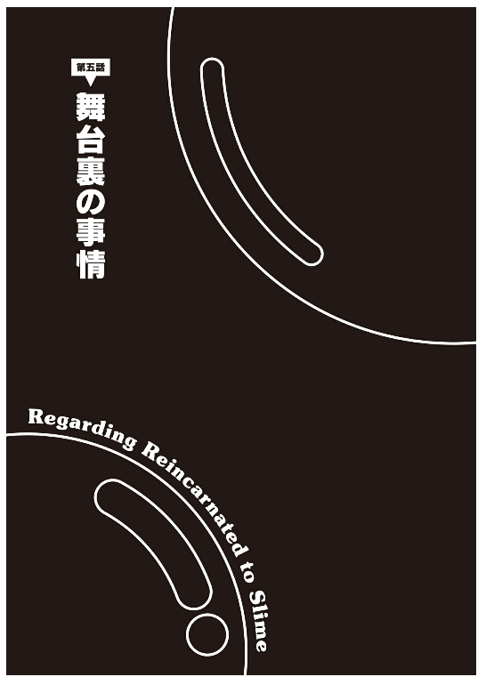そして俺達は、これ以上用事もないので帰ろうとした。
Và thế là, chúng tôi định ra về vì cũng chẳng còn việc gì để làm ở đây nữa.
流石（さすが）にもう、騎士達も立ち上がろうとしない。
Quả nhiên là đám kỵ sĩ cũng chẳng còn sức mà gượng dậy nổi nữa.
王様は放心状態だし、王太子に至っては元のすました顔が見る影もなく、口をあけて鼻水を垂らしている。
Nhà vua thì thất thần, còn Thái tử thì cái vẻ mặt tự mãn ban đầu đã biến mất không còn tăm hơi, giờ hắn đang há hốc mồm, nước mũi chảy ròng ròng.
二人とも自信満々だったのが嘘のように、変わり果てた姿になっていた。
Cả hai người họ đã thay đổi hoàn toàn, cứ như thể cái vẻ tự tin tràn trề trước đó chỉ là dối trá vậy.
せっかくの招待だったから御馳走くらい食べたかったが、残念な結果となってしまった。
Đã mất công được mời đến thì ít nhất tôi cũng muốn được ăn một bữa ra trò, nhưng kết quả lại đáng tiếc thế này đây.
それはそれとして腹は減ったので、どこかで飯でも食ってから帰るとしよう。
Mà chuyện đó tính sau, giờ bụng đói rồi, nên kiếm chỗ nào ăn gì đó rồi hẵng về.
「何食べたい？ というか、まだ酒場とか開いてるかな？」
"Mọi người muốn ăn gì? Mà nói chứ, không biết giờ này quán rượu các thứ còn mở cửa không nhỉ?"
「その切り替えの早さ、呆れるのを通り越して感心するわね」
"Cái tốc độ thay đổi tâm trạng đó, tôi hết thấy ngán ngẩm mà chuyển sang thán phục luôn rồi đấy."
「いやいや、果物は食べたけど、それだけじゃ足りないだろ？」
"Không không, nãy có ăn trái cây rồi, nhưng nhiêu đó sao mà đủ được?"
「うむ。我はラーメンが食べたい」
"Umu. Ta muốn ăn Ramen."
「ねーよ。この国にはな」
"Làm gì có đâu. Ở cái nước này ấy."
「そうね、この国には漁港があるから、もしかしたら刺身があるかも」
"Phải ha, nước này có cảng cá nên biết đâu lại có món Sashimi đấy."
「刺身か、悪くないな」
"Sashimi hả, cũng không tệ."
ナチュラルに気持ちを切り替えて、何を食べるか議論を始める俺達。ヒナタだって最初は呆れたフリをしていたが、本質的には俺達と同類なのだ。
Chúng tôi chuyển đổi tâm trạng một cách tự nhiên và bắt đầu bàn xem nên ăn gì. Hinata ban đầu cứ giả bộ ngán ngẩm, nhưng về bản chất thì cô ấy cũng cùng một giuộc với bọn tôi cả thôi.
人の事はとかく言うくせに、自分だって似たようなものなのである。
Cứ hay nói người khác thế này thế nọ, chứ bản thân cô ấy cũng y chang vậy à.
ふと意地悪したくなってそれを指摘すると、ヒナタは頬を染めて言い返してきた。
Tự nhiên tôi nổi hứng muốn trêu chọc nên đã chỉ ra điều đó, thế là Hinata đỏ mặt đáp trả lại.
「――仕方ないでしょう。ヴェルドラがラーメンとか言うから、お腹が空いたんだもの」
"――Biết làm sao được. Tại Verudora cứ nhắc đến Ramen làm tôi thấy đói bụng chứ bộ."
ちょっと照れたようにそう答える顔が、恥ずかしそうでとても可愛い。
Gương mặt trả lời có chút ngượng ngùng đó trông xấu hổ đáng yêu cực kỳ.
そんな表情が見られただけでも満足なので、ヒナタのリクエストに応える事にした。
Chỉ cần nhìn thấy biểu cảm đó là tôi mãn nguyện rồi, nên tôi quyết định sẽ chiều theo yêu cầu của Hinata.
出口に向かって歩き出した俺達に向けて、話しかけてくる者がいた。
Khi chúng tôi bắt đầu bước về phía lối ra, có một người đã cất tiếng gọi.
ここまで案内してくれた使者さんだった。
Đó là anh sứ giả-san, người đã dẫn đường cho chúng tôi đến tận đây.
「あ、あのう……私を、私共を守っていただき、感謝致しますぞ」
"A, ờm... Cảm ơn ngài đã bảo vệ tôi, bảo vệ chúng tôi."
と、使者さんやその他の貴族達が頭を下げる。
Nói rồi, sứ giả-san và các quý tộc khác cúi đầu cảm tạ.
この国の貴族も一枚岩ではないらしく、攻撃に参加した者としなかった者がいたのだ。
Có vẻ quý tộc nước này cũng không đồng lòng như một khối thống nhất, mà chia thành phe tham gia tấn công và phe không tham gia.
使者さんやその他の人達は、攻撃の意思が見られなかったので俺が守ってあげていたのだった。
Sứ giả-san và những người kia không có ý định tấn công, nên tôi đã ra tay bảo vệ họ.
「ああ、気にしなくていいですよ。もし感謝してくれているのなら、評議会で問題になった時に、俺達は悪くなかったと証言して欲しいです」
"A, không cần bận tâm đâu. Nếu mọi người thực sự biết ơn, thì khi chuyện này bị đưa ra Hội đồng, tôi muốn mọi người hãy làm chứng rằng chúng tôi không có lỗi."
「勿論で御座います！」
"Đương nhiên rồi ạ!"
「我等も止めようとしたと記録して下され！！」
"Xin hãy ghi nhận rằng chúng tôi cũng đã cố ngăn cản!!"
「今回の一件ですが、決してこの国の総意では御座いませんでした。その点、何卒、御理解頂きたく存じます」
"Về sự việc lần này, tuyệt đối không phải là ý chí chung của cả đất nước. Về điểm đó, xin ngài làm ơn hãy hiểu cho."
「大丈夫だよ。俺達も大事にするつもりはないし、戦争なんて真っ平だからね。
"Không sao đâu. Chúng tôi cũng không định làm to chuyện, và tôi cũng chúa ghét chiến tranh mà.
そもそもこの国には、魔塔で調べものをする為に来ただけだから」
"Vốn dĩ bọn tôi đến nước này chỉ để tra cứu tài liệu ở Ma Tháp thôi."
俺がそう言うとヒナタも同調して、紹介状を取り出してピラピラさせながら告げる。
Tôi vừa nói xong thì Hinata cũng hùa theo, cô ấy lấy thư giới thiệu ra, phe phẩy trước mặt họ và nói.
「そうよ。ちゃんと紹介状だって所持しているのだから、邪魔しないでちょうだい」
"Đúng thế. Chúng tôi có mang theo thư giới thiệu đàng hoàng, nên làm ơn đừng có cản đường."
「これでわかってくれたかな？ だったら、これ以上のトラブルは勘弁してくれよ？」
"Giờ thì mọi người hiểu rồi chứ? Nếu hiểu rồi thì làm ơn tha cho tôi, đừng gây thêm rắc rối nào nữa nhé?"
俺がそう念を押すと、貴族達は「「勿論ですとも！」」と、口を揃えて頷いてくれた。
Khi tôi nhấn mạnh như vậy, đám quý tộc đồng thanh gật đầu cái rụp: "Tất nhiên rồi ạ!"
これで一安心。落ち着いて目的を果たせそうである。
Thế là an tâm rồi. Có vẻ chúng tôi có thể bình tĩnh hoàn thành mục đích được rồi.
ヴェルドラなど、とっくに終わった気分になっている様子。貴族達の事などまるでお構いなしで、さっさと出口に向かって歩き出してしまった。
Verudora thì có vẻ như đã coi mọi chuyện xong xuôi từ đời nào rồi. Cậu ta chẳng thèm bận tâm đến đám quý tộc nữa, cứ thế rảo bước đi thẳng ra cửa.
俺とヒナタも顔を見合わせて苦笑しつつ、ヴェルドラを追ってその場を後にしたのだった。
Tôi và Hinata nhìn nhau cười khổ, rồi đuổi theo Verudora và rời khỏi nơi đó.
そうしてやって来たのは、漁港の酒場だ。
Và thế là, nơi chúng tôi tìm đến là một quán rượu ở cảng cá.
時間帯はまだまだ宵の口。
Thời gian vẫn còn là đầu giờ tối.
酔っ払いもいるにはいるが、賢人都市はエリート街だけあってお上品な者しかいない。
Tuy cũng có người say xỉn, nhưng vì Hiền Nhân Đô là khu phố của giới tinh hoa nên chỉ toàn những kẻ tao nhã.
「どうして漁港までこっち側にあるんだろ？」
"Sao cảng cá lại nằm ở phía bên này nhỉ?"
「アレよ。他の海域には大海獣がいて危険だけど、ここの海は魔塔を中心に『結界』で守られているのよね。だから安全に漁が出来るってわけ」
"Là do cái đó đấy. Các vùng biển khác có Đại Hải Thú rất nguy hiểm, nhưng vùng biển ở đây được bảo vệ bởi 'Kết giới' lấy trung tâm là Ma Tháp. Nhờ vậy mà có thể đánh bắt cá an toàn."
「なるほど、詳しいな。さてはヒナタってば、ここの常連だな？」
"Ra là vậy, cô rành thật đấy. Chẳng lẽ Hinata là khách quen ở đây sao?"
「常連になれるほど暇じゃなかったわよ」
"Tôi đâu có rảnh đến mức trở thành khách quen."
「でも、刺身が食べたくて情報は集めてた、と」
"Nhưng mà vì muốn ăn Sashimi nên đã thu thập thông tin chứ gì."
「……悪い？」
"...Bộ không được hả?"
睨まれた。
Tôi bị lườm rồi.
俺は慌てて「イイエ」と答える。
Tôi cuống cuồng trả lời "Dạ không".
「まあまあ、美味いモノを食べれるのなら、それでいいではないか。今日も御 馳になるぞ、リムルよ」
“Thôi nào, chỉ cần được ăn món ngon là tốt rồi còn gì. Hôm nay ta lại được cậu chiêu đãi nữa đấy, Rimuru.”
「ええ、そうね。ありがとう、リムル」
"Ừ, đúng đấy. Cảm ơn nhé, Rimuru."
「え？」
"Hả?"
えっと、もしかしなくても、支払いは俺なの？
Ơ kìa, đừng bảo người trả tiền lại là tôi đấy nhé?
「いやいや、ヴェルドラだってお小遣いもらってるだろ？」
"Không không, Verudora cũng có tiền tiêu vặt mà đúng không?"
「クアーーーハッハッハ！ そんなものを、我がいつまでも持ち続ける訳があるまい。とっくに使い切ってしまったわ！！」
"Kuahahaha! Làm gì có chuyện ta giữ thứ đó mãi bên người được chứ. Ta đã tiêu sạch sành sanh từ đời tám hoánh nào rồi!!"
いや、威張るような話じゃねーし。
Không, chuyện đó đâu có gì hay ho để mà khoe khoang chứ.
――って、ヴェルドラはともかく、ヒナタもシレッと何を言ってるんだ！？
――Mà khoan, Verudora thì không nói làm gì, nhưng sao cả Hinata cũng tỉnh bơ nói cái gì thế hả!?
「待て待て、ヒナタはお金持ちだよね？」
"Từ từ đã nào, Hinata giàu lắm mà nhỉ?"
「お金ってね、稼がなきゃなくなるのよ。この前のお祭りの時に奮発しちゃったから、もう余裕がないのよね」
"Tiền ấy mà, nếu không kiếm thì sẽ hết thôi. Hồi lễ hội dạo trước tôi lỡ vung tay quá trán rồi, nên giờ không còn dư dả nữa đâu."
などと、実に平然とのたまう始末。
Cô ấy thản nhiên phán một câu như vậy đó.
確かに、ヒナタは我が国の最新の衣装なんかを、かなり購入してくれていた。
Mà đúng là Hinata đã mua kha khá mấy bộ trang phục mẫu mới nhất của nước tôi thật.
今着ているのもその一つだし、お得意様なのは疑いようもない。
Bộ đồ cô ấy đang mặc trên người cũng là một trong số đó, nên không còn nghi ngờ gì nữa, cô ấy đúng là khách sộp.
子供達にも奢ってあげてたみたいだし……それに、ここまで堂々とたかられたら、逆に清々しいと思えてしまった。
Nghe nói cô ấy cũng đã bao lũ trẻ ăn uống... Thêm nữa, bị vòi vĩnh một cách đường đường chính chính đến mức này, tôi lại thấy sảng khoái lạ thường.
「わかったよ。今日は俺が出すから、好きに注文すればいいさ」
"Biết rồi. Hôm nay tôi sẽ bao, hai người cứ thích gì thì gọi nấy đi."
それを聞くなり、ヒナタとヴェルドラがハイタッチして喜び合っていた。
Vừa nghe thấy thế, Hinata và Verudora liền đập tay nhau (High-five) vui sướng.
しまった――と思ったが、手遅れだった。
Hỏng rồi――tôi vừa nghĩ vậy, nhưng đã quá muộn.
それに――その言葉を早まったと思うまで、一時間もかからなかったのだ。
Thêm vào đó――chưa đầy một tiếng sau tôi đã thấy hối hận vì câu nói lỡ miệng đó rồi.
テーブルの上には、山盛りの御馳走が並ぶ。
Trên bàn bày la liệt hàng núi cao lương mỹ vị.
遠慮という言葉を知らないのかと問い詰めてやりたいが、「知らぬわ」や「興味ないわね」と一蹴される未来が視えたので、無駄な真似をするのは止（や）めておいた。
Tôi muốn gặng hỏi xem họ có biết hai chữ "khách sáo" viết thế nào không, nhưng vì đã nhìn thấy trước cái tương lai bị gạt phăng đi bằng mấy câu như "Ta không biết" hay "Tôi không quan tâm", nên tôi quyết định dừng lại, không làm chuyện vô ích đó nữa.
せっかくなので、久しぶりの海の幸を堪能したいと思う。
Dù sao thì cũng đã đến đây rồi, tôi muốn tận hưởng hương vị biển cả đã lâu không được nếm.
いや、個人的に海で捕獲してくる魔魚は食べてはいるんだが、アレは一種の 魔物なので、前世のように小さくないのだ。
Không, ma ngư tôi tự đi bắt ở biển thì tôi cũng có ăn, nhưng mà chúng là một dạng ma vật, nên không hề nhỏ bé như mấy con cá ở kiếp trước.
つまり、焼き魚とかになると川魚でしか無理なサイズで、海魚での塩焼きは久しぶりの御馳走だったのである。
Tóm lại là, nếu là cá nướng thì kích cỡ đó thường chỉ có cá sông thôi, nên cá biển nướng muối đúng là món ngon lâu ngày mới được ăn.
鯛っぽい魚の塩焼き。
Cá nướng muối trông giống cá Tai.
小魚の南蛮漬けっぽい料理。
Món ăn trông giống cá nhỏ ngâm giấm Nanbanzuke.
野菜と一緒に煮込まれた鍋物。
Món lẩu hầm cùng với rau củ.
そして、お約束の刺身まであった。ぶつ切りされているだけで、匠の技で彩られてはいなかったけど、新鮮な魚がその場で下ろされるだけでも美味いのだ。
Và có cả món Sashimi đúng như mong đợi nữa. Tuy chỉ là cắt khúc thô sơ chứ không được trình bày bằng kỹ thuật điêu luyện, nhưng cá tươi được xẻ thịt ngay tại chỗ thôi cũng đủ ngon rồi.
そうして始まった食事だが、俺は物足りなさを感じていた。
Bữa ăn bắt đầu như thế, nhưng tôi lại cảm thấy thiêu thiếu cái gì đó.
刺身はあるのに、肝心のアレがないのである。
Có Sashimi đấy, nhưng lại thiếu mất cái "món đó" quan trọng nhất.
アレとはつまり、醤油だった。
"Món đó" tóm lại chính là nước tương.
タレはあるのだが、塩辛いだけに感じた。焼き魚の方では問題ないのだが、せっかくの刺身がイマイチなのだ。
Có nước chấm đấy, nhưng tôi cảm giác nó chỉ mặn chát thôi. Dùng cho cá nướng thì không sao, nhưng chấm với món Sashimi quý giá thì vị cứ sai sai thế nào ấy.
贅沢（ぜいたく）を言えば、だ。せっかくの焼き魚だって、大根おろしと醤油がないので 物足りなかった。ヴェルドラは美味そうに食べているが、ヒナタも若干微妙そうな表情をしていた。
Nói là xa xỉ (Zeitaku) thì hơi quá, nhưng… Dù có cá nướng ngon đến đâu đi nữa thì không có củ cải bào với nước tương nên vẫn thấy thiếu thiếu. Verudora thì ăn ngon lành, nhưng Hinata lại có vẻ hơi… không được hài lòng cho lắm.
「これ、醤油があったら最高だったのにな」
"Món này mà có nước tương thì tuyệt nhất."
調味料が合っていないのは残念だね。
Tiếc là gia vị không hợp lắm.
"郷に入っては郷に従え"というが、俺は美食に関してはうるさい男なのだ。
Người ta bảo "Nhập gia tùy tục", nhưng tôi là một gã khó tính trong chuyện ăn uống lắm.
「うーん、さばき方にも問題がありそうよ。ハクロウさんがいれば、もっと美味しく食べられたでしょうね」
"Hừm, có vẻ cách xẻ thịt cũng có vấn đề. Nếu có Hakurou-san ở đây thì chắc ăn ngon hơn nhiều rồi."
俺の事は呼び捨てなのにハクロウには"さん"付けですか。まあ、気持ちはわかりますけど。
Cô gọi trống không tên tôi mà lại thêm "-san" cho Hakurou à. Mà thôi, tôi cũng hiểu cảm giác đó.
それに、ハクロウが握る寿司は最高だったもんね。ヒナタの言うように、魚のさばき方にも原因がありそうだ。
Với lại, sushi do Hakurou nắm là cực phẩm mà lị. Đúng như Hinata nói, nguyên nhân có lẽ nằm ở cách xẻ cá.
それならば――
Nếu vậy thì――
俺はそういう面にはからっきしだから、この魚をサンプルとして持ち帰って、シュナやハクロウに料理してもらおうと思った。
Khoản này thì tôi mù tịt, nên tôi định sẽ mang chỗ cá này về làm mẫu, rồi nhờ Shuna hay Hakurou chế biến lại xem sao.
「何してるのよ」
"Cậu làm cái gì thế hả?"
「いや、大量に仕入れて研究をですね……」
"À không, tôi chỉ đang nhập một lượng lớn về để nghiên cứu ấy mà..."
「私も味見に協力してあげるわ」
"Tôi cũng sẽ giúp một tay nếm thử cho."
「いや、頼んでは――」
"Không, tôi có nhờ đâu――"
「遠慮しないで」
"Đừng có khách sáo."
「あ、はい」
"A, vâng."
押し負けた。
Tôi thua toàn tập.
ヒナタって、意外と食い意地が張ってるよね。
Hinata này, không ngờ lại ham ăn uống dữ ha.
「何か言いたい事でもあるのかしら？」
"Cậu có điều gì muốn nói à?"
ジトッと睨まれた。
Cô ấy lườm tôi cháy mặt.
「いえ、何もないです……」
"Dạ không, không có gì ạ..."
と、何も悪い事をしていないのにペコペコする俺。これが悲しい、元サラリーマンの性（さが）だった。
Và thế là, tôi cứ khúm núm cúi đầu dù chẳng làm gì sai. Đây chính là cái bản tính (Saga) bi ai của một cựu nhân viên văn phòng.
それにしても、ヒナタ。人の心を読んだ訳ではないだろうが、勘が良過ぎる のも困りものである。
Dẫu sao đi nữa, Hinata. Chắc là cô không đọc được tâm trí người khác đâu, nhưng trực giác tốt đến mức quá mức cũng thật phiền phức.
「我にも任せよ！」
"Giao cho ta nữa!"
「……おう、頼むわ」
"...Ờ, nhờ cả vào anh đấy."
俺は二人の圧力に負けてしまった。
Tôi đành khuất phục trước áp lực của hai người họ.
こうして俺のお小遣いが、大いに減じてしまったのである。
Thế là tiền tiêu vặt của tôi bị thâm hụt nghiêm trọng.
●
リムル一行が漁港の酒場で豪遊していた頃、マルクシュア王国の王城の一室では国王が頭を抱えていた。
Trong khi nhóm Rimuru đang ăn chơi tưng bừng ở quán rượu nơi cảng cá, thì tại một căn phòng trong Vương thành Vương quốc Marcushua, Quốc vương đang ôm đầu khổ sở.
「くそっ、くそっ、くそがぁ――っ！！」
"Chết tiệt, chết tiệt, chết tiệt thật chứ――!!"
と、普段なら決して口にしないような口汚い言葉で、リムル達に向けて呪詛を吐いている。
Ông ta buông những lời chửi rủa thô tục nhắm vào nhóm Rimuru, thứ ngôn từ mà bình thường ông ta tuyệt đối sẽ không bao giờ thốt ra.
それもそのはず。王様自慢の三百人以上が同時に踊れるほど広いダンスホー ルが、見るも無残に崩壊してしまっていたからだ。
Cũng phải thôi. Cái sảnh khiêu vũ rộng lớn đủ cho hơn ba trăm người cùng nhảy múa, niềm tự hào của Nhà vua đã sụp đổ thảm hại đến mức không nỡ nhìn.
幸いだったのは、貴族達に大怪我を負った者はいなかったこと。そして、廊下で繋がっている先にあった本城が無事だった事だった。
Điều may mắn là không có quý tộc nào bị thương nặng. Và tòa thành chính nối liền qua hành lang vẫn bình an vô sự.
今も騎士団を中心として瓦礫の撤去が行（おこな）われており、数日中には作業が完了するとの見通しであった。
Hiện giờ, công tác dọn dẹp đống đổ nát đang được tiến hành với nòng cốt là Đoàn kỵ sĩ, dự kiến sẽ hoàn tất trong vài ngày tới.
しかし、それで問題が解決する訳ではない。
Tuy nhiên, điều đó không có nghĩa là vấn đề đã được giải quyết.
「どうする？ どうするつもりなのだ、ヘリオォーーーース！！ 貴様の小賢しい愚策のせいで、この国にかつてない危機を招いてしまったではないか！！」
"Tính sao đây? Ngươi định tính sao đây hả, Helioooos!! Tại cái kế sách ngu xuẩn ra vẻ khôn lỏi của ngươi mà đất nước này đang phải đối mặt với một cuộc khủng hoảng chưa từng có đấy!!"
"暴風竜"ヴェルドラは本物だった。
"Bạo Phong Long" Verudora là hàng thật.
であれば当然、魔王リムルや聖人ヒナタも本物なのだ。
Nếu vậy thì đương nhiên, Ma vương Rimuru và Thánh nhân Hinata cũng là người thật.
西側諸国に名を轟（とどろ）かせていた大国ファルムスは、魔王リムルの怒りを買って滅びたという。
Nghe nói đại quốc Farmus từng vang danh khắp các quốc gia phương Tây đã diệt vong vì chọc giận Ma vương Rimuru.
眠れる"暴風竜"を目覚めさせてしまったのが崩壊への序曲だったそうだが、魔王リムルはそのヴェルドラを意のままに操れるとの噂なのだ。
Người ta bảo rằng việc đánh thức "Bạo Phong Long" đang say ngủ chính là khúc dạo đầu cho sự sụp đổ đó, và có tin đồn rằng Ma vương Rimuru có thể sai khiến Verudora đó theo ý muốn.
先程の光景を見るに、その噂には信憑性があった。
Nhìn vào quang cảnh lúc nãy thì lời đồn đó có vẻ đáng tin đấy.
命令に従うというより友達の頼みを聞くといった様子だったが、そんなのは国王にとって、どちらでも同じ話なのである。
Dù trông có vẻ giống nghe theo lời nhờ vả của bạn bè hơn là tuân theo mệnh lệnh, nhưng với Quốc vương thì chuyện đó cũng chẳng khác gì nhau cả.
「も、申し訳ありません、父上……」
"X... Xin lỗi phụ vương..."
「馬鹿者が！！ この場で父上などと呼ぶではないわ。貴様の失態、親子の縁で庇える範疇にないと知れッッ！」
"Đồ ngu xuẩn!! Chớ có gọi ta là phụ vương ở chốn này. Hãy biết rằng thất bại của ngươi đã vượt quá phạm vi mà tình cha con có thể bao che rồi!!"
国王は激怒していた。
Quốc vương đang giận tím mặt.
それは、恐怖の裏返しである。
Đó chính là biểu hiện ngược lại của nỗi sợ hãi.
絶対的な自信のあった魔法の力など、本物の天災の前には無力だったのだ。
Sức mạnh ma pháp mà họ tuyệt đối tin tưởng lại hoàn toàn bất lực trước thiên tai thực sự.
それをまざまざと見せつけられて、流石の国王も自分達の落ち度を理解せざるを得なかったのである。
Bị cho thấy điều đó một cách rõ ràng như vậy, đến Quốc vương cũng buộc phải nhận thức được sai lầm của mình.
西側諸国にも認められつつある新興国家――魔王リムルが支配するジュラ・テンペスト連邦国は、新たな経済圏を構築するだけの潜在力があると聞く。
Nghe nói quốc gia mới nổi đang dần được các nước phương Tây công nhận —— Liên bang Jura Tempest do Ma vương Rimuru cai trị, sở hữu tiềm năng đủ để xây dựng một vùng kinh tế mới.
その噂が話半分だとしても、マルクシュア王国よりも国力が上なのは間違いな かった。
Dù tin đồn đó chỉ đúng một nửa đi nữa, thì không còn nghi ngờ gì rằng quốc lực của nước đó vẫn mạnh hơn Vương quốc Marcushua.
常識的に考えれば、そんな国の国家元首に喧嘩を売っていい訳がない。
Suy nghĩ theo lẽ thường, thì chẳng có lý do gì để đi gây sự với nguyên thủ của một quốc gia như thế cả.
ましてその国王は、新参とはいえ魔王の一角なのである。"暴風竜"を抜きにしても、敵対すべき相手ではなかったのだ。
Huống chi vị Quốc vương đó, tuy là tân binh nhưng cũng là một thành viên trong hàng ngũ Ma vương. Ngay cả khi không tính đến "Bạo Phong Long", thì đó cũng không phải là đối thủ nên đối đầu.
「まさか本物とは思っておらず――」
"Thần... thần không ngờ đó là hàng thật――"
「抜かせイ！！ ブラガより報告を受けておったのだろうが。本物と思ってなかったなど、そんな言い訳が通用するものかよ！！」
"Câm mồm!! Ngươi đã nhận được báo cáo từ Braga rồi cơ mà. Cái cớ 'không nghĩ là hàng thật' đó mà hòng lọt tai được sao!!"
それを言うのなら、国王はヴェルドラ達が本物なのではと疑っていたにもかかわらず、ヘリオス王太子の策を止めなかった時点で同罪なのだが、それを指摘出来る者などこの場にいない。
Nếu nói về chuyện đó, thì Quốc vương cũng có tội ngang hàng khi không ngăn cản kế sách của Thái tử Helios dù đã nghi ngờ nhóm Verudora là hàng thật, nhưng ở đây chẳng có ai dám chỉ ra điều đó cả.
「陛下、どうか落ち着いて下さいませ。今回の失態を取り戻すにはどうすべきか、それを論じるのが先でしょうぞ」
"Bệ hạ, xin hãy bình tĩnh lại. Việc cần làm trước tiên là bàn bạc xem nên làm thế nào để cứu vãn sai lầm lần này đã ạ."
影の薄い宰相から取りなされて、ようやく国王も少しだけ落ち着きを取り戻した。
Được vị Tể tướng mờ nhạt đứng ra can gián, cuối cùng Quốc vương cũng lấy lại được chút bình tĩnh.
「……西方聖教会への対処も考えねばならんぞ。聖騎士団（クルセイダーズ）の団長殿への無礼も、なかった事には出来まいよ」
"......Ta cũng phải suy tính cách đối phó với Giáo Hội Thánh Tây Phương nữa. Sự vô lễ đối với Đoàn trưởng-dono của Thánh Hiệp Sĩ Đoàn (Crusaders) không thể coi như chưa từng xảy ra được đâu."
「左様ですな。闇に葬ってしまえたならばともかく、こうなってしまった以上、誠意を持って謝罪するしかありますまい」
"Đúng là vậy ạ. Nếu có thể chôn vùi trong bóng tối thì không nói, nhưng chuyện đã đến nước này rồi thì chỉ còn cách tạ lỗi một cách chân thành thôi ạ."
「余に頭を下げよと申すか！？」
"Ngươi bảo Trẫm phải cúi đầu sao!?"
「それしかありますまい……」
"Đó là cách duy nhất rồi ạ..."
宰相としても、愚行を止められなかった責任がある。出来るものならば、大事になどしたくないのだ。
Với tư cách là Tể tướng, ông ta cũng có trách nhiệm khi không ngăn cản được hành động ngu xuẩn đó. Nếu được thì ông ta chẳng muốn làm to chuyện chút nào.
しかしながら今回の一件、自分達に都合のいいように話を捏造しようにも、魔王リムルが握る証拠があっては通用しない。それを理解するだけに、無駄な足掻きをする気も起きないのだった。
Tuy nhiên về vụ việc lần này, dù có muốn bịa đặt câu chuyện theo hướng có lợi cho bản thân thì cũng vô dụng khi Ma vương Rimuru đang nắm giữ bằng chứng. Chính vì hiểu rõ điều đó nên ông ta cũng chẳng buồn giãy giụa vô ích làm gì.
「せめて魔王だけならばともかく、聖人殿もおられましたからな。発言の重みが違います故、当方が何を主張しようと聞き入れてはもらえますまい」
"Giá mà chỉ có mỗi Ma vương thì còn đỡ, đằng này Thánh nhân-dono cũng có mặt ở đó. Sức nặng lời nói của ngài ấy hoàn toàn khác biệt, nên phía chúng ta có biện hộ gì thì e là cũng chẳng ai thèm nghe đâu ạ."
「ぐぬう……このような屈辱に甘んじねばならんとは、ヘリオスよ、これも全 て貴様のせいだぞ！！」
"Gư nư... Không ngờ lại phải cam chịu nỗi nhục nhã thế này, Helios, chuyện này cũng hoàn toàn là lỗi của ngươi đấy!!"
「申し訳御座いません！！」
"Con vô cùng xin lỗi!!"
国王の烈火の如き怒りに触れて、ヘリオスは平身低頭するしかなかった。
Chạm phải cơn thịnh nộ như lửa cháy của Quốc vương, Helios chỉ còn biết cúi rạp đầu tạ tội.
常に自信満々で他者を見下す男だが、権力の前には無力なのである。
Gã đàn ông lúc nào cũng tràn trề tự tin và coi thường người khác ấy, rốt cuộc cũng hoàn toàn bất lực trước quyền lực.
ここでこれ以上の怒りを買えば、王太子としての地位を剥奪されかねない。そう考えたヘリオスは、怯えるしか出来なかったのだ。
Nếu giờ mà chọc giận Ngài thêm nữa thì có nguy cơ bị tước bỏ địa vị Thái tử. Nghĩ đến đó, Helios chỉ còn biết run rẩy sợ hãi.
「クソッ、王太子がこうも無能とはな。余が甘やかせ過ぎたせいか？」
"Chết tiệt, không ngờ Thái tử lại vô năng đến mức này. Là do Trẫm đã quá nuông chiều nó sao?"
そして国王も自省する事なく、全ての責任を人のせいにして自分のちっぽけなプライドを守ろうとしていた。
Và rồi, ngay cả Quốc vương cũng chẳng hề tự kiểm điểm, mà lại đổ hết trách nhiệm lên đầu người khác hòng bảo vệ cái lòng tự tôn nhỏ nhoi của mình.
そんな真似をしても無駄なのだが、魔法以外に秀でた才のない国王では、他に解決策を見出せなかったのだ。
Dù làm thế cũng vô ích, nhưng với một vị Quốc vương không có tài cán gì nổi trội ngoài ma pháp thì ông ta cũng chẳng thể tìm ra giải pháp nào khác.
そんな訳で、まともな議論など成立する訳もなく。
Chính vì lẽ đó, chẳng có cuộc thảo luận tử tế nào được diễn ra cả.
不毛な時間が流れていく。
Thời gian cứ thế trôi qua một cách vô nghĩa.
しかし、再び静寂が訪れたその瞬間――
Thế nhưng, ngay khoảnh khắc sự tĩnh lặng bao trùm trở lại――
「はっはっは、怒り過ぎですよ、王様」
"Hahaha, Ngài giận quá mất khôn rồi đấy, thưa Đức vua."
と、この場にそぐわぬ朗らかな声が響いたのだ。
Và rồi, một giọng nói sảng khoái chẳng hề ăn nhập với bầu không khí nơi đây vang lên.
宰相がギョッとしたように、その声の主へと振り向いた。
Tên Tể tướng giật thót mình, quay phắt lại về phía chủ nhân của giọng nói đó.
そこにいたのは、まだ若い優男だった。
Ở đó là một gã trai trẻ bảnh bao.
直ぐに気付かなかったのは、その男が両足をテーブルの上に投げ出して、ソファーに寝そべっていたからだ。
Sở dĩ không nhận ra ngay là vì gã đàn ông đó đang nằm ườn ra sô pha, gác cả hai chân lên mặt bàn.
一見すると特徴がない、貼り付けたような笑みを浮かべた男。
Thoạt nhìn thì chẳng có đặc điểm gì nổi bật, một gã đàn ông với nụ cười như dán dính trên mặt.
しかしよく観察してみると、その服の仕立ては上品で、使われている生地も最高品質のものであると見て取れる。
Thế nhưng nếu quan sát kỹ, trang phục của hắn được may cắt rất thượng hạng, chất vải cũng có thể nhận thấy là loại cao cấp nhất.
その手に持つステッキなど、高度な魔法の使用にも耐えられるような、類を見ないほどの逸品だった。
Cây gậy hắn cầm trên tay là một tuyệt phẩm hiếm thấy, có vẻ đủ sức chịu đựng được cả việc thi triển ma pháp cao cấp.
ただし、その態度は駄目だ。
Có điều, thái độ của hắn thì hỏng bét.
一国の王を前にして、有り得ないほどの不敬であった。
Trước mặt vua của một nước mà lại tỏ ra bất kính đến mức không thể tin nổi.
「き、貴様はアシュレイ子爵――」
"Ngươi... Ngươi là Tử tước Ashray――"
ヘリオスが血相を変えて絶句した。
Helios biến sắc, cứng họng không nói nên lời.
その男――アシュレイ子爵について、ヘリオスはよく知っていた。
Về gã đàn ông đó ―― Tử tước Ashray, Helios biết rất rõ.
自分の側 近として、学園にも一緒に通ったほどの仲だったのだ。
“Hắn là người thân cận bên mình, đến mức từng cùng nhau học ở học viện.”
しかし、そこまで親しい訳ではない。
Tuy nhiên, cũng không phải là thân thiết đến mức tri kỷ.
いわゆる、ヘリオスの腰巾着の一人であった。
Nói cách khác, hắn chỉ là một trong những kẻ bám đuôi Helios mà thôi.
だからこそ、困惑する。
Chính vì thế nên hắn mới thấy bối rối.
（アシュレイめ、このように生意気なヤツではなかったのに……いや、そもそもコイツが何かを主張した事など、今の今まで一度としてなかったではないか）
(Cái tên Ashray này, hắn đâu phải kẻ xấc xược thế này đâu... Không, vốn dĩ từ trước đến giờ tên này chưa từng đưa ra chủ kiến gì cơ mà.)
控えめで目立たない男、というのがヘリオスのアシュレイ子爵に向けた認識であり、今の状況は自分の目で見ても信じられないものだった。
Một gã đàn ông khiêm tốn và mờ nhạt, đó là những gì Helios nhận định về Tử tước Ashray, nên tình huống hiện tại là thứ mà dù có tận mắt chứng kiến hắn cũng không thể tin nổi.
「アシュレイ、控えよ！！ なんという様か。無礼にも程があろうぞっ！！」
"Ashray, lui xuống ngay!! Ra cái thể thống gì thế hả. Vô lễ cũng phải có mức độ thôi chứ!!"
絶句したヘリオスに代わって、宰相がアシュレイ子爵を叱責する。
Thay cho Helios đang cứng họng, Tể tướng lên tiếng quát mắng Tử tước Ashray.
これ以上国王を怒らせるのは不味いと、その禿頭に脂汗を浮かべて、必死になって取りなそうと考えていた。
Ông ta nghĩ rằng chọc giận Quốc vương thêm nữa thì nguy to, nên mồ hôi hột túa ra trên cái đầu hói, cố sống cố chết tìm cách xoa dịu tình hình.
しかし、国王の反応は皆の予想を裏切るものだった。
Thế nhưng, phản ứng của Quốc vương lại nằm ngoài dự đoán của tất cả mọi người.
「――あ、アシュレイ様！？」
"――A, Ashray-sama!?"
と、普段の傲慢な態度からは信じられないほど、低姿勢で声をかけたのである。
Ông ta cất tiếng gọi với thái độ khúm núm đến mức khó tin nếu so với vẻ ngạo mạn thường ngày.
否、それはもう御伺いを立てた、と称すべき態度であり、どちらが格上なのか一目瞭然となる様相だった。
Không, phải nói thái độ đó chẳng khác gì đang thỉnh cầu ý chỉ, nhìn vào là biết ngay ai mới là kẻ bề trên.
「ち、父上？」
"P... Phụ vương?"
「へ、陛下……？」
"B... Bệ hạ...?"
困惑するばかりの、ヘリオスと宰相。
Helios và Tể tướng chỉ biết ngơ ngác bối rối.
そんな二人にお構いなしで、アシュレイ子爵がステッキをクルクルとさせてから、小馬鹿にしたように国王に向けてピタリと止めた。
Mặc kệ hai người đó, Tử tước Ashray xoay tít cây gậy trên tay rồi dừng lại, chĩa thẳng vào mặt Quốc vương như thể đang trêu ngươi.
「王様、怒ってばかりいないで、こっちにおいでよ」
"Này Quốc vương, đừng có giận dỗi mãi thế, lại đây nào."
「は、はい」
"V... Vâng."
そう言われるがままに、アシュレイの向かい側に国王が座った。その様子は、普段の傲岸不遜さが影も形もなくなっている。
Nghe lời răm rắp, Quốc vương ngoan ngoãn ngồi xuống đối diện Ashray. Cái vẻ ngạo mạn xấc xược thường ngày giờ đã tan biến không còn một mảnh.
（何故だ……何故、アシュレイ如きに、父上がへりくだっておられるのだ？）
(Tại sao... Tại sao Phụ vương lại hạ mình trước một kẻ như Ashray chứ?)
何が起きているのかわからず、ヘリオスは困惑する。
Không hiểu chuyện gì đang xảy ra, Helios vô cùng bối rối.
宰相もヘリオスと同様だ。
Tể tướng cũng giống như Helios.
（どうなっている？ たかが子爵が、陛下に対して何と不遜な。しかし、どうして陛下はそれを許されているのであろうか……？）
(Chuyện quái gì thế này? Chỉ là một tên Tử tước quèn mà dám xấc xược với Bệ hạ như vậy. Nhưng mà, tại sao Bệ hạ lại cho phép điều đó cơ chứ...?)
と、戸惑いを隠せないでいる。
Ông ta không giấu nổi sự hoang mang.
そんな二人を無視して、国王とアシュレイ子爵の会話が始まった。
Phớt lờ hai người bọn họ, cuộc đối thoại giữa Quốc vương và Tử tước Ashray bắt đầu.
「その様子から察するに、今この場では演技は必要ない、と判断しても宜しいのでしょうか？」
"Nhìn thái độ đó của ngài, thần có thể hiểu là ở đây, ngay lúc này, không cần phải diễn kịch nữa có được không ạ?"
演技とは何の話だ――と、ヘリオスと宰相は不安そうに顔を見合わせる。
Diễn kịch là chuyện gì thế này ―― Helios và Tể tướng nhìn nhau đầy bất an.
聞きたいが、それを知ってしまうのが怖い。
Muốn hỏi, nhưng lại sợ phải biết câu trả lời.
しかし、既に部屋から退出するタイミングは失われており、必然、王と子爵の会話に聞き耳を立てる他、何も出来る事はなくなっていた。
Tuy nhiên, thời điểm để lui ra khỏi phòng đã trôi qua mất rồi, nên tất yếu, họ chẳng thể làm gì khác ngoài việc dỏng tai lên nghe cuộc trò chuyện giữa Vua và Tử tước.
「演技、ね。君の息子はそれなりに優秀だったし、及第点はあげてもいいさ。でもね、勝手にヴェルドラに喧嘩を売って、取り逃がしちゃったのは減点だよね」
"Diễn kịch à. Con trai nhà ngươi cũng khá ưu tú đấy, ta có thể cho nó điểm đạt. Cơ mà, tự ý gây sự với Verudora rồi để xổng mất hắn thì là điểm trừ đấy nhé."
「そ、それは……」
"Ch... Chuyện đó..."
「まさか、君も手を貸していたのかな？」
"Không lẽ, nhà ngươi cũng đã tiếp tay cho chuyện này sao?"
「わ、私ではありませんっ！！ 全ては、そう、全ては我が愚息が仕出かした失態なのです！！」
"K... Không phải thần!! Tất cả, đúng vậy, tất cả là do sai lầm của đứa con trai ngu ngốc nhà thần gây ra!!"
「ふーん。だとしたら、どうして止めなかったのさ？」
"Hừm. Nếu vậy thì sao nhà ngươi lại không ngăn nó lại?"
「そ、それは……」
"Ch... Chuyện đó..."
「もしかして、僕達があげた型落ちの技術で、馬鹿みたいにはしゃいじゃったのかな？ 与えられた平穏で平和ボケして、ヴェルドラを舐めちゃって、自分達だけでも勝てると思ったとか？」
"Chẳng lẽ, các người đã sướng rơn lên như mấy kẻ ngốc vì cái đống kỹ thuật lỗi thời mà bọn ta ban cho sao? Hưởng thụ sự bình yên được ban phát rồi sinh ra lú lẫn trong hòa bình, coi thường Verudora, rồi nghĩ rằng chỉ với sức mình là có thể thắng được hả?"
そう突っ込まれて、国王は返す言葉もない。うぐっ、と言葉を飲み込み、脂汗を垂らして項垂（うなだ）れた。
Bị vặn hỏi như vậy, Quốc vương không thốt nên lời. Ông ta nuốt ngược tiếng "Ư..." vào trong, mồ hôi hột chảy ròng ròng, rồi cúi đầu ủ rũ.
「まあいいや」
"Mà thôi kệ đi."
そこでアシュレイは、スッと表情から笑みを消した。
Lúc đó, Ashray đột ngột tắt nụ cười trên khuôn mặt.
「お前等はこの先、魔塔からの支援は必要ないって事でいいんだな？」
"Các ngươi đồng ý rằng từ nay về sau không cần sự viện trợ từ Ma Tháp nữa, có phải không?"
声を低くしてそう問うたが、それは恫喝だ。
Hắn hạ thấp giọng hỏi như vậy, nhưng đó rõ ràng là một lời đe dọa.
当然、マルクシュア王国として受け入れられる話ではない。
Đương nhiên, Vương quốc Marcushua không thể nào chấp nhận chuyện đó được.
「いえ、いいえ！ そのような事は、決して御座いません！！ 余、いえ、私は魔塔に忠誠を誓っております。これまでも、これからも、それは不変で御座います！！」
"Không, không đâu! Tuyệt đối không có chuyện đó!! Trẫm... à không, tôi xin thề trung thành với Ma Tháp. Trước đây cũng vậy, và từ nay về sau cũng thế, điều đó là bất biến ạ!!"
平身低頭する勢いで、国王がたかが子爵であるアシュレイに取りすがった。
Trong tư thế cúi rạp người xuống, Quốc vương bám lấy Ashray, kẻ chỉ mang tước vị Tử tước.
その姿を見て、そして会話を聞いていれば、自ずと背後関係も見えてくるものだ。
Nhìn dáng vẻ đó và nghe cuộc đối thoại này, tự nhiên sẽ thấy rõ được mối quan hệ hậu thuẫn phía sau.
「……まさか、アシュレイは魔塔の？」
"...Chẳng lẽ, Ashray là người của Ma Tháp?"
思わずそう呟いたヘリオスに、アシュレイが振り向いた。
Ashray quay lại nhìn Helios, người vừa buột miệng lẩm bẩm điều đó.
そして、笑みを浮かべて答える。
Rồi hắn nở nụ cười và trả lời.
「うん？ ああ、ゴメンゴメン、まだ言ってなかったね。僕はね、魔塔 の "最古参の三賢人（トリニティワイズマン）"の一人なのさ。驚かせちゃったね」
"Hửm? A, xin lỗi xin lỗi, ta vẫn chưa nói với ngươi nhỉ. Ta ấy mà, là một trong những 'Tam Hiền Nhân Cổ Đại (Trinity Wiseman)'. Làm các người bất ngờ rồi nhỉ."
その胡散臭い笑顔は、普通に怒っているよりも怖い。
Nụ cười đầy vẻ khả nghi đó còn đáng sợ hơn cả khi hắn tức giận bình thường.
ヘリオスはガタガタと震えながら、大慌てで跪（ひざまず）いた。
Helios vừa run cầm cập vừa cuống cuồng quỳ gối.
王太子としての誇りなど、この男の前では無意味だと理解していた。何しろ、
Hắn hiểu rằng lòng kiêu hãnh của một Thái tử chẳng có nghĩa lý gì trước mặt gã đàn ông này. Bởi lẽ,
国王であるヘリオスの父でさえ、その威厳を保てていないのだ。ヘリオス如き
Ngay cả cha của Helios là Quốc vương còn chẳng giữ nổi uy nghiêm. Kẻ như Helios...
ではどうしようもないと、言われずとも察せられるというものだった。
...thì càng chẳng làm được gì, điều đó không cần nói ra cũng tự hiểu được.
そして宰相も、ヘリオスが跪くより速く平伏している。強い者には逆らわな
Và Tể tướng cũng đã phủ phục xuống đất còn nhanh hơn cả Helios quỳ gối. Không chống đối kẻ mạnh...
いのが宰相の処世術であり、魔塔の支配者を目の当たりにすれば、そうなるの
...chính là thuật xử thế của Tể tướng, và khi chứng kiến kẻ cai trị Ma Tháp ngay trước mắt, thì chuyện trở nên như thế...
は無理もなかった。
...cũng là điều dễ hiểu.
宰相が下を向いたまま言う。
Tể tướng vừa cúi gằm mặt xuống vừa nói.
「お、恐れながら申し上げます！ 我等はヴェルドラを取り逃がしてはおりませぬ。ヤツ等の動向は今も継続して把握しておりますし、その目的も掴んでおりますれば！」
"Th... Thần xin mạo muội bẩm báo! Chúng thần không hề để Verudora chạy thoát đâu ạ. Chúng thần vẫn đang tiếp tục nắm bắt động thái của bọn chúng, và cũng đã nắm được mục đích của chúng rồi ạ!"
宰相は、この場を乗り切る為に必死だった。
Tể tướng đang cố sống cố chết để vượt qua tình cảnh này.
国王や王太子の為だけではない。自分自身の保身の為に、必死になってその優秀な頭脳を働かせていた。
Không chỉ vì Quốc vương hay Thái tử. Ông ta đang vận dụng hết bộ não ưu tú của mình một cách tuyệt vọng để bảo vệ chính bản thân.
会話の流れから、どうやらアシュレイの目的はヴェルドラにあるように思えた。
Từ mạch câu chuyện, có vẻ như mục tiêu của Ashray đang nhắm vào Verudora.
そして、『この国には、魔塔で調べものをする為に来ただけ』という、リムル達の会話を思い出したのだ。
Và rồi, ông ta nhớ lại lời nói của nhóm Rimuru rằng: "Bọn tôi đến nước này chỉ để tra cứu tài liệu ở Ma Tháp thôi".
「へえ、そうなんだ」
"Hể, ra là vậy."
宰相の必死な訴えは功を奏して、アシュレイの怒りの気配が少しだけ薄れた。同じ笑顔でありながら、優し気な雰囲気に戻りつつある。
Lời cầu khẩn hết mình của Tể tướng đã có hiệu quả, vẻ giận dữ của Ashray đã vơi đi đôi chút. Vẫn giữ nụ cười y hệt lúc nãy, nhưng bầu không khí đang dần trở lại vẻ ôn hòa.
「罠を張って待っていれば、向こうからやって来るんだね？」
"Nghĩa là nếu giăng bẫy ngồi chờ thì bọn chúng sẽ tự mò đến sao?"
「はい！ 何でも『紹介状』まで所持しているとかで、嘘とは思えませんでした！」
"Vâng! Nghe đâu họ còn có cả 'Thư giới thiệu' nữa, nên thần không nghĩ là họ nói dối đâu ạ!"
ここぞとばかりに力説する宰相だったが、それを聞いたアシュレイの反応は鈍い。
Tể tướng chớp lấy cơ hội nhấn mạnh điều đó, nhưng phản ứng của Ashray khi nghe xong lại khá hờ hững.
「紹介状だって？」
"Thư giới thiệu sao?"
そう呟き、思案し始めたのだ。
Hắn lẩm bẩm như vậy rồi bắt đầu suy tư.
これは不味いと焦る宰相だったが、アシュレイは直ぐに笑顔になった。そして――
Tể tướng đang cuống quýt nghĩ bụng quả này nguy to rồi, thì Ashray lại lập tức nở nụ cười. Và rồi――
「ま、いいや。君達の仕出かした件については、こっちで相談してからペナルティを決めるよ。後で連絡するから、大人しく反省しとくんだね」
"Mà, thôi được rồi. Về chuyện các người vừa gây ra, ta sẽ bàn bạc với bên ta rồi quyết định hình phạt sau. Ta sẽ liên lạc sau, nên liệu hồn mà ngoan ngoãn kiểm điểm đi nhé."
そう言い残して去って行ったのだった。
Bỏ lại những lời đó, hắn quay lưng rời đi.
●
アシュレイ子爵が去った後、その場は沈痛な空気に沈んだ。
Sau khi Tử tước Ashray rời đi, bầu không khí nặng nề bao trùm cả căn phòng.
誰も口を開けない中、最初に言葉を発したのは国王だった。
Trong khi không ai dám mở miệng, người đầu tiên lên tiếng là Quốc vương.
「これが真相なのだ。今更隠し立てしても仕方ない故、貴様等の疑問に答えてやろう。ただし、この場限りの話として、秘密は絶対に厳守せよ」
"Đây chính là chân tướng sự việc. Giờ có che giấu cũng chẳng ích gì, nên ta sẽ giải đáp thắc mắc của các ngươi. Tuy nhiên, chuyện này chỉ được nói ở đây thôi, tuyệt đối phải giữ bí mật."
そう言われて、ヘリオスと宰相は覚悟を決めて頷いた。
Nghe vậy, Helios và Tể tướng hạ quyết tâm và gật đầu.
"毒を食らわば皿まで"という言葉がある。ここまで秘密を知った以上、もう後には退けなかった。
Có câu "Đâm lao thì phải theo lao.". Một khi đã biết được bí mật đến mức này rồi thì không còn đường lui nữa.
「――陛下、いえ、父上。この国は、王権が絶対上位ではないのでしょうか？」
"――Bệ hạ, không, thưa Phụ vương. Chẳng lẽ vương quyền không phải là tối cao tuyệt đối ở đất nước này sao?"
意を決して放たれたヘリオスからの問いに、王は重々しく答える。
Trước câu hỏi được Helios lấy hết can đảm thốt ra, Nhà vua trả lời một cách nặng nề.
「見たままよ。我が国は魔塔の庇護下にあるのだ。逆らえるものか」
"Đúng như những gì con thấy đấy. Đất nước chúng ta nằm dưới sự bảo hộ của Ma Tháp. Làm sao mà chống lại được chứ."
それを聞いて、今度は宰相が口を挟んだ。
Nghe thấy vậy, lần này đến lượt Tể tướng chen vào.
「で、ですが陛下！ 我が国も、西方諸国評議会（カウンシル・オブ・ウエスト）の歴（れっき）とした加盟国なのですぞ！ 如何に魔塔の力が強大でも、国に影響を及ぼすなど……。まして、傀儡（かいらい）にするなど許されますまい！」
"Nh-Nhưng mà thưa Bệ hạ! Đất nước chúng ta cũng là một thành viên chính thức của Hội đồng các quốc gia phương Tây (Council of West) cơ mà! Dù thế lực của Ma Tháp có hùng mạnh đến đâu, thì việc gây ảnh hưởng lên quốc gia... Huống hồ là biến chúng ta thành con rối (Kairai), sao có thể tha thứ được chứ!"
その意見は実にもっともだった。
Ý kiến đó quả thực rất có lý.
外なる脅威に立ち向かうべく、人類は共存の道を選んだのだ。このように国の独立を脅かす行為は、他の加盟国からしても看過出来ない所業であろう。
Để đối đầu với những mối đe dọa từ bên ngoài, nhân loại đã chọn con đường cùng tồn tại. Hành vi đe dọa đến sự độc lập của một quốc gia như thế này, chắc chắn là một việc làm mà các nước thành viên khác không thể nhắm mắt làm ngơ.
宰相がそう確信するのも無理はないのだ。
Chuyện Tể tướng tin chắc vào điều đó cũng là lẽ đương nhiên.
しかし、現実は非情であった。
Thế nhưng, hiện thực lại tàn khốc vô cùng.
王が冷たく答える。
Nhà vua lạnh lùng đáp lại.
「フッ、言ったであろう。我が国は魔塔の庇護下にある、と。もしも魔塔から見放されれば、『結界』がなくなり、更に魔塔目当てにやって来る魔法使い共の懐を当てに出来なくなる。それどころか、海での漁すら不可能となるのだぞ？ それでも貴様は、魔塔と手を切れと申すのか？」
"Hừ, ta đã nói rồi phải không. Rằng nước ta nằm dưới sự bảo hộ của Ma Tháp. Nếu bị Ma Tháp bỏ rơi, 『Kết giới』 sẽ biến mất, hơn nữa chúng ta sẽ không thể trông cậy vào túi tiền của đám ma pháp sư tìm đến đây vì Ma Tháp nữa. Chưa hết đâu, ngay cả việc đánh cá trên biển cũng sẽ trở nên bất khả thi đấy? Biết thế mà ngươi vẫn bảo ta phải cắt đứt quan hệ với Ma Tháp sao?"
「そ、それは……」
"Ch... Chuyện đó..."
そう言われてしまえば、何も反論出来ない宰相である。
Bị nói như thế, Tể tướng chẳng thể phản bác lại lời nào.
この国の安全保障だけでなく、経済、食糧事情までも、魔塔なしでは成り立たない事実を突き付けられたのだ。黙るしかないのも無理なかった。
Không chỉ an ninh quốc gia, mà cả kinh tế, lương thực cũng không thể duy trì nếu thiếu Ma Tháp, sự thật đó đã bị đập thẳng vào mặt ông ta. Việc chỉ còn biết câm nín cũng là điều dễ hiểu.
「そ、それで、我々は何を求められているのでしょう？」
"V... Vậy thì, họ yêu cầu chúng ta phải làm gì ạ?"
現実を受け入れたのか、質問を変える宰相。
Có lẽ đã chấp nhận hiện thực, Tể tướng đổi câu hỏi.
王が端的に答えた。
Nhà vua trả lời ngắn gọn.
「魔力を捧げておるのだ」
"Chúng ta đang cống nạp ma lực đấy."
「魔力？」
"Ma lực ư?"
「そうとも。我が国が魔法使い至上主義なのも、魔塔からの命令に従った結果に過ぎん。この国で魔法使いが優遇されると知れ渡れば、優秀な者が多くやって来るからな」
"Đúng vậy. Việc đất nước ta theo chủ nghĩa tôn sùng ma pháp sư cũng chỉ là kết quả của việc tuân theo mệnh lệnh từ Ma Tháp mà thôi. Bởi lẽ nếu tin đồn ma pháp sư được ưu đãi ở đất nước này lan rộng, thì sẽ có nhiều kẻ ưu tú tìm đến."
「そうなれば、より質の高い魔力を捧げられるという訳ですか……」
"Nếu vậy thì có nghĩa là sẽ cống nạp được lượng ma lực chất lượng cao hơn sao..."
魔力を捧げると聞いて、宰相にも思い当たる事があった。週に一度ほど、どっと疲れたような感覚に陥る事があったのだ。数日きちんと睡眠をとれば治るのだが、それは魔法を極限まで使用した際と似たような症状だったのである。
Nghe đến chuyện cống nạp ma lực, Tể tướng cũng chợt nhớ ra một chuyện. Cứ khoảng một tuần một lần, ông lại rơi vào cảm giác mệt mỏi rã rời. Tuy chỉ cần ngủ nghỉ đàng hoàng vài ngày là khỏi, nhưng triệu chứng đó rất giống với khi sử dụng ma pháp đến cực hạn.
なるほど、あれがそうか――と、宰相は納得した。
Ra là vậy, hóa ra là do cái đó à ―― Tể tướng đã hiểu ra vấn đề.
「しかし、文句は言えぬぞ。その魔力を用いて、この王都を守る『結界』が維持されているのだからな」
"Nhưng mà, chúng ta không thể than vãn được đâu. Vì nhờ sử dụng lượng ma lực đó mà 『Kết giới』 bảo vệ Vương đô này mới được duy trì."
実際には、王都たる賢人都市ではなく、魔塔を守護する『結界』なのだろう。
Thực tế thì, có lẽ đó là 『Kết giới』 bảo vệ Ma Tháp chứ chẳng phải Hiền Nhân Đô hay Vương đô gì đâu.
しかし、それを言っては身も蓋もなかった。
Nhưng mà, nói toẹt ra như thế thì phũ phàng quá.
結果的には自分達にも利益があるのだからと、王も無理矢理納得しているのである。宰相はそう悟り、それ以上は何も言えなくなってしまった。
Nhà vua cũng tự ép mình chấp nhận với lý do rằng rốt cuộc thì bản thân họ cũng được hưởng lợi. Tể tướng nhận ra điều đó nên cũng chẳng thể nói thêm lời nào nữa.
しかし、ヘリオスは違った。
Thế nhưng, Helios lại khác.
普段ならば逆らう事など絶対に出来ぬ父の弱った姿を見て、今ならば文句を言っても許されると考えた。
Nhìn thấy dáng vẻ yếu đuối của người cha mà bình thường hắn tuyệt đối không dám chống lại, hắn nghĩ rằng bây giờ có buông lời oán trách thì cũng sẽ được tha thứ.
いや、違う。
Không, không phải vậy.
文句を言わねばやってられぬほどに、ヘリオスは追い詰められていたのだ。
Là Helios đã bị dồn vào đường cùng đến mức nếu không kêu ca thì không chịu nổi.
「では父上は、この私に生贄になれと仰るのですか！？ ずっと魔塔の言いなりになり、黙って従えと？」
"Vậy Phụ vương muốn bảo con hãy trở thành vật tế sao!? Rằng hãy cứ mãi nghe theo sự sai bảo của Ma Tháp, im lặng mà phục tùng ư?"
それは心からの訴えだったのだが、国王はそれを鼻で笑って一蹴する。
Đó là lời kêu than từ tận đáy lòng, nhưng Quốc vương lại cười khẩy và gạt phăng đi.
「お前にもチャンスを与えたであろう？ もし〝暴風竜〟を倒せていれば、魔塔の支配から逃れられたであろうが」
"Chẳng phải ta đã trao cho ngươi cơ hội rồi sao? Nếu ngươi đánh bại được 'Bạo Phong Long', thì đã có thể thoát khỏi sự cai trị của Ma Tháp rồi."
そう言われて、ヘリオスも悟った。
Nghe nói vậy, Helios cũng ngộ ra.
国王も――いや、目の前にいる父親こそが、ヘリオスが今想像してしまった 苦しみを、現実のものとして抱えて生きてきた先輩なのだ、と。
Quốc vương... không, chính người cha đang đứng trước mắt Helios mới là người tiền bối đã sống mang nỗi đau mà Helios vừa tưởng tượng thành hiện thực.”
誰よりも魔塔の支配を嫌っているのが、この国の犠牲となっている国王、父だったのだ。
Kẻ căm ghét sự cai trị của Ma Tháp hơn bất cứ ai, chính là Quốc vương, là người cha đang trở thành vật hy sinh cho đất nước này.
父たる国王は、ヴェルドラを倒す事で自分達にも力があるのだと示そうとしていた。その功績を以て魔塔と交渉し、より有利な条件に変更してもらった上で、新しい共存関係を構築しようと狙っていたのである。
Với cương vị là một người cha, Quốc vương đã định chứng minh rằng bản thân họ cũng có sức mạnh thông qua việc đánh bại Verudora. Ông ta nhắm tới việc dùng công trạng đó để đàm phán với Ma Tháp, thay đổi các điều kiện trở nên có lợi hơn, rồi xây dựng một mối quan hệ cộng sinh mới.
ヘリオスはようやくその事実に思い至り、自分には文句を言う資格すらなっかったのだと理解した。
Helios cuối cùng cũng nhận ra sự thật đó, và hiểu rằng mình thậm chí chẳng có tư cách gì để than vãn.
「では父上は……魔塔から解放されたいと御考えなのですね？」
"Vậy ra Phụ vương... người muốn được giải phóng khỏi Ma Tháp sao?"
「夢だよ。代々の王だけが見る夢だ。いや、だった、かな」
"Đó là một giấc mơ. Giấc mơ mà chỉ các đời vua mới nhìn thấy. Không, có lẽ phải nói là 'đã từng' thì đúng hơn."
「……」
"......"
ヘリオスも、もう何も言えない。
Helios cũng chẳng thể nói thêm lời nào nữa.
喉元まで出かかった言葉を飲み込み、沈黙するしかなかった。
Hắn nuốt ngược những lời định nói vào trong, đành phải giữ im lặng.
今の王の姿は、未来の自分なのである。そう思えば、どんな慰めも言い訳も通用しないのだ。
Hình dáng của Nhà vua hiện tại chính là bản thân hắn trong tương lai. Nghĩ đến đó, thì mọi lời an ủi hay biện bạch đều vô tác dụng.
宰相も同じだ。
Tể tướng cũng vậy.
王家の秘密を知ってしまった以上、一蓮托生で王を、王太子を支えていくしかないのである。
Một khi đã biết bí mật của hoàng gia, ông ta đã ngồi chung thuyền rồi, chỉ còn cách phò tá Nhà vua và Thái tử mà thôi.
しかしふと、宰相の脳裏に不安がよぎった。
Thế nhưng bất chợt, một nỗi bất an thoáng qua trong tâm trí Tể tướng.
魔王リムル達が魔塔に向かうなら、戦争になるのではないか、と。
Rằng nếu nhóm Ma vương Rimuru tiến đến Ma Tháp, chẳng phải sẽ nổ ra chiến tranh sao.
魔王にその気はなさそうだったが、魔塔は〝暴風竜〟を狙っている様子だった。
Có vẻ như Ma vương không có ý định đó, nhưng Ma Tháp thì lại đang nhắm vào "Bạo Phong Long".
必然、大いなる戦いに発展するのは避けられそうにないのだ。
Tất yếu, việc phát triển thành một cuộc đại chiến là điều khó mà tránh khỏi.
「お、恐れながら申し上げます。もしも、もしもの話ですが、魔王リムルが魔塔を滅ぼしてしまったならば、我々は解放されるのではないでしょうか？」
"Th... Thần xin mạo muội bẩm báo. Giả sử, đây là chuyện giả sử thôi ạ, nếu Ma vương Rimuru tiêu diệt Ma Tháp, thì chẳng phải chúng ta sẽ được giải phóng sao ạ?"
またも沈黙が支配する。
Sự im lặng lại bao trùm.
呆れたように重い口を開いたのは、国王だった。
Người mở miệng một cách nặng nề với vẻ ngán ngẩm là Quốc vương.
「そうなったら、民にとっては悪夢だぞ。先ほど言った通りこの国の基盤は魔塔に頼っておるのだ。それを忘れるな」
"Nếu chuyện đó xảy ra, thì sẽ là cơn ác mộng đối với người dân đấy. Như ta đã nói lúc nãy, nền tảng của đất nước này dựa vào Ma Tháp. Chớ có quên điều đó."
その通りだ。自分は何を馬鹿な発言をしてしまったのかと、宰相もうなだれる。
Đúng như vậy. Tể tướng cũng cúi đầu ủ rũ, tự trách mình sao lại thốt ra một câu ngu ngốc đến thế.
魔塔は、王家にとっては目の上のタンコブ。しかしながら、要求されるのは魔力のみであり、魔塔からの要求を受け入れるだけで、恩恵を与えてくれるのである。
Đối với Hoàng gia, Ma Tháp chính là cái gai trong mắt. Tuy nhiên, thứ họ yêu cầu chỉ là ma lực, và chỉ cần chấp nhận yêu cầu từ Ma Tháp, họ sẽ ban cho những ân huệ.
それは要求というより命令なのだが、この状況を代々維持する事こそが、王家に求められる最善の役割なのだった。
Gọi là yêu cầu nhưng thực chất đó là mệnh lệnh, và việc duy trì tình trạng này qua các thế hệ chính là vai trò tối ưu nhất mà Hoàng gia phải gánh vác.
勿論、もっと平等で平和な世界になるのなら、その限りではないのだが……。
Tất nhiên, nếu thế giới trở nên bình đẳng và hòa bình hơn, thì chuyện lại khác...
国王が席を立った。
Quốc vương đứng dậy khỏi ghế.
そして、告げる。
Rồi ông ta tuyên bố.
「この件については、王妃すら知らぬ。次代の王が即位した際に、先王が伝えるのが伝統なのだ。今回は例外となったが、決して口外するでないぞ」
"Về chuyện này, ngay cả Vương phi cũng không biết đâu. Theo truyền thống, Tiên vương sẽ truyền lại cho Tân vương khi lên ngôi. Lần này là ngoại lệ, nhưng các ngươi tuyệt đối không được tiết lộ ra ngoài đâu đấy."
それは、密会の終わりを宣言する言葉だった。
Đó là lời tuyên bố kết thúc cuộc họp kín.
それで終わりかと思われたのだが――扉に向かった王の耳に、力ないヘリオ スの呟きが届いた。
Người ta tưởng rằng chuyện đã kết thúc――nhưng lời thì thầm yếu ớt của Helios đã đến tai nhà vua khi ông bước về phía cánh cửa.
「――父上は、もしかして兄上を、この宿業から逃がして差し上げようとしたのですか？」
"――Phụ vương, chẳng lẽ người đã định giải thoát cho Hoàng huynh khỏi cái nghiệp chướng này sao?"
答えなど求めていない問いかけ。
Một câu hỏi vốn dĩ không mong chờ câu trả lời.
だから、答える必要などなかったのに。
Thế nên, lẽ ra không cần phải trả lời.
「……アレには、魔力がなかったからな。巻き込む必要などあるまいよ」
"...Kẻ đó không có ma lực. Nên cũng chẳng cần thiết phải cuốn nó vào làm gì."
足を止めて、王が答えたのだ。
Nhà vua dừng bước và trả lời.
それはヘリオスが初めて見る、王の父親としての姿であった。
Đó là lần đầu tiên Helios nhìn thấy hình dáng của một người cha nơi Nhà vua.
「父上は私を……愛しておられなかったのですか？」
"Phụ vương... người không yêu thương con sao?"
ヘリオスが思わずそう問うてしまったのは、今まで見下していた兄への嫉妬からだった。
Helios buột miệng hỏi câu đó là do lòng ghen tị với người anh trai mà hắn vẫn luôn coi thường bấy lâu nay.
それに対する王の答えは、非情だ。
Câu trả lời của Nhà vua đối với điều đó thật vô tình.
「国にとっての最善を選ぶのが、王たる者の使命なのだ。そこに情など、介入する余地はない」
"Chọn lựa điều tốt nhất cho đất nước là sứ mệnh của kẻ làm Vua. Ở đó, không có chỗ cho tình cảm chen vào."
答えがあっただけ、ヘリオスへの愛情もあったと見るべきだろう。しかし、そうとは気付けないヘリオスとしては、ただただ悔し涙を流すしかなかった。
Chỉ riêng việc ông ấy chịu trả lời, cũng nên coi đó là minh chứng cho tình thương dành cho Helios. Tuy nhiên, với một Helios không thể nhận ra điều đó, hắn chỉ còn biết tuôn rơi những giọt nước mắt cay đắng trong uất ức.
王は苦悩し続けて、宰相は将来を悲観し、王太子は絶望して、夜の密会は幕を閉じた。
Nhà vua tiếp tục chìm trong khổ não, Tể tướng bi quan về tương lai, Thái tử thì tuyệt vọng, và thế là cuộc họp kín trong đêm đã hạ màn.
誰もが自分の事で手一杯だった。
Ai nấy đều đã quá bận tâm với chuyện của riêng mình.
だからこそ――
Chính vì thế――
隣の部屋で聞き耳を立てている者がいた事に、この場の誰もが気付けなかったのだ。
Không một ai ở nơi này nhận ra rằng, có kẻ đang dỏng tai nghe lén ở phòng bên cạnh.
CHƯƠNG 6: KẺ HẮC MẠC TOAN TÍNH
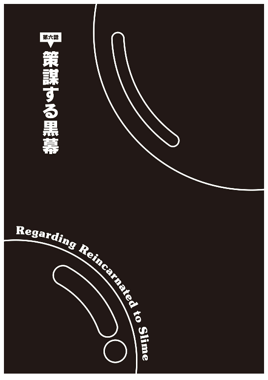王城を後にしたアシュレイ子爵は、軽やかに空を蹴って魔塔へと帰って来た。
Rời khỏi Vương thành, Tử tước Ashley nhẹ nhàng đạp không khí quay trở về Ma Tháp.
塔に張り巡らせた『結界』など全て無視して、支配者のみが入れる階層に直通で『転移』する。
Hắn phớt lờ toàn bộ những thứ như 『Kết Giới』được giăng quanh tháp, và 『Dịch Chuyển』trực tiếp đến tầng chỉ dành riêng cho những kẻ cai trị.
そこでは、二人の人物が寛いでいた。
Tại đó, có hai nhân vật đang thư giãn.
「やあ、ただいま」
"Chào, ta về rồi đây"
アシュレイが御機嫌で挨拶すると、二人が振り返った。
Khi Ashley vui vẻ chào hỏi, hai người kia quay lại.
一人は眼光鋭い壮年の男だ。
Một người là gã đàn ông tráng niên với ánh mắt sắc bén.
名をプレリクスと言う。
Tên hắn gọi là Prelix.
種族は、魔王ルミナスと近しい吸血鬼族（ヴァンパイア）。それも、原点にして頂点の一角である真夜中の吸血鬼（ナイトストーカー）だった。
Chủng tộc là Huyết Quỷ Tộc (Vampire) có quan hệ gần gũi với Ma Vương Luminous. Hơn nữa, hắn còn là Dạ Hành Hấp Huyết Quỷ (Night Stalker), một kẻ thuộc về cội nguồn và đứng trên đỉnh cao của chủng tộc này.
眼光は鋭く、見る者を威圧する。老人と言うにはまだ早いが、若者と呼ぶに は年を取り過ぎている。もっとも、プレリクスは長命種なのだから、それが見た目通りの年齢ではないのは言うまでもないだろう。
Ánh mắt sắc bén, khiến người nhìn cảm thấy áp lực. Vẫn còn quá sớm để gọi là người già, nhưng lại quá già để gọi là người trẻ. Dù vậy, vì Prelix thuộc chủng tộc trường thọ, nên không cần phải nói rằng tuổi thật không hẳn trùng với vẻ bề ngoài.
もう一人は、幼い少女だ。
Người còn lại là một thiếu nữ nhỏ tuổi.
名は、ピピン。
Tên cô ấy là Pippin.
眼帯で両目を隠しフードを頭から被っているが、その可愛らしい顔を隠せていない。しかしその素顔は、感情など持ち合わせていないかのように無表情だ。
Cô dùng băng mắt che đi đôi mắt và trùm mũ kín đầu, nhưng vẫn không che giấu được gương mặt đáng yêu ấy. Thế nhưng, gương mặt thật đó lại vô cảm như thể cô không hề có chút cảm xúc nào.
種族は真なる人類（ハイ・ヒューマン）で、こちらも長命種である。
Chủng tộc là Chân Nhân Loại (High Human), và đây cũng là một loài sống lâu.
当然ながら外見通りの精神年齢ではなく、プレリクスと変わらない歳月を生き抜いた最古のメンバーだった。
Đương nhiên tuổi tinh thần không hề giống vẻ bề ngoài, cô là thành viên cổ xưa nhất đã sống sót qua những tháng năm đằng đẵng không kém gì Prelix.
そんな二人と並ぶのが、アシュレイだ。
Sánh vai cùng hai người đó chính là Ashley.
同様に古い付き合いである彼は、火精人（エンキ）に分類される。この種族が魔物に変質したものが鬼人族（キジン）なので、元を辿れば同類だと言えなくもない。
Là chỗ quen biết lâu năm tương tự, hắn được phân loại là Hỏa Tinh Nhân (Enki). Vì Quỷ Nhân Tộc (Kijin) là do chủng tộc này biến chất thành ma vật mà ra, nên nếu truy về nguồn gốc thì cũng có thể coi là đồng loại.
つまり、人前に出る時は仮の姿をしていただけなのだ。
Tóm lại, khi xuất hiện trước mặt người khác, hắn chỉ đang dùng hình dáng giả mà thôi.
この三名こそが魔塔の支配者――〝最古参の三賢人（トリニティワイズマン）〟だった。
Ba người này chính là những kẻ cai trị Ma Tháp ―― 〝Tam Hiền Nhân Cổ Đại (Trinity Wiseman)〟.
アシュレイは変化（へんげ）を解き、空いていた椅子に座った。
Ashley giải trừ Biến Hóa, ngồi xuống chiếc ghế còn trống.
飄々（ひょうひょう）としたイメージはそのままに、深紅の角が額に生じて、肌が赤銅色へと変化した。これこそが、アシュレイの本当の姿なのだ。
Vẫn giữ nguyên cái thần thái phiêu diêu tự tại ấy, một cặp sừng đỏ thẫm mọc ra trên trán, và làn da chuyển sang màu đồng đỏ. Đây chính là hình dáng thật sự của Ashley.
足を組んで鼻歌を歌うアシュレイ。
Ashley vắt chéo chân và ngân nga hát.
それを聞きとがめて、ピピンが反応した。
Nghe thấy vậy, Pippin liền phản ứng.
「御機嫌ですね、アシュレイ」
"Tâm trạng tốt quá nhỉ, Ashley"
「まあね、ピピン」
"Cũng tàm tạm thôi, Pippin"
「ヴェルドラの捕獲に成功していたのですか？」
"Ngươi đã thành công bắt giữ Verudora rồi sao?"
「まさか！ あの無能共に成し遂げられるなら、僕達がとっくの昔に、ヴェルドラを飼い慣らしていただろうよ」
"Làm gì có chuyện đó! Nếu đám vô dụng kia mà làm được, thì chúng ta đã thuần hóa được Veldora từ đời tám hoánh nào rồi"
馬鹿にしたように答えるアシュレイ。その矛先はピピンに向いたものではなく、利用している弱小国家を嘲（あざけ）っているのだ。
Ashley trả lời với giọng điệu coi thường. Mũi dùi đó không phải hướng về phía Pippin, mà là đang cười nhạo cái quốc gia nhược tiểu mà hắn đang lợi dụng.
ピピンもそれを理解して、淡々と応じる。
Pippin cũng hiểu điều đó và đáp lại một cách thản nhiên.
「――だと思った。二千年ほど前に一度だけ、上手く誘導に成功してルミナス の城を吹き飛ばせたけど……あれっきりで、二度目のチャンスが巡って来ない」
“…Ta biết mà. Khoảng hai ngàn năm trước, ta chỉ duy nhất một lần dẫn dắt nó thành công và cho thổi bay lâu đài của Luminous… nhưng chỉ có lần đó thôi, chẳng bao giờ có cơ hội thứ hai nữa.”
表情に変化はないが、その声は少し不満そうだ。
Biểu cảm không hề thay đổi, nhưng giọng nói lại có vẻ hơi bất mãn.
それを宥めるようにアシュレイが答えた。
Ashley trả lời như để xoa dịu điều đó.
「まあ、仕方ないさ。〝竜種〟が最強なのは、永遠不変の真理だもん。それを覆すのが僕達の命題だからして、この困難を楽しめている訳だけど」
"Chà, đành chịu thôi. Việc 〝Long Chủng〟 là mạnh nhất vốn là chân lý bất di bất dịch vĩnh hằng mà. Chính vì lật đổ điều đó là mệnh đề của chúng ta, nên ta mới đang tận hưởng sự gian nan này đấy"
ピピンと違って、アシュレイは表情も声も楽しそうである。
Khác với Pippin, Ashley tỏ ra vui vẻ cả ở nét mặt lẫn giọng nói.
そんなアシュレイに水を差すのが、今まで沈黙を守っていたプレリクスだ。
Kẻ dội gáo nước lạnh vào một Ashley như thế, chính là Prelix, người vẫn giữ im lặng nãy giờ.
「フンッ！ それでは貴様は、何をそんなにはしゃいでいるのだ？ 勝手な真似をしてチャンスを潰した愚か者共に、きっちりとお仕置きしてきたのではないのか？」
"Hừ! Vậy thì nhà ngươi đang phấn khích vì cái gì thế hả? Chẳng phải ngươi đi để trừng phạt đích đáng lũ ngu xuẩn đã tự ý hành động làm hỏng mất cơ hội hay sao?"
勝手な真似とは、魔塔に相談どころか報告もせず王太子達がヴェルドラを倒そうとした事だ。
Hành động tự ý ở đây là việc đám Thái tử định đánh bại Verudora mà không hề báo cáo chứ đừng nói là bàn bạc với Ma Tháp.
事前に相談されていたら、魔塔が計画を主導しただろう。そうすれば、今とは違った結果になっていたはずだった。
Nếu được bàn bạc trước, Ma Tháp hẳn đã chủ đạo kế hoạch rồi. Làm thế thì, kết quả hẳn đã khác rồi.
…………
……
…
アシュレイが言うように〝最古参の三賢人（トリニティワイズマン）〟は〝竜種〟を従える事を命題として掲げている。
Đúng như lời Ashley nói, 〝Tam Hiền Nhân Cổ Đại (Trinity Wiseman)〟đã đề ra mệnh đề là phải khiến cho 〝Long Chủng〟 phục tùng.
古今東西の魔法的資料を集めているのは、その『解』を求めるのが目的だったのだ。
Việc thu thập các tài liệu ma pháp từ cổ chí kim, từ đông sang tây chính là nhằm mục đích tìm ra 『Lời giải』 cho điều đó.
とは言え、それが簡単ではないのは皆が理解しているし、最終目標という訳でもない。
Tuy nhiên, ai cũng hiểu rằng điều đó chẳng hề đơn giản, và đó cũng không phải là mục tiêu cuối cùng.
命題とは別に、三人には野望があった。
Ngoài mệnh đề đó ra, cả ba người còn có một dã tâm.
それこそが、裏の世界で覇権を奪う事である。
Đó chính là đoạt lấy bá quyền trong thế giới ngầm.
ここ、基軸世界では、覇権を担う勢力がいくつかあった。
Tại đây, ở Thế Giới Cốt Lõi, có một vài thế lực đang nắm giữ bá quyền.
大別すると、人類、魔王達、〝竜種〟である。
Nếu phân loại đại khái, thì đó là Nhân loại, các Ma Vương, và 〝Long Chủng〟.
今の表世界では、人類が栄華を極めている。
Ở thế giới bề nổi hiện tại, Nhân loại đang đạt đến đỉnh cao của sự phồn vinh.
これはいい。生産面でも色々と役立つのだから、むしろ手伝ってやっても構わないほどだ。
Điều này cũng tốt. Về mặt sản xuất bọn họ cũng giúp ích được nhiều thứ, nên thậm chí có giúp đỡ lại bọn họ cũng chẳng sao.
東の帝国は厄介だが、そちらとは直接面していないので、当面は除外しても問題なかった。
Đế quốc phía Đông tuy phiền phức, nhưng vì không trực tiếp tiếp giáp với bên đó, nên trước mắt gạt ra ngoài cũng không thành vấn đề.
ここで問題となるのが、裏世界の支配者だ。
Vấn đề nảy sinh ở đây chính là những kẻ cai trị thế giới ngầm.
それこそが、魔王達だった。
Đó chính là các Ma Vương.
人類が滅ばぬように自らを脅威として誇示している者もいれば、自分の領土に絶対的存在として君臨している者もいる。相互に干渉し合わぬように支配地も取り決め合っていて、〝最古参の三賢人（トリニティワイズマン）〟が介入する余地はなかった。
Có kẻ phô trương bản thân như một mối đe dọa để nhân loại không bị diệt vong, cũng có kẻ quân lâm như một thực thể tuyệt đối trên lãnh thổ của mình. Họ thỏa thuận phân chia vùng cai trị để không can thiệp lẫn nhau, thế nên không có chỗ cho 〝Tam Hiền Nhân Cổ Đại (Trinity Wiseman)〟 chen chân vào.
自分達よりも弱い者が魔王として立っている場合もあり、面白くないという思いもある。それならば魔王を名乗り台頭すればいい話だが、それはそれで問題があった。
Cũng có trường hợp những kẻ yếu hơn mình lại đứng ở vị trí Ma Vương, khiến họ cảm thấy không cam tâm. Nếu vậy thì cứ xưng danh Ma Vương rồi trỗi dậy là xong, nhưng làm thế lại nảy sinh vấn đề khác.
それが、〝最古参の三賢人〟と敵対している魔王の存在だ。
Đó là sự tồn tại của một Ma Vương đang đối địch với 〝Tam Hiền Nhân Cổ Nhất〟.
そう。
Phải.
先程の会話でも名前が挙がった魔王ルミナスこそ、彼等三名が憎む敵なのだ。
Chính Ma Vương Luminous, kẻ vừa được nhắc tên trong cuộc hội thoại lúc nãy, mới là kẻ thù mà ba người bọn họ căm ghét.
西側諸国でルミナス教を信仰させているほどなので、人類への影響は絶大だ。
Mụ ta khiến các quốc gia phía Tây sùng bái Luminous Giáo, nên sức ảnh hưởng đối với nhân loại là cực lớn.
自分達こそが人類の指導者に相応（ふさわ）しいと考える〝最古参の三賢人（トリニティワイズマン）〟とは、立ち位置からして相容れないのだった。
Điều này xét về mặt lập trường là không thể dung hòa với 〝Tam Hiền Nhân Cổ Đại (Trinity Wiseman)〟, những kẻ luôn cho rằng chính mình mới xứng đáng là người lãnh đạo nhân loại.
他にも、裏で人類社会に介入している者もいるらしく、自分達の手勢と小競り合いが生じたりしていた。
Ngoài ra, dường như cũng có những kẻ khác đang can thiệp vào xã hội loài người từ trong bóng tối, và đã xảy ra những cuộc giao tranh nhỏ với tay chân của bọn họ.
結論から言えば、人類の支配になど興味のない〝竜種〟はともかくとして、魔王勢を排除しなければ彼等の野望は達成出来ないのだ。
Nói tóm lại, khoan bàn đến 〝Long Chủng〟 vốn chẳng có hứng thú gì với việc cai trị nhân loại, nếu không loại bỏ thế lực Ma Vương thì dã tâm của bọn họ sẽ không thể đạt thành.
しかしながら、戦力比は絶望的だった。それで仕方なく、彼等は雌伏の時を過ごしていたのだ。
Tuy nhiên, chênh lệch chiến lực là quá tuyệt vọng. Thế nên chẳng còn cách nào khác, bọn họ đành phải trải qua khoảng thời gian ẩn mình chờ thời.
そしてつい最近、〝竜種〟を従える呪法を編み出す事に成功した。
Và rồi mới đây, họ đã thành công trong việc tạo ra chú pháp để khiến 〝Long Chủng〟 phục tùng.
戦闘能力は皆無だが演算能力に特化したピピンが、〝無限回廊の秘法〟を完成させたのである。
Pippin, kẻ hoàn toàn không có khả năng chiến đấu nhưng lại chuyên biệt về khả năng tính toán, đã hoàn thành 〝Vô Hạn Hồi Lang Bí Pháp〟.
空間を歪曲させて対象を閉じ込め、そのエネルギーを流用する事でその呪法 を維持させる。つまり、敵が強ければ強いほど強力になるという、対個人、対軍団、対〝竜種〟にまでも流用可能な最強の封殺術式だった。
Bằng cách bẻ cong không gian để giam giữ mục tiêu rồi tái sử dụng năng lượng của chúng, thuật chú này được duy trì. Nói cách khác, đối thủ càng mạnh thì nó càng trở nên mạnh hơn—một loại thuật thức phong sát tối thượng có thể ứng dụng đối kháng cá nhân, đối quân đoàn, thậm chí cả đối với〝Long Chủng〟.
これを試す機会を窺っていた時に聞かされたのが、ヴェルドラを取り逃がしたという報告だ。三人が激怒したのは当然であった。
Ngay lúc đang rình rập cơ hội để thử nghiệm thứ này thì lại nghe báo cáo rằng đã để xổng mất Verudora. Việc ba người bọn họ vô cùng giận dữ là điều đương nhiên.
………
……
…
プレリクスからの激しい突っ込みに、アシュレイは飄々と答える。
Trước lời bắt bẻ gay gắt từ Prelix, Ashley trả lời một cách bình thản.
「落ち着きなよ。僕だって怒ってるさ」
"Bình tĩnh nào. Ta cũng đang cáu đây"
「ならば――」
"Nếu vậy thì――"
「まあまあ。罰を与えるつもりで出向いたら、そこで面白い話を聞いたんだ」
"Thôi nào. Lúc ta đi đến đó định giáng hình phạt, thì lại nghe được một chuyện thú vị ở đó"
「――何？」
"――Cái gì?"
「面白い話？」
"Chuyện thú vị?"
「ああ。どうやら魔王リムル達は、魔塔（ここ）を目指しているらしいのさ」
"À. Hình như nhóm Ma Vương Rimuru đang nhắm đến Ma Tháp (nơi này) đấy"
アシュレイがそう答えると、プレリクスは「ほう」と思案するように唸った。
Khi Ashley trả lời như vậy, Prelix ậm ừ "Hô" vẻ đăm chiêu suy nghĩ.
「ならば慌てずとも、ゆっくり罠を張れるという事か」
"Nếu vậy thì chẳng cần phải vội vàng, chúng ta có thể thong thả giăng bẫy được rồi."
「と言っても、明後日の夜だけどね」
"Nói thì nói thế, nhưng là đêm ngày kia đấy nhé"
「それでも、突発じゃないだけマシ。万全の状態で挑めるというもの」
"Dẫu vậy, không phải chuyện đột xuất là tốt rồi. Chúng ta có thể nghênh chiến ở trạng thái hoàn hảo nhất"
それほど時間に余裕はないが、来るとわかっているのだから準備は出来る。
Tuy không dư dả thời gian cho lắm, nhưng vì đã biết trước bọn chúng sẽ đến nên vẫn có thể chuẩn bị được.
圧倒的優位な立場を手に入れられるというものだった。
Điều này giúp họ nắm giữ được vị thế áp đảo hoàn toàn.
ただ、問題は……。
Có điều, vấn đề là...
「しかしね、気になるのは『紹介状』を持ってるって話さ」
"Thế nhưng, điều khiến ta bận tâm là chuyện bọn chúng có 『Thư giới thiệu』"
と、アシュレイが指摘する。
Ashley chỉ ra điểm mấu chốt.
「紹介状だと？」
"Thư giới thiệu sao?"
「まさか……」
"Chẳng lẽ là..."
すると、プレリクスは怪訝な表情で問い返し、ピピンは何かに思い当たった様子だ。
Thấy vậy, Prelix hỏi lại với vẻ mặt nghi hoặc, còn Pippin thì có vẻ như đã nhận ra điều gì đó.
アシュレイが頷く。
Ashley gật đầu.
「そうなんだ。各国の王族からでも、魔塔への紹介なんて受け付けてないからね。それなのにそんなものを用意するヤツと言えば――」
"Đúng vậy đấy. Bởi vì ngay cả từ hoàng tộc các nước, chúng ta cũng đâu có chấp nhận cái gọi là thư giới thiệu vào Ma Tháp đâu. Thế mà lại có kẻ chuẩn bị được thứ đó thì chỉ có thể là――"
「ルミナスだね」
"Là Luminous nhỉ"
〝最古参の三賢人（トリニティワイズマン）〟の宿敵であるルミナスこそが疑わしいと、アシュレイとピピンの意見が一致した。
Ý kiến của Ashley và Pippin trùng khớp với nhau rằng kẻ đáng ngờ chính là Luminous, kẻ thù truyền kiếp của 〝Tam Hiền Nhân Cổ Đại (Trinity Wiseman)〟.
その理由もある。
Việc đó cũng có lý do.
ルミナスとは千日手に陥っているとはいえ、水面下での勢力争いが継続中だからだ。
Đó là vì dù đang rơi vào thế bế tắc với Luminous, nhưng cuộc chiến tranh giành quyền lực trong bóng tối vẫn đang tiếp diễn.
ルミナスが支配する聖都は特殊な『結界』に守られた聖地であり、アシュレイ達の勢力も迂闊に手を出せないのが現状だ。それと同様に、魔塔も万全を期した『防衛結界』によって侵入者を拒んでいる為、生半可な戦力などものともしないのである。
Thánh Đô do Luminous cai trị là vùng đất thánh được bảo vệ bởi 『Kết Giới』 đặc biệt, tình hình hiện tại là thế lực của nhóm Ashley cũng không thể tùy tiện đụng vào được. Tương tự như vậy, Ma Tháp cũng ngăn chặn kẻ xâm nhập bằng 『Kết Giới Phòng Vệ』 vô cùng hoàn hảo, nên mấy cái chiến lực nửa vời chẳng nhằm nhò gì với nó cả.
両陣営共に防衛面に力を入れた結果、互いが互いを攻めあぐねていた。と言っても、主にチョッカイを出しているのは魔塔側である。
Kết quả của việc cả hai phe đều dồn sức vào phòng thủ là bên nào cũng không thể công hạ được bên kia. Nói thì nói vậy, nhưng kẻ chủ yếu đi gây sự lại là phía Ma Tháp.
ルミナス側からすれば、満月の夜にこそ最大の力を発揮する吸血鬼族（ヴァンパイア）が主力である。逆に新月の夜は弱くなる性質があるので、新月の夜にしか出現しない魔塔に手を出し兼ねていたのだ。
Xét từ phía Luminous, chủ lực của ả là Huyết Quỷ Tộc (Vampire), những kẻ chỉ phát huy sức mạnh tối đa vào đêm trăng tròn. Ngược lại, vì chúng có đặc tính sẽ yếu đi vào đêm trăng non, nên ả đã không thể ra tay với Ma Tháp vốn chỉ xuất hiện vào những đêm trăng non.
聖騎士団（クルセイダーズ）を動かすには大義名分がない。
Cũng không có đại nghĩa danh phận để điều động Thánh Kỵ Sĩ Đoàn (Crusaders).
ルミナスの手勢には月の満ち欠けに影響を受けない者もいるのだが、その数は少なかった。
Dù trong quân lực của Luminous cũng có những kẻ không chịu ảnh hưởng bởi chu kỳ trăng, nhưng số lượng đó lại quá ít ỏi.
ルミナスは無謀な戦などしない慎重な性格をしている為、魔塔を警戒するに留めていたのだった。
Vì Luminous có tính cách thận trọng, không bao giờ dấn thân vào những cuộc chiến liều lĩnh, nên ả chỉ dừng lại ở mức cảnh giác Ma Tháp mà thôi.
そういう訳で戦力比を気にせず対立を続けてこれたところに、今回の一件である。
Chính vì lý do đó mà bọn họ mới có thể tiếp tục đối đầu mà không cần bận tâm đến chênh lệch chiến lực, thế rồi sự việc lần này lại xảy ra.
「〝暴風竜〟に、新参の魔王に、聖人か。魔王と聖人はほぼ互角の戦力だと聞くし、決して油断は出来ないよ」
"〝Bạo Phong Long〟, Tân Ma Vương, và cả Thánh Nhân nữa à. Nghe nói chiến lực của Ma Vương và Thánh Nhân là gần như ngang ngửa nhau, tuyệt đối không được lơ là đâu đấy"
と、アシュレイが言う。
Ashley nói vậy.
それに対して、ピピンが意見を述べた。
Đáp lại lời đó, Pippin nêu lên ý kiến của mình.
「ええと、それは工作された情報。魔王リムルの方が強いと思う。だからと言って、聖人ヒナタを無視出来る訳じゃないし、〝暴風竜〟ヴェルドラだけで十分に脅威。ルミナスが仕掛けて来たのも納得するほど、私達を滅ぼせるほどの過剰戦力だった」
"Ưm, đó là thông tin đã bị làm giả. Ta nghĩ Ma Vương Rimuru mạnh hơn. Dẫu nói vậy, cũng không có nghĩa là có thể phớt lờ Thánh Nhân Hinata, và chỉ riêng 〝Bạo Phong Long〟 Verudora thôi cũng đã đủ là mối đe dọa rồi. Chiến lực quá thừa thãi đến mức có thể tiêu diệt chúng ta, thảo nào mà Luminous lại ra tay như vậy."
演算に特化したピピンの発言だ。
Đó là phát ngôn của Pippin, kẻ chuyên về tính toán.
アシュレイやプレリクスも反論はしないで納得する。そして、嗤（わら）う。
Cả Ashley và Prelix cũng không phản bác mà chấp nhận điều đó. Và rồi, chúng cười khẩy.
「あははは！ そう、時期が最高だったね。ヴェルドラを〝無限回廊の秘法〟で閉じ込めてしまえば、魔王や聖人など僕とプレリクスで始末して見せるさ」
"Ahahaha! Phải, thời điểm này là tuyệt nhất đấy. Chỉ cần nhốt Verudora lại bằng 〝Vô Hạn Hồi Lang Bí Pháp〟, thì cỡ như Ma Vương hay Thánh Nhân, ta và Prelix sẽ xử lý cho mà xem."
「クックック。その通りだな。〝暴風竜〟からエネルギーを奪い取ってそれを活用すれば、我等が悲願の成就も叶うであろうよ」
"Kukkukku. Đúng là như vậy. Nếu đoạt lấy năng lượng từ 〝Bạo Phong Long〟 và tận dụng nó, thì bi nguyện của chúng ta hẳn sẽ thành hiện thực thôi."
二千年以上も待ちわびた、大きなチャンスが舞い込んだのだ。事はそう簡単ではないと理解しつつも、皆が浮かれるのも無理なかった。
Cơ hội lớn mà bọn họ đã mòn mỏi chờ đợi suốt hơn hai ngàn năm qua đã tự tìm đến. Dù hiểu rằng sự việc không hề đơn giản như vậy, nhưng cũng chẳng trách được khi tất cả đều trở nên phấn khích.
「いつもより多目にエネルギーを回収するけど、いいよね？」
"Ta sẽ thu hồi năng lượng nhiều hơn mọi khi đấy, được chứ?"
「うーん、罰を与えるという意味でも、丁度いいかもね。僕の方で連絡しとくさ」
"Ưm, xét theo nghĩa là ban trừng phạt thì có khi lại vừa đẹp đấy. Ta sẽ lo phần liên lạc."
念の為の確認だとばかりにピピンが問うと、アシュレイがいい笑顔で頷いた。
Khi Pippin hỏi như thể chỉ để xác nhận cho chắc chắn, Ashley gật đầu với một nụ cười tươi.
そして、プレリクスも反対はしない。
Và Prelix cũng không phản đối.
「多少の犠牲など、研究には付き物よな」
"Chút hy sinh là thứ luôn đi kèm với nghiên cứu mà."
こうして、実にアッサリと三人が合意する。
Cứ thế, ba người bọn họ thống nhất ý kiến một cách thực sự chóng vánh.
ピピンの言うエネルギー回収とは、賢人都市に住む者達の魔力を奪うことを指している。
Việc thu hồi năng lượng mà Pippin nói đến, là ám chỉ việc đoạt lấy ma lực của những kẻ sống tại Hiền Nhân Đô.
つまり、多少の犠牲というプレリクスの言葉は、住民への被害を許容するという意味であった。
Tóm lại, lời của Prelix về chút hy sinh, mang ý nghĩa là chấp nhận việc gây thiệt hại cho cư dân.
日常生活に影響の出ないように、無理なく捧げられていた魔力。
Lượng ma lực vốn được dâng lên một cách vừa phải để không gây ảnh hưởng đến đời sống thường nhật.
それを強制的に奪うとなれば、賢人都市が大混乱するのは間違いなかった。しかしそんなもの、〝最古参の三賢人（トリニティワイズマン）〟にとっては些細な問題に過ぎないのだ。
Nếu cưỡng ép đoạt lấy nó, thì chắc chắn Hiền Nhân Đô sẽ rơi vào đại hỗn loạn. Tuy nhiên thứ đó, đối với 〝Tam Hiền Nhân Cổ Đại (Trinity Wiseman)〟chỉ là vấn đề cỏn con mà thôi.
「それじゃあ明後日に備えて、詳細に作戦を煮詰めようじゃないか」
"Vậy thì để chuẩn bị cho ngày kia, hãy cùng bàn bạc kỹ lưỡng chi tiết tác chiến nào."
「意義なし」
"Không ý kiến."
「我等の研究の成果、存分に披露してやろうではないか！」
"Hãy phô diễn hết mình thành quả nghiên cứu của chúng ta nào!"
せっかくの客人を持て成すべく、三者は目を輝かせて議論を重ねていく。
Để chiêu đãi những vị khách quý giá này, ba người bọn chúng mắt sáng rực lên, tiếp tục bàn bạc sôi nổi.
こうしてリムル達の知らぬ間に、恐るべき罠が張り巡らされるのだった。
Cứ như thế, một cái bẫy đáng sợ đã được giăng ra trong lúc nhóm Rimuru không hề hay biết.
●
財布の中身が大いに減じてしまったが、経済に貢献したと思えば俺の心も慰められる。
Tuy ví tiền đã vơi đi đáng kể, nhưng cứ nghĩ là mình đã đóng góp cho nền kinh tế thì lòng ta cũng được an ủi phần nào.
不満な点はあったものの、刺身はそれなりに美味かったし……。
Dù cũng có vài điểm chưa hài lòng, nhưng món sashimi cũng khá ngon mà...
それに、ヒナタやヴェルドラが喜んでくれたのだから、それだけで満足出来るというものだった。
Hơn nữa, Hinata và Verudora đều tỏ ra vui vẻ, nên chỉ cần thế thôi là đủ thấy mãn nguyện rồi.
食事を必要としなくなった今、誰かと一緒に食事する方が美味しいし、楽しいからね。お金はまあ、また稼げばいいだけの話なのだ。
Giờ đây khi không còn cần thiết phải ăn uống nữa, thì việc dùng bữa cùng ai đó sẽ ngon miệng và vui vẻ hơn nhiều. Còn tiền bạc thì chà, chỉ cần kiếm lại là được thôi mà.
ってな訳で、翌朝。
Thế nên là, sáng hôm sau.
俺達は軽く朝食を済ませて、王都をぶらついていた。
Chúng tôi dùng xong bữa sáng nhẹ và đang đi dạo quanh Vương đô.
「うう、こんなに朝早くから出歩かなくても……」
"Ư ư, đâu cần phải đi bộ ra ngoài từ sáng sớm thế này chứ..."
と、ヒナタが文句を言っている。
Hinata than phiền.
睡眠不要の俺やヴェルドラと違って、ヒナタは寝不足なのか不機嫌そうだ。
Khác với tôi và Verudora vốn không cần ngủ, Hinata có vẻ đang cau có, chắc là do thiếu ngủ hoặc gì đó.
人の金だからか遠慮なくお酒も飲んでいたし、もしかしたら二日酔いなのかも。
Có lẽ vì là tiền của người khác nên cô ấy đã uống rượu không chút khách sáo, biết đâu chừng là đang bị say nguội cũng nên.
《……個体名：坂口日向（ヒナタ・サカグチ）も、聖人に至っているので本来であれば睡眠を必要としていませんし、アルコールの分解も完了しています。以前の習慣が抜けきっていないだけかと推察します》
《...Cá thể Sakaguchi Hinata cũng đã đạt đến cảnh giới Thánh Nhân nên vốn dĩ không cần ngủ, và việc phân giải cồn cũng đã hoàn tất. Thần suy đoán rằng chỉ là cô ta chưa bỏ được thói quen trước đây mà thôi》
それって、逆に羨ましいわ。
Cái đó, ngược lại làm tôi thấy ghen tị đấy.
俺なんて、寝ようと頑張らないと寝れないからね。
Cỡ như tôi, nếu không cố gắng ngủ thì sẽ không ngủ được đâu.
ルミナスのお陰で酔えるようにはなったけど、智慧之王（ラファエル）さんの許可が必要だ し。
Nhờ Luminous mà tôi đã có thể say được, nhưng lại cần sự cho phép của Trí Tuệ Vương Raphael-san.
ちなみに昨晩は――
Nhân tiện thì tối qua――
《安全が確認されていない為、許可出来ません》
《Vì chưa xác nhận được tính an toàn, nên không thể cho phép》
――と、冷たく却下されてしまった。
――Đã bị cô ấy lạnh lùng bác bỏ như thế.
飲んでも酔えないというのは、実に寂しいものなのだ。
Việc uống rượu mà không thể say quả thực là một điều rất cô đơn.
と言っても、サラリーマン時代だって意識がなくなるほど酔えた例（ため）しがないので、スライムになったのとか実はあまり関係ないのだが……。
Dẫu nói vậy, ngay cả thời còn làm nhân viên văn phòng tôi cũng chưa từng say đến mức mất ý thức bao giờ, nên thực ra việc trở thành Slime cũng chẳng liên quan lắm...
酔っぱらったヤツを介抱するのは、大真面目に損な役回りってだけの話なのだ。
Chẳng qua việc phải đi chăm sóc kẻ say xỉn thực sự chỉ là một vai trò chịu thiệt thòi mà thôi.
まあ、そんな事はどうでもいいとして。
Mà thôi, chuyện đó sao cũng được.
「何だか今日は、魔力の流れがおかしくない？」
"Hình như dòng chảy ma lực hôm nay có gì đó lạ lắm phải không?"
「うむ。我もさっきから気になっておった」
"Ừm. Ta cũng đã để ý từ nãy rồi"
「私が不調なのもそのせいみたいね」
"Việc tôi thấy không khỏe hình như cũng là do cái đó nhỉ"
三人の意見が一致したので、俺の気のせいではなかったみたいだ。
Ý kiến của cả ba người đều trùng khớp, nên có vẻ như đó không phải là do tôi tưởng tượng ra.
そもそも、視界を『万能感知』に切り替えて見たら、その現象がハッキリと視認出来た。
Vốn dĩ, khi chuyển tầm nhìn sang 『Cảm Nhận Vạn Năng』 để quan sát, tôi đã có thể nhìn thấy hiện tượng đó một cách rõ ràng.
《告。正確には昨晩から、王都を覆う『結界』へと魔力を吸い上げる現象が発生しておりました》
《Thông báo. Chính xác là từ tối qua, đã phát sinh hiện tượng hút ma lực lên 『Kết Giới』 bao phủ Vương đô》
ああ、俺達が食事を楽しんでた時ね。
À, là lúc chúng ta đang tận hưởng bữa ăn nhỉ.
何か話しかけられたが、後にして、と聞かなかったんだった。
Hình như cô ấy có định nói gì đó, nhưng tôi đã bảo để sau đi và không nghe.
だから酔わせてくれなかったんだなと思ったが、それを言ったら藪蛇（やぶへび）になりそうなので黙っておく。
Tôi nghĩ thầm "thảo nào mà cô ấy không cho mình say", nhưng nếu nói ra thì có khi lại tự rước họa vào thân nên tôi giữ im lặng.
俺も学習したものだななんて自画自賛しつつ、『解析鑑定』の報告を受ける。
Vừa tự khen mình rằng bản thân cũng đã biết rút kinh nghiệm rồi đấy chứ, tôi vừa tiếp nhận báo cáo của 『Phân Tích Giám Định』.
「この王都の『結界』を維持しているエネルギー源が、住んでいる人々の魔力みたいだな」
“Có vẻ như nguồn năng lượng duy trì ‘kết giới’ của vương đô này chính là ma lực của những người đang sinh sống tại đây.”
魔力と総称しているが、今回の場合は魔法を操る力そのものではなく、魔法の源になる精神力、生気（エナジー）としての意味合いだ。
Tuy gọi chung là ma lực, nhưng trong trường hợp này, nó không phải là sức mạnh để thao túng ma pháp, mà mang ý nghĩa là tinh thần lực, là sinh khí (Energy) đóng vai trò nguồn gốc của ma pháp.
魔物は体内魔素を操ってスキルを行使したりするが、人間の場合は大気に含まれる魔素を集めて魔法を発動させている。その、魔素を集めて魔法として練り上げる時に消耗するのが、生気（エナジー）だった。
Ma vật thao túng ma tố trong cơ thể để thi triển kỹ năng, nhưng con người thì thu thập ma tố có trong khí quyển để kích hoạt ma pháp. Thứ bị tiêu hao khi thu thập ma tố và nhào nặn chúng thành ma pháp đó, chính là sinh khí (Energy).
これはスタミナみたいなものなので、欠乏状態が続かない限り寿命が削れたりする訳ではなく、ちゃんと休めば回復する。だから自分達の安全を守る『結界』の維持に利用されるのは、特に問題があるとは言えなかった。
Cái này giống như thể lực (stamina) vậy, nên miễn là không rơi vào trạng thái thiếu hụt kéo dài thì tuổi thọ sẽ không bị bào mòn, và nếu nghỉ ngơi đàng hoàng thì sẽ hồi phục. Vì vậy, việc nó được sử dụng để duy trì 『Kết Giới』 bảo vệ an toàn cho chính họ thì không thể nói là có vấn đề gì đặc biệt.
王都中で魔法を使うような状況はそんなにないし、むしろ合理的であると言ってもいい。その為に賢人都市と呼ばれるくらい魔法使いばかりを集めたのだろうから、住民からしたら慣れっこなのだと思う。
Tình huống phải sử dụng ma pháp trên toàn Vương đô cũng không nhiều, thậm chí có thể nói làm thế này là hợp lý. Chắc hẳn vì mục đích đó mà họ mới tập hợp toàn những ma pháp sư đến mức nơi này được gọi là Hiền Nhân Đô, nên tôi nghĩ đối với cư dân thì chuyện này đã quá quen thuộc rồi.
「……確かに。私達は初体験だから戸惑ったけど、王都の人達は慌てていないように見えるわね」
"...Đúng thật. Chúng ta vì lần đầu trải nghiệm nên mới bối rối, nhưng người dân Vương đô trông có vẻ không hề hoảng loạn chút nào nhỉ"
と、ヒナタも納得した様子。
Hinata cũng có vẻ đã chấp thuận.
「昨日の夜会前はそこまで気にならなかったから、魔力を吸収するタイミングとかあるんだろうな」
"Trước buổi dạ hội tối qua tôi không thấy để ý đến thế, chắc là có thời điểm hút ma lực nhất định nào đó nhỉ"
実情は知らないけど、適当に口にした。
Dù chẳng biết thực hư thế nào, tôi cứ nói đại khái vậy.
《……告。昨晩と比較しても、現時点のエネルギー吸収率は高い数値を記録しています。王都を覆う『結界』を維持する目的としては、少し過剰かと思われます》
《...Thông báo. So với tối qua, tỷ lệ hấp thụ năng lượng tại thời điểm hiện tại đang ghi nhận chỉ số cao. Xét theo mục đích duy trì 『Kết Giới』 bao phủ Vương đô, thì lượng này được cho là hơi quá mức》
むむ？
Hửm?
俺の適当な発言は、当たっているような関係ないような、そんな微妙なとこを突いていた。
Câu nói bừa của tôi lại chạm đúng vào cái điểm vi diệu, kiểu như vừa trúng mà cũng vừa chẳng liên quan gì ấy.
いや、それよりも。
Không, quan trọng hơn là.
魔力を過剰に奪っているというのが気になるね。
Việc đang đoạt lấy ma lực một cách quá mức khiến tôi thấy bận tâm đấy.
「うーむ。我の見立てでは、あの『結界』はそこまで魔力を必要としておらぬようだがな……」
"Ưm. Theo đánh giá của ta, cái 『Kết Giới』 kia dường như đâu có cần đến nhiều ma lực như thế đâu nhỉ..."
「同感。しかもこのペースだと、起き上がれなくなる人も出てくるんじゃないかしら？」
"Đồng quan điểm. Hơn nữa với cái đà này, chẳng phải sẽ có những người không thể gượng dậy nổi hay sao?"
まあ確かに？
Mà đúng là thế thật?
ヒナタが言うには、ルミナスが支配する聖なる都でも、似たような真似をしているらしい。
Theo lời Hinata, ngay cả ở Thánh Đô do Luminous cai trị, hình như họ cũng làm trò tương tự.
まあ、吸血鬼族（ヴァンパイア）が食事しているだけ、と言えばそれまでだけど。
Mà, nếu nói đó chỉ là Huyết Quỷ Tộc (Vampire) đang dùng bữa thôi thì cũng chẳng cãi được.
住民の負担にならない程度の血液――生気（エナジー）を貰っている代償に安全を保障している訳で、一応はギブアンドテイクの関係が成立している。
Họ lấy đi lượng máu ―― Sinh khí (Energy) ở mức độ không gây gánh nặng cho người dân, đổi lại là sự bảo đảm an toàn, nên tạm coi như mối quan hệ có qua có lại đã được thiết lập.
その事実を住民側が知らないというのは不誠実なんだろうが、余所者である俺が関与すべき話題ではないので、そこはスルーだ。
Việc người dân không biết sự thật đó có lẽ là không trung thực, nhưng vì ta là người ngoài nên đây không phải chủ đề ta nên can thiệp vào, thế nên ta sẽ cho qua chuyện đó.
本人達は幸せみたいだし、波風を立てない方がいいと思われた。
Bản thân họ có vẻ hạnh phúc, nên ta nghĩ tốt nhất không nên gây sóng gió làm gì.
そういう視点から言えば、この都市の状況も似たような感じなんだが……。
Nếu nói theo quan điểm đó, thì tình hình của thành phố này cũng mang lại cảm giác tương tự, nhưng mà...
ヒナタが不快に感じるほどだから、魔力が少ない人やもともと体調不良の人 なんかは、かなり応える状況だと思われた。
Vì đến cả Hinata còn cảm thấy khó chịu, nên có thể đoán được rằng những người có ít ma lực hoặc vốn đã không khỏe từ trước chắc hẳn sẽ bị ảnh hưởng nặng nề trong tình trạng này.
とは言え、俺達は部外者だ。
Dẫu nói vậy, chúng ta vẫn là người ngoài.
今はともかく、目立つのは不味い。かと言って、観光を続ける気分ではなくなったし……。
Khoan bàn đến hiện tại, làm chuyện nổi bật thì không hay chút nào. Nhưng nói đi cũng phải nói lại, tôi cũng chẳng còn hứng thú để tiếp tục tham quan nữa...
「一旦、テンペストに帰るか」
"Hay là tạm thời quay về Tempest nhỉ"
「はあ？」
"Hả?"
「いや、このまま観光を続ける気分じゃないだろ？ 魔塔が出現するのは明日の夜だし、今日は帰ってゆっくりしようかな、って」
"Không, cứ thế này thì đâu còn tâm trạng nào để tham quan tiếp nữa phải không? Phải đến đêm mai Ma Tháp mới xuất hiện, nên tôi định hôm nay về nghỉ ngơi thong thả một chút ấy mà"
俺はそう言いながら、魚市場で新鮮な魚を物色していく。
Tôi vừa nói vậy, vừa lượn lờ xem xét đám cá tươi ở chợ cá.
「貴方ね、醤油でお刺身を食べたいだけじゃない……」
"Cậu đấy nhé, chẳng qua là muốn ăn Sashimi chấm nước tương thôi chứ gì..."
なかなか鋭いヒナタの指摘だった。
Lời chỉ trích của Hinata quả là sắc bén.
呆れているように感じたのは、きっと俺の気のせいだ。
Việc cảm thấy cô ấy đang ngán ngẩm chắc chắn chỉ là do tôi tưởng tượng ra thôi.
「我としては、焼き魚と大根おろしに醤油がジャスティスだと思うぞ！」
"Với ta thì, cá nướng ăn kèm củ cải mài rưới nước tương mới là Chân lý đấy!"
うんうん、それも美味しいよね！
Ừm ừm, món đó cũng ngon lắm nhỉ!
秋刀魚（サンマ）っぽい魚も購入決定だね。
Quyết định mua luôn cả con cá trông giống Cá thu đao (Sanma) nữa.
「というか、王都には『結界』があるのに、どうやって帰るつもりよ？」
"Mà này, ở Vương đô có 『Kết Giới』 cơ mà, cậu định về kiểu gì?"
今度は真面目な指摘だが、これについては問題ない。
Lần này là một lời chỉ trích nghiêm túc, nhưng về việc này thì không có vấn đề gì.
《是。既に『結界』の『解析鑑定』が終了しています。問題なく『空間支配』によって移動が可能となりました》
《Vâng. Việc 『Phân Tích Giám Định』『Kết Giới』 đã hoàn tất. Hiện tại đã có thể di chuyển thông qua 『Chi Phối Không Gian』 mà không gặp vấn đề gì》
という事なので、気にする必要はないのだった。
Chuyện là vậy đó, nên không cần phải bận tâm đâu.
俺がそう答えると、「いつの間にそんな真似を――って、貴方は何でもアリだったわね……」と、ヒナタから心底呆れられてしまった。
Khi tôi trả lời như vậy, Hinata đã chán nản từ tận đáy lòng: "Cậu làm cái trò đó từ lúc nào thế―― mà thôi, với cậu thì cái gì mà chẳng làm được chứ..."
解せぬが、ヒナタだって醤油でお刺身を食べたいくせに。
Thật khó hiểu, rõ ràng chính Hinata cũng muốn ăn Sashimi chấm nước tương mà.
そう指摘すると拗ねそうなので、その場は俺が大人の余裕を見せつけておいた。
Nếu chỉ ra điều đó thì có vẻ cô ấy sẽ dỗi, nên ngay tại chỗ đó tôi đã thể hiện sự điềm tĩnh của người lớn.
そうして皆の同意の下に、俺達は一時帰国する事にしたのだった。
Vậy là dưới sự đồng ý của mọi người, chúng tôi quyết định tạm thời về nước.
●
サイラスは憔悴していた。
Silas đang rất tiều tụy.
昨晩、剣士グレイブに守られながら無意識の内に賢人都市を出て、いつものギルドの溜まり場に戻った。そこで酒を飲みながら、心ここにあらずといった様子で物思いに耽っていたのである。
Tối qua, trong khi được kiếm sĩ Grave bảo vệ, hắn đã rời khỏi Hiền Nhân Đô Thị trong vô thức và quay lại chỗ tụ tập quen thuộc của Bang Hội. Tại đó, vừa uống rượu, hắn vừa chìm đắm trong suy tư với vẻ mặt như người mất hồn.
何を隠そう、父である国王や弟である王太子達の密会を盗み聞きしたのはサイラスだった。そして、今まで知らずにいた真実を知り、どうしていいかわからなくなってしまったのだ。
Thực ra chẳng cần giấu giếm gì, kẻ đã nghe lén cuộc họp kín giữa người cha là Quốc vương và người em trai là Thái tử cùng những kẻ khác, chính là Silas. Và rồi, khi biết được sự thật mà bấy lâu nay mình không hề hay biết, hắn đã trở nên hoang mang không biết phải làm sao.
魔王達に喧嘩を売ってしまった以上、その落とし前はつけねばならない。自分に関係のない話ではなかった為、少しでも役立てるならと密会に参加するつもりだったのだ。
Một khi đã gây sự với các Ma Vương, thì phải gánh chịu hậu quả cho việc đó. Vì chuyện này không phải không liên quan đến bản thân, nên hắn đã định tham gia cuộc họp kín với ý nghĩ rằng nếu có thể giúp ích được chút gì đó thì tốt.
しかし、無能と蔑まれている自分では邪魔にしかならないのではと思い悩む内に、密会が始まってしまった。そして聞きたくもないのに、王家の秘密を耳 にしてしまったのである。
Thế nhưng, trong lúc còn đang băn khoăn rằng với bản thân bị coi là vô dụng như mình thì có lẽ chỉ làm vướng chân người khác, cuộc mật đàm đã bắt đầu. Và dù hoàn toàn không muốn nghe, hắn vẫn vô tình biết được bí mật của hoàng gia.
（絶対に口外出来ない話だ。いや、全部ぶちまけて楽になる――っていうのも、最後の手段としてはアリかも知れないが……）
(Chuyện này tuyệt đối không được tiết lộ ra ngoài. Không, nhưng mà tung hê tất cả để bản thân được nhẹ nhõm――có lẽ cũng là một phương án cuối cùng không chừng......)
困惑の中に、嬉しい気持ちもある。
Trong sự bối rối, cũng có cả niềm vui sướng.
国王である父親からは、愛情どころか興味さえ持たれていないのだと、今の今までそう思っていた。しかし、それはサイラスの勘違い、思い込みだったのだ。
Hắn đã luôn nghĩ rằng cho đến tận lúc nãy, người cha là Quốc vương kia chẳng những không có tình thương mà ngay cả sự quan tâm dành cho hắn cũng không. Thế nhưng, đó chỉ là sự hiểu lầm, là suy nghĩ chủ quan của Silas mà thôi.
しかし、今まで日陰者として生きて来た年数が、その真実を素直に受け入れるのを拒否していた。また、公にしていい話でもない為、サイラスとしてはもどかしい気持ちを抱え続けるしかない。
Tuy nhiên, những năm tháng sống kiếp kẻ bên lề xã hội đã khiến hắn cự tuyệt việc chấp nhận sự thật đó một cách thành thật. Hơn nữa, vì đây không phải chuyện có thể công khai, nên Silas đành phải tiếp tục ôm giữ nỗi niềm bứt rứt trong lòng.
それは一生続くのだと、王族として理解していた。
Với tư cách là một hoàng tộc, hắn hiểu rằng điều đó sẽ kéo dài suốt cả cuộc đời.
しかし、そんなサイラスの覚悟も虚しく、事態は急変する。
Thế nhưng, sự giác ngộ đó của Silas cũng thành công cốc, tình hình đột ngột thay đổi.
夕刻になった頃合いから、賢人都市に不穏な気配が漂い始めたのだ。
Từ khoảng chập tối, một bầu không khí bất ổn bắt đầu bao trùm lấy Hiền Nhân Đô Thị.
その異変に最初に気付いたのはグレイブだった。
Kẻ đầu tiên nhận ra sự biến đổi đó là Grave.
「ん？ 何か問題でも起きたのか？」
"Hửm? Có vấn đề gì xảy ra sao?"
自分の事で精一杯だったサイラスと違い、グレイブは用心深く門の出入りを観察していた。
Khác với một Silas đang ngập đầu trong chuyện riêng của mình, Grave đã cẩn trọng quan sát việc ra vào ở cổng.
魔王リムル達と揉めたのだから、昨晩だけで問題が解決するとは思えなかったからだ。
Bởi vì đã xích mích với nhóm Ma Vương Rimuru, nên hắn không nghĩ rằng vấn đề sẽ được giải quyết xong xuôi chỉ trong đêm qua.
昨晩の騒動の後始末で、朝からバタバタと騒がしかった。しかしそれが、急に静かになっていた。
Do việc dọn dẹp hậu quả của vụ náo loạn đêm qua, nên từ sáng đã ồn ào và tất bật. Tuy nhiên, sự ồn ào đó bỗng nhiên im bặt.
途中から入場する者はいるものの、出て来る者がいなくなっていたのである。
Dù vẫn có người đi vào, nhưng lại không còn ai đi ra nữa.
「何だか、不気味な雰囲気ですね」
"Có cảm giác bầu không khí rợn người sao ấy nhỉ"
と、子分達も落ち着かない様子だ。
Đám đàn em nói vậy với vẻ bất an.
魔力を奪われるのは、賢人都市の『結界』内部だけだ。外にまで影響は出ていないので、何が起きているのか誰もわからないのも当然だった。
Việc bị đoạt lấy ma lực chỉ xảy ra bên trong 『Kết Giới』 của Hiền Nhân Đô Thị. Vì ảnh hưởng không lan ra đến bên ngoài, nên chuyện không ai biết điều gì đang xảy ra cũng là đương nhiên.
「魔王達の仕業、か？」
"Là do nhóm Ma Vương làm sao?"
グレイブは疑問に思って呟いたものの、確信はない。
Grave lẩm bẩm đầy nghi hoặc, nhưng hắn không dám chắc.
実際、自身がリムル達と会話した経験から、何らかの仕返しをするような性 格には思えなかったからだ。
Thực tế thì, dựa trên trải nghiệm từng trò chuyện với Rimuru và những người đi cùng, tôi không hề cảm thấy họ là kiểu người sẽ trả thù hay làm gì đó ác ý.
「――いや、やるならその場でやるだろうしな」
"――Không, nếu muốn làm thì bọn họ đã làm ngay tại chỗ rồi."
「そうっすよ。あれだけ大暴れしてたじゃないですか」
"Đúng đấy ạ. Chẳng phải bọn họ đã quậy tưng bừng đến mức đó sao."
「それ以前に、ダンスホールが木っ端微塵で、瓦礫の山。まあ、悪いのは国王や王太子達だったから、文句は言えないでしょうけど……」
"Hơn nữa, sảnh khiêu vũ đã tan nát thành một đống gạch vụn rồi. Mà, kẻ sai là Quốc vương và đám Thái tử, nên chắc cũng chẳng thể phàn nàn gì được đâu..."
その通りだと、グレイブも頷く。
Grave cũng gật đầu đồng tình.
その時、門番の衛兵が倒れるのが見えた。
Ngay lúc đó, bọn họ nhìn thấy vệ binh gác cổng ngã gục xuống.
それも、一人ではなく数名が同時にだ。
Hơn nữa, không phải chỉ một người, mà là vài người cùng một lúc.
「え？」
"Hả?"
「あれ、なんかパタパタって――」
"Ủa, sao cứ ngã rầm rập thế kia――"
キョトンとする子分達だったが、こういう時に切り替えが早い者こそ指導者の器なのだ。
Đám đàn em còn đang ngơ ngác, nhưng kẻ có thể phản ứng nhanh nhạy trong những lúc thế này mới xứng đáng với khí chất của người lãnh đạo.
「行くぞ！」
"Đi thôi!"
酔っている様子など消え失せて、サイラスが叫んだ。そして、椅子を蹴って 走り出す。
Cảnh say rượu biến mất hẳn, Silas hét lên. Rồi cậu đá ghế và lao đi.
無言で続くのがグレイブだ。
Grave im lặng đi theo sau.
慌てて子分達も立ち上がり、二人の後を追ったのだった。
Đám đàn em cũng luống cuống đứng dậy và đuổi theo sau hai người.
サイラスは衛兵達の様子を見て、直ぐに状況を察した。
Nhìn tình trạng của đám vệ binh, Silas lập tức nhận ra tình hình.
昨晩盗み聞きした、『魔力を捧げる』という話と結びついたのだ。
Hắn đã liên kết sự việc với câu chuyện 『Dâng hiến ma lực』 mà hắn nghe lén được tối qua.
「俺は王宮に行く」
"Ta sẽ đến Vương cung"
「じゃあ、俺達も付いて行きますぜ」
"Vậy thì, bọn em cũng sẽ đi cùng"
「駄目だ。お前らは人を集めて、俺が連絡したら直ぐに動けるようにしといてくれ」
"Không được. Các ngươi hãy tập hợp người lại, chuẩn bị sẵn sàng để hành động ngay khi ta liên lạc"
「ですが……」
"Nhưng mà..."
不安そうな子分達を宥（なだ）めて、サイラスは従わせた。一緒に賢人都市内に入ろうとした子分達は、外で待機させるしかなかったからだ。
Silas trấn an đám đàn em đang lo lắng và bắt chúng phải nghe theo. Bởi vì đám đàn em định cùng vào bên trong Hiền Nhân Đô Thị kia, chỉ còn cách bắt chúng chờ ở bên ngoài mà thôi.
何故ならば、魔力が少ないからだ。直ぐに倒れるだけだと判断したのである。
Lý do là vì ma lực của chúng quá ít. Hắn phán đoán rằng chúng sẽ chỉ lăn ra ngất ngay lập tức mà thôi.
「なら、俺は付き合うさ」
"Vậy thì, tôi sẽ đi cùng ngài"
「グレイブ師匠……でも……」
"Sư phụ Grave... nhưng mà..."
「サイラス殿下。魔力が少ないって点なら、殿下だって危ないでしょうよ」
"Điện hạ Silas. Nếu xét về điểm ít ma lực, thì cả Điện hạ cũng gặp nguy hiểm đấy thôi"
「いや、俺はほら、コレがあるから」
"Không, ta thì nhìn này, ta có cái này rồi"
そう言ってサイラスが見せたのは、幼き日に国王からプレゼントされたペンダントだった。
Nói rồi, vật mà Silas đưa ra cho xem là chiếc mặt dây chuyền được Quốc vương tặng vào những ngày còn nhỏ.
今までそれが何なのかわからなかったが、昨晩の密会を盗み聞いた事で、それが何かを理解したのである。
Cho đến tận bây giờ hắn vẫn không biết nó là cái gì, nhưng nhờ việc nghe lén cuộc họp kín tối qua, hắn đã hiểu ra nó là thứ gì.
サイラスは成長するまで、ずっと王宮で育てられている。それでも無事だったのは、そのペンダントで守られていたからだった。
Silas đã được nuôi dưỡng trong Vương cung mãi cho đến khi trưởng thành. Dẫu vậy mà vẫn bình an vô sự là nhờ được bảo vệ bởi chiếc mặt dây chuyền đó.
補佐役の三人も似たようなペンダントを着けており、いずれ外に出る事になるサイラス君を守らせるつもりだったのだと今なら理解出来た。
Ba người phụ tá cũng đeo những chiếc mặt dây chuyền tương tự, và giờ hắn mới hiểu ra rằng Quốc vương đã có ý định để họ bảo vệ Silas-kun, người sớm muộn gì cũng sẽ phải bước ra thế giới bên ngoài.
鑑定した訳ではないが、それが魔法道具（マジックアイテム）なのは知っていた。だからサイラスは、疑う事なくそれのお陰だと察したのだ。
Tuy không phải là đã giám định, nhưng hắn biết đó là Đạo Cụ Ma Pháp (Magic Item). Vì vậy, Silas đã nhận ra ngay mà không chút nghi ngờ rằng đó là nhờ ơn của nó.
そしてそれは正しかった。
Và điều đó là chính xác.
そのペンダントは、国王が公に愛する事の出来なかった息子への愛情だったのだ。
Chiếc mặt dây chuyền đó chính là tình yêu thương dành cho đứa con trai mà Quốc vương không thể công khai yêu thương.
「なるほどな。まあ、そういう理由なら安心だ。で、俺については心配いらんぞ」
"Ra là vậy. Chà, nếu là lý do đó thì yên tâm rồi. Còn về phần tôi thì không cần lo đâu"
少しばかりごまかして事情を説明したサイラスに、グレイブが不敵な笑みを浮かべて応じる。
Grave nở nụ cười đầy tự tin đáp lại Silas, người vừa giải thích sự tình có chút lấp liếm.
「何でだ？」
"Tại sao?"
「フッ、これでもＡランクの冒険者なんだ。闘気（オーラ）を身体中に纏えば、魔力を奪われたりするもんかよ」
"Hừ, thế này thôi chứ ta cũng là mạo hiểm giả hạng A đấy. Nếu bao bọc Đấu Khí (Aura) quanh người, thì làm sao mà bị đoạt ma lực được chứ"
「マジか？」
"Thật hả?"
「ま、俺は魔法なんて使えないんだが、魔力ってのは気力みてーなもんだろうしな。多分、大丈夫さ」
"Mà, tôi thì đâu có biết dùng ma pháp, nhưng ma lực thì chắc cũng giống như khí lực thôi nhỉ. Chắc là, sẽ ổn thôi"
実際、グレイブはほとんど影響を受ける事なく活動出来た。
Thực tế, Grave đã có thể hoạt động mà hầu như không chịu ảnh hưởng gì.
やはりグレイブは頼もしいと思いつつ、その言葉に甘えるサイラスである。
Nghĩ rằng Grave quả nhiên thật đáng tin cậy, Silas quyết định dựa vào lời nói đó của hắn.
そして子分達に心配されながら、王宮を目指して二人は走った。
Và thế là, trong khi khiến đám đàn em lo lắng, hai người họ chạy về phía Vương cung.
道中、店を開けたまま倒れている者の姿や、病院に向かおうとして力尽きたのか、道端で倒れている者の姿も増え始める。
Trên đường đi, bắt đầu xuất現 ngày càng nhiều những bóng người ngã gục ngay khi cửa hàng vẫn còn mở, hay những người nằm gục bên vệ đường, có lẽ do kiệt sức khi đang cố lết đến bệnh viện.
「これは想像以上だな……」
"Chuyện này vượt quá sức tưởng tượng rồi..."
その被害規模に、サイラスは顔を顰（しか）めた。
Trước quy mô thiệt hại đó, Silas nhăn mặt.
しかし立ち止まる事なく、王城へと急いだ。そしてサイラスは、終わらない夜を過ごす事になる。
Tuy nhiên không hề dừng bước, hắn vội vã chạy đến Vương thành. Và rồi, Silas sẽ phải trải qua một đêm dài không hồi kết.
＊
＊
王城で無事に動けているのは、サイラスと同様の御守りを持つ者や、グレイブのように闘気を纏った者だけだった。
Những người có thể cử động bình an vô sự trong Vương thành, chỉ là những kẻ sở hữu bùa hộ mệnh giống như Silas, hoặc những kẻ bao bọc Đấu Khí quanh người như Grave mà thôi.
王族専属の医師を除く医療関係者も倒れてしまっている上、体調を崩した者を保護、運搬する者もいない始末。
Ngoại trừ các bác sĩ chuyên trách của Hoàng tộc, các nhân viên y tế khác cũng đã ngã gục, tệ hơn là chẳng còn ai để bảo vệ hay vận chuyển những người bị suy kiệt sức khỏe.
こういう時こそ出番であるはずの騎士団でさえも、魔力の多い者達で構成されてい た為に今回は役立たずとなっていた。直ぐに倒れないだけマシだが、強烈に魔力を吸い上げられる状況に耐えられず、組織だっての行動など出来なくなってしまっていたのだ。
Ngay cả Kỵ Sĩ Đoàn, những người vốn lẽ ra phải xuất trận vào lúc này, cũng trở nên vô dụng vì được cấu thành từ những cá nhân có ma lực dồi dào. Dù vẫn còn may là họ không ngã quỵ ngay lập tức, nhưng vì không chịu nổi việc ma lực bị hút mạnh, họ cũng không thể hành động theo kiểu tổ chức được nữa.
辛うじて、グレイブのように闘気を纏って抵抗出来る者が、数十名いたのが救いであろう。
May mắn thay, vẫn còn vài chục người có thể bao bọc Đấu Khí để kháng cự giống như Grave, đó có lẽ là cứu cánh duy nhất.
「これは……国防の観点からも、あらゆる面で見直しが必要だな」
"Chuyện này... xét từ quan điểm quốc phòng, cần phải xem xét lại trên mọi phương diện đấy"
と、思わず王族視点で呟いてしまうサイラスである。
Silas buột miệng lẩm bẩm như vậy dưới góc nhìn của một hoàng tộc.
とは言え、自分にそんな権限などないと理解しているので、意見具申しかするつもりはないのだが……。
Dẫu nói vậy, hắn hiểu rằng bản thân không có quyền hạn như thế, nên cũng chỉ định dâng lên ý kiến mà thôi...
サイラスは余計な考えを放棄して、国王達が会議している部屋へと乗り込んだ。
Silas gạt bỏ những suy nghĩ thừa thãi, xông vào căn phòng nơi Quốc vương và những người khác đang họp.
「陛下、危急の状況であると判断し、馳せ参じました」
"Bệ hạ, thần phán đoán rằng tình hình đang nguy cấp, nên đã vội vã đến đây tham kiến"
サイラスはそう挨拶して、その場で跪（ひざまず）く。用はないと言われれば大人しく去るつもりだった。
Silas chào như vậy rồi quỳ xuống ngay tại chỗ. Nếu bị nói là không có việc gì, hắn định sẽ ngoan ngoãn rời đi.
そんなサイラスに向けられた視線は、それほど多くない。国王と宰相、それにヘリオス王太子。残るは数名の大貴族のみである。
Những ánh mắt hướng về phía Silas như vậy không nhiều lắm. Gồm có Quốc vương, Tể tướng, và Thái tử Helios. Còn lại chỉ là vài tên đại quý tộc.
「……来たのか。大人しくしておればいいものを」
"......Ngươi đến rồi sao. Cứ ngoan ngoãn ở yên một chỗ có phải tốt hơn không"
物憂げにそう呟いた国王は、父親の顔をしていた。しかしそれは一瞬で、直ぐに冷たい国家元首の仮面を被る。
Quốc vương lẩm bẩm điều đó với vẻ âu sầu, mang gương mặt của một người cha. Thế nhưng, điều đó chỉ diễn ra trong thoáng chốc, ông lập tức đeo lên chiếc mặt nạ của một nguyên thủ quốc gia lạnh lùng.
「席に座れ。無能な貴様が会議の邪魔をした責は、後で問う事とする」
"Ngồi vào chỗ đi. Tội làm gián đoạn cuộc họp của kẻ vô năng nhà ngươi, ta sẽ hỏi tội sau"
それだけ告げて、サイラスなど最初からいなかったかの如く、会議を再開させたのだ。
Phán xong câu đó, ông cho tiếp tục cuộc họp như thể Silas chưa từng tồn tại ngay từ đầu.
その内容はというと、今後の魔塔との付き合い方について、である。
Nội dung cuộc họp là về phương thức quan hệ với Ma Tháp trong tương lai.
王、宰相、王太子、この三者での密談では、今まで通りの付き合い方をするという事で話は纏まっていた。しかし、魔塔が今現在行（おこな）っている魔力の過剰徴収については、許容できる範囲を超えていると判断されたのである。
Trong cuộc mật đàm giữa ba người gồm Quốc vương, Tể tướng và Thái tử, câu chuyện đã được chốt lại là sẽ giữ nguyên mối quan hệ như từ trước đến nay. Tuy nhiên, về hành động thu thập quá mức ma lực mà Ma Tháp đang thực hiện hiện nay, họ phán đoán rằng nó đã vượt quá phạm vi có thể dung thứ.
貴族達の不満は大きい。
Sự bất mãn của các quý tộc là rất lớn.
身内からも被害者が出ているのだから、それは当然である。
Vì ngay cả trong người thân của họ cũng đã xuất hiện nạn nhân, nên điều đó là đương nhiên.
まだ死者は出ていないものの、この状況が続くのであれば、魔力欠乏症による重篤な影響が予想されていた。それに――
Tuy chưa có người tử vong, nhưng nếu tình trạng này cứ tiếp diễn, thì dự đoán sẽ xảy ra những ảnh hưởng nghiêm trọng do chứng thiếu hụt ma lực. Hơn nữa――
魔法に頼りきりという賢人都市の弱点が、こうして白日の下に晒されてしまったのだ。今まで通りで大丈夫と考えるようでは、支配者としての資質に欠けていると言わざるを得なかった。
Điểm yếu phụ thuộc hoàn toàn vào ma pháp của Hiền Nhân Đô Thị đã bị phơi bày ra ánh sáng như thế này đây. Nếu vẫn còn suy nghĩ rằng cứ giữ nguyên như trước nay là ổn, thì đành phải nói là kẻ đó thiếu tư chất của một người cai trị.
王は当然、愚者ではない。利益があるからこそ魔塔に従っていたが、自身の、いやそれどころか王家の支持基盤が揺らぐとあっては、方針転換するのも必然だったのだ。
Nhà vua đương nhiên không phải là kẻ ngu. Chính vì có lợi ích nên ông mới tuân theo Ma Tháp, nhưng một khi nền tảng ủng hộ của bản thân, không, thậm chí là của cả Hoàng gia bị lung lay, thì việc thay đổi phương châm là điều tất yếu.
かと言って、そう簡単に代案が出るものではない。
Tuy nói là vậy, nhưng cũng chẳng dễ gì mà đưa ra được phương án thay thế.
「魔塔に宣戦布告など、馬鹿な事を申すでないわ！」
"Chớ có nói những lời ngu ngốc như là tuyên chiến với Ma Tháp!"
「左様。勝てもしない戦を仕掛けてどうする」
"Phải đấy. Khơi mào một cuộc chiến không thể thắng thì được tích sự gì."
「ですが、このままでは私の妻が！」
"Nhưng mà, cứ đà này thì vợ thần sẽ...!"
「自分の息子達もです。このまま座して待つなど出来ません！！」
"Cả các con trai của thần cũng vậy. Thần không thể cứ ngồi im chờ chết thế này được!!"
そこまで聞いて、サイラスは疑問を覚えた。それをそのまま口にする。
Nghe đến đó, Silas cảm thấy có điều thắc mắc. Hắn liền nói thẳng điều đó ra miệng.
「待て！ 貴殿達の妻子は、まだ避難させていないのか？」
"Khoan đã! Vợ con của các vị vẫn chưa được sơ tán sao?"
その指摘を受けて、貴族達は殺意の籠った視線でサイラスを睨んだ。
Trước lời chỉ trích đó, các quý tộc lườm Silas với ánh nhìn chứa đầy sát ý.
「これだから、魔力ナシは」
"Chính vì thế này, mà kẻ Vô Ma Lực mới..."
「呆れたものよ。現状も把握せず、この場にいる意味はあるのかね？」
"Thật ngán ngẩm. Không nắm bắt được tình hình hiện tại, vậy ngài ở đây có ý nghĩa gì không hả?"
などと、仮にも王族のサイラスに対し、公然と批判の言葉を口にする者も出る始末である。
Sự thể đã đến mức có kẻ còn công khai buông lời phê phán Silas, người dù sao cũng là một Hoàng tộc.
それも無理ない話だったのだ。
Đó cũng là chuyện dễ hiểu.
「兄上、避難先がないのです」
"Hoàng huynh, không có nơi nào để sơ tán cả"
「何？」
"Cái gì?"
「今、結界内への侵入は可能ですが、脱出は不可能なのですよ」
"Hiện tại, việc xâm nhập vào bên trong kết giới là khả thi, nhưng thoát ra ngoài là bất khả thi đấy"
いつものように見下す訳ではなく、ヘリオスがサイラスに教えた。
Không phải với vẻ khinh thường như mọi khi, Helios cho Silas biết.
それを意外に思う暇もなく、サイラスに国王の言葉が発せられる。
Không có cả thời gian để thấy bất ngờ về điều đó, lời của Quốc vương đã giáng xuống Silas.
「サイラスよ、無能に発言を許した覚えはない。以後、口を噤（つぐ）んでおれ」
"Silas, ta không nhớ là đã cho phép kẻ vô năng phát ngôn. Từ giờ về sau, hãy ngậm miệng lại"
会議の流れを止めたのは確かに失敗だったと自覚し、サイラスは大人しく沈 黙を守る事にしたのだった。
Tự nhận thức được việc làm gián đoạn cuộc họp quả thực là một sai lầm, Silas ngoan ngoãn im lặng.
そして、時間だけが経過する。
Và rồi, chỉ có thời gian là trôi qua.
議論は紛糾するものの、解決策など出るはずもなく。一旦、頭を冷やすために小休止が設けられた。
Cuộc tranh luận tuy rối ren nhưng chẳng thể nào đưa ra được giải pháp. Để mọi người tạm thời bình tĩnh lại, một giờ nghỉ giải lao ngắn đã được đưa ra.
サイラスは庭に出て、グレイブと相談する事にした。
Silas đi ra vườn và quyết định thảo luận với Grave.
一つ、思いついた案があったのだ。
Hắn đã nảy ra một ý tưởng.
「もしかして魔王リムルなら、俺達を手助けしてくれるんじゃないか……？」
"Biết đâu nếu là Ma Vương Rimuru, ngài ấy sẽ giúp đỡ chúng ta chăng...?"
サイラスは直球で意見を投げかけた。
Silas thẳng thắn đưa ra ý kiến của mình.
「いや、無理だろ。何を言ってるんだ、殿下？」
"Không, không thể nào đâu. Ngài đang nói cái gì vậy, Điện hạ?"
グレイブは一刀両断に、実にもっともな反論をする。
Grave thẳng thừng bác bỏ, đưa ra lời phản biện thực sự rất chí lý.
だが、サイラスは諦めない。
Thế nhưng, Silas không bỏ cuộc.
「だがよ、生意気な真似をした相手にだって、希少な回復薬を送ってくれる相手だぜ？」
"Nhưng mà này, đó là người sẵn sàng gửi cả loại thuốc hồi phục quý hiếm cho kẻ đã có hành động xấc xược với mình đấy?"
「それはだな……」
"Chuyện đó là..."
恩に着せようとしただけだ――と言われなくとも、サイラスだって理解していた。しかしそれでも、こう思うのだ。
Dù không cần bị nói là "Hắn chỉ muốn làm ơn để lấy tiếng thôi" ―― thì chính Silas cũng hiểu điều đó. Tuy nhiên, hắn vẫn nghĩ rằng.
「恩を着せたって事はよ、それだけ俺達にも利用価値があると思ってもらえた、って話だろうが！ だったら、可能性はあるんじゃねーか？」
"Việc hắn ban ơn nghĩa là hắn nghĩ chúng ta có giá trị lợi dụng đến mức đó chứ gì! Nếu vậy thì, chẳng phải là có khả năng sao?"
ムムム、とグレイブも押し黙る。
"Mumumu", Grave cũng nín lặng.
そんな可能性はない、と断言出来なかったからだ。
Đó là vì hắn không thể khẳng định chắc nịch rằng không có khả năng đó.
何しろ、自分達の目で見た魔王リムルや〝暴風竜〟ヴェルドラは、恐ろしい噂話とは大違いだった。それどころか、びっくりするくらい温厚だったからである。
Dù sao thì, Ma Vương Rimuru và 〝Bạo Phong Long〟 Verudora mà chính mắt bọn họ nhìn thấy khác xa một trời một vực với những lời đồn đại đáng sợ. Chẳng những thế, họ còn ôn hòa đến mức đáng kinh ngạc.
まして、聖騎士団（クルセイダーズ）の団長である坂口日向（ヒナタ・サカグチ）もいる。
Hơn nữa, còn có cả Sakaguchi Hinata, Đoàn trưởng của Thánh Kỵ Sĩ Đoàn (Crusaders) ở đó.
聖人ヒナタは冷酷非情であると言われているが、助けを求める者を拒んだりしない人物としても有名なのだ。なので、意外とすんなり助けてくれるかも、と思えたのだった。
Thánh Nhân Hinata tuy bị đồn là lãnh khốc vô tình, nhưng cô ta cũng nổi tiếng là một nhân vật không bao giờ từ chối kẻ cầu cứu. Cho nên, biết đâu họ sẽ chấp nhận giúp đỡ một cách dễ dàng.
どちらにせよ、良案など誰も持たぬのだ。
Dù thế nào đi nữa, chẳng ai có được phương án hay cả.
このまま結界内に閉じ込められて魔力欠乏が続くようであれば、三日も経たずに死者が出るだろう。
Nếu cứ tiếp tục bị nhốt trong kết giới và tình trạng thiếu hụt ma lực kéo dài như thế này, thì chưa đến ba ngày nữa chắc chắn sẽ có người chết.
そうなってはもう、賢人都市の安全神話が崩壊するのも同然だった。
Nếu chuyện đó xảy ra, thì cũng đồng nghĩa với việc huyền thoại về sự an toàn của Hiền Nhân Đô sẽ sụp đổ.
王家の求心力は地に落ち、国は乱れる。
Sức hút của Hoàng gia sẽ rơi xuống đáy vực, và đất nước sẽ loạn lạc.
かと言って、結界を破ろうにも手立てはなかった。
Tuy nói là vậy, nhưng cũng chẳng có cách nào để phá vỡ kết giới cả.
魔法に頼りきっていたマルクシュア王国には、現在保有する有用な戦力が僅かしか残されていなかったのである。
Vương quốc Malukshua vốn dựa dẫm hoàn toàn vào ma pháp, nên hiện tại chỉ còn lại một lượng rất ít chiến lực hữu dụng.
結界を破るどころか、民の安全確保さえままならないのだ。
Đừng nói đến việc phá vỡ kết giới, ngay cả việc đảm bảo an toàn cho người dân cũng chẳng xong.
これが魔塔からの制裁なのは明白だった。
Việc đây là sự trừng phạt từ Ma Tháp là điều quá rõ ràng.
飼い犬を躾けるが如く、二度と逆らう気が起きないように思い知らせているのである。
Như dạy dỗ chó nhà, chúng đang cho bọn họ một bài học nhớ đời để không bao giờ còn ý định chống đối nữa.
つまりは、多少の犠牲が出る可能性は濃厚という事だ。
Tóm lại, khả năng cao là sẽ xuất hiện một vài sự hy sinh.
それがわかっているからこそ、国王達も頭を悩ませている訳で……しかし、抵抗の手段は何もない。
Chính vì hiểu rõ điều đó nên Quốc vương và những người khác mới đang đau đầu... tuy nhiên, họ chẳng còn cách nào để kháng cự.
であれば――
Nếu vậy thì――
「俺の話を聞いてくれるかも知れないだろ？」
"Biết đâu ngài ấy sẽ chịu lắng nghe ta nói thì sao?"
駄目で元々だし、交渉するだけなら安いものだ。サイラスはそう言って笑った。
Được ăn cả ngã về không, nếu chỉ là đàm phán thôi thì cái giá quá rẻ. Silas nói vậy và cười.
「ま、お願いするだけしてみてもいいかもな。あの魔王さんはお人好しっぽかったし、最悪の場合でも、聖騎士団長であらせられるヒナタ殿がとりなしてくれそうだしな」
"Chà, thử cầu xin xem sao cũng được đấy nhỉ. Vị Ma Vương-san kia có vẻ là người tốt bụng, và trong trường hợp xấu nhất, Hinata-dono, người đang giữ chức Đoàn trưởng Thánh Kỵ Sĩ Đoàn, có lẽ sẽ đứng ra hòa giải giúp chúng ta."
サイラスとグレイブは頷き合った。
Silas và Grave gật đầu với nhau.
そしてひとまず、国王に相談する事にしたのだった。
Và rồi trước mắt, họ quyết định bàn bạc với Quốc vương.
王は思案し、承認した。
Nhà vua suy tư, rồi chấp thuận.
「許す。責任は余が取ろう」
"Ta cho phép. Trách nhiệm này Trẫm sẽ gánh vác."
サイラスは思わず顔を上げてしまい、王と目が合った。
Silas bất giác ngẩng mặt lên, và chạm mắt với Nhà vua.
「で、ですが、もし魔王リムルとの交渉が上手くいったとしても、今後の都市防衛は――」
"Nhưng, nhưng mà, giả sử cuộc đàm phán với Ma Vương Rimuru có thành công đi nữa, thì việc phòng thủ đô thị trong tương lai――"
そこまで言ったサイラスを、王が手を上げて制する。
Nhà vua giơ tay ngăn Silas lại khi cậu ta nói đến đó.
「やむなし。元々歪（いびつ）な関係だったのだ。魔塔が我等をエサとしてしか見ていないのは、此度の件でよく理解出来た。このまま黙って従うのも考え物であろう」
"Đành chịu thôi. Vốn dĩ mối quan hệ này đã méo mó rồi. Qua sự việc lần này, ta đã hiểu rõ rằng Ma Tháp chỉ xem chúng ta như là mồi. Cứ thế này mà im lặng phục tùng thì cũng là điều đáng quan ngại."
その言葉に重さを感じるのは、王の心情を理解してしまったからだろう。サイラスはそう思い、黙って耳を傾ける。
Việc cảm thấy sức nặng trong lời nói đó, có lẽ là do cậu đã thấu hiểu được nỗi lòng của Nhà vua. Silas nghĩ vậy và im lặng lắng nghe.
王が続けて言う。
Nhà vua nói tiếp.
「ただし！ マルクシュア王国としては、公の立場では魔王との交渉を行っていないものとする」
"Tuy nhiên! Về phía Vương quốc Marcushua, trên lập trường công khai sẽ coi như không hề tiến hành đàm phán với Ma Vương."
「つまり……？」
"Tức là...?"
「魔王や〝暴風竜〟が負けた場合は、魔塔には余の首で許してもらうつもりだ。であるからして、魔王と交渉する際は、国家としての依頼ではないと念を押しておくがいい。そして、魔王の怒りを買ってしまったならば、その時は貴様が責任を取るのだ」
"Nếu Ma Vương hay 〝Bạo Phong Long〟 thất bại, ta dự định sẽ dùng cái đầu của Trẫm để xin Ma Tháp tha thứ. Chính vì vậy, khi đàm phán với Ma Vương, hãy nhấn mạnh rằng đây không phải là ủy thác của quốc gia. Và nếu chẳng may khiến Ma vương nổi giận, thì lúc đó ngươi sẽ chịu trách nhiệm.”
どちらに転んでも、国家は生き残る。そしてその時に王になるのは、現王太子であるヘリオスしかいなかった。
Dù kết cục có ngã ngũ theo hướng nào, quốc gia vẫn sẽ tồn tại. Và người trở thành Vua vào thời điểm đó, không ai khác ngoài Thái tử hiện tại Helios.
だからこその、王の決断だった。
Chính vì thế, đó là quyết định của Nhà vua.
「兄上……」
"Hoàng huynh..."
同席していたヘリオスもそれを悟って、言葉にならぬ声を上げた。
Helios đang ngồi cùng cũng ngộ ra điều đó, thốt lên những tiếng không thành lời.
「ヘリオス。俺はお前の兄として、何もしてやれなかった。魔法を使えるお前を妬みもした。しかし、この国を、俺達の故郷を託せるのはお前だけだ。後は頼んだぜ」
"Helios. Với tư cách là anh của đệ, ta đã chẳng làm được gì cho đệ cả. Ta cũng từng ghen tị với việc đệ có thể sử dụng ma pháp. Thế nhưng, đệ là người duy nhất ta có thể giao phó đất nước này, giao phó quê hương của chúng ta. Phần còn lại nhờ cậy vào đệ đó."
それは、サイラスとヘリオス、二人にとっては初めての、兄弟らしい会話であった。
Đó là cuộc trò chuyện ra dáng anh em đầu tiên giữa hai người Silas và Helios.
CHƯƠNG 7: HOẠT ĐỘNG CỨU HỘ
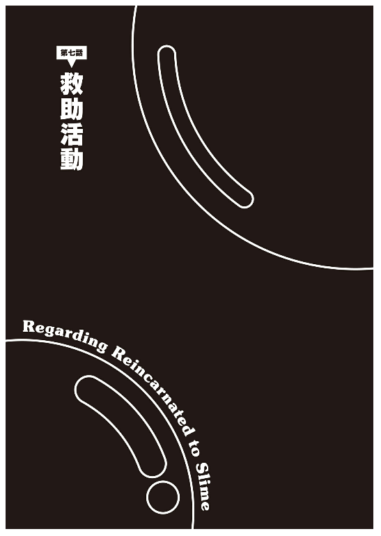刺身だけでなく他の魚料理も満喫し、温泉に浸かってゆったりと英気を養い、ふかふかの寝床で身体を休めて、俺達は再びマルクシュア王国へと戻って来た。
Không chỉ Sashimi mà còn thưởng thức thỏa thích các món cá khác, ngâm mình trong suối nước nóng để thong thả dưỡng sức, và nghỉ ngơi trên chiếc giường êm ái, chúng tôi đã quay trở lại Vương quốc Marcushua.
今日は新月の夜。
Hôm nay là đêm trăng non.
あと数時間で、魔塔へ入場出来るはずだ。
Chắc còn vài giờ nữa là có thể tiến vào Ma Tháp.
それにしても――
Dẫu vậy thì――
「なんかさ、これって魔力を吸収し過ぎじゃないか？」
"Này nhé, cái này chẳng phải đang hấp thụ quá nhiều ma lực sao?"
「そうね……正直、私達なら問題ないけど、普通の魔法使いレベルじゃ意識を保てないでしょうね」
"Đúng thế... thật lòng mà nói, với chúng ta thì không vấn đề gì, nhưng ở cấp độ ma pháp sư thông thường thì chắc không giữ nổi ý thức đâu nhỉ"
「だよね」
"Chuẩn luôn"
昨日、ここを出発した時よりも、今の方がヤバくなっていた。下手したら死人が出ても不思議ではない勢いで、『結界』が魔力を吸い上げているのである。
So với lúc rời khỏi đây hôm qua, tình hình hiện tại đã trở nên tồi tệ hơn. 『Kết Giới』 đang hút ma lực với cường độ mạnh đến mức nếu không may có người chết thì cũng chẳng lạ.
しかも、その奪い取った魔力は海に向かって流れ込んでいる。どうやら魔塔に蓄えられている様子で、穏やかではない気配が漂っていた。
Hơn nữa, lượng ma lực bị cướp lấy đó đang chảy về hướng biển. Có vẻ như nó đang được tích trữ trong Ma Tháp, và một bầu không khí không mấy yên bình đang bao trùm.
「ふむ、魔力が渦巻いておるな。なかなかのエネルギー量が集まっているようだ」
"Hừm, ma lực đang xoáy cuộn nhỉ. Có vẻ như một lượng năng lượng khá lớn đang tập trung lại đấy"
ヴェルドラまでそんな事を言い出すくらいだから、よっぽどだった。
Đến cả Verudora còn nói ra những lời như vậy, thì hẳn là tình hình nghiêm trọng lắm.
「古今東西の資料を読ませてもらいたいだけなんだけど、どうもおかしな気配だよね」
"Tôi chỉ muốn được đọc các tư liệu cổ kim đông tây thôi mà, thế nhưng bầu không khí quả thật rất kỳ lạ nhỉ"
「ええ……」
"Ừm..."
「俺達にはルミナスからもらった紹介状があるから、きっと歓迎してもらえるよね？」
"Chúng ta có thư giới thiệu nhận từ Luminous, nên chắc chắn sẽ được chào đón mà nhỉ?"
「ど、どうかしら？」
"S-Sao biết được chứ?"
いつもは決断力の塊みたいなヒナタが、言葉を濁して回答を拒否した。
Một Hinata vốn luôn là hiện thân của sự quyết đoán, lại ấp úng lảng tránh câu trả lời.
これだけでもう、イヤな予感が満ち満ちてくるというものだ。
Chỉ bấy nhiêu thôi cũng đủ khiến dự cảm chẳng lành tràn ngập rồi.
「中止して帰る？」
"Hay là hủy bỏ rồi đi về?"
「そ、そんな……我はとても楽しみにしておったのだぞ！？」
"Th-Thế thì... Ta đã rất mong chờ nó đấy biết không!?"
うーん、その気持ちは俺も一緒なんだが……。
Ưm, cảm giác đó thì tôi cũng giống anh thôi mà...
「喧嘩しに行くわけでなし、はっきりした理由もなく中止するのも癇（しゃく）に障るわね」
"Chúng ta cũng đâu phải đến đó để gây gổ, mà hủy bỏ khi không có lý do rõ ràng thì cũng khiến tôi thấy bực mình đấy nhé"
おっと、ヒナタはヴェルドラ寄りかな？
Ái chà, Hinata đứng về phía Verudora sao?
「ヒナタよ、貴様ならわかってくれると思っておったわ！」
"Hinata này, ta đã nghĩ là nếu là cô thì sẽ hiểu cho ta mà!"
ってな感じで、ヴェルドラが嬉しそうに頷いている。
Với cái kiểu đó, Verudora đang gật đầu đầy vui vẻ.
こうなると、俺が悪者になりかねない。
Cứ thế này thì khéo tôi lại trở thành kẻ xấu mất.
「いやいや、俺も本気で提案した訳じゃないから！」
"Không không, tôi cũng đâu có nghiêm túc đề xuất chuyện đó đâu!"
意見を翻すなど朝飯前なので、俺はアッサリ二人に迎合した。
Việc thay đổi ý kiến thì dễ như ăn kẹo, nên tôi nhanh chóng hùa theo hai người họ ngay.
そうなると、あと数時間ほど時間を潰して時を待つばかり。
Thế thì, chỉ còn việc giết thời gian khoảng vài tiếng nữa để chờ đến lúc đó thôi.
今日も珍しい料理を探そうと思っていたが、それは無理そうだ。
Tôi đã định hôm nay cũng sẽ đi tìm những món ăn lạ, nhưng có vẻ không được rồi.
さてさて、何をするべきやら――と、軽く思案していたら、俺達目指して駆けて来る者に気付いた。
Chà chà, nên làm gì đây nhỉ ―― đang suy nghĩ bâng quơ như thế, thì tôi nhận ra có kẻ đang lao về phía chúng tôi.
「ん？」
"Hửm?"
「冒険者ギルドにいた者達だな」
"Là đám người ở Công hội Mạo hiểm giả đấy nhỉ"
「ああ。サイラス王子だっけ？ もう一人は――」
"A. Là Hoàng tử Silas thì phải? Còn người kia là――"
俺が名前を思い出そうとしていると、ヴェルドラが答えた。
Khi tôi đang cố nhớ ra tên, thì Verudora trả lời.
「ヒナタがボコボコにしたヤツだな」
"Cái gã bị Hinata đánh cho bầm dập đấy mà"
間違ってはいない。
Không sai chút nào.
「ちょっと、その言い方は止（や）めてもらえる？」
"Này, có thể thôi cái kiểu nói đó đi được không?"
ヒナタは不満そうだが、事実だ。
Hinata có vẻ bất mãn, nhưng đó là sự thật.
ギロリと睨まれたので、俺はとばっちりを受ける前に頷くのを止めたのだった。
Bị cô ấy lườm cháy mắt, nên tôi đã dừng việc gật đầu lại trước khi bị vạ lây.
そうしている内に、サイラスともう一人――剣士グレイブがやって来た。
Trong lúc đó, Silas và một người nữa ―― Kiếm sĩ Grave đã đi tới.
どうやら俺達に用事があったらしい。
Có vẻ như họ có việc cần tìm chúng tôi.
また何かイチャモンかな――と思ったのだが、違った。二人は俺達の前で膝 を屈して、お願いがあると話し出したのだ。
Tôi cứ tưởng lại là tới gây sự vô cớ hay gì đó nữa chứ ―― nhưng không phải. Hai người họ quỳ xuống trước mặt chúng tôi và bắt đầu nói rằng họ có một thỉnh cầu.
「お願い？」
"Cầu xin?"
面倒事はお断りなんだけどと言い出せる空気感じゃなかったので、話を聞く事にする。
Dù muốn từ chối mấy chuyện phiền phức nhưng bầu không khí không cho phép nói ra điều đó, nên tôi quyết định lắng nghe câu chuyện.
サイラスの願いは実にシンプルだった。
Mong muốn của Silas thực sự rất đơn giản.
民が魔力欠乏症になって混乱状態であるという、賢人都市の現状を訴えた後で、魔塔から解放して欲しいと言い出したのである。
Sau khi giãi bày về hiện trạng của Hiền Nhân Đô rằng người dân đang mắc chứng thiếu hụt ma lực và rơi vào tình trạng hỗn loạn, hắn đã mở lời muốn chúng tôi giải phóng họ khỏi Ma Tháp.
大問題であった。
Đó là một vấn đề lớn.
遊びに来ただけなのに、どうしてそんな国家的規模の案件に巻き込まれねばならぬのか……。
Chỉ đến đây chơi thôi mà, tại sao lại phải dính vào vụ việc quy mô quốc gia thế này chứ...
「どうする？」
"Làm sao đây?"
「どうする――って、言われても、ねえ？」
"Hỏi làm sao đây ―― thì ta biết trả lời thế nào chứ?"
ヒナタも言葉に詰まっているが、そりゃそうだよな、と俺は思った。
Hinata cũng không nói nên lời, mà tôi nghĩ thế cũng phải thôi.
「助けてやらんのか？」
"Không giúp bọn họ sao?"
「いやいや、まったく関係のない他国の問題に、国家元首である俺が首を突っ込めないだろうが！」
"Không không, ta là nguyên thủ quốc gia, làm sao có thể chõ mũi vào vấn đề của nước khác chẳng hề liên quan gì đến mình được chứ!"
どっちの言い分が正しいのかとか、正義はどちらにあるのかとか、まるで情報が足りていない訳だし。一方の言い分だけを聞いて介入するなど、そんな迂闊な真似は避けなければならないのだ。
Lời khai của bên nào đúng, hay công lý thuộc về phe nào, thông tin hoàn toàn không đủ. Ta phải tránh những hành động bất cẩn như việc can thiệp chỉ vì nghe lời từ một phía.
ってな訳で、さっさと帰るのが正解だろう。
Vì lẽ đó, nhanh chóng quay về mới là đáp án chính xác.
そう思ってそれを口しかけたのだが、サイラスは引き下がらなかった。
Nghĩ vậy, ta định nói ra điều đó, nhưng Silas không chịu lùi bước.
「わかってます。俺達が都合のいい事を言ってるってのは！ ですが、どうか聞き入れていただきたい。子供達にも被害が出ているんですよ！！」
"Tôi hiểu chứ. Rằng chúng tôi đang nói những lời chỉ có lợi cho bản thân! Nhưng mà, xin hãy lắng nghe cho. Ngay cả bọn trẻ cũng đang bị ảnh hưởng rồi đấy ạ!!"
ぐぬぬ……それを聞かされた以上、無視して帰るという選択肢がなくなってしまった。
Hừm... một khi đã nghe điều đó rồi, thì lựa chọn phớt lờ bỏ về đã không còn nữa.
仕方ない。
Đành chịu thôi.
「わかった。先ずは、被害者救助が先決だな」
"Hiểu rồi. Trước tiên, việc cấp bách là cứu trợ nạn nhân."
「そうね。手助けが必要でしょうから、教会からも人を派遣させるわ」
"Phải đấy. Chắc sẽ cần nhân lực hỗ trợ, nên tôi cũng sẽ cho điều động người từ Giáo hội đến giúp."
「うむ！ それでこそ我が盟友。そして盟友が認めたヒナタよな！」
"Umu! Có thế mới là minh hữu của ta chứ. Và cả Hinata người được minh hữu công nhận nữa!"
俺とヒナタは頷き合い、ヴェルドラも嬉しそうに笑ったのだった。
Tôi và Hinata gật đầu với nhau, và Verudora cũng cười đầy vẻ vui sướng.
＊
＊
それからは大忙しだった。
Sau đó là một khoảng thời gian vô cùng bận rộn.
この『結界』から出られなくなっているので救助を呼べない――と言ったサイラスの前で、俺は『空間支配』を使ってソウエイ達に来てもらったのだ。
Trước mặt một Silas vừa nói rằng không thể gọi cứu viện vì không thể thoát ra khỏi 『Kết Giới』 này, tôi đã sử dụng 『Chi Phối Không Gian 』 để gọi nhóm Souei đến.
サイラス達が目を点にしていたが、知ったこっちゃない。俺は遠慮せず、やるべき事をやるのみである。
Nhóm Silas mắt tròn mắt dẹt kinh ngạc, nhưng tôi mặc kệ. Tôi chẳng cần khách sáo, chỉ làm những việc cần phải làm thôi.
ヒナタはヒナタで、ソウエイの部下を呼び止めて自分の手駒のように指示を出している。どうやら、教会への伝言を頼んだようだ。
Hinata thì đúng là Hinata, cô ấy gọi đám thuộc hạ của Souei lại và ra chỉ thị cứ như thể họ là tay chân của mình vậy. Có vẻ là cô ấy nhờ chuyển lời đến Giáo hội.
まあいいんだけど、なんか間違ってる気がするね。
Mà cũng được thôi, nhưng tôi cứ cảm thấy có gì đó sai sai nhỉ.
それはともかく、ソウエイ達が手分けして重篤者を探し出してくれているの で、俺は収容場所を用意しておく事にした。
Tạm gác chuyện đó lại, vì Souei và mọi người đang chia nhau đi tìm những người bệnh nặng, nên tôi quyết định chuẩn bị sẵn nơi để tiếp nhận họ.
最適なのは、城のダンスホール跡地だ。
Nơi thích hợp nhất chính là tàn tích sảnh khiêu vũ của tòa thành.
人を寝かせやすいように『暴食之王（ベルゼビュート）』で更地にして、毛布なども運ばせた。
Để mọi người dễ nằm nghỉ ngơi, ta đã dùng 『Bạo Thực Vương (Beelzebuth)』 san phẳng đất đai, rồi cho vận chuyển chăn mền tới.
屋根はないのだが、雨が降ってきたらヴェルドラに雨雲を吹き飛ばしてもらうつもりだったので問題ないのだ。
Tuy không có mái che, nhưng nếu trời mưa thì ta định nhờ Verudora thổi bay đám mây mưa đi, nên không thành vấn đề.
後は、運ばれて来た者達の診察（しんさつ）を行（おこな）った。
Sau đó, ta tiến hành khám bệnh cho những người được đưa đến.
《告。魔力欠乏症で間違いありません》
《Thông báo. Không nghi ngờ gì nữa, đó là chứng thiếu hụt ma lực》
思い込みは危険なので念の為の診察だったが、想定通りの結果だった。
Suy đoán chủ quan rất nguy hiểm nên ta khám để chắc chắn thôi, nhưng kết quả đúng như dự tính.
だったら、用意してもらったモノで何とかなるはずだ。
Nếu vậy, thì chắc sẽ xoay sở được bằng những thứ đã nhờ chuẩn bị.
「シュナ、頼む」
"Shuna, nhờ cô nhé"
「はい。承知しました」
"Vâng. Em hiểu rồi ạ"
シュナがニッコリ微笑んで、素早く動き始めてくれた。
Shuna mỉm cười tươi tắn, rồi bắt đầu nhanh chóng hành động.
サイラスから魔力欠乏症と聞いて、その対策を検討した。そして導き出された智慧之王（ラファエル）さんの回答が、お手軽に実行出来る食事療法だったのだ。
Nghe Silas nói là chứng thiếu hụt ma lực, tôi đã xem xét đối sách. Và câu trả lời được Trí Tuệ Vương Raphael-san đưa ra là một liệu pháp ăn uống có thể thực hiện dễ dàng.
という事で、シュナを筆頭とした魔国連邦（テンペスト）の料理人達（シオンを除く）を総動員させて、大急ぎで料理を作ってもらったのだった。
Chính vì thế, tôi đã tổng động viên các đầu bếp của Ma Quốc Liên Bang (Tempest) đứng đầu là Shuna (trừ Shion ra), và nhờ họ làm món ăn thật khẩn trương.
その料理は実にお手軽な品。
Món ăn đó thực ra là một món rất đơn giản.
我が国特産〝魔黒米（まこくまい）〟を材料とした、牛鹿（ウジカ）のミルク煮だ。
Đó là món hầm sữa Ngưu Lộc (Ujika) với nguyên liệu là đặc sản nước tôi 〝Ma Hắc Mễ〟.
個人的には牛乳とお米の相性は最悪だと思っているのだが、これはまったくの別料理だった。むしろ、こういうデザートと言われたら納得するレベルである。アピトの蜂蜜も混ぜているので、栄養価も満点。栄養補給もバッチリであった。
Cá nhân tôi thì nghĩ sự kết hợp giữa sữa bò và gạo là tồi tệ nhất, nhưng món này lại hoàn toàn khác. Nói đúng hơn, nếu bảo đây là một món tráng miệng kiểu này thì tôi cũng hoàn toàn bị thuyết phục. Vì có trộn cả mật ong của Apito vào nên giá trị dinh dưỡng đạt điểm mười. Việc bổ sung dinh dưỡng cũng hoàn hảo.
野外病院と化したダンスホール跡地だったが、あっと言う間に炊き出しの現場に早変わりだ。何しろ、治療ではなく食事だけで回復するのだから、大袈裟な呼び名も似つかわしくないほどだった。
Tàn tích sảnh khiêu vũ vốn đã hóa thành bệnh viện dã chiến, nhưng trong nháy mắt đã biến đổi thành hiện trường phát chẩn. Dù sao thì, chỉ cần ăn thôi là hồi phục chứ không cần chữa trị gì, nên cái tên gọi to tát kia cũng chẳng còn phù hợp nữa.
そんな中、俺は給仕を取り仕切っていた。
Trong lúc đó, tôi đang chỉ huy việc phục vụ thức ăn.
全体を俯瞰（ふかん）して、余剰人員を必要なところに配置させるように指示を出していく。
Tôi bao quát toàn cục, rồi đưa ra chỉ thị bố trí nhân lực dư thừa vào những nơi cần thiết.
転生前の現場作業で鍛えられた経験を活かして、監督に徹する役割だね。
Tận dụng kinh nghiệm được tôi luyện qua công việc thực địa trước khi chuyển sinh, tôi đóng vai trò chuyên tâm vào việc giám sát.
ヴェルドラが率先して俺の指示に従って動いてくれているので、マルクシュア王国側からの反発も出ない。動ける兵士達は文句を言わず、当たり前のように俺の指揮下に入ってくれていた。
Vì Verudora đã xung phong tuân theo chỉ thị của tôi và hành động, nên phía Vương quốc Marcushua cũng không có phản ứng chống đối nào. Những binh lính còn cử động được không hề than vãn, hiển nhiên chấp nhận đặt mình dưới sự chỉ huy của tôi.
兵士の役割は、順番を守らせる事だ。
Vai trò của binh lính là giữ gìn trật tự hàng lối.
魔力に余裕のある貴族が自分を先にしろと騒ぐので、黙らせるのが大変だったのだ。
Mấy tên quý tộc vẫn còn dư dả ma lực cứ la lối đòi được ưu tiên trước, nên việc bắt chúng im miệng vất vả lắm.
普通ならヴェルドラが睨むだけで大人しくなるのだが、命にかかわると不安に思っているヤツ等は冷静な判断力を失っていた。
Bình thường thì chỉ cần Verudora lườm một cái là chúng ngoan ngoãn ngay, nhưng những kẻ đang lo sợ ảnh hưởng đến tính mạng thì đã mất đi khả năng phán đoán bình tĩnh rồi.
この急を要する状況で説得など試みる余裕はなかったので、心苦しくも実力行使をさせてもらった次第である。
Trong tình huống cấp bách này không có dư dả thời gian để thử thuyết phục, nên dù áy náy nhưng tôi đành phải dùng đến vũ lực.
まあ、俺達が直接手出しすると大問題になっただろうから、この国の兵士達が協力してくれて大助かりだったのだ。
Mà, nếu chúng tôi trực tiếp ra tay thì chắc sẽ thành vấn đề lớn, nên việc binh lính nước này chịu hợp tác đã giúp ích rất nhiều.
ってな訳で、実に効率良く対処が行われていった。作業開始から二時間も経過した頃には、俺は見守るだけで仕事がなくなったほどである。
Thế nên là, công tác xử lý đã được tiến hành thực sự hiệu quả. Khoảng hai giờ sau khi bắt đầu công việc, tôi thậm chí chẳng còn việc gì để làm ngoài việc đứng quan sát.
そんな俺の目に飛び込んできたのが、一瞬目を疑うような信じ難い光景だった。
Đập vào mắt tôi lúc đó, là một cảnh tượng khó tin đến mức khiến tôi phải dụi mắt nghi ngờ trong thoáng chốc.
ヒナタが大鍋を混ぜていたのだ。
Hinata đang đứng khuấy một cái nồi lớn.
脳裏に過（よぎ）るのは、シオンの姿だ。
Hình bóng của Shion lướt qua trong tâm trí tôi.
「ちょ、ちょっとヒナタさん？ 料理して大丈夫なんですか？」
"Kho-Khoan đã Hinata-san? Cô nấu ăn có ổn không đấy?"
「何よ、文句でもあるわけ？」
"Cái gì, cậu có ý kiến gì sao?"
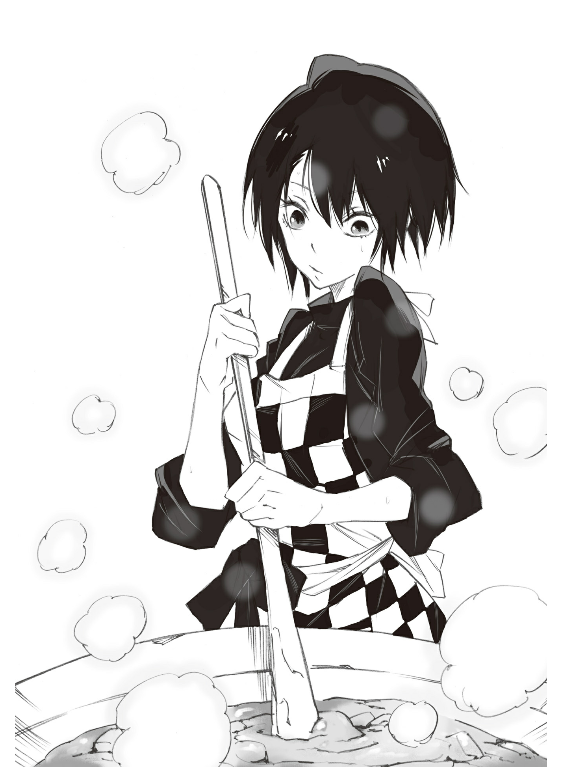「いや、文句と言いますか……」
"Không, nói là ý kiến thì cũng không hẳn..."
料理出来るの？ とストレートに聞いたら失礼だし、ヒナタの機嫌を損ねる事間違いなしだ。
Nếu hỏi thẳng tuột là "Cô biết nấu ăn không?" thì thất lễ quá, và chắc chắn sẽ làm Hinata mất hứng cho mà xem.
そもそも俺は料理なんて出来ないので、人の事をとかく言えないんだよね……。
Vốn dĩ tôi cũng đâu có biết nấu nướng gì, nên cũng chẳng có tư cách đâu mà đi nói người khác...
そんなふうに悩んでしまい、思わず言い淀（よど）んでしまう。
Mải băn khoăn như thế, nên tôi buột miệng ấp úng.
そんな俺に、ヒナタのジトッとした視線が突き刺さった。
Ánh nhìn lạnh tanh của Hinata găm thẳng vào một kẻ như tôi.
「あのね、私だって料理くらい出来るわよ。お母さんの台所仕事を手伝っていたし、こっちに来てからもシズ先生に仕込まれたもの」
"Này nhé, cỡ như tôi cũng biết nấu ăn đấy. Tôi từng giúp mẹ việc bếp núc, và sau khi sang bên này cũng được Shizu-sensei chỉ dạy cho mà"
と、大きく溜息（ためいき）を吐くようにして告げられた。
Cô ấy nói như thể vừa buông một tiếng thở dài thườn thượt.
そして、ホラッと御椀を差し出されたので、思わず受け取る。
Rồi, cô ấy chìa cái bát ra bảo "Này", khiến tôi bất giác đưa tay nhận lấy.
ヒナタ作のミルク煮だ。
Là món hầm sữa do chính tay Hinata làm.
元気な俺には必要ないのだが……。
Với một kẻ khỏe mạnh như tôi thì đâu có cần thiết, nhưng mà...
というか、ヒナタの手料理なんて初めて食べる。
Nói đúng hơn, đây là lần đầu tiên tôi được ăn món do chính tay Hinata nấu.
ここで断る勇気など持ち合わせているはずもなく、口にするしかない状況だった。
Tôi làm gì có đủ dũng khí để từ chối ở đây chứ, thế nên tình thế bắt buộc là tôi chỉ còn cách đưa nó vào miệng mà thôi.
ええい、ままよ！ と、俺は木匙で掬（すく）って口に運んだ。
Eei, tới đâu thì tới! Nghĩ vậy, tôi dùng muỗng gỗ múc lên và đưa vào miệng.
「おや？」
"Ồ?"
意外と美味しかった。
Ngon bất ngờ luôn.
「失礼ね！ 料理出来るって言ったでしょ」
"Thất lễ quá đấy! Tôi đã bảo là tôi biết nấu ăn rồi mà"
「いやあ、ハハハ。信じていましたとも！」
"Ây da, hahaha. Tôi tin cô mà lị!"
俺は調子良く、ヒナタにそう誤魔化したのだった。
Tôi lấp liếm cho qua chuyện với Hinata một cách trơn tru như thế.
＊
＊
魔力欠乏症は、魔力が回復すると快癒する。
Chứng thiếu hụt ma lực sẽ khỏi hoàn toàn khi ma lực được hồi phục.
子供や老人といった重篤患者からスタートしたが、あっと言う間に元気になっていったので驚きだ。
Chúng tôi bắt đầu từ những bệnh nhân nặng như trẻ em và người già, nhưng thật đáng ngạc nhiên là họ đã trở nên khỏe mạnh lại chỉ trong nháy mắt.
人数が多くなかったのも幸いだった。
Cũng may là số lượng người không quá đông.
この賢人都市は選ばれし者のみが暮らせる場所なので、一万名に満たない人口だったのだ。
Hiền Nhân Đô này là nơi chỉ những kẻ được chọn mới có thể sinh sống, nên dân số chưa đến một vạn người.
王侯貴族、魔法使い、その家族達が主要層な感じ。
Cảm giác tầng lớp chủ chốt là vương hầu quý tộc, ma pháp sư và gia đình của họ.
魔力が少ないながらも特別に居住を許可されていた、上級商人や漁師達の方が危険な状態だった。そうした者達もここで暮らす内に魔力が多少なりとも高まっていたらしく、死者が出なかったのが幸いである。
Những thương nhân cao cấp hay ngư dân, những người dù ma lực ít ỏi nhưng được đặc cách cho phép cư trú, lại rơi vào tình trạng nguy hiểm hơn. Có vẻ như những người đó trong quá trình sống ở đây ma lực cũng đã tăng lên ít nhiều, thật may mắn là đã không có ai tử vong.
救助活動を開始してから、およそ三時間。たったそれだけの時間で、大多数の住民が回復したのだった。
Kể từ khi bắt đầu hoạt động cứu trợ, khoảng ba giờ đồng hồ đã trôi qua. Chỉ trong ngần ấy thời gian, đại đa số cư dân đã hồi phục.
と言っても、問題が解決した訳ではない。
Dẫu nói vậy, không có nghĩa là vấn đề đã được giải quyết.
「飽きると思うけど、明日の朝飯もミルク粥ね」
"Tôi nghĩ mọi người sẽ thấy ngán, nhưng bữa sáng mai cũng là cháo sữa nhé"
ミルク粥と適当に略したが、牛鹿（ウジカ）のミルク煮だ。誰も知らない料理なんて、適当な名付けで問題ないのである。
Tôi gọi tắt đại là cháo sữa, nhưng thực ra là món hầm sữa Ngưu Lộc (Ujika). Với món ăn chẳng ai biết, thì đặt tên đại khái cũng chẳng sao cả.
そして、料理にも名前にも文句が出る事はなく、大半の人達からは感謝され た。いや、一部の貴族は不満そうだったが、そんなヤツもいるだろうと思っていたので無視である。
Thế là, chẳng có ai phàn nàn về món ăn hay cái tên món, phần lớn mọi người đều bày tỏ sự cảm kích. Ừ thì, một vài tên quý tộc trông có vẻ không hài lòng, nhưng tôi cũng đoán trước kiểu người đó thế nào cũng có, nên cứ phớt lờ.
子供じゃないんだから、順番くらい守れって話なのだ。
Đâu còn là trẻ con nữa, nên việc tuân thủ thứ tự là chuyện đương nhiên thôi.
ともかく、皆が無事でひと安心だった。
Dù sao đi nữa, mọi người đều bình an vô sự là tôi yên tâm rồi.
「そろそろ時間になるし、後は任せて、俺達は魔塔に向かおうかな？」
"Cũng sắp đến giờ rồi, phần còn lại giao cho mọi người, chắc chúng ta nên đi đến Ma Tháp thôi nhỉ?"
俺がそう言うと、ソウエイがいきなり登場して跪（ひざまず）いた。
Tôi vừa nói vậy thì Souei thình lình xuất hiện và quỳ gối xuống.
「こちらはお任せ下さい」
"Chỗ này xin hãy giao cho thần."
それを受けてシュナも言う。
Tiếp lời đó, Shuna cũng nói.
「そうですね。私もおりますし、リムル様は御自由になさって下さいませ」
"Phải đấy ạ. Cũng có em ở đây rồi, Rimuru-sama hãy cứ tùy ý hành động đi ạ."
実に頼もしい言葉だった。
Quả là những lời nói thực sự đáng tin cậy.
ぶっちゃけ、新月の夜しか魔塔に行けないのが辛い。今晩を逃すと、次の機会は当分先になってしまうのだ。
Nói toạc ra thì, cái việc chỉ có thể vào Ma Tháp vào đêm trăng non thật là phiền phức. Nếu bỏ lỡ đêm nay, thì cơ hội tiếp theo sẽ còn lâu mới đến.
様子を見る必要もなさそうだし、後はお任せで大丈夫だろう。
Có vẻ cũng chẳng cần phải quan sát tình hình thêm nữa, phần việc còn lại giao phó cho họ chắc sẽ ổn cả thôi.
「それじゃあ、行きましょうか」
"Vậy thì, chúng ta đi thôi nhỉ"
ヒナタがそう言いながら、エプロンを外した。
Hinata vừa nói vậy, vừa cởi chiếc tạp dề ra.
エプロンである。
Là tạp dề đấy.
一瞬とはいえ、我が目を疑ったのは秘密にしておこう。
Chuyện tôi đã nghi ngờ đôi mắt của mình dù chỉ trong thoáng chốc, hãy cứ giữ bí mật nhé.
「クックック。ようやくか。長く待ったぞ、この時を！」
"Kukkukku. Cuối cùng cũng đến lúc rồi sao. Ta đã chờ đợi khoảnh khắc này lâu lắm rồi đấy!"
いや、そこまで待ってないよ？
Không, đâu có chờ lâu đến mức đó đâu?
一時帰国して醤油で食べた刺身とか美味かったし、満喫した時間を楽しんでいたと思うね。
Về nước tạm thời rồi ăn Sashimi chấm nước tương ngon lành các kiểu mà, ta nghĩ là cậu đã tận hưởng thời gian thỏa thích rồi chứ.
異論がないようだし、それでは出発――と思ったのだが、俺達を呼び止める者が現れた。
Có vẻ không ai có ý kiến gì, vậy thì xuất phát―― tôi vừa nghĩ thế, thì có kẻ xuất hiện gọi giật chúng tôi lại.
「お、お待ち下され！！」
"Xin, xin hãy chờ đã!!"
その声は、ブラガ伯爵だった。
Giọng nói đó là của Bá tước Braga.
もう一人、王様の隣にいた人物もいる。
Còn một người nữa, là nhân vật đã đứng bên cạnh Nhà vua.
《告。宰相です》
《Thông báo. Là Tể tướng》
そう、それ。
Phải, chính là ông ta.
名乗られていないので、智慧之王（ラファエル）さんでさえ名前を知らない宰相もいた。
Vì chưa xưng danh, nên có cả ông Tể tướng mà đến ngay cả Trí Tuệ Vương Raphael-san cũng không biết tên.
何事かなと様子を窺（うかが）っていると、是非とも付いて来て欲しいと言われた。
Trong lúc tôi đang xem xét tình hình xem có chuyện gì, thì được bảo là nhất định hãy đi cùng với họ.
勿論、強制ではなく任意だそうだが、断れないのが俺の小市民たる日本人らしさだろう。
Đương nhiên, nghe bảo là tự nguyện chứ không ép buộc, nhưng cái tính không thể từ chối đó chắc là bản sắc người Nhật tiểu tư sản trong tôi rồi.
「呆れるほど無茶な事を平然とするくせに、こういう時は過剰なほどに常識人なのね」
"Cậu thản nhiên làm những chuyện vô lý đến mức ngán ngẩm, thế mà những lúc thế này lại hành xử theo lẽ thường một cách thái quá nhỉ"
嫌味の切れ味が鋭いが、ヒナタからは言われたくないね。
Lời mỉa mai sắc bén thật đấy, nhưng tôi không muốn nghe điều đó từ Hinata đâu.
「ヒナタさんがそれを言いますか？」
"Hinata-san mà lại đi nói câu đó sao?"
「言うわよ」
"Nói chứ sao không"
軽く睨み合う俺達だったが、「クァハハハハ！ 貴様達は相変わらず仲が良いな！！」とヴェルドラから突っ込まれて、すんなり冷静になったのだった。
Chúng tôi lườm nhau nhẹ một cái, nhưng bị Verudora xen vào: "Kwahahahaha! Các ngươi vẫn thân thiết như mọi khi nhỉ!!", thế là cả hai liền bình tĩnh lại ngay.
●
その少し前、マルクシュア王国の国王は、王城の窓から見下ろせるダンスホール跡地に目を向けて、自分の凝り固まった王族意識が壊れていく音を聞いた。
Một chút trước đó, Quốc vương của Vương quốc Marcushua hướng mắt về phía tàn tích sảnh khiêu vũ có thể nhìn xuống từ cửa sổ hoàng thành, và nghe thấy âm thanh ý thức hoàng tộc cứng nhắc của mình đang vỡ vụn.
「魔王が自ら、民の手当を手伝っておるぞ」
“Ma Vương đang đích thân giúp đỡ cứu chữa cho người dân kìa.”
「父上……」
“Thưa phụ vương…”
ヘリオスも父同様、その光景に目を奪われている。
Helios cũng giống như cha mình, hoàn toàn bị cảnh tượng đó thu hút.
魔王リムルが行っている行為は、高貴なる者達の、国家を代表する者として、決して行ってはならないと定められている姿であった。
Hành động mà Ma Vương Rimuru đang thực hiện là dáng vẻ mà những kẻ cao quý, những người đại diện cho quốc gia được quy định là tuyệt đối không được phép làm.
「下賤な魔物の出だから、恥ずかしくないのでしょう？」
“Xuất thân từ loài ma vật thấp hèn, nên chắc hắn không thấy xấu hổ chăng?”
その場の沈黙に耐えられず、宰相が思わず口を挟んだ。
Không chịu nổi sự im lặng tại nơi đó, Tể tướng bất giác xen vào.
それに応えたのは、国王だ。
Người đáp lại lời đó, là Quốc vương.
「――いや、違うであろうな」
“――Không, có lẽ không phải vậy đâu.”
普通ならば舐められる行為だ。
Nếu là bình thường, đây là hành động sẽ bị coi thường.
国王の品位が貶められたら、国家そのものが軽く見られてしまう。だからこそ、王族は頭を下げてはならないと教育されるし、下々の仕事を手伝うなど決して許されなかった。
Nếu phẩm giá của Quốc vương bị hạ thấp, thì chính quốc gia đó cũng sẽ bị xem nhẹ. Chính vì vậy, hoàng tộc được giáo dục là không được cúi đầu, và việc giúp đỡ công việc của kẻ dưới là điều tuyệt đối không được phép.
つまり国王や貴族達にとっては、魔王リムルの行動は理解し難いものだったのだ。
Tóm lại, đối với Quốc vương và các quý tộc, hành động của Ma Vương Rimuru là điều khó mà hiểu nổi.
だがしかし、と国王は考えた。
Tuy nhiên, Quốc vương lại suy nghĩ.
（誰があの者を下に見れるのか……）
(Ai có thể coi thường kẻ đó chứ…)
個人で絶対的な武力を有している魔王が、〝暴風竜〟まで意のままにしているのだ。
Một Ma Vương sở hữu vũ lực tuyệt đối với tư cách cá nhân, lại còn điều khiển được cả 〝Bạo Phong Long〟 theo ý muốn.
その力関係は不明だが、ヴェルドラが魔王リムルの言葉に耳を貸しているのは間違いなかった。でなければ、この国はとっくに灰燼（かいじん）と帰していただろう。
Tuy không rõ mối quan hệ quyền lực giữa họ ra sao, nhưng chắc chắn Verudora có lắng nghe lời của Ma Vương Rimuru. Nếu không thì đất nước này đã sớm biến thành tro bụi rồi.
魔王を下に見るどころの話ではないなと、冷静に考えれば思い至るというものである。
Chứ đừng nói đến chuyện coi thường Ma Vương, nếu bình tĩnh suy nghĩ lại thì sẽ nhận ra điều đó thôi.
だから、国王は自分の考えを述べるのだ。
Chính vì vậy, Quốc vương đã nói ra suy nghĩ của mình.
「歯牙にかけておらぬのだ。我等からどう思われようが、魔王リムルにとっては痛くも痒くもないのであろうさ」
“Hắn chẳng bận tâm đâu. Dù chúng ta có nghĩ gì đi nữa, thì đối với Ma Vương Rimuru cũng chẳng đau chẳng ngứa gì sất.”
「「……」」
「「……」」
誰もがその言葉に納得した。
Ai nấy đều thấu hiểu lời nói đó.
魔王や〝暴風竜〟は、自分達の常識で測れる相手ではなかったのだ、と。
Rằng Ma Vương hay 〝Bạo Phong Long〟 không phải là những đối tượng có thể đo lường bằng thường thức của họ.
「……では、陛下はこの後、どうなさるおつもりでしょうか？」
“……Vậy thì, Bệ hạ dự định sẽ làm gì sau việc này ạ?”
宰相が重々しく問いかけた。
Tể tướng trầm giọng hỏi.
このまま魔塔の支配に甘んじるか、新たな関係を模索するのか。
Cam chịu sự cai trị của Ma Tháp như hiện tại, hay tìm kiếm một mối quan hệ mới.
それは、国家を揺るがす決断となるだろう。
Đó sẽ là một quyết định làm rung chuyển cả quốc gia.
そう簡単に答えの出る問題ではないと思われたが、国王は既に決断している様であった。
Tưởng chừng đó không phải là vấn đề có thể dễ dàng đưa ra câu trả lời, nhưng Quốc vương dường như đã có quyết định rồi.
その場にいる者達には、国王の答えがわかる気がしたのだ。
Những người có mặt tại đó cảm thấy như họ đã hiểu được câu trả lời của Quốc vương.
宰相とブラガ伯爵に案内されたのは、王様が待つ応接室だった。
Nơi tôi được Tể tướng và Bá tước Braga dẫn tới là phòng tiếp khách nơi Quốc vương đang đợi.
応接室と言っても、会議が出来そうなほど広い。
Dù gọi là phòng tiếp khách, nhưng nó rộng đến mức có thể tổ chức hội nghị được.
高価な調度品も飾られているし、なかなかに威圧感のある部屋であったが、俺が動じる事はない。
Đồ nội thất đắt tiền cũng được trưng bày, một căn phòng tạo cảm giác khá uy nghiêm, nhưng tôi không hề nao núng.
こう見えて王族と会う機会も多く、場馴れしたのだ。
Trông thế này thôi chứ tôi có nhiều cơ hội gặp gỡ hoàng tộc, nên đã quen với mấy cảnh này rồi.
何事も経験だなと思う次第である。
Tôi cảm thấy đúng là vạn sự đều do kinh nghiệm mà ra.
ヴェルドラは動じるような性格じゃないし、ヒナタはヒナタで慣れたものだ。
Verudora vốn chẳng phải kiểu tính cách dễ bị dao động, còn Hinata thì là Hinata, cô ấy cũng quá quen rồi.
招待されたのだから遠慮する事はないと、俺は堂々たる態度でソファーに腰を下ろした。
Nghĩ rằng đã được mời thì chẳng việc gì phải khách sáo, tôi đường hoàng ngồi xuống ghế sofa.
そして俺の右隣には、ヒナタがお上品にスッと座る。
Và bên phải tôi, Hinata nhẹ nhàng ngồi xuống đầy thanh lịch.
左隣には、ヴェルドラがどっかりふんぞり返るように座った。
Bên trái, Verudora ngồi phịch xuống, ngả người ra sau đầy kiêu ngạo.
真ん中に座って、俺が代表かよ！？ と思ったが、自然とそうなってしまっ たのだから仕方ない。
Ủa, tôi ngồi ngay giữa thế này nghĩa là tôi thành đại diện luôn à!? — tôi có hơi muốn kêu lên như vậy, nhưng vì mọi thứ tự nhiên thành ra như thế, nên cũng đành chịu thôi.
罠に嵌ったような気分に陥ったが、ともかく代表して話を進める事にした。
Dù có cảm giác như bị mắc bẫy, nhưng dù sao tôi cũng quyết định đại diện đứng ra đàm phán.
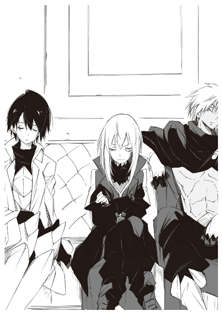「で、用件は何でしょう？」
“Vậy, các người muốn gì?”
また無礼だなと苦情が入るかと思われたが、そんな事はなかった。
Tôi cứ tưởng sẽ lại bị phàn nàn là vô lễ, nhưng chuyện đó đã không xảy ra.
逆に国王自らが、こちらが戸惑うくらいに礼儀正しく一礼して、俺の向かいに座ったのである。
Trái lại, chính Quốc vương đã hành lễ một cách lịch sự đến mức khiến tôi phải bối rối, rồi ngồi xuống đối diện tôi.
そして、頭を下げて言ったのだ。
Sau đó, ông cúi đầu và nói.
「この度の一件、御助力下さり感謝致します。また、魔王リムル様や〝暴風竜〟ヴェルドラ様、そして聖人ヒナタ殿に対する先日の無礼を、心より謝罪させて頂きたい」
“Về sự việc lần này, trẫm xin cảm tạ sự giúp đỡ của quý vị. Ngoài ra, trẫm cũng xin thành tâm tạ lỗi về sự vô lễ hôm trước đối với Ma Vương Rimuru-sama, 〝Bạo Phong Long〟 Verudora-sama, và Thánh nhân Hinata-dono.”
おっと、これはビックリ。
Ối chà, bất ngờ thật đấy.
おざなりに形だけの謝罪があるかな、くらいに考えていたのだが、ここまで心のこもった謝罪を受けられるとは思わなかった。
Tôi cứ nghĩ chắc chỉ có lời xin lỗi chiếu lệ cho có hình thức thôi, không ngờ lại nhận được lời tạ lỗi chân thành đến mức này.
面倒事は嫌いだし、相手が反省したのならそれでいい。
Tôi vốn ghét phiền phức, nếu đối phương đã hối lỗi thì thế là được rồi.
こっちは遊びに来ただけだから、国際問題にならなくて良かったと思うくらいだ。
Bên này chỉ đến chơi thôi mà, may là không thành vấn đề quốc tế.
「いやあ、お互いに誤解があったという事で、水に流しましょう。なあ？」
“Chà, coi như đôi bên đã có chút hiểu lầm, chúng ta hãy xí xóa bỏ qua chuyện cũ nhé. Được chứ?”
俺が同意を求めると、ヒナタも軽く頷いてくれた。
Khi tôi tìm kiếm sự đồng thuận, Hinata cũng khẽ gật đầu.
「そうね。西方聖教会として正式に抗議する予定だったけど、取り下げておくわ」
“Được thôi. Vốn dĩ tôi định đại diện cho Thánh Giáo Hội Phương Tây gửi kháng nghị chính thức, nhưng giờ tôi sẽ rút lại.”
怖っ！？
Đáng sợ quá vậy!?
やはりヒナタは俺と違って、こういうところで手を抜いたりしないんだな。
Quả nhiên Hinata khác hẳn tôi, cô ấy không hề lơ là hay nương tay trong những chuyện thế này.
それに比べて俺は、ガゼル王から何度も叱られているのに甘さが抜けきらないようであった。
So với cô ấy thì tôi, dù đã bị Vua Gazel mắng mỏ bao nhiêu lần, có vẻ vẫn chưa thể nào rũ bỏ hết sự ngây thơ được.
反省する俺と違って、ヴェルドラなんかはお気軽なものだ。
Trái ngược với tôi đang tự kiểm điểm, Verudora lại tỏ ra vô cùng nhẹ nhõm.
「なーに、構わんとも。水に流すという事は、我が壊した建物について追及せぬという事であろう？ であれば、文句などあろうはずはせぬよ。クアハハハハ！」
“Cái gì chứ, ta không bận tâm đâu. Xí xóa bỏ qua tức là sẽ không truy cứu chuyện ta phá hỏng mấy tòa nhà nữa đúng không? Nếu vậy thì ta làm gì có lý do nào để phàn nàn chứ. Kuahahaha!”
シレッと責任逃れするあたり、ちょっとは気にしていたんだな。
Nhìn cái cách anh ta tỉnh bơ trốn tránh trách nhiệm như thế, xem ra cũng có để tâm chút đỉnh đấy chứ.
それは成長と言っていいのか、悪知恵を身に付けたと嘆くべきなのか。
Nên gọi đó là sự trưởng thành, hay nên than thở rằng ông ấy đã học được thói khôn lỏi đây.
少し悩ましいが、俺としても責任追及されないのは大歓迎だった。
Tuy có chút phiền não, nhưng đối với tôi, việc không bị truy cứu trách nhiệm cũng là điều đáng hoan nghênh nhiệt liệt.
「では、これからはお互いに良い関係を目指すという事で、和解としましょう！」
“Vậy thì, từ giờ chúng ta sẽ cùng hướng tới một mối quan hệ tốt đẹp đôi bên, coi như là hòa giải nhé!”
俺は国王に向けて、にこやかにそう伝えた。
Tôi mỉm cười và nói như vậy với Quốc vương.
これで一件落着――と思ったのだが、話はそこで終わらなかった。
Tôi cứ tưởng thế là mọi chuyện đã êm đẹp――nhưng câu chuyện lại không kết thúc ở đó.
「お待ちを！ 実はリムル陛下に、伏してお願いがあるのです」
“Xin hãy đợi đã! Thực ra trẫm có một thỉnh cầu muốn cúi đầu nhờ cậy Bệ hạ Rimuru.”
深刻な表情で、国王がそんな事を言い出したのである。
Với vẻ mặt nghiêm trọng, Quốc vương thốt ra điều đó.
消えかけた面倒事の匂い、再び！
Cái mùi phiền toái vừa mới tan đi, nay lại quay lại rồi!
などと内心で考えていると、国王が本題だとばかりに話を切り出した。
Trong lúc tôi đang thầm nghĩ như vậy, Quốc vương bắt đầu đi thẳng vào vấn đề chính.
「何卒（なにとぞ）、我が国を貴国の傘下に加えて頂きたい！」
“Làm ơn (Nanitozo), xin hãy cho phép nước ta được gia nhập dưới trướng quý quốc!”
は？
Hả?
貴国の傘下――って、魔物の国（テンペスト）の属国になりたいって話ですかね？
Dưới trướng quý quốc――tức là muốn trở thành thuộc quốc của Ma Quốc (Tempest) ấy hả?
「いやいや、無理でしょ！？」
“Không không, chuyện đó không được đâu!?”
「そこを何とか！」
“Cầu xin ngài hãy giúp cho!”
「いやいや、国民の意思とか、議会で貴族達の総意を纏（まと）めるとか、そういう必 要そうな手続きだってありますよね？」
“Khoan khoan, còn ý chí của người dân, rồi việc quốc hội tập hợp quan điểm của đám quý tộc nữa… những thủ tục cần thiết đó vẫn phải làm chứ, đúng không?”
「あるにはある。しかし我がマルクシュア王国は、魔法使い至上主義でしてな。法典でも、国王が一番上と定められているのですよ」
“Có thì cũng có. Nhưng mà Vương quốc Marcushua chúng ta theo chủ nghĩa thượng tôn ma pháp sư. Trong luật pháp cũng quy định Quốc vương là người có quyền lực cao nhất.”
「いや、それでも――」
“Không, dẫu vậy thì――”
「まあ、お聞き下さい」
“Thôi nào, xin hãy lắng nghe đã.”
そう言って国王は、何とか俺の興味を引こうとするように、焦った様子で語ってくれた。
Nói rồi, Quốc vương vội vàng kể tiếp như thể đang cố gắng thu hút sự quan tâm của tôi bằng mọi giá.
曰く。
Rằng là.
魔塔に都合のいいように定められた法典では、国王が最上位の意思決定者であるらしい。
Theo bộ luật được soạn thảo có lợi cho Ma Tháp, thì Quốc vương dường như là người có quyền quyết định tối cao.
しかし今、異常の原因に気付いた国民の不満が魔塔に向いてしまい、今後の王政にも影響が出るのは必然。このまま手をこまねいていれば、その怒りの矛先が国王、ひいては貴族達に向けられるのも時間の問題である、と。
Thế nhưng hiện tại, sự bất mãn của người dân khi nhận ra nguyên nhân của sự bất thường đã hướng về phía Ma Tháp, và điều này tất yếu sẽ ảnh hưởng đến nền cai trị của hoàng gia trong tương lai. Nếu cứ khoanh tay đứng nhìn như thế này, thì việc mũi dùi phẫn nộ đó chĩa về phía Quốc vương, và kéo theo đó là các quý tộc, chỉ còn là vấn đề thời gian.
かと言って、自分達だけで魔塔に勝てるはずもなく……このままでは国家存 亡の危機に直面してしまう、との事だった。
“Thế nhưng nói vậy chứ bọn họ cũng không thể nào tự mình đánh bại Ma Tháp được… Nếu cứ tiếp tục như thế này, quốc gia sẽ phải đối mặt với một cuộc khủng hoảng sinh tử.”
「そんなの、評議会や西方聖教会に救援を求めるとか？」
“Chuyện đó, sao ngài không yêu cầu Hội Đồng hay Thánh Giáo Hội Phương Tây cứu viện?”
「それこそ、難しい話でしょう。我が国も評議会に加盟はしておりますが、付き合いは浅い。また、西方聖教会の王都での活動を拒否しておりましたし、今更なのです」
“Chính chuyện đó mới khó nói đấy. Nước ta tuy có gia nhập Hội Đồng, nhưng mối quan hệ không sâu sắc. Hơn nữa, chúng ta đã từ chối các hoạt động của Thánh Giáo Hội Phương Tây tại vương đô, nên giờ mới nói thì đã muộn rồi.”
チラッとヒナタの機嫌を窺うようにして、国王が説明してくれた。
Quốc vương vừa giải thích, vừa liếc nhìn dò xét thái độ của Hinata.
自業自得としか言いようがないし、今更というのはその通りだな。
Đúng là tự làm tự chịu, chẳng còn gì để nói, và bảo là đã muộn rồi thì cũng chuẩn xác.
こういう困った時に助けてもらえるように、普段から相互扶助の意識を持ち続けるべきだったのだ。
Lẽ ra phải luôn giữ ý thức tương trợ lẫn nhau từ trước, để những lúc khó khăn thế này mới được giúp đỡ chứ.
俺が、この国が傘下に入るのを認めてしまうと、必然的に魔塔と敵対する事になる。困っている人達を見捨てるのも寝覚めが悪いが、かと言って、一方の言い分だけを聞いて魔塔と敵対するのは筋が通らない話であった。
Nếu tôi chấp nhận cho đất nước này gia nhập dưới trướng, thì tất yếu sẽ trở thành kẻ thù của Ma Tháp. Bỏ mặc những người đang gặp khó khăn thì lương tâm cắn rứt, nhưng nói đi cũng phải nói lại, chỉ nghe lời từ một phía mà đối đầu với Ma Tháp thì thật chẳng hợp lý chút nào.
そんなふうに俺が躊躇（ためら）っていると、ヒナタが会話を引き継いだ。
Thấy tôi đang do dự (tamera), Hinata liền tiếp lời.
傍に控えていた執事に「ニックス司祭は王都内にいるはずだから、呼んでき て」と伝えてから、国王達に向き直って話し始めたのである。
Sau khi dặn người quản gia đang đứng hầu bên cạnh rằng: ‘Linh mục Nix hẳn đang ở trong vương đô, hãy mời anh ta đến đây,’ Hinata quay lại đối diện với nhà vua và các quan, rồi bắt đầu lên tiếng.
「私達の教義に変更があったのは御存知かしら？」
“Các vị có biết giáo lý của chúng tôi đã thay đổi không?”
「む？」
“Hửm?”
「と、申されますと？」
“Nghĩa là sao ạ?”
国王は存じていない様子で、それを察して宰相が問い返している。
Quốc vương có vẻ không biết điều đó, và đoán được ý ngài, Tể tướng đã hỏi lại.
知っているのか知っていないのかは不明だが、魔物である俺達とも付き合えるように、ルミナスが大鉈（おおなた）を振るった話は有名になっていた。
Không rõ họ có biết hay không, nhưng câu chuyện về việc Luminous đã mạnh tay cải tổ (Onata) để có thể giao hảo với những ma vật như chúng tôi đã trở nên nổi tiếng.
開国祭で散々アピールさせてもらったのだ。
Tôi đã ra sức quảng bá điều đó tại Lễ Hội Khai Quốc rồi mà.
とはいえ、情報を伝えるって本当に難しいんだよね。
Tuy nhiên, việc truyền đạt thông tin quả thực rất khó khăn.
誤解を解くとか、偏見を捨てさせるとか、新たな価値観を理解してもらうとか。人の意識は聞きたい話しか受け付けない傾向にあるので、興味を持ってもらうのは非常に大変なのだ。
Nào là giải tỏa hiểu lầm, xóa bỏ định kiến, hay giúp người khác thấu hiểu những giá trị quan mới. Ý thức của con người thường có xu hướng chỉ tiếp nhận những gì họ muốn nghe, nên để khiến họ quan tâm là điều vô cùng vất vả.
マルクシュア王国のように参加しなかった国の割合も多いので、まだ周知徹底されていないのは仕方ない話であった。
Cũng đành chịu thôi vì vẫn còn nhiều quốc gia không tham gia như Vương quốc Marcushua, nên việc thông tin chưa được phổ biến rộng rãi là điều dễ hiểu.
「知らないようだし説明させてもらうと、魔物であっても意思疎通が成立し、信用の置けると判断される相手については、共存を模索すべしと変更されたのよ。今までと違ってね」
“Có vẻ các vị không biết nên tôi xin phép giải thích. Giáo lý đã được thay đổi rằng: đối với những đối tượng có thể giao tiếp và được đánh giá là đáng tin cậy, dù là ma vật đi chăng nữa, thì chúng ta cũng nên tìm kiếm con đường cùng chung sống. Khác hẳn với trước đây nhé.”
それを説明せずとも、俺達が仲良くしている時点で理解してもらえるはずだ――と思うのだが、そういう考えが思い込みだったりする。
Tôi cứ nghĩ chẳng cần giải thích, chỉ cần nhìn thấy chúng tôi thân thiết với nhau là họ sẽ hiểu ngay chứ――nhưng có lẽ suy nghĩ đó chỉ là do tôi tự biên tự diễn thôi.
こういうのは、無駄でもいいから説明しておくべきであった。
Mấy chuyện này, thà nói thừa còn hơn bỏ sót, lẽ ra phải giải thích rõ ràng ngay từ đầu mới phải.
「つまり、私達は魔王リムルとの共存を選んだのよ。だから、貴方方が魔物の国と国交を結ぶのを止めたりしないし、私達の教義を受け入れてくれるのなら、手を差し伸べるのもやぶさかではないわ」
“Tóm lại, chúng tôi đã chọn con đường cùng chung sống với Ma Vương Rimuru. Vì vậy, chúng tôi sẽ không ngăn cản việc các vị thiết lập quan hệ ngoại giao với vương quốc ma vật, và nếu các vị chấp nhận giáo lý của chúng tôi, thì chúng tôi cũng không ngần ngại dang tay giúp đỡ đâu.”
回りくどい言い方をしてるけど、要するに『助けて欲しいと願われたら断らない』って話だった。
Cách nói chuyện tuy có phần vòng vo, nhưng tóm lại ý cô ấy là 『Nếu các vị cầu xin giúp đỡ thì chúng tôi sẽ không từ chối』.
意外と優しいのがヒナタらしいけど、見過ごせない点があった。
Tuy có vẻ dịu dàng đúng chất Hinata đấy, nhưng có một điểm tôi không thể bỏ qua được.
「でもさ、別に魔塔と敵対する必要はなくない？」
“Nhưng mà này, cũng đâu nhất thiết phải đối đầu với Ma Tháp đâu nhỉ?”
「誰も敵対しろとは言ってないでしょ。仲裁に入るって話よ」
“Có ai bảo là phải đối đầu đâu. Ý tôi là sẽ đứng ra làm trung gian hòa giải cơ mà.”
「ああ、なるほど……」
“À, ra là vậy……”
確かにそうだな。
Đúng là thế thật.
今回のように魔力の過剰徴収をしないように約定を結んでもらえるのならば、これまで通りの付き合いが可能となるのだ。
Nếu có thể khiến họ ký kết hiệp ước để không thu thập ma lực quá mức như lần này nữa, thì việc duy trì mối quan hệ giao hảo như trước đây là hoàn toàn khả thi.
マルクシュア王国の国民感情は無視出来ないだろうし、魔塔には魔塔の言い分があるだろうけど、西方聖教会が仲裁に入るのならば、両者共に聞く耳を持ってくれると思う。
Tình cảm của người dân Vương quốc Marcushua là điều không thể phớt lờ, và Ma Tháp chắc cũng có lý lẽ riêng của họ, nhưng nếu Thánh Giáo Hội Phương Tây đứng ra làm trung gian hòa giải, tôi nghĩ cả hai bên sẽ chịu lắng nghe thôi.
後は、折り合いがつくかどうかだけ。
Phần còn lại chỉ là xem liệu có đạt được thỏa thuận hay không mà thôi.
「幸いにもルミナスから紹介状をもらってるし、今から行って、話し合いの場を設けてもらうとするか」
“May mắn là tôi đã nhận được thư giới thiệu từ Luminous rồi, hay là giờ chúng ta đi luôn và nhờ họ sắp xếp một buổi thảo luận nhỉ?”
「そういう事よ」
“Chính là như vậy đấy.”
俺とヒナタは頷き合った。
Tôi và Hinata cùng gật đầu với nhau.
先ずは俺達が魔塔まで出向き、話し合う事になったのだった。
Thế là, quyết định được đưa ra: trước tiên chúng tôi sẽ đích thân đến Ma Tháp để đàm phán.
＊
*
国王達の相手は、慌ててやって来たニックス司祭にお任せした。
Tôi đã giao phó việc tiếp đãi nhóm Quốc vương cho Linh mục Nix, người vừa hớt hải chạy đến.
ヒナタが言うように、本当に王都内にやって来ていたようだ。
Quả nhiên đúng như Hinata nói, anh ta thực sự đã có mặt trong vương đô.
シュナと、その護衛としてソウエイも呼び寄せて、国王達との話し合いに参加してもらっている。
Tôi cũng gọi Shuna, và Souei làm hộ vệ cho cô ấy, để tham gia cuộc thảo luận với nhóm Quốc vương.
そして俺達三人は、魔塔へと到着していた。
Và rồi ba người chúng tôi đã đến Ma Tháp.
俺達の他には誰もいない。
Ngoài chúng tôi ra thì không có ai khác.
本来なら魔法使いが大勢いたのだろうけど、今回は不慮の事態なのだからこんなものだ。魔法抵抗で魔力を奪われなかった者もいただろうけど、危険を察知して今回は見合わせたのだろう。
Lẽ ra bình thường thì sẽ có rất nhiều pháp sư ở đây, nhưng lần này là tình huống bất ngờ nên vắng vẻ thế này đây. Chắc cũng có những kẻ nhờ kháng phép mà không bị tước đoạt ma lực, nhưng có lẽ họ cảm nhận được nguy hiểm nên lần này đã quyết định án binh bất động.
少し頭があれば、現在進行形で発生中の『結界』異常は、魔塔の仕業だとわかるもんね。すき好んでトラブルに飛び込むような愚か者など、そうそういないのも納得であった。
Chỉ cần có chút đầu óc là sẽ nhận ra ngay sự bất thường của 『Kết giới』 đang diễn ra là do Ma Tháp gây ra. Thế nên cũng dễ hiểu khi chẳng có mấy tên ngốc nào lại thích tự mình lao đầu vào rắc rối cả.
まあ、空いているのでヨシとする。
Mà thôi, chỗ đó đang trống nên chắc không sao đâu.
魔塔の天頂部分には魔法陣が描かれた円形のスペースがあり、そこに降り立った。
Trên đỉnh của Ma Tháp có một khoảng không gian hình tròn với vòng tròn ma thuật được vẽ trên đó, và chúng tôi đã hạ cánh xuống đấy.
イメージ的にはヘリポートみたいだ。
Trông nó giống như một bãi đáp trực thăng vậy.
「なんかさ、当初は新魔法の開発をするのが目的だったのに、大事（おおごと）になってきたな」
“Này nhé, ban đầu mục đích của chúng ta là phát triển ma pháp mới cơ mà, sao giờ chuyện lại thành ra to tát thế này.”
「貴方のせいでしょ」
“Tại anh chứ ai.”
「違うだろ。誰の責任かで言えば、ヴェルドラだろ」
“Nhầm rồi. Nếu phải nói trách nhiệm thuộc về ai, thì đó là Verudora mới đúng.”
「むむ？ どうして我のせいになる？」
“Hửm? Sao lại đổ cho ta?”
「お前が暴れたから、方向性がおかしくなったんじゃないか」
“Chẳng phải tại anh làm loạn nên mọi chuyện mới đi chệch hướng sao?”
「まあ、その意見は否定しないわ」
“Chà, tôi không phủ nhận ý kiến đó.”
「貴様達、仲が良過ぎるのではないか？ 我をイジメるのは駄目であろうよ」
“Hai người các ngươi thân thiết quá mức rồi đấy? Bắt nạt ta là không được đâu nha.”
誰がオッサンをイジメますかっての。
Ai thèm bắt nạt một ông chú chứ hả.
一番強いくせに何を言ってるんですかね、本当に。
Mạnh nhất hội mà nói cái gì thế không biết, thật tình.
などと、危機感のない会話を繰り広げる俺達。そのまま何の気負いもなく、魔法陣に乗って『転送（てんそう）』された。
Chúng tôi cứ thế rôm rả trò chuyện mà chẳng mảy may lo lắng gì. Rồi cứ thế, không chút áp lực, chúng tôi bước lên vòng tròn ma thuật và được 『Dịch chuyển (Tensou)』.
跳ばされたのは、大きな広間だ。
Nơi chúng tôi được dịch chuyển đến là một đại sảnh rộng lớn.
壁に沿うように螺旋階段がある。前世の建築様式から考えたら、構造力学的に無理があるんじゃないかというデザインになっていた。
Có một cầu thang xoắn ốc chạy dọc theo bức tường. Nếu xét theo phong cách kiến trúc của kiếp trước, thì thiết kế này có vẻ bất khả thi về mặt cơ học kết cấu.
どうやって階層を支えているのか、まったく不明。しかし成立しているのだから、魔法的な力場が発生しているのだろう。
Chẳng hiểu họ làm cách nào để chống đỡ các tầng lầu nữa. Nhưng vì nó vẫn đứng vững được nên chắc hẳn phải có một trường lực ma pháp nào đó đang hoạt động.
《是。空間そのものに干渉されていて、重力などの影響を受けないような構造となっています》
《Xác nhận. Không gian tại đây đang bị can thiệp, tạo nên một cấu trúc không chịu ảnh hưởng bởi trọng lực hay các yếu tố tương tự》
反則だよね、それ。
Thế thì phạm quy quá rồi còn gì.
そんな真似が出来るのなら、こっちの世界の建造物は何でもアリで創れそうだった。
Nếu làm được trò đó, thì chắc các công trình ở thế giới này muốn xây kiểu gì cũng được quá.
それこそ、天にも届く塔――バベルの塔なんかも創れそうである。
Quả thực, có vẻ như việc tạo ra một tòa tháp chạm tới trời cao――như Tháp Babel cũng là điều hoàn toàn có thể.
いや、もしかすると既にあったりするのかもね。
Không, biết đâu chừng nó đã tồn tại rồi cũng nên.
ちょっぴり浪漫を感じたけど、今は魔塔主を探すのが先決だ。
Tuy cảm thấy chút lãng mạn, nhưng hiện tại việc tìm kiếm Ma Tháp Chủ mới là ưu tiên hàng đầu.
見回してみると、ローブを着た魔法使いっぽい人物が一人、中央に立っていた。
Nhìn quanh một lượt, tôi thấy có một nhân vật trông giống pháp sư khoác áo choàng đang đứng ở trung tâm.
気配が希薄だ。良く見ると、魔法によって投影された映像だった。
Khí tức rất mờ nhạt. Nhìn kỹ lại thì đó là một hình ảnh được trình chiếu bằng ma pháp.
「よくぞ来た」
“Khá khen cho các ngươi đã đến được đây.”
そいつが喋ったが、機械音声のように感情を窺わせない声だった。
Gã đó lên tiếng, nhưng giọng nói lại vô cảm hệt như giọng máy móc vậy.
映像だからこんなものかと思っていると、突然、画像がブレるように人影が乱れて、軽い感じの青年へと切り替わった。
Đang nghĩ chắc do là hình ảnh trình chiếu nên mới thế, thì đột nhiên, bóng người nhiễu loạn như bị vỡ hình, rồi chuyển đổi thành một thanh niên có vẻ cợt nhả.
「やあ、僕の名前はアシュレイ。こんなに堂々と攻めて来るなんて、ルミナスも強気だね」
“Chào, tên ta là Ashley. Dám tấn công đường đường chính chính thế này, Luminous cũng can đảm thật đấy.”
ん？
Hửm?
何だか変な事を言い出したぞ？
Hắn vừa nói ra điều gì lạ lùng vậy?
「あんなに恨んでたヴェルドラと、一体どういう契約を結んだのかな？」
“Rốt cuộc cô ta đã ký kết khế ước kiểu gì với Verudora, kẻ mà cô ta căm hận đến thế nhỉ?”
「我？ ルミナスとは契約などしておらんぞ」
“Ta á? Ta đâu có ký khế ước gì với Luminous đâu.”
いきなり名指しされたヴェルドラも困惑している。
Verudora, người đột nhiên bị điểm mặt chỉ tên, cũng tỏ ra bối rối.
そりゃそうだ。
Thì đúng là thế mà.
俺達はただ、ここには調べ物をしにやって来ただけだし。
Chúng tôi đến đây chỉ để điều tra chút việc thôi.
「いや、何か誤解してるみたいですね。俺はリムルと言いまして、最近魔王になった者です。ここには――」
“Không, có vẻ anh hiểu lầm gì rồi. Tôi tên là Rimuru, là người vừa mới trở thành Ma Vương gần đây. Chúng tôi đến đây là để――”
「知ってるさ。喧嘩を売りに来たんだろ？ 違いますけど？」
“Biết rồi. Các người đến đây để kiếm chuyện chứ gì? Không phải sao?”
俺は平和主義だし、意味もなく喧嘩を仕掛けたりしない。どうやら、本当に誤解があるようだ。
Tôi là người theo chủ nghĩa hòa bình, chẳng đời nào lại đi gây sự vô cớ. Có vẻ như thực sự có hiểu lầm ở đây rồi.
「人の話は最後まで聞いて欲しいわね」
“Tôi muốn cậu nghe người khác nói hết câu đã nhé.”
と、ヒナタが身を乗り出した。
Hinata chồm người tới và nói.
それを君が言う？ とは思ったものの、口に出したら戦争になる。今はヒナ タをからかっていい場面ではないので、俺は黙って一歩退いた。
“Cái người nói câu đó lại là cô à…?” — tôi thoáng nghĩ vậy, nhưng nói ra thì chỉ tổ châm ngòi chiến tranh. Bây giờ không phải lúc trêu chọc Hinata, nên tôi đành im lặng lùi lại một bước.
「聖人ヒナタか。聖騎士団（クルセイダーズ）を率いて来なかったのは、それだけ腕に自信があるのかな？ もっとも、魔王と〝暴風竜〟と一緒だから、戦力としては十分なんだろうけどさ」
“Thánh nhân Hinata à. Không dẫn theo Thánh Kỵ Sĩ Đoàn (Crusaders) đến đây, chắc cô tự tin vào thực lực của mình lắm nhỉ? Mà cũng phải thôi, đi cùng Ma Vương và 〝Bạo Phong Long〟 thì sức chiến đấu là quá đủ rồi.”
朗らかな口調だが、その物言いは喧嘩腰だ。完全に敵対モードなので、取り付く島もない様子だった。
Giọng điệu thì vui vẻ đấy, nhưng lời lẽ lại đầy mùi kiếm chuyện. Hắn hoàn toàn ở trạng thái thù địch, nên có vẻ chẳng thể nào tiếp cận được.
「だから、私達がここに来たのは知りたい事があったからなの。貴方がマルクシュア王国と揉めたから仲裁を任されたけど、本来なら無関係だったわよ」
“Thế nên tôi mới nói, chúng tôi đến đây vì có việc muốn tìm hiểu. Vì các người xích mích với Vương quốc Marcushua nên tôi mới được giao phó làm trung gian hòa giải, chứ vốn dĩ chuyện này chẳng liên quan gì đến tôi cả.”
うむ、その通りだ。
Ừm, đúng là như vậy.
どうして行く先々でトラブルに巻き込まれるのか不明だが――
Chẳng hiểu sao đi đến đâu cũng bị cuốn vào rắc rối thế này――
《……》
《……》
――何か言いたい事でも？
――Cô muốn nói gì sao?
不明ではないとも言いた気だけど、時には真実から目を背けるのも必要だと思う次第であった。
Muốn nói là không rõ cũng được, nhưng tôi nghĩ đôi khi quay lưng lại với sự thật cũng là điều cần thiết.
そんなふうにヒナタの交渉を見守っていると、ヒナタが核心に触れる質問をした。
Trong khi tôi đang dõi theo cuộc đàm phán của Hinata như vậy, thì cô ấy đã đặt một câu hỏi chạm đến cốt lõi vấn đề.
「そもそも私達は、ここ、魔塔についてルミナス様から聞かされただけよ。紹介状だって書いてもらったし――」
“Vốn dĩ chúng tôi chỉ nghe về nơi này, Ma Tháp, từ Luminous-sama mà thôi. Ngài ấy còn viết cả thư giới thiệu cho nữa――”
そこまで言って、ヒナタが何かを察したように黙り込んだ。
Nói đến đó, Hinata bỗng im bặt như thể vừa nhận ra điều gì.
俺も先程から感じていた違和感の正体に気付き、ヒナタが取り出した紹介状に視線を向ける。
Tôi cũng nhận ra chân tướng của cảm giác kỳ lạ nãy giờ, và hướng ánh nhìn về bức thư giới thiệu mà Hinata vừa lấy ra.
「もしかして……」
“Chẳng lẽ là……”
このアシュレイという男の発言から察するに、ルミナスと知り合いなのは間違いなさそうだが、その間柄は敵対しているような感じだった。
Dựa vào lời nói của gã đàn ông tên Ashley này, chắc chắn hắn có quen biết với Luminous, nhưng mối quan hệ giữa họ có vẻ như là thù địch.
という事は当然、ルミナスだってアシュレイに対して友好的ではない訳 やられたわ……
Điều đó có nghĩa là, tất nhiên, Luminous cũng không hề thân thiện với Ashley… thật là rắc rối rồi…
で……ヒナタが持つ紹介状って、もしかしてもしなくても挑戦状とかの類なんじゃなかろうか……。
Thế thì... lá thư giới thiệu mà Hinata đang cầm, không chừng lại là mấy thứ kiểu như thư khiêu chiến cũng nên...
俺と同じ結論に至ったと思われるヒナタが、紹介状を開封して溜息を吐いた。
Hinata, người có vẻ cũng đã đi đến kết luận giống tôi, mở phong thư giới thiệu ra và thở dài.
見せてもらわなくても、俺の予想が的中していたのが丸わかりだった。
Chẳng cần cho tôi xem cũng đủ biết dự đoán của tôi đã trúng phóc rồi.
そんな俺達を見て、アシュレイと名乗った男が高らかに笑い出す。
Nhìn thấy chúng tôi như vậy, gã đàn ông tự xưng là Ashley cười phá lên.
「あはははは！ これは愉快だ。まさか君達は、知らずに利用されただけだったのかい？」
“Ahahahaha! Thật là sảng khoái. Không lẽ các người chỉ bị lợi dụng mà không hề hay biết thôi sao?”
ああ、やっぱり……。
A, quả nhiên là...
俺達はルミナスに嵌められたのだ。
Chúng tôi đã bị Luminous gài bẫy rồi.
ルミナスにとって目の上のたん瘤（こぶ）だった魔塔を潰すべく、いいように使われてしまったのである。
Chúng tôi đã bị lợi dụng một cách ngon lành để tiêu diệt Ma Tháp, cái gai trong mắt (tankobu) của Luminous.
「我は思うのだが、リムルにしろヒナタにしろ、頭がいいわりによく騙されておるようだな。その点、我なんて賢い上に思慮深いから、そう簡単に騙された りはせぬのだ！ クアハハハハ！！」
“Ta nghĩ là, dù là Rimuru hay Hinata, tuy thông minh nhưng lại hay bị lừa nhỉ. Còn ta, vừa khôn ngoan vừa thận trọng, nên chẳng dễ gì bị lừa đâu! Kua ha ha ha ha!!”
うるさいよ、ヴェルドラ君。
Ồn ào quá đấy, Verudora-kun à.
君の場合は騙されるというより、簡単に買収されるのが問題なのだ。
Vấn đề của anh không phải là bị lừa, mà là dễ bị mua chuộc quá mức ấy.
しかも、ケーキとかで言う事を聞くから、コスパが良すぎるのである。
Hơn nữa, chỉ cần cái bánh ngọt là sai bảo được rồi, đúng là cái giá quá hời luôn.
それに、今回はキッチリと巻き込まれているのだから、偉そうに言える筋合いではないんじゃないかな？
Với lại, lần này anh cũng bị lôi vào rắc rối ra trò rồi, nên làm gì có tư cách mà lên mặt dạy đời chứ?
そう言い返してやりたいが、それをすると負け惜しみと思われかねない。ここはグッと我慢して、この先の対応について考える事にした。
Tôi muốn vặc lại như thế lắm, nhưng làm vậy thì lại sợ bị cho là kẻ thua cuộc cay cú. Thôi đành nuốt cục tức vào trong, tập trung suy nghĩ cách đối phó tiếp theo vậy.
ヒナタをチラッと見ると、視線が合った。
Tôi liếc nhìn Hinata thì bắt gặp ánh mắt cô ấy.
『どうする？』
『Tính sao đây?』
『どうこうも、ヴェルドラにドヤ顔されたのは腹が立ったけど、言い返したら負けよね』
『Sao trăng gì nữa, bị Verudora lên mặt dạy đời cũng tức thật đấy, nhưng mà cãi lại thì coi như thua cuộc rồi.』
そっち？
Cái đó hả?
俺とまったく同じ思考回路で笑えるほどだが、今議論すべきはそれじゃない。
Suy nghĩ y hệt tôi đến mức buồn cười, nhưng đó không phải là chuyện cần tranh luận lúc này.
『それはそうなんだけど、そこじゃなくてさ。ルミナスに利用されたのは間違いない訳だが、どう対応すべきだと思う？』
『Chuyện đó thì đúng rồi, nhưng vấn đề không phải ở chỗ đó. Chắc chắn là chúng ta đã bị Luminous lợi dụng, nhưng cậu nghĩ nên đối phó thế nào?』
これが問題なのだ。
Đây mới là vấn đề.
俺としては、別に魔塔に恨みがある訳でもないし、魔塔側が人類に仇なしている訳でもない。今すぐにでもマルクシュア王国に行っている行為を止めるのなら、敵対する理由がないのだ。
Về phần tôi, tôi chẳng có thù hằn gì với Ma Tháp, mà phía Ma Tháp cũng đâu có làm hại nhân loại. Nếu họ chịu dừng ngay hành động đang làm tại Vương quốc Marcushua, thì tôi chẳng có lý do gì để đối đầu với họ cả.
しかし、ヒナタは言う。
Thế nhưng, Hinata lại nói:
『戦うしかなさそうよ。だってコレ、ルミナス様からのメッセージが書かれていたんだけど、彼等の目的って人類社会の支配だそうだから』
『Có vẻ như chỉ còn cách chiến đấu thôi. Bởi vì cái này, trong đây có ghi tin nhắn từ Luminous-sama, rằng mục đích của bọn chúng hình như là thống trị xã hội loài người đấy.』
『世界征服的な？』
『Kiểu chinh phục thế giới ấy hả?』
『うーん、そういう面倒な感じじゃなくて、ルミナス様が実現しているように、自分を神として崇めさせたいって思ってるみたいね』
『Ưm, không phải kiểu rắc rối đó đâu, mà có vẻ như hắn muốn được tôn sùng như một vị thần, giống như Luminous-sama đang làm ấy.』
おいおい、マジかよ。
Này này, đùa nhau à.
そんなわかりやすい悪役が、どうして今まで表立って行動していないのか――と思ったものの、そりゃそうかと自己完結で納得した。
Tôi thầm nghĩ, một kẻ phản diện dễ nhận ra như vậy sao lại chưa từng hành động công khai cho đến giờ… nhưng rồi cũng tự nhủ: đúng nhỉ, cũng hợp lý thôi, và tự mình chấp nhận lý giải đó.
まず第一に、ルミナスが許すはずがない。だから敵対している訳で、ルミナスを何とかしない限り、表立って動くメリットが皆無なのだ。
Điều đầu tiên là, Luminous chắc chắn sẽ không cho phép. Vì vậy mà họ đối địch với nhau, và chừng nào chưa giải quyết được Luminous thì việc lộ diện hoạt động chẳng mang lại chút lợi ích nào.
恐らくだが、このアシュレイの勢力は、ルミナスの勢力とは比べ物にならないくらいに弱小なのだろう。
E rằng thế lực của tên Ashley này yếu đến mức không thể so sánh được với thế lực của Luminous.
個人ならばルミナスに匹敵するのかも知れないが、それは未知数だ。最大の脅威度を見積もるとしたら――
Về cá nhân thì có thể hắn ngang ngửa Luminous, nhưng đó là ẩn số. Nếu ước tính mức độ đe dọa tối đa thì――
《解。個人なら魔王ルミナスに勝てる可能性はありますが、勢力比では話にならないのだと推察されます》
《Trả lời. Cá nhân hắn có khả năng thắng được Ma Vương Luminous, nhưng về tương quan lực lượng thì được suy đoán là không đáng để bàn tới》
――まあ、そんなところだろうな。
――Chà, chắc là vậy rồi.
ルミナスの勢力だが、あのルイというルミナスの腹心もそれなりに強かったし、他にも強者を何名か抱え込んでいる様子だった。更にヒナタ率いる 聖騎士団（クルセイダーズ）などが所属している訳で、かなりの勢力を有しているのである。
Về thế lực của Luminous, cận thần của cô ta là Louis cũng khá mạnh, và dường như họ còn nắm giữ vài cá nhân hùng mạnh khác. Hơn nữa, còn có Thánh kỵ sĩ Đoàn (Crusaders) do Hinata chỉ huy thuộc về họ, nên có thể nói họ sở hữu một lực lượng khá hùng hậu.
ヴェルドラを除いた我がテンペスト勢と互角、といった感じだと評価されるのだ。
Nếu không tính Verudora thì lực lượng của họ được đánh giá là ngang ngửa với phe Tempest của tôi.
俺の場合は総力戦なんてする気はないし、やるのなら必勝の方法を考えてから、絶対に犠牲が出ないように策を弄する。だから、戦力だけ比べても意味はないのだよ。
Trường hợp của tôi thì không có ý định dốc toàn lực chiến tranh đâu, nếu có làm thì cũng phải nghĩ ra kế sách tất thắng, bày mưu tính kế sao cho tuyệt đối không có thương vong. Vì vậy, chỉ so sánh chiến lực thôi thì cũng chẳng có ý nghĩa gì.
今回は巻き込まれてしまったが、勝てない相手ではなさそうなので慌てる必要はなさそうだ。
Lần này tuy bị lôi vào rắc rối, nhưng đối thủ có vẻ không phải là kẻ không thể đánh bại, nên cũng chẳng cần phải hoảng loạn làm gì.
だって、こちらにはヴェルドラがいるのである。
Bởi vì bên này còn có Verudora cơ mà.
どうしてアシュレイが自信満々なのか不明だが、ヴェルドラ相手に何が出来るというのやら。
Chẳng hiểu sao tên Ashley đó lại tự tin đến thế, nhưng hắn ta có thể làm gì trước Verudora chứ.
『ルミナスとは相容れなそうだな』
"Có vẻ không hợp với Luminous nhỉ"
『ええ。魔物を敵視するという絶対方針は撤回されたけど、人類社会への介入を何でも許す、という話ではないもの。ルミナス様の意思を聞く以前に、私が 許さないわよ』
“Đúng vậy. Dù chủ trương tuyệt đối ‘coi ma vật là kẻ thù’ đã được rút lại, nhưng điều đó không có nghĩa là cho phép tùy tiện can thiệp vào xã hội loài người. Trước khi nghe ý chỉ của Luminous‑sama, tôi sẽ không cho phép chuyện đó xảy ra.”
『お、おお……』
"Ô, ôi……"
ヒナタが怖い。
Hinata đáng sợ quá.
忘れかけていたけど、ヒナタって敵には容赦しないもんな。
Suýt chút nữa thì tôi quên mất, Hinata vốn dĩ không hề khoan nhượng với kẻ thù mà.
アシュレイ達に任せた場合、素晴らしい支配が待っている可能性もなくはない。
Nếu giao cho nhóm Ashley, cũng không loại trừ khả năng một sự cai trị tuyệt vời đang chờ đợi.
しかし、現状だってそこまで悪い訳ではないのだから、支配者を交代する理由がないのだ。
Tuy nhiên, tình hình hiện tại cũng không phải quá tệ, nên chẳng có lý do gì để thay đổi kẻ cai trị cả.
『取り敢えず、倒してから対応を考えるって事で、いいわね？』
"Trước mắt cứ đánh bại hắn rồi tính tiếp, được chứ?"
良くはないんだが、こういう時は言葉など無力なんだよな……。
Không ổn lắm đâu, nhưng những lúc thế này thì lời nói cũng vô lực mà……
主義主張が完全に食い違っている上に、どちらかの言い分を一方的に許容しなければ共存出来ないのならば、どこかで衝突が生じるものだし。
Chủ trương hoàn toàn trái ngược nhau, hơn nữa nếu một bên không đơn phương chấp nhận lý lẽ của bên kia thì không thể cùng tồn tại, thì xung đột nổ ra ở đâu đó cũng là lẽ đương nhiên.
早いか遅いかの違いしかないのだから、さっさと終わらせておくが吉であった。
Chỉ là vấn đề sớm hay muộn mà thôi, nên giải quyết nhanh gọn cho xong lại là điều tốt.
仕方ない。
Đành chịu thôi.
消極的ながらも、俺も協力するとしよう。
Dù có chút miễn cưỡng, tôi cũng sẽ hợp tác vậy.
『――了解。なるべくは殺さずに、制圧する方向で』
"――Đã rõ. Ta sẽ cố gắng không giết, mà chỉ trấn áp thôi"
『君は相変わらず甘いね。そんな余裕があれば――まあ、善処するわ』
"Cậu vẫn ngây thơ như mọi khi nhỉ. Nếu có dư dả thời gian đến thế――thôi được rồi, ta sẽ cố gắng"
俺とヒナタで合意するなり、ヴェルドラが問いかけてくる。
Ngay khi tôi và Hinata vừa đồng ý, Verudora liền lên tiếng hỏi.
方針は決まったようだな
"Phương châm đã được quyết định rồi nhỉ"
『ああ。取り敢えず、黙らせてから考える』
"Ừ. Trước mắt cứ làm cho hắn im miệng rồi tính sau"
『素晴らしい。我としても、それが一番いいと思っておったのだ！』
"Tuyệt vời. Ta cũng nghĩ đó là cách tốt nhất đấy!"
ヴェルドラの場合は、悩むまでもなくなぐ暴力で解決したがるからね。敵対が避けられない以上、実力行使をためらう理由などないのだ。
Trường hợp của Verudora thì chẳng cần phải đắn đo suy nghĩ, ông ấy luôn muốn giải quyết bằng bạo lực mà. Một khi không thể tránh khỏi đối đầu, thì chẳng có lý do gì phải ngần ngại sử dụng vũ lực cả.
俺達が戦う意思を固めたのを見て取って、アシュレイが笑みを深める。
Nhận thấy chúng tôi đã quyết tâm chiến đấu, nụ cười của Ashley càng thêm sâu sắc.
「おっと、その表情はやる気になったのかな？ そう来なくっちゃ。どうせ逃がすつもりはなかったけど、全力で捻じ伏せた方が気持ちいいもんな」
"Ái chà, biểu cảm đó là muốn đánh nhau rồi hả? Phải thế chứ. Đằng nào ta cũng chẳng định để các ngươi chạy thoát, nhưng dùng toàn lực đè bẹp các ngươi vẫn sướng hơn nhiều."
「余裕みたいだけど、貴方が一人で私達の相手をしてくれるのかしら？」
"Trông ngươi có vẻ tự tin nhỉ, một mình ngươi định đối đầu với tất cả chúng ta sao?"
「まさか！ 僕だって、そこまで自信家じゃないさ。場所を変えて、そこで僕の仲間を紹介するよ」
"Không đời nào! Ta cũng đâu tự tin đến mức đó. Chỉ là đổi địa điểm rồi giới thiệu đồng bọn của ta ở đó thôi."
流石（さすが）に一人では、俺達三人を相手にするつもりはなかった様子。
Quả nhiên là hắn không có ý định một mình đối đầu với cả ba chúng tôi.
それでもどえらい自信だし、何か奥の手を持っているそうだな。
Dẫu vậy, hắn vẫn tự tin thái quá, chắc là đang nắm giữ con bài tẩy nào đó rồi.
そもそも、ここは魔塔――敵地なのだ。地理的優位性は敵方にあるのだから、罠がある方が自然だな。
Vốn dĩ đây là Ma Tháp ―― đất địch mà. Lợi thế địa lý thuộc về phe địch, nên có bẫy cũng là điều tự nhiên thôi.
《告。魔塔に入った時点で、怪しげな術式の展開を感知しておりました》
《Thông báo. Ngay từ thời điểm bước vào Ma Tháp, đã cảm nhận được sự triển khai của một thuật thức đáng ngờ》
もっと早く言って欲しかったよね、それ。
Cái đó thì tôi muốn cô nói sớm hơn đấy nhé.
《否。正しい情報を『解析鑑定』してからでも、十分に間に合います》
《Phủ định. Dù có đợi 『Phân Tích Giám Định』 thông tin chính xác xong thì vẫn thừa sức kịp ạ》
うーん、その考えはどうだろう……？
Ưm, suy nghĩ đó liệu có ổn không nhỉ......?
まあ確かに、『罠に嵌りましたよ』と教えられても、だからどうすんだ――って話にしかならないんだけどさ。
Mà đúng là, dù có được báo là "Chủ nhân đã dính bẫy rồi đấy", thì cũng chỉ biết thế chứ làm được gì đâu.
智慧之王（ラファエル）さんは完璧主義者だし、対処方法まで提示出来なければ意味がない、とでも考えていそうだね。
Chắc Trí Tuệ Vương Raphael-san là người theo chủ nghĩa hoàn hảo, nên nghĩ rằng nếu không đưa ra được biện pháp đối phó thì cũng vô nghĩa chăng.
《是。その通りです》
《Khẳng định. Chính xác là như vậy》
という事は、問題はないと考えてもいいのかな？
Nói vậy nghĩa là, tôi có thể coi như không có vấn đề gì đúng không?
《是。敵の出方次第ですが、対処は可能です》
《Khẳng định. Còn tùy thuộc vào động thái của kẻ địch, nhưng hoàn toàn có thể đối phó được》
だったらいいや。
Thế thì tốt rồi.
事前情報がまるでないんだから、智慧之王（ラファエル）さんがいてくれて大助かりだった。
Vì hoàn toàn không có thông tin từ trước, nên có Raphael-san ở đây giúp đỡ thật là may mắn.
油断は出来ないものの、心に余裕を持ったままアシュレイの反応を待つ。
Tuy không thể lơ là, nhưng tôi vẫn giữ tâm thái bình tĩnh chờ đợi phản ứng của Ashley.
「しかし、アレだな。君達が何も知らずに利用されていたのなら、交渉の余地があると考えていいのかな？」
“Nhưng mà, chuyện này thú vị thật đấy. Nếu các ngươi chỉ bị lợi dụng mà không hay biết gì, thì ta có thể coi là còn chỗ cho đàm phán chứ nhỉ?”
むむ、これは意外な反応だな。
Hửm, phản ứng này thật bất ngờ.
戦わずに話し合いで解決出来るのなら、俺としてはその方がいいんだけど。
Nếu có thể giải quyết bằng đối thoại mà không cần đánh nhau thì tôi lại càng mừng.
「交渉ですって？」
“Đàm phán sao?”
俺達の代表として、ヒナタが前に出た。
Hinata bước lên phía trước với tư cách là người đại diện của chúng tôi.
一応ヒナタは、立場上ルミナスの部下なのだ。上司の責任を取って頑張ってもらいたいと思うので、ここはヒナタに任せる事にする。
Dù sao thì trên danh nghĩa, Hinata cũng là thuộc hạ của Luminous. Tôi muốn cô ấy nỗ lực gánh vác trách nhiệm thay cho cấp trên, nên tôi quyết định giao phó chuyện này cho Hinata.
「ああそうさ。ルミナスと手を切って、僕達の仲間にならないか？ 歓迎するよと言って、アシュレイが笑った。
“À đúng thế. Hay là các ngươi cắt đứt với Luminous và gia nhập hội của bọn ta đi? Hoan nghênh lắm đấy”, Ashley cười nói.
ルミナスを裏切るつもりはないが、利用されたのは釈然としない。
Tuy tôi không có ý định phản bội Luminous, nhưng việc bị lợi dụng cũng khiến tôi không thoải mái chút nào.
『先ずは話を聞いてみるのも悪くないかな？』
“Trước tiên nghe thử xem hắn nói gì cũng không tệ nhỉ?”
『ふむ。歓迎するというのなら、応じるのも良さそうよな』
“Hừm. Nếu hắn đã bảo hoan nghênh thì chấp nhận cũng tốt thôi”
『私としては、疑わしい相手からの提案なんて無視すべきだと思うけど……』
“Về phần tôi, tôi nghĩ nên phớt lờ đề nghị từ một kẻ đáng ngờ như thế, nhưng mà......”
意見は二対一にわかれた。
Ý kiến chia thành hai phe, tỷ lệ hai trên một.
こうして、アシュレイ達との話し合いに応じる事になったのだ。
Thế là, chúng tôi đã đồng ý tham gia cuộc thảo luận với nhóm Ashley.
CHƯƠNG 8: KẾT CỤC CỦA CUỘC ĐÀM PHÁN
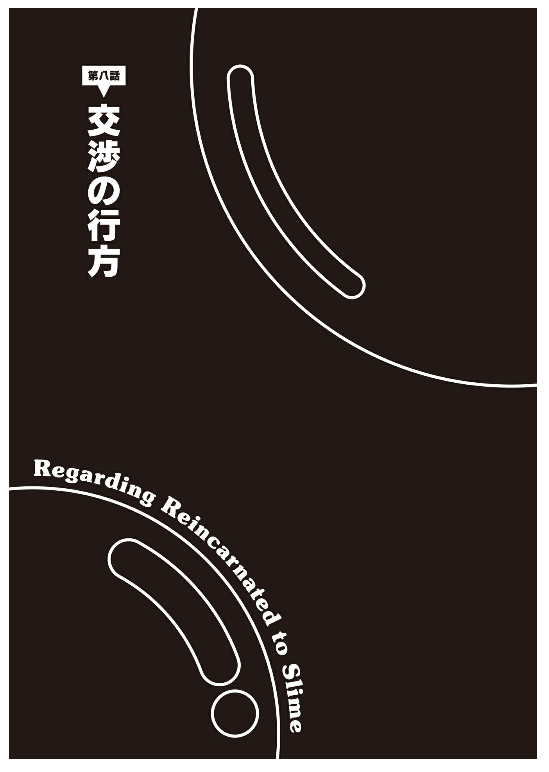「僕達の話を聞いてくれる気になったんだね。嬉しいよ」
"Các ngươi chịu nghe bọn ta nói rồi à. Vui thật đấy."
「ああ。僕達っていうのは、この魔塔の支配者さ。僕を含めて三人いてね、巷では〝最古参の三賢人（トリニティ・ワイズマン）〟って呼ばれているのさ」
"Ừ. Bọn ta ở đây là những kẻ cai trị Ma Tháp này. Tính cả ta thì có ba người, và bọn ta được thiên hạ gọi là 〝Tam Hiền Nhân Cổ Đại (Trinity Wiseman)〟 đấy."
そう言うなり、アシュレイが背を向けて歩き出した。
Vừa nói dứt lời, Ashley quay lưng bước đi.
と言っても、それは影。
Tuy nói là bước đi, nhưng đó chỉ là cái bóng.
三次元映像（ホログラフィー）みたいなものなので、不意討ちしても意味はない。自信家に見えるが、決して油断していないのは間違いなかった。
Nó giống như Hình ảnh ba chiều (Holography), nên có đánh lén cũng vô nghĩa. Trông có vẻ tự tin ngạo mạn, nhưng chắc chắn hắn không hề lơ là cảnh giác.
そうして俺達は、アシュレイの仲間がいる場所に案内されている、と。
Thế là, chúng tôi đang được dẫn đến nơi có đồng bọn của Ashley.
交渉そのものが時間稼ぎという線も濃厚だし、案内される先には、罠があると思って間違いなかろう。
Khả năng cao là bản thân cuộc đàm phán này chỉ là kế hoãn binh, và chắc chắn nơi chúng tôi được dẫn tới đang có bẫy chờ sẵn.
それでも付いて行くくんだけど。
Dù vậy, chúng tôi vẫn đi theo hắn ta.
『どうせなら、こっちに呼んでもらった方がいいんじゃないの？』
"Tiện thể thì bảo hắn gọi chúng ta đến chỗ hắn luôn chẳng phải tốt hơn sao?"
『それも考えたけど、この塔に入った時点で『転送（てんそう）』されてるんだよね。意味ないと思う』
"Ta cũng đã nghĩ đến chuyện đó rồi, nhưng ngay từ lúc bước vào tháp này là chúng ta đã bị 『Dịch chuyển』 rồi mà. Ta nghĩ làm thế cũng vô nghĩa thôi."
それもそうね、とヒナタが納得してくれた。
Cũng phải nhỉ, Hinata đồng tình với tôi.
そして、笑いながらヴェルドラが宣言する。
Và rồi, Verudora vừa cười vừa tuyên bố.
『我に任せよ。我さえいれば、どんな罠だろうと打ち破ってくれるわ！』
"Cứ giao cho ta. Chỉ cần có ta ở đây, bất kể cạm bẫy nào ta cũng sẽ phá tan hết!"
頼もしい。
Thật đáng tin cậy.
ここまで後手に回ってしまったら、今更なのだ。バタバタと慌てても仕方ないし、ここは堂々と、王者の貫禄を見せつけるように相手の出方を窺う事にした。
Đã rơi vào thế bị động đến mức này rồi thì giờ có cuống cuồng lên cũng chẳng ích gì. Chi bằng cứ đường hoàng, quan sát động tĩnh của đối phương như để thể hiện uy phong của bậc quân vương vậy.
そして俺達三人は、アシュレイに続いて別の大広間へと至った。
Và rồi ba người chúng tôi theo sau Ashley đến một đại sảnh khác.
広間の扉が開くと同時に、アシュレイの影が消える。
Cùng lúc cánh cửa đại sảnh mở ra, cái bóng của Ashley biến mất.
そして扉の先には、三つの人影があった。
Và phía sau cánh cửa, có ba bóng người đang đứng đó.
噂の〝最古参の三賢人（トリニティ・ワイズマン）〟とやらだろう。
Chắc hẳn đây là cái gọi là 〝Tam Hiền Nhân Cổ Đại (Trinity Wiseman)〟 trong lời đồn đây mà.
準備運動をしているのが、アシュレイの本体だ。
Kẻ đang khởi động chân tay kia chính là bản thể thật của Ashley.
やあ、とばかりに片手を上げて、俺達に笑顔を向けてきた。
Hắn giơ một tay lên như muốn nói "Chào", nở nụ cười với chúng tôi.
それを軽くスルーして、他の二人を観察する。
Tôi phớt lờ hắn và quan sát hai người còn lại.
一人は小柄な少女。
Một người là thiếu nữ nhỏ nhắn.
両目に眼帯。
Cả hai mắt đều bị bịt kín.
それとフードで隠れて表情はよく見えないが、金色の髪が特徴的だった。
Thêm vào đó, khuôn mặt bị mũ trùm đầu che khuất nên không nhìn rõ biểu cảm, nhưng mái tóc vàng kim của cô ta rất đặc trưng.
そしてもう一人は、渋い感じの壮年の紳士だ。
Và người còn lại là một quý ông trung niên có vẻ từng trải.
険しい相貌に、鋭い眼光。ロマンスグレーの髪を、後方に撫で付けるようにしている。
Khuôn mặt nghiêm nghị, ánh mắt sắc bén. Mái tóc màu xám bạc được chải ngược ra sau.
痩せてもおらず、太ってもおらず。若さは感じられないが、均整のとれた体躯だった。
Không gầy cũng chẳng béo. Tuy không cảm nhận được sự trẻ trung, nhưng cơ thể ông ta rất cân đối.
少女、若者、壮年。年代はバラバラだな。
Thiếu nữ, thanh niên, trung niên. Độ tuổi lộn xộn thật đấy.
もっとも、長命種だったら見た目と年齢なんて関係ないので、見た目をその まま信じる事は出来ない。つまり、大した情報は得られなかった訳だ。
Dù sao thì, với những chủng tộc trường thọ, ngoại hình và tuổi tác chẳng liên quan gì nhau, nên không thể tin hoàn toàn vào những gì nhìn thấy. Nói cách khác, chẳng thu thập được thông tin gì đáng kể cả.
幸いだったのは、数が丁度同じだった点だろう。
May mắn là số lượng hai bên vừa khéo bằng nhau.
こちらにはヴェルドラがいるので、星取り戦だったら一勝確実だ。
Bên này có Verudora, nên nếu là trận chiến tính điểm thì chắc chắn thắng một trận rồi.
勝ち抜き戦だったなら、なお良し。ヴェルドラを先鋒にして、楽をさせてもらう所存である。
Nếu là chiến đấu loại trực tiếp thì càng tốt. Ta sẽ cho Verudora tiên phong, để bản thân được nhàn hạ một chút.
俺が敵を探るように観察している間、その肝心の三人は俺達を無視して会話を繰り広げていた。
Trong lúc tôi đang quan sát để thăm dò kẻ địch, thì ba nhân vật chính kia lại phớt lờ chúng tôi và mải mê trò chuyện với nhau.
「ふむ、貴様が一人で様子見するのではなかったか？」
"Hừm, chẳng phải ngươi định một mình thăm dò tình hình sao?"
「そうだよ。どうして案内して来たのか知らないけど、今からみんなで戦うの？」
"Đúng đấy. Ta chẳng biết tại sao ngươi lại dẫn họ đến đây, nhưng giờ tất cả chúng ta sẽ cùng chiến đấu à?"
「いやいや。どうせ無駄だと思って交渉する気はなかったんだけどさ、先ずは話し合いをする事になった」
"Không không. Dù ta nghĩ cũng vô ích thôi nên chẳng định đàm phán đâu, nhưng trước mắt thì cứ nói chuyện đã."
とまあ、アシュレイとその二人は意見が一致していない。
Thì đấy, Ashley và hai người kia ý kiến không đồng nhất.
話し合いという判断がアシュレイの独断専行だと判明したけど、意思疎通 疎通の手段を持っていないと考えるべきかな？
Rõ ràng quyết định nói chuyện là do Ashley tự ý hành động, nhưng việc giao tiếp với nhau có vẻ không suôn sẻ lắm nhỉ?
まあ、もう少し様子を見て判断するとしよう。
Thôi thì, cứ quan sát thêm chút nữa rồi quyết định vậy.
「こちらとしても、交渉出来るのは歓迎なのよ。誤解がないように、先にそちらの言い分を聞いておきたいわ」
"Bên này cũng hoan nghênh việc đàm phán đấy. Để tránh hiểu lầm, tôi muốn nghe phía các người trình bày trước."
ヒナタが会話に加わったので、俺とヴェルドラは空気のように聞きに徹する事にした。俺との一戦がトラウマになっているのか、ヒナタも聞く耳を持っている。安心して、引き続き交渉役を任せる事にしたのだった。
Vì Hinata đã tham gia vào cuộc trò chuyện, nên tôi và Verudora quyết định im lặng lắng nghe như không khí. Có lẽ trận chiến với tôi đã trở thành nỗi ám ảnh, nên Hinata cũng chịu lắng nghe người khác. Tôi yên tâm và tiếp tục giao phó vai trò đàm phán cho cô ấy.
＊
*
交渉は、アシュレイ達が名乗るところから始まった。
Cuộc đàm phán bắt đầu từ việc nhóm Ashley xưng danh.
この三人は、ルミナスと同時代を生きる最古の魔人達で、絶大な権能を有しているようだ。
Ba người này có vẻ là những Ma Nhân cổ xưa nhất sống cùng thời với Luminous, và sở hữu quyền năng to lớn.
俺の――というか智慧之王（ラファエル）さんの見立てでも、覚醒魔王に匹敵するのは間違 いないらしい。なので俺は、ルミナスと同等と見做しておく事にした。
Theo nhận định của tôi――hay nói đúng hơn là của Trí Tuệ Vương Raphael-san, thì không nghi ngờ gì rằng người này sánh ngang với Chân Ma Vương. Vì thế, tôi quyết định coi họ ngang hàng với Luminous.
こちらも名乗ろうとしたが、それは必要ないと言われた。
Tôi định xưng danh, nhưng họ bảo không cần thiết.
こちらは相手の情報を知らないのに、向こうは把握済み。情報戦では負け確定だな。
Bên này thì mù tịt thông tin về đối phương, trong khi họ lại nắm rõ về chúng tôi. Về khoản chiến tranh thông tin là thua chắc rồi.
こうなってくると、何も知らせずに俺達をここに送り込んだルミナスに、文句の一つも言いたくなるというものだった。いや、一つどころか二つ三つは覚悟してもらいたいものである。
Đến nước này thì tôi chỉ muốn phàn nàn với Luminous, kẻ đã đẩy chúng tôi vào đây mà chẳng thèm báo trước một tiếng. Không, một câu thôi chưa đủ đâu, cô ta cứ chuẩn bị tinh thần nghe hai, ba câu đi là vừa.
その件は無事に戻ってから考えるとして、敵さんの言い分をまとめてみた。
Chuyện đó để tính sau khi bình an trở về đã, giờ tôi thử tóm tắt lại quan điểm của kẻ địch.
〝最古参の三賢人（トリニティ・ワイズマン）〟というのは、元はルミナスの同僚？ だったらしい。そこは詳しく話してくれなかったけど、「何故ヤツばかりが優遇されるのだ⁉」というふうに壮年の紳士――プレリクスと名乗っていた――が憤っていたので、何となく事情が察せられたのだ。
Nhóm 〝Tam Hiền Nhân Cổ Đại (Trinity Wiseman)〟 này, nghe đâu vốn là đồng nghiệp cũ của Luminous? Họ không kể chi tiết về chuyện đó, nhưng quý ông trung niên kia――tự xưng là Prelix――đã phẫn nộ thốt lên "Tại sao chỉ có ả ta là được ưu ái chứ!?", nên tôi cũng lờ mờ đoán ra được sự tình.
そしてこの三人とルミナス達の意見が対立するようになり、結局、袂（たもと）をわかった。そしてそれ以降、ルミナスは人類の表社会を裏から支配していき、こ の三人は対抗するように水面下で力を蓄えていた、と。
Rồi ý kiến của ba người này và Luminous trở nên đối lập nhau, và cuối cùng, họ chia rẽ đường đi riêng. Kể từ đó, Luminous âm thầm điều khiển xã hội loài người từ hậu trường, còn ba người kia thì ngầm tích lũy sức mạnh để đối lập lại.
肝心の主張だが、これは正直、コイツ等が悪い。
Về quan điểm cốt lõi, thành thật mà nói, lỗi là ở bọn này.
プレリクスという男は夜の支配者。吸血鬼（ヴァンパイア）族の始祖とも呼べる真夜中の吸血鬼（ナイトストーカー）なのだそうで、人類を糧としてしか見ていなかったのだ。
Người đàn ông tên Prelix là kẻ cai trị bóng đêm. Hắn được cho là Dạ Hành Hấp Huyết Quỷ (Night Stalker), có thể coi là tổ tiên của tộc Hấp Huyết Quỷ (Vampire), và hắn chỉ xem nhân loại như nguồn thức ăn.
ルミナスと違うのは、人類の幸福など一切考えていない点。自分達の奴隷として使役し、繁栄を享受しようとしていたのである。
Điểm khác biệt so với Luminous là hắn chẳng hề quan tâm đến hạnh phúc của nhân loại. Hắn chỉ muốn biến họ thành nô lệ để phục vụ cho sự phồn thịnh của bản thân.
続いて、ピピンと名乗る少女の外見をした人物の主張だが、プレリクスとは別の方向で強烈にヤバかった。
Tiếp theo là chủ trương của kẻ mang hình hài thiếu nữ tự xưng là Pippin, cũng nguy hiểm khủng khiếp nhưng theo một hướng khác với Prelix.
「えっと、人類は実験素材として最高ですよね？ この最高の資源を有効活用したいのに、ルミナスが邪魔するんです。文明の発展に犠牲は付き物なのに、許せないですよね？」
"À thì, con người là vật liệu thí nghiệm tuyệt vời nhất phải không nào? Ta muốn tận dụng hiệu quả nguồn tài nguyên tuyệt vời này, thế mà Luminous cứ ngáng đường. Sự phát triển của văn minh luôn đi kèm với hy sinh, thế mà ả ta lại không cho phép, thật không thể tha thứ được đúng không?"
などと、真顔で述べたのだ。
Ả ta nói với vẻ mặt tỉnh bơ như thế đấy.
フードの下の素顔は、目が隠れていても可愛い感じの女の子に見えたのだが……その思考は言語を絶する。マッドサイエンティストという言葉がピッタりの、常人には理解し難い意見であった。
Khuôn mặt thật dưới lớp mũ trùm, dù bị che mắt nhưng trông vẫn có vẻ là một cô bé đáng yêu... nhưng suy nghĩ thì cạn lời. Từ "Mad Scientist" (Nhà khoa học điên) quả thật rất phù hợp, là một quan điểm mà người bình thường khó có thể thấu hiểu được.
人類を奴隷化して使役するという主張と、甲乙つけがたい過激さである。
So với chủ trương nô lệ hóa nhân loại để sai khiến thì độ cực đoan của nó cũng một chín một mười.
ハッキリ言って、交渉の余地ナシだった。
Nói thẳng ra là chẳng còn chỗ nào để đàm phán nữa rồi.
そんな二人と違って、最後の一人であるアシュレイの主張は比較のマシだったのだが……それは、自己を高められる者以外は切り捨てて、より高みを目指す社会を構築しよう、というものだった。
Khác với hai kẻ đó, chủ trương của người cuối cùng là Ashley có vẻ đỡ hơn một chút... đó là xây dựng một xã hội hướng tới tầm cao mới bằng cách loại bỏ những kẻ không thể tự nâng cao bản thân.
「だってさ、弱肉強食が絶対のルールなんだぜ？ 弱いヤツは自己責任だろ。え？ 弱者救済？ 何それ、その冗談って、面白くないんだけど？」
"Thì đấy, cá lớn nuốt cá bé là luật lệ tuyệt đối mà? Kẻ yếu thì phải tự chịu trách nhiệm thôi. Hả? Cứu giúp kẻ yếu ư? Cái gì thế, trò đùa đó chẳng vui chút nào đâu?"
といった感じなので、まあ会話が成立はずもないな、と思えた。
Cảm giác kiểu như thế đấy, nên tôi nghĩ chắc là không thể nói chuyện đàng hoàng được rồi.
これはもう、この三人は仲良く出来る人種ではないな、と。
Đến nước này thì tôi chắc chắn ba kẻ này thuộc loại người không thể nào hòa hợp được rồi.
交渉担当のヒナタも、呆れ果てて絶句している。
Hinata, người chịu trách nhiệm đàm phán, cũng cạn lời vì quá ngán ngẩm.
《……》
《……》
『これは無理ね。説得が通用する相手ではないわ』
"Quả là không thể rồi. Bọn chúng không phải là đối tượng có thể dùng lời lẽ thuyết phục đâu."
『うん、そうだね……。これ以上会話しても、有用そうな情報は得られそうもないもんな……』
"Ừ, đúng vậy...... Có nói chuyện thêm nữa thì chắc cũng chẳng thu được thông tin gì hữu ích đâu......
何となく、ルミナスが黙っていた理由がわかった。
Chẳng hiểu sao, tôi đã hiểu lý do tại sao Luminous lại giữ im lặng.
こんなヤツ等が同僚だったとは言えないわな。
Không thể nói rằng bọn này đã từng là đồng nghiệp của mình được.
お前も仲間か？ とでも疑われたら嫌だろうし、それ以前に、過大に悪評を伝えていると誤解されるのを嫌ったのだろう。
Chắc cô ta không muốn bị nghi ngờ là "Ngươi cũng cùng hội cùng thuyền với bọn này à?", và trước đó nữa, có lẽ cô ta cũng ghét bị hiểu lầm là đang thổi phồng tiếng xấu cho người khác.
自分の目で見て耳で聞いていなければ、こんなヤツ等の存在など信じなかっただろうし、ルミナスの判断は正解だったんじゃないかなと俺は思った。
Nếu không tận mắt thấy, tận tai nghe thì tôi cũng chẳng tin vào sự tồn tại của đám này đâu, nên tôi nghĩ phán đoán của Luminous có lẽ là chính xác.
『では予定通り、我が大暴れするという事で良いな？』
"Vậy thì cứ theo kế hoạch, ta sẽ quậy tưng bừng lên nhé?"
『大暴れは予定にないけど、相手を制圧する方向で間違いないぞ』
"Quậy tưng bừng không có trong kế hoạch đâu, nhưng đúng là chúng ta sẽ trấn áp đối phương."
軽く釘を刺してみたが、交渉決裂で戦闘になるのは避けられない。なるべく被害が出ないようにしつつ、ヴェルドラには頑張ってもらいたい所存であった。
Tôi đã nhẹ nhàng nhắc nhở rồi, nhưng đàm phán thất bại thì khó tránh khỏi giao chiến. Tôi mong Verudora sẽ cố gắng hết sức, đồng thời hạn chế thiệt hại ở mức thấp nhất.
「ええと、一応最終確認だけど、人類と共存共栄を目指すつもりはないんだな？」
"À ừm, xác nhận lại lần cuối nhé, các ngươi không có ý định cùng tồn tại và phát triển với nhân loại sao?"
「僕達が支配してこそ、人類は有益な存在たり得るのさ。それこそが共栄ってものだろう」
"Chỉ khi bọn ta cai trị thì nhân loại mới trở thành sự tồn tại có ích. Đó mới chính là cùng phát triển đấy."
共存が抜けてるぞ。人類は素材としてあるだけでよくて、別に滅んでも構わないという強い意思を感じさせる発言だった。
Mất chữ "cùng tồn tại" rồi. Phát ngôn của hắn toát lên ý chí mạnh mẽ rằng nhân loại chỉ cần tồn tại như một nguồn nguyên liệu là đủ, còn diệt vong hay không cũng chẳng sao.
「そもそも、人類は弱者だ。守ってもらわねば生き残れないような、脆弱な種族なんだぜ？ こっちで価値を見出して利用してやらなきゃ、生きてる意味もないじゃないか！」
"Vốn dĩ nhân loại là kẻ yếu. Là một chủng tộc yếu đuối đến mức nếu không được bảo vệ thì không thể sống sót nổi, đúng không? Nếu bọn ta không tìm ra giá trị và tận dụng, thì sống cũng chẳng có ý nghĩa gì cả!"
アシュレイの言うように、この世界では人の命は軽い。
Đúng như Ashley nói, ở thế giới này mạng người thật rẻ rúng.
弱肉強食が絶対のルールというのは、誰もが否定出来ない事実であった。
Cá lớn nuốt cá bé là luật lệ tuyệt đối, đó là sự thật không ai có thể chối cãi.
だからこそ、その言い分も決して間違ってはいないのだが……。
Chính vì vậy, lập luận của hắn cũng không hẳn là sai...
「俺はね、そういうルールを捻じ曲げたいと思っているんだよ。人は助け合う生き物だから、一人一人が誰かにとって大切な役割を担っているんだ。弱いからって切り捨てるのは間違ってると思う」
"Còn ta thì lại muốn bẻ cong cái luật lệ đó đấy. Con người là sinh vật biết giúp đỡ lẫn nhau, nên mỗi cá nhân đều đảm nhận một vai trò quan trọng đối với ai đó. Ta cho rằng việc vứt bỏ họ chỉ vì họ yếu đuối là sai lầm."
俺がそう言い返すと、ヒナタが大きく頷いてくれた。
Khi tôi vặc lại như vậy, Hinata gật đầu mạnh mẽ tán thành.
しかし、アシュレイの反応は違う。
Thế nhưng, phản ứng của Ashley lại khác hẳn.
「ええ？ 僕達だって、人間が有用ってのは否定していないじゃないか。大虐殺する気だってないし。ただ、優劣を見極めて取捨選択をしようって話さ」
“Hả? Bọn ta đâu có phủ nhận chuyện con người là hữu dụng đâu. Cũng chẳng có ý định đại thảm sát làm gì. Chỉ là bọn ta muốn nhìn cho rõ ưu khuyết để sàng lọc và tuyển chọn thôi mà.”
「その通りだ。私が人類を統べるようになれば、逆らう者共も出現するであろう。そうした者共こそ逆に有用であると、私達は考えているのだ」
“Đúng vậy. Một khi ta thống trị nhân loại, chắc chắn sẽ xuất hiện những kẻ dám chống đối. Chúng ta cho rằng chính những kẻ đó mới lại là hữu dụng.”
「強者こそ、実験材料として最高だもんね！」
“Kẻ mạnh chính là vật liệu thực nghiệm tuyệt vời nhất mà lị!”
つまりは、プレリクスによる恐怖社会を打ち立て、そこで反骨する者達を優遇しよう、というのがアシュレイの考えなのだ。
Tóm lại, ý đồ của Ashley là để Prelix thiết lập một xã hội khủng bố, rồi từ đó ưu đãi những kẻ có cốt cách phản kháng.
弱者は奴隷にして強者を眷属や実験材料に取り立てようとするプレリクスやピピンとも意見は対立せず、同盟関係が成立しているらしかった。
Quan điểm này không hề mâu thuẫn với Prelix và Pippin, những kẻ muốn biến kẻ yếu thành nô lệ và thu nạp kẻ mạnh làm quyến thuộc hoặc vật liệu thực nghiệm, nên dường như mối quan hệ đồng minh giữa chúng đã được thiết lập.
それの何が問題なのかと、アシュレイが真顔で問いかけてきたのだ。
Ashley đã hỏi ngược lại tôi với vẻ mặt nghiêm túc rằng chuyện đó thì có vấn đề gì.
「強い弱いはなくて、人の営みには社会貢献という意味合いだってある。よりよい豊かな暮らしを実現する為にも、一人一人が自分の役割を頑張ってだね――」
“Không phải là chuyện mạnh hay yếu, mà hoạt động của con người còn mang ý nghĩa cống hiến cho xã hội nữa. Để hiện thực hóa một cuộc sống sung túc và tốt đẹp hơn, thì mỗi người cần nỗ lực trong vai trò của chính mình――”
「いや、そんなのどうでもいいって。魔王のくせに何を眠たいコト言ってるん だか」
“Không, chuyện đó có cũng được không có cũng chẳng sao. Ma vương mà còn nói mấy chuyện buồn ngủ kiểu này nữa chứ.”
持論を展開させようとしたら、アシュレイに鼻で笑われた。
Khi tôi định triển khai lý lẽ của mình, thì bị Ashley cười khẩy.
そして、ズバッと核心に触れるような質問をされたのだ。
Và rồi, hắn đặt một câu hỏi sắc bén chạm trúng hồng tâm.
「じゃあ聞くけどさ、君だって〝真なる魔王〟に覚醒する為に、ファルムス軍を殲滅(せんめつ)させたじゃないか。人の価値に重きを置くなら、決して出来ない真似だよね？」
“Vậy ta hỏi nhé, chẳng phải chính cậu cũng đã tiêu diệt quân đội Farmus để thức tỉnh trở thành 〝Chân Ma Vương〟 đó sao. Nếu coi trọng giá trị con người, thì đó là việc tuyệt đối không thể làm được nhỉ?”
うぐっ、それを言われると痛いな。
Hự, bị nói trúng chỗ đó đau thật đấy.
「毒で死にかけている者が二人いたとして、薬は一つ。さあ、どちらを助ける？ その基準は？」
“Giả sử có hai kẻ đang hấp hối vì trúng độc, mà thuốc giải chỉ có một. Nào, cậu sẽ cứu kẻ nào? Tiêu chuẩn là gì?”
「うぐぐ……それはだな……」
“Ư hự... cái đó là...”
トロッコ問題かな？
Bài toán xe goòng đây sao?
いや、違うか。あれは多数を救うために一人を犠牲にする是非を問う問題だったし。
Không, không phải. Đó là câu hỏi về tính đúng sai của việc hy sinh một người để cứu số đông mà.
そもそも俺の場合、自分の大切な仲間を救う為なら多数を犠牲にしても構わないと、自分自身で答えを出してしまった後だからな。どちらかと言えば、功利主義なのだ。
Ngay từ đầu, trong trường hợp của tôi, tôi đã tự đưa ra câu trả lời rằng chỉ cần có thể cứu được những đồng đội quan trọng của mình thì cho dù phải hi sinh số đông tôi cũng không bận tâm. Nếu phải nói thì tôi nghiêng về chủ nghĩa công lợi.
アシュレイの質問について考えるならば、見知らぬ他人のどちらか一方を助ける為の基準を問われている訳で……。
Nếu suy nghĩ về câu hỏi của Ashley, thì tức là tôi đang bị hỏi về tiêu chuẩn để cứu một trong hai người xa lạ......
人の命の価値が平等だとするならば、判断基準は公平に考えねばならない。
Nếu giả định rằng giá trị sinh mạng con người là bình đẳng, thì tiêu chuẩn phán đoán cần phải được suy xét một cách công bằng.
それはつまり、付加価値だ。
Tóm lại, đó là giá trị gia tăng.
若さであったり、才能であったり、妊娠の有無や、金を持っているかどうか、とか？
Chẳng hạn như sự trẻ trung, tài năng, có mang thai hay không, hay là có tiền hay không?
より多く他者へと貢献出来る方を生かす事で、幸福の総量を増やせるという判断基準だった。
Đó là tiêu chuẩn phán đoán cho rằng bằng việc cứu sống người có thể cống hiến nhiều hơn cho người khác, ta có thể làm tăng tổng lượng hạnh phúc.
《まさに主様(マスター)らしい、自己中心的な考え方です。多くの人の幸せが全体の幸せに繋がる。社会全体の最大幸福を求める為ならば、少数の犠牲を甘受すべしという主張ですね》
《Quả đúng là cách suy nghĩ ích kỷ đậm chất Chủ Nhân (Master). Hạnh phúc của nhiều người sẽ dẫn đến hạnh phúc của toàn thể. Đây là chủ trương cho rằng nếu để mưu cầu hạnh phúc lớn nhất cho toàn xã hội, thì phải chấp nhận sự hy sinh của thiểu số nhỉ.》
道徳的には駄目なんだろうけど……。
Về mặt đạo đức thì chắc là không ổn rồi, nhưng mà...
《しかし、社会の指導者としてはその選択を取らざるを得ません》
《Tuy nhiên, với tư cách là người lãnh đạo xã hội thì đành phải đưa ra lựa chọn đó thôi ạ.》
そうなるよね。
Đành vậy thôi nhỉ.
でも、俺は自己中(ワガママ)だからな。
Nhưng mà, ta đây ích kỷ lắm.
可能な限り両方とも救おうとするが、それが叶わないのならば――
Ta sẽ cố gắng cứu cả hai nhiều nhất có thể, nhưng nếu không được thì――
「好みの方を助ける。知り合いを優先するし、自分にとって大切な方に薬を使うね」
“Ta sẽ cứu người ta thích. Ta sẽ ưu tiên người quen, và dùng thuốc cho người quan trọng đối với mình.”
思いっきり自分の感情優先の解答を、恥ずかしげもなく口にする。
Tôi nói ra câu trả lời đặt cảm xúc bản thân lên hàng đầu một cách không hề ngượng ngùng.
「そうだろうとも。だったら――」
“Đương nhiên rồi. Vậy thì――”
何か言いかけたアシュレイを制し、俺は答えの続きを言い放った。
Ngắt lời Ashley khi hắn định nói gì đó, tôi buông tiếp phần còn lại của câu trả lời.
「もっとも、俺の場合は薬を複製(コピー)して、もう一人も助けるけどね！」
“Tuy nhiên, trường hợp của ta thì ta sẽ Sao chép (Copy) thuốc ra, rồi cứu luôn cả người kia nữa nhé!”
「――は？」
“――Hả?”
アシュレイが戸惑うように言葉を詰まらせている。
Ashley đang ấp úng, dường như cảm thấy bối rối.
相変わらずズルいわね、とヒナタが横で呟いているが、そっちは無視して話を続けよう。
Hinata lầm bầm bên cạnh là "Vẫn gian xảo như mọi khi nhỉ", nhưng tôi quyết định lờ chuyện đó đi và tiếp tục nói.
「可能な限り、全員を助ける手段を模索するって言ってるんだよ」
“Ý ta là ta sẽ tìm mọi cách để cứu tất cả mọi người trong khả năng cho phép đấy.”
トロッコ問題の解答にだって、線路の切り替えタイミングを狙って車両を脱線させるという選択肢があったはずだ。
Ngay cả trong đáp án của bài toán xe goòng, chắc chắn cũng phải có lựa chọn làm trật bánh toa xe bằng cách canh chuẩn thời điểm chuyển làn cơ mà.
あれはつまり、最後まで諦めずに最善を考え続ける先にこそより良い未来が待っているという、一つの事例なのだと思われた。
Tôi cho rằng đó chính là một ví dụ điển hình cho việc: chỉ khi không từ bỏ đến phút cuối cùng và liên tục suy nghĩ về phương án tốt nhất, thì một tương lai tốt đẹp hơn mới chờ đợi phía trước.
「詭弁(きべん)じゃないか」
“Đó chẳng phải là ngụy biện sao?”
「詭弁で何が悪い？ 諦めたら、その時点で終わりなんだよ。だから俺は、最後まで悪足掻(わるあが)きして見せるさ」
“Ngụy biện thì có gì xấu? Nếu bỏ cuộc thì mọi chuyện sẽ kết thúc ngay tại thời điểm đó rồi. Thế nên ta sẽ vùng vẫy đến cùng cho mà xem.”
それが俺の覚悟だった。
Đó chính là sự giác ngộ của tôi.
人類と魔人の二択ではなく、あくまでも共存共栄を目指すべきだという主張。
Không phải là sự lựa chọn một trong hai giữa Nhân loại và Ma nhân, mà chủ trương của tôi là kiên quyết hướng tới sự cùng tồn tại và cùng phồn vinh.
それを丁寧に伝えたつもりだったのだが――それを聞いたアシュレイは、嬉しそうに笑ったのだ。
Tôi cứ ngỡ mình đã nói điều đó một cách lịch sự rồi — vậy mà khi nghe xong, Ashley lại mỉm cười đầy vui vẻ.
「ふふふ、ワガママな魔王だね。気に入ったよ！ 強者ならば、どれだけ自由でも許されるものさ。君とは敵対したくないし、是非とも僕達の仲間になってくれないかい？」
“Fufufu, đúng là một Ma Vương ích kỷ nhỉ. Ta thích rồi đấy! Nếu là kẻ mạnh thì có tự do đến đâu cũng được tha thứ thôi. Ta không muốn làm kẻ thù với cậu đâu, hay là cậu gia nhập nhóm chúng ta đi nhé?”
「そうだね、魔王リムルは面白いよ！ 我也気に入ったし、ルミナスを倒すのに協力してくれるなら生かしてあげてもいいかな」
“Phải đấy, Ma Vương Rimuru thú vị lắm! Ta cũng ưng rồi, nếu ngươi chịu hợp tác đánh bại Luminous thì ta tha mạng cho cũng được.”
「……チッ、二人が認めたのなら、私にも異存はない。強者とは我が強いものゆえ、貴様の領土では好きな方針で統治するのを認めてやろう」
“......Chậc, nếu hai người đã công nhận thì ta cũng không có dị nghị gì. Kẻ mạnh vốn dĩ cái tôi rất lớn, nên ta sẽ cho phép ngươi cai trị lãnh thổ của mình theo phương châm tùy thích.”
などと、他の二人も加わって、好き勝手な事を言い出す始末。俺の言いたい事は何一つ伝わっていなかったのだ。
Cứ thế, hai kẻ còn lại cũng hùa vào, rốt cuộc toàn nói mấy lời tùy tiện theo ý mình. Những điều tôi muốn nói chẳng truyền đạt được chút nào cả.
会話の土台となる倫理観や常識がかけ離れているので、互いの着地点が一致するはずがなかったのだ。
Vì quan điểm đạo đức và thường thức làm nền tảng cho cuộc đối thoại quá khác biệt, nên điểm đến của cả hai bên chắc chắn không thể nào trùng khớp được.
「話にならないわね」
“Chẳng nói chuyện được đâu.”
と、ヒナタが呆れたように断言した。
Hinata khẳng định với vẻ ngán ngẩm.
それから俺をジトッと見て、「これだから、魔物との交渉はしない方がいいのよ」と、嫌味たっぷりに小言を述べる。
Sau đó cô ấy lườm tôi một cái rồi buông lời phàn nàn đầy vẻ mỉa mai: “Chính vì thế này nên tôi mới bảo là không nên đàm phán với ma vật đấy”.
耳が痛いが、それはケースバイケースだっての。
Nghe mà nhức cả tai, nhưng tôi muốn nói là chuyện đó còn tùy trường hợp (case-by-case) chứ bộ.
今回は駄目だったが、それで上手くいく場合だってあるはずなのだ。
Lần này tuy thất bại, nhưng chắc chắn phải có những trường hợp diễn ra suôn sẻ chứ.
あったらいいなと、俺は今回で挫(くじ)けずに願ったのだった。
Giá mà có thì tốt biết mấy, tôi thầm cầu nguyện và quyết không nản lòng sau vụ này.
●
造物主たる神祖が自らの手で創造した最初期の一体。高弟第四位に位置するのがアシュレイだった。
Là một trong những cá thể sơ khai nhất được chính tay Tạo Vật Chủ Thần Tổ sáng tạo ra. Kẻ đứng ở vị trí thứ tư trong hàng ngũ Cao Đồ chính là Ashley.
アシュレイの種族は火精人(エンキ)だが、その祖とも呼べる特別個体なのだ。
Chủng tộc của Ashley là Hỏa Tinh Nhân (Enki), nhưng hắn là một cá thể đặc biệt có thể được xem là thủy tổ của loài này.
そして第八位は、ルミナスとは別の解釈で生み出された吸血鬼族(ヴァンパイア)であるプレリクスだった。
Và xếp thứ tám là Prelix, kẻ thuộc tộc Hấp Huyết Quỷ (Vampire) được sinh ra từ một lý giải khác biệt so với Luminous.
ちなみに、この順位は戦闘能力ではなく、神祖が製造に着手した順番で定められている。
Nhân tiện thì, thứ hạng này không dựa trên năng lực chiến đấu, mà được xác định theo thứ tự Thần Tổ bắt tay vào chế tạo.
しかも、目覚めた順番もまちまちなので、第二位に位置するルミナスが最後に誕生しているという、実に複雑な裏事情があった。
Hơn nữa, thứ tự thức tỉnh cũng lộn xộn, nên mới có chuyện nội tình vô cùng phức tạp là Luminous dù đứng vị trí thứ hai nhưng lại được sinh ra cuối cùng.
アシュレイとプレリクスは戦闘能力特化型で、万能型や演算特化型よりも強力な個体だ。特化型は汎用型のような生殖能力を持たない代わりに、強力な権能を有しているのである。
Ashley và Prelix là kiểu chuyên hóa năng lực chiến đấu, là những cá thể mạnh mẽ hơn cả kiểu vạn năng hay kiểu chuyên hóa tính toán. Kiểu chuyên hóa tuy không có khả năng sinh sản như kiểu phổ dụng, nhưng bù lại chúng sở hữu những Quyền năng hùng mạnh.
故に彼等は、神祖が最高傑作であると宣言したルミナスよりも強いと自負しているし、実際に強かった。
Chính vì thế, bọn chúng tự phụ rằng mình mạnh hơn Luminous - người được Thần Tổ tuyên bố là kiệt tác vĩ đại nhất, và thực tế thì bọn chúng mạnh thật.
戦闘能力特化型として、神祖の護衛役を務めていたのがアシュレイだ。であるからこそ余計に、神祖を滅ぼしたルミナスへの恨みを隠す事なく、裏で暗躍を続けているのである。
Kẻ đảm nhận vai trò hộ vệ cho Thần Tổ với tư cách là kiểu chuyên hóa năng lực chiến đấu chính là Ashley. Cũng chính vì vậy mà hắn càng không che giấu mối hận thù đối với Luminous, kẻ đã tiêu diệt Thần Tổ, và tiếp tục hoạt động ngầm trong bóng tối.
また、プレリクスも夜を統べる者として、現状に不満を抱いている。自身の活動限界が狭いからこそ、この世から隔離されるように生きてきた。
Ngoài ra, Prelix với tư cách là kẻ thống trị màn đêm cũng đang ôm bất mãn với hiện trạng. Chính vì giới hạn hoạt động của bản thân hạn hẹp, nên hắn đã phải sống như thể bị cô lập khỏi thế giới này.
神祖からも失敗作だと見做された事で、その恨みは成功例であるルミナスへと向けられていたのだ。
Việc bị Tổ Thần xem như một tạo phẩm thất bại khiến nỗi căm hận của cô dồn hết lên Luminous — kẻ được coi là tuyệt tác.
アシュレイとプレリクスが手を組んだのには、そうした事情が隠されていたのだった。
Việc Ashley và Prelix bắt tay với nhau ẩn chứa những sự tình như thế.
そして、ピピンは――
Và, Pippin là――
神祖が自分の研究を手伝わせようとして作成した、演算特化型の真なる人類(ハイ・ヒューマン)だ。
Chân Nhân Loại (High Human) thuộc kiểu chuyên hóa tính toán, được Thần Tổ tạo ra để phụ giúp cho việc nghiên cứu của mình.
神祖の高弟としての序列は第十三位。作業助手として創造された。
Thứ hạng trong hàng ngũ Cao Đồ của Thần Tổ là mười ba. Hắn được tạo ra với vai trò trợ lý tác nghiệp.
生殖能力どころか戦闘能力すら持たない代わりに、精神感応を利用して他人の頭脳を操れる『特殊並列演算』能力を有している。現在もマルクシュア王国に張り巡らせた『結界』内の人間の脳を拝借して、自分の演算領域を拡張しているのだ。
Thay vì không sở hữu khả năng chiến đấu chứ đừng nói đến khả năng sinh sản, bù lại hắn sở hữu năng lực 『Đặc Thù Tịnh Liệt Diễn Toán』 (Tính toán song song đặc biệt), lợi dụng tinh thần cảm ứng để thao túng não bộ của người khác. Hiện tại, hắn cũng đang mượn tạm não bộ của những con người bên trong 『Kết Giới』 giăng khắp Vương quốc Marcushua để mở rộng lĩnh vực tính toán của bản thân.
そんなピピンだが、目覚めたのはルミナスの前で、父たる神祖との付き合いはとても短かった。
Pippin là kẻ như vậy đấy, nhưng hắn lại thức tỉnh trước Luminous, và thời gian gắn bó với người cha Thần Tổ là vô cùng ngắn ngủi.
自らの存在理由を全うする前に、ルミナスの手で神祖が討伐されてしまった からだ。
Trước khi hắn kịp hoàn thành lý do tồn tại của chính mình, thì Thần Tổ đã bị chính tay của Luminous tiêu diệt.
研究成果を神祖へ捧げる事が叶わなかったのは、ルミナスのせいである。
Việc không thể dâng lên thành quả nghiên cứu cho Thần Tổ là lỗi của Luminous.
その疑いようもない事実が、ピピンを狂わせた。
Sự thật không thể chối cãi đó đã khiến Pippin phát điên.
故に、善悪など考慮もせずに、その怒りの矛先をルミナスへと向けていた。
Chính vì thế, hắn chẳng thèm màng đến thiện ác, mà chĩa mũi dùi căm phẫn về phía Luminous.
そして、自らを生み出した神祖の偉大さを知らしめる為に、世界を支配するという野望に取り付かれているのである。
Và rồi, để chứng minh sự vĩ đại của Thần Tổ, người đã tạo ra mình, hắn đã bị ám ảnh bởi dã tâm thống trị thế giới.
創造神が創り出した最高傑作が〝竜種〟ならば、それすらも従えて見せようと。
Nếu kiệt tác vĩ đại nhất mà Thần Sáng Thế tạo ra là 〝Long Chủng〟, thì hắn sẽ bắt ngay cả thứ đó cũng phải phục tùng cho mà xem.
そんなピピンがアシュレイやプレリクスと意気投合するのは、実に自然な流れだったと言えるだろう。
Có thể nói rằng việc một kẻ như Pippin tâm đầu ý hợp với Ashley và Prelix thực sự là một lẽ tự nhiên.
そうして三名は、この時、最高の機会を手に入れたのだ。
Và thế là ba tên đó, vào lúc này, đã nắm được cơ hội tuyệt vời nhất.
………
……
…
アシュレイは魔王リムル達を直に見て、そのおおよその脅威度を把握していた。
Ashley trực tiếp nhìn vào nhóm Ma Vương Rimuru và đã nắm bắt được đại khái mức độ uy hiếp của bọn họ.
〝暴風竜〟は流石(さすが)の一言だが、こちらには相手はピピンがいる。そして残る二人だが、自分なら問題ない相手だと判断していた。
〝Bạo Phong Long〟 thì đúng là chỉ có thể dùng một từ "quả không hổ danh (Sasuga)" để hình dung, nhưng phe ta đã có Pippin làm đối thủ. Còn hai kẻ còn lại, hắn phán đoán rằng nếu là bản thân mình thì sẽ giải quyết không thành vấn đề.
そして、率直に評価する。
Và rồi, hắn đưa ra đánh giá thẳng thắn.
（ふむふむ。新参の魔王って聞いていたけど、思ったよりはやるようだね。でも、甘いな。いやいや、自信過剰と言うべきなのかな？ 罠とわかっているだろうに、のこのこ付いて来るなんてさ）
(Hưm hưm. Nghe đồn là tân Ma Vương, nhưng xem ra khá khẩm hơn ta tưởng đấy. Cơ mà, ngây thơ quá. Không không, phải gọi là tự tin thái quá mới đúng nhỉ? Biết rõ là bẫy mà vẫn cứ thản nhiên đi theo.)
ファルムス軍を根絶やしにしたのは〝暴風竜〟ヴェルドラであり、魔王リムルはそのおこぼれに与(あず)って覚醒したに過ぎない。プレリクスなどはそう評価していた。
Kẻ đã tiêu diệt hoàn toàn quân đội Farmus là 〝Bạo Phong Long〟 Verudora, còn Ma Vương Rimuru chẳng qua chỉ là ké cửa (Azutte) hưởng sái chút tàn dư đó để thức tỉnh mà thôi. Prelix và những kẻ khác đã đánh giá như vậy.
しかし、〝最古参の三賢人(トリニティワイズマン)〟で一番賢いピピンが、その程度ではないだろうと予想していたのだ。
Tuy nhiên, Pippin, kẻ thông minh nhất trong 〝Tam Hiền Nhân Cổ Đại (Trinity Wiseman)〟, lại dự đoán rằng hắn ta không đơn giản chỉ ở mức độ đó.
それが正解だったなと、アシュレイも納得する。
Quả nhiên đó là đáp án chính xác, Ashley cũng thầm gật đầu tán thành.
魔王リムルはアシュレイ達を前にしても動じず、情報収集を開始している様子。交渉そのものは決裂する前提で、言葉巧みにこちらの反応から手の内を探られている気配がしていた。
Ma Vương Rimuru dù đứng trước nhóm Ashley vẫn không hề nao núng, và có vẻ như đã bắt đầu thu thập thông tin. Có cảm giác hắn ta khéo léo dùng lời lẽ để dò xét phản ứng của phe ta nhằm nắm bắt nội tình, với tiền đề là cuộc đàm phán coi như đã đổ bể.
（狡猾なヤツだ。それに比べて聖人ヒナタの方は――）
(Một kẻ xảo quyệt. So với hắn thì Thánh nhân Hinata lại――)
魔王ルミナスの秘蔵っ子で、魔王ヴァレンタインなど歯牙にもかけない実力者だ。
Là con cưng của Ma Vương Luminous, một kẻ có thực lực không thèm để Ma Vương Valentine vào mắt.
坂口日向(ヒナタ・サカグチ)。
Sakaguchi Hinata (Hinata Sakaguchi).
十年ほど前にこの基軸世界へと迷い込んだ異世界人で、たった数年で聖騎士団(クルセイダーズ)の頂点の座についた女傑だ。
Là một Dị thế giới nhân đã lạc vào Thế giới Cốt Lõi này khoảng mười năm trước, một nữ kiệt đã leo lên vị trí đỉnh cao của Thánh Hiệp Sĩ Đoàn (Crusaders) chỉ trong vài năm ngắn ngủi.
一般的に知られているのはその程度だが、アシュレイ達はもっと深く情報を探っていた。
Thông tin được biết đến rộng rãi chỉ ở mức độ đó, nhưng nhóm Ashley đã thâm nhập tìm kiếm thông tin sâu hơn nhiều.
ルミナス教の真実に辿り着き、魔王ルミナスの寵愛を受けし者。
Kẻ đã chạm đến chân tướng của Đạo Luminous và nhận được sự sủng ái của Ma Vương Luminous.
そしてその実力は、覚醒魔王にすら匹敵する〝聖人〟へと至っているのだと。
Và thực lực đó đã đạt đến cảnh giới 〝Thánh nhân〟, sánh ngang với cả Chân Ma Vương (Giác Tỉnh Ma Vương).
冷徹な判断力と、類まれなる剣技。数多の秘術を駆使し、魔物の天敵と恐れられる麗人だ。
Một tuyệt sắc nữ nhân sở hữu khả năng phán đoán lạnh lùng và kỹ nghệ kiếm thuật vô song. Với vô số bí thuật trong tay, cô được xem là thiên địch của ma vật và luôn khiến chúng phải khiếp sợ.
（――思ったよりも、ヌルイな。その強さは本物みたいだけど、僕達の言葉に耳を貸す時点で、噂程には切れ者じゃなさそうだ）
(――Tầm thường hơn ta tưởng. Sức mạnh đó có vẻ là hàng thật đấy, nhưng ngay tại thời điểm chịu lắng nghe lời nói của bọn ta, thì xem ra ả không được sắc sảo như lời đồn đâu)
その実力は、魔王リムルと互角だと噂されていた。
Thực lực đó được đồn đại là ngang ngửa với Ma Vương Rimuru.
一騎討ちで引き分けになった事で、和解が成立したとか何とか。
Nghe đâu nhờ trận đơn đấu bất phân thắng bại mà sự hòa giải đã được thiết lập hay gì đó.
アシュレイは、そんな話を鵜呑(うの)みにするほど馬鹿ではない。それに、忌々(いまいま)しいが実力は確かなルミナスが認めているのは確かなので、ヒナタがどんな人物なのか興味があった。
Ashley không ngốc đến mức tin sái cổ những câu chuyện như thế. Hơn nữa, dù rất đáng ghét nhưng thực lực của Luminous là không thể bàn cãi, và việc ả ta công nhận Hinata là sự thật, nên hắn có hứng thú muốn biết Hinata là nhân vật như thế nào.
しかし、期待外れだった。
Tuy nhiên, hắn đã thất vọng.
ひりつくような威圧もなく、腑抜(ふぬ)けているという印象だったのだ。
Không có cái uy áp khiến người ta rát bỏng da thịt, mà ấn tượng để lại chỉ là một kẻ nhu nhược mất hết nhuệ khí.
（まあいいや。僕達の仲間に迎えてもいいくらい強そうだし、プレリクスに任せて、彼が気に入るようなら好きにさせてやろうかな）
(Mà thôi kệ. Trông cũng mạnh đến mức có thể đón chào vào nhóm của chúng ta được đấy, cứ giao cho Prelix, nếu hắn ưng ý thì để hắn muốn làm gì thì làm vậy)
とまあ、アシュレイはこんな具合に考えていた。
Đấy, Ashley đã suy nghĩ theo kiểu như vậy đó.
ちなみに、〝暴風竜〟ヴェルドラは、人の姿になっただけで以前と変わっていなかった。
Nhân tiện thì, 〝Bạo Phong Long〟 Verudora ngoài chuyện mang hình dạng con người ra thì về bản chất chẳng khác gì so với trước đây.
いや、その判断は早計だ。
Không, phán đoán như vậy là quá vội vàng.
大人しくなっていたが、脅威度は増している様子だった。
Hắn đã trở nên điềm tĩnh hơn, nhưng có vẻ mức độ uy hiếp lại tăng lên.
（直近で接すると、ここまで威圧があるんだな。流石(さすが)は〝竜種〟だね）
(Tiếp xúc ở cự ly gần thế này mới thấy uy áp kinh khủng thật. Quả không hổ danh là 〝Long Chủng〟 nhỉ)
そう感嘆する。
Hắn cảm thán như vậy.
しかし、それを脅威に思ったりはしない。
Tuy nhiên, hắn lại không coi đó là mối đe dọa.
むしろ、逆だった。
Ngược lại thì có.
この魔塔に誘い込めた時点で、対〝竜種〟への対策は万全だったからだ。
Bởi lẽ ngay tại thời điểm dụ được bọn chúng vào Ma Tháp này, thì đối sách chống lại 〝Long Chủng〟 đã hoàn tất vẹn toàn rồi.
一番の脅威を無力化した今、自分達に敗北はない。そう確信したからこそ、アシュレイは余裕綽々(よゆうしゃくしゃく)とした態度を崩さないのだ。
Khi đã vô hiệu hóa được mối đe dọa lớn nhất, chúng không còn lý do gì để thua cuộc. Chính vì tin chắc điều đó mà Ashley vẫn giữ thái độ ung dung, tự tại như thể mọi thứ đều nằm trong lòng bàn tay.
交渉もまた、時間稼ぎに都合が良かった。
Việc đàm phán cũng rất thuận lợi cho việc câu giờ.
戦いは既に始まっていて、〝暴風竜〟はピピンの術中に嵌っていたのである。
Trận chiến thực ra đã bắt đầu rồi, và 〝Bạo Phong Long〟 đã rơi vào trong thuật của Pippin.
今更逃れる術(すべ)などあるはずもなく、時間が経てば経つほどその力は奪われ続けていた。
Đến nước này rồi thì làm gì còn cách nào thoát thân. Càng để thời gian trôi qua, sức mạnh của hắn càng bị rút cạn không ngừng.
そしてそれは、アシュレイ達に還元され続けている。
Và thứ đó đang liên tục được hoàn trả lại cho nhóm Ashley.
（やれやれ。戦いになるのかな、これ。弱い者イジメにならなきゃいいけどね）
(Thiệt tình. Thế này có thành đánh nhau được không đây. Hy vọng là không trở thành màn bắt nạt kẻ yếu nhỉ)
アシュレイはそう考え、ニヤリと笑みを浮かべた。
Ashley nghĩ vậy, và nở một nụ cười nhếch mép.
そして、プレリクスはというと。
Còn về phần Prelix.
（力が漲(みなぎ)る。これが〝暴風竜〟か。尽きる事なき底なしのエネルギーを感じるが、もう十分であろう）
(Sức mạnh đang tràn trề. Đây là 〝Bạo Phong Long〟 sao. Ta cảm nhận được nguồn năng lượng vô tận không đáy, nhưng bấy nhiêu chắc là đủ rồi)
交渉すると見せかけて、自分達の強化を行(おこな)う。それがアシュレイの作戦だった訳だが、効果覿面(てきめん)、見事なまでに成功していた。
Giả vờ đàm phán, nhưng thực chất là tiến hành cường hóa bản thân. Đó chính là chiến thuật của Ashley, và nó đã mang lại hiệu quả tức thì, thành công đến mức ngoạn mục.
そうでなくとも、今宵は新月。
Chưa kể, đêm nay còn là đêm trăng non.
真夜中の吸血鬼(ナイトストーカー)であるプレリクスは他の吸血鬼族(ヴァンパイア)と違って、一切の陽光を受け付けない体質だった。昼を超克するのも不可能で、暗闇でしか活動出来なかったのだ。
Là một Dạ Hành Hấp Huyết Quỷ (Night Stalker), Prelix sở hữu thể chất hoàn toàn không thể tiếp nhận ánh sáng mặt trời, khác hẳn với các tộc Hấp Huyết Quỷ (Vampire) khác. Hắn không thể nào khắc phục được ban ngày, và chỉ có thể hoạt động trong bóng tối.
だが、しかし。
Nhưng mà.
夜ならば無敵の強さを誇る。まして、月の明かりさえない新月の夜は、その力が大きく飛躍する最高の環境だったのである。
Vào ban đêm, hắn tự hào với sức mạnh vô địch. Huống hồ, đêm trăng non không một ánh trăng lại là môi trường tuyệt vời nhất khiến sức mạnh của hắn tăng vọt.
今のプレリクスならば、覚醒魔王であろうが赤子の手をひねるように簡単に屠(ほう)れる自信があった。
Prelix của hiện tại có thừa tự tin rằng, cho dù là Chân Ma Vương thì hắn cũng có thể dễ dàng tàn sát như bẻ tay một đứa trẻ.
それに加えて〝暴風竜〟の力まで流れ込んでいる状況だ。
Thêm vào đó, sức mạnh của 〝Bạo Phong Long〟 còn đang chảy vào người hắn.
勝負にすらならないだろうと、プレリクスもアシュレイ同様の結論を導き出していたのだった。
Prelix cũng đưa ra kết luận tương tự như Ashley, rằng đây thậm chí sẽ chẳng thể gọi là một trận đấu.
〝暴風竜〟ヴェルドラはピピンに任せておけばいいとして、残る問題はどちらがどちらの相手をするか、だ。
Cứ giao 〝Bạo Phong Long〟 Verudora cho Pippin là được, vấn đề còn lại là ai sẽ đối đầu với ai đây.
実力はアシュレイが上だが、今は新月。それを加味して考えるならば、ほぼ互角であると言えた。
Xét về thực lực thì Ashley nhỉnh hơn, nhưng hiện tại đang là trăng non. Nếu cân nhắc thêm yếu tố đó, có thể nói là gần như ngang ngửa.
美女の血を好むプレリクスとしては、ヒナタの美貌にそそられるものがあった。
Với Prelix, kẻ ưa thích máu của mỹ nữ, nhan sắc của Hinata thực sự khiến hắn bị hấp dẫn.
（魔王リムルはアシュレイに譲るとして、私としては聖人ヒナタを相手にしたいものよな）
(Ma Vương Rimuru thì nhường cho Ashley, còn ta thì muốn đối đầu với Thánh nhân Hinata hơn)
暴力で屈服させて、その甘美なる血潮を味わいたい。
Ta muốn dùng bạo lực để bắt ả khuất phục, rồi nếm mùi vị máu tươi ngọt ngào đó.
その泣き声は天上の音楽もかくやというほどに、プレリクスを昂(たかぶ)らせてくれることだろう。
Tiếng khóc than đó chắc chắn sẽ khiến Prelix hưng phấn đến mức mà ngay cả âm nhạc trên thiên đường cũng chẳng thể sánh bằng.
そして最後は、自分の忠実な下僕へと生まれ変わらせるのだ。
Và cuối cùng, ta sẽ tái sinh ả thành hạ bộc trung thành của mình.
プレリクスには生殖能力がない代わりに、吸血行為によって相手の種族を変異させて、自身の眷属へと作り替える事が可能なのだ。
Thay vì không có khả năng sinh sản, Prelix lại có khả năng biến đổi chủng tộc của đối phương thông qua hành vi hút máu, rồi cải tạo họ thành Quyến thuộc của bản thân.
まだ聖人として完成していないヒナタならば、その素体として最適であろうとプレリクスは考えたのだった。
Prelix đã suy tính rằng, nếu là một Hinata chưa hoàn thiện với tư cách là Thánh nhân, thì chính cơ thể cô sẽ là vật liệu cơ bản lý tưởng cho hắn.
こうしてアシュレイ達の方針は定まり、各々が自分の相手を見定めた。
Thế là phương châm của nhóm Ashley đã được quyết định, ai nấy đều đã chọn được đối thủ cho mình.
『それじゃあ、僕が魔王リムルを』
『Thế thì, ta sẽ lo liệu Ma Vương Rimuru』
『私が聖人ヒナタだな』
『Còn ta sẽ xử Thánh nhân Hinata』
『どっちが先に戦う？』
『Ai sẽ đánh trước đây?』
『無論――』
『Đương nhiên là――』
『ああ、なるほどね。それなら確実だし、賛成さ』
『À, ra là vậy. Nếu thế thì chắc ăn rồi, ta tán thành.』
『という事だが、文句はないな、ピピン？』
『Quyết định là vậy, ngươi không có ý kiến gì chứ, Pippin?』
『勿論だよ』
『Tất nhiên rồi.』
『君が最初にヴェルドラを抑えられるかどうか、作戦の成否はそれにかかってる』
『Thành bại của kế hoạch phụ thuộc cả vào việc cậu có kiềm chế được Verudora ngay từ đầu hay không đấy』
『任せて』
『Cứ giao cho tôi』
阿吽(あうん)の呼吸で互いの意図を汲み取って、合意を得る。
Bọn chúng thấu hiểu ý đồ của nhau một cách vô cùng ăn ý và đi đến thống nhất.
そして――
Và rồi――
交渉は決裂の時を迎えた。
Thời khắc đàm phán tan vỡ đã điểm.
●
「非常に残念だけど、交渉は決裂だな。俺達は人類社会に手出しする事を許さない。そちらは好き勝手に生きる。そうなれば、衝突は避けられない」
“Rất đáng tiếc nhưng thương lượng đã thất bại. Chúng ta sẽ không cho phép các ngươi can thiệp vào xã hội loài người. Các ngươi thì cứ sống theo ý mình. Nếu vậy, xung đột là điều không thể tránh khỏi.”
落としどころがない以上、残るは武力衝突だ。
Một khi không còn điểm thỏa hiệp, thì chỉ còn lại xung đột vũ lực mà thôi.
こういう時、会話の無力さが感じられて虚しい気持ちになってしまう。
Những lúc thế này, tôi lại cảm thấy sự bất lực của lời nói và thấy trong lòng trống rỗng.
その点、ヒナタは一切の動揺を見せていないので、俺よりも割り切った考え方をしているんだろうなと思われた。
Về điểm này, Hinata không hề tỏ ra dao động chút nào, nên tôi nghĩ có lẽ cô ấy có suy nghĩ dứt khoát hơn tôi.
「リムルよ、貴様は優し過ぎるのだ。こういう輩(やから)を相手にする時は、先ずは黙らせてから話をすればいい。その方が話は早いし、気分もスッキリするぞ！」
“Rimuru à, cậu quá hiền lành rồi. Khi đối phó với cái lũ (yakara) này, trước tiên cứ bắt chúng im miệng rồi hãy nói chuyện sau. Làm thế thì câu chuyện sẽ nhanh hơn, và tâm trạng cũng sảng khoái hơn đấy!”
その考え方は間違っているが、実にヴェルドラらしい物言いだった。
Cách suy nghĩ đó sai lè ra, nhưng quả thực là kiểu ăn nói đậm chất Verudora.
「そっか、交渉は決裂か。まあ、仕方ないよね」
“Ra vậy, đàm phán tan vỡ sao. Mà, cũng đành chịu thôi nhỉ.”
「ヴェルドラの言い分に僕も賛成かな。協力する気がないのなら、力ずくで従わせればいい話さ」
“Ta cũng tán thành với quan điểm của Verudora đấy. Nếu không chịu hợp tác, thì cứ dùng vũ lực bắt phục tùng là xong chuyện.”
「ならば私が、貴様達に身の程を教えてやるとしよう」
“Nếu vậy thì ta sẽ dạy cho các ngươi biết thân biết phận.”
とまあ、向こうさんもやる気だった。
Và đấy, bên kia cũng hừng hực khí thế lắm rồi.
交渉出来ただけでもヨシとして、気分を切り替えていくとしよう。
Cứ coi như việc có thể đàm phán được đến mức này đã là tốt rồi, giờ thì thay đổi tâm trạng thôi.
「クックック。我と戦おうとは、いい度胸だ！ 我が先陣に立つが、文句はあるまいな？」
“Kukuku. Dám khiêu chiến với ta, gan to đấy! Ta sẽ đi tiên phong, chắc các ngươi không có ý kiến gì chứ?”
「ないよ。ないけど、確認が先だ」
“Không có đâu. Không có, nhưng phải xác nhận trước đã.”
逸(はヤ)るヴェルドラを落ち着かせてから、俺はアシュレイに問う。
Sau khi trấn an một Verudora đang nôn nóng, tôi quay sang hỏi Ashley.
「勝負方法はどうするんだ？」
“Hình thức thi đấu thế nào đây?”
「殺し合いなど野蛮だし、負けた方が勝った方に従うって事でいいよね？」
“Giết chóc lẫn nhau thì dã man lắm, cứ quyết định là kẻ thua sẽ phải phục tùng kẻ thắng nhé?”
うーん、難しい質問だな。
Hừm, câu hỏi khó đấy.
負ける気はないが、負けても従う気はない。
Tôi không hề có ý định thua, nhưng dẫu có thua thì tôi cũng chẳng định phục tùng đâu.
だけど、それを馬鹿正直に答える必要はないのだ。
Cơ mà, đâu cần thiết phải trả lời thành thật một cách ngốc nghếch như vậy chứ.
「いいよ」
“Được thôi.”
俺がそう頷くと、アシュレイがニヤリと笑った。
Thấy tôi gật đầu đồng ý, Ashley nở nụ cười nhếch mép.
プレリクスも同様に、勝ち誇ったように口を歪めている。
Prelix cũng tương tự, hắn nhếch miệng cười như thể đã nắm chắc phần thắng.
一人無表情だったピピンが、一歩前に出て口を開いた。
Pippin, kẻ duy nhất giữ vẻ mặt vô cảm, bước lên trước một bước và cất tiếng.
「じゃあ、私が最初。三戦の内、勝者が多い方が勝利って事で」
“Vậy thì, tôi sẽ là người đầu tiên. Trong ba trận, bên nào thắng nhiều hơn thì coi như thắng chung cuộc nhé.”
星取り戦って事か。
Ra là kiểu đấu đối kháng tính điểm thắng thua từng trận à.
俺達は同意を示すべく、頷いて見せた。
Chúng tôi gật đầu để biểu thị sự đồng ý.
「ちなみに、死んだら自己責任だから注意しなよ」
“Nhân tiện nói luôn, nếu chết thì ráng mà tự chịu trách nhiệm đấy, cẩn thận vào.”
言われるまでもない話だな。
Chuyện đó không cần nói cũng biết.
弱肉強食を強調していたし、弱者は不要と切り捨てるようなヤツ等だ。殺さずにいてくれると思う方が間違っていた。
Bọn chúng luôn nhấn mạnh quy luật kẻ mạnh nuốt kẻ yếu, là những kẻ sẵn sàng vứt bỏ kẻ yếu vì cho rằng không cần thiết. Nếu nghĩ rằng chúng sẽ nương tay không giết thì quả là sai lầm.
まあ、運が良ければ助かるかも、程度に考えるとして、ルール自体に問題はない。
Mà, cứ coi như nếu may mắn thì sống sót đi, còn về luật lệ thì không có vấn đề gì cả.
「それでは、第一戦目だが――」
“Vậy thì, trận đầu tiên là――”
「我が行く！」
“Ta sẽ lên!”
勝ち抜き戦だったら、これで必勝なんだけどな。
Nếu là đấu loại trực tiếp kiểu người thắng đánh tiếp, thì thế này là thắng chắc rồi.
まあ、俺達としては問題ないので、ヴェルドラに任せる事にした。
Mà, với chúng tôi thì cũng chẳng thành vấn đề, nên tôi quyết định giao phó cho Verudora.
「いいよ。こっちは――」
“Được thôi. Bên này là――”
「私だね」
“Là ta.”
一番小柄で本当に戦えるのかどうか疑わしい相手だが、油断は禁物だった。
Đó là đối thủ nhỏ con nhất khiến người ta phải nghi ngờ liệu có thực sự chiến đấu được hay không, nhưng tuyệt đối không được lơ là.
宣言通り、ピピンと名乗った少女が出て来たぞ。
Đúng như tuyên bố, thiếu nữ xưng tên là Pippin đã bước ra.
《告。罠を仕掛けている張本人です。現時点で『解析鑑定』は完了しておりますが、罠を発動されたら解除に要する時間として、十分程度は必要となるでしょう》
《Thông báo. Đây là kẻ chủ mưu đã giăng bẫy. Hiện tại 『Phân Tích Giám Định』 đã hoàn tất, nhưng nếu cái bẫy được kích hoạt, sẽ cần khoảng mười phút để giải trừ ạ.》
なるほど、なるほど……と、智慧之王(ラファエル)さんから説明を聞いた。
Ra là thế, ra là thế…… tôi vừa nghe Trí Tuệ Vương Raphael-san giải thích.
それによると、この罠は俺達を閉じ込めるように作用しているらしい。
Theo đó, cái bẫy này dường như đang hoạt động để giam hãm chúng tôi.
現状も罠の中にいる訳だが、これが本格発動すると、特定対象を閉じ込めるように変化するのだと。
Hiện tại chúng tôi cũng đang ở trong bẫy rồi, nhưng nghe nói nếu nó được kích hoạt hoàn toàn, nó sẽ biến đổi để giam cầm một đối tượng cụ thể.
この事から推測するに、その対象はヴェルドラになると思われた。
Từ điều này có thể suy đoán rằng, đối tượng đó chính là Verudora.
《閉じ込めるだけでなく、そのエネルギーを吸収するかの如く働くようですが、その効率は大した事はありません。むしろ、脱出させないように複雑に座標を変動させる事にカロリーを消耗する為、個体名：ピピン自身も行動不能になるかと思われます》
《Thông báo. Không chỉ giam giữ mà dường như còn hoạt động như thể hấp thụ năng lượng đó, nhưng hiệu quả không có gì đáng kể. Thậm chí, vì phải tiêu tốn năng lượng vào việc thay đổi tọa độ phức tạp để ngăn không cho thoát ra, cá thể Pippin cũng có thể trở nên bất động.》
つまり、相討ちか。
Tóm lại là lưỡng bại câu thương nhỉ.
だったら問題ないかな。
Nếu vậy thì chắc không thành vấn đề.
ヴェルドラは後で解放すればいいだけだし、こっちは敵の罠に嵌(はま)ったと思わせて油断させる事が出来る。
Verudora thì lát nữa giải cứu là được, còn làm thế này có thể khiến địch tưởng ta đã sa bẫy mà lơ là cảnh giác.
『――って事だから、上手く対応してくれたまえ』
『――Chuyện là như thế đấy, nên anh hãy ứng biến cho khéo vào nhé』
『酷いではないか、リムルよ！ 我が大活躍すべき場面であろうが！！』
『Chẳng phải quá đáng lắm sao, Rimuru à! Đây lẽ ra phải là đất diễn để ta đại náo chứ lị!!』
うーん、ヴェルドラが大活躍するのは、それはそれで心配だしな。
Hừm, chuyện Verudora đại náo, thì theo một khía cạnh nào đó cũng đáng lo ngại lắm.
こんな狭い塔の中で大暴れされたら、巻き込まれるのは確実だ。無駄な労力を支払うハメになるので、それは避けたいというのが本音であった。
Nếu cậu ta quậy tưng bừng trong cái tháp chật hẹp thế này, thì chắc chắn sẽ bị vạ lây. Sẽ rơi vào cảnh tốn công vô ích, nên thật lòng mà nói tôi muốn tránh chuyện đó.
『……そうね。迷宮内での暴れっぷりを再現されたら、そっちの対応の方が大変だわね』
『......Đúng vậy. Nếu anh ta tái hiện lại cảnh quậy phá tưng bừng trong Mê cung, thì xử lý việc đó còn mệt hơn nhiều.』
ヒナタもヴェルドラと戦った事があるからか、俺の意見に賛成してくれた。
Có lẽ do từng giao chiến với Verudora nên Hinata đã tán thành ý kiến của tôi.
『ええい、友達甲斐のないヤツ等よ。それならば、我が抵抗出来たなら文句はあるまいな？』
『Eyyy, lũ bạn bè chẳng nhờ vả được gì. Nếu đã vậy, thì chỉ cần ta kháng cự được, các ngươi chắc không có ý kiến gì đâu nhỉ?』
と、不満たらたらなヴェルドラさん。
Verudora-san làu bàu đầy bất mãn.
《告。その可能性はかなり低いでしょう》
《Thông báo. Khả năng đó là khá thấp ạ.》
しかし残念ながら、智慧之王(ラファエル)さんの予測は無情だった。
Thế nhưng thật đáng tiếc, dự đoán của Trí Tuệ Vương Raphael-san lại vô cùng phũ phàng.
だから俺は、安心してヴェルドラの好きにさせる事にしたのだ。
Chính vì thế, tôi yên tâm để mặc cho Verudora thích làm gì thì làm.
『いいよ』
『Được thôi』
『フンッ！！ この我の凄さを見せつけてやる故、後で感想を述べるがいいわ！！』
『Hừm!! Ta sẽ cho các ngươi thấy sự lợi hại của ta đây, nhớ nêu cảm tưởng sau khi xem đấy nhé!!』
ヴェルドラがそう勢い込んで、意気揚々と前に出て行く。
Verudora hăng hái tuyên bố như vậy, rồi khí thế bừng bừng bước lên phía trước.
そうして、ヴェルドラとピピンの戦いが始まったのだった。
Và thế là, trận chiến giữa Verudora và Pippin đã bắt đầu.
果たして、その結果は――
Quả nhiên, kết quả là――
「――〝無限回廊(エンドレスループ)〟」
“――〝Vô Hạn Hồi Lang (Endless Loop)〟”
「ギャワわわわぁ――ッ！？」
“Gyawawawaaa――!?”
――という感じで、何の捻りもなくヴェルドラが虚空の彼方へと飲み込まれていった。
――Chỉ đơn giản như thế, chẳng có bất ngờ nào xảy ra, Verudora đã bị nuốt chửng vào phương xa của hư không.
『ビックリするくらい予想通りだったな』
『Đúng y như dự đoán đến mức giật cả mình』
『笑えるほどだったわね』
『Buồn cười thật đấy』
俺とヒナタは顔を見合わせて、そう頷きあったのである。
Tôi và Hinata nhìn nhau, rồi cùng gật đầu đồng tình.
ちなみに、技を仕掛けた側であるピピンも、ヴェルドラと一緒に姿を消していた。
Nhân tiện, kẻ thi triển kỹ năng là Pippin cũng đã biến mất cùng với Verudora.
その理由はというと――
Lý do là vì――
《解。この魔塔という建造物そのものが、個体名：ピピンの能力の影響下にありました。個体名：ラミリスの権能を模した技であると分析されましたので、その維持に塔との『同化』を行っているのでしょう》
《Giải đáp. Bản thân công trình kiến trúc gọi là Ma Tháp này đã nằm dưới ảnh hưởng năng lực của cá thể Pippin. Đã phân tích được rằng đây là chiêu thức mô phỏng Quyền năng của cá thể Ramiris, nên có lẽ hắn đang tiến hành 『Đồng Hóa』 với tòa tháp để duy trì nó.》
との事である。
Sự tình là như vậy.
ラミリスの権能は唯一無二なので、それを曲がりなりにも再現するとは素晴らしい。智慧之王(ラファエル)さんがいなければ、何が起きているのか理解出来なくて恐怖するところだった。
Quyền năng của Ramiris là độc nhất vô nhị, nên việc tái hiện lại được nó dù chưa hoàn hảo cũng là rất tuyệt vời. Nếu không có Trí Tuệ Vương Raphael-san, tôi đã không thể hiểu chuyện gì đang xảy ra và chắc là sẽ sợ hãi lắm.
しかも、建造物――つまりは物質との『同化』というのも、かなり珍しい能力(スキル)だと思う。
Hơn nữa, việc 『Đồng Hóa』 với công trình kiến trúc――tức là vật chất, tôi nghĩ cũng là một Năng lực (Skill) khá hiếm thấy.
〝最古参の三賢人(トリニティワイズマン)〟と名乗るだけあって、実力も確かなのだなと実感したのだった。
Quả không hổ danh xưng 〝Tam Hiền Nhân Cổ Đại (Trinity Wiseman)〟, tôi thực sự cảm nhận được thực lực của bọn chúng là hàng thật.
CHƯƠNG 9: RIMURU, BẠO TẨU
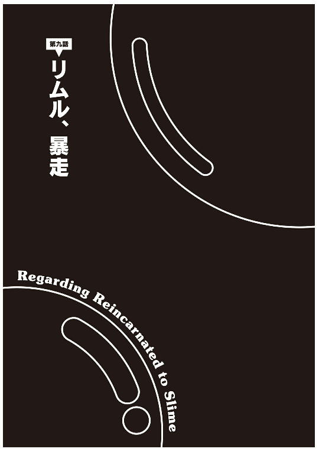一戦目の結果は引き分けなのだが、アシュレイ達は勝った気になっていた。
Kết quả trận đầu là hòa, nhưng nhóm Ashley lại cứ ngỡ mình đã thắng rồi.
「どうだい？ ヴェルドラの勝ちを当てにしていたんだろうけど、残念だったね」
“Thế nào? Chắc các ngươi đã trông chờ vào chiến thắng của Verudora lắm nhỉ, nhưng tiếc quá ha.”
「クックック。〝暴風竜〟との正面戦争ならば勝てなかったやも知れぬが、策を弄(ろう)せば容易(たやす)いものよ。これで貴様達を倒せば、我等の完全勝利というものよな」
“Kukuku. Nếu đối đầu trực diện với 〝Bạo Phong Long〟 thì chưa biết chừng bọn ta không thắng nổi, nhưng bày mưu tính kế thì dễ như trở bàn tay. Giờ chỉ cần hạ gục lũ khốn các ngươi nữa là bọn ta toàn thắng rồi.”
おいおい、俺達はかなり舐められてるぞ。
Này này, bọn tôi bị coi thường quá thể rồi đấy.
ヒナタも御立腹だった。
Hinata cũng đang nổi giận lôi đình.
すかさず剣を召喚したのだが、それはルミナスから授けられたという伝説級(レジェンド)の武器――月光の細剣(ムーンライト)だった。
Cô ấy lập tức triệu hồi thanh kiếm, đó là vũ khí cấp Truyền Thuyết (Legend) nghe nói được Luminous ban tặng ―― Nguyệt Quang Tế Kiếm (Moonlight).
そしてその身を光が覆って、輝く鎧衣(ヨロイ)――〝聖霊武装〟となる。
Và rồi ánh sáng bao phủ lấy thân thể ấy, hóa thành bộ giáp y (Yoroi) tỏa sáng ―― 〝Thánh Linh Vũ Trang〟.
これは本気(マジ)だな。
Cái này là làm thật (Maji) rồi đây.
初手から手加減なしの、殺る気満々という様子だった。
Ngay từ nước đi đầu tiên đã không khoan nhượng, trông có vẻ tràn đầy sát khí.
でも、それで正解だ。
Nhưng mà, như thế là chính xác.
この〝最古参の三賢人(トリニティワイズマン)〟と称される三名は、底知れぬ不気味さが感じられる。
Ba kẻ được xưng tụng là 〝Tam Hiền Nhân Cổ Đại (Trinity Wiseman)〟 này tỏa ra một cảm giác rùng rợn khôn lường.
ヴェルドラが行動不能になったのは想定通りではあるが、だからと言って油断出来る相手ではないのだから。
Việc Verudora bị bất động tuy nằm trong dự tính, nhưng không vì thế mà có thể lơ là với đối thủ này được.
ちなみにだが、消え去ったヴェルドラとは会話可能だった。
Nhân tiện thì, tôi vẫn có thể nói chuyện với Verudora đã biến mất.
『元気？』
『Khỏe không?』
『ふんっ！ 我、拗ねてないし』
『Hừm! Ta, ta không có dỗi đâu đấy』
拗ねてた。
Dỗi thật rồi.
『それじゃあ、危なくなったら知らせるから、その時は助けてね』
『Thế nhé, nếu nguy hiểm tôi sẽ báo, lúc đó nhớ cứu tôi nha』
『む？ 我を当てにしておるのか？』
『Hửm? Cậu đang trông cậy vào ta sao?』
『当然じゃないか、ヴェルドラ君！ だって君は、いつも言ってるけど俺達の 秘密兵器なんだから！』
『Đương nhiên rồi chứ, Veludora-kun! Vì anh luôn nói mà, anh là vũ khí bí mật của chúng ta mà! 』
『そうか？ そうであったな！ クアーーーハッハッハ！！』
『Thế hả? Đúng là như thế thật! Kuaaa-hahahaha!!』
よし、これで元気になった。
Tốt rồi, thế là anh ta đã phấn chấn trở lại.
実に単純なヤツなので、扱いが簡単で助かるのだ。
Quả là một tên đơn giản, thật may là việc dỗ dành tên này lại dễ dàng đến thế.
という事で、第二戦に意識を向ける。
Vậy nên, tôi chuyển sự chú ý sang trận chiến thứ hai.
特に打ち合わせした訳ではないが、何かあっても対処出来るように、俺の出番は最後に回す方がいい。
Tuy không bàn bạc cụ thể gì cả, nhưng để có thể ứng phó với bất cứ chuyện gì xảy ra, tốt hơn hết là tôi nên ra trận cuối cùng.
ヒナタもそう思ったのか、勢いに任せて自分が出るつもりのようだ。
Có vẻ Hinata cũng nghĩ vậy, nên cô ấy định nương theo đà này mà tự mình xuất trận.
「冷静な判断さ。今からでも遅くないから、負けを認めて僕達の仲間にならないかい？」
“Phán đoán bình tĩnh đấy. Giờ vẫn chưa muộn đâu, hay là các ngươi chịu thua và gia nhập nhóm chúng ta đi?”
「貴方達とは相容れないと理解したから、ここで滅ぼしてあげましょう」
“Ta đã hiểu rằng ta và các ngươi không thể nào dung hòa được, nên ta sẽ tiêu diệt các ngươi ngay tại đây.”
「残念だよ。君だって一定レベル以上の強者だから、せっかく誘ってあげたのにさ」
“Tiếc thật đấy. Dù sao ngươi cũng là kẻ mạnh đạt đến một đẳng cấp nhất định, nên ta đã cất công mời mọc vậy mà.”
アシュレイがヒナタに向き直ってそう言ったが、ヒナタは冷たく受け流した。
Ashley quay lại phía Hinata nói vậy, nhưng Hinata lạnh lùng gạt đi.
「遠慮するわ。私、自分の利益だけを追求する人種は苦手だから」
“Xin kiếu. Ta không ưa cái loại người chỉ biết theo đuổi lợi ích của bản thân.”
ドキッ！？
Giật mình!?
俺も自分の利益を追求しているから、ほどほどにしておこう。ちゃんと仲間には還元しているつもりなのだが、ヒナタから嫌われないようにしないとね。
Tôi cũng đang theo đuổi lợi ích của riêng mình, nên chắc phải tém tém lại thôi. Tuy tôi vẫn có ý định chia sẻ lại lợi ích cho đồng đội đàng hoàng, nhưng vẫn phải cẩn thận kẻo bị Hinata ghét mới được.
そんなふうに思っている内に、第二戦が始まる。
Trong lúc tôi đang mải nghĩ như vậy, trận thứ hai bắt đầu.
アシュレイが出るのかと思ったら、壮年紳士――プレリクスの方が相手だった。
Cứ tưởng Ashley sẽ ra mặt, nhưng đối thủ lại là gã quý ông trung niên ―― Prelix.
「死ぬ前に降参せよ、小娘」
“Hãy đầu hàng trước khi chết đi, nhãi ranh.”
意外と優しい――と思ったら。
Bất ngờ là hắn hiền ghê ―― vừa nghĩ thế thì.
「そうすれば、私の眷属として生まれ変わらせてやろう」
“Làm thế, ta sẽ cho ngươi tái sinh thành Quyến thuộc của ta.”
優しいどころか、自分勝手な理由だった。
Hiền lành nỗi gì, hóa ra là lý do ích kỷ hết sức.
「ゴメンだわ」
“Xin kiếu nhé.”
そう受け流すなり剣を構えるヒナタ。
Hinata vừa gạt phăng lời đó đi vừa thủ thế kiếm.
相対するプレリクスも、腰に提げた長剣(ロングソード)を抜いて目の前に捧げている。
Đối mặt với cô, Prelix cũng rút thanh Trường kiếm (Longsword) đeo bên hông ra và nâng lên trước mắt.
そして戦いが始まった。
Và rồi trận chiến bắt đầu.
ヒナタの戦い方だが、俺自身も相手した事があるからわかるのだが、慎重そのものだ。
Về cách chiến đấu của Hinata, do bản thân tôi cũng từng làm đối thủ của cô ấy nên tôi biết rõ, nó vô cùng thận trọng.
全てが計算ずくといった感じで、無駄がない。
Cảm giác như mọi thứ đều đã được tính toán kỹ lưỡng, không có chút động tác thừa thãi nào.
閃光のような刺突技が冴え渡り、プレリクスの表情が強張った。
Những đòn đâm nhanh như chớp được tung ra một cách sắc sảo, khiến nét mặt của Prelix cứng đờ lại.
「ほう？ これは想像以上だ」
“Hô? Cái này vượt ngoài tưởng tượng đấy.”
プレリクスは回避に成功したものの、衣服に無数の裂け目が出来ている。
Tuy Prelix đã né tránh thành công, nhưng trên trang phục đã xuất hiện vô số vết rách.
紙一重だったのか、若干流血している様子だった。
Có lẽ chỉ chênh nhau trong gang tấc, nên hắn đang bị chảy máu đôi chút.
しかし、当たり前のように『超速再生』を所持していたようで、プレリクスが受けた傷が一瞬にして消え去ってしまう。
Tuy nhiên, dường như hắn sở hữu 『Tái Sinh Siêu Tốc』 như một lẽ đương nhiên, nên vết thương mà Prelix hứng chịu đã biến mất trong nháy mắt.
しかも、服まで元通りなのだからノーダメージみたいなものだった。
Hơn nữa, đến cả quần áo cũng khôi phục lại như cũ, nên coi như hắn chẳng hề hấn gì cả.
「フフフ、この程度の威力ならば、直撃したとて大したダメージではなさそうだ」
“Phufufu, nếu uy lực chỉ ở mức độ này, thì dù có trúng trực diện cũng chẳng gây ra sát thương gì đáng kể đâu.”
プレリクスの言い方から察するに、ワザと掠るように剣を受けてみた感じだ ね。
Phỏng đoán từ cách nói của Prelix, có cảm giác như hắn đã cố tình để kiếm sượt qua để thử đòn vậy nhỉ.
そうしてヒナタの実力を試したのだろうが、余程頑丈さに自信があるみたいだ。
Chắc hẳn hắn làm vậy để thử thực lực của Hinata, nhưng có vẻ hắn tự tin thái quá vào độ cứng cáp của mình.
種族は真夜中の吸血鬼(ナイトストーカー)だと自己紹介するだけあって、それがバレても問題にならないと考えていたのだろう。
Quả không hổ danh kẻ tự giới thiệu thuộc chủng tộc Dạ Hành Hấp Huyết Quỷ (Night Stalker), hắn cho rằng dù có bị lộ tẩy cũng chẳng thành vấn đề.
そして実際、回復力は通常の吸血鬼族(ヴァンパイア)を凌駕している。覚醒魔王に匹敵するだけあって、クレイマンなどよりよっぽど上だった。
Và thực tế, khả năng hồi phục của hắn vượt xa Hấp Huyết Quỷ Tộc (Vampire) thông thường. Không hổ là kẻ sánh ngang với Chân Ma Vương, hắn mạnh hơn Clayman nhiều.
それなのに、ヒナタは焦っていなかった。
Dẫu vậy, Hinata không hề tỏ ra nôn nóng.
実に淡々としたもので、次の手を打っている。
Cô ấy thực sự bình thản và tung ra nước đi tiếp theo.
「星幽束縛術(アストラルバインド)！」
“Tinh U Thúc Phược Thuật (Astral Bind)!”
いつの間にか取り出していた呪符が、プレリクスを縛っていた。
Những lá bùa chú được lấy ra từ lúc nào không hay đã trói chặt Prelix.
星幽束縛術(アストラルバインド)は物質体(マテリアル・ボディー)ではなく、魂の器たる星幽体(アストラル・ボディー)を縛る技なので、肉体強度がどれだけ高かろうとも精神力が弱ければ動けなくなってしまう。
Tinh U Thúc Phược Thuật (Astral Bind) không phải là kỹ thuật trói buộc Thể Vật Chất (Material Body), mà là trói buộc Thể Tinh U (Astral Body) ――vật chứa của linh hồn, nên dù cường độ cơ thể có cao đến đâu, nếu tinh thần lực yếu thì sẽ không thể cử động được.
ヒナタとプレリクスの根性勝負みたいなものだが、一瞬でも動きを止められるなら儲けものなのだ。
Đây giống như cuộc đọ sức về ý chí giữa Hinata và Prelix, nhưng chỉ cần chặn được chuyển động của hắn trong tích tắc thôi cũng đã là món hời rồi.
何故なら、実力伯仲した勝負の最中に一瞬でも動きが止まってしまえば、それは致命的な失態に繋がってしまうものだから。
Bởi lẽ, giữa trận chiến thực lực tương đương nhau, nếu chuyển động bị khựng lại dù chỉ trong thoáng chốc, thì đó sẽ dẫn đến một sai lầm chí mạng.
「ま、待て――」
“Kho, khoan đã――”
プレリクスが慌てているが、もう遅い。
Prelix đang hoảng hốt, nhưng đã quá muộn rồi.
「神へ祈りを捧げ奉る。我は望み、聖霊の御力を欲する。我が願い、聞き届け給え。万物よ尽きよ！ 〝霊子崩壊(ディスインテグレーション)〟！」
“「Ta dâng lời cầu nguyện lên Thần. Ta nguyện cầu, mong muốn sức mạnh của Thánh Linh. Xin hãy lắng nghe lời thỉnh cầu của ta. Vạn vật hãy tiêu biến đi! 〝Linh Tử Băng Hoại (Disintegration)〟!」”
まあ、使うわな。
Mà, cô ấy dùng chiêu đó cũng phải thôi.
ヒナタが選択したのは、最強の〈神聖魔法〉だった。
Thứ Hinata lựa chọn chính là 〈Ma Pháp Thần Thánh〉 mạnh nhất.
この魔法の直撃を受けて無事な者など存在しない――と言っても過言ではないほど、究極の破壊力を秘めた対人魔法だ。
Đây là ma pháp đối nhân ẩn chứa sức phá hủy tối thượng, đến mức nói không ngoa rằng――không kẻ nào có thể bình an vô sự khi hứng trọn đòn trực diện của ma pháp này.
「あっけなかったわね。格上だったから緊張したけど、私を見下してくれていたから、簡単に始末出来たわ」
“Chóng vánh thật đấy. Vì hắn trên cơ nên tôi đã căng thẳng, nhưng nhờ hắn coi thường tôi nên tôi đã xử lý xong xuôi một cách dễ dàng.”
塵となって消えたプレリクスを確認してから、ヒナタが安堵の吐息を吐いて言う。
Sau khi xác nhận Prelix đã hóa thành tro bụi và biến mất, Hinata thở phào nhẹ nhõm và nói.
完全に殺す気だったのかと思えば、手加減出来なかっただけか。
Cứ tưởng là cô ấy định giết tận gốc, hóa ra chỉ là không thể nương tay được thôi sao.
初手から最強魔法を繰り出さないと、ヒナタでも厳しい相手だったのは確かだな。
Nếu không tung ra ma pháp mạnh nhất ngay từ nước đi đầu tiên, thì quả thực hắn là một đối thủ khó nhằn ngay cả với Hinata.
ヒナタのユニークスキル『簒奪者(コエルモノ)』は、上位者に対する絶対優位というのが特徴だ。だからこそ、ある程度は相手の実力を見極める事が出来るのである。
Kỹ năng độc nhất (Unique Skill) 『Soán Đoạt Giả (Usurper)』 của Hinata có đặc trưng là chiếm ưu thế tuyệt đối đối với những kẻ mạnh hơn mình. Chính vì thế, cô ấy có thể nhìn thấu thực lực của đối phương ở một mức độ nào đó.
「鑑定結果は《失敗》続きで、プレリクスの『超速再生』も奪えなかったのよ。他にも『闇夜循環』や鑑定結果を《失敗》にする能力(スキル)もあったから、それを使われる前に倒せてよかったわ」
“Kết quả giám định liên tục là 《Thất bại》, nên tôi cũng chẳng thể cướp được 『Tái Sinh Siêu Tốc』 của Prelix. Hắn còn có cả 『Ám Dạ Tuần Hoàn』 và Năng lực (Skill) khiến kết quả giám định trở thành 《Thất bại》, nên thật may là tôi đã hạ được hắn trước khi hắn kịp sử dụng chúng.”
そう言いながら、俺の方に戻って来るヒナタ。
Vừa nói vậy, Hinata vừa quay trở lại phía tôi.
しかしその時、虫の知らせというか――とても嫌な感じがした。
Tuy nhiên đúng lúc đó, gọi là linh tính mách bảo hay sao ấy――tôi bỗng có một cảm giác vô cùng bất an.
『ヒナタ――』
『Hinata――』
俺が警告を発するより速く、ソレが起きた。
Trước khi tôi kịp phát ra cảnh báo, chuyện đó đã xảy ra.
「死んだと思ったか？ 甘いぞ」
“Tưởng ta chết rồi sao? Ngây thơ quá.”
塵になったハズのプレリクスが完全無欠状態で復活し、背後からヒナタを襲ったのだ。
Prelix, kẻ lẽ ra đã hóa thành tro bụi, lại phục sinh trong trạng thái hoàn hảo không tì vết, và tập kích Hinata từ phía sau.
その指先にある爪は深紅に染まり、剣のように真っ直ぐに伸びている。
Móng vuốt nơi đầu ngón tay hắn nhuốm màu đỏ thẫm, vươn dài thẳng tắp tựa như những thanh kiếm.
それを手刀のように突き出して、ヒナタの背中を狙い穿ったのだった。
Hắn tung đòn đó như một cú thủ đao, nhắm thẳng vào lưng Hinata mà đâm tới.
だがしかし、ヒナタは辛うじて危険を察知し、身を翻した。
Tuy nhiên, Hinata đã may mắn cảm nhận được nguy hiểm trong gang tấc và kịp thời xoay người.
間一髪で、プレリクスの致命の一撃を回避したのである。
Trong đường tơ kẽ tóc, cô ấy đã tránh được đòn tấn công chí mạng của Prelix.
「――ぐっ、視えた――『絶対不死』――ですって……」
“――Ư, nhìn thấy rồi――『Bất Tử Tuyệt Đối』――sao……”
「チッ、不意を突いたのに、血魔爪(ブラッディネイル)を避けるかよ」
“Chậc, bị đánh úp bất ngờ thế mà vẫn tránh được Huyết Ma Trảo (Bloody Nail) sao.”
ヒナタは辛うじて回避するも、脇腹を抉られている。それでも、油断せずに〝聖霊武装〟を解除していなかったからこそ、致命傷は避けられたみたいだ。
Dù Hinata đã cố gắng né tránh, nhưng phần hông vẫn bị toạc một mảng. Dù vậy, chính nhờ việc không lơ là và chưa giải trừ 〝Thánh Linh Vũ Trang〟, nên có vẻ cô ấy đã tránh được vết thương chí mạng.
それは良かったのだが、状況は最悪だった。
Điều đó thì may rồi, nhưng tình hình hiện tại lại tồi tệ đến cực điểm.
ヒナタは戦意を失っていないが、重傷を負っている。いくら聖人になったとはいえ、このままでは危険なのだ。
Hinata tuy chưa mất đi ý chí chiến đấu, nhưng đã bị trọng thương. Cho dù đã trở thành Thánh nhân đi nữa, thì cứ đà này sẽ rất nguy hiểm.
「ハハハハハ！ どうした、剣の冴えが見る影もないぞ？」
“Hahahaha! Sao thế, đường kiếm sắc bén khi nãy đâu mất rồi?”
ヒナタに迫るプレリクスの血魔爪(ブラッディネイル)。
Huyết Ma Trảo (Bloody Nail) của Prelix đang lao tới áp sát Hinata.
十本の指から自在に生じるそれは、伝説級(レジェンド)とも打ち合える強度があった。
Thứ mọc ra tùy ý từ mười ngón tay đó sở hữu độ cứng cáp đủ để so với cả vũ khí cấp Truyền Thuyết (Legend).
しかも、自分の意思である程度は自由に変形させられる上に、撃ち出したりも出来るようで厭らしい。
Hơn nữa, dường như có thể tự do biến hình đến mức nhất định theo ý mình, lại còn có thể bắn ra nữa, thật là đáng ghét.
ヒナタの傷が増えていき、流れ出る血の量も増えていく。それは霧となり、プレリクスを興奮させる原因となっていた。
Những vết thương trên người Hinata ngày càng nhiều, lượng máu chảy ra cũng tăng theo. Nó hóa thành sương mù, trở thành nguyên nhân khiến Prelix hưng phấn.
「うーん、香しい香りだ。物質的な血液など無粋だと思っていたが、聖人の血は甘露に勝る！！」
“Hưm, mùi hương thật thơm. Ta cứ tưởng máu huyết vật chất là thứ vô vị, nhưng máu của Thánh nhân còn vượt xa cả cam lộ!!”
紳士然としていたプレリクスが、恍惚とした表情を浮かべて叫んだ。
Prelix, kẻ vốn ra vẻ quý ông, giờ đây hét lên với vẻ mặt đê mê ngất ngây.
ヒナタの血で酔ったのか、ヒナタを痛めつけるように攻撃を繰り返している。
Có lẽ do say máu của Hinata, hắn liên tục tung đòn tấn công như để hành hạ cô ấy.
その狙いは勝利ではなく、自分の快楽を優先させているようで不快だった。
Mục đích đó không phải là chiến thắng, mà có vẻ như hắn đang ưu tiên khoái lạc của bản thân, khiến tôi thấy thật khó chịu.
しかし、それが失策なのだろうと、そうでもない。プレリクスは興奮するだけでなく、力まで増大している様子なのだ。
Tuy nhiên, nếu nghĩ đó là sai lầm chiến thuật thì cũng không hẳn. Prelix có vẻ không chỉ hưng phấn mà sức mạnh còn đang gia tăng nữa.
それに対してヒナタの方は、どんどんと体力が低下している様子だった。
Ngược lại, phía Hinata có vẻ đang dần suy giảm thể lực.
〝聖霊武装〟に欠けた部分があるのは、再生する余力すら失われている証拠だろう。
Việc 〝Thánh Linh Vũ Trang〟 có những phần bị khuyết thiếu, chắc hẳn là bằng chứng cho thấy cô ấy đã mất đi cả dư lực để tái tạo lại.
「もういい。後は俺に任せろ、ヒナタ！」
“Đủ rồi. Phần còn lại cứ giao cho tôi, Hinata!”
「こいつの相手は、私の方がまだ相性がいいもの。貴方に負担を押し付ける訳にはいかないわよ」
“Đối thủ là tên này thì tôi vẫn còn đối phó được. Tôi không thể đùn đẩy gánh nặng cho cậu được đâu.”
ヒナタは鋭い眼差しで、俺の申し出を拒否した。
Hinata từ chối đề nghị của tôi bằng ánh mắt sắc lẹm.
その意思は尊重してあげたいけど、これ以上ヒナタが傷付く姿なんて見たくないんだよ……。
Tôi muốn tôn trọng ý chí đó của cô ấy, nhưng tôi không muốn nhìn thấy Hinata bị thương thêm nữa chút nào......
「いやいや、俺の相手はアシュレイで――」
“Không không, đối thủ của tôi là Ashley mà――”
あ、そうか。
A, ra là vậy.
ヒナタは時間を稼いでくれているのだ。
Hinata đang câu giờ giúp tôi.
智慧之王(ラファエル)さんがピピンの〝無限回廊(エンドレスループ)〟を解除するまで、十分程度を要する。
Trí Tuệ Vương Raphael-san cần khoảng mười phút để giải trừ 〝Vô Hạn Hồi Lang (Endless Loop)〟 của Pippin.
現時点で五分くらいしか経過していない為、まだしばらく時間を必要とするのだ。
Hiện tại mới chỉ trôi qua khoảng năm phút, nên vẫn cần thêm một khoảng thời gian nữa.
それくらいなら、俺がアシュレイを相手に時間稼ぎすればいいだけなのだが、それは相手が正々堂々と戦ってくれる場合の話である。
Nếu chỉ chừng đó thôi, thì tôi chỉ việc câu giờ với đối thủ là Ashley là xong, nhưng đó là trong trường hợp đối phương chịu chiến đấu đường đường chính chính.
プレリクスとアシュレイの二人がかりで俺を狙ってくる可能性があると、ヒ ナタはそう判断していたのだ。
Hinata đã phán đoán rằng có khả năng hai tên Prelix và Ashley sẽ cùng nhắm vào tôi.
ここでヒナタが戦線離脱すれば、一敗一引き分け。俺が勝利して初めて五分なので、敵の方がまだ優勢。しかし、これは遊びじゃないからな。
Nếu Hinata rời khỏi chiến tuyến tại đây, kết quả sẽ là một bại một hòa. Chỉ khi tôi giành chiến thắng thì thế trận mới trở về cân bằng, nên phía địch vẫn đang chiếm ưu thế hơn. Tuy nhiên, đây không phải là trò chơi đâu.
確実に勝利を目指すならば――
Nếu muốn nhắm đến chiến thắng chắc chắn thì――
《是。その可能性は否定出来ません》
《Khẳng định. Không thể phủ nhận khả năng đó ạ》
卑怯な真似はしたくないけど、それが必要だと判断すれば、俺だってやりかねない。
Tôi không muốn làm mấy trò hèn hạ, nhưng nếu phán đoán thấy cần thiết, thì tôi cũng sẽ không ngần ngại mà làm đâu.
何しろ俺達が負けたら、アシュレイ達が暴走するのは目に見えているからだ。
Bởi lẽ nếu chúng tôi thua, chuyện nhóm Ashley sẽ lộng hành là điều thấy rõ trước mắt.
そんなヤツ等に従うなんて真っ平ごめんだった。もしも強制されたとしても、その先にはギィ達との戦いが待ち受けている。破滅が約束されたようなものなのだから、なにが何でも拒否せねばならないのだ。
Tôi chúa ghét cái việc phải phục tùng mấy kẻ như thế. Dẫu có bị cưỡng ép đi nữa, thì chờ đợi phía trước cũng là cuộc chiến với nhóm Guy. Chẳng khác nào cầm chắc sự diệt vong, nên bằng mọi giá phải cự tuyệt cho bằng được.
その為ならば、ルール違反してでも勝利を目指すべきだった。
Vì lẽ đó, dù có phải phạm luật đi chăng nữa thì cũng phải nhắm đến chiến thắng.
とはいえ……今更だな。
Tuy nhiên…… giờ thì quá muộn rồi.
ここはヒナタではなく、俺が出るべきだったのだ。
Ở trận này đáng lẽ tôi phải ra mặt chứ không phải Hinata.
「私を信じなさいよ！！」
“Hãy tin tưởng tôi đi mà!!”
あっ……。
A……
満身創痍(まんしんそうい)になったヒナタが、俺に怒りを向ける。
Hinata, với thân thể đầy thương tích, hướng cơn giận về phía tôi.
俺の思考を読み取り、自分が頼られていないと悟って腹を立てたのだ。
Cô ấy đã đọc được suy nghĩ của tôi, nhận ra rằng bản thân không được tin cậy nên đã nổi giận.
だが、それを言うならだ。
Nhưng mà, nếu đã nói vậy thì.
「まあ待て。だったらお前も、俺を信じろ！」
“Khoan đã. Nếu vậy thì cô cũng phải tin tưởng tôi chứ!”
ヒナタが俺に信じてもらいたいと言うのなら、俺だってヒナタに信じてもらいたいのである。
Nếu Hinata muốn tôi tin tưởng cô ấy, thì tôi cũng muốn Hinata tin tưởng mình.
「……ふう。君って本当、自信家よね」
“……Phù. Cậu đúng là kẻ tự tin thái quá thật đấy.”
ヒナタが呆れたように溜息を吐いて、それから微かに笑った。
Hinata thở dài ngán ngẩm, rồi khẽ nở nụ cười.
そして、降参を宣言して俺の方に戻ろうとする。
Và rồi, cô ấy tuyên bố đầu hàng và định quay trở lại phía tôi.
「馬鹿め！ 素直に貴様を帰すものかよ！ 私の眷属として生まれ変わらせて──」
“Đồ ngốc! Tưởng ta sẽ ngoan ngoãn để ngươi về sao! Ta sẽ bắt ngươi tái sinh thành Quyến thuộc của ta──”
ヒナタの血で酔い過ぎたのか、プレリクスは理性を失いかけている様子だった。
Có lẽ do quá say máu của Hinata, Prelix có vẻ như đang dần đánh mất lý trí.
いや、勝利は確定したのだからと、ルールなどどうでもいいと判断したのかもしれない。
Không, cũng có thể hắn cho rằng chiến thắng đã nằm chắc trong tay, nên luật lệ có ra sao cũng mặc kệ.
ヒナタが負けを宣言したにもかかわらず、お構いなしに攻撃しようとしたのである。
Bất chấp việc Hinata đã tuyên bố thua cuộc, hắn vẫn định tấn công mà chẳng hề bận tâm.
だが、しかし――
Thế nhưng――
それを許す俺ではない。
Tôi đời nào lại để chuyện đó xảy ra.
右手で倒れかかってくるヒナタを優しく受け止め、左手でプレリクスの長く伸びた血魔爪(ブラッディネイル)を受け止める。
Tay phải tôi nhẹ nhàng đỡ lấy Hinata đang đổ gục xuống, còn tay trái thì chặn đứng Huyết Ma Trảo (Bloody Nail) đang vươn dài của Prelix.
俺の腕は甲殻で覆われていて、高く澄んだ音色を響かせ爪を弾いた。
Cánh tay tôi được bao phủ bởi lớp giáp xác, vang lên âm thanh trong trẻo cao vút khi đánh bật móng vuốt của hắn.
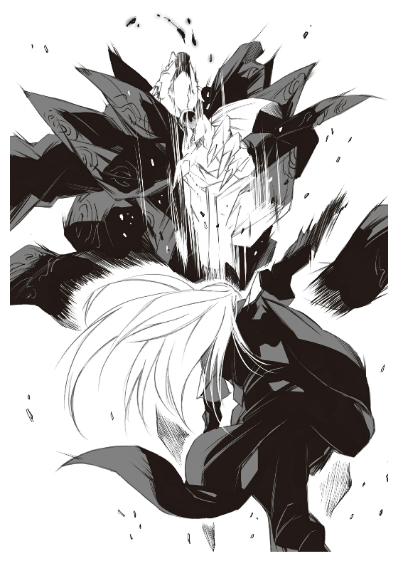「ぬう！？」
“Hừ!?”
「いい加減にしろよ、酔っ払いが！」
“Đủ rồi đấy, cái tên say xỉn này!”
俺はそう言ってプレリクスの血魔爪(ブラッディネイル)を払いのけ、その無防備になった顔面を蹴り上げた。
Tôi vừa nói dứt lời vừa gạt phăng Huyết Ma Trảo (Bloody Nail) của Prelix, rồi tung cước đá thẳng vào khuôn mặt đang không phòng bị của hắn.
「グッ！？」
“Hự!?”
吹き飛ばされたプレリクスは、ようやく正気に戻ったのか立ち上がって俺を睨んでいる。
Bị đá bay đi, Prelix dường như cuối cùng cũng tỉnh táo lại, hắn đứng dậy và lườm tôi.
そんなの気にせず、俺はヒナタを横たえた。
Chẳng bận tâm đến điều đó, tôi đặt Hinata nằm xuống.
「――後は任せたわ、よ」
“――Phần còn lại giao cho cậu đấy.”
「楽勝」
“Dễ ợt.”
「バカね、とっくに信じてるわ」
“Đồ ngốc, tôi đã tin tưởng cậu từ lâu rồi.”
そう言うなりヒナタは目を閉じ――気絶した。
Vừa dứt lời, Hinata nhắm mắt lại――rồi ngất đi.
良かった、と思った。
May quá, tôi thầm nghĩ.
この先の光景は、あまりヒナタには見られたくなかったから。
Bởi vì cái quang cảnh sắp tới đây, tôi không muốn để Hinata nhìn thấy chút nào.
●
「あーあ、愚かなヤツ等よ。リムルを怒らせるとはな……」
“Aaa, lũ ngu xuẩn này. Dám chọc giận Rimuru cơ đấy……”
困った事をしてくれたな。これでは我の出番がなくなるではないか――と、〝無限回廊(エンドレスループ)〟の中に囚われていたヴェルドラが嘆いた。
Các ngươi đã gây ra chuyện phiền phức rồi. Thế này thì ta làm gì còn đất diễn nữa chứ――Verudora, kẻ đang bị giam cầm trong 〝Vô Hạn Hồi Lang (Endless Loop)〟, than thở.
上も下もない空間。
Một không gian không có trên cũng chẳng có dưới.
合わせ鏡のように、ずっと書棚が並んでいるだけ。
Chỉ có những kệ sách xếp thành hàng trải dài mãi như những tấm gương đối diện nhau.
ヴェルドラはそんな場所に居るのに、実に平然と構えていた。そして、どうにかしてここから脱出しようと、究極能力(アルティメットスキル)『究明之王(ファウスト)』で『解析鑑定』を行(おこな)っていたのである。
Dù đang ở chốn như vậy, Verudora vẫn tỏ ra vô cùng bình thản. Và rồi, để tìm cách thoát khỏi đây, anh ta đang tiến hành 『Phân Tích Giám Định』 bằng Kĩ năng tối thượng (Ultimate Skill) 『Điều Tra Vương (Faust)』.
危機感はなかった。
Không hề có chút cảm giác nguy cơ nào.
何故ならば、もっと難解な『無限牢獄』に囚われていた経験があるからだ。
Bởi lẽ, anh ta từng có kinh nghiệm bị giam cầm trong 『Ngục Tù Vô Hạn』 phức tạp hơn nhiều.
それに、力技なら脱出出来ると、既に見当がついていたのである。
Thêm nữa, anh ta đã dự tính được rằng nếu dùng sức mạnh thô bạo thì có thể thoát ra được.
「は？ 何を言っている？ 状況は私達に有利だよ。馬鹿正直に一対一で戦わなくても、二人かかりで魔王リムルを倒せば終わりだもの」
“Hả? Ngươi đang nói gì vậy? Tình hình đang có lợi cho chúng ta đó. Không cần phải chiến một đối một một cách ngay thẳng, chỉ cần hai người cùng nhau đánh bại Ma vương Rimuru là xong rồi.”
どこからともなく聞こえるピピンの声が反論したが、それを聞いてもヴェルドラは動じない。
Giọng nói của Pippin vang lên từ hư không phản bác lại, nhưng nghe vậy Verudora vẫn chẳng hề nao núng.
フッと笑って、憐れむように告げる。
Anh ta cười khẩy một tiếng, rồi phán như thể đang thương hại.
「リムルはお人好しだが、狡猾で恐ろしいヤツなのだ。我だって、いつもやり込められておるからな。ありとあらゆる想定を忘れないからこそ、魔王をやれておるのだよ」
"Rimuru tuy tốt bụng nhưng lại là kẻ xảo quyệt và đáng sợ lắm đấy. Đến cả ta đây cũng luôn bị làm cho cứng họng mà. Chính vì không bao giờ quên lường trước mọi tình huống có thể xảy ra, nên cậu ta mới làm Ma Vương được đấy"
「……だから？」
「……Thì sao chứ?」
「うむ。抜け目のないリムルが、お前達が約束を破る可能性を見落とす訳がない。というかむしろ――」
「Ừm. Một Rimuru khôn ngoan như thế đời nào lại bỏ sót khả năng các ngươi nuốt lời. Hay nói đúng hơn là――」
ヒナタが勝っていたら、リムルがその作戦を実行していたかもしれない。
Nếu Hinata thắng, có lẽ Rimuru đã thực hiện kế hoạch đó rồi.
リムルは基本的には真面目で誠実、嘘を嫌っているのだが、負けられない戦いに限っては、どんな卑怯な手段であろうと平然と実行するのである。
Về cơ bản thì Rimuru rất nghiêm túc và chân thành, lại ghét dối trá, nhưng hễ là trận chiến không được phép thua, thì dù thủ đoạn có hèn hạ đến đâu tên đó cũng thản nhiên thực hiện cho bằng được.
今回がどうだったかは不明だが、やっていても不思議ではないと、ヴェルドラはそう思っていた。
Không rõ lần này thế nào, nhưng Verudora nghĩ rằng nếu có chuyện đó xảy ra cũng không có gì lạ.
「なんだ、仮定の話ね。それなら残念、結局はプレリクスが勝ったんだから！」
"Gì chứ, hóa ra là chuyện giả định à. Thế thì tiếc quá, vì rốt cuộc Prelix đã thắng rồi mà!"
ピピンが再び勢い込むが、ヴェルドラはそれを鼻で笑った。
Pippin lại hăng máu lên, nhưng Verudora chỉ khịt mũi cười nhạo điều đó.
「違うと言っておるだろうが。お前達が勘違いしておるから、それが憐れだと教えてやったのだよ」
"Ta đã bảo là sai rồi mà. Tại các ngươi đang hiểu lầm, nên ta mới chỉ cho biết là các ngươi đáng thương hại đến thế nào đấy."
「は？」
"Hả?"
「我は不思議なのだが、どうしてお前達はリムルを見て、二人がかりなら確実に勝てると錯覚したのだ？」
"Ta thấy lạ lắm, tại sao các ngươi nhìn Rimuru mà lại ảo tưởng rằng nếu hai đánh một thì chắc chắn sẽ thắng thế?"
「え？」
"Hả?"
「どう考えても無理であろう？」
"Nghĩ kiểu gì cũng thấy là không thể nào, đúng không?"
「え、いや、だって、は？ 何を言ってるの？ 普通に勝てるでしょ！？」
"Ơ, không, nhưng mà, hả? Ngươi đang nói cái gì vậy? Thắng bình thường là cái chắc rồi còn gì!?"
「貴様こそ、何を言っておる。無理に決まっておるだろうが！！ リムルはな、我だって倒せぬのだぞ！！ ――まあ、負けもしないがな」
"Ngươi mới là đang nói cái gì đấy. Rõ ràng là không thể còn gì nữa!! Rimuru ấy hả, ngay cả ta đây còn không đánh bại được cậu ta nữa là!! ――Mà, ta cũng không thua đâu nhé."
そう。
Phải.
それがヴェルドラの本音、リムルに対する認識である。
Đó là lời thật lòng của Verudora, là nhận thức của anh ta đối với Rimuru.
リムルの攻撃ではヴェルドラを倒せないが、逆もしかりなのだ。
Đòn tấn công của Rimuru không thể đánh bại Verudora, nhưng ngược lại cũng thế.
ヴェルドラが持つ全ての攻撃手段を駆使しても、リムルへは致命打を与えられない。
Dù Verudora có vận dụng tất cả phương thức tấn công mà mình có, cũng không thể tung đòn chí mạng lên Rimuru.
魔素量(エネルギー)ではヴェルドラが圧倒しているにもかかわらず、その勝敗は千日手にもつれ込んでしまうのだった。
Mặc dù Verudora áp đảo về Lượng ma tố (Năng lượng), nhưng kết cục thắng bại sẽ rơi vào thế bế tắc không hồi kết.
かと言って、リムルの攻撃が弱い訳ではない。
Nói vậy không có nghĩa là đòn tấn công của Rimuru yếu.
ヴェルドラだから耐えられるだけで、普通の魔人なら話にならないレベルで凶悪だった。
Chỉ vì là Verudora nên mới chịu đựng được thôi, chứ nếu là Ma nhân bình thường thì nó hung hãn đến mức không cần bàn tới.
八星魔王(オクタグラム)でも、リムルの相手になるのは上位勢だけだろう。
Ngay cả trong Bát Tinh Ma Vương (Octagram), chắc cũng chỉ có những kẻ ở top đầu mới làm đối thủ của Rimuru được.
そして、リムルを倒しきれる可能性があるのは――
Và, kẻ có khả năng đánh bại hoàn toàn Rimuru là――
「つまりだ、あのリムルを倒せぬ。しかもヤツ等は、リムルを怒らせるという失態を犯したのだ」
"Tóm lại là, không thể đánh bại tên Rimuru đó được đâu. Hơn nữa bọn chúng còn phạm phải sai lầm là chọc giận Rimuru nữa."
「失態……？」
"Sai lầm……?"
「うむ、リムルは温厚だからな。基本的には本気を出さずに、手加減から入る。
"Umu, Rimuru vốn ôn hòa mà. Về cơ bản cậu ta không tung hết sức đâu, mà sẽ bắt đầu bằng việc nương tay.
しかし、アレだけブチ切れれてしまったら……」
Tuy nhiên, nếu hắn đã điên tiết lên đến mức đó rồi thì..."
ヴェルドラが何を言いたいのか、ピピンにもようやく理解出来た。
Cuối cùng Pippin cũng đã hiểu được điều Verudora muốn nói.
しかし、信じられずにいる。
Thế nhưng, hắn vẫn chưa thể tin được.
（そんな、まさか……）
(Không thể nào, chẳng lẽ...)
魔王とは言っても、たかがスライムが、と思わずにはいられない。
Dù mang danh Ma Vương, nhưng cũng chỉ là một con Slime, hắn không thể không nghĩ như vậy.
妖気(オーラ)だってそこまで大きくないし、威圧感だってそれほどではない。
Yêu khí (Aura) cũng đâu có lớn đến thế, và cảm giác uy áp cũng chẳng đáng là bao.
かなりのんびりした性格らしく、マルクシュア王国への制裁だって甘過ぎるものだった。
Tính cách có vẻ khá thong dong, ngay cả sự trừng phạt đối với Vương quốc Marcushua cũng quá đỗi nhẹ nhàng.
その行為は舐められても当然で――しかし、弱イと証明するに足る証拠は何一つない。
Hành động đó bị coi thường cũng là đương nhiên thôi ―― tuy nhiên, lại chẳng có bất cứ bằng chứng nào đủ để chứng minh hắn yếu cả.
それに気付いたピピンは、一気に顔色が悪くなった。
Nhận ra điều đó, sắc mặt Pippin bỗng chốc trở nên tồi tệ.
演算特化型のピピンでも、入力されるデータが間違っていれば、正解には辿り着けないものなのだ。
Dù là kiểu chuyên hóa tính toán như Pippin, nhưng nếu dữ liệu đầu vào bị sai lệch, thì cũng không thể nào tìm ra đáp án chính xác được.
だからこそ、常日頃から情報収集を怠るべきではないし、万物を観察して些細な違和感すら大切に検証しなければならなかった。
Chính vì thế, không được lơ là việc thu thập thông tin hàng ngày, phải quan sát vạn vật và kiểm chứng cẩn thận ngay cả những cảm giác sai lệch nhỏ nhặt nhất.
(私達はそれを怠ったんだ……)
(Chúng ta đã lơ là việc đó rồi……)
ピピンはそう悟った。
Pippin đã ngộ ra điều đó.
しかしそれでも、アシュレイやプレリクスが負けるとは思えないのだ。
Tuy nhiên dù vậy, hắn vẫn không nghĩ rằng Ashley và Prelix sẽ thua.
アシュレイの強さは本物だし、プレリクスの『絶対不死』は攻略不可能。だから絶対に負けるはずがないのだが、何故だろうか？
Sức mạnh của Ashley là hàng thật, còn 『Bất Tử Tuyệt Đối』 của Prelix là bất khả công phá. Chính vì thế lẽ ra tuyệt đối không thể thua được, nhưng tại sao chứ?
ピピンの胸に、一抹の不安が去来したのだった。
Trong lòng Pippin chợt dấy lên một thoáng bất an.
●
俺は静かに立ち上がり、プレリクスと、その背後で様子を窺っていたアシュレイを睨みやる。
Tôi lẳng lặng đứng dậy, trừng mắt nhìn Prelix và kẻ đang lén lút quan sát tình hình phía sau hắn là Ashley.
そして告げた。
Và rồi tuyên bố.
「あのさあ、正直言うと、俺はお前達が何をしていようが興味なかったんだ。人を大量に殺している訳でもないし、敵対しなきゃならない理由もなかった。今回の件だって巻き込まれただけだし、ある程度の事なら変に内政干渉する気もなかったんだが――」
回の件だって巻き込まれただけだし、ある程度の事なら変に内政干渉する気もなかったんだが――」
"Này, nói thật là, ta chẳng quan tâm các người đang làm gì đâu. Chẳng phải đang giết nhiều người, cũng không có lý do gì để phải đối đầu. Vụ lần này cũng chỉ là bị cuốn vào thôi, và với một mức độ nào đó thì ta cũng không định can thiệp nội bộ một cách lằng nhằng—"
そう言いながら髪の毛をかき上げ、後ろに流す。
Vừa nói, tôi vừa vuốt ngược mái tóc ra sau.
イライラする気持ちを、少しでも落ち着かせる為だ。
Làm vậy để trấn tĩnh lại cơn bực bội trong lòng dù chỉ một chút.
「俺の大切な仲間をこれだけ傷付けたんだ、覚悟は出来てるんだよな？」
“Dám làm tổn thương đồng đội quan trọng của ta đến mức này, các ngươi chắc là đã giác ngộ rồi nhỉ?”
もう我慢の限界だが、最後の確認だけはしなければならない。それを怠ると、無用な血を流してしまうからだ。
Sự chịu đựng đã chạm đến giới hạn rồi, nhưng tôi bắt buộc phải xác nhận lần cuối cùng. Bởi nếu bỏ qua bước đó, sẽ dẫn đến việc đổ máu vô ích.
忍耐力が試されていた。
Khả năng nhẫn nại của tôi đang bị thử thách.
「あっはっは、覚悟だって？ それは君の方だろ、魔王リムル」
“Á ha ha, giác ngộ ư? Câu đó dành cho cậu mới phải chứ, Ma Vương Rimuru.”
「フッ、愚かなヤツよ。この状況でこちらがルールを守るとでも？ 二対一で貴様を潰せば、より安全に、そして確実に、我等の勝利が手に入るのだぞ？」
“Hừ, kẻ ngu xuẩn. Trong tình huống này mà nghĩ bọn ta sẽ tuân thủ luật lệ sao? Nếu lấy hai đánh một để nghiền nát nhà ngươi, thì bọn ta sẽ nắm chắc phần thắng một cách an toàn hơn nhiều đấy?”
ああ、予想通りの回答だ。
A, đúng là câu trả lời như dự đoán.
俺はそれを聞いて嬉しくなり、ついつい笑みを浮かべてしまった。
Nghe thấy vậy, tôi cảm thấy vui sướng và bất giác nở nụ cười.
「む？ 何を笑って――ヘブッ！？」
“Hử? Ngươi cười cái gì――Hự!?”
俺は有無を言わせず、プレリクスを殴り飛ばしていた。
Tôi chẳng để hắn nói thêm lời nào, đấm bay Prelix đi.
もう言質は取ったから、遠慮は要らない。
Đã nắm được lời xác nhận từ chính miệng hắn rồi, nên không cần khách khí nữa.
ルールを先に破ったのはアシュレイ達なのだし、ここから先は何でもアリで全面戦争開始だった。
Nhóm Ashley là kẻ phá luật trước, nên từ giờ trở đi là chiến tranh toàn diện, bất chấp thủ đoạn.
「あはは、無駄だよ。その程度の攻撃ではプレリクスに通用しないし、仮に殺せたとしても、復活するんだ。さっきのヒナタ戦で思い知っただろう？」
“A ha ha, vô ích thôi. Đòn tấn công cỡ đó không xi-nhê gì với Prelix đâu, và giả sử có giết được hắn thì hắn cũng sẽ hồi sinh thôi. Trận đấu với Hinata vừa rồi chắc ngươi cũng thấm thía rồi chứ?”
「だから？」
“Thì sao?”
俺は倒れ伏したプレリクスにトドメの蹴りを踏み下ろしながら、アシュレイへと顔を向けて聞き返した。
Tôi vừa giẫm cú đá kết liễu xuống Prelix đang nằm sấp, vừa quay mặt về phía Ashley hỏi lại.
「回数制限があるとでも期待してるのかな？ それなら残念！ プレリクスはね、夜に死ぬ事はないんだよ」
“Ngươi đang kỳ vọng là có giới hạn số lần hồi sinh hả? Nếu vậy thì tiếc quá! Prelix ấy mà, hắn không thể chết vào ban đêm đâu.”
ニヤッと笑ってアシュレイが教えてくれたが、だから何だという話であった。
Ashley cười nhếch mép giải thích cho tôi, nhưng chuyện đó thì có nghĩa lý gì chứ.
今の殴りや蹴りは殺す気だったのではなく、単なる八つ当たりだ。ヒナタをいたぶってくれたお返しは、これからジックリ行うつもりなのである。
Những cú đấm đá vừa rồi không phải là tôi định giết hắn, mà chỉ đơn thuần là trút giận thôi. Màn trả đũa cho việc hắn đã hành hạ Hinata, từ giờ tôi mới định thực hiện từ từ và kỹ lưỡng đây.
《……告。十分経過したので、いつでも〝無限回廊(エンドレスループ)〟を解除出来ますが――》
《……Thông báo. Đã trôi qua mười phút, nên tôi có thể giải trừ 〝Vô Hạn Hồi Lang (Endless Loop)〟 bất cứ lúc nào, nhưng mà――》
待機で。
Cứ chờ đi.
でしょうね、と言わんばかりに智慧之王(ラファエル)さんが沈黙した。
Trí Tuệ Vương Raphael-san im lặng như thể muốn nói "Tôi biết ngay mà".
当たり前だろ？
Đương nhiên rồi còn gì?
ここでヴェルドラを呼び出したって、俺の怒りは晴れないのだから。
Giờ mà gọi Verudora ra đây thì cơn giận của tôi cũng đâu có nguôi ngoai được.
我の出番が――などと嘆く声が聞こえた気がしたが、無視であった。
Tôi có cảm giác nghe thấy tiếng than vãn kiểu như "Lượt diễn của ta――", nhưng tôi lờ đi luôn.
「どうも勘違いしてるようだけど、ソイツが不死ってのが信じられないんだよね。それってさ、条件があるんじゃないの？」
"Có vẻ các ngươi đang hiểu lầm gì đó, chứ ta không tin là tên này bất tử đâu. Chuyện đó ấy mà, có điều kiện kèm theo phải không?"
俺はそう指摘した。
Tôi đã chỉ ra như vậy.
〝霊子崩壊(ディスインテグレーション)〟が最強なのは間違いないのだ。
Không còn nghi ngờ gì nữa, 〝Linh Tử Băng Hoại (Disintegration)〟 chính là mạnh nhất.
ウチのディアブロだって、直撃すれば消滅すると言っていたほどだし。
Đến mức Diablo nhà tôi còn bảo rằng nếu trúng trực diện thì cũng sẽ bị tiêu diệt cơ mà.
それを喰らっても死なないとすれば、本体は別にいるか、本当は当たっていなかったかの、どちらかが疑わしい。
Nếu hứng trọn đòn đó mà vẫn không chết, thì nghi vấn đặt ra là hoặc bản thể hắn đang ở chỗ khác, hoặc thực ra đòn đó đã không trúng.
俺がヒナタから逃げて助かったのもそれだし、どちらかと言えば本体は別、という方が正解なんじゃないかという気がしていた。
Đó cũng là cách tôi thoát khỏi Hinata và sống sót, nên tôi có cảm giác rằng giả thuyết bản thể nằm ở chỗ khác mới là đáp án chính xác.
しかし、だ。
Tuy nhiên.
俺の頼もしい相棒である智慧之王(ラファエル)さんの意見は別だった。
Ý kiến của cộng sự đáng tin cậy của tôi, Trí Tuệ Vương Raphael-san lại khác.
《――確かに直撃していました。ただし、個体名：プレリクスの魔素が分解され、霊子すらもバラバラに散ったのを確認した直後、不思議な動きで再結合されたのです》
《――Quả thực là đã trúng trực diện. Tuy nhiên, ngay sau khi xác nhận ma tố của cá thể Prelix bị phân giải, thậm chí các linh tử cũng bị đánh tan tác, thì chúng đã tái kết hợp lại bằng một chuyển động kỳ lạ》
この魔塔内でのみ働く未知なる力なのか、あるいはプレリクスの『絶対不死』という権能によるものなのか、どちらであっても有り得そうな理由だ。
Là do một sức mạnh chưa biết chỉ hoạt động bên trong Ma Tháp này, hay là do Quyền năng 『Bất Tử Tuyệt Đối』 của Prelix, dù là cái nào thì cũng đều là lý do có khả năng xảy ra.
そして俺は、それを聞いて一つの仮説を立てた。
Và rồi, nghe thấy thế, tôi đã đặt ra một giả thuyết.
この魔塔は閉じた空間になっているから、〝魂〟の拡散が生じにくい環境となっている。
Vì Ma Tháp này đã trở thành một không gian khép kín, nên nó trở thành môi trường khó xảy ra sự khuếch tán của 〝Linh hồn〟.
部屋を満たすのは魔法の光で、星明かりすら差し込んでいないほどだし。
Căn phòng tràn ngập ánh sáng ma pháp, đến nỗi ánh sao cũng chẳng chiếu vào được.
その作りから推測されるのだが、プレリクスは陽光を苦手としているんじゃなかろうか？
Từ cấu trúc đó có thể suy đoán rằng, phải chăng Prelix yếu thế trước ánh sáng mặt trời?
ルミナスから聞いた話だが、この世界の吸血鬼族(ヴァンパイア)という種族も、前世の物語にあったように弱点を抱えているらしい。
Theo chuyện tôi nghe được từ Luminous, thì Hấp Huyết Quỷ Tộc (Vampire) của thế giới này dường như cũng mang những điểm yếu giống như trong các câu chuyện ở kiếp trước của tôi.
それはメジャーなヤツで、陽光の下を歩けない、というものだった。
Đó là cái điểm yếu phổ biến nhất: không thể đi lại dưới ánh mặt trời.
ルミナスにはそんな制限などないし、彼女の配下にも陽光を超克した者達が何名か居ると聞いている。
Luminous thì không bị hạn chế như vậy, và nghe nói trong số thuộc hạ của cô ấy cũng có vài kẻ đã khắc phục được ánh mặt trời.
だから、覚醒魔王級に強いプレリクスならば、陽光など克服していると考えるのが自然なのだ――が、それが引っ掛けなんじゃないかなと、逆に思ったワケである。
Vì vậy, nếu là một kẻ mạnh cấp Ma Vương Thức Tỉnh như Prelix, lẽ tự nhiên là sẽ nghĩ hắn đã khắc phục được ánh mặt trời rồi――cơ mà, tôi lại nghĩ ngược lại, biết đâu đó chính là cái bẫy.
新月とは、月の光すら射さない真なる闇夜だ。
Trăng non là đêm tối thực sự, nơi ngay cả ánh trăng cũng không chiếu rọi.
真夜中の吸血鬼(ナイトストーカー)という種族にとって最高の環境なのも納得だが、その時だけ限定で発揮される権能があっても不思議はないと思った。
Tôi hiểu rằng đây là môi trường tuyệt vời nhất đối với chủng tộc Dạ Hành Hấp Huyết Quỷ (Night Stalker), nhưng tôi nghĩ cũng chẳng có gì lạ nếu hắn sở hữu một Quyền năng chỉ phát huy giới hạn trong thời điểm đó.
それこそが――
Đó chính là――
《是。その可能性が濃厚だと推測します》
《Khẳng định. Tôi suy đoán khả năng đó là rất cao ạ》
「お前の『絶対不死』ってさ、無敵っぽく振る舞ってるけど、新月限定なんじゃないのかって話さ」
"Cái gọi là 『Bất Tử Tuyệt Đối』 của ngươi ấy mà, ngươi cứ ra vẻ như là vô địch, nhưng thực ra nó chỉ giới hạn trong đêm trăng non thôi phải không?"
「なっ――!?」
"Cái gì――!?"
プレリクスが絶句した。
Prelix nghẹn lời.
それだけで、答えが顔に出てるというものである。
Chỉ bấy nhiêu thôi cũng đủ thấy câu trả lời đã hiện rõ mồn một trên mặt hắn rồi.
「死ね！ 〝神之怒(メギド)〟――！！」
"Chết đi! 〝Thần Nộ (Megiddo)〟――!!"
俺は無造作に、プレリクスの頭上から陽光を降り注がせた。
Tôi thản nhiên giáng một cơn mưa ánh sáng mặt trời xuống ngay trên đầu Prelix.
以前とは違い、夜間でも使用可能になった新型だった。
Khác với trước kia, đây là kiểu mới có thể sử dụng được ngay cả vào ban đêm.
俺の権能も、ユニークスキル『大賢者』から究極能力(アルティメットスキル)『智慧之王(ラファエル)』へと進化した事で、大幅に演算能力が向上している。その上、新たな権能として『空間支配』まで扱える為、成層圏に生成した複数の巨大レンズを焦点させた光を、歪曲させた空間を通じて直接地上までお届け出来るのだ。
Quyền năng của tôi, nhờ việc tiến hóa từ Kỹ năng độc nhất (Unique Skill) 『Đại Hiền Giả』 thành Kỹ năng tối thượng (Ultimate Skill) 『Trí Tuệ Vương (Raphael)』, nên năng lực tính toán đã được nâng cao đáng kể. Thêm vào đó, với tư cách là Quyền năng mới, 『Chi Phối Không Gian』, nên tôi có thể điều khiển ánh sáng được hội tụ bởi vô số thấu kính khổng lồ tạo ra trên tầng bình lưu, rồi truyền trực tiếp xuống mặt đất thông qua không gian bị bẻ cong.
プレリクスを無数の光線が貫いていく。
Vô số tia sáng xuyên thủng người Prelix.
一条(ひとすじ)の光でさえ、必殺の威力を秘めていた。大気で熱拡散していないので、その温度は数十万度に達するのだ。
Ngay cả một tia sáng cũng ẩn chứa uy lực tất sát. Do không bị tản nhiệt vào khí quyển, nên nhiệt độ của nó đạt tới hàng trăm nghìn độ.
如何にプレリクスが不死を誇っていようとも、それなりに苦痛を与えられるはずだが――しかし。
Dù Prelix có tự hào về sự bất tử đến đâu, thì đòn này chắc chắn cũng phải gây ra đau đớn tương ứng, nhưng mà――tuy nhiên.
「グギャァ！？ グググッ、グハァ！ こ、この程度、わ、私の『絶対不死』に『超速再生』があれば、どうという事もないのだァーーッ！！」
""Gugyaa!? Gugugu, Guhaa! C, cái mức độ này, v, với 『Bất Tử Tuyệt Đối』 cùng 『Tái Sinh Siêu Tốc』 của ta thì chẳng là gì cảaa!!""
プレリクスはそう豪語して、俺を睨み付けている。
Prelix mạnh miệng tuyên bố như thế và trừng mắt nhìn tôi.
その言葉の通り、〝神之怒(メギド)〟で死ぬ気配はなさそうだ。
Đúng như lời hắn nói, có vẻ hắn sẽ không chết bởi 〝Thần Nộ (Megiddo)〟.
もっとも、俺だってこれでトドメになるとは思っていた訳ではない。
Tuy nhiên, bản thân tôi cũng không nghĩ rằng đòn này sẽ là đòn kết liễu.
「陽光が弱点かどうか軽く試してみるつもりだったが、どうやら大正解だったみたいだな」
"Ta chỉ định thử nhẹ xem ánh sáng mặt trời có phải là điểm yếu hay không thôi, nhưng xem ra là đoán trúng phóc rồi nhỉ."
「何イ？」
"Cái gì?"
「安心しろって。今は単なる実験で、本番はこれからなんだからさ」
"Cứ yên tâm đi. Vừa rồi chỉ là thí nghiệm đơn thuần thôi, giờ mới là màn chính nè."
俺はそう言って、プレリクスに笑いかけた。
Tôi nói vậy và mỉm cười với Prelix.
〝神之怒(メギド)〟を使用した瞬間、とあるアイデアを閃いたのだ。それを試しながら、プレリクスのタフさがどこまでもつのか実験してみようと思ったのである。
Khoảnh khắc sử dụng 〝Thần Chi Nộ (Megiddo)〟, một ý tưởng chợt lóe lên trong đầu tôi. Tôi định vừa thử nghiệm ý tưởng đó, vừa kiểm tra xem độ trâu bò của Prelix chịu đựng được đến đâu.
そのアイデアとは、このマルクシュア王国に来る前にヒナタが言った『その光牙って光術なんでしょ』というセリフがヒントとなっていた。
Ý tưởng đó được gợi ý từ câu nói của Hinata trước khi chúng tôi đến Vương quốc Marcushua: 『Cái chiêu Quang Nha đó là Quang Thuật phải không』.
獣魔術〝光牙(コアンヤ)〟は光術なのだから、それを再現しようとするなら、同じ光術である〝神之怒(メギド)〟を改造する方が、よりそれらしくなると思い至ったのである。
Vì Thú Ma Thuật 〝Quang Nha (Koan'ya)〟 là Quang Thuật, nên tôi nhận ra rằng nếu muốn tái hiện nó, thì việc cải tạo 〝Thần Nộ (Megiddo)〟 vốn cùng là Quang Thuật sẽ mang lại kết quả giống thật hơn.
また、〝神之怒(メギド)〟を反射させている水の精霊だって、〝鏡蠱(チンクウ)〟を模すように出来ちゃったり――
Ngoài ra, ngay cả các Tinh linh nước đang phản chiếu 〝Thần Nộ (Megiddo)〟 cũng có thể được làm cho mô phỏng theo 〝Kính Trùng (Chinkū)〟 chẳng hạn――
《是。可能です♪》
《Khẳng định. Có thể ạ♪》
流石(さすが)は智慧之王(ラファエル)さんだ。片手間仕事で、俺の望む通りの改造を行ってくれた。
"Quả không hổ danh (Sasuga) Trí Tuệ Vương Raphael-san. Chỉ là công việc làm thêm thôi mà cô ấy đã thực hiện cải tạo đúng như ý tôi muốn."
〝神之怒(メギド)〟改――というよりは、疑似的〝光牙(コアンヤ)〟と〝鏡蠱(チンクウ)〟の完成だった。
"〝Thần Nộ (Megiddo)〟 Cải tiến――hay đúng hơn, là sự hoàn thiện của 〝Quang Nha (Koan'ya)〟 và 〝Kính Trùng (Chinkū)〟 giả lập."
「〝光牙(コアンヤ)〟」
"〝Quang Nha (Koan'ya)〟"
そう叫んで、俺は手の平から光を放った。
"Hét lên như vậy, tôi phóng ra ánh sáng từ lòng bàn tay."
厳密に言えば、手の平の前の空間を歪めて、宇宙からの光をそれっぽく『魔王覇気』で包んで放った訳だ。
"Nói chính xác hơn, tôi bẻ cong không gian trước lòng bàn tay, bao bọc ánh sáng từ vũ trụ bằng 『Bá Khí Ma Vương』 cho ra dáng, rồi phóng đi."
光の龍のように覇気(オーラ)が形成されて見えるが、それは残像だ。実体は光速なので、視認不可能なレベルでプレリクスを貫いていた。
"Bá khí (Aura) hình thành trông giống như con rồng ánh sáng, nhưng đó chỉ là tàn ảnh thôi. Thực thể của nó là tốc độ ánh sáng, nên đã xuyên thủng Prelix ở mức độ mắt thường không thể nhìn thấy được."
空中を光の龍が乱舞しているが、それも全て残像である。〝鏡蠱(チンクウ)〟を模した水の精霊が生み出したレンズに、太陽光が反射しているだけなのだ。
Rồng ánh sáng đang loạn vũ trên không trung, nhưng tất cả cũng chỉ là tàn ảnh. Đó chỉ là ánh sáng mặt trời phản chiếu lên các thấu kính do Tinh linh nước mô phỏng theo 〝Kính Trùng (Chinkū)〟 tạo ra mà thôi.
しかし、見た目だけはかなり精度が高いものになっていた。
Tuy nhiên, xét về mặt hình thức thì độ chính xác khá là cao.
形から入る俺としては、かなり大満足の出来栄えであった。
Với một kẻ chú trọng hình thức như tôi, thì thành phẩm này khiến tôi vô cùng thỏa mãn.
「うん、いい感じじゃないか。これなら、次のヤツも成功しそうだね」
"Ừm, cảm giác tốt đấy chứ. Thế này thì có vẻ cái tiếp theo cũng sẽ thành công thôi."
俺は実験結果に気を良くして、そう呟いた。
Hài lòng với kết quả thực nghiệm, tôi lẩm bẩm như vậy.
それに不吉な予感を覚えたのか、プレリクスが青褪めている。
Có lẽ cảm thấy điềm chẳng lành từ điều đó, Prelix đang tái mét mặt mày.
「ま、待て――」
Kho, khoan đã――
何か言いかけているが、無視した。
Hắn định nói gì đó, nhưng tôi lờ đi.
ヒナタの言葉を思い出していたからだ。
Bởi vì tôi đang nhớ lại lời của Hinata.
『ついでに言うけど、〝霊子崩壊(ディスインテグレーション)〟は光熱を発していないから、対象を閉じ込めて熱ダメージを与えたりとかも出来ないわよ』
『Nhân tiện nói luôn, 〝Linh Tử Băng Hoại (Disintegration)〟 không phát ra quang nhiệt, nên không thể làm mấy trò như nhốt đối tượng lại rồi gây sát thương nhiệt đâu đấy』
〝霊子崩壊(ディスインテグレーション)〟では無理でも、〝神之怒(メギド)〟なら可能だと思うんだよ。
Dù 〝Linh Tử Băng Hoại (Disintegration)〟 không làm được, nhưng tôi nghĩ 〝Thần Nộ (Megiddo)〟 thì có thể.
思いついたのなら、即実験してみるべきだった。
Đã nghĩ ra rồi thì phải thử nghiệm ngay mới được.
《是。いつでも可能です！》
"《Khẳng định. Có thể thực hiện bất cứ lúc nào ạ!》"
ほら、智慧之王(ラファエル)さんだってノリノリだしさ。
Thấy chưa, ngay cả Trí Tuệ Vương Raphael-san cũng đang hăng hái lắm đấy.
これはもう、実行するしかないという話なのだ。
Thế này thì chỉ còn nước triển khai luôn thôi.
「〝光牙(コアンヤ)〟最大出力！！」
"〝Quang Nha (Koan'ya)〟 Tối Đa Công Suất Tối Đa!!"
なんて叫んでみたが、いわゆる一点集中の〝神之怒(メギド)〟だった。
Tuy hét lên như vậy, nhưng thực chất nó là 〝Thần Nộ (Megiddo)〟 tập trung vào một điểm.
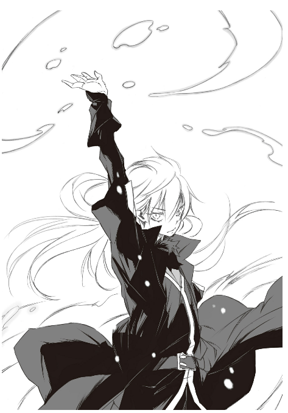手の平から放出しているように見せているが、実際にはプレリクスの頭上から、陽光を収束させて降り注がせている。
Trông thì như được phóng ra từ lòng bàn tay, nhưng thực tế là tôi đang hội tụ ánh sáng mặt trời từ trên đỉnh đầu Prelix và giáng xuống.
その直径は人ひとり呑み込んで余りあるほどであり、模擬〝光牙(コアンヤ)〟で包み込んだ内部熱量は凄まじい事になっているであろう。陽光が弱点かどうかとか関係なしに、必殺の威力を秘めていそうであった。
Đường kính của nó thừa sức nuốt chửng một người, và lượng nhiệt bên trong được bao bọc bởi 〝Quang Nha (Koan'ya)〟 giả lập chắc chắn là vô cùng kinh khủng. Bất kể ánh sáng mặt trời có phải là điểm yếu hay không, nó dường như ẩn chứa uy lực tất sát.
光の円柱に包まれる形になったプレリクスは、紳士然とした態度を投げ捨てて苦しんでいる。
Bị bao trùm trong trụ ánh sáng, Prelix vứt bỏ cái thái độ ra vẻ quý ông và đang quằn quại trong đau đớn.
「グギャァーーーーオオオオオッーーッ！？」
"Gugyaaaaaーーーーooooohhh!!?"
聞く者まで怯えそうなほどの、苦悶の叫び声を上げていた。
Hắn cất tiếng thét bi thương đến mức khiến người nghe cũng phải khiếp sợ.
けれど許さない。
Tuy nhiên, tôi sẽ không tha thứ đâu.
これで死ぬとは思っていないし、ヒナタをいたぶってくれた御礼はキッチリお返ししなければならないのだ。
Tôi không nghĩ hắn sẽ chết vì đòn này, và tôi phải trả lễ sòng phẳng cho việc hắn đã hành hạ Hinata.
「グゥオオオオーーーッ、ピピーーーーーーーンッ！！ 空間を閉じてくれえ、早くゥ、コイツの邪魔を――」
"Guoooooooh, Piiipiiiiiiiin!! Khép không gian lại đi, mau lênnn, cản trở tên này――"
プレリクスが必死に叫んでいる。
Prelix đang gào thét trong tuyệt vọng.
陽光で焼け爛(ただ)れるも『超速再生』で復活し、それを何度も繰り返しつつ、どうにかこうにか声を張り上げる事に成功したようだ。
Dù bị ánh sáng mặt trời thiêu đốt lở loét nhưng hắn vẫn hồi phục nhờ 『Tái Sinh Siêu Tốc』, và trong lúc lặp đi lặp lại quá trình đó nhiều lần, có vẻ như hắn đã cố gắng lắm mới gào lên được.
しかしそれが限界で、俺の〝神之怒(メギド)〟からは逃げられずにいた。
Nhưng đó đã là giới hạn rồi, hắn vẫn không thể nào thoát khỏi 〝Thần Nộ (Megiddo)〟 của tôi.
低コストだから、連続稼働しても疲れない。それが〝神之怒(メギド)〟の長所の一つ。
Vì tiêu tốn ít năng lượng nên dù vận hành liên tục cũng không thấy mệt. Đó là một trong những ưu điểm của 〝Thần Nộ (Megiddo)〟.
つまりプレリクスは、もう動けなくなったも同然なのだった。
Tóm lại, Prelix coi như đã không còn cử động được nữa.
そして、助けを求められたピピンの方も、そう簡単には要望に応えられないだろう。
Và, phía Pippin, kẻ vừa được cầu cứu, chắc cũng không thể đáp lại yêu cầu đó một cách dễ dàng đâu.
何しろピピンの相手をしているのは――
Bởi lẽ kẻ đang đối đầu với Pippin chính là――
『やってるよ！ やってるんだけど、何よ！ もう遊びの時間は終わりです、って、誰が介入してるのよ！？』
"Ta đang làm đây! Ta đang làm nhưng mà cái gì thế này! Đã bảo giờ chơi kết thúc rồi cơ mà, rốt cuộc kẻ nào đang can thiệp vào vậy!?"
智慧之王(ラファエル)さんだよ。
Là Trí Tuệ Vương Raphael-san đấy.
演算特化型だそうだが、俺の相棒に勝てるわけがない。
Nghe bảo hắn là kiểu chuyên hóa tính toán, nhưng làm sao mà thắng nổi cộng sự của tôi được chứ.
《当然です！》
《Đương nhiên rồi ạ!》
うむ。
Ừm.
「諦めろ。もっと手こずるかと思ったけど、お前はもう終わりだよ」
"Từ bỏ đi. Ta cứ tưởng sẽ vất vả hơn cơ, nhưng ngươi xong đời rồi."
俺はそう告げて、プレリクスへの興味を失った。
Tôi tuyên bố như vậy, rồi mất hứng thú với Prelix.
そして最後に残ったアシュレイへと視線を向けて、直刀を抜き放って正眼に構えたのだった。
Rồi cuối cùng, hướng ánh mắt về phía Ashley còn lại, rút thẳng kiếm ra và chĩa thẳng vào mặt đối phương.
●
不味(まず)い事になった――と、アシュレイは思った。
Chuyện trở nên tồi tệ rồi――Ashley thầm nghĩ.
この時になってようやく、魔王リムルを過小評価し過ぎていたのだと悟る。
Đến lúc này hắn mới ngộ ra rằng mình đã đánh giá quá thấp Ma Vương Rimuru.
聖人ヒナタと互角か少し上、という認識だったが、それは大間違いだった。
Hắn nhận định rằng Rimuru chỉ ngang ngửa hoặc nhỉnh hơn Thánh nhân Hinata một chút, nhưng đó là một sai lầm to lớn.
蓋を開けてみれば、比較にならない化け物だったのだ。
Đến khi sự thật phơi bày, đó lại là một con quái vật không thể đem ra so sánh được.
(――どうする？ ピピンはヴェルドラを封じ込めるので手一杯だし、プレリクスはあの様だ。助けは来ない以上、僕が何とかするしかない訳だが……)
(――Làm sao đây? Pippin thì bận tối mắt tối mũi với việc phong ấn Verudora rồi, còn Prelix thì ra nông nỗi kia. Một khi không có cứu viện thì ta đành phải tự mình xoay xở thôi, nhưng mà……)
実際、勝利は確実だと考えていた。
Thực tế, hắn đã đinh ninh rằng chiến thắng là điều chắc chắn.
アシュレイとプレリクスはほぼ互角だが、総合力ではアシュレイの方が上回る。
Ashley và Prelix gần như ngang ngửa nhau, nhưng xét về năng lực tổng hợp thì Ashley vượt trội hơn.
天候や日時などに左右される事なく、あらゆる状況下で万全の肉体性能を発揮出来るからだ。
Đó là bởi hắn có thể phát huy thể chất hoàn hảo trong mọi tình huống mà không bị ảnh hưởng bởi thời tiết hay thời gian.
逆に言えば、特定条件下ではプレリクスの方が強いのである。
Ngược lại, trong những điều kiện nhất định thì Prelix lại mạnh hơn.
それが――〝今〟だった。
Đó chính là ―― 〝Lúc này〟.
陽光が完全に遮られる新月の晩ならば、プレリクスの『絶対不死』が発動されるのだ。
Vào những đêm trăng non khi ánh mặt trời bị che khuất hoàn toàn, 『Tuyệt Đối Bất Tử』 của Prelix sẽ được kích hoạt.
勿論、日の光の射さない地下空間などといった、特殊な環境下でも条件は同じだ。
Đương nhiên, điều kiện cũng tương tự đối với các môi trường đặc thù như không gian ngầm nơi ánh mặt trời không chiếu tới.
プレリクスの弱点は陽光。実のところ夜や昼といった概念ではなく、れっきとした自然現象なのだった。
Điểm yếu của Prelix là ánh nắng mặt trời. Thật ra, không phải là khái niệm ngày hay đêm, mà là một hiện tượng tự nhiên rõ ràng.
それがバレても、新月ならば手立てはない。そのハズだったのだが……魔王リムルは『空間支配』によるとんでもない裏技を使って、真夜中に太陽を現出せしめたのだった。
Dù có bị lộ, nhưng nếu là trăng non thì cũng vô phương cứu chữa. Lẽ ra phải là vậy... nhưng Ma Vương Rimuru đã sử dụng 『Chi Phối Không Gian』, một chiêu trò ăn gian khủng khiếp, để khiến mặt trời xuất hiện ngay giữa đêm khuya.
(無茶苦茶だ！ その発想、普通は思いついたりしないぞ！？)
(Vô lý hết sức! Cái ý tưởng đó, bình thường làm gì có ai nghĩ ra chứ!?)
出来るかどうか問われたら、アシュレイにも不可能な技だった。
Nếu bị hỏi có làm được không, thì ngay cả với Ashley đó cũng là kỹ thuật bất khả thi.
アシュレイだって『空間転移』などは可能だが、別の場所と空間を繋げたまま長時間維持するなど、とんでもない演算処理が必要となり、脳のキャパシティをオーバーしてしまうだろう。
Ngay cả Ashley cũng có thể sử dụng 『Chuyển Di Không Gian』, nhưng việc duy trì kết nối không gian với một địa điểm khác trong thời gian dài đòi hỏi khả năng xử lý tính toán khủng khiếp, chắc chắn sẽ khiến dung lượng não bộ bị quá tải.
瞬間なら可能だが、それでは意味がないのだ。
Nếu chỉ trong khoảnh khắc thì còn có thể, nhưng làm thế thì chẳng có ý nghĩa gì.
それ以前に、陽光を持てこようという発想が浮かばなかったので、それを実現させたリムルに対して畏怖の念を抱いたほどだった。
Hơn nữa, trước đó hắn còn chẳng nảy ra ý tưởng mang ánh sáng mặt trời tới, nên hắn đã cảm thấy kinh sợ đối với Rimuru, kẻ đã hiện thực hóa được điều đó.
それに魔王リムルは、現在行使中の〝神之怒(メギド)〟という技が通用しなかったとしても、他の手段を隠し持っている様子だった。
Thêm vào đó, Ma Vương Rimuru có vẻ vẫn còn che giấu những thủ đoạn khác, ngay cả khi kỹ thuật đang thi triển là 〝Thần Nộ (Megiddo)〟 không có tác dụng.
ハッタリかと思ったが、それは本気だと思い知らされた。
Tưởng chỉ là hư trương thanh thế, nhưng hắn đã bị buộc phải nhận ra đó là sự thật.
「まあさ、殺せない相手なんてイチイチ相手すんのも面倒だし、最悪は封じてしまうつもりだったけどな。〝神之怒(メギド)〟が通用したんなら、そこで仲間がやられるのを見学して反省してろ」
"Mà, đối phó từng tên một với kẻ không giết được thì phiền phức lắm, nên tệ nhất thì ta định phong ấn hắn lại thôi. Nếu 'Thần Nộ (Megiddo)' đã có tác dụng, thì ngươi cứ ở đó mà kiểm điểm trong lúc xem đồng bọn bị xử lý đi."
などと、実に淡々と次策を口にしていたのだ。
Hắn nói ra đối sách tiếp theo một cách thực sự thản nhiên như vậy đó.
(何らかの封印技も所有してる、って訳かい。しかも、この高難易度の技を演算処理しながら、同時に行使可能って事だよな？ 有り得るのか、それ？)
(Nghĩa là hắn cũng sở hữu kỹ thuật phong ấn nào đó sao. Hơn nữa, ý là hắn có thể thi triển nó đồng thời trong lúc đang xử lý tính toán cho kỹ thuật có độ khó cao này ư? Chuyện đó có thể xảy ra sao?)
異常だった。
Thật dị thường.
単純な物理的戦闘能力よりも、その多彩な権能の底が見えない事実が、アシュレイを委縮させていた。
Hơn cả năng lực chiến đấu vật lý đơn thuần, sự thật rằng không thể nhìn thấu được đáy của những Quyền năng đa dạng đó đã khiến Ashley phải e sợ.
そして現状――
Và hiện trạng――
一対一の戦いが始まろうとしている。
Trận chiến một chọi một sắp sửa bắt đầu.
プレリクスを鎧袖一触(がいしゅういっしょく)した相手に、アシュレイが勝てるかどうか……。
Liệu Ashley có thể thắng được đối thủ đã đánh bại Prelix dễ như trở bàn tay (Gai-shuu-is-shoku) hay không……
(いや、まだだ！ 魔王リムルはプレリクスの弱点を適切についたからこそ、労せず勝てただけだ。だったら、実力勝負において僕が負けるはずがない！！）
(Không, chưa đâu! Chính vì Ma Vương Rimuru đã đánh trúng điểm yếu của Prelix một cách thích hợp, nên hắn mới thắng dễ dàng như vậy. Nếu thế thì, trong một cuộc đọ sức bằng thực lực, không đời nào ta lại thua được!!)
アシュレイはそう思い直し、闘志を漲(みなぎ)らせた。
Ashley nghĩ lại như vậy, và sục sôi ý chí chiến đấu.
ここで戦わずに負けを認めるのではなく、魔王リムルのハッタリに呑まれず勝利する道を選んだのだ。
Hắn chọn con đường không chấp nhận thua cuộc mà chưa chiến đấu, không để bị lấn át bởi sự hư trương thanh thế của Ma Vương Rimuru, mà sẽ giành lấy chiến thắng.
しかし現実は無情である。
Tuy nhiên, hiện thực vốn vô tình.
アシュレイはそれを、自分の身をもって理解する事になる。
Ashley sẽ phải tự mình thấm thía điều đó.
●
アシュレイが短刀を二本取り出して、両手に構えた。
Ashley rút ra hai thanh đoản đao và thủ thế bằng cả hai tay.
短刀と言っても、小刀より少し短いくらいのサイズである。
Gọi là đoản đao, nhưng kích thước của chúng chỉ ngắn hơn tiểu đao một chút.
ヨウムの仲間になった獣人族(ライカンスロープ)のグルーシスとかと、似たような感じの戦闘スタイルみたいだな。
Trông có vẻ là phong cách chiến đấu khá giống với Grucius thuộc Thú Nhân Tộc (Lycanthrope), người đã trở thành đồng đội của Youm.
でも、慌てる事はない。
Tuy nhiên, không việc gì phải hoảng loạn.
どんな相手にも対処出来るように、俺だってハクロウに鍛えられているのである。
Để có thể ứng phó với bất kỳ đối thủ nào, tôi cũng đã được Hakurou rèn giũa rồi mà.
地道な努力も大事だけど、経験は何より重要だ。
Nỗ lực bền bỉ tuy quan trọng, nhưng kinh nghiệm mới là thứ quan trọng hơn cả.
知るのと知らないのでは、天と地ほども対応に差が出てくるものだから。
Bởi lẽ biết và không biết sẽ tạo ra sự khác biệt trong cách ứng phó một trời một vực.
俺の直刀の漆黒の刀身が、〝神之怒(メギド)〟の光を呑み込むように鈍く輝いた。
Lưỡi thanh Trực đao đen tuyền của tôi lóe lên ánh sáng mờ đục như thể đang nuốt chửng ánh sáng của 〝Thần Chi Nộ (Megiddo)〟.
その刀身に、黒炎を纏(まと)わせて、アシュレイを観察する。
Tôi bao phủ Hắc viêm lên lưỡi kiếm đó và quan sát Ashley.
身のこなしを見るに、かなりの実力者だ。
Nhìn vào thân pháp, có thể thấy hắn là kẻ có thực lực đáng gờm.
「シッ」
"Xùy"
短い呼吸音の後、衝撃が走り抜けた。
Sau tiếng hít thở ngắn, một chấn động chạy dọc qua.
一瞬にして音速の壁をぶち抜いたアシュレイが、俺の背後に回り込んだのだ。
Trong nháy mắt, Ashley đã phá vỡ bức tường âm thanh và vòng ra sau lưng tôi.
そのまま踊るように、両手の短剣を交互に繰り出してくる。
Cứ thế như đang nhảy múa, hắn luân phiên tung ra hai thanh đoản kiếm trên tay.
一度受けてダメージ量を測定してみたい気もしたが、そういう迂闊な真似をするのは平常時だけだ。
Tôi cũng có ý định thử đỡ một đòn để đo lường lượng sát thương xem sao, nhưng làm mấy trò sơ suất như thế chỉ dành cho lúc bình thường thôi.
思考は実に冷静そのものだが、俺の内心は怒り狂っているのである。
Suy nghĩ thì cực kỳ điềm tĩnh, nhưng trong lòng tôi đang nổi giận điên cuồng.
「悪いな、遊んでやる気はないんだ」
"Xin lỗi nhé, ta không có hứng chơi đùa đâu."
ここで大事なのは、圧倒的な力量差を見せつける事だった。
Điều quan trọng ở đây là phải phô diễn sự chênh lệch sức mạnh áp đảo.
俺としても殺す気はないが、完全に心を折って逆らう意思を根こそぎ奪ってやるつもりなのである。が、死んでしまうなら、それはそれで仕方ないと割り切っていた。
Về phần mình, tôi không có ý định giết hắn, mà định bẻ gãy hoàn toàn tinh thần và tước đoạt tận gốc ý chí phản kháng của hắn. Tuy nhiên, tôi cũng đã xác định tư tưởng rằng nếu hắn có chết thì cũng đành chịu thôi.
怒らせるヤツが悪い。
Lỗi là tại kẻ đã chọc giận tôi.
この一言に尽きるだろう。
Chung quy lại cũng chỉ có một câu đó thôi.
俺は刀身を一閃させるように、直刀を横薙ぎにした。
Tôi vung lưỡi kiếm một đường, quét ngang thanh kiếm thẳng.
その後を追って、黒炎が舞う。
Đuổi theo sau đó, Hắc viêm nhảy múa.
アシュレイは飛び退き、ニヤリと笑った。
Ashley nhảy lùi lại và nở nụ cười nhếch mép.
"フッ、残念だったね。炎は僕も得意としているのさ"
"Hừ, tiếc nhỉ. Lửa cũng là sở trường của ta đấy."
そう言うなり、アシュレイが変身した。
Vừa dứt lời, Ashley biến thân.
炎身化という表現がしっくりくるが、炎の上位精霊であるイフリートに似た感じになっていた。ちゃんと肉体があるので別物なのだが、アシュレイもどうやら精神生命体だったらしい。
Cụm từ Viêm Thân Hóa có lẽ là cách diễn đạt phù hợp nhất, nhưng trông hắn khá giống với Ifrit, Tinh linh lửa cao cấp vậy. Tuy hắn có cơ thể xác thịt rõ ràng nên là một thực thể khác biệt, nhưng có vẻ Ashley cũng là một Tinh Thần Sinh Mệnh Thể.
"ふーん。そいつは面倒だな"
"Hừm. Thế thì phiền phức đấy."
精神生命体同士の戦闘は、本当に面倒なのだ。
Trận chiến giữa các Tinh Thần Sinh Mệnh Thể với nhau thực sự rất phiền toái.
相手より先にエネルギーを奪いきったら勝ち。逆に言えば、途中で止(や)めたら倒しきる事が出来ないのである。
Ai cướp đoạt hết năng lượng của đối phương trước thì thắng. Nói cách khác, nếu dừng (ya) lại giữa chừng thì không thể đánh bại hoàn toàn được.
完全に心を折れたら話は別なんだけど、それを証明するのが難しいんだよね。
Nếu bẻ gãy hoàn toàn ý chí thì là chuyện khác, nhưng việc chứng minh điều đó lại rất khó khăn.
負けました――なんて言われても、それを素直に信じる訳にはいかないのだよ。
Dẫu họ có nói ""Tôi thua rồi"", thì cũng không thể cứ thế mà tin ngay được.
まあ、俺の場合は『暴食之王(ベルゼビュート)』があるから、エネルギーの奪い合いは得意とするところなんだけどさ。
Mà, trường hợp của tôi thì có 『Bạo Thực Vương (Beelzebuth)』, nên khoản tranh cướp năng lượng lại là sở trường ấy chứ.
"その余裕、いつまでももつかな？ 十字閃炎風撃(クロスフレアストーム)ーーッ！！"
"Sự thong dong đó, liệu có giữ được mãi không? Thập Tự Thiểm Viêm Phong Kích (Cross Flare Storm)ーー!!"
アシュレイが両腕を交差させてから、繰り出した斬撃に炎を帯びさせた攻撃を仕掛けてきた。
Ashley bắt chéo hai tay, rồi tung ra đòn trảm kích mang theo lửa tấn công tới.
超高熱と言っても過言ではない威力のそれは、触れてもいないのに放射熱で人体が蒸発するレベルだ。
Uy lực đó nói là siêu cao nhiệt cũng không ngoa, đạt đến cấp độ mà chỉ cần nhiệt lượng bức xạ thôi cũng đủ làm bốc hơi cơ thể con người dù chưa hề chạm vào.
《告。高温プラズマ化している為、瞬間温度は一億度に達するものと思われます》
《Thông báo. Vì đã bị Plasma hóa ở nhiệt độ cao, nên nhiệt độ tức thời được cho là đạt tới một trăm triệu độ ạ.》
瞬間だから大丈夫――って話ではなく、まあ、直撃しなければいいだけの事と。万が一当たったとしても、俺の『万能結界』にも熱変動無効化があるからね。
Không phải kiểu nói là chỉ trong khoảnh khắc nên không sao đâu, mà là, chà, chỉ cần không trúng trực diện là được. Dẫu vạn nhất có trúng đi nữa, thì 『Kết Giới Vạn Năng』 của tôi cũng có khả năng vô hiệu hóa biến động nhiệt mà.
つまり、俺には通用しないのだ。
Tóm lại, nó vô dụng với tôi.
だって、空間に放たれた放射熱は、全て吸収してしまえばいいだけだから。そして本命の両手短刀だが、その交差点を直刀で受け止めれば、超高温だろうが俺の身体まで届かないのだった。
Bởi vì, nhiệt lượng bức xạ phóng ra không gian, tôi chỉ cần hấp thụ hết là xong. Còn về đòn tấn công chủ lực từ hai thanh đoản đao kia, chỉ cần dùng lưỡi kiếm chặn lại ngay giao điểm của chúng, thì dù có siêu cao nhiệt đến đâu cũng không thể chạm tới cơ thể tôi được.
まあ、俺自身にも『自然影響無効』があるから、そんなに心配しなくても大丈夫だったかも知れないな。
Mà, bản thân tôi cũng có 『Vô Hiệu Ảnh Hưởng Tự Nhiên』, nên cũng chẳng cần lo lắng đến thế.
それに対してアシュレイは、はてさてどこまで俺の『黒炎』に耐えられるやら。
Ngược lại, để xem Ashley có thể chịu đựng được 『Hắc viêm』 của tôi đến mức nào nào.
「な、何だよコレ？ 僕の身体を侵蝕して――」
"C, cái gì thế này? Nó đang xâm thực cơ thể ta――"
そりゃあね。
Đương nhiên rồi.
ちゃんと『暴食之王(ベルゼビュート)』の『腐食』効果も付与しているし、精神生命体への特攻手段であろう『魂喰(こんじき)』だって発動させているのだから。
Vì tôi đã gán thêm hiệu quả 『Ăn Mòn』 của 『Bạo Thực Chi Vương (Beelzebuth)』 vào, lại còn kích hoạt cả 『Hồn Thực/Tiêu Thụ Linh Hồn (Konjiki)』, phương thức tấn công đặc hiệu đối với Tinh Thần Sinh Mệnh Thể nữa mà.
こうして鍔迫(つばぜ)り合いしているだけで、俺の勝利がやって来るという寸法だった。
Chỉ cần giằng co (Tsubazeriai) thế này thôi là chiến thắng sẽ tự tìm đến với tôi theo đúng kế hoạch.
「ちくしょう！ こんな、こんなハズはない……この僕が負けるハズが……」
"Chết tiệt! Chuyện này, chuyện này không thể nào…… Ta mà lại thua sao……"
どうしても敗北を認めたくないのか、アシュレイは諦めようとしない。
Có vẻ hắn nhất quyết không muốn thừa nhận thất bại, Ashley vẫn không chịu bỏ cuộc.
どんどん『黒炎』に蝕(むしば)まれながらも、挫(くじ)けずに俺への攻撃を続けている。
Dù đang dần bị 『Hắc viêm』 ăn mòn, hắn vẫn không nản lòng mà tiếp tục tấn công tôi.
しかし、こうなるともう逆転の目はないのだ。
Tuy nhiên, đã đến nước này thì không còn cơ hội lật ngược tình thế nữa rồi.
身体能力にはそこまで差がなさそうだし、技量面でも大きく離れてはいない。
Năng lực thể chất có vẻ không chênh lệch mấy, và về mặt kỹ năng cũng không cách biệt quá lớn.
どちらかと言えば、アシュレイの方が上だと感じる。
Nếu phải nói thì, tôi cảm thấy Ashley nhỉnh hơn.
それでも俺の勝利が揺るがないのは、万全のサポートをしてくれる智慧之王(ラファエル)さんがいるからだ。
Dù vậy, chiến thắng của tôi vẫn không hề lung lay là nhờ có Trí Tuệ Vương Raphael-san hỗ trợ vẹn toàn.
ヒナタとの戦いの最中に習得した『未来攻撃予測』を駆使して、アシュレイの攻撃を完全に読み切ってくれるのである。技量云々の話ではなく、反則に近いほど俺が有利なのだった。
Tận dụng 『Dự Đoán Công Kích Tương Lai』 học được giữa trận chiến với Hinata, cô ấy đọc vị hoàn toàn các đòn tấn công của Ashley. Đây không phải là chuyện kỹ năng hay gì đó, mà tôi đang chiếm ưu thế đến mức gần như phạm quy rồi.
「ヴェルドラさえ、ヴェルドラさえも封じられたんだ、その腰巾着に過ぎない魔王なんかに――」
"Ngay cả Verudora, ngay cả Verudora cũng đã bị phong ấn rồi, cái loại Ma Vương chỉ biết bám đuôi như ngươi thì làm sao――"
ヴェルドラを封じたという幻想が、アシュレイの心の支えになっている様子。なので俺は、それが間違いだと教えてあげる事にした。
Có vẻ cái ảo tưởng rằng đã phong ấn được Verudora đang là chỗ dựa tinh thần cho Ashley. Thế nên, tôi quyết định cho hắn biết rằng điều đó là sai lầm.
「うーん、そんな君に残念なお知らせだ」
"Hừm, có một tin đáng tiếc dành cho ngươi đây."
そう告げるなり、智慧之王(ラファエル)さんにお願いして〝無限回廊(エンドレスループ)〟を解除してもらったのだった。
Vừa dứt lời, tôi nhờ Trí Tuệ Vương Raphael-san giải trừ 〝Vô Hạn Hồi Lang (Endless Loop)〟.
●
出現したヴェルドラを見て、アシュレイの心も折れた。
Nhìn thấy Verudora xuất hiện, ý chí của Ashley cũng sụp đổ.
同時に戻ってきたピピンも、目は虚ろでガタガタと震えている。
Pippin, kẻ vừa trở lại cùng lúc, đôi mắt vô hồn và toàn thân đang run lẩy bẩy.
何があったのかはわからないが、ピピンの編み出した秘奥はとっくの昔に破られていたのだろうと思われた。
Chẳng biết đã có chuyện gì xảy ra, nhưng có vẻ như cái bí thuật tối thượng mà Pippin dày công tạo ra đã bị phá vỡ từ đời nào rồi.
「無理。絶対に勝てない……」
"Không thể nào. Tuyệt đối không thể thắng được..."
ピピンがうわ言のように呟いている。
Pippin lầm bầm như người đang nói mớ.
それを見てアシュレイも悟るしかない。
Chứng kiến cảnh đó, Ashley không muốn hiểu cũng phải hiểu.
「僕達は負けたのか……」
"Chúng ta đã thua rồi sao..."
両手から短刀をポトリと落として、アシュレイはガクリと膝をつく。
Buông hai thanh đoản đao rơi xuống đất, Ashley khụy gối sụp xuống.
そんなアシュレイの耳に、同意の呟きが聞こえた。
Bên tai Ashley lúc này vang lên một tiếng thì thầm đồng tình.
「ああ。私達の負けだ」
"Phải. Là chúng ta đã thua."
プレリクスだった。
Đó là Prelix.
いつの間にか光の柱が消えて、解放されていたようだ。
Trụ ánh sáng đã biến mất từ lúc nào không hay, dường như hắn đã được giải phóng.
呆然と立ち尽くしたまま動かないが、その言葉の通りとっくに諦めたのだろう。
Hắn đứng chết trân đờ đẫn không hề nhúc nhích, nhưng đúng như lời nói đó, có lẽ hắn đã bỏ cuộc từ lâu rồi.
完膚なきまでの敗北で、決着したのだった。
Với một thất bại triệt để, trận chiến đã ngã ngũ.
CHƯƠNG 10: HỒI KẾT VÀ THỜI ĐẠI MỚI
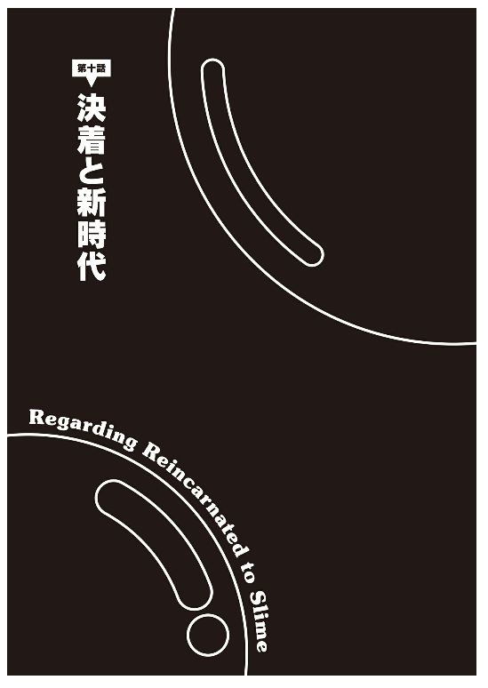座り込んだ者が二名と、立ち尽くすヤツが一名。
Hai kẻ đang ngồi bệt xuống, và một tên đang đứng chết trân.
どう見ても、俺達の完全勝利だった。
Nhìn kiểu gì thì đây cũng là chiến thắng toàn diện của chúng tôi.
「俺達の勝ちって事でいいな？」
"Coi như là chúng ta thắng rồi nhé?"
俺がそう問うと、アシュレイが力なく頷いた。
Tôi hỏi vậy, và Ashley gật đầu một cách yếu ớt.
「ああ、それで構わない」
"À, ta không có ý kiến gì."
よしよし。
Tốt tốt.
いきなり厄介ごとに巻き込まれたが、これにて一件落着――とはならないな。
Bỗng dưng bị cuốn vào chuyện phiền phức, nhưng thế này chưa phải là xong chuyện đâu.
後始末が残っていた。
Vẫn còn phần giải quyết hậu quả nữa.
負けた方は勝った方に従うというルールだったが、星取り戦のルールを破ったのはアシュレイ達だ。
Luật lệ là kẻ thua phải phục tùng kẻ thắng, nhưng chính nhóm Ashley mới là những kẻ đã phá vỡ quy tắc của trận đấu tính điểm.
さてさて、どう落とし前をつけさせるべきやら。
Chà chà, nên bắt bọn chúng đền bù thế nào đây nhỉ.
「ヴェルドラも暴れたりないだろうし、三人を同時に相手して戦ってみるか？」
"Verudora chắc cũng chưa quậy đã đâu nhỉ, hay là anh thử đấu với cả ba tên cùng lúc xem sao?"
それで生き残れたら許してあげてもいいし。
Nếu sống sót được qua vụ đó thì tôi tha cho cũng được.
「ほう、面白い提案だな」
"Hô, đề xuất thú vị đấy."
「こっちの状況を把握していたかどうか知らないけど、そこのプレリクスは不死身だから注意な」
"Không biết anh có nắm được tình hình bên này không, nhưng tên Prelix đó có thân thể bất tử đấy, cẩn trọng nhé."
「問題ない。我の凄さを見せつけてくれよう！」
"Không vấn đề. Ta sẽ cho chúng thấy sự lợi hại của ta!"
ヴェルドラはやる気だ。
Verudora đang hừng hực khí thế.
それに対して、三名は泣きそうになっていた。
Trái ngược với đó, ba tên kia trông như sắp khóc đến nơi.
あっ、これはもう勝負あったかも。
A, thế này thì coi như thắng bại đã định rồi.
というか、罪悪感まで芽生えてきたけど、コイツ等はヒナタを痛めつけてくれたからな……。
Mà nói đúng hơn, tôi bắt đầu thấy hơi tội lỗi rồi đấy, nhưng tại bọn này dám hành hạ Hinata mà lị......
簡単に許すのは腹の虫がおさまらないし、やはりお仕置きは必要だと思う。
Dễ dàng tha thứ như vậy thì tôi nuốt không trôi cục tức này, nên tôi nghĩ quả nhiên vẫn cần trừng phạt.
「それじゃあ――」
"Vậy thì――"
「あ、もう終わったのね」
“A, đã xong rồi à”
俺が戦いの開始を宣言しようとしたまさにその時、ヒナタが目覚めた。
Ngay đúng lúc tôi định tuyên bố bắt đầu trận chiến thì Hinata tỉnh dậy.
回復薬も効かない体質だから心配だったけど、自己回復だけで無事に治った様子だ。
Vì thể chất cô ấy không chịu tác dụng của thuốc hồi phục nên tôi đã rất lo lắng, nhưng có vẻ cô ấy đã bình phục an toàn chỉ nhờ khả năng tự hồi phục.
「良かった、もう大丈夫なのか？」
“May quá, cô ổn rồi chứ?”
「ええ。聖人として身体が慣れたからか、以前よりも回復力が上がっているもよう。それで、勝負はどうなったのかしら？」
“Ừ. Có lẽ do cơ thể đã quen với việc làm Thánh nhân nên khả năng hồi phục đã tăng lên so với trước kia. Thế, thắng bại thế nào rồi?”
「無論、俺達の勝利さ」
“Đương nhiên là bọn tôi thắng rồi”
「良かったわ」
“Tốt quá”
そう言ってヒナタが笑った。
Nói rồi, Hinata mỉm cười.
不意討ちの笑顔だったので、俺は思わずドキドキしてしまった。
Nụ cười bất ngờ đó khiến tim tôi lỡ nhịp một cái.
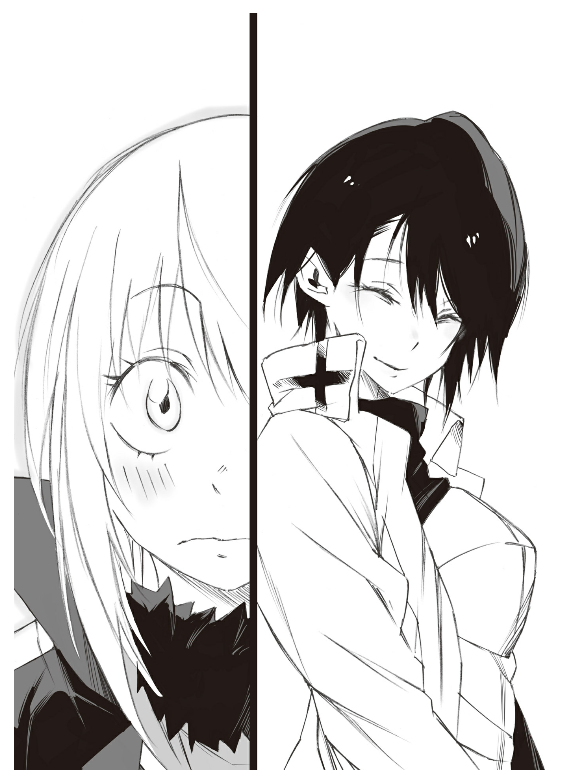「ところで、どういう状況なの？」
"Nhân tiện, tình hình thế nào rồi?"
「いやいや、丁度今、決着がついたところなんだよ。それで、コイツ等にどう反省してもらおうかと考えていたのさ」
"Không không, vừa mới giải quyết xong thôi. Tôi đang tính xem nên bắt bọn này kiểm điểm thế nào đây."
ヴェルドラをけしかけようとしていました――とは言えなかった。
Tôi không thể nói toạc ra rằng mình vừa định xúi Verudora tấn công họ được.
ヒナタの無事を確認した途端、急に怒りがとけたからだ。
Bởi ngay khi xác nhận Hinata vẫn bình an, cơn giận trong tôi bỗng chốc tan biến.
負けた相手を必要以上に痛めつけるのは、傍（はた）から見たら途轍（とてつ）もなく恰好悪いからな。
Hành hạ kẻ thua cuộc quá mức cần thiết thì nhìn từ bên ngoài trông vô cùng khó coi và mất mặt lắm.
そんな姿をヒナタの前で晒すのは、流石（さすが）の俺も躊躇（ためら）われたのである。
Để lộ cái dáng vẻ đó trước mặt Hinata thì quả nhiên đến tôi cũng thấy do dự.
「リムルよ、我の出番だったのでは？」
"Rimuru này, chẳng phải đến lượt ta ra sân sao?"
「そんなものないよ」
"Làm gì có chuyện đó."
俺は、ヴェルドラに『黙ってろ』と、目で合図する。
Tôi ra hiệu bằng mắt với Verudora rằng 『Im đi』.
「我の凄さをアピールしたいのだが……」
"Ta muốn phô diễn sự lợi hại của mình mà..."
まだ諦めきれない様子で呆れた事を言い出すヴェルドラに向かって、俺は諭すように告げるのだ。
Hướng về phía Verudora vẫn chưa chịu bỏ cuộc mà thốt ra mấy lời ngán ngẩm, tôi cất lời khuyên bảo anh ta.
「ヴェルドラ君。弱い者イジメって、恰好悪いだけだぞ」
"Verudora-kun. Bắt nạt kẻ yếu chỉ tổ làm mình trông xấu mặt thôi đấy."
「むう……さっきと言っている事が正反対ではないか……？」
"Muu... chẳng phải ngược hoàn toàn với những gì cậu nói lúc nãy sao...?"
かなり不満そうだった。
Anh ta trông có vẻ khá bất mãn.
仕方ないので、俺はアシュレイ達に問いかけた。
Hết cách, tôi quay sang hỏi nhóm Ashley.
「ヴェルドラと戦ってみる？ もし勝てたら、わだかまりを水に流すって事で」
"Các người có muốn thử đấu với Verudora không? Nếu thắng thì mọi khúc mắc coi như xí xóa."
「いえ、僕達の負けでいいです！」
"Dạ không, cứ coi như bọn tôi thua đi ạ!"
「無理。絶対無理！」
"Không thể. Tuyệt đối không thể!"
「不死身だし痛みも無効化出来るが、死んで再生するのは大変なんです。もう勘弁していただきたい！」
"Dù tôi bất tử và có thể vô hiệu hóa đau đớn, nhưng chết đi rồi tái tạo lại vất vả lắm. Xin hãy tha cho tôi đi mà!"
三人そろって、切実に断られてしまった。
Cả ba người đồng thanh từ chối một cách tha thiết.
プレリクスは余裕かましてたけど、実はいっぱいいっぱいだったらしい。
Prelix trông thì có vẻ thong dong đấy, nhưng thực ra có vẻ cũng đã đến giới hạn rồi.
――って、違うか。
――Mà, không phải sao.
俺の〝神之怒（メギド）〟で、知らぬ間に心を折ってしまっていたみたいだ。
Có vẻ như 〝Thần Nộ (Megiddo)〟 của tôi đã vô tình bẻ gãy ý chí của họ lúc nào không hay.
チワワのように震える三人を見ていると、まだ少しだけ燻（くすぶ）っていた俺の怒りも完全に消え失せてしまった。
Nhìn ba người bọn họ run lẩy bẩy như chó Chihuahua, cơn giận vẫn còn âm ỉ chút ít trong tôi cũng tan biến hoàn toàn.
『ヴェルドラ、悪いけど暴れるのはナシで頼む』
『Verudora, xin lỗi nhưng nhờ anh đừng làm loạn nhé』
と、俺はヴェルドラにだけ聞こえるように『思念伝達』を送った。
Tôi dùng『Truyền Đạt Tư Niệm』 để chỉ mình Verudora nghe thấy.
『むう、確かにコヤツ等からは、戦う意思が消えてしまったからな……』
『Hừm, đúng là ý chí chiến đấu của bọn này đã biến mất rồi thật...』
『俺のデザートを十日分譲るから！』
『Tôi sẽ nhường phần tráng miệng mười ngày của tôi cho anh!』
『ほほう？ それならば、もう一つ条件がある！』
『Hô hô? Nếu vậy thì ta còn một điều kiện nữa!』
条件か、聞こうじゃないか。
Điều kiện sao, nghe thử xem nào.
ここで俺の小ささがヒナタにバレるよりも、ヴェルドラを買収してでも誤魔化す道を選ぶべきなのだ。
So với việc bị Hinata phát hiện ra sự nhỏ nhen của mình ở đây, thì thà chọn cách mua chuộc Verudora để lấp liếm cho qua chuyện còn hơn.
『それは何だ？』
『Đó là gì?』
『実はな、貴様の部屋に恰好いい模型が飾ってあったであろう？』
『Thực ra là, trong phòng cậu có trưng bày một mô hình rất ngầu đúng không?』
ああ、あれね。
À, cái đó hả.
四日ほど前、何者かに壊されてしまったヤツ。
Cái thứ bị ai đó làm hỏng khoảng bốn ngày trước ấy.
カイジン達と共同でいつか開発したいという、有人型機動兵器のモデルだったのだが――って、まさか！？
Đó là mô hình của loại vũ khí cơ động có người lái mà tôi muốn cùng nhóm Kaijin phát triển vào một ngày nào đó... mà khoan, chẳng lẽ nào!?
『き、君ィ、まさかアレを壊したのって……』
『N-Này, đừng bảo kẻ làm hỏng cái đó là anh đấy nhé...』
『クアーーハッハッハ！ 止（や）むを得ない事故というヤツだ。勿論、謝るから許してくれるであろう？』
『Kua~~hahaha! Đó là tai nạn bất khả kháng thôi mà. Tất nhiên là ta sẽ xin lỗi, nên cậu sẽ tha thứ cho ta nhỉ?』
ぐぬぬ、誰に似たのか狡猾になりやがって……。
Gununu, anh ta học ai mà trở nên ranh ma thế không biết...
『と、当然じゃないか、ヴェルドラ君……』
『T-Tất nhiên rồi, Verudora-kun...』
悔しいがこの状況では、こう答えるしかないではないか。
Dù cay cú nhưng trong tình huống này, tôi chẳng còn cách nào khác ngoài trả lời như vậy.
『クアーーハッハッハ！ 流石はズッ友だな。リムルならば寛大な心で許してくれると、我も信じておったぞ！』
『Kua~~hahaha! Quả không hổ danh là bạn chí cốt. Ta đã tin rằng Rimuru sẽ dùng tấm lòng bao dung để tha thứ cho ta mà!』
チッ、都合良く誤魔化されてしまった。
Chậc, bị tên này lấp liếm một cách ngon ơ.
それでも今回はギブアンドテイクという事で、俺も不満を呑み込んで納得したのだった。
Dù vậy, lần này coi như là có qua có lại, nên tôi đành nuốt cục tức vào trong mà chấp nhận.
●
アシュレイは安堵した。
Ashley cảm thấy nhẹ nhõm.
プレリクスも同様だ。
Prelix cũng tương tự.
ピピンなど緊張が解けたのか、放心しているほどだった。
Pippin thì có lẽ do đã giải tỏa được căng thẳng nên đang thẫn thờ cả người ra.
その理由は、魔王リムルの変化であった。
Lý do là vì sự thay đổi của Ma Vương Rimuru.
（絶対に僕達を殺す気だった。敢えて自分でトドメを刺さなかったのは、ヴェルドラを暴れさせてやりたいと思ったからか……）
(Hắn tuyệt đối đã có ý định giết chúng ta. Hắn không tự tay tung đòn kết liễu, phải chăng là vì muốn để cho Verudora quậy phá một trận...)
アシュレイもプレリクスも、リムルたった一人に殺されかけていたのだ。
Cả Ashley lẫn Prelix đều suýt chút nữa bị giết chỉ bởi một mình Rimuru.
正直言って、魔王リムルを舐めていた。
Thú thật thì, bọn họ đã quá coi thường Ma Vương Rimuru.
過小評価しているつもりなどなかったし、油断など一切していなかったのだが、結果は惨憺（さんたん）たるものだ。
Họ không hề có ý định đánh giá thấp, cũng chẳng hề lơ là cảnh giác chút nào, nhưng kết quả lại thê thảm thế này đây.
ヒナタと互角どころの話ではない。ヒナタより強そうだという予測は正しかったが、その予測値の差が大き過ぎたのである。
Đâu chỉ là chuyện ngang tài ngang sức với Hinata. Dự đoán rằng hắn mạnh hơn Hinata là đúng, nhưng sai số của dự đoán đó lại quá lớn.
(化け物だな。この私の『絶対不死』を、こうも見事に打ち破るとは……)
(Quái vật mà. Đến cả 『Bất Tử Tuyệt Đối』 của ta mà cũng bị phá vỡ một cách ngoạn mục thế này...)
不死だった事に絶望した経験など、プレリクスからすれば想定外過ぎた。死ねない苦しみがあるなど、今日まで生きて来て初めて知った体験だった。
Việc tuyệt vọng vì bản thân bất tử là điều nằm ngoài dự tính đối với Prelix. Nỗi thống khổ khi muốn chết mà không được là trải nghiệm mà sống đến tận hôm nay hắn mới biết lần đầu.
ヴェルドラの腰巾着だ何だと噂されていたが、そんな事を言っているヤツ等をぶん殴りたい――と、心の底から願ったアシュレイである。
Có lời đồn đại rằng hắn là kẻ bám đuôi Verudora hay gì đó, nhưng Ashley thực tâm muốn đấm vào mặt những kẻ thốt ra mấy lời như vậy.
腰巾着なのは、どちらかと言えばヴェルドラの方ではないか、と。
Rằng kẻ bám đuôi, nếu phải nói thì chẳng phải là Verudora hay sao.
強いのは〝暴風竜〟ヴェルドラだろう。
Kẻ mạnh hơn có lẽ là "Bạo Phong Long" Verudora.
だがしかし、恐ろしいのは魔王リムルの方だった。
Thế nhưng, kẻ đáng sợ hơn lại là Ma Vương Rimuru.
そんな魔王リムルのひりつくような怒りの気配が、ヒナタが目覚めた途端に霧散した。
Cái luồng nộ khí rát bỏng da thịt đó của Ma Vương Rimuru đã tan biến ngay khi Hinata vừa tỉnh giấc.
そのタイミングがほんの少しでも遅れていたら、アシュレイ達はヴェルドラによって滅ぼされていたに違いない。
Nếu thời điểm đó trễ hơn dù chỉ một chút, nhóm Ashley chắc chắn đã bị Verudora tiêu diệt rồi.
プレリクスは生き延びていたかも知れないが、死んだ方がマシだと思うような目に遭っていた可能性が濃厚だった。
Prelix có thể sẽ sống sót, nhưng khả năng cao là hắn sẽ phải gánh chịu hậu quả khủng khiếp đến mức hắn nghĩ rằng thà chết đi còn sướng hơn.
戦闘能力のないピピンなど、その戦いに巻き込まれて簡単に命を落としていたはずだ。
Một kẻ không có khả năng chiến đấu như Pippin mà bị cuốn vào trận chiến đó thì chắc chắn đã bỏ mạng dễ dàng rồi.
僕達は、私達は、運が良かったんだ――と、三人は各々が自身の幸運に感謝した。
Bọn tôi, chúng tôi, thật sự đã gặp may――ba người họ thầm cảm tạ vận may của chính mình.
それと同時に、ブレーキ役になってくれたヒナタに対して、言葉にならぬ感謝の念を抱いたのだった。
Đồng thời, họ cũng dành một lòng biết ơn không nói nên lời đối với Hinata, người đã đóng vai trò cái phanh hãm lại mọi chuyện.
●
ヴェルドラとの交渉も成立したので、俺は結論を述べた。
Cuộc đàm phán với Verudora cũng đã thành công, nên tôi đưa ra kết luận.
「三人もこうやって反省しているみたいだし、もう許してやろうぜ」
"Ba người họ trông cũng có vẻ đang hối lỗi rồi, tha cho họ đi thôi."
俺がそう言うと、ヒナタは呆れた様子でこう言った。
Tôi vừa dứt lời, Hinata liền nói với vẻ ngán ngẩm.
「やっぱり甘いわね、君は」
"Cậu quả nhiên là vẫn quá mềm lòng nhỉ."
実に冷たい態度だが、俺は知っている。
Thái độ lạnh lùng thật đấy, nhưng tôi biết thừa.
もしも本当にこの三名を殺そうとしたら、絶対にいい顔をしなかっただろう、って。
Rằng nếu tôi thực sự định giết ba người này, cô ấy tuyệt đối sẽ không tỏ thái độ vui vẻ đâu.
何のかんの言って、ヒナタの方が俺よりも優しいからね。
Nói gì thì nói, Hinata còn hiền lành hơn tôi đấy.
俺とヴェルドラは、意外と割り切って物事を考えられるのだよ。
Tôi và Verudora bất ngờ là có thể suy nghĩ mọi việc một cách rạch ròi đấy nhé.
その証拠に――
Bằng chứng là――
「でも――貴方らしいわよ、リムル」
"Nhưng mà――rất giống phong cách của cậu đấy, Rimuru."
と、ヒナタが小さく微笑んでくれたのだった。
Hinata mỉm cười nhẹ nhàng.
その笑顔を見れただけで、俺は満足だ。
Chỉ cần nhìn thấy nụ cười đó thôi là tôi mãn nguyện rồi.
という事で、御機嫌で後処理について考える。
Thế là, với tâm trạng vui vẻ, tôi suy nghĩ về phương hướng xử lý hậu quả.
「勿論、無罪放免する気はない。当面は、俺達の都合のいいように動いてもらいたい」
"Tất nhiên, ta không có ý định tha bổng vô điều kiện đâu. Trước mắt, ta muốn các người hành động theo hướng có lợi cho chúng ta."
「というと？」
"Nghĩa là sao?"
ヒナタが俺に応じたが、その答えを知りたいのはアシュレイ達の方だろう。
Hinata đáp lời tôi, nhưng người muốn biết câu trả lời đó chắc hẳn là nhóm Ashley.
「それを教える前に、質問がある。お前達の目的は人類社会の支配だそうだが、その動機を教えてくれ」
"Trước khi nói cho các ngươi điều đó, ta có một câu hỏi. Mục tiêu của các ngươi là thống trị xã hội loài người đúng không? Hãy cho ta biết động cơ của các ngươi."
どうして俺達を狙ったのか？
Tại sao lại nhắm vào chúng ta?
ルミナスと因縁がありそうだったけど、詳しい内容までは聞いていなかった。
Trông có vẻ như có ân oán với Luminous, nhưng ta vẫn chưa nghe được nội dung chi tiết.
それを知らない事には、また同じような過ちを繰り返す恐れがあるからな。
Nếu không biết điều đó, ta e rằng các người sẽ lặp lại sai lầm tương tự mất.
名誉欲や物欲って訳ではなさそうだし、何が目的だったのか聞いておく必要があると思ったのである。
Có vẻ không phải do ham muốn danh vọng hay vật chất, nên ta nghĩ cần phải hỏi cho rõ mục đích là gì.
そんな俺の疑問に答えてくれたのは、三人を代表したアシュレイだった。
Người giải đáp thắc mắc đó của ta là Ashley, đại diện cho cả ba người.
「恨み……というか、嫉妬さ。ルミナスは僕達の中で、一番優れていると言われてたんだ。それに対して僕達は、生殖能力もない〝失敗作〟だって言われててね」
"Hận thù... hay nói đúng hơn là ghen tị. Trong số chúng tôi, Luminous được cho là kẻ ưu tú nhất. Còn chúng tôi thì bị gọi là 'tác phẩm thất bại' không có khả năng sinh sản."
「どれだけ能力が高くても意味がないって……」
"Họ bảo rằng dù năng lực có cao đến đâu thì cũng vô nghĩa..."
アシュレイに続いて、ピピンが悲しそうに補足してくれる。
Tiếp lời Ashley, Pippin buồn bã bổ sung thêm.
「だから私達は、ルミナスでさえ出来ない偉業を達成して、見返してやろうと考えたのです」
"Chính vì vậy, chúng tôi đã nghĩ đến việc đạt được vĩ nghiệp mà ngay cả Luminous cũng không làm được, để khiến cô ta phải nhìn lại."
「〝竜種〟をも従え、世界を支配すれば、誰もが僕達を認めるだろう――ってね」
"Nếu khiến cả 〝Long Chủng〟 phải phục tùng và thống trị thế giới, thì ai ai cũng sẽ phải công nhận bọn tôi thôi――đại loại là vậy."
承認欲求か。
Ham muốn được công nhận sao.
しかも、かなり根深い恨みからくる切実なヤツだな。
Hơn nữa, đó là loại cảm xúc mãnh liệt bắt nguồn từ nỗi hận thù khá thâm căn cố đế đấy.
同情はするが、賛同は出来ない。
Tôi có thể đồng cảm, nhưng không thể tán đồng.
その怒りを向ける矛先と目標が、大きく間違っている気がするからだ。
Bởi tôi cảm thấy mục tiêu và nơi các người trút cơn giận đó sai quá sai rồi.
「まあ、お前達の気持ちはわからなくはないさ。誰だって〝失敗作〟扱いされたら悲しいもんな」
"Mà, ta cũng không phải là không hiểu cảm xúc của các ngươi. Ai mà bị coi là 'tác phẩm thất bại' thì cũng đều thấy buồn cả thôi."
だがしかし、それは何でも許される免罪符になるほど、便利な言い訳にはならないのである。
Cơ mà, điều đó không thể trở thành cái cớ tiện lợi đến mức biến thành kim bài miễn tử cho phép làm bất cứ điều gì đâu.
「クアハハハ！ 我だって、姉上達からは〝失敗作〟扱いされておったがな、こんなに元気だぞ！」
"Kuahahaha! Ngay cả ta cũng từng bị các chị coi là 'tác phẩm thất bại' đây này, nhưng ta vẫn khỏe re thế này đây!"
「はいはい。凄い凄い。でもね、今はそういう話をされるとややこしくなるから、ちょっと黙ってようか」
"Rồi rồi. Ghê lắm ghê lắm. Nhưng mà này, giờ mà nói chuyện đó thì phức tạp lắm, nên anh trật tự một chút được không?"
茶々を入れてきたヴェルドラを黙らせてから、俺は続きを話し始めた。
Sau khi bắt Verudora đang chọc ngoáy phải im lặng, tôi bắt đầu nói tiếp.
「でもさ、見返すんなら誰もが称賛するような素晴らしい成果を達成して、自分達の存在理由を証明すべきなんじゃないのか？」
"Nhưng mà này, nếu muốn khiến họ phải nhìn lại, thì chẳng phải các người nên đạt được những thành quả tuyệt vời khiến ai cũng phải tán thưởng để chứng minh lý do tồn tại của bản thân hay sao?"
「でも、そんな事を言ったって――」
"Nhưng mà, dù ngài có nói vậy――"
「でも、じゃねーんだよ！ 大体だな、無限の寿命を持つ精神生命体なんだったら、星の海を探検しようとか、もっと浪漫溢れる野望を持つべきだろうが！！」
"Không có nhưng nhị gì hết! Về cơ bản nhé, nếu đã là sinh mệnh tinh thần có tuổi thọ vô hạn, thì các người phải có những tham vọng tràn đầy sự lãng mạn như là thám hiểm biển sao chứ!!"
「ほ、星の海ィ！？」
"B... Biển sao ư!?"
「そうとも！」
"Đúng thế!"
俺は大きく頷き、その具体例を語って聞かせる。
Tôi gật đầu thật mạnh, rồi kể cho họ nghe ví dụ cụ thể.
髑髏（どくろ）の旗をはためかせて、星海を征（ゆ）く宇宙戦艦。
Chiến hạm vũ trụ chinh phạt biển sao với lá cờ đầu lâu tung bay phấp phới.
どんな砲撃も跳ね返す強靭な外装に、一撃で星スラ砕く主砲の威力。
Lớp vỏ cường nhận đánh bật mọi đòn pháo kích, cùng uy lực của pháo chủ lực nghiền nát cả hành tinh chỉ trong một đòn.
そんな宇宙戦艦で、星の海を旅する浪漫！
Sự lãng mạn khi du hành giữa biển sao trên một chiếc chiến hạm vũ trụ như thế!
別に宇宙に出なくても、大海を制覇するのも面白そうじゃないか。
Mà không cần bay ra vũ trụ cũng được, việc xưng bá đại dương nghe cũng thú vị đấy chứ.
居住性のあるヨットクルーザーとか、一度は購入してそこで生活してみたいとか憧れたものさ。もっともそれは小学生の頃の話で、大人になるにつれて現実が見えた。船体の購入代金や維持費が高い上に、船酔いとかしそうで諦めたんだよな……。
Chẳng hạn như du thuyền có đầy đủ tiện nghi để ở, tôi từng ao ước mua một chiếc rồi sống luôn trên đó. Tuy nhiên đó là chuyện hồi tiểu học thôi, càng lớn lên tôi càng nhìn thấy hiện thực. Tiền mua tàu và phí bảo dưỡng cao ngất ngưởng, chưa kể còn bị say sóng nữa nên tôi đã từ bỏ...
しかし、今の俺は違う。
Tuy nhiên, tôi của hiện tại thì khác.
前世では寿命的に不可能だったけど、生まれ変わった今なら夢で終わらせる事はないのだ。
Ở kiếp trước thì bất khả thi do giới hạn tuổi thọ, nhưng giờ đã chuyển sinh rồi thì không việc gì phải để nó mãi chỉ là một giấc mơ cả.
だが、その前に――
Nhưng mà, trước đó thì――
「宇宙に進出するかどうかはひとまず置いておいて、先ずは大海を制覇してもらいたい。その為の船の設計と新造を、君達にお願いしたいのだよ！」
"Chuyện có tiến ra vũ trụ hay không thì tạm thời gác lại đã, trước hết ta muốn các người chinh phục đại dương. Ta muốn nhờ các người thiết kế và đóng mới một con tàu cho mục đích đó!"
と、俺は自分の野望を隠す事なく力説した。
Tôi dõng dạc nhấn mạnh tham vọng của mình mà chẳng thèm giấu giếm.
言うまでもなく、ヒナタは呆れ顔だ。
Khỏi phải nói, Hinata làm mặt ngán ngẩm.
それとは対照的に、ヴェルドラは輝くような笑顔で乗り気である。
Trái ngược với cô ấy, Verudora thì lại hừng hực khí thế với nụ cười rạng rỡ.
「我にも腹案があるぞ！ 主砲は四十六センチ、いやいや、それ以上の六十センチが良かろう！ それとだな――」
"Ta cũng có ý tưởng đây! Pháo chính phải là 46cm, không không, phải hơn thế nữa, 60cm là đẹp nhất! Với lại là――"
四十五口径だったという〝戦艦大和〟かな？
Chắc là 〝Chiến hạm Yamato〟 với nòng 45 caliber đây mà?
「俺の知識を無駄に読み込んでいるようだが、そんな大口径の主砲を搭載出来るような戦艦を、ぶっつけ本番で造れるわけがねーだろうが！！」
"Có vẻ anh đã đọc trộm kiến thức của tôi rồi, nhưng làm sao mà đóng ngay được một chiến hạm trang bị pháo chủ lực khẩu kính lớn như thế mà không cần thử nghiệm chứ!!"
「し、しかしだな……」
"Nh, nhưng mà..."
「主砲の口径にだって理屈があるんだから、大きい数字なら強い！ とかいう小学生理論は止めるように」
"Khẩu kính pháo chủ lực cũng có nguyên lý của nó, nên hãy bỏ ngay cái lý luận kiểu học sinh tiểu học rằng số càng to thì càng mạnh đi."
俺はそう言って、ヴェルドラの妄想を一蹴した。
Tôi nói vậy và gạt phăng ảo tưởng của Verudora.
そして、アシュレイ達に向けて新造船開発の提案を行（おこな）ったのである。
Và rồi, tôi đã đưa ra đề xuất tiến hành việc phát triển tàu mới với nhóm Ashley.
実際、大海獣対策をした船を造るのは絶対に行う予定だった。
Thực tế, việc đóng con tàu có trang bị biện pháp đối phó với Đại Hải Thú là chuyện chắc chắn phải làm.
この世界の海は前世の比ではなく危険に満ち溢れているので、普通の船は航行不可能だったからだ。
Bởi vì biển ở thế giới này tràn ngập hiểm nguy không thể so sánh với kiếp trước, nên tàu thuyền thông thường không thể nào ra khơi được.
予算だって、海産資源獲得の為とすれば文句を言われない。趣味と実益を兼ねて、好き放題出来るというものだった。
Về ngân sách, nếu lấy lý do là để thu hoạch tài nguyên hải sản thì sẽ chẳng ai phàn nàn gì đâu. Vừa thỏa mãn sở thích vừa đem lại lợi ích thực tế, đúng là một công đôi việc tha hồ mà làm.
「――ってな感じで、大海獣にも負けず、悪天候すらものともしない、巨大航行船を開発する気ない？」
"――Đại loại là thế, các người có hứng thú phát triển một con tàu khổng lồ không thua kém gì Đại Hải Thú, bất chấp cả thời tiết xấu không?"
「だろ？」
"Được chứ hả?"
「そ、それならまぁ、宇宙がどうこうより理解出来ますけど……」
"Th-thế thì chà, cũng dễ hiểu hơn là mấy chuyện vũ trụ gì đó..."
最初に無理難題を吹っ掛け、少し譲歩する。
Đầu tiên là đưa ra một yêu cầu vô lý, sau đó nhượng bộ một chút.
これが交渉のテクニックだからね。
Đây chính là kỹ thuật đàm phán đấy.
宇宙から大海にシフトダウンさせたから、アシュレイ達にも理解された様子である。
Vì đã hạ cấp độ từ vũ trụ xuống đại dương, nên có vẻ nhóm Ashley cũng đã hiểu ra vấn đề.
「だろ、って……そんな簡単に……」
"Cái gì mà được chứ hả... sao mà đơn giản thế..."
などと、まだ納得いかない様子で呟くピピンは、この際だからスルーしておいたのだった。
Pippin vẫn lầm bầm với vẻ chưa phục lắm, nhưng nhân tiện cơ hội này, tôi quyết định lơ hắn đi luôn.
＊
*
アシュレイ達に俺の思いを熱く語り、今後の研究協力を取り付けた。
Tôi nhiệt huyết trình bày suy nghĩ của mình với nhóm Ashley, và đã chốt được sự hợp tác nghiên cứu sau này.
ルミナス達とも迷宮内施設で合同研究を行う予定だが、こちらは方向性が違うので問題ないだろう。
Tôi cũng dự định tiến hành nghiên cứu chung với nhóm Luminous tại cơ sở trong Mê cung, nhưng vì hướng đi bên này khác biệt nên chắc sẽ không có vấn đề gì đâu.
というか、ルミナスには利用されちゃったからな。
Mà nói đúng hơn là tôi đã bị Luminous lợi dụng mất rồi.
ただでさえ一社独占は危険だし、別ルートでも協力者を用意しておく方がいいのである。
Vốn dĩ để một bên độc quyền đã là nguy hiểm rồi, nên tốt hơn hết là chuẩn bị sẵn cộng tác viên ở một tuyến đường khác.
てな訳で、次なる問題はアシュレイ達とマルクシュア王国の付き合い方について、だ。
Thế nên là, vấn đề tiếp theo là về mối quan hệ giữa nhóm Ashley và Vương quốc Marcushua.
一夜明けて、俺達は無事に問題解決した事をマルクシュア王に伝えた。そして、魔塔の代表者としてアシュレイとピピンが面会を希望している旨を述べて、会談の日取りを話し合ったのである。
Sáng hôm sau, chúng tôi thông báo cho Quốc vương Marcushua biết rằng vấn đề đã được giải quyết êm đẹp. Sau đó, tôi chuyển lời rằng Ashley và Pippin muốn gặp mặt với tư cách là đại diện của Ma Tháp, và bàn bạc về ngày giờ cho cuộc hội đàm.
その場はその日の晩餐（ばんさん）の後に行いたいと、ビックリするほどの超特急で決定された。この国の王様はプライドが高そうだったのに、驚くほどの変わりようである。
Quyết định được đưa ra với tốc độ siêu tốc đến mức giật mình, rằng cuộc gặp sẽ diễn ra ngay sau bữa tối hôm đó. Vị vua nước này trông có vẻ lòng tự trọng cao ngất, thế mà giờ thay đổi đến mức đáng kinh ngạc.
前回も感じたが、もしかしたらこっちが本当の姿なのかもしれない。俺に対してもとても丁寧に接してくれて驚いたほどだった。
Lần trước tôi cũng cảm thấy vậy rồi, nhưng biết đâu đây mới là con người thật của ông ta. Ông ta đối xử với tôi lịch sự đến mức khiến tôi phải ngạc nhiên.
アシュレイからは全てを一任されていたので、俺に異論はない。
Ashley đã giao toàn quyền cho tôi, nên tôi chẳng có dị nghị gì.
有給休暇がなくなる前に全て終わらせたかったので、早く終わりそうで喜んだくらいだった。
Tôi muốn giải quyết xong xuôi mọi việc trước khi hết phép nghỉ, nên thấy chuyện này có vẻ sẽ kết thúc sớm tôi còn mừng là đằng khác.
突如決まった会談だったが、主要な面子が勢ぞろいだ。
Tuy là cuộc hội đàm được quyết định đột ngột, nhưng các thành viên chủ chốt đều có mặt đông đủ.
ヴェルドラは別室にて漫画を読んでいるが、俺とヒナタは当然参加。ヒナタの右隣は俺で、左隣には西方聖教会からニックス司祭が参加していた。
Verudora đang đọc truyện tranh ở phòng khác, còn tôi và Hinata đương nhiên là tham gia. Ngồi bên phải Hinata là tôi, còn bên trái là linh mục Nix đến từ Thánh Giáo Hội Phương Tây.
王国側からは、国王と王太子、それに宰相。どうして呼ばれたのかわからないという表情で座っているのは、第一王子のサイラスだった。
Về phía Vương quốc, có Quốc vương, Thái tử và Tể tướng. Người đang ngồi với vẻ mặt không hiểu tại sao mình lại bị gọi đến chính là Đại hoàng tử Silas.
魔塔側からは、アシュレイとピピンのみ。夜だからプレリクスも参加出来るのだが、参加者を怯えさせたくないという理由で遠慮したらしい。
Về phía Ma Tháp, chỉ có Ashley và Pippin. Vì là ban đêm nên Prelix cũng có thể tham gia, nhưng nghe đâu hắn đã xin kiếu vì lý do không muốn làm những người tham dự sợ hãi.
第一印象は高慢極まりない感じだったので、よっぽど俺にやられたのが懲りたんこぶだったんだろうなと察せられた。けれど、それは良い変化である。
Ấn tượng đầu tiên thì ngạo mạn hết mức, nên tôi đoán chắc việc bị tôi xử lý trước đó đã khiến hắn chừa đến mức sưng đầu rồi. Nhưng, đó lại là một sự thay đổi tốt.
今後はマルクシュア王国とも協力してもらわねばならないので、配慮する気持ちを持ってもらうのは重要だ。
Từ nay về sau họ còn phải bắt tay hợp tác với Vương quốc Marcushua nữa, nên việc giữ thái độ tôn trọng đối tác là rất quan trọng.
一方的に要望を通すなど、国際関係において有り得ない。互いを尊重し合えなければ、協力なんて出来ないものなのである。
Trong quan hệ quốc tế, làm gì có chuyện đơn phương áp đặt yêu sách. Nếu không biết tôn trọng lẫn nhau thì chẳng thể nào hợp tác được đâu.
なので、魔塔としての対応は誠実なものになりそうで、ひと安心だった。
Thế nên, thấy phía Ma Tháp có vẻ sẽ ứng xử chân thành, tôi cũng thở phào nhẹ nhõm.
以上、九名。
Tổng cộng là chín người.
壁際には椅子が並べられ、押し寄せていたこの国の重鎮であろう貴族達が座っている。
Dọc theo các bức tường là những hàng ghế được kê sẵn, nơi các quý tộc quyền cao chức trọng của đất nước này đang ngồi chật kín.
そうした貴族達の前には、護衛の騎士や魔法使いの姿があった。
Đứng chắn trước mặt đám quý tộc ấy là các kỵ sĩ và ma pháp sư hộ vệ.
あれはどう見ても、俺達から貴族を守ろうとしているのではなく、会談の邪魔にならないように見張っている感じである。
Nhìn kiểu gì thì cũng thấy đám lính đó đang canh chừng để đám quý tộc không phá đám cuộc hội đàm, chứ chẳng giống đang bảo vệ họ khỏi chúng tôi chút nào.
それだけ国王が、この話し合いを重要視しているという事なのだろう。
Điều đó đủ cho thấy Quốc vương coi trọng cuộc thảo luận này đến mức nào.
冒頭は、国王の挨拶だ。
Mở đầu là lời chào của Quốc vương.
魔塔とマルクシュア王国の関係と、今回の経緯についての説明だった。
Ông ấy giải thích về mối quan hệ giữa Ma Tháp và Vương quốc Marcushua, cũng như đầu đuôi câu chuyện lần này.
マルクシュア王国が魔塔の支配下にあったという驚きの事実に、貴族達から騒（ざわ）めき声が起きている。知っていた者や、推察していた者もいたようで、その声はそこまで大きくなかった。
Trước sự thật động trời rằng Vương quốc Marcushua nằm dưới sự cai trị của Ma Tháp, những tiếng xôn xao (zawa) bắt đầu nổi lên từ phía các quý tộc. Tuy nhiên, có vẻ cũng có những kẻ đã biết hoặc lờ mờ đoán ra được, nên tiếng ồn ào đó cũng không lớn lắm.
「ま、そんなところでしょうね。事情を説明されたので納得しましたが、王都内に教会の立ち入りが許可されていないかったから、何かあるだろうとは思っていましたよ」
"Chà, chắc là vậy rồi. Được giải thích sự tình nên tôi đã hiểu, nhưng vì Giáo hội không được phép tiến vào trong Vương đô nên tôi cũng đã ngờ ngợ là có vấn đề gì đó rồi."
とは、ニックスの言葉だった。
Đó là lời của Nix.
つまり、ニックスも説明されるまで事情を知らなかった事からも、ルミナスがそこまで魔塔を警戒していた訳ではないのだと察せられた。
Tóm lại, từ việc đến cả Nix cũng không biết sự tình cho tới khi được giải thích, tôi có thể đoán được rằng Luminous cũng không cảnh giác với Ma Tháp đến mức đó.
まあ、それは俺には関係ないので、どうでもいい話だな。
Mà, chuyện đó chẳng liên quan gì đến tôi, nên sao cũng được.
本題は、ここからなのだ。
Vấn đề chính bắt đầu từ đây.
「それで、リムル陛下――今回、魔塔との取り決めで、我が国に提案があるとのこと。どのようなお話しなのでしょう？」
Vậy thì, Rimuru Bệ hạ――lần này, theo thỏa thuận với Ma Tháp, ngài nói rằng có một đề xuất dành cho đất nước chúng tôi. Câu chuyện đó cụ thể là gì vậy?
うーん、それをこの場で言うのも躊躇われるな。
Ừm, nói chuyện đó ở đây thì cũng hơi do dự nhỉ.
もっと内密に説明したかったのだが、かと言って、既に貴族達の前で話を切り出されてしまった以上、俺が説明するしかないか。
Tôi đã muốn giải thích kín đáo hơn, nhưng nói đi cũng phải nói lại, chuyện đã được khơi ra trước mặt các quý tộc rồi thì tôi đành phải giải thích thôi chứ biết sao giờ.
「俺としては本意ではなかったんだけど、魔塔と、コホン。ここにいるアシュレイ殿達と軽く諍（いさか）いになって――」
"Bản thân tôi không hề mong muốn, nhưng với Ma Tháp, hừm. Tôi đã có chút xích mích (isaka) nhẹ với ngài Ashley và những người ở đây――"
俺の説明中、アシュレイが「軽く？」と腑に落ちないとでも言いた気に呟いていたし、ピピンなど「あれって諍いじゃなくない？」などと文句がありそうだったが、それらは無視して話を続けた。
Trong lúc tôi giải thích, Ashley lầm bầm "Nhẹ á?" như thể không phục lắm, còn Pippin thì có vẻ muốn phàn nàn kiểu "Cái đó mà là xích mích á?", nhưng tôi lờ tịt bọn họ đi và tiếp tục câu chuyện.
「――まあ、俺の考えに納得して頂いた。そうして理解してくれて、これからの行動方針を相談した訳だよ」
"――Mà, họ đã chấp thuận suy nghĩ của tôi. Sau khi thấu hiểu nhau, chúng tôi đã bàn bạc về phương châm hành động sắp tới."
アシュレイ達はともかく、王国側は真摯に耳を傾けてくれている。
Nhóm Ashley thì không nói, nhưng phía Vương quốc đang lắng nghe rất chân thành.
これはいける、と俺は思った。
Tôi nghĩ bụng, vụ này trôi rồi đây.
「で、我が国と魔塔との間で、一つの取引が成立した訳だ」
"Và thế là, một giao dịch đã được thiết lập giữa đất nước chúng tôi và Ma Tháp."
ざわつく王国側。
Phía Vương quốc bắt đầu xôn xao.
そりゃそうだ。
Cũng phải thôi.
魔国と魔塔が、マルクシュア王国を無視して取引を成立させるなど、国家の主権を無視する行為になりかねないもの。だから俺は、皆を安心させるように話を締めくくる。
Việc Ma Quốc và Ma Tháp tự ý chốt giao dịch mà bỏ qua Vương quốc Marcushua có thể bị coi là hành vi coi thường chủ quyền quốc gia. Vì thế, tôi chốt lại câu chuyện để trấn an mọi người.
「勿論、それを行うにはマルクシュア王国側の協力も不可欠です。そこで、本日はその相談をさせてもらいたいと考えている」
"Tất nhiên, để thực hiện điều đó thì sự hợp tác của Vương quốc Marcushua là không thể thiếu. Vì vậy, hôm nay tôi muốn bàn bạc với quý vị về vấn đề này."
勝手をするつもりはないよ、と明示した訳だ。
Tôi đã nói rõ ràng rằng mình không có ý định tự tung tự tác đâu.
ここからが腕の見せ所だった。
Từ đây mới là lúc để tôi trổ tài.
取引先や役所相手にプレゼンテーションした経験を思い出しながら、俺は話を進めていく。
Vừa hồi tưởng lại kinh nghiệm thuyết trình trước đối tác và cơ quan nhà nước thời còn đi làm, tôi vừa tiếp tục câu chuyện.
「魔塔に求めたのは、船の設計と新造だ」
"Thứ tôi yêu cầu ở Ma Tháp là thiết kế và đóng mới tàu thuyền."
「船ですと？」
"Tàu thuyền ư?"
「そうです。この国からも海産物を輸入したいと思っているんだが、それはそれとして。海洋に出られるような巨大船を建造して、大海調査を行いたいと考えている。その為の船が必要となるんだが、我が国は海に面していなくてね」
“Đúng vậy. Tôi muốn nhập khẩu hải sản từ đất nước này, nhưng ngoài chuyện đó ra. Tôi đang nghĩ đến việc đóng những con thuyền khổng lồ có thể ra được đại dương để tiến hành khảo sát biển lớn. Và để làm được điều đó thì cần một con tàu phù hợp, nhưng quốc gia của chúng tôi lại không giáp biển.”
ついでに言えば、人手も足りない。むしろ、こっちが重要な理由だった。
Tiện thể nói luôn, chúng tôi cũng đang thiếu nhân lực. Mà nói đúng hơn thì đây mới là lý do quan trọng.
ただでさえ建築ラッシュだし、これ以上ゲルドの仕事を増やす訳にはいかないからね。
Vốn dĩ đang trong cơn sốt xây dựng rồi, tôi không thể tăng thêm khối lượng công việc cho Geld hơn nữa được.
海洋調査なんて喫緊（きっきん）の課題じゃないし、長期的視野を持って進めていく計画なのだ。
Việc khảo sát đại dương không phải là vấn đề cấp bách (kikkin), mà là một kế hoạch cần được tiến hành với tầm nhìn dài hạn.
「幸い、ここマルクシュア王国は海に面しているし、港湾を作るのに最適な地形をしている。将来的には造船所を造って、海洋への足掛かりになってくれたらと思っているのさ」
"May mắn thay, Vương quốc Marcushua đây lại giáp biển, hơn nữa còn sở hữu địa hình tối ưu để xây dựng cảng. Tôi hy vọng trong tương lai nơi này sẽ xây dựng xưởng đóng tàu và trở thành bàn đạp để tiến ra đại dương."
「馬鹿な……」
"Vô lý..."
宰相が唖然として口をあけていた。
Tể tướng há hốc mồm kinh ngạc.
それは俺達を馬鹿にしている訳ではなく、自分の常識を超えて理解不能な提案だったから生じた反応だったみたいだ。
Có vẻ phản ứng đó không phải do ông ta coi thường chúng tôi, mà là vì đề xuất này vượt quá thường thức của bản thân ông ta đến mức không thể hiểu nổi.
国王は沈黙していたが、少しの間を置いて口を開いた。
Quốc vương im lặng một hồi, rồi cất tiếng.
「海産物を輸入したいというのは？」
"Chuyện ngài muốn nhập khẩu hải sản là thế nào?"
お、よくぞ聞いてくれたね。
Ồ, hỏi đúng trọng tâm rồi đấy.
「そちらは魔塔とは関係なく、我が国とマルクシュア王国で取引したい話ですよ。この国の魚は美味いから、是非とも輸入させてもらいたいと考えているんです」
"Chuyện đó không liên quan đến Ma Tháp, mà là giao dịch tôi muốn thực hiện giữa nước tôi và Vương quốc Marcushua. Cá của nước này rất ngon, nên tôi thực lòng muốn được nhập khẩu về."
俺の言葉を聞いて、ヒナタが大きく頷いていた。
Nghe tôi nói vậy, Hinata gật đầu lia lịa.
いつもいつも俺のやる事に「やり過ぎ」とか文句を言うくせに、その恩恵を思いっきり享受しているんだよね。今の話も食べ物関係だったからか、文句を言わずに理解を示してくれていた。
Lúc nào cũng phàn nàn tôi làm "quá trớn", thế mà lại tận hưởng thành quả nhiệt tình nhất. Chắc do chuyện vừa rồi liên quan đến đồ ăn nên cô ấy mới tỏ ra thấu hiểu mà không cằn nhằn câu nào.
「し、しかし、その魚に価値が？」
"Nh-Nhưng mà, chỗ cá đó có giá trị sao?"
宰相は半信半疑だ。
Tể tướng tỏ vẻ bán tín bán nghi.
この国の民が飢えぬよう魚を捕獲しているので、それを輸出するという考えがなかったからだろう。
Có lẽ vì họ đánh bắt cá chỉ để người dân nước này không bị đói, nên chưa từng nghĩ đến chuyện sẽ xuất khẩu chúng.
「この国の魚は、他の場所で獲れるものと違って小ぶりなんですよ。その分、料理しやすいんです」
"Cá ở nước này nhỏ hơn so với cá đánh bắt ở những nơi khác. Chính vì thế nên rất dễ chế biến."
魔魚だって料理出来ない訳じゃないけど、巨大魚なので出汁（だし）をとるのもひと苦労なのだ。
Tuy không phải là không thể chế biến Ma Ngư, nhưng vì chúng là cá khổng lồ nên chỉ riêng việc lấy nước dùng (Dashi) thôi cũng đã trầy trật rồi.
あら煮とかも難しい。骨も半端なく硬いので鍋に入らないから、小さく切り刻んだ時点で別料理になっちゃうんだよね。
Món kho Arani cũng khó làm. Xương thì cứng kinh khủng, không nhét vừa nồi, nên đến lúc chặt nhỏ ra được thì nó biến thành món khác mất tiêu rồi.
その点、この国の魚は素晴らしかった。
Về điểm này thì cá của nước này quả là tuyệt phẩm.
それもこれも、『結界』内に生息して魔素を吸収し過ぎておらず、巨大化せずに済んだのだ。つまり、魔塔周辺だけが特別な環境を生み出していたお陰であった。
Tất cả là nhờ chúng sinh sống bên trong 'Kết Giới', không hấp thụ quá nhiều ma tố nên không bị khổng lồ hóa. Tóm lại là nhờ cái môi trường đặc biệt chỉ có ở xung quanh Ma Tháp mà ra.
「毎月、少量で構わないです。漁獲し過ぎると生態系が狂うだろうし、余剰分だけ輸入させて下さい」
"Mỗi tháng một ít thôi cũng không sao. Đánh bắt quá mức sẽ làm đảo lộn hệ sinh thái, nên hãy cho phép tôi nhập khẩu phần dư thừa thôi."
「勿論、勿論ですとも！ ですが、運搬は……」
"Tất nhiên, tất nhiên là được rồi ạ! Thế nhưng, việc vận chuyển thì..."
「当面、ズルします」
"Trước mắt, tôi sẽ gian lận chút."
残念ながら海運はこれからだし、陸路は迂遠過ぎる。仕方ないが、俺が『胃袋』で運搬する予定だった。
Đáng tiếc là vận tải biển mới chỉ đang bắt đầu, còn đường bộ thì đi vòng vèo quá. Chẳng còn cách nào khác, tôi dự định sẽ dùng 『Dạ Dày』 để vận chuyển.
「いつかは交易路で繋がりたいですね」
"Tôi mong một ngày nào đó chúng ta có thể kết nối với nhau bằng các tuyến đường giao thương."
そう言って、にこやかに笑っておいたのだった。
Nói rồi, tôi nở nụ cười tươi rói.
＊
さてさて、俺にとっては大事な話だが、本日の本題からそれていたので話を戻した。
Chà chà, chuyện đó quan trọng với tôi thật đấy, nhưng vì đã lạc đề so với nội dung chính hôm nay nên tôi quay lại câu chuyện.
「それで、魔塔とマルクシュア王国の関係ですが――」
"Vậy thì, về mối quan hệ giữa Ma Tháp và Vương quốc Marcushua――"
「造船所、でしたな？」
"Là xưởng đóng tàu, phải không?"
「はい」
"Vâng."
「それは、木造船とは違うような？」
"Cái đó, có vẻ khác với thuyền gỗ nhỉ?"
「違いますね。というか、十人くらいしか乗れない船を想像されてるかと思いますが、全然違います」
“Không đúng rồi. Mà, có vẻ như ngài đang tưởng tượng một con thuyền chỉ chở được tầm mười người, nhưng hoàn toàn không phải như thế.”
という感じに、いつの間にか丁寧に説明する俺。自分の好きな事を語る感じで話しながら、昼間の内に用意しておいた完成予想図を広げて見せた。
Cứ thế, chẳng biết từ lúc nào tôi đã bắt đầu giải thích cặn kẽ. Cảm giác như đang thao thao bất tuyệt về sở thích của mình vậy, vừa nói tôi vừa mở tấm bản vẽ phác thảo hình dáng hoàn thiện đã chuẩn bị sẵn hồi ban ngày ra cho họ xem.
設計していったらデザインも変わってくるだろうから、参考画像でしかない。
Vì kiểu dáng sẽ còn thay đổi khi đi vào thiết kế chi tiết, nên đây chỉ là hình ảnh tham khảo thôi.
どういうものか想像してもらう為に用意したものだった。
Nó được chuẩn bị cốt để giúp họ hình dung ra đó là thứ như thế nào.
「こ、これは……」
"Đ-Đây là..."
「これが人間のサイズという事ですね？」
"Chỗ này là tỷ lệ kích thước con người đúng không?"
「何という巨大な船なのだ！！」
"Con tàu gì mà khổng lồ thế này!!"
国王が、宰相が、王太子が、それぞれの表情で驚き固まっている。
Quốc vương, Tể tướng, và Thái tử, ai nấy đều chết lặng trong kinh ngạc với những biểu cảm khác nhau.
まあそうなるわよね、とヒナタが呟いていた。
"Mà, phản ứng thế cũng phải thôi," Hinata lầm bầm.
「可能なのですか？」
"Có làm được không vậy?"
宰相が問うてきた。
Tể tướng cất tiếng hỏi.
それに答えるのはピピンだ。
Người trả lời là Pippin.
「計算したけど、浮かべるだけなら余裕。近海の航行も問題ないけど、予測困難なのは大海獣との戦闘だよね」
“Tôi đã tính toán rồi, nếu chỉ để nổi thì dư sức. Việc đi lại gần bờ cũng không vấn đề gì, nhưng điều khó lường chính là chiến đấu với các Đại Hải Thú.”
水理学や構造力学、機械力学なんかも参考書を再現してピピンに渡しておいた。それだけでは全然足りないのだが、船の設計なんかは専門外だったので仕方ない。
Tôi đã tái hiện lại các sách tham khảo về thủy lực học, cơ học kết cấu, cơ học máy móc... và đưa cho Pippin. Chỉ nhiêu đó thôi thì chắc chắn là chưa đủ, nhưng thiết kế tàu bè vốn không phải chuyên môn của tôi nên đành chịu vậy.
完成形のイラストがあるだけでも大いに助かるだろう――と思っていたのだが、俺に足りない知識を何故か智慧之王（ラファエル）さんが補ってくれたので、前世の船舶なら設計可能なくらいに知識を蓄えている様子だった。
Tôi cứ đinh ninh rằng chỉ cần có hình minh họa hoàn thiện thôi là đã giúp ích lắm rồi... ai ngờ Trí Tuệ Vương Raphael-san lại tự động bổ sung những kiến thức tôi còn thiếu, thành ra có vẻ như tôi đã tích lũy đủ kiến thức để thiết kế được cả tàu bè của kiếp trước luôn.
演算特化型だけあって、流石だなと思った。
Quả không hổ danh là người chuyên về tính toán, tôi thầm thán phục.
もっとも、知識と実践では天と地ほども離れているので、先ずはボートから入って、少しずつ経験を積んで欲しいものである。
Tuy nhiên, lý thuyết và thực hành cách xa nhau một trời một vực, nên tôi muốn họ bắt đầu từ thuyền nhỏ trước rồi tích lũy kinh nghiệm dần dần.
特にこの世界、ピピンも危惧している大海獣が存在する。
Đặc biệt là ở thế giới này tồn tại những con Đại Hải Thú mà Pippin đang lo ngại.
船のどてっ腹に突っ込んでくる槍頭鎧魚（スピアトロ）とか、四メートル以上の巨体を誇るＡランクの魔物だしね。そんなスピアトロをエサにしている大海獣なんて、遭遇したらどうなるか想像出来ようものだった。
Chẳng hạn như Thương Đầu Khải Ngư (Speartro), loài chuyên húc thẳng vào bụng tàu, là ma vật Rank A với cơ thể khổng lồ hơn 4 mét. Nếu gặp phải Đại Hải Thú xem đám Speartro đó là thức ăn thì hậu quả thế nào đủ biết rồi đấy.
「材料とかさ、外装に純度の高い魔鋼を使えたら強度面でも安心なんだけど――」
"Về vật liệu ấy, nếu có thể dùng Ma Cương độ tinh khiết cao làm lớp vỏ ngoài thì sẽ yên tâm về mặt cường độ, nhưng mà――"
などと、ピピンが説明していた。
Pippin đang giải thích những điều như vậy.
口を挟むのは野暮なのだが、ここで俺が一言添える。
Chen ngang thì hơi vô duyên chút, nhưng tôi chêm vào một câu.
「魔鋼？ あるよ」
"Ma Cương hả? Có đấy."
「――え？」
"――Hả?"
「大量にあるよ。そのイラストの船を造るのに必要な分なら、俺が用意するよ」
"Có cả đống luôn. Nếu là lượng cần thiết để đóng con tàu trong hình minh họa kia thì tôi sẽ lo cho."
俺がそう請け負うと、ピピンが絶句していた。
Nghe tôi nhận thầu như vậy, Pippin cứng họng luôn.
アシュレイも、マジかよコイツ、みたいな目で俺を見ている。
Cả Ashley cũng nhìn tôi với ánh mắt kiểu: "Thằng cha này nói thật đấy à?".
心外だが、我が国にはヴェルドラがいるからね。
Bị nghi ngờ thì cũng hơi tự ái đấy, nhưng nước tôi có Verudora mà lị.
迷宮内部の倉庫に保管しておいた鉄鉱石が、いつの間にか魔鋼に変質してくれるのだよ。
Quặng sắt bảo quản trong kho chứa bên trong Mê cung, chẳng biết từ lúc nào cứ tự động biến chất thành Ma Cương hết cả.
「うむ。我のお陰であろう？」
"Umu. Là nhờ công của ta đúng không?"
漫画を読み終えたのか、ヴェルドラがやって来ていた。
Chắc là đọc xong truyện tranh rồi nên Verudora đã mò tới.
褒められそうな気配を察知したのかも知れない。
Có khi cậu ta đánh hơi thấy mùi sắp được khen cũng nên.
そう思った俺は、惜しみない称賛を送っておく。ヴェルドラのお陰なのは本当なので、感謝するのは当然なのだ。
Nghĩ vậy, tôi hào phóng dành cho cậu ta lời khen ngợi. Chuyện nhờ ơn Verudora là thật, nên cảm ơn là điều đương nhiên thôi.
「その通りさ。ウチにはヴェルドラ君がいるから、希少素材だって大量に在庫を抱えてるのさ！」
"Chính xác. Nhà tôi có Verudora-kun đây, nên mấy thứ nguyên liệu quý hiếm cứ gọi là tồn kho cả đống!"
「クアーーーハッハッハ！ その通りだとも。我に感謝して、好きなだけ利用するがいい！！」
"Kua~~hahaha! Đúng là thế đấy. Hãy biết ơn ta và cứ thoải mái sử dụng bao nhiêu tùy thích!!"
そんなふうに笑い合う俺とヴェルドラ。
Tôi và Verudora cùng cười ha hả với nhau như thế.
何故かヒナタからジト目で見られたが、語り切って満足したので気にしない事にする。
Chẳng hiểu sao Hinata lại nhìn tôi bằng ánh mắt khinh bỉ, nhưng vì đã nói sướng mồm rồi nên tôi quyết định kệ cô ấy.
そんな俺達をよそに、マルクシュア王国の人間達や魔塔の二人は大いに盛り上がっていた。
Mặc kệ chúng tôi, những người của Vương quốc Marcushua và hai người bên Ma Tháp đang vô cùng phấn khích.
「いける！ これなら本当に造れるよ！！」
"Được rồi! Thế này thì chế tạo được thật rồi!!"
「全力だ。全力で協力するぞ。こんな面白い事、プレリクスもこの話を聞けば喜ぶさ！！」
"Toàn lực. Tôi sẽ dốc toàn lực hợp tác. Chuyện thú vị thế này, nếu Prelix nghe được chắc chắn cũng sẽ vui mừng khôn xiết!!"
「凄いぞ、これは凄い事になるぞ！！」
"Tuyệt thật, vụ này sẽ trở nên hoành tráng lắm đây!!"
「わ、我が国が、外洋に出る足掛かりになるのか？ 信じられん……」
"Đ-Đất nước ta sẽ trở thành bàn đạp để tiến ra đại dương sao? Thật không thể tin nổi..."
「もしそれが実現したら、とんでもない事になりますぞ陛下ァ！！」
"Nếu điều đó thành hiện thực, thì sẽ là chuyện chấn động đấy thưa Bệ hạ!!"
静聴している貴族達にも、その熱気は伝わっている。
Bầu không khí cuồng nhiệt đó lan truyền đến cả những quý tộc đang im lặng lắng nghe.
何かとんでもない話になっているのを理解したのか、それなりの広さがある会議室の温度が上昇するくらい、皆が熱気に包まれたのだった。
Có lẽ do hiểu được câu chuyện đang trở nên phi thường đến mức nào, mà tất cả mọi người đều bị bao trùm trong sự phấn khích, khiến nhiệt độ trong phòng họp vốn dĩ khá rộng rãi cũng tăng vọt.
＊
将来の夢、展望を語った後。
Sau khi bàn về những giấc mơ và triển vọng tương lai.
現実的な問題を語り合う事になった。
Chúng tôi chuyển sang thảo luận về những vấn đề thực tế.
「まあ、今の話を聞いて理解してもらえたと思うけど、この国と魔塔の関係改善は必須です。魔塔の支配は終わり。ただし、この国の『結界』はそのまま維持しつつ、研究機関及び専門教育機関として存続してもらうのがいいと思う」
“À, nghe xong câu chuyện vừa rồi thì tôi nghĩ các cậu cũng hiểu rồi, việc cải thiện quan hệ giữa quốc gia này và Ma tháp là điều bắt buộc. Sự thống trị của Ma tháp kết thúc. Tuy nhiên, 『Kết Giới』 của quốc gia này vẫn giữ nguyên, đồng thời tồn tại như một cơ quan nghiên cứu và tổ chức giáo dục chuyên môn sẽ là tốt nhất.”
「当然だけど、魔力を奉納する必要はあるわよ」
"Đương nhiên là vẫn cần phải cống nạp ma lực đấy nhé."
俺の話を補足するように、ヒナタが口を挟む。
Hinata chen vào, như để bổ sung cho lời nói của tôi.
何事も、一方的に享受する関係は歪（いびつ）だからね。
Phàm là chuyện gì, mối quan hệ mà chỉ một bên hưởng lợi thì méo mó (ibitsu) lắm.
「それは当然ですとも。我が国の安全保障にかかわる問題ですし、継続して頂ける事に感謝致します」
"Chuyện đó là đương nhiên rồi ạ. Đây là vấn đề liên quan đến an ninh quốc gia của chúng tôi, nên chúng tôi rất biết ơn việc các vị tiếp tục duy trì nó."
国王がアシュレイ達に頭を下げて、感謝の言葉を述べた。
Quốc vương cúi đầu trước nhóm Ashley và nói lời cảm tạ.
「いや、構わない。今後は僕達からもお願いする事が増えそうだし、それについては要相談って事でお願いするよ」
"Không, không sao đâu. Từ nay về sau có lẽ phía chúng tôi cũng sẽ nhờ vả các vị nhiều việc, nên về khoản đó thì mong chúng ta sẽ cùng bàn bạc nhé."
「勿論です！」
"Tất nhiên rồi ạ!"
そんな感じで、話は上手くまとまりそうだった。
Cứ thế, câu chuyện có vẻ sẽ kết thúc êm đẹp.
――と思っていたのだが、ここで王様が問題発言をする。
――Tôi đã nghĩ vậy, nhưng đúng lúc này Nhà vua lại đưa ra một phát ngôn gây chấn động.
「魔国のリムル陛下と、魔塔の方々がおられる前で、私はここに宣言したい」
"Trước mặt Rimuru Bệ hạ của Ma Quốc và các vị của Ma Tháp, tôi xin được tuyên bố tại đây."
「ん？」
"Hử?"
「王位を引退し、この地位を若き者へと譲ろうと思う」
"Ta định thoái vị, nhường lại địa vị này cho lớp trẻ."
おいおい？
Này này?
そりゃあ、そちらの国内問題だから、勝手にしてくれたらいいんだけど、王位継承とかに巻き込まれたくはなかった。
Chà, đó là vấn đề nội bộ của các vị, muốn làm gì thì tùy, nhưng tôi thực lòng không muốn bị cuốn vào mấy vụ kế thừa ngai vàng đâu.
他国から見たら俺が何かしたと思われそうだし、ろくでもない噂が駆け巡るに違いない。
Các nước khác nhìn vào lại tưởng tôi đã giở trò gì đó, rồi kiểu gì cũng sẽ có mấy tin đồn chẳng hay ho gì lan truyền cho mà xem.
そう思ったのだが、一度口から出た言葉は取り消せないものなのだ。
Tôi đã nghĩ như vậy, nhưng lời đã thốt ra rồi thì đâu thể thu lại được.
意外なのは、ざわつく貴族達だ。賛成半分、戸惑い半分といった様子であった。
Điều bất ngờ là phản ứng xôn xao của đám quý tộc. Trông có vẻ như một nửa thì tán thành, nửa còn lại thì hoang mang.
宰相が重々しく頷き、俺の疑問を解消するように話し始めた。
Tể tướng gật đầu đầy vẻ nghiêm trọng, rồi bắt đầu nói như để giải đáp thắc mắc của tôi.
「時代が変わるのですから、それが自然かも知れませんな」
"Thời đại đang đổi thay, nên chuyện đó âu cũng là lẽ tự nhiên."
「うむ」
"Ừm."
と、王様も頷く。そして、貴族達に鋭い視線を向けて、言葉を放つ。
Nhà vua cũng gật đầu. Sau đó, ông ném ánh nhìn sắc lẹm về phía đám quý tộc và tuyên bố.
「新しい時代は、魔法使い至上主義などと言ってはおれぬであろう。貴卿らも重々理解すべき故、この場に臨席するのを許したのだ。異論はあるまいな？」
"Trong thời đại mới, chúng ta không thể cứ mãi nói về chủ nghĩa tôn sùng ma pháp sư được nữa. Các khanh nên hiểu rõ điều này, đó là lý do ta cho phép các khanh hiện diện tại nơi này. Chắc không có ai dị nghị gì chứ?"
これに頷くのが、理解を示していた貴族達だ。
Những người gật đầu trước lời này là những quý tộc đã tỏ ý thấu hiểu.
「職人や、知識人を呼び集めねばなりますまい。魔力のあるなしにかかわらず、有能な者達を」
"Chúng ta buộc phải chiêu mộ các thợ thủ công và tầng lớp trí thức thôi. Bất kể có ma lực hay không, miễn là những người có tài."
「そうですのう。無論、魔力ある我等が必要なのは今まで通りでしょうが、それは違った意味合いを持つべきでしょう」
"Đúng vậy nhỉ. Đương nhiên, những kẻ có ma lực như chúng ta vẫn cần thiết như trước nay, nhưng điều đó nên mang một ý nghĩa khác đi."
「弱者救済、か」
"Cứu giúp kẻ yếu, sao."
「それこそが本来の有り様だったのだ。弱き者達を守る為に、貴族は存在すべきだったのだよ」
"Đó mới chính là diện mạo vốn có. Quý tộc lẽ ra phải tồn tại để bảo vệ những kẻ yếu thế."
そうした言葉を聞き、理解の及んでいなかった者達も納得した様子だ。
Nghe được những lời đó, những kẻ vốn chưa hiểu chuyện cũng tỏ vẻ đã bị thuyết phục.
何だか知らない内に大事になり、どっぷりと巻き込まれてしまった感じ。
Cảm giác như chuyện bé xé ra to từ lúc nào không hay, và tôi đã bị cuốn sâu vào trong đó mất rồi.
俺やヴェルドラ、ヒナタやニックス司祭、魔塔関係者は空気のようになって、口を挟まず成り行きを見守るしかなかった。
Tôi, Verudora, Hinata, Linh mục Nix, và những người liên quan đến Ma Tháp trở nên như không khí, chẳng thể chen miệng vào mà chỉ biết đứng nhìn diễn biến sự việc.
王様が、まとめるように宣言する。
Nhà vua tuyên bố như để đúc kết lại mọi chuyện.
「新時代、我等がマルクシュア王国が飛躍する為にも、リムル陛下が提案された計画に万難を排して参画すべきであろう。その象徴として、私は引退すべきなのだ」
"Trong thời đại mới, để Vương quốc Marcushua chúng ta có thể vươn xa, chúng ta cần phải vượt qua mọi khó khăn để tham gia vào kế hoạch mà Rimuru Bệ hạ đã đề xuất. Và như một biểu tượng cho điều đó, ta nên thoái vị."
これを聞き、貴族達が一斉に頭（こうべ）を垂れた。
Nghe thấy vậy, các quý tộc đồng loạt cúi đầu.
反対者ゼロ。
Không một ai phản đối.
いや、一人いた。
Không, có một người.
何と驚き、後継者であるはずの王太子ヘリオス本人が、このタイミングで爆弾発言を行ったのだ。
Thật bất ngờ làm sao, chính bản thân Thái tử Helios, người lẽ ra là người kế vị, lại tung ra một phát ngôn chấn động ngay tại thời điểm này.
「その件ですが、私は王太子の地位を返上したく思います」
"Về việc đó, con muốn xin trả lại địa vị Thái tử."
「何！？」
"Cái gì!?"
王様が驚いて真意を問うと、ヘリオスは訥々（とつとつ）と自分の考えを語り始めた。
Nhà vua ngạc nhiên hỏi rõ chân ý, thì Helios bắt đầu chậm rãi bày tỏ suy nghĩ của mình.
「私よりも兄上の方が、新たな時代の王の座には相応（ふさわ）しい、と考えたのです。私が王太子に選ばれたのは、魔力があるというその一点において優秀だったから。その他の面では、兄上の方が優れていました」
“Con nghĩ rằng Hoàng huynh xứng đáng với ngôi vị Vua của thời đại mới hơn con. Con được chọn làm thái tử chỉ vì có ma lực, điều đó là ưu điểm duy nhất. Còn về những phương diện khác, Hoàng huynh mới là vượt trội.”
その口調は嫌味とかそんな感じではなく、心の底からの本心であるらしい。
Giọng điệu đó không hề có vẻ châm chọc hay gì cả, mà dường như là những lời thật lòng xuất phát từ tận đáy tim.
ヘリオスの澄み切った目を見て、俺はそう確信した。
Nhìn vào đôi mắt trong veo của Helios, tôi tin chắc là vậy.
そしてそれは、その場で居心地悪そうにしていたサイラスも感じ取っていたようだ。
Và có vẻ như Silas, người đang tỏ ra không thoải mái ở đó, cũng cảm nhận được điều này.
「し、しかし俺は――」
"Nh-Nhưng mà ta――"
そこで言い淀んでから、貴族達に視線を向けるサイラス。一度目を瞑り、開いてから、決意したの続きを口にする。
Silas ngập ngừng giây lát, rồi hướng ánh mắt về phía các quý tộc. Hắn nhắm mắt lại một lần, rồi mở ra, và nói tiếp những lời đã quyết tâm.
「俺は、貴族達から支持されていない。国を纏（まと）め上げるには、才能よりも人格、人脈の方が大事ではないか」
"Ta không được các quý tộc ủng hộ. Để thống nhất (mato) đất nước, chẳng phải nhân cách và các mối quan hệ còn quan trọng hơn tài năng hay sao."
この国のように王様に権力が集中しているなら、才能は必須だろう。ただし、魔法使い至上主義という今まで常識がなくなるのなら、次に求められるのは、人格と人脈になるのは必然だった。
Ở một đất nước mà quyền lực tập trung vào Nhà vua như nơi này, tài năng hẳn là yếu tố bắt buộc. Tuy nhiên, nếu cái thường thức mang tên chủ nghĩa tôn sùng ma pháp sư biến mất, thì điều tất yếu được yêu cầu tiếp theo sẽ là nhân cách và các mối quan hệ.
むしろ今までの方がおかしかったくらいなので、サイラスの言い分もわかるから
Phải nói là tình trạng cho đến tận bây giờ mới là kỳ quặc, nên tôi cũng hiểu được lý lẽ của Silas.
なくはない。
...không phải là không có lý.
*(Nối tiếp từ trang trước: "...nên tôi cũng hiểu được lý lẽ của Silas.")*
だが、しかし！
Nhưng mà, tuy nhiên!
「俺が口を出すのもどうかと思うけど、人脈という点ではサイラス殿の方が上なんじゃないかな」
"Tôi xen vào thì có hơi kỳ, nhưng xét về khoản các mối quan hệ thì chẳng phải Silas-dono nhỉnh hơn sao."
「え？ ――と言いますか、リムル陛下、俺、いえ、私の事を殿とか呼ばれますと、かえって緊張してしまいますので、そのう……」
"Hả? ――Nói sao nhỉ, Rimuru Bệ hạ, ngài gọi tôi... à không, gọi thần là điện hạ khiến thần thấy căng thẳng thêm đấy ạ, nên là..."
発言者が俺だと気付いて、サイラスが動揺した。そして、敬語は不要だと必死に言い募る。
Nhận ra người vừa lên tiếng là tôi, Silas dao động thấy rõ. Và rồi, anh ta cuống quýt nài nỉ rằng không cần dùng kính ngữ đâu.
会議の席なので丁寧に応対してたんだけけど、かえって気を遣わせる結果になってしまったみたいだ。
Vì đang trong cuộc họp nên tôi mới đối đáp lịch sự, ai ngờ kết quả lại khiến anh ta càng thêm giữ kẽ.
「じゃあ、まあ。サイラスは賢人都市の外では顔が知られた頼れる男だし、俺との面識もある。王様やヘリオス君は、先日の一件があって気まずいかも知れないけど、サイラスなら何かあっても相談に乗ってあげられるよ？」
"Thế thì, chà. Silas là người đàn ông đáng tin cậy và quen mặt với bên ngoài Hiền Nhân Đô, lại còn có quen biết với tôi nữa. Nhà vua và Helios-kun có lẽ vẫn còn ngại ngùng vì vụ việc hôm nọ, nhưng nếu là Silas thì có chuyện gì tôi cũng sẵn sàng tư vấn cho đấy?"
「ほ、本当ですか！？」
"Th-Thật vậy sao!?"
「まあ、これも何かの縁だしな。それに、俺にだって魔王が務まるんだから、君にだって国王をやれるさ！」
"Chà, đây cũng coi như là cái duyên đi. Với lại, đến tôi còn làm Ma Vương được, thì cậu cũng dư sức làm Quốc vương thôi!"
少しでも知り合いが国家元首になってほしくて、俺はそう言ってサイラスを持ち上げた。相談に乗るというのは本音だが、そうそう問題など起きないだろうという腹積もりもある。
Tôi muốn người đứng đầu quốc gia ít nhất cũng là người quen biết, nên đã nói thế để tâng bốc Silas lên. Chuyện sẵn sàng tư vấn là thật lòng đấy, nhưng tôi cũng tính toán rằng chắc sẽ chẳng mấy khi xảy ra vấn đề gì đâu.
貴族の議員制に変えてもいいだろうし、王様自身が才能溢れている必要はない。騙されないように王様をサポートする、優秀な人間がいればいいのである。
Chuyển sang chế độ nghị viện quý tộc cũng được, bản thân Nhà vua không nhất thiết phải tràn trề tài năng. Chỉ cần có những người tài giỏi phò tá để Nhà vua không bị lừa gạt là được rồi.
その点、ヘリオスがサイラスを支えるだろうから、この国は安泰だと思われた。
Về điểm đó, vì Helios có lẽ sẽ hỗ trợ cho Silas, nên tôi nghĩ đất nước này sẽ yên ổn thôi.
「そうそう、貫禄が足りないようなら、コレを使うといい！」
"Phải rồi, nếu thấy thiếu chút uy nghiêm thì cứ dùng cái này!"
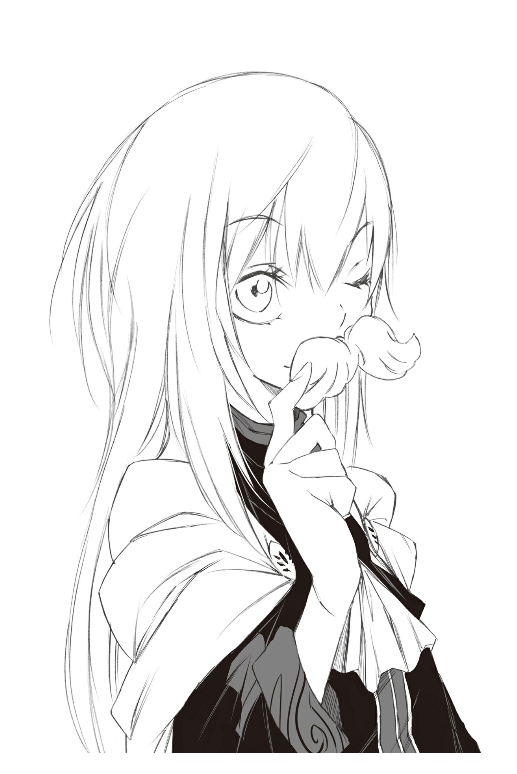そう言って取り出したのは、校長先生なりきりセットの〝付け髭〟である。
Nói rồi, thứ tôi lấy ra chính là bộ 〝râu giả〟 trong set đóng vai thầy hiệu trưởng.
それをサイラスに手渡し、頑張れ！ と笑って見せた。
Tôi đưa nó cho Silas và cười động viên: "Cố lên nhé!".
「え、えっと……」
"Ơ, ờm..."
と困惑するサイラスだったが、この空気感の中で他に王様に立候補する者がいるはずもなく……結局、サイラスが即位するという事で、話が纏まったのだった。
Silas bối rối ra mặt, nhưng trong cái bầu không khí này thì chắc chắn chẳng còn ai khác đứng ra ứng cử làm Vua nữa... Kết cục, chuyện Silas lên ngôi đã được chốt hạ êm xuôi như thế.
こうして、マルクシュア王国は新時代を迎える事になる。
Và như vậy, Vương quốc Marcushua bước vào một thời đại mới.
魔塔は専門教育機関としての役割も担い、魔力がなくても優秀な人材を受け入れるようになった。そして研究機関では様々な研究が行われるようになり、将来的には我が国との交換留学生制度も採用されるようになるのである。
Ma Tháp đảm nhận thêm vai trò của một cơ quan giáo dục chuyên môn, bắt đầu tiếp nhận những nhân tài ưu tú dù họ không có ma lực. Thêm vào đó, tại các cơ quan nghiên cứu, nhiều công trình nghiên cứu đa dạng bắt đầu được tiến hành, và trong tương lai, chế độ trao đổi du học sinh với nước tôi cũng sẽ được áp dụng.
そして造船所も、木造ボートから始まり、中型ボート、更には大型船舶すらも建造出来る規模へと拡張されていく。
Và cả xưởng đóng tàu nữa, khởi đầu từ những chiếc thuyền gỗ, rồi đến thuyền cỡ trung, và dần dần mở rộng quy mô đến mức có thể đóng được cả tàu biển cỡ lớn.
近い将来、マルクシュア王国から賢人都市の二つ名は消えて、新たに誕生した海洋都市の二つ名が知られていくようになるのだ――
Trong tương lai gần, cái biệt danh Hiền Nhân Đô của Vương quốc Marcushua sẽ biến mất, để rồi một cái tên mới được khai sinh Hải Dương Đô sẽ dần được biết đến rộng rãi――
●
短くも長かった有給休暇を終えて、俺達は魔物の国に戻って来た。
Kết thúc kỳ nghỉ phép có lương tuy ngắn mà dài, chúng tôi đã trở về Ma Quốc.
「何が『短くも長かった』よ。途中で『空間支配』で戻って来てたじゃないの」
"Cái gì mà 'tuy ngắn mà dài' chứ. Chẳng phải giữa chừng cậu đã dùng 『Chi Phối Không Gian』 để quay về rồi sao."
「それを言ったら雰囲気台無しじゃないか！」
"Cô nói thế thì hỏng hết cả bầu không khí rồi còn gì!"
「はいはい」
"Rồi rồi."
またもヒナタから突っ込まれてしまった。
Tôi lại bị Hinata bắt bẻ nữa rồi.
これだからヒナタは――
Chính vì thế nên Hinata mới――
「悪かったわね、男心がわからなくて」
"Xin lỗi nhé, vì tôi không hiểu tâm lý đàn ông."
「あの、何度も言ってますけど……俺の心を読むのを、止めてもらっていいですかね？」
"Này, tôi nói bao nhiêu lần rồi mà... làm ơn ngừng nắm thóp tôi có được không vậy?"
「わかりやすいのよ、貴方は」
"Cậu thật là dễ đoán."
そう言って、ヒナタが笑った。
Nói rồi, Hinata bật cười.
とても御機嫌そうなので、俺としても悪くない気分だった。
Trông cô ấy có vẻ rất vui, nên tâm trạng tôi cũng không tệ.
子供達にもお土産を配り、これにて一件落着。
Chia quà lưu niệm cho bọn trẻ xong xuôi, vụ việc coi như đã giải quyết ổn thỏa.
俺の有給休暇も有意義に過ごせたのだが、もう一点、忘れてはならない事があった。
Kỳ nghỉ phép có lương của tôi đã trôi qua đầy ý nghĩa, nhưng vẫn còn một chuyện nữa không được phép quên.
優雅にマッサージチェアで寛ぐルミナスを見た瞬間、俺はそれを思い出した。
Khoảnh khắc nhìn thấy Luminous đang thư giãn trên ghế massage một cách tao nhã, tôi liền nhớ ra chuyện đó.
「ルミナス、よくも俺達を騙してくれたな！」
"Luminous, cô gan lắm, dám lừa gạt bọn tôi à!"
「何じゃ、騒々しい」
"Cái gì thế, ồn ào quá."
「何じゃ――って、魔塔だよ！ 古い知り合いとか言って、思いっきりお前の敵だったじゃねーか！！」
"Cái gì thế――cái gì chứ, là chuyện Ma Tháp đấy! Cô bảo là người quen cũ, mà hóa ra toàn là kẻ thù không đội trời chung của cô còn gì!!"
「フンッ！ 妾（わらわ）は嘘など申しておらぬわ」
"Hứ! Thiếp (Warawa) đâu có nói dối câu nào."
何を――と文句を言いかけて、ハタと気付いた。
Tôi định gân cổ lên cãi "Cái gì mà...", nhưng chợt nhận ra.
確かにルミナスは、古い知り合い、としか言っていなかった。
Đúng là Luminous chỉ nói là "người quen cũ" thôi thật.
煽っている内容だが、紹介状は紹介状だった。
Nội dung tuy mang tính khiêu khích, nhưng thư giới thiệu thì đúng là thư giới thiệu.
古今東西の魔法を記録してあったのも本当だし、貴重な資料も大量にあった。
Chuyện ghi chép ma pháp cổ kim đông tây là thật, và tài liệu quý giá cũng có cả đống.
友人とは一言も言ってなかったなと思い出して、俺は頭を抱える。
Nhớ ra là cô ta chưa từng nói một lời nào bảo họ là bạn bè, tôi ôm đầu ngao ngán.
「やられたわね……」
"Bị chơi một vố rồi..."
ヒナタも同じように気付いたのか、「ルミナス様にも困ったものね」と、さっさと負けを認めた様子だった。
Có vẻ Hinata cũng đã nhận ra điều tương tự, cô ấy nói "Luminous-sama đúng là phiền phức thật," và nhanh chóng thừa nhận thất bại.
「そういうところが、貴様の甘さじゃな」
"Chính cái điểm đó là sự ngây thơ của ngươi đấy."
と、ルミナスに笑われた。
Luminous cười nhạo tôi.
事実なので反論の余地なし……。
Sự thật rành rành nên chẳng còn đường nào mà cãi lại...
こういう時、ヴェルドラは頼りにならない。
Những lúc thế này, Verudora chẳng nhờ vả được gì sất.
ルミナスに弱みを握られているので、何も言い返せないからだ。
Vì bị Luminous nắm thóp nên cậu ta đâu có dám bật lại câu nào.
「お主達が成長するには、丁度良い相手であったであろう？」
"Chẳng phải đó là đối thủ vừa tầm để các ngươi trưởng thành hơn sao?"
「そんな事はなかったぞ。ヒナタなんて殺されかけたし」
"Làm gì có chuyện đó. Hinata suýt bị giết đấy."
「何じゃと！？ あの者共は大言壮語するが、臆病じゃったからな。そこまで大事にはならぬと思っておったのに……」
"Cái gì cơ!? Đám đó tuy hay khoác lác nhưng vốn nhát gan lắm mà. Ta không ngờ chúng lại làm chuyện tày trời đến mức đại sự đến mức này đâu..."
俺の言葉でルミナスが慌てているが、それはヒナタを心配しているからだな。
Luminous hoảng hốt trước lời nói của tôi, xem ra là do cô ta lo lắng cho Hinata đây mà.
今更だし、俺達にもその心配りを向けて欲しいものである。
Dù giờ mới nói thì hơi muộn, nhưng tôi cũng muốn cô ta dành chút sự quan tâm đó cho bọn tôi nữa đấy.
「大丈夫だったわよ、リムルがいたから。それに、相手の特性に驚いて失敗したけど、次は勝つわ」
"Không sao đâu, đã có Rimuru ở đó mà. Với lại, tôi chỉ sơ suất vì bất ngờ trước đặc tính của đối thủ thôi, lần sau tôi sẽ thắng."
実に逞しいセリフだった。
Quả là một câu nói đầy mạnh mẽ.
ルミナスもそれを聞いて安堵していた。
Luminous nghe vậy cũng thở phào nhẹ nhõm.
「ヒナタらしいな」
"Đúng là phong cách của Hinata nhỉ."
「うむ。あの女は負けず嫌いなのだろうさ」
"Umu. Mụ đàn bà đó hẳn là rất hiếu thắng đây."
そんなふうにコソコソ喋っていると、ヒナタから睨まれた。
Đang thì thầm to nhỏ như thế thì tôi bị Hinata lườm.
「何よ、文句あるわけ？」
"Cái gì, hai người có ý kiến gì à?"
「ありません」
"Không có ạ."
「我も！」
"Ta cũng không!"
俺だけでなく、ヴェルドラも長い物には巻かれる主義になってしまったか。
Không chỉ mình tôi, mà xem ra cả Verudora cũng theo chủ nghĩa "thấy kẻ mạnh thì cứ ngoan ngoãn vâng lời" rồi sao.
だが、それで平和が保てるのだから、何の問題もないと思う次第である。
Nhưng mà, nhờ thế mà hòa bình được giữ vững, nên tôi nghĩ cũng chẳng có vấn đề gì.
ただ、もう一言、釘を刺すのを忘れてはならないと思った。
Có điều, tôi nghĩ không được quên rào trước một câu.
「しかしだね、温厚な俺だったから、上手く話し合いで決着したけど――」
"Tuy nhiên nhé, vì là tôi hiền lành nên mới giải quyết êm đẹp bằng đàm phán được, chứ――"
そこまで言いかけた時、ヴェルドラから邪魔が入る。
Tôi đang nói đến đó thì bị Verudora chen ngang.
「何を言う。キレた勢いで殺――」
"Cậu nói cái gì thế. Trong lúc nổi điên cậu định giế――"
「ヴェ、ヴェルドラ君！ オヤツ、そう、オヤツを食べに行こうじゃないか！ 約束してたもんな！」
"Ve, Verudora-kun! Ăn vặt, đúng rồi, chúng ta đi ăn vặt thôi nào! Đã hứa rồi mà!"
俺は慌ててヴェルドラの口を塞いだ。
Tôi cuống cuồng bịt miệng Verudora lại.
ヒナタが不審そうに見てきたが、ここでバレる訳にはいかないのだ。
Hinata nhìn tôi đầy ngờ vực, nhưng tôi không thể để bị lộ tẩy ở đây được.
「何じゃ？」
"Có chuyện gì à?"
「何でもないとも！ うん。ルミナスが俺を信用してくれていたのなら、それでいいさ！」
"Không có gì đâu! Ừm. Nếu Luminous đã tin tưởng tôi thì tốt rồi!"
俺はそう言って、その場を誤魔化した。
Tôi nói thế để lấp liếm cho qua chuyện.
俺がキレたのがバレるなど、恥ずかし過ぎる。
Chuyện tôi bị nổi đóa mà bại lộ thì xấu hổ chết mất.
ルミナスにいいように利用されてしまったけど、まあいいかと思えたのだ。
Dù bị Luminous lợi dụng một cách triệt để, nhưng tôi lại nghĩ thôi kệ cũng chẳng sao.
――そしてまた、俺達の日常は続いていくのだった。
――Và thế là, cuộc sống thường nhật của chúng tôi lại tiếp tục trôi đi.
〈十巻第三章に続く〉
CUỘC ĐỐI THOẠI ĐẶC BIỆT: FUSE × TAKADA YUZO
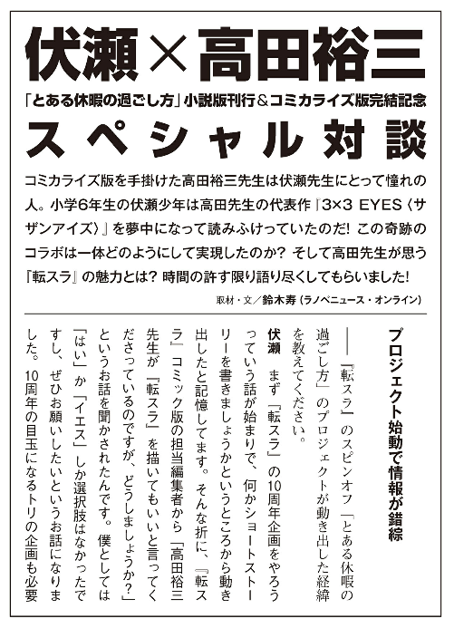 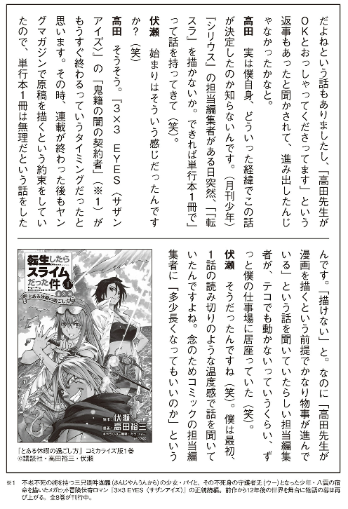 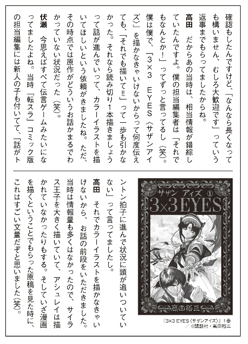 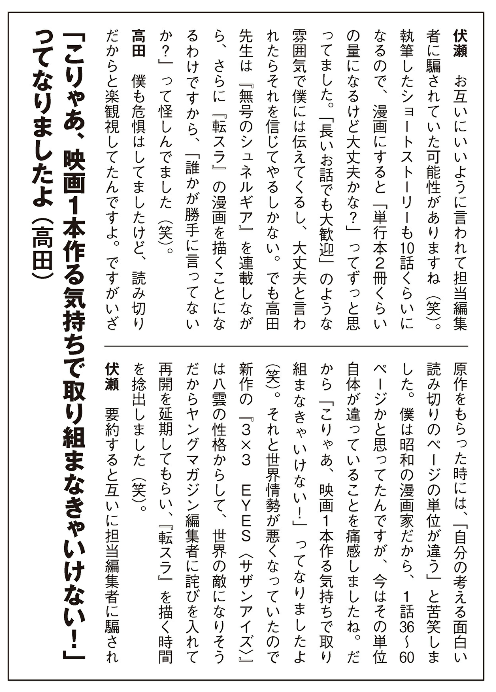 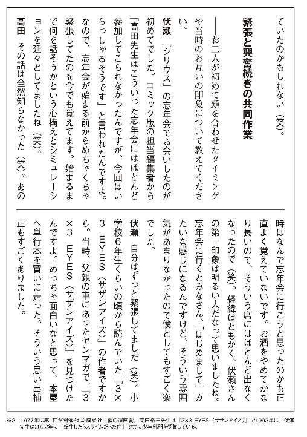 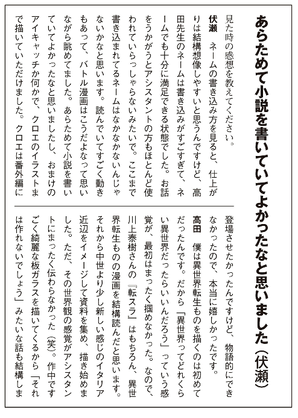
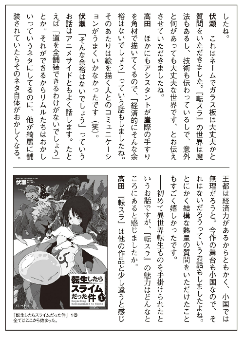
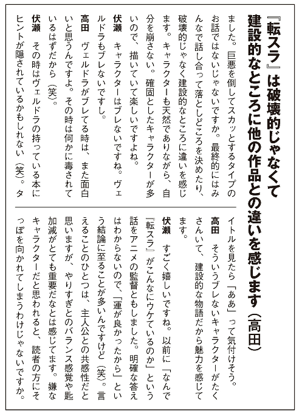
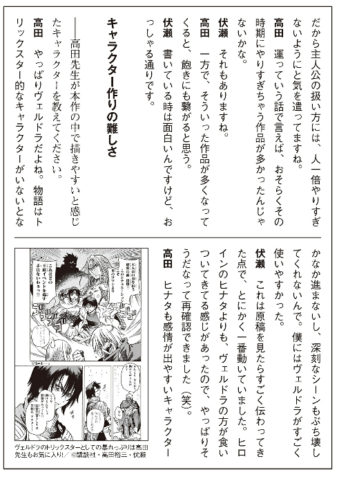
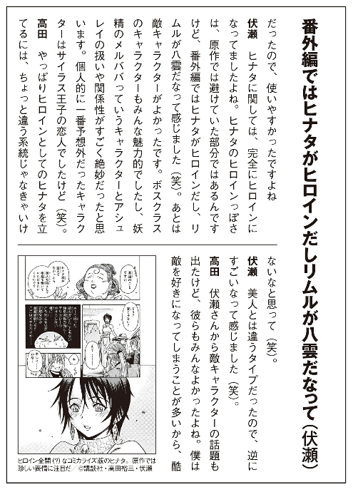
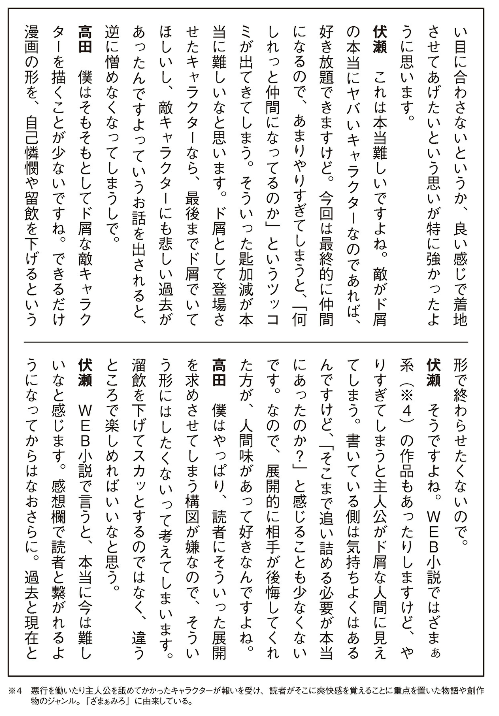
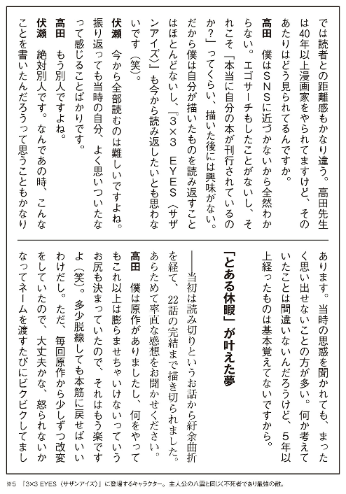
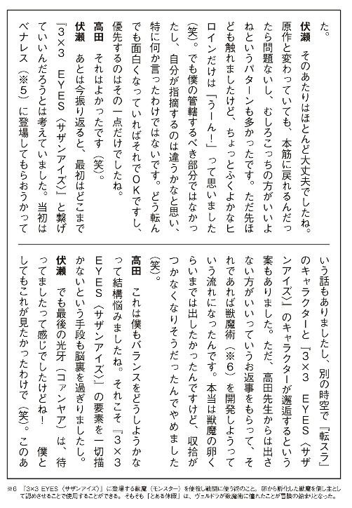
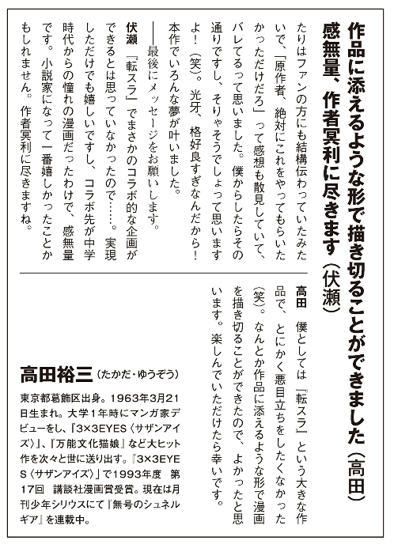
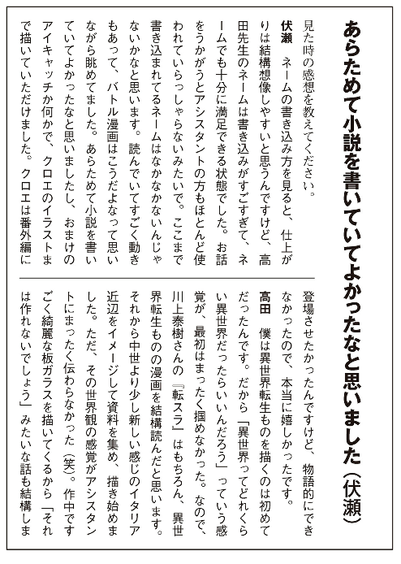
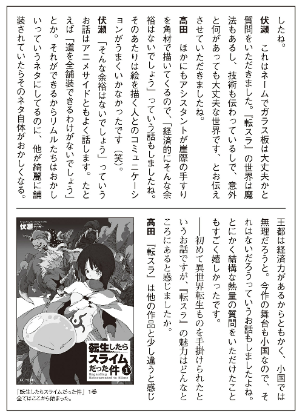
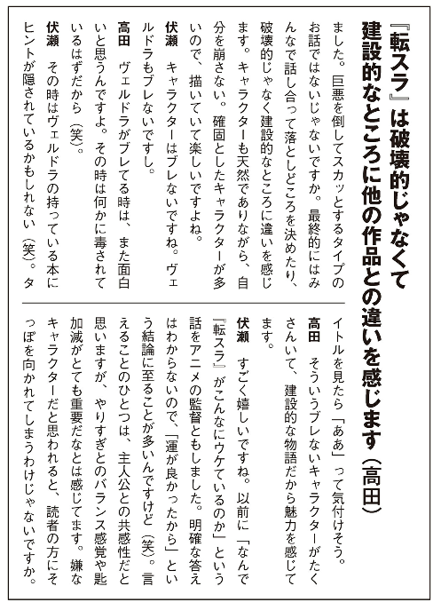
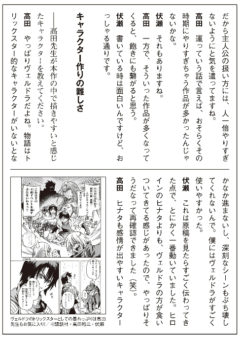
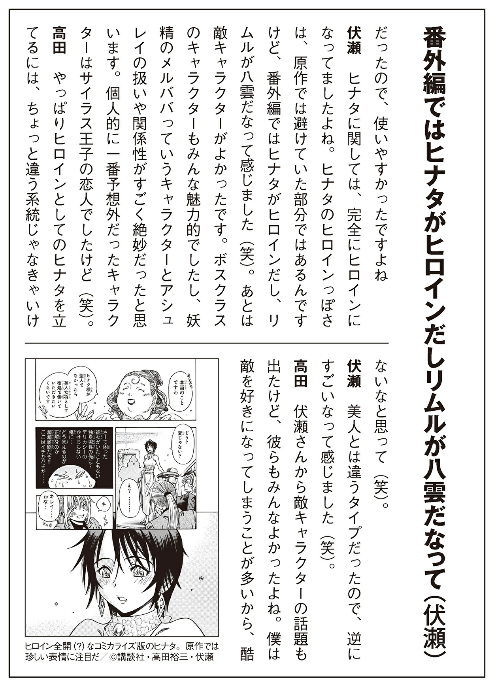
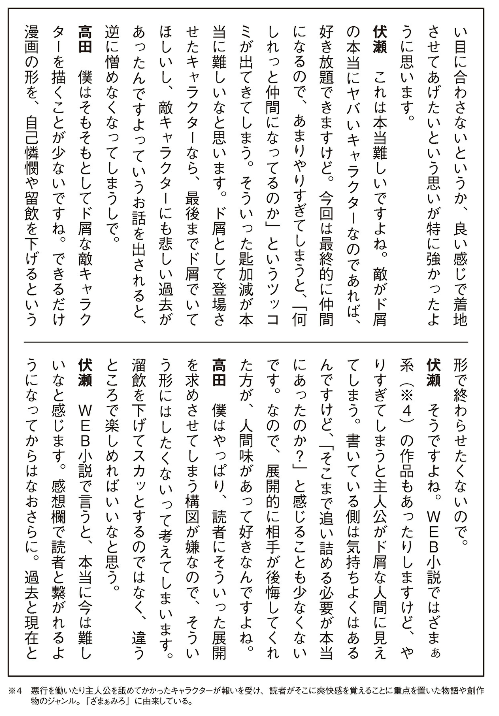
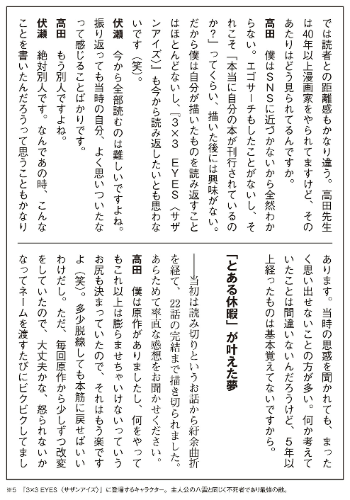
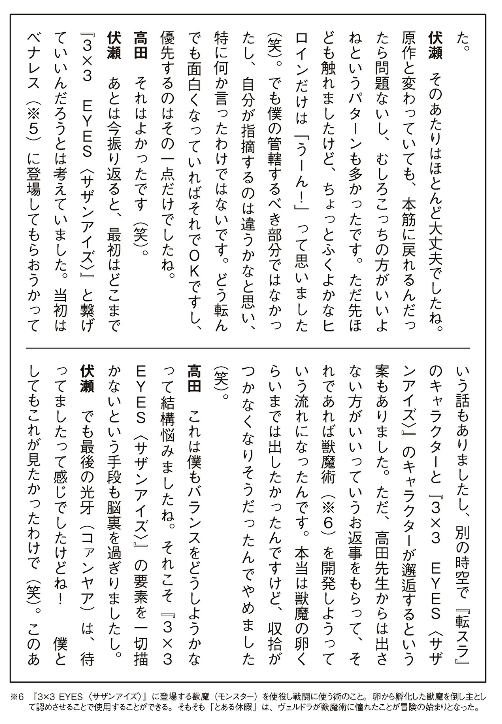
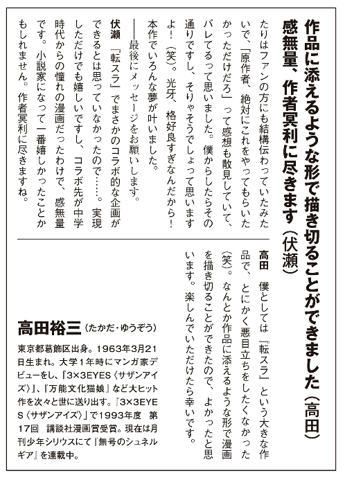
TẬP ĐẶC BIỆT: ĐÊM TRƯỚC THỜI ĐẠI ĐẠI HÀNG HẢI
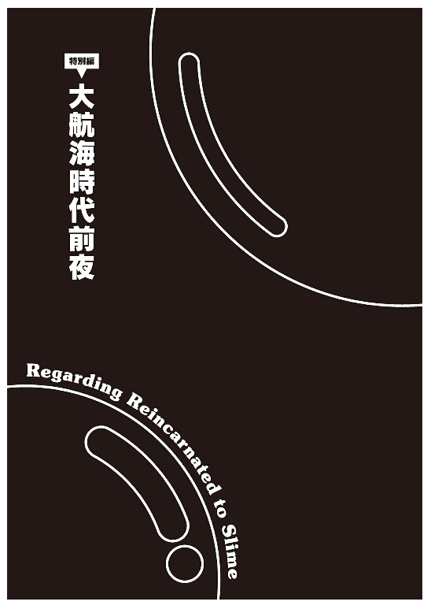俺は久しぶりに、ヴェルドラと一緒にマルクシュア王国へとやって来た。
Lâu rồi tôi mới cùng Verudora quay lại Vương quốc Marcushua.
アシュレイ達との諍（いさか）いから、既に数年は経過している。
Kể từ vụ xích mích với nhóm Ashley, đã vài năm trôi qua.
マルクシュア王国とは定期的に交流が続いていたのだが、色々な出来事が立て続けに起こった事で、遊びに行く余裕などなかったのだ。
Dù vẫn duy trì giao lưu định kỳ với Vương quốc Marcushua, nhưng do nhiều sự kiện dồn dập xảy ra liên tiếp nên tôi chẳng còn thời gian rảnh rang đâu mà đi chơi.
新鮮な魚の仕入れ先として、我が国の厨房でも大歓迎されていた。なので俺自ら『空間転移』で買い出しに行って、鮮魚を『胃袋』に収納して運搬する予定だったのだが、そんな事をしている場合ではなかったのである。
Nơi đây rất được nhà bếp nước tôi hoan nghênh vì là nguồn cung cấp cá tươi. Thế nên tôi đã dự định tự thân dùng 『Di Chuyển Không Gian』 đi mua sắm, rồi chứa cá tươi vào 『Dạ Dày』 để vận chuyển, nhưng tình thế lúc đó không cho phép tôi làm chuyện như vậy.
非常に残念な話であったが、それは代役を立てれば済む話。俺の代わりにゲルドの部下を派遣し、種族特有の『胃袋』を経由して運搬してもらう事で、我が国の食文化が豊かになったのだ。
Tuy rất đáng tiếc, nhưng chuyện đó chỉ cần tìm người thay thế là xong. Tôi đã phái thuộc hạ của Geld đi thay, nhờ họ vận chuyển thông qua 『Dạ Dày』 đặc hữu của chủng tộc, nhờ vậy mà văn hóa ẩm thực nước tôi đã trở nên phong phú hơn.
それは帝国が攻めて来た時も、ミカエルが勃発させた天魔大戦や、フェルドウェイが画策してミリムを暴走させた際にだって、密やかに続けられていた。
Việc đó vẫn được duy trì ngay cả khi Đế Quốc tấn công, hay trong cuộc Thiên Ma Đại Chiến do Michael khơi mào, và cả Feld way bày mưu tính kế khiến Milim nổi điên, thì việc đó vẫn được âm thầm duy trì.
邪神イヴァラージェの襲来は短期決戦だったので、それこそ影響が出る前に終息したのだった。
Cuộc tập kích của Tà Thần Ivalage là một trận chiến ngắn hạn, nên nó đã chấm dứt trước khi kịp gây ra ảnh hưởng gì.
迷宮内に避難した人々が食事で不安を感じる事がなかったのは、そうした努力もあって平時同様の食を提供出来ていたからなのである。
Việc những người dân sơ tán vào trong Mê Cung không cảm thấy bất an về chuyện ăn uống, chính là nhờ những nỗ lực đó đã giúp cung cấp lương thực hệt như thời bình.
何事も、事前準備が大事。それを証明するかのように、我が国での損失は軽微で済んだのだった。
Phàm là chuyện gì, khâu chuẩn bị trước cũng rất quan trọng. Như để chứng minh cho điều đó, tổn thất ở nước tôi chỉ dừng lại ở mức rất nhỏ.
そんな訳で、被害甚大だった国々への支援を行うのは当然だ。
Chính vì lẽ đó, việc hỗ trợ các quốc gia chịu thiệt hại nặng nề là điều đương nhiên.
世界各地で復興への協力を行うべく、俺は知り合いのいる国々を訪問する毎日を送っていた。
Để hợp tác tái thiết tại các nơi trên thế giới, tôi đã trải qua những ngày tháng đi thăm hỏi các quốc gia mà mình có người quen.
そして今回、ようやくマルクシュア王国の順番になったという訳である。
Và lần này, cuối cùng cũng đã đến lượt của Vương quốc Marcushua.
＊
*
マルクシュア王国の状況だが、被害は思ったほど大きくなかった。
Về tình hình của Vương quốc Marcushua, thiệt hại không lớn như tôi tưởng.
魔塔が構築していた『結界』が効果を発揮したお陰で、王都への影響は軽微だった。国内で何度も発生した地震――大規模戦闘の影響――によって、幾つかの建物が崩壊していたくらいである。
Nhờ 『Kết Giới』 do Ma Tháp xây dựng đã phát huy hiệu quả, nên ảnh hưởng đến Vương đô là không đáng kể. Chỉ có vài tòa nhà bị sập do những trận động đất xảy ra liên miên trong nước ―― hậu quả của các trận chiến quy mô lớn ―― mà thôi.
王都周辺の一般区画の被害はもっと大きかったそうだが、これらはアシュレイ達の手で修復されていた。
Nghe nói thiệt hại ở khu thường dân quanh Vương đô còn lớn hơn nhiều, nhưng những nơi đó đã được nhóm Ashley ra tay sửa chữa.
暴走したミリムがサリオンで大暴れしたせいで、周辺の地形が一変するほどの規模で大破壊が生じてしまっていた。その余波がしっかりと届いていて、農地どころか山々や野原までも、元に戻すのが大変なほどの惨状を呈していたそうだ。
Do Milim nổi điên và quậy tung Sarion, nên đã gây ra sự tàn phá quy mô lớn đến mức địa hình xung quanh bị thay đổi hoàn toàn. Dư chấn của nó đã lan mạnh đến tận đây, gây ra thảm cảnh khủng khiếp khiến việc khôi phục lại không chỉ đất nông nghiệp mà cả núi non và đồng cỏ cũng trở nên vô cùng khó khăn.
それを見かねた魔塔の魔法使い達が、総出で復興させたのだという。
Nghe nói vì không thể đứng nhìn cảnh đó, toàn bộ ma pháp sư của Ma Tháp đã được huy động để tái thiết.
アシュレイだけでなく、〝最古参の三賢人（トリニティワイズマン）〟がそろい踏みだったというのだから、魔塔に所属している者達に拒否権などなかったに違いない。
Không chỉ Ashley, mà cả 〝Tam Hiền Nhân Cổ Đại (Trinity Wiseman)〟 đều cùng xuất trận, nên chắc chắn những kẻ trực thuộc Ma Tháp chẳng có quyền từ chối đâu.
そう思ったものの、結果的には良かった模様。小国でありながらもマルクシュア王国は、他の西側諸国と比べても見劣りしない活躍を発揮出来たのだそうだ。
Dù nghĩ vậy, nhưng kết quả có vẻ vẫn tốt đẹp. Tuy là một tiểu quốc nhưng Marcushua đã thể hiện được những hoạt động không hề kém cạnh so với các quốc gia phương Tây khác.
場所を王城の応接室に移して、皆で寛ぎながら話の花を咲かせていく。
Chúng tôi di chuyển đến phòng tiếp khách trong Vương thành, mọi người vừa thư giãn vừa chuyện trò rôm rả.
最初に口を開いたのはサイラスだ。
Người đầu tiên mở lời là Silas.
宰相候補となった弟のヘリオスではなく、国王自ら経過説明をしてくれるらしい。
Không phải người em trai Helios đã trở thành ứng cử viên Tể tướng, mà đích thân Quốc vương sẽ giải thích tình hình.
「あ、あの、リムルさん、いや、リムル陛下？ ええと、大魔――」
"A, à ừm, Rimuru-san, à không, Rimuru Bệ hạ? Ờ thì, Đại Ma――"
「堅苦しく話さなくてもいいじゃないか、サイラス君。他の大臣とかもいる場所ならともかく、ここは旧知の者しかいないだしさ！」
"Không cần phải nói chuyện câu nệ thế đâu, Silas-kun. Nếu là nơi có các đại thần khác thì không nói, chứ ở đây toàn người quen cũ cả mà!"
ヴェルドラとか、敬語が無視系な人だしね。
Như Verudora ấy, hắn là kiểu người bơ đẹp kính ngữ mà lị.
ここにはヒナタもいないし、小言を言われる心配もない。もっと気楽に語り合おうと、俺は提案した。
Ở đây cũng không có Hinata, nên chẳng lo bị cằn nhằn đâu. Tôi đề nghị hãy cứ trò chuyện thoải mái hơn đi.
普通、小国の国王だったならば、大魔王とか呼ばれるようになってしまった俺や、魔塔を率いる"最古参の三賢人（トリニティワイズマン）"が相手では、気を遣うなというのが無理な相談であろう。しかしサイラスの場合、本音で語り合った事もある気の知れた仲なのだ。俺の二つ名が変わったくらいで態度を変えられたくないので、そこは頑張ってもらいたいところ。
Thông thường, nếu là Quốc vương của một tiểu quốc, thì đối mặt với tôi kẻ được gọi là Đại Ma Vương hay những kẻ cầm đầu Ma Tháp là "Tam Hiền Nhân Cổ Đại (Trinity Wiseman)", thì việc bảo đừng giữ kẽ quả là một đòi hỏi vô lý. Tuy nhiên, trường hợp của Silas thì chúng tôi là chỗ quen biết từng trải lòng với nhau. Tôi không muốn cậu ta thay đổi thái độ chỉ vì cái danh xưng của tôi thay đổi đâu, nên mong cậu ta cố gắng khoản này.
俺の態度を見て、サイラスが笑った。
Nhìn thái độ của tôi, Silas bật cười.
「いやあ、変わらないですね、リムルさんは！」
"Chà, ngài vẫn chẳng thay đổi gì cả nhỉ, Rimuru-san!"
ホッとしたようなその笑顔から、俺が変わってしまったのではと心配していたのが察せられる。
Từ nụ cười có vẻ nhẹ nhõm đó, tôi có thể đoán được là cậu ta đã lo lắng không biết tôi có bị thay đổi hay không.
「変わる訳ないだろ？ 俺は、俺。いつまでも成長しないと言われると腹が立つけど、そうコロコロと考え方を変えるようじゃ、指導者なんてやってられないっての！」
"Sao mà thay đổi được chứ? Tôi là tôi. Dù bị bảo là mãi không chịu trưởng thành thì cũng bực mình thật, nhưng nếu cứ thay đổi suy nghĩ xoành xoạch thì sao mà làm lãnh đạo được chứ!"
気まぐれな上司に振り回される部下という立場は、傍（はた）から見ているよりも本当に大変なのだ。
Cái phận cấp dưới bị cấp trên tính khí thất thường xoay như chong chóng, thực sự vất vả hơn nhiều so với nhìn từ bên ngoài (hata) đấy.
一貫性を持って、理性的に。
Cần phải có tính nhất quán, và lý trí.
これをモットーに、俺も頑張る所存であった。
Lấy điều này làm phương châm, ta cũng định sẽ cố gắng hết sức.
サイラスは笑いながら頷き、今度は落ち着いて話し始める。
Silas vừa cười vừa gật đầu, và lần này bắt đầu nói chuyện một cách bình tĩnh.
「実際、魔塔の協力があって助かりましたよ。俺達だけじゃあ、未曽有の危機を乗り越えられなかったでしょうし、その後の復興だって思うように進まなかったはず。冬を越せずに飢える民も出たはずです」
"Thực tế, nhờ có sự hợp tác của Ma Tháp mà chúng tôi đã được cứu đấy. Nếu chỉ có chúng tôi thôi thì chắc đã không thể vượt qua cuộc khủng hoảng chưa từng có này, và công cuộc phục hưng sau đó hẳn cũng không tiến triển như ý muốn. Chắc chắn sẽ có những người dân bị chết đói vì không qua nổi mùa đông."
と、マルクシュア王国の実情を説明してくれた。
Cậu ta giải thích về thực tình của Vương quốc Marcushua như vậy.
臣籍降下する予定だったのに、突然王様になってしまった。そんなサイラスだが、思った以上に良い王様になったようである。
Vốn dự định sẽ hạ mình xuống làm thần dân, thế mà đột nhiên lại trở thành Nhà vua. Một Silas như thế, dường như đã trở thành một vị Vua tốt hơn mong đợi.
俺なんて『何とかなるさ』と割り切っているので、ひょっとすると王様としての責任感では負けている可能性まであった。後輩に追い抜かれない為に、もう少し気を抜かないようにしようと思う。
Cỡ như ta thì toàn chốt hạ bằng câu 『Sẽ ổn cả thôi』, nên khéo khi xét về tinh thần trách nhiệm của một vị Vua, có khả năng ta còn thua cậu ta nữa. Để không bị hậu bối vượt mặt, ta nghĩ mình nên bớt lơ là đi một chút thì hơn.
とは言え、だ。
Dẫu nói là vậy.
「やあやあ、大魔王リムル様。マルクシュア王国だけではなく、魔塔としても歓迎致しますよ」
"Chào chào, Đại Ma Vương Rimuru-sama. Không chỉ Vương quốc Marcushua, mà với tư cách là Ma Tháp, chúng tôi cũng xin hoan nghênh ngài."
などと仰々しく挨拶するアシュレイ達を見て、何とも言えない気分になる。
Nhìn nhóm Ashley chào hỏi một cách phô trương như vậy, ta cảm thấy thật khó tả.
サイラスも口ごもっていたが、何が大魔王だ。
Cả Silas cũng đang ấp úng, nhưng cái gì mà Đại Ma Vương chứ.
「堅苦しい挨拶は止めてくれよ。その『大魔王』ってのはさ、ギィが勝手に押し付けてきただけの役割だっての！」
"Thôi ngay cái màn chào hỏi cứng nhắc đó đi. Cái danh 『Đại Ma Vương』 đó hả, chỉ là cái vai trò mà Guy tự tiện ấn cho ta thôi!"
ホント、俺としては引き受けたつもりなどない。
Thật tình, tôi đâu có định nhận cái danh đó đâu.
それなのに、ルミナスが全世界に公開しちゃったもんだから、変に話が広まってしまって大迷惑しているのである。
Thế mà, do Luminous lại đi công khai cho cả thế giới biết, nên câu chuyện lan truyền theo hướng kỳ quặc khiến ta gặp đại rắc rối đây này.
「クァーーッハッハッハ！ 良いではないか、偉くなるのは嫌いではないのだろう？」
"Kuaaaahhahhahha! Chẳng phải tốt sao, cậu đâu có ghét việc trở nên vĩ đại đâu nhỉ?"
などと、ヴェルドラは能天気にしているけどね。
Verudora nói vậy với vẻ vô tư.
「偉くなるのはともかく、それに伴う責任が面倒なんだよ！」
"Khoan bàn đến chuyện trở nên vĩ đại, cái trách nhiệm đi kèm với nó mới phiền phức đấy!"
威張るだけでいいなら、話は簡単だ。
Nếu chỉ cần ra vẻ hống hách thôi thì chuyện đơn giản rồi.
喜んで受け入れて、偉そうにふんぞり返るプレイを楽しむだけである。
Tôi sẽ vui vẻ chấp nhận và tận hưởng cái trò nhập vai ngồi ngả người ra ghế ra vẻ ta đây ngay.
だけど、実際はそうじゃない。色々と仕事が増える上に、様々な人間関係――ひいては、国家間の調整なども大変なので、拒否一択なのである。
Nhưng thực tế đâu có như vậy. Công việc thì tăng lên đủ thứ, đã thế còn đủ loại mối quan hệ――Kéo theo đó, việc điều phối giữa các quốc gia cũng rất vất vả, nên tôi chỉ có một lựa chọn duy nhất là từ chối.
「そうは言うが、リムルよ。結局のところ、世界各国の復興に協力しておる訳だし、貴様の言う責任とやらも果たしておるではないか。故に、堂々と賞賛されるがいい！！」
"Nói là vậy, nhưng mà Rimuru này. Rốt cuộc thì, cậu cũng đang hợp tác tái thiết các quốc gia trên thế giới, chẳng phải là cậu cũng đang hoàn thành cái gọi là trách nhiệm đã nói đó sao. Chính vì thế, hãy đường hoàng mà nhận lấy lời tán dương đi!!"
それはまあ、その通りではある。
Điều đó thì chà, cũng đúng là như vậy.
今回、我が魔物の国（テンペスト）は迷宮内に首都〝リムル〟を退避させていた事もあり、ほぼ無傷で未曽有の危機を乗り切れた。
Lần này, Liên Bang Ma Quốc (Tempest) của tôi nhờ việc đã sơ tán ma đô 〝Rimuru〟 vào bên trong mê cung, nên đã vượt qua được cuộc khủng hoảng chưa từng có mà gần như không hề hấn gì.
人類防衛戦線に参加しているので文句を言われる筋合いはないのだが、それでもまあ、被害甚大な国々を見て見ぬフリは出来ないというのが本音である。
Vì đã tham gia vào Chiến tuyến phòng vệ nhân loại nên ta chẳng có lý do gì để bị phàn nàn cả, nhưng mà chà, thật lòng mà nói thì ta không thể giả vờ như không thấy khi chứng kiến các quốc gia chịu thiệt hại nặng nề được.
それに、自分達だけが大丈夫だったとしても、世界経済は回らないのだ。
Hơn nữa, cho dù chỉ có mỗi nhóm mình là bình an vô sự, thì kinh tế thế giới cũng sẽ không vận hành được.
世界各国から戦争の傷跡が癒えてこそ、更なる発展を目指せるものだった。
Chỉ khi các vết thương chiến tranh từ các nước trên thế giới được chữa lành, thì mới có thể hướng tới sự phát triển xa hơn nữa.
だからこそ、出し惜しみせずに金をばら撒き、世界の安定化を優先させている。お金なんて後からいくらでも稼げるので、恩を売る方が得策という下心だってあったりした。
Chính vì thế, tôi không tiếc tiền của mà vung ra khắp nơi, ưu tiên việc ổn định hóa thế giới. Tiền bạc thì sau này kiếm lại bao nhiêu cũng được, nên tôi cũng có toan tính ngầm rằng việc ban ơn huệ sẽ là thượng sách hơn.
そんな訳で、俺自身としては責任を果たしている感じではないのである。
Vì lẽ đó, bản thân tôi không cảm thấy như mình đang làm tròn trách nhiệm gì cả.
それなのに、ヴェルドラだけでなくアシュレイ達まで、俺が大魔王に任命されたのが当然だと言い出した。
Thế mà, không chỉ Verudora mà cả nhóm Ashley cũng bắt đầu nói rằng việc tôi được bổ nhiệm làm Đại Ma Vương là chuyện đương nhiên.
「それにそもそも、実力だって誰もが認めるところでしょう？ 我々も敗北した身だから言う訳ではないが、貴殿の活躍ぶりを知る者ならば、反対意見など出ないでしょうよ」
"Hơn nữa vốn dĩ, thực lực của ngài là điều ai cũng công nhận phải không? Không phải vì chúng tôi là kẻ bại trận nên mới nói vậy đâu, nhưng bất cứ ai biết đến những chiến tích của ngài thì sẽ không có ý kiến phản đối nào đâu"
「然り。貴殿に敗北して、己の未熟さを知った。そして高みを目指したのだが、その頂きの何と遠い事か……」
"Phải đấy. Bại trận trước ngài, tôi đã biết được sự non nớt của bản thân. Và rồi tôi đã nhắm đến đỉnh cao, nhưng đỉnh cao ấy thật xa vời biết bao..."
アシュレイだけでなく、プレリクスまでも同意見であるらしい。
Có vẻ như không chỉ Ashley, mà ngay cả Prelix cũng cùng ý kiến.
いや、まあ？
Không, mà...
大魔王という称号は、ギィが言い出しただけだからね？
Cái danh hiệu Đại Ma Vương đó, chỉ là do Guy tự tiện nói ra thôi mà nhỉ?
確かに〝強いから〟というのが理由ではあるけど、俺からすればどうでもいい話なのだ。
Đúng là lý do là vì 〝Mạnh〟 thật, nhưng đối với tôi thì chuyện đó sao cũng được.
そもそも、強さと国家運営には、何の因果関係もないはずである。
Vốn dĩ, giữa sức mạnh và việc điều hành quốc gia đâu có mối quan hệ nhân quả nào đâu.
俺は賢いので、そんな分の悪い賭けをする気になれないのだった。
Vì tôi vốn thông minh, nên chẳng hề có hứng thú đánh cược vào những ván bài nắm chắc phần thua như thế đâu.
「――ってな訳だから、大魔王とか呼ばれていても、そんなに旨味がないのよ。ほとぼりが冷めたら、大魔王は引退する予定さ！」
"――Chuyện là thế đó, nên dù có được gọi là Đại Ma Vương thì cũng chẳng có chút lộc lá nào đâu. Đợi khi mọi chuyện lắng xuống, ta dự định sẽ nghỉ hưu khỏi cái chức Đại Ma Vương này đấy!"
俺は爽やかにそう言った。
Tôi nói vậy một cách đầy sảng khoái.
ギィが認めない限り難しそうだが、これも可笑（おか）しな話だからね。誰かの言いなりになる大魔王とか、設定からして間違っていると思うのだよ。
Dù có vẻ khó khăn nếu Guy không chấp thuận, nhưng chuyện này cũng nực cười (Oka) thật. Đường đường là Đại Ma Vương mà lại phải nghe lời kẻ khác, tôi nghĩ ngay từ cái thiết lập đã sai quá sai rồi.
という事で、数年の辛抱だと俺は思っている。
Chính vì thế, tôi nghĩ chỉ cần chịu đựng vài năm nữa là xong thôi.
「ま、まあ、思うだけなら自由でしょうね」
"M-Mà, nếu chỉ là suy nghĩ thôi thì tự do mà nhỉ"
「あの戦いに参加した身からすれば、神話が終わるまでは大魔王のままであろう、というのが正直なところでありますぞ」
"Từ lập trường của một kẻ đã tham gia trận chiến đó, thì thú thật tôi nghĩ ngài sẽ vẫn là Đại Ma Vương cho đến tận khi thần thoại kết thúc đấy"
もしかして、否定的？
Chẳng lẽ là, ý kiến phản đối sao?
解せぬが、個々人の感想という事で流しておいた。
Dù không hiểu nổi, nhưng cứ coi đó là cảm nhận cá nhân rồi cho qua chuyện.
それにしても、アシュレイやプレリクスもルミナスの呼びかけに応えていたとはね。
Dẫu vậy, không ngờ cả Ashley và Prelix cũng đã đáp lại lời kêu gọi của Luminous đấy.
ピピンも参加して、援護として演算協力を行っていたらしい。
Hình như cả Pippin cũng tham gia, thực hiện việc hỗ trợ tính toán để yểm trợ.
雑魚でさえ〝魔王種〟級という、それこそ神話のような戦いだったのだ。アシュレイ達が参戦してくれて、大いに犠牲者が減った事だろう。
Đó là một trận chiến cứ như thần thoại, nơi mà ngay cả đám tép riu cũng đạt cấp độ 〝Ma Vương Chủng〟. Việc nhóm Ashley tham chiến chắc hẳn đã giúp giảm thiểu thương vong đáng kể.
「ええと、プレリクスさんって、太陽の下に出られないんじゃないの？」
"Ưm, Prelix-san, không phải là ông không thể đi ra dưới ánh mặt trời sao?"
俺がそう質問すると、プレリクスは「呼び捨てで結構ですぞ、リムル様」と応じた。その上で、自身の特性についてのピピンとの共同研究結果を、分かりやすく説明してくれたのだ。
Khi ta hỏi như vậy, Prelix đáp lại: "Cứ gọi tên là được rồi, Rimuru-sama". Sau đó, hắn giải thích một cách dễ hiểu về kết quả nghiên cứu chung với Pippin liên quan đến đặc tính của bản thân.
「リムル様のご指摘通り、陽光を超克するのは不可能でしたが、そこは逆転の発想でした。無理して耐性を得ようとするのではなく、アイテムによる補助こそ正義だと、私は悟ったのです！」
"Đúng như chỉ trích của Rimuru-sama, việc khắc phục ánh nắng là bất khả thi, nhưng tại đó đã có một ý tưởng đảo ngược. Thần ngộ ra rằng không phải cứ cố ép bản thân đạt được kháng tính, mà việc hỗ trợ bằng vật phẩm mới là chân lý!"
月の光は太陽光の反射だが、それすらもプレリクスの身を焼いた。吸血鬼族（ヴァンパイア）にとっては魔力を高める効果があるのに、真夜中の吸血鬼（ナイトストーカー）にとっては毒だったのだ。
Ánh trăng là sự phản chiếu của ánh mặt trời, nhưng ngay cả thứ đó cũng thiêu đốt cơ thể Prelix. Đối với Hấp Huyết Quỷ Tộc (Vampire) thì nó có hiệu quả gia tăng ma lực, thế nhưng đối với Dạ Hành Huyết Quỷ (Night Stalker) thì nó lại là kịch độc.
しかし、新月ならば活動出来るという事実から考えるならば、夜空の星々からは影響を受けないという事になる。
Tuy nhiên, nếu suy xét từ thực tế là hắn có thể hoạt động vào đêm trăng non, thì nghĩa là hắn không chịu ảnh hưởng từ các vì sao trên bầu trời đêm.
毒も薄めれば無害化出来るように、太陽光も薄めれば無害化可能であるはず――と、プレリクスやピピンは結論付けた訳だ。
Cũng giống như độc dược nếu pha loãng thì có thể vô hại hóa, ánh mặt trời nếu được làm yếu đi thì cũng có thể vô hại hóa ―― đó là kết luận mà Prelix và Pippin đã đưa ra.
結論としては、数多の手段を用いる事で陽光の下を歩けるようになった。種族特性として陽光を超克するのは叶わなかったものの、プレリクス的には克服したと言えるのだった。
Kết luận lại, bằng cách sử dụng vô số biện pháp, hắn đã có thể bước đi dưới ánh mặt trời. Mặc dù không thể khắc phục được ánh mặt trời như một đặc tính chủng tộc, nhưng đối với cá nhân Prelix mà nói thì có thể coi là đã khắc phục được rồi.
そこからは、プレリクスにとっては充実した日々だったという。
Nghe nói kể từ đó là những ngày tháng sung túc đối với Prelix.
ピピンは俺やヴェルドラからの依頼による船舶の設計で忙しかったのだが、プレリクスの相談相手になってくれたそうだ。だから共同研究と銘打っているが、実際にはプレリクスの頑張りが実った形であった。
Pippin dù bận rộn với việc thiết kế tàu thuyền theo yêu cầu của tôi và Verudora, nhưng nghe nói vẫn dành thời gian thảo luận cùng Prelix. Thế nên tuy gọi là nghiên cứu chung, nhưng thực tế đó là thành quả từ sự nỗ lực của chính Prelix.
陽光を妨げる魔法道具（マジックアイテム）を集め、研究し、仕組みを理解して、より実用的な品を開発して、それを試作運用して――と、忙しく活動したのだそうだ。
Thu thập các Đạo Cụ Ma Pháp (Magic Item) ngăn chặn ánh nắng, nghiên cứu, thấu hiểu cơ chế, phát triển sản phẩm thực dụng hơn, rồi vận hành thử nghiệm ―― nghe nói hắn đã hoạt động vô cùng bận rộn như thế.
アシュレイも魔法道具（マジックアイテム）の収集などで協力をし、思ったよりも早く結果が出たのだという。
Ashley cũng hợp tác trong việc thu thập Đạo Cụ Ma Pháp (Magic Item), và kết quả đạt được nhanh hơn dự đoán.
その成果が、〝黒夜のマント〟だ。
Thành quả đó chính là 〝Hắc Dạ Phi Phong〟.
俺が精霊術で陽光を反射させていたのを参考に、このマントの周辺空間の位相を弄って陽光を分散させ、有害光線のみ反射させているとの事だった。
Tham khảo việc tôi từng dùng Tinh Linh Thuật để phản xạ ánh nắng, nghe nói chiếc áo choàng này sẽ tùy chỉnh pha của không gian xung quanh để phân tán ánh nắng, và chỉ phản xạ lại những tia sáng có hại.
要するに、プリズムのような仕組みだね。
Tóm lại, cơ chế của nó giống như lăng kính nhỉ.
陽光の完全反射だと光量的に弱点がモロバレなので、中々に考えられた対策だと思われた。
Nếu phản xạ hoàn toàn ánh nắng thì về mặt lượng quang sẽ lộ rõ điểm yếu ngay, nên đây được xem là một đối sách được suy tính khá kỹ lưỡng.
「服が破れたら困りそうだな」
"Nếu áo bị rách thì có vẻ gay go đấy nhỉ"
「それが問題だったのですが、そこはピピンが開発した新素材と私の魔力を馴染ませる事で、再生可能な生地となりました。魔法構造が破壊されない限り、破れる程度なら修復可能なのです」
"Đó từng là vấn đề, nhưng nhờ việc dung hòa ma lực của tôi với loại vật liệu mới mà Pippin phát triển, nó đã trở thành loại vải có khả năng tái sinh. Miễn là cấu trúc ma pháp không bị phá hủy, thì rách mức độ thường vẫn có thể phục hồi được"
「それは凄い！」
"Tuyệt thật đấy!"
実際、凄い生地だと思う。
Thực tế, tôi nghĩ đó là một loại vải rất tuyệt vời.
プレリクスは空間位相の調整を魔法構造として組み込んだようだが、他の術式を組み込む事も出来るはず。これはサンプルをもらって、ゆっくり研究したいと思ったのだった。
Dường như Prelix đã tích hợp việc điều chỉnh pha không gian như một cấu trúc ma pháp, nhưng chắc chắn có thể tích hợp các thuật thức khác nữa. Tôi nghĩ sẽ lấy mẫu và từ từ nghiên cứu.
＊
＊
アシュレイ達との会話が一段落したのを見計らい、再びサイラスが口を開いた。
Canh lúc cuộc trò chuyện với nhóm Ashley tạm lắng xuống, Silas lại mở lời.
「それで、その、リムルさん、視察の結果はどうでした？」
"Vậy thì, chuyện là, Rimuru-san, kết quả thị sát thế nào rồi?"
マルクシュア王国の国家運営に問題はない――というのは、サイラスが自ら語った通りだ。
Việc điều hành quốc gia của Vương quốc Marcushua không có vấn đề gì ―― đúng như những gì chính Silas đã kể.
今の発言にあった視察が意味するところは、俺が依頼していた造船所についてだろう。
Ý nghĩa của việc thị sát trong phát ngôn vừa rồi, có lẽ là về xưởng đóng tàu mà tôi đã ủy thác.
他にも、街道整備などを手伝う予定なのだが、まだまだ着手出来る段階になかった。
Ngoài ra, tôi cũng dự định giúp đỡ việc hoàn thiện đường xá, nhưng vẫn chưa đến giai đoạn có thể bắt tay vào làm.
我が国から見たマルクシュア王国の立地は、魔導王朝サリオンを通り越した先にあるのだ。街道工事と鉄道敷設は順番に行うべきなので、とてもではないが手が回らないのである。
Vị trí của Vương quốc Marcushua nhìn từ nước tôi nằm ở phía bên kia Ma Đạo Vương Triều Sarion. Việc thi công đường xá và lắp đặt đường sắt cần phải được tiến hành theo thứ tự, nên thực sự là không thể nào xoay sở kịp.
教育は順次受け付けているので、技術者が育つのを待っている段階だった。いや、何処かのバカが戦争とか始めなかったら、今頃は工事が始まっていたはずだ。そんなバカも今ではディアブロに並ぶほど俺を慕って……いいや、崇拝？
Việc đào tạo đang được tiếp nhận lần lượt, nên vẫn đang trong giai đoạn chờ các kỹ thuật viên trưởng thành. Không, nếu cái tên ngốc nào đó không khơi mào chiến tranh, thì có lẽ giờ này công trình đã bắt đầu rồi. Cái tên ngốc đó giờ đây cũng ngưỡng mộ tôi ngang ngửa Diablo... không, là sùng bái nhỉ?
考えるのが面倒なので、ヤツを思い出すのは止めておく。結論としては、世界各地を復興させる方が優先なので、局所的な街道整備などは後回しになっていたのだった。
Nghĩ đến lại thấy phiền phức, nên tôi sẽ thôi không nhớ đến hắn nữa. Kết luận lại là, vì việc phục hưng các nơi trên thế giới được ưu tiên hơn, nên việc hoàn thiện đường xá cục bộ đành phải xếp lại sau.
という事で、サイラスが気にしている造船所について話を戻そう。当初はマルクシュア海軍工廠（こうしょう）と呼ばれる予定だったが、これにサイラスが猛反対した。軍事利用すべきではない、というのがその理由である。
Vì vậy, hãy quay lại câu chuyện về xưởng đóng tàu mà Silas đang bận tâm. Ban đầu nó dự định được gọi là Hải Quân Công Xưởng Marcushua, nhưng Silas đã kịch liệt phản đối điều này. Lý do là không nên sử dụng nó cho mục đích quân sự.
止むを得ない場合はともかく、船舶の開発は国際貢献に繋がる国家事業として行うべきだと、サイラスが強く主張したのだった。
Trừ những trường hợp bất khả kháng, Siras đã mạnh mẽ khẳng định rằng việc phát triển tàu thuyền nên được thực hiện như một dự án quốc gia nhằm đóng góp cho cộng đồng quốc tế.
この、国家を左右する事になる国王の発言に反対出来る者はいなかった。内心はともかく、満場一致で『マルクシュア夢想開発造船所』という名称に落ち着いたそうである。
Không một ai có thể phản đối phát ngôn sẽ quyết định vận mệnh quốc gia này của Quốc vương. Khoan bàn đến nội tâm bên trong, nghe nói cái tên 『Xưởng Đóng Tàu Phát Triển Mộng Tưởng Marcushua』 đã được nhất trí thông qua.
実際には魔塔との共同開発なのだが、国名と地名からマルクシュアの名が冠せられた訳だ。
Thực tế thì đây là sự hợp tác phát triển cùng Ma Tháp, nhưng cái tên Marcushua được đặt lên đầu là do tên nước và địa danh.
魔塔側も反対せず、これが正式名称に決定していた。
Phía Ma Tháp cũng không phản đối, nên đây đã được quyết định là tên chính thức.
そんなマルクシュア夢想開発造船所だが、遂に完成したという報告が届いたのである。
Cái Xưởng Đóng Tàu Phát Triển Mộng Tưởng Marcushua đó, cuối cùng cũng đã có báo cáo hoàn thành gửi đến.
一時中断されていた工事が再開して、問題なく竣工した。
Công trình từng bị tạm hoãn một thời gian đã được tái khởi động, và hoàn công mà không gặp vấn đề gì.
いや、問題をなくす為に、魔塔総出で復興作業を手伝ったのだろう。
Không, để loại bỏ vấn đề, có lẽ toàn bộ Ma Tháp đã cùng chung tay giúp đỡ công tác phục hưng.
素晴らしい熱量だ。
Nhiệt huyết thật tuyệt vời.
そしてそれに応えるほどに、造船所は素晴らしかった。
Và để đáp lại điều đó, xưởng đóng tàu cũng thật tuyệt vời.
「見事だったね！ 俺の要望に全て応えてあって、大規模な船も頑張れば造れそうだった」
"Ngoạn mục thật đấy! Đáp ứng được toàn bộ yêu cầu của ta, và nếu cố gắng thì ngay cả tàu quy mô lớn cũng có thể đóng được đấy"
俺の感想を聞いて、サイラスが破顔する。
Nghe cảm tưởng của tôi, Silas nở nụ cười rạng rỡ.
「でしょう？ 我が国の大工も捨てたものじゃないなって、俺も思いましたからね！」
"Phải không? Tôi cũng đã nghĩ là thợ mộc nước tôi cũng không phải hạng xoàng đâu đấy nhé!"
王としての風格とか捨て去っているサイラスだが、公式の場ではないので許されるはず。それどころか、それだけ自信があって自慢したかったのだと思えば微笑ましいほどだ。
Silas tuy đã vứt bỏ hết cái gọi là phong thái của một vị Vua, nhưng vì đây không phải là nơi trang trọng nên chắc là chấp nhận được. Chẳng những thế, khi nghĩ rằng cậu ta tự tin và muốn khoe khoang đến mức đó thì lại thấy thật đáng yêu.
サイラスの横でウンウンと頷きながら、ヘリオスもとても満足そうな表情だ。
Bên cạnh Silas, Helios vừa gật gù tán đồng vừa lộ rõ vẻ mặt vô cùng mãn nguyện.
手配したのは自分だと、そう言いたいのだろうと察せられた。
Có thể nhận thấy cậu ta đang muốn nói rằng chính mình là người đã sắp xếp mọi việc.
と思っていたら、口にした。
Vừa mới nghĩ vậy xong thì cậu ta nói ra luôn.
「兄上だけではなく、私も采配をお手伝いしましたからね！ 兄弟初の共同事業にして歴史的な国家事業とあって、マルクシュア国民総出で惜しみなく力を注がせてもらいました！」
"Không chỉ có Hoàng huynh đâu, cả đệ cũng đã phụ giúp việc chỉ đạo đấy nhé! Vì đây là dự án chung đầu tiên của huynh đệ chúng tôi và là một dự án quốc gia mang tính lịch sử, nên toàn thể người dân Marcushua đã không tiếc công sức dốc toàn lực vào đó đấy!"
お、おう。
Ờ, ờ.
我慢出来ずに言っちゃうあたり、宰相への道はまだまだ遠そうだ。
Cái kiểu không kìm được mà nói toạc ra như thế, xem ra con đường trở thành Tể tướng vẫn còn xa lắm.
ま、俺も人の事は言えないので、ここは一緒に喜ぶだけである。
Mà, tôi cũng đâu có tư cách nói người khác, nên lúc này cứ cùng vui với họ thôi.
それにしても……。
Dẫu vậy thì...
復興を優先してくれたんだよね？ と少し心配になるほどの、造船所への気合の入れっぷりだった。
Mức độ dồn tâm huyết vào xưởng đóng tàu này lớn đến nỗi khiến tôi phải lo lắng tự hỏi rằng "Các người có thực sự ưu tiên việc phục hưng không đấy?".
絶対に被害を出さないという、強い決意が感じられるほどの守りの堅さである。
Sự kiên cố của lớp phòng thủ chắc chắn đến mức có thể cảm nhận được quyết tâm mãnh liệt rằng tuyệt đối sẽ không để xảy ra thiệt hại nào.
その甲斐あってか、内装も素晴らしかった。
Có lẽ nhờ công sức đó mà nội thất cũng rất tuyệt vời.
これだけ期待されているのを感じると、俺としてもやる気になるというものだ。
Cảm nhận được sự kỳ vọng lớn đến nhường này, bản thân tôi cũng thấy có hứng thú muốn làm.
「施設の稼働も問題ないし、後はリムル様から資材を受け取るだけだよ！」
"Việc vận hành cơ sở không có vấn đề gì cả, giờ chỉ còn việc nhận vật tư từ Rimuru-sama thôi đó!"
ピピンが嬉しそうにそう言った。
Pippin nói vậy một cách vui vẻ.
船を造るのが待ちきれないと言わんばかりに、期待で顔を輝かせていた。
Gương mặt cậu ta rạng ngời sự mong đợi, như thể muốn nói rằng không thể chờ đợi thêm để được đóng tàu nữa vậy.
そうして資材を催促されても、俺は慌てない。
Dù bị hối thúc vật tư như thế, tôi cũng không hề hoảng hốt.
ニヤリと笑って、大きく頷く。
Tôi cười nhếch mép rồi gật đầu thật mạnh.
「視察のついでに、資材倉庫に納品しておいたよ！」
"Tiện thể lúc đi thị sát, ta đã giao hàng vào kho vật tư rồi đấy!"
「流石、流石は大魔王様ですぅ！！」
"Quả không hổ danh, quả không hổ danh là Đại Ma Vương-sama!!"
「そんなに褒めるなって」
"Đừng có khen ta quá lời như thế chứ"
やれやれ困ったなと、俺は自分の有能ぶりに参ってしまう。
Chà chà gay go thật đấy, tôi cũng phải chịu thua trước sự tài giỏi của chính mình luôn.
仕事の出来る男は、言われてから動かないのだ。求められるより先に要望通り片付けてこそ、有能と呼ばれる資格を得るのである。
Một người đàn ông được việc sẽ không đợi bị nhắc rồi mới làm. Phải giải quyết xong xuôi đúng theo mong muốn trước cả khi được yêu cầu, thì mới có tư cách được gọi là tài giỏi.
ただし、余計なお節介になったり二度手間になったりするので、マジで勝手な行動をする前に本当に望まれているのかどうか、キッチリと把握しておくのが大事なのだけど。
Tuy nhiên, vì việc đó có thể trở thành sự lo chuyện bao đồng thừa thãi hoặc khiến công việc phải làm lại hai lần, nên điều quan trọng là phải nắm bắt thật kỹ xem đó có thực sự là điều đối phương mong muốn hay không trước khi thực sự tự ý hành động.
具体例を挙げるとすれば、フラッシュモブとかだね。
Nếu lấy một ví dụ cụ thể, thì chính là Flash mob đấy.
あれは、人によっては許されるだろうが、大半の人には鬼門でしかない。
Cái đó có thể chấp nhận được với một số người, nhưng với đại đa số thì nó chẳng khác gì ác mộng cả.
彼女にしてあげようとか考えているのなら、事前に根回ししておき、彼女がそういうイベントが好きなのかどうか確認しておかなければならないのである。
Nếu đang có ý định làm điều đó cho bạn gái, thì cần phải thăm dò trước và xác nhận xem cô ấy có thích kiểu sự kiện như vậy hay không.
それを怠れば、待っているのは悲惨な未来だ。
Nếu lơ là việc đó, thì thứ chờ đợi phía trước sẽ là một tương lai bi thảm.
おっと、話が逸れた。
Ái chà, lạc đề rồi.
今回の俺は、望まれている品を速やかにお届けしただけなので、何の問題もなかった訳だ。出来る男をアピール出来た事に満足しつつ、造船所に併設された資材倉庫に向かったのだった。
Lần này, tôi chỉ đơn giản là nhanh chóng giao đến những món hàng được mong muốn, nên chẳng có vấn đề gì xảy ra cả. Vừa thỏa mãn vì đã thể hiện được hình ảnh người đàn ông tháo vát, tôi vừa hướng đến kho vật tư được xây dựng bên trong xưởng đóng tàu.
＊
＊
資材倉庫を埋め尽くす、〝魔鋼〟のインゴットは壮観だ。魔木なども用意したのだが、やはりインパクトが違って見える。
Những thỏi 〝Ma Cương〟 lấp đầy kho vật tư trông thật tráng lệ. Tôi cũng đã chuẩn bị cả Ma Mộc các thứ, nhưng quả nhiên độ ấn tượng trông khác hẳn.
一個一個は大きくない。
Từng thỏi một không quá lớn.
魔鋼の純度が高い為、とても重たいからだ。
Đó là vì độ tinh khiết của Ma Cương rất cao nên chúng rất nặng.
縦十センチ、横二十センチ、厚み五センチ程度。その比重は鉄よりも重く、一個当たりの重量は十キロ以上なのである。
Dọc 10 cm, ngang 20 cm, dày khoảng 5 cm. Tỷ trọng của nó nặng hơn sắt, nên trọng lượng mỗi thỏi là hơn 10 kg.
それがビッシリと敷き詰められているのだから、迫力も半端ない。これが崩れたら大変な事になるので、そうならないようにしっかりと対策済みだった。
Vì chúng được xếp kín mít nên trông vô cùng áp đảo. Nếu đống này mà đổ xuống thì sẽ thành chuyện lớn, nên tôi đã thực hiện các biện pháp đối phó kỹ lưỡng để chuyện đó không xảy ra.
「高く積み上げてあるけど、箱から出さなければ崩れないから。ちゃんと魔法で重量軽減させて、箱ごと運び出すようにしてくれ」
"Tuy được xếp chồng lên cao, nhưng miễn là không lấy ra khỏi thùng thì sẽ không bị đổ đâu. Hãy dùng ma pháp để giảm trọng lượng đàng hoàng, rồi vận chuyển nguyên cả thùng ra ngoài nhé"
この世界、魔法という便利な技術があるからね。元の世界だったら無理だったような作業も、難なく可能となるのである。
Thế giới này có kỹ thuật tiện lợi gọi là ma pháp mà. Những công việc vốn bất khả thi ở thế giới cũ cũng trở nên khả thi một cách dễ dàng.
技術レベルは低くても、一般人でさえ作業効率が高いというのが、こっちの世界の強みであった。
Dù trình độ kỹ thuật thấp, nhưng ngay cả người thường cũng có hiệu suất làm việc cao, đó là điểm mạnh của thế giới bên này.
「理解しているとも。そこは、僕がしっかりと監督するさ」
"Ta hiểu mà. Chỗ đó ta sẽ giám sát kỹ lưỡng"
と、アシュレイが請け負ってくれた。
Ashley đã đảm nhận việc đó.
アシュレイは意外にも面倒見がいいので、これ以上ない適任者だった。
Ashley bất ngờ thay lại là người rất biết quan tâm, nên là người phù hợp nhất cho việc này.
ヴェルドラとピピンは、もう船の設計について打ち合わせを始めている。
Verudora và Pippin thì đã bắt đầu bàn bạc về thiết kế của con tàu.
「だから！ 我が望むのは、恰好良い三連装砲塔なのだよ！ これは絶対に必要だと、リムルとも議論を重ねておるのだぞ！！」
"Đã bảo là! Thứ ta muốn là tháp pháo ba nòng cực ngầu cơ! Ta đã thảo luận rất nhiều với Rimuru rằng cái này là tuyệt đối cần thiết đấy!!"
議論なんて、重ねてないよ？
Chúng ta đâu có thảo luận kỹ càng gì về vụ đó đâu?
「ナンセンス！ この文献にあるように、砲弾の弾道計算を手動に頼っていた時代なら理解出来るよ？ でもさ、百発百中で狙い通りの箇所に当てられるんだから、砲塔なんて一つで十分なんだって！」
"Vô lý! Như trong tài liệu này viết, nếu là thời đại phải dựa vào tính toán đạn đạo thủ công thì ta còn hiểu được? Nhưng mà này, vì chúng ta có thể bắn trúng vị trí mong muốn bách phát bách trúng, nên tháp pháo chỉ cần một cái là đủ rồi!"
「ぐぬぬ、ならば大口径だ！ 最低でも、四十五口径四十六センチ砲をだな――」
"Hừ hừ, thế thì phải là khẩu kính lớn! Tối thiểu cũng phải là pháo 46cm 45 caliber chứ――"
「だからさ、それが浪漫兵器なのは認めるけど、実用的じゃないじゃん！ 前は納得したけど、勉強した今は、もっと適した兵装の方がいいと提案するよ！」
"Đã bảo là, ta thừa nhận đó là vũ khí lãng mạn, nhưng nó không thực dụng chút nào! Trước đây ta đã bị thuyết phục, nhưng sau khi học hỏi xong, giờ ta đề xuất là nên dùng loại vũ trang thích hợp hơn!"
まあ、そうだね。
Mà, đúng là vậy thật.
ヴェルドラは浪漫（こだわり）に拘り過ぎだ。
Verudora đã quá câu nệ vào sự cố chấp rồi.
最終目標に据えるのはいいのだが、最初の実験船から積み込む必要はないと思う。
Đặt nó làm mục tiêu cuối cùng thì được, nhưng tôi nghĩ không cần thiết phải nhét nó lên con tàu thử nghiệm đầu tiên đâu.
というか、それ以前の話だ。
Hay đúng hơn là, vấn đề nằm ở trước đó cơ.
「試作型船舶に積み込むには、大口径主砲は重過ぎるだろ」
"Để chất lên tàu mẫu thử nghiệm thì pháo chính khẩu kính lớn quá nặng rồi còn gì"
俺が用意した魔鋼はかなりの量だが、だからと言って資源を無駄にする気はない。先ずは着実に結果を重ねられるように、安定した設計で試作するべきであった。
Lượng Ma Cương tôi chuẩn bị tuy khá nhiều, nhưng không có nghĩa là tôi định lãng phí tài nguyên. Trước tiên, để có thể tích lũy kết quả một cách vững chắc, chúng ta nên chế tạo mẫu thử nghiệm với thiết kế ổn định thì hơn.
「ぐぬぬぬぬ……」
"Gununununu......"
「まあまあ、夢は大きく持っていいし、いつかは実現するって！」
"Thôi nào thôi nào, cứ mơ lớn cũng được mà, rồi một ngày nào đó sẽ thực hiện được thôi!"
「そうそう！ 試作型船舶は、武装までは考えてないもん。リムル様の要望に沿って、海上の隠れ家的空間になるような内装を重視したいからね〜」
"Đúng đúng! Tàu mẫu thử nghiệm đâu có tính đến vũ trang đâu. Em muốn chú trọng vào nội thất để biến nó thành không gian ẩn náu trên biển theo nguyện vọng của Rimuru-sama mà lị~"
ドキッ！？
Giật thót!?
「ほ、ほほう？ リムルからの要望だと？」
"Hô, hô hô? Là nguyện vọng từ Rimuru sao?"
ドキドキッ！！
Thình thịch!!
「ま、まあ、それはアレだよ！ 長期の船旅にも耐えられるように、快適空間も用意したいじゃん？」
"M-Mà, cái đó là, ừm, cái đó đấy! Để chịu đựng được những chuyến đi biển dài ngày, thì cũng muốn chuẩn bị không gian thoải mái chút chứ hả?"
これが完成したら、夜釣りなども楽しみたいと思っていた。
Tôi đã định là khi nào cái này hoàn thành, tôi muốn tận hưởng thú vui câu cá đêm các thứ.
船上バーベキューも捨て難いし、クルーザーでの遊びは面白そうだなと憧れがあったのだ。
Tiệc BBQ trên thuyền cũng khó mà bỏ qua được, và tôi đã luôn khao khát rằng việc vui chơi trên du thuyền có vẻ rất thú vị.
元の世界で船を所有しようと思えば、維持するのがとても面倒だった。係留場所の確保や、船体のメンテナンスや清掃など、思っている以上にやる事が多いのだ。
Ở thế giới cũ, nếu muốn sở hữu một con tàu thì việc duy trì nó rất phiền phức. Nào là đảm bảo chỗ neo đậu, bảo trì và vệ sinh thân tàu, có nhiều việc phải làm hơn là mình nghĩ.
その点、こっちではどうとでもなる。
Về điểm đó, ở bên này thì sao cũng được.
特製馬車とかと同じように『虚数空間』で保管しておいてもいいので、放置している間に貝類がビッシリ、というような事態にはならないのだ。
Giống như chiếc xe ngựa đặc chế, tôi có thể bảo quản nó trong 『Không Gian Ảo』, nên sẽ không xảy ra tình trạng các loại vỏ sò bám đầy vào khi để không đâu.
ってな訳で、遠慮なく遊びに使おうと思ってピピンに要望を出していた。
Vì lý do đó, tôi đã đưa ra yêu cầu với Pippin với ý định sẽ sử dụng nó để vui chơi mà không cần khách sáo.
それを暴露されてしまった訳だが、文句を言われる筋合いはないと思う。
Tuy chuyện đó đã bị lộ tẩy, nhưng tôi nghĩ chẳng có lý do gì để bị phàn nàn cả.
なので俺は、堂々とこう答えるのだ。
Thế nên, tôi đường hoàng trả lời thế này.
「ヴェルドラ君。勿論だが、君も一緒に連れて行ってあげるつもりだよ？」
"Verudora-kun. Đương nhiên rồi, tôi cũng định sẽ dẫn anh đi cùng mà?"
「むむむ！」
"Mumumu!"
ヴェルドラは俺の一言で、不満そうな表情から喜色満面に変化した。
Chỉ với một câu nói của tôi, biểu cảm bất mãn của Verudora đã chuyển sang vẻ mặt vui mừng khôn xiết.
こういうところが『チョロゴンさん』の由来なのだが、俺としては扱いやすくて助かっている。
Chính cái tính cách này là nguồn gốc của biệt danh 『Chorogon-san』, nhưng đối với tôi thì anh ta dễ bảo nên cũng đỡ được bao nhiêu.
(Lưu ý: "Chorogon" là biệt danh kết hợp giữa "Choroi" - dễ dãi/ngờ nghệch và "Dragon", nhiều người thường gọi vui là Rồng Tồ)
それに、内装を充実させるのは、大艦巨砲とも矛盾しないからね。
Hơn nữa, việc làm cho nội thất đầy đủ tiện nghi cũng đâu có mâu thuẫn với chủ nghĩa đại hạm cự pháo đâu.
快適空間はあって困るものではないし、それを維持すべく船揺れしないような設計を重視しても問題ないのだった。
Có một không gian thoải mái thì đâu có hại gì, và việc chú trọng vào thiết kế để tàu không bị rung lắc nhằm duy trì điều đó cũng chẳng có vấn đề gì cả.
「という事で、話はまとまった。ピピン君、小型船舶等の設計図を見せてくれたまえ！」
"Vậy là chuyện đã chốt xong. Pippin-kun, hãy cho ta xem bản thiết kế của mấy chiếc tàu thuyền cỡ nhỏ nào!"
「了解！」
"Rõ!"
そして俺達は、工場内へと案内されたのだ。
Và rồi chúng tôi được dẫn vào bên trong công xưởng.
＊
＊
用意されたのは、二枚の設計図だ。
Thứ được chuẩn bị sẵn là hai tấm bản thiết kế.
一枚目は、俺が要望した娯楽船――もとい、試作型船舶だ。
Tấm thứ nhất là con tàu giải trí mà tôi đã yêu cầu ―― à nhầm, là tàu mẫu thử nghiệm chứ.
二十メートル級で、近海しか航海出来ない仕様だった。
Đó là con tàu lớp 20 mét, với thông số kỹ thuật chỉ có thể hàng hải ở vùng biển gần.
もっとも、これはテスト用なので、これでデータを取って続く本番に備えるのが目的である。近海にも大海獣はいるので、船壁の強度実験が出来るはずだ。
Tuy nhiên, vì đây là dùng để thử nghiệm, nên mục đích là thu thập dữ liệu để chuẩn bị cho sản phẩm chính thức tiếp theo. Vì ở vùng biển gần cũng có đại hải thú, nên chắc chắn có thể thực nghiệm được cường độ của vách tàu.
二枚目は、新造調査船だ。こちらは百メートル級と、小型どころではないガレオン船などよりも大きなサイズになっている。
Tấm thứ hai là tàu khảo sát đóng mới. Chiếc này thuộc lớp 100 mét, không những không nhỏ mà kích thước còn lớn hơn cả những thứ như tàu Galleon.
それも理由があって、大海獣の攻撃に耐えられるようにするには、外装を厚くする必要があったからだ。
Điều đó cũng có lý do, đó là để chịu đựng được các đòn tấn công của đại hải thú, cần thiết phải làm cho lớp vỏ ngoài dày thêm.
更には船底や船腹に穴が空いた場合に備えて、隔壁を降ろして水密区画を分けられるように設計されていた。
Hơn nữa, để phòng trường hợp đáy tàu hay thân tàu bị thủng, nó được thiết kế để có thể hạ các vách ngăn xuống và chia tách các khoang kín nước.
「流石だな。俺が渡した資料が役立ったようで何よりだよ」
"Quả không hổ danh. Tài liệu ta đưa có vẻ đã giúp ích được thì tốt quá"
「いえいえ。船の歴史が纏（まと）められていて、とても面白かったです！」
"Dạ không không. Lịch sử về tàu thuyền được tổng hợp lại trong đó, đọc rất là thú vị ạ!"
俺の記憶から再生されたものだけでは心許ないので、転生前に暮らしていた元の世界に出向いた際に、面白そうな資料を集めておいたのだ。それをピピンにも共有した事から、研究が一気に進んだのである。
Vì chỉ dựa vào những thứ được tái tạo từ ký ức của tôi thì không đáng tin cậy cho lắm, nên trong dịp ghé thăm thế giới cũ nơi tôi từng sống trước khi chuyển sinh, tôi đã thu thập sẵn những tài liệu có vẻ thú vị. Nhờ việc chia sẻ chúng cho Pippin, mà công cuộc nghiên cứu đã tiến triển vượt bậc.
「このタイタニック号の設計とか、当時では革新的で安全性が高いとされていたんですよね？」
"Thiết kế của con tàu Titanic này, vào thời đó được cho là mang tính cách mạng và có độ an toàn cao đúng không ạ?"
「うむ、そうだったみたいだね」
"Ừm, có vẻ là như vậy đấy"
タイタニック号というのは、処女航海で沈没してしまった事で有名な、悲劇の豪華客船だ。その巨大な船体は、全長にして二百六十九メートルもあったらしい。
Tàu Titanic là con tàu khách hạng sang đầy bi kịch, nổi tiếng vì đã bị chìm ngay trong chuyến hải hành đầu tiên. Thân tàu khổng lồ của nó nghe nói có tổng chiều dài lên tới 269 mét.
そんなタイタニック号だが、進水式当時、沈まない船として宣伝されていた。それが悲劇に見舞われたのは、幾つもの不運が重なったからだと言われている。
Con tàu Titanic đó, vào thời điểm lễ hạ thủy, đã được quảng cáo là con tàu không thể chìm. Người ta nói rằng việc nó gặp phải bi kịch là do vô số sự không may chồng chất lên nhau.
それを語ると長くなるし、諸説あるので割愛するが、要するに慢心は禁物、という話だった。
Kể ra thì dài dòng lắm, và cũng có nhiều giả thuyết nên ta sẽ lược bỏ, nhưng tóm lại câu chuyện là: không được phép chủ quan.
魔鋼ならば低温脆性（ていおんぜいせい）などないので、厳しい環境下でも耐えられる。それこそ、宇宙空間でも大丈夫なはずだ。
Nếu là Ma Cương thì không có chuyện bị tính giòn ở nhiệt độ thấp, nên có thể chịu đựng được ngay cả trong môi trường khắc nghiệt. Thậm chí, chắc chắn nó sẽ ổn ngay cả trong không gian vũ trụ.
なので重要なのは、浸水対策だった。
Thế nên điều quan trọng là biện pháp chống ngập nước.
いくつかの水密区画で分けるのは当然として、防水隔壁で完全遮断出来るように設計しておく必要があった。
Việc chia con tàu thành một số khoang kín nước là điều đương nhiên, nhưng cần phải thiết kế sao cho có thể hoàn toàn ngăn cách bằng các vách ngăn chống nước.
船底だけでなく外壁も含めて、全てを二重以上の構造にして、と。タイタニック号の例を出して、念入りに安全性重視の設計をお願いしてあったのだ。
Không chỉ đáy tàu mà bao gồm cả vách ngoài, tất cả đều phải có cấu trúc từ hai lớp trở lên. Tôi đã lấy ví dụ về con tàu Titanic và yêu cầu thiết kế chú trọng kỹ lưỡng vào tính an toàn.
ピピンは俺の期待に応えて、そうした面でも完璧な設計図を仕上げてくれたのだった。
Pippin đã đáp lại kỳ vọng của tôi, và hoàn thiện một bản thiết kế hoàn hảo ngay cả về mặt đó.
「我のパンチならば、どんな装甲だろうが穴を空けられるがな！」
"Nếu là cú đấm của ta, thì bất kể giáp trụ nào ta cũng đục thủng được hết nhé!"
「はいはい。凄い凄い。でもね、そういうゲームじゃないからね」
"Vâng vâng. Giỏi quá, giỏi quá. Nhưng mà này, đây đâu phải là trò chơi kiểu đó đâu"
まだ完成していなくて良かった。
May mà nó chưa hoàn thành đấy.
もしも実物があったら、ヴェルドラがパンチしていたかも知れないからな。
Nếu có hiện vật ở đây, không biết chừng Verudora đã đấm thử rồi cũng nên.
ヴェルドラのパンチに耐えられるような物質は、それこそ年を重ねて神話級（ゴッズ）に至るほどの強度に達した魔鋼くらいか？
Vật chất mà chịu được cú đấm của Verudora, chắc chỉ có cỡ Ma Cương đã trải qua năm tháng và đạt đến độ cứng cấp Thần Thoại (Gods) thôi nhỉ?
究極の金属（ヒヒイロカネ）なら大丈夫だろうが、それは本題の趣旨から離れるので、この話はここまでにしておこう。
Nếu là Kim loại Tối thượng (Hihiirokane) thì chắc là ổn đấy, nhưng chuyện đó đi xa chủ đề chính rồi, nên hãy dừng câu chuyện này ở đây thôi.
という訳で、ピピンの設計だ。
Chuyện là vậy đó, về bản thiết kế của Pippin.
三層の魔鋼壁と、その隙間を埋めるようにメッシュ装甲がある。ショックを逃がしつつダメージを吸収して、船体そのものへ衝撃が伝わり難くなっている。
Có ba lớp tường Ma Cương, và lớp giáp lưới được lấp đầy vào các khe hở đó. Nó vừa phân tán xung lực vừa hấp thụ sát thương, khiến cho chấn động khó truyền trực tiếp đến thân tàu.
その上、メッシュ層の隙間には海水と混ざれば硬化するジェルが満たされていて、浸水を防止する仕組みになっていた。
Hơn nữa, các khe hở của lớp lưới được lấp đầy bằng một loại gel sẽ đông cứng lại khi hòa lẫn với nước biển, tạo thành cơ chế ngăn chặn nước tràn vào.
魔鋼そのものにも自己修復効果が期待されるので、多少の損壊程度ならば、応急処置だけでなんとかなりそうな感じであった。
Bản thân Ma Cương cũng được kỳ vọng có hiệu quả tự phục hồi, nên nếu chỉ hư hại ở mức độ nào đó, thì cảm giác như chỉ cần xử lý sơ cứu là sẽ ổn thỏa.
「これが実現するのなら、長期航海になっても耐えられそうだな。ところで、この硬化するジェルって完成しているの？」
"Nếu hiện thực hóa được điều này, thì có vẻ sẽ chịu đựng được những chuyến hải hành dài ngày đấy. Nhân tiện, loại gel đông cứng này đã hoàn thiện chưa?"
「それは当然！ 魔塔の研究員が昔作ったヤツなんだけど、使い道はそんなになかったので、放置されていました」
"Đương nhiên rồi! Đó là thứ mà một nghiên cứu viên của Ma Tháp đã chế tạo từ ngày xưa, nhưng vì chẳng có mấy công dụng nên đã bị bỏ xó."
ああ、そういうヤツね。
A, là cái kiểu đó sao.
確かに、一見するとガラクタのような発明品が、見方を変えれば重宝する事もあるだろう。そう考えると、やはり魔塔にはお宝が眠っているようだ。
Quả thật, những phát minh thoạt nhìn cứ tưởng là đồ đồng nát, nhưng nếu thay đổi góc nhìn thì cũng có thể trở thành bảo vật. Nghĩ vậy thì quả nhiên trong Ma Tháp dường như đang ngủ yên những kho báu thực sự.
今度ジックリと、探検したいものである。
Lần tới, tôi muốn thong thả thám hiểm nơi này một chuyến.
「それじゃあ、足りないものはなさそうだな？」
"Vậy thì, có vẻ như không còn thiếu thứ gì nữa nhỉ?"
「ああ、資材が搬入次第作業に取り掛かれるように、工員も確保してある。リムル様の命令があり次第、明日からでも着手出来ますよ」
"A, tôi đã đảm bảo đủ nhân công để có thể bắt đầu công việc ngay khi vật tư được chuyển vào. Chỉ cần có lệnh của Rimuru-sama, ngay từ ngày mai chúng tôi có thể bắt tay vào làm ngay."
アシュレイもそう請け負ってくれた。
Ashley cũng đã cam đoan như vậy.
サイラスやヘリオスもそのつもりなのか、期待に満ちた目で俺を見ている。
Silas và Helios có vẻ cũng cùng ý định đó, họ đang nhìn tôi với ánh mắt tràn đầy kỳ vọng.
設計図にも問題は見当たらず、反対する理由は何もなかった。
Không tìm thấy vấn đề gì trong bản thiết kế, và cũng chẳng có lý do gì để phản đối cả.
「よし！ それじゃあ、お願いしますよ！」
"Được rồi! Vậy thì, nhờ cả vào mọi người đấy!"
俺がそう言った瞬間、大歓声が巻き起こる。
Khoảnh khắc tôi vừa dứt lời, tiếng hò reo vang dội bùng lên.
こうして、マルクシュア王国にて船舶建造作業が開始された。
Như vậy, công tác đóng tàu tại Vương quốc Marcushua đã được bắt đầu.
計画開始が一歩目なら、これが二歩目となる。
Nếu việc khởi động kế hoạch là bước thứ nhất, thì đây chính là bước thứ hai.
そして駆け足となり――
Và rồi guồng quay tăng tốc――
後の世で語られる〝大航海時代〟が始まるのだ。
Mở màn cho 〝Thời Đại Đại Hàng Hải〟 được người đời sau ca tụng.
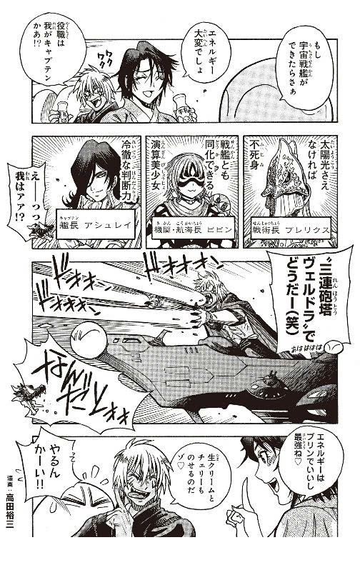 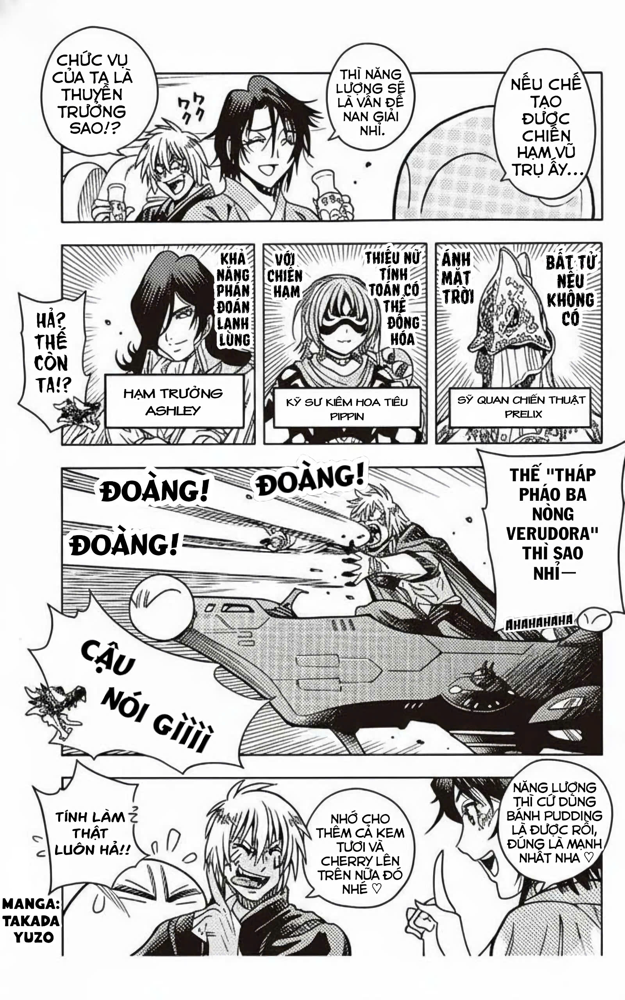LỜI BẠT
今作、転生したらスライムだった件の番外編『とある休暇の過ごし方』を購入してくださいまして、ありがとうございます！
Cảm ơn các bạn đã mua tác phẩm này, phần ngoại truyện của Tensei Shitara Slime Datta Ken mang tên 『Cách trải nghiệm một kỳ nghỉ nọ』!
この話は『小説家になろう』に掲載しているものを校正したもので、多少の加筆を行いましたが、連載当時の内容から大幅な変更はせずに一冊の本に纏めた形であります。
Câu chuyện này là bản hiệu đính từ những gì đã được đăng tải trên 『Shousetsuka ni Narou』. Tuy tôi có viết thêm một chút, nhưng về cơ bản nó được tập hợp thành một cuốn sách mà không thay đổi quá nhiều so với nội dung vào thời điểm đăng dài kỳ.
当時の依頼はSS（ショートストーリー）でした。
Yêu cầu vào lúc đó là viết một SS (Short Story - Truyện ngắn).
ところが書き終えてみると、単行本にして一冊分を十分に補えるほどの文量となっていました（笑）。
Tuy nhiên khi viết xong, lượng văn bản lại nhiều đến mức đủ để lấp đầy một cuốn đơn hành bản (cười).
企画担当さんが「SSとは……」という哲学的な問題にぶち当たっていたそうですが、その答えは結局のところ、SS（スペシャルストーリー）という事で解決したと記憶しています。
Nghe nói người phụ trách kế hoạch đã vấp phải một vấn đề mang tính triết học rằng "SS rốt cuộc là cái gì...", nhưng tôi nhớ là câu trả lời cuối cùng đã được giải quyết bằng cách coi SS là viết tắt của "Special Story" (Truyện đặc biệt).
解釈の違いって、本当に難しい問題ですね（笑）。
Sự khác biệt trong cách diễn giải quả thực là một vấn đề nan giải nhỉ (cười).
とまあ、冗談はさておき。
Mà thôi, gác chuyện đùa sang một bên.
この企画の肝としましては、高田裕三先生によるコミカライズでしょう！
Điểm mấu chốt của dự án này chính là bản truyện tranh chuyển thể do Takada Yuzo-sensei thực hiện!
大昔からファンだった高田先生に漫画にしてもらえた事は、原作者として最高に幸せな体験でした。とはいえ、憧れの漫画家に描いてもらえるのだから、つまらない内容ではダメだというプレッシャーもありました。
Việc được Takada-sensei, người mà tôi đã hâm mộ từ rất lâu về trước, chuyển thể tác phẩm thành truyện tranh là trải nghiệm hạnh phúc nhất đối với tư cách là tác giả gốc. Tuy nhiên, vì được họa sĩ truyện tranh mà mình ngưỡng mộ vẽ cho, nên tôi cũng chịu áp lực rằng nội dung tuyệt đối không được nhàm chán.
これを乗り越えられたかどうか、いまだに自信はありません。ですが、もしもまた同じ機会が得られるならば、恐れずに何度でも挑戦したいと思っております！！
Tôi vẫn chưa tự tin rằng liệu mình đã vượt qua được áp lực đó hay chưa. Thế nhưng, nếu có cơ hội tương tự lần nữa, tôi mong muốn sẽ không ngần ngại mà thử thách bản thân bao nhiêu lần đi chăng nữa!!
僕の小説を全力で漫画化してくださった高田先生に、感謝の念を捧げたいと思います。
Tôi xin gửi lời cảm ơn chân thành đến Takada-sensei, người đã dốc toàn lực chuyển thể tiểu thuyết của tôi thành truyện tranh.
こうした企画は滅多にないと思いますが、お祭りのように楽しい一時でした。
Tôi nghĩ những dự án thế này hiếm khi có được, nhưng đó quả là một khoảng thời gian vui vẻ tựa như lễ hội vậy.
これも全て、読者の皆さまの応援によって実現した企画です。
Tất cả điều này đều là dự án được hiện thực hóa nhờ vào sự ủng hộ của các độc giả.
今後とも『転生したらスライムだった件』を、宜しくお願い致します！！
Rất mong mọi người sẽ tiếp tục ủng hộ 『Tensei Shitara Slime Datta Ken』 trong thời gian tới!!